<!doctype html>
<html lang="zh-Hans"><head><meta charset="utf-8">
<meta name="viewport" content="width=device-width, initial-scale=1">
<title>Rectified Flow 原论文中英对照</title>


<style>
:root{--accent:#0F766E;--accent-soft:#E6F4F1;--accent-line:#B8DED8;--accent-ink:#0B5750;
--bg:#FBFAF8;--bg-elev:#FFF;--bg-sunken:#F3F1ED;--bg-hover:#F1EFEA;
--text:#14161A;--text-2:#4E5560;--text-3:#868D98;--line:#E4E1DA;--line-soft:#EFEDE7;
--warn:#B45309;--warn-soft:#FEF6E7;--key:#C0564E;--mk:#FBEFC0;--mk-on:#F7E08A;--mk-line:#DDBE6A;
--shadow-sm:0 1px 2px rgba(20,22,26,.05);--r-sm:6px;--r-md:10px;--r-full:999px;--topbar-h:56px;
--sans:-apple-system,BlinkMacSystemFont,"SF Pro SC","PingFang SC",system-ui,sans-serif;
--serif:"Iowan Old Style","Palatino Linotype",Palatino,Georgia,"Songti SC",serif;
--mono:"SF Mono",ui-monospace,Menlo,Consolas,monospace}
*{box-sizing:border-box}html{-webkit-text-size-adjust:100%;scroll-behavior:smooth}
body{margin:0;background:var(--bg);color:var(--text);font:15px/1.6 var(--sans);-webkit-font-smoothing:antialiased;padding-bottom:80px}
a{color:inherit;text-decoration:none}button{font:inherit;color:inherit;background:none;border:0;cursor:pointer;text-align:left}
h1,h2,h3,h4{margin:0;font-weight:650;letter-spacing:-.01em}
.wrap{max-width:1440px;margin:0 auto;padding:0 24px}
.topbar{position:sticky;top:0;z-index:60;height:var(--topbar-h);background:color-mix(in srgb,var(--bg) 90%,transparent);backdrop-filter:blur(12px);border-bottom:1px solid var(--line)}
.topbar .wrap{height:100%;display:flex;align-items:center;gap:14px}
.back{color:var(--text-2);font-size:13px}
.src-flag{margin-left:auto;font-size:12px;color:var(--text-3);border:1px solid var(--line);background:var(--bg-elev);padding:3px 9px;border-radius:var(--r-full)}
.ep-head{padding:30px 0 8px;max-width:900px}
.ep-kicker{display:flex;gap:10px;align-items:center;font-size:12.5px;color:var(--text-3)}
/* flex:none —— 不然窄屏上后半段挤过来，药丸会被压得从「论文」中间断成两行 */
.ep-kicker .topic{flex:none;white-space:nowrap;background:var(--accent-soft);color:var(--accent-ink);padding:2px 9px;border-radius:var(--r-full);font-weight:600}
.ep-head h1{font-size:29px;line-height:1.25;margin:12px 0 0}
.ep-head h1 .nb{white-space:nowrap}
.ep-head h1 em{display:block;font-style:normal;font-size:16.5px;font-weight:400;color:var(--text-2);margin-top:8px}
.ep-meta{display:flex;flex-wrap:wrap;gap:6px 20px;margin-top:13px;font-size:13px;color:var(--text-3)}
.ep-meta b{font-weight:600;color:var(--text);font-variant-numeric:tabular-nums}
.bar{position:sticky;top:var(--topbar-h);z-index:50;background:color-mix(in srgb,var(--bg) 92%,transparent);backdrop-filter:blur(10px);border-bottom:1px solid var(--line);margin-top:10px}
.bar .wrap{display:flex;align-items:center;gap:14px;flex-wrap:wrap;padding:10px 24px}
.swbox{margin-left:auto;display:flex;gap:9px}
/* 图例：四类批注各一色，外加划重点的波浪线 */
.legend{display:flex;align-items:center;gap:14px;flex-wrap:wrap;font-size:12.5px;color:var(--text-2)}
.lg{display:inline-flex;align-items:center;gap:5px;cursor:default}
.lg i{width:13px;height:13px;border-radius:3px;border:1px solid transparent;flex:none}
.lg .key{color:var(--text-2)}
/* .key 的 padding-bottom 会把盒子撑高，flex 居中后这一项就比别人高一截；
   用等量负 margin 抵掉，让它和色块那几项对齐 */
.lg .key{margin-bottom:-8px}
.sw{display:inline-flex;align-items:center;gap:7px;padding:5px 12px 5px 9px;border:1px solid var(--line);border-radius:var(--r-full);font-size:13px;color:var(--text-2);background:var(--bg-elev)}
.sw:hover{background:var(--bg-hover);color:var(--text)}
.sw i{width:26px;height:15px;border-radius:var(--r-full);background:var(--line);position:relative;flex:none;transition:background .15s}
.sw i::after{content:"";position:absolute;top:2px;left:2px;width:11px;height:11px;border-radius:50%;background:#fff;box-shadow:var(--shadow-sm);transition:transform .15s}
.sw[aria-pressed="true"]{color:var(--accent-ink);border-color:var(--accent-line);background:var(--accent-soft)}
.sw[aria-pressed="true"] i{background:var(--accent)}
.sw[aria-pressed="true"] i::after{transform:translateX(11px)}
.bar .sp{margin-left:auto;font-size:12.5px;color:var(--text-3)}
/* 单列时也要显式写 minmax(0,1fr)：不写的话隐式列按 max-content 撑，
   正文里任何一个宽块（全景图、表格）都会把整页顶出横向滚动条 */
.main{display:grid;grid-template-columns:minmax(0,1fr);gap:34px;padding-top:26px}
@media(min-width:1000px){.main{grid-template-columns:210px minmax(0,1fr)}}
/* 顶部三个 tab：论文 / 两张全景图。图有 1560 宽，跟正文并排就会压到目录上，
   所以不并排 —— 切到图，正文和目录一起收起，整幅让给图 */
.tabs{display:flex;gap:8px;align-items:center;flex-wrap:wrap}
.tb{font:inherit;font-size:13px;color:var(--text-2);background:var(--bg-elev);cursor:pointer;
  border:1px solid var(--line);border-radius:var(--r-full);padding:5px 14px;white-space:nowrap}
.tb:hover{background:var(--bg-hover);color:var(--text)}
.tb.on{background:var(--accent);border-color:var(--accent);color:#fff;font-weight:600}
.mapview{display:none}
.mapview .pbox{overflow-x:auto;overscroll-behavior-x:contain}
.mapview .pin{min-width:1040px}
.mapview svg{display:block;width:100%;height:auto}
.mapview .pcap{display:flex;gap:12px;align-items:baseline;margin:12px 0 0;
  font-size:12.5px;color:var(--text-3)}
.phint{margin-left:auto;white-space:nowrap}
/* 哪个视图显示，交给 JS 打的 .on —— tab 是按数据生成的，这里不写死几张图 */
.mapview.on,.resview.on{display:block}
/* 看图 / 看资源时正文、目录、批注开关都收起来 */
body[data-view^="map"] .toc,body[data-view^="map"] .paper,
body[data-view^="map"] .legend,body[data-view^="map"] .swbox,
body[data-view^="doc"] .toc,body[data-view^="doc"] .paper,
body[data-view^="doc"] .legend,body[data-view^="doc"] .swbox,
body[data-view="res"] .toc,body[data-view="res"] .paper,
body[data-view="res"] .legend,body[data-view="res"] .swbox{display:none}
/* 正文要 26px 的天头，图不要 —— 图自己已经有一圈留白，两份叠起来就空出一条 */
body[data-view^="map"] .main,body[data-view="res"] .main,
body[data-view^="doc"] .main{grid-template-columns:minmax(0,1fr);padding-top:8px}

/* ══ 独立内容 tab ══ */
.docview{display:none}
.docview.on{display:block}
.doc{max-width:760px;margin:0 auto;padding:8px 0 64px;font-size:15px;line-height:1.75;color:var(--text-2)}
.doc>h2{margin:38px 0 4px;font-size:20px;line-height:1.35;font-weight:650;color:var(--text);letter-spacing:-.2px}
.doc>h2:first-child{margin-top:6px}
.doc>h3{margin:26px 0 4px;font-size:16px;font-weight:650;color:var(--text)}
.doc>p.lede{margin:0 0 26px;font-size:15px;color:var(--text-3)}
.doc p{margin:0 0 12px}
.doc b{color:var(--text);font-weight:600}
.doc ul,.doc ol{margin:0 0 14px;padding-left:1.2em}
.doc li{margin-bottom:6px}
.doc a{color:var(--accent-ink);text-decoration:underline;text-underline-offset:2px;text-decoration-thickness:.5px}
.doc hr{border:0;border-top:1px solid var(--line-soft);margin:34px 0}
.doc svg{display:block;width:100%;height:auto;margin:14px 0 6px}
.doc figure{margin:18px 0 22px}
.doc figcaption{margin-top:6px;font-size:13px;color:var(--text-3)}
.doc p.fnote{margin:-10px 0 18px;font-size:12.5px;line-height:1.6;color:var(--text-3)}
.doc table{width:100%;border-collapse:collapse;margin:6px 0 18px;font-size:13.5px}
.doc thead th{text-align:left;font-weight:600;color:var(--text-3);font-size:12px;
  padding:0 10px 6px 0;border-bottom:1px solid var(--line)}
.doc td{padding:7px 10px 7px 0;border-bottom:1px solid var(--line-soft);vertical-align:top}
.doc tr:last-child td{border-bottom:0}
.doc td.n{font-family:var(--mono);font-size:12.5px;white-space:nowrap;color:var(--text)}
/* 中文每个字之间都能断行，自动表格布局会把短标签列挤到一个字宽（「张/祥/雨」竖着排）。
   标签列显式不折行；长文字留给其它列去折。 */
.doc td.k{white-space:nowrap;color:var(--text)}
.doc td .who{margin-left:8px;font-size:12.5px;color:var(--text-3)}
.doc td .sub{display:block;margin-top:3px;font-size:13px;line-height:1.65;color:var(--text-2)}
.doc .eg{margin:6px 0 16px;padding:11px 13px;background:var(--bg-sunken);border-radius:var(--r-sm);
  font:12.5px/1.65 var(--mono);color:var(--text-2);white-space:pre;overflow-x:auto}
.doc .callout{margin:16px 0;padding:13px 15px;background:var(--accent-soft);
  border-radius:var(--r-md);font-size:14px;color:var(--accent-ink)}
.doc .callout b{color:var(--accent-ink)}
.doc .warnout{margin:16px 0;padding:13px 15px;background:var(--warn-soft);
  border-radius:var(--r-md);font-size:14px;color:#7A3A06}
.doc .warnout b{color:#7A3A06}
@media (max-width:640px){
  .doc table{display:block;overflow-x:auto;width:max-content;min-width:100%;max-width:100%}
  .doc th,.doc td{min-width:5.5em}
  .doc td:last-child,.doc th:last-child{min-width:12em}
}
@media(max-width:900px){.doc{padding:4px 0 48px}}

/* ══ 资源 tab ══ */
.resview{display:none}
.resview .area-note{margin:0 0 20px;max-width:760px}
.res-sec{max-width:1040px}
.res-sec+.res-sec{margin-top:34px}
.res-h{font-size:12px;color:var(--text-3);font-weight:600;letter-spacing:.06em;
  padding-bottom:8px;margin-bottom:2px;border-bottom:1px solid var(--line)}
/* 工具只是个链接引用，没有播放器也没有章节，卡片就矮一截 */
.rcard h4{font-size:16px;line-height:1.4}
.rcard h4 a:hover{color:var(--accent)}
.vcard{border:1px solid var(--line);border-radius:var(--r-md);background:var(--bg-elev);
  padding:18px 20px}
.vcard+.vcard{margin-top:18px}
.vhd h4{font-size:16px;line-height:1.4}
.vhd h4 a:hover{color:var(--accent)}
.vzh{margin:7px 0 0;font-size:13.5px;color:var(--text-2);line-height:1.6}
.vmeta{display:flex;flex-wrap:wrap;gap:6px 14px;align-items:center;margin:9px 0 0;
  font-size:12.5px;color:var(--text-3)}
.vmeta .vsrc{background:var(--accent-soft);color:var(--accent-ink);font-weight:600;
  padding:2px 9px;border-radius:var(--r-full)}
.vmeta time{font-variant-numeric:tabular-nums}
.vmeta a{color:var(--text-2);border-bottom:1px solid var(--line)}
.vmeta a:hover{color:var(--accent);border-color:var(--accent-line)}
.vbody{display:grid;gap:16px;margin-top:15px}
@media(min-width:820px){.vbody{grid-template-columns:minmax(0,1.35fr) minmax(240px,1fr)}}
.vwrap{position:relative;aspect-ratio:16/9;border-radius:var(--r-sm);overflow:hidden;
  background:var(--bg-sunken);border:1px solid var(--line)}
.vwrap iframe{position:absolute;inset:0;width:100%;height:100%;border:0}
.vplay{position:absolute;inset:0;width:100%;height:100%;padding:0;cursor:pointer;
  background-size:cover;background-position:center;display:flex;
  align-items:center;justify-content:center}
.vplay::before{content:"";position:absolute;inset:0;background:rgba(20,22,26,.45);transition:background .15s}
.vplay:hover::before{background:rgba(20,22,26,.32)}
.vtri{position:relative;width:54px;height:54px;border-radius:50%;background:rgba(255,255,255,.94);
  box-shadow:0 2px 12px rgba(20,22,26,.3)}
.vtri::after{content:"";position:absolute;top:50%;left:52%;transform:translate(-50%,-50%);
  border-style:solid;border-width:9px 0 9px 15px;border-color:transparent transparent transparent #14161A}
.vchap{margin:0;padding:0;list-style:none;max-height:min(46vh,320px);overflow:auto;
  overscroll-behavior:contain;border:1px solid var(--line-soft);border-radius:var(--r-sm)}
.vchap li+li{border-top:1px solid var(--line-soft)}
.vchap button{display:flex;gap:10px;width:100%;padding:7px 11px;font-size:12.5px;
  color:var(--text-2);line-height:1.45}
.vchap button b{flex:none;font:12px/1.45 var(--mono);color:var(--accent);font-weight:600;
  font-variant-numeric:tabular-nums}
.vchap button:hover{background:var(--bg-hover);color:var(--text)}
.vchap button.on{background:var(--accent-soft);color:var(--accent-ink)}
.vchap button.on b{color:var(--accent-ink)}
.vshots{margin-top:15px;border-top:1px solid var(--line-soft);padding-top:12px}
.vshots summary{cursor:pointer;font-size:12.5px;color:var(--text-2);display:flex;gap:8px;align-items:baseline}
.vshots summary span{font-size:11.5px;color:var(--text-3)}
.vshots summary:hover{color:var(--accent)}
.shots{display:grid;grid-template-columns:repeat(auto-fill,minmax(190px,1fr));gap:12px;margin-top:12px}
.shot{margin:0}
.shot img{display:block;width:100%;height:auto;aspect-ratio:16/10;object-fit:cover;
  border-radius:var(--r-sm);border:1px solid var(--line);cursor:zoom-in;background:var(--bg-sunken)}
.shot img:hover{border-color:var(--accent-line)}
/* 缩略图统一裁成一个比例，这一排的说明才在同一条线上；点开是没裁过的原图 */
.shot figcaption{margin-top:5px;text-align:left;font-size:11.5px;color:var(--text-3);line-height:1.45}
.shot figcaption i{display:block;font-style:normal;font-size:10.5px;color:var(--accent);
  letter-spacing:.03em;font-weight:600}
.lb{position:fixed;inset:0;z-index:70;background:rgba(20,22,26,.86);display:none;
  align-items:center;justify-content:center;padding:28px;cursor:zoom-out}
.lb.on{display:flex}
.lb figure{margin:0;max-width:min(1400px,100%);max-height:100%;display:flex;
  flex-direction:column;gap:10px;align-items:center}
.lb img{max-width:100%;max-height:calc(100vh - 100px);object-fit:contain;border-radius:var(--r-sm)}
.lb figcaption{font-size:12.5px;color:rgba(255,255,255,.78);text-align:center}
.lb-nav{position:absolute;top:50%;transform:translateY(-50%);width:44px;height:44px;flex:none;
  border-radius:50%;background:rgba(255,255,255,.13);color:#fff;font-size:26px;line-height:1;
  display:flex;align-items:center;justify-content:center;cursor:pointer;padding-bottom:3px}
.lb-nav:hover{background:rgba(255,255,255,.3)}
.lb-nav[hidden]{display:none}
.lb-prev{left:16px}.lb-next{right:16px}
@media(max-width:640px){.lb-nav{width:38px;height:38px;font-size:22px}.lb-prev{left:6px}.lb-next{right:6px}}
.toc{display:none}
@media(min-width:1000px){.toc{display:block;position:sticky;top:calc(var(--topbar-h) + 54px);align-self:start;max-height:calc(100vh - 150px);overflow:auto}}
.toc h4{font-size:11px;text-transform:uppercase;letter-spacing:.08em;color:var(--text-3);margin-bottom:10px}
.toc a{display:block;padding:4px 8px;border-radius:var(--r-sm);font-size:12.5px;color:var(--text-2);border-left:2px solid transparent}
.toc a:hover{background:var(--bg-hover);color:var(--text)}
.toc a.on{color:var(--accent);background:var(--accent-soft);border-left-color:var(--accent);font-weight:600}
.toc .sub{padding-left:16px;font-size:12px}
.paper{max-width:1080px}
.front,.ph,.eqbox,.floatbox,.refs{max-width:calc(100% - 322px)}
.front{text-align:center;padding:6px 0 22px;border-bottom:1px solid var(--line);margin-bottom:10px}
.ptitle{font:600 27px/1.3 var(--serif)}
.agrid{margin-top:18px;display:flex;flex-direction:column;gap:10px}
.arow{display:flex;justify-content:center;gap:26px;flex-wrap:wrap}
.acell{display:flex;flex-direction:column;gap:1px;min-width:150px}
.acell .an{font:600 13.5px/1.5 var(--serif);color:var(--text)}
.acell .aa{font:12px/1.5 var(--sans);color:var(--text-3)}
.acell .ae{font:11.5px/1.5 var(--mono);color:var(--text-3);opacity:.8}
.acell .amk{font-size:.72em;vertical-align:super;color:var(--text-3);margin-left:1px}
/* 首页页脚：论文里在正文下方、一条短横线之后 */
.fnotes{margin:26px auto 0;max-width:720px;text-align:left;padding-top:12px;position:relative}
.fnotes::before{content:"";position:absolute;top:0;left:0;width:150px;height:1px;background:var(--line)}
.fnotes p{margin:0 0 5px;font:11.5px/1.65 var(--serif);color:var(--text-3);text-indent:1.2em}
.fnotes sup{font-size:.9em;margin-right:2px}
.ph{font:650 19px/1.3 var(--sans);margin:34px 0 12px;padding-bottom:8px;border-bottom:1px solid var(--line);scroll-margin-top:130px}
h3.ph{font-size:16px;margin-top:26px;border-bottom-color:var(--line-soft)}
/* 段落级标题：论文里是接在正文前面的粗体小标题，不带横线 */
h4.ph{font:650 14.5px/1.4 var(--serif);margin:20px 0 2px;padding-bottom:0;border-bottom:0;color:var(--text)}
.hn{font-family:var(--mono);font-size:.8em;color:var(--accent);margin-right:10px}
.blk{display:grid;gap:6px 26px;margin-bottom:4px;position:relative}
/* 不用 content-visibility：屏外块的高度只是估算，滚动位置会随渲染漂移，刷新后落点乱跑 */
html{overflow-anchor:none}
@media(min-width:1200px){.blk{grid-template-columns:minmax(0,1fr) 296px;align-items:start}
.side{grid-column:2;grid-row:1/span 3;position:sticky;top:calc(var(--topbar-h) + 62px)}
/* 标题批注复用正文两栏，但标题不能再套全页级的减宽；卡片与 h3 顶部对齐。 */
.hblk>.ph{max-width:none;grid-column:1}
.hblk>.side{padding-top:26px}}
.pp{margin:0;font:16px/1.78 var(--serif);color:#1B1E24;padding:6px 0 6px 22px;
  border-left:2px solid transparent;overflow-wrap:break-word}
/* 论文里那条 tensor2tensor 长网址一个断点都没有，break-word 也断不开（它不改最小内容宽度）。
   只给链接开 anywhere：手机上不这么做，整页就被这一行顶出横向滚动条 */
.pp a.ltx_url,.nt-a a,.sheet-bd a{overflow-wrap:anywhere}
.blk.hot .pp{border-left-color:var(--accent-line);background:linear-gradient(90deg,rgba(230,244,241,.5),transparent 60%)}
/* itemize：原件的 • 在 <li> 上，段落被单拎出来后就丢了，这里补回去 */
.blk.li .pp{position:relative;padding-left:52px}
.blk.li .pp::before{content:"•";position:absolute;left:30px;color:var(--text-3)}
.lxa{display:block;height:0;scroll-margin-top:130px}
.dot{position:absolute;left:0;top:12px;width:16px;height:16px;border-radius:50%;background:var(--accent-soft);border:1px solid var(--accent-line);color:var(--accent-ink);font:10px/14px var(--mono);text-align:center}
/* 划重点：偏红的波浪线，和批注的黄绿紫底色分得开。
   不用 text-decoration:wavy —— 那个的波长由浏览器定死，只能调线宽，密得像锯齿。
   改成自绘的一段波形铺底，波长（background-size 的宽）就能自己定。 */
.key{text-decoration:none;padding-bottom:8px;
  background:url("data:image/svg+xml;utf8,<svg xmlns='http://www.w3.org/2000/svg' width='15' height='8' viewBox='0 0 15 8'><path d='M0 4 Q 3.75 0 7.5 4 T 15 4' fill='none' stroke='%23C0564E' stroke-width='2' stroke-linecap='round'/></svg>") repeat-x 0 100%}
/* 波长 = svg 的 width（15），波幅 = 控制点偏移的一半（基线 4、控制点 0 → 偏移 4 → 幅 2） */
mark{background:var(--mk);border-bottom:1px solid var(--mk-line);border-radius:2px;padding:0 1px;cursor:pointer;color:inherit}
mark:hover{filter:brightness(.96)}
mark.on{box-shadow:0 0 0 2px rgba(20,22,26,.14)}
mark>sup{font:9.5px var(--mono);vertical-align:super;opacity:.85}
mark[data-k="词句"]{background:#FBEFC0;border-bottom-color:#DDBE6A}
mark[data-k="词句"]>sup{color:#8A6512}
.num[data-k="词句"]{background:#FBEFC0;color:#8A6512}
.tag[data-k="词句"]{color:#8A6512;border-color:#DDBE6A;background:#FBEFC066}
mark[data-k="原理"]{background:#E5DDF4;border-bottom-color:#B3A2DA}
mark[data-k="原理"]>sup{color:#4B3B7A}
.num[data-k="原理"]{background:#E5DDF4;color:#4B3B7A}
.tag[data-k="原理"]{color:#4B3B7A;border-color:#B3A2DA;background:#E5DDF466}
mark[data-k="基础"]{background:#D8EDE3;border-bottom-color:#8CC9B2}
mark[data-k="基础"]>sup{color:#1D6B52}
.num[data-k="基础"]{background:#D8EDE3;color:#1D6B52}
.tag[data-k="基础"]{color:#1D6B52;border-color:#8CC9B2;background:#D8EDE366}
mark[data-k="工程对照"]{background:#F7DCE3;border-bottom-color:#DFA0B4}
mark[data-k="工程对照"]>sup{color:#8B2F4B}
.num[data-k="工程对照"]{background:#F7DCE3;color:#8B2F4B}
.tag[data-k="工程对照"]{color:#8B2F4B;border-color:#DFA0B4;background:#F7DCE366}
/* 图例 */
.legend{display:flex;gap:7px;flex-wrap:wrap;align-items:center}
.legend i{font-style:normal;font-size:11.5px;padding:2px 9px;border-radius:var(--r-full);border:1px solid transparent}

/* 来源 HTML 自带的标记 */
.pp math{font-size:1em}
.eqbox{margin:18px 0 18px 22px;padding:14px 8px;background:color-mix(in srgb,var(--bg-elev) 45%,transparent);border:1px solid var(--line-soft);border-radius:var(--r-md);overflow-x:auto}
.eqbox table{margin:0 auto;border-collapse:collapse}
.eqbox math{font-size:1.1rem}
.ltx_eqn_cell{padding:2px 6px}
.ltx_eqn_center_padleft,.ltx_eqn_center_padright{width:20px}
.ltx_tag_equation{font:12px var(--mono);color:var(--text-3)}
.floatbox{margin:20px 0 20px 22px;text-align:center;overflow-x:auto}
.floatbox figure{margin:0}
/* 带批注的图：网格已经留出旁注列，图自己就不用再减宽度了 */
.blk.float{align-items:start}
.blk.float .floatbox{max-width:none;margin-left:22px}   /* <figure> 的浏览器默认左右各 40px 边距，会把容器顶出滚动条 */
.floatbox.rot{overflow:visible}
.floatbox.sxs figure{display:flex;flex-wrap:wrap;gap:14px;align-items:flex-start;justify-content:center}
.floatbox.sxs img{min-width:0;width:auto;max-width:none;max-height:none;align-self:flex-start}
/* 源里带 ltx_fig_right 的是右幅，但它在 DOM 里排在前面，按图注的 (Left)/(Right) 摆回去 */
.floatbox.sxs img.ltx_fig_right{order:2}
.floatbox.sxs figcaption{flex:1 0 100%;order:3}
@media (max-width:860px){.floatbox.sxs figure{display:block}.floatbox.sxs img{max-height:600px}}
/* 图 1 原图 912×1344，铺满一屏还多，限高压一压；横图不受影响 */
.floatbox img{max-width:100%;max-height:600px;width:auto;height:auto;background:#fff;border:1px solid var(--line);border-radius:var(--r-md);padding:12px}
/* 图 2 是两块并排的 panel，原件用 ltx_flex_figure 表达，这里给它真的 flex —— 竖着堆太占地方 */
.ltx_flex_figure{display:flex;flex-wrap:wrap;justify-content:center;align-items:flex-end;gap:56px}
.ltx_flex_cell{display:flex;flex-wrap:wrap;justify-content:center;align-items:flex-end;gap:56px}
.ltx_figure_panel{width:auto!important;max-width:100%;display:flex;flex-direction:column;align-items:center;gap:8px}
.ltx_figure_panel>p{margin:0;font:13px/1.5 var(--serif);color:var(--text-2)}
.ltx_figure_panel img{max-height:400px;width:auto}
/* 图片本身已经转正，控高直接写 max-height */
.floatbox.rot img{max-height:470px;width:auto}
/* 图内的两块并排：ltx_flex_break 是原件用来强制换行的，横排就得让它失效；
   高度写死，两块才严格等高 */
.floatbox.rot .ltx_flex_figure{flex-wrap:nowrap;align-items:flex-start;gap:20px}
.floatbox.rot .ltx_flex_break{display:none}
.floatbox.rot .ltx_flex_cell{display:flex;justify-content:center;min-width:0}
.floatbox.rot .ltx_figure_panel{height:400px;max-height:400px;width:auto;max-width:100%}
.floatbox.rot figure{display:flex;flex-direction:column;align-items:center;width:100%}
figcaption,.ltx_caption{margin-top:12px;font:13px/1.65 var(--serif);color:var(--text-2);text-align:center;max-width:min(760px,100%);margin-inline:auto}
.ltx_tag_figure,.ltx_tag_table{font-weight:600;color:var(--text)}
.floatbox table.ltx_tabular{border-collapse:collapse;margin:0 auto;font:13.5px/1.5 var(--serif);background:var(--bg-elev)}
.ltx_tabular td,.ltx_tabular th{padding:6px 12px;white-space:nowrap}
.ltx_border_t{border-top:1px solid var(--line)}
.ltx_border_b{border-bottom:1px solid var(--line)}
.ltx_border_r{border-right:1px solid var(--line-soft)}
.ltx_align_center{text-align:center}.ltx_align_left{text-align:left}.ltx_align_right{text-align:right}
.ltx_font_italic{font-style:italic}.ltx_font_bold{font-weight:650}
.ltx_font_typewriter{font-family:var(--mono);font-size:.92em}
.pp a,.refs a{color:var(--accent)}
.pp a:hover{text-decoration:underline}
.ltx_cite a{font-variant-numeric:tabular-nums}
/* 脚注：正文里只留角标，注文攒到章节末尾 */
.fnm{font-size:.72em;vertical-align:super;color:var(--warn);margin-left:1px}
.fnsec{margin:22px 0 8px 22px;padding-top:10px;position:relative;max-width:calc(100% - 322px)}
.fnsec::before{content:"";position:absolute;top:0;left:0;width:150px;height:1px;background:var(--line)}
.fnsec-h{display:block;font:10.5px var(--mono);letter-spacing:.06em;color:var(--text-3);margin-bottom:5px}
.fnsec p{margin:0 0 6px;font:12.5px/1.7 var(--serif);color:var(--text-3)}
.fnsec sup{color:var(--warn);margin-right:4px}
.ltx_note_outer,.ltx_note_content{display:none}
.sf-hidden{display:none}
.side{display:flex;flex-direction:column;gap:8px;padding-top:6px}
/* 不挂原句的批注：成组摆在章节末尾，或预备/岔路区 */
.nblock{margin:16px 0 22px 22px;max-width:calc(100% - 322px)}
.nb-h{display:flex;align-items:baseline;gap:8px;font:12px var(--mono);color:var(--text-3);margin-bottom:8px;
  padding-top:9px;border-top:1px dashed var(--line)}
.nb-h span{font-size:11px;opacity:.8}
.nb-list{display:grid;gap:7px}
.ph.area{margin-top:44px;border-bottom-width:2px;border-bottom-color:var(--accent-line)}
.ph .n{font:11.5px var(--mono);color:var(--text-3);font-weight:400;margin-left:10px}
.area-note{margin:0 0 4px 22px;max-width:calc(100% - 322px);font-size:13px;color:var(--text-3)}
.nt{border:1px solid var(--line);border-radius:var(--r-md);background:var(--bg-elev);box-shadow:var(--shadow-sm);overflow:hidden}
.nt.on{border-color:var(--accent);box-shadow:0 0 0 3px var(--accent-soft)}
.nt-q{display:flex;gap:8px;align-items:flex-start;width:100%;padding:9px 11px;font-size:13px;line-height:1.5}
.nt-q:hover{background:var(--bg-hover)}
.nt-q .num{flex:none;width:17px;height:17px;border-radius:5px;background:var(--mk);color:#8A6512;font:10px/17px var(--mono);text-align:center;margin-top:1px}
.nt-q .qt{font-weight:600;color:var(--text)}
.nt-q .tag{flex:none;font-size:10.5px;color:var(--text-3);border:1px solid var(--line);border-radius:var(--r-full);padding:0 7px;margin-top:2px}
.nt-q .tag.basic{color:var(--warn);border-color:#EBD9B4;background:var(--warn-soft)}
.nt-a{display:none;overflow-wrap:break-word;padding:10px 11px 12px 36px;font-size:13px;line-height:1.7;color:var(--text-2);border-top:1px solid var(--line-soft);
  }
.nt.open .nt-a{display:block}
.nt-a p{margin:0 0 8px}.nt-a b{color:var(--text)}
.nt-a ul{margin:0 0 8px;padding-left:1.1em}.nt-a li{margin-bottom:4px}
/* <ol> 的浏览器默认缩进 40px，序号会比正文缩进一大截；收窄到刚好让数字左缘和正文齐平 */
.nt-a ol{margin:0 0 8px;padding-left:1.5em}
/* 批注里的表：旁注栏只有 296px，浏览器默认的自动布局会把每一列都压到换行，
   「情形」这种两个字的表头都能竖着排。所以一律不折行，放不下就整表横向滚
   —— 和批注 7 的参数表同一套。需要折行的说明列单独标 class="w"。 */
.nt-a table{display:block;overflow-x:auto;width:max-content;min-width:100%;max-width:100%;
  border-collapse:collapse;margin:2px 0 10px;font-size:12.5px;line-height:1.55}
.nt-a td,.nt-a th{white-space:nowrap;vertical-align:top;text-align:left;
  padding:5px 12px 5px 0;border-bottom:1px solid var(--line-soft)}
.nt-a td:last-child,.nt-a th:last-child{padding-right:0}
/* 最后一列几乎总是说明文字，默认让它折行吸收剩余宽度；中间列要折行的另标 .w */
.nt-a td:last-child,.nt-a th:last-child{white-space:normal}
.nt-a tr:first-child td{color:var(--text-3);font-size:11.5px}
.nt-a tr:last-child td{border-bottom:0}
.nt-a td.w{white-space:normal;min-width:9.5em}
/* 整张都是数字、本来就要横向滚的表，末列也别折 —— 折了会把表头撑成三行 */
.nt-a table.nw td:last-child,.nt-a table.nw th:last-child{white-space:nowrap}
/* 批注里的插图：跟着旁注栏的宽度缩放 */
.nt-a svg{display:block;width:100%;height:auto;margin:4px 0 10px}
.mf{font-family:var(--serif);white-space:nowrap}
.mf i{font-style:italic}
.mf sub{font-size:.7em;vertical-align:sub;line-height:0}
.mf sup{font-size:.7em;vertical-align:super;line-height:0}
.nt-a .m,.doc .m{font-family:var(--mono);font-size:.9em;background:var(--bg-sunken);padding:1px 5px;border-radius:4px;
  /* 别 nowrap：旁注栏才 296px 宽，多词的短语会被整体挤到下一行，上一行留一大截空白。
     换行时用 box-decoration-break 让两段各自带上圆角和底色 */
  box-decoration-break:clone;-webkit-box-decoration-break:clone}
.eg{margin:0 0 8px;padding:8px 10px;background:var(--bg-sunken);border-radius:var(--r-sm);
  font:11.5px/1.75 var(--mono);color:var(--text-2);
  /* 例子里的对齐是靠空格排出来的，pre-wrap 一折行就散了 —— 宁可横向滚 */
  white-space:pre;overflow-x:auto;overscroll-behavior-x:contain}
.eg::-webkit-scrollbar{height:6px}
.eg::-webkit-scrollbar-thumb{background:var(--line);border-radius:3px}
.refs{margin:30px 0 0 22px;border:1px solid var(--line);border-radius:var(--r-md);background:var(--bg-elev);scroll-margin-top:130px}
.refs summary{padding:12px 16px;font:650 15px/1.3 var(--sans);cursor:pointer;display:flex;align-items:center;gap:10px}
.refs summary span{font:12px var(--mono);color:var(--text-3);font-weight:400}
.refs ol{margin:0;padding:0 18px 16px 20px;font:13px/1.7 var(--serif);color:var(--text-2);list-style:none}
.refs li{margin-bottom:8px;scroll-margin-top:130px}
.refs li>details>summary{cursor:pointer;list-style:none;display:block;padding:3px 0}
.refs li>details>summary::-webkit-details-marker{display:none}
.refs li>details[open]>summary{color:var(--text)}
.refs li>details>summary:hover{background:var(--bg-hover);border-radius:4px}
.rl{margin-left:8px;font:11.5px var(--mono);color:var(--accent);white-space:nowrap}
.rn{margin:6px 0 6px 14px;font:13px/1.7 var(--sans);color:var(--text-2)}
.rc{margin:6px 0 10px 14px;padding-left:10px;border-left:2px solid var(--accent-line)}
.rc b{display:block;font:11px var(--mono);color:var(--text-3);font-weight:400;margin-bottom:4px}
.rc p{margin:0 0 5px;font:12.5px/1.65 var(--serif);color:var(--text-2)}
.rc i{font-style:normal;color:var(--accent);margin-right:8px;font-size:11px;font-family:var(--mono)}
.refs li:target{background:var(--mk);border-radius:3px}
.ltx_tag_bibitem{font:12px var(--mono);color:var(--accent);margin-right:6px}
.ltx_bibblock{display:inline}
/* 隐藏批注：高亮、旁注、段落底色、序号一起收掉，只剩论文本身 */
body.no-notes .side,body.no-notes .dot,body.no-notes .nblock{display:none}
body.no-notes mark{background:none;border-bottom:0;cursor:auto}
body.no-notes mark>sup{display:none}
body.no-notes .blk.hot .pp{border-left-color:transparent;background:none}
/* 隐藏批注只收内容，不动版面 —— 两栏网格保持原样，正文宽度不跟着变；
   划重点的波浪线也一起收掉，回到一份干净的论文 */
body.no-notes .key{background:none;padding-bottom:0}
/* 批注全收起来之后，那排颜色图例（含划重点）也就没有对应物了，一起收掉 */
body.no-notes .legend{display:none}
@media(max-width:999px){.ep-head h1{font-size:22px}.pp{font-size:15.5px;padding-left:16px}.dot{display:none}
.front,.ph,.eqbox,.floatbox,.refs{max-width:none;margin-left:16px}
.arow{gap:14px}.side{padding-top:2px;margin:0 0 14px 16px}}

/* ── 手机 ──
   批注卡片插在段落之间，一屏能塞下的正文就没几行了 —— 66 条批注会把文章切成碎片。
   所以 860 以下换一种给法：正文保持干净，点高亮从底部推上来一张卡。
   想一次看完的，顶部「展开全部批注」仍然把卡片摊回正文里。 */
@media(max-width:859px){
  .wrap{padding:0 14px}
  .side{display:none}
  body.notes-inline .side{display:flex}
  .pp{font-size:16px;line-height:1.8;padding-left:12px}
  .front,.ph,.eqbox,.floatbox,.refs{margin-left:0}
  .ep-head h1{font-size:20px}
  /* 出处那行在手机上要折两行，药丸跟着居中会飘到中间，顶对齐才像个标签 */
  .ep-kicker{align-items:flex-start;gap:8px}
  .ep-meta{gap:5px 14px;margin-top:11px;font-size:12px}
  .bar .wrap{padding:8px 14px;gap:8px}
  /* 顶栏在手机上是钉住的，三行就吃掉一屏的六分之一。
     颜色图例让位 —— 每条批注自己带分类标签，不看图例也认得出 */
  .legend{display:none}
  .swbox{margin-left:0}
  .sw{font-size:12px;padding:4px 10px}
}
/* 抽屉本身不限屏宽 —— 桌面端用不到，但样式留着，窗口一窄就能接上。
   背景怎么定住：**什么都不改**。之前给 body 加 position:fixed，body 一脱离
   文档流布局就重算一遍，开一次关一次闪两下。现在正文原地不动，只是拦住
   滚动手势 —— 遮罩上 touch-action:none（配一个 wheel 拦截给窄窗口的鼠标），
   抽屉里 overscroll-behavior:contain 不让滚动链传到底下的正文。 */
.scrim{position:fixed;inset:0;background:rgba(20,22,26,.38);opacity:0;pointer-events:none;
  transition:opacity .18s;z-index:60;touch-action:none}
.scrim.on{opacity:1;pointer-events:auto}
.sheet{position:fixed;left:0;right:0;bottom:0;z-index:61;background:var(--bg-elev);
  border-radius:16px 16px 0 0;box-shadow:0 -8px 32px rgba(20,22,26,.18);
  transform:translateY(102%);transition:transform .22s cubic-bezier(.32,.72,0,1);
  max-height:82vh;display:flex;flex-direction:column;overscroll-behavior:contain}
.sheet.on{transform:none}
.sheet-grab{flex:none;width:38px;height:4px;border-radius:2px;background:var(--line);margin:8px auto 4px;touch-action:none}
.sheet-hd{flex:none;display:flex;gap:9px;align-items:flex-start;padding:6px 16px 10px;
  border-bottom:1px solid var(--line-soft);touch-action:none}
.sheet-hd .num{flex:none;width:19px;height:19px;border-radius:5px;background:var(--mk);color:#8A6512;
  font:11px/19px var(--mono);text-align:center}
.sheet-hd .qt{flex:1;font-size:14.5px;font-weight:650;color:var(--text);line-height:1.45}
.sheet-hd .tag{flex:none;font-size:11px;color:var(--text-3);border:1px solid var(--line);
  border-radius:var(--r-full);padding:1px 8px}
.sheet-x{flex:none;font:inherit;font-size:20px;line-height:1;color:var(--text-3);background:none;
  border:0;cursor:pointer;padding:0 2px}
.sheet-bd{overflow:auto;-webkit-overflow-scrolling:touch;overscroll-behavior:contain;padding:12px 16px 26px;overflow-wrap:break-word;
  font-size:14.5px;line-height:1.75;color:var(--text-2)}
.sheet-bd svg{display:block;width:100%;height:auto;margin:4px 0 10px}

/* 宽屏下 .blk 是「正文 | 旁注」两栏网格，中文段不钉住会被自动排进旁注那一栏 */
.blk>.pp{grid-column:1}
.pp.zh{font:15.5px/1.85 var(--sans);color:#2C3440;padding-top:2px;margin-bottom:10px;
  border-left:2px solid var(--line);margin-left:22px;padding-left:14px;background:none}
.blk.hot .pp.zh{border-left-color:var(--line);background:none}
.blk.li .pp.zh{margin-left:52px;padding-left:14px}
.blk.li .pp.zh::before{content:none}
.pp.zh math{font-size:.97em}
.hzh{margin-left:12px;font-weight:600;color:var(--accent-ink);font-size:.92em}
h4.ph .hzh{font-family:var(--sans)}
.tzh{margin-left:6px;color:var(--text-3);font-size:.95em}
.toc a.on .tzh{color:inherit}
.fzh{margin:6px auto 0;max-width:min(760px,100%);font:13.5px/1.75 var(--sans);color:#2C3440;text-align:center}
.fzh math{font-size:.97em}
.lzh{display:block;margin:1px 0 3px 1.5em;font:13px/1.6 var(--sans);color:var(--text-2)}
.fnsec .fzh{text-align:left;max-width:none;margin:0 0 8px;font-size:12.5px}
.ltx_listing{text-align:left;display:inline-block;margin-top:10px;font:14px/1.7 var(--serif)}
.ltx_listingline{padding:1px 0}
body.no-zh .pp.zh,body.no-zh .hzh,body.no-zh .tzh,body.no-zh .fzh,body.no-zh .lzh{display:none}
/* 宽表格缩到正文宽度，放不下就横向滚动 */
figure.ltx_table{overflow-x:auto}
/* 作者脚注 */
.anote{margin:14px auto 0;max-width:640px;text-align:center;font-size:12.5px;line-height:1.7;color:var(--text-3)}
.anote p{margin:0}
.anote .fzh{margin:2px 0 0;padding:0;border:0;background:none;font-size:12.5px}
:root{--topbar-h:0px}</style></head><body>

<div class="wrap"><section class="ep-head">
  <div class="ep-kicker"><span class="topic">论文</span>
    <span>《Flow Straight and Fast: Learning to Generate and Transfer Data with Rectified Flow》 · ICLR 2023 ·
      <a href="https://arxiv.org/abs/2209.03003" target="_blank" rel="noreferrer">arXiv:2209.03003 ↗</a></span>
  </div>
  <h1>《Flow Straight and Fast: Learning to Generate and Transfer Data with Rectified Flow<span class="nb">》中英对照</span></h1>
  
</section></div>

<div class="bar"><div class="wrap">
  <div class="tabs" role="tablist">
    <button class="tb on" type="button" role="tab" data-v="paper" aria-selected="true">论文 · 中英对照</button>
    
    
    
  </div>
  <div class="legend" style="display:none">
    <span class="lg" title="一个词、一个短语、一整句在说什么"><i style="background:#FBEFC0;border-color:#DDBE6A"></i>词句</span><span class="lg" title="公式、维度、为什么这么设计"><i style="background:#E5DDF4;border-color:#B3A2DA"></i>原理</span><span class="lg" title="论文默认你会的前置知识"><i style="background:#D8EDE3;border-color:#8CC9B2"></i>基础</span><span class="lg" title="2017 年的写法，今天变成了什么"><i style="background:#F7DCE3;border-color:#DFA0B4"></i>工程对照</span>
    <span class="lg" title="读完之后想留给下一个读者看的句子"><u class="key">划重点</u></span>
  </div>
  <div class="swbox">
    <button class="sw" id="sw-all" type="button" aria-pressed="false" style="display:none"><i></i>展开全部批注</button>
    <button class="sw" id="sw-off" type="button" aria-pressed="false" style="display:none"><i></i>隐藏所有批注</button>
    <button class="sw" id="sw-zh" type="button" aria-pressed="false"><i></i>隐藏译文</button>
  </div>
</div></div>

<div class="wrap main">
  <aside class="toc"><h4>论文目录</h4><div><a href="#sabstract" data-ol="sabstract" class="">Abstract<span class="tzh">摘要</span></a><a href="#s1" data-ol="s1" class="">1 Introduction<span class="tzh">引言</span></a><a href="#scontribution" data-ol="scontribution" class="sub">Contribution<span class="tzh">贡献</span></a><a href="#s2" data-ol="s2" class="">2 Method<span class="tzh">方法</span></a><a href="#s2-1" data-ol="s2-1" class="sub">2.1 Overview<span class="tzh">概述</span></a><a href="#s2-2" data-ol="s2-2" class="sub">2.2 Main Results and Properties<span class="tzh">主要结果与性质</span></a><a href="#s2-3" data-ol="s2-3" class="sub">2.3 A Nonlinear Extension<span class="tzh">非线性扩展</span></a><a href="#s2-3-1" data-ol="s2-3-1" class="sub">2.3.1 Probability Flow ODEs and DDIM<span class="tzh">概率流 ODE 与 DDIM</span></a><a href="#s3" data-ol="s3" class="">3 Theoretical Analysis<span class="tzh">理论分析</span></a><a href="#s3-1" data-ol="s3-1" class="sub">3.1 The Marginal Preserving Property<span class="tzh">保持边际分布的性质</span></a><a href="#s3-2" data-ol="s3-2" class="sub">3.2 Reducing Convex Transport Costs<span class="tzh">降低凸传输代价</span></a><a href="#s3-3" data-ol="s3-3" class="sub">3.3 The Straightening Effect<span class="tzh">拉直效应</span></a><a href="#s3-4" data-ol="s3-4" class="sub">3.4 Straight vs. Optimal Couplings<span class="tzh">直线耦合与最优耦合</span></a><a href="#s3-5" data-ol="s3-5" class="sub">3.5 Denoising Diffusion Models and Probability Flow ODEs<span class="tzh">去噪扩散模型与概率流 ODE</span></a><a href="#s4" data-ol="s4" class="">4 Related Works and Discussion<span class="tzh">相关工作与讨论</span></a><a href="#s5" data-ol="s5" class="">5 Experiments<span class="tzh">实验</span></a><a href="#s5-1" data-ol="s5-1" class="sub">5.1 Toy Examples<span class="tzh">简单例子</span></a><a href="#s5-2" data-ol="s5-2" class="sub">5.2 Unconditioned Image Generation<span class="tzh">无条件图像生成</span></a><a href="#s5-3" data-ol="s5-3" class="sub">5.3 Image-to-Image Translation<span class="tzh">图像到图像翻译</span></a><a href="#s5-4" data-ol="s5-4" class="sub">5.4 Domain Adaptation<span class="tzh">域适应</span></a><a href="#sappendix-a" data-ol="sappendix-a" class="">Appendix A Additional Experiment Details<span class="tzh">补充实验细节</span></a><a href="#sreferences" data-ol="sreferences" class="">References<span class="tzh">参考文献</span></a></div></aside>
  <div class="paper"><section class="front">
    <h2 class="ptitle">Flow Straight and Fast: Learning to Generate and Transfer Data with Rectified Flow</h2>
    <div class="agrid"><div class="arow"><div class="acell"><span class="an">Xingchao Liu<span class="amk">*</span></span><span class="aa">University of Texas at Austin</span><span class="ae">xcliu@utexas.edu</span></div><div class="acell"><span class="an">Chengyue Gong<span class="amk">*</span></span><span class="aa">University of Texas at Austin</span><span class="ae">cygong@cs.utexas.edu</span></div><div class="acell"><span class="an">Qiang Liu</span><span class="aa">University of Texas at Austin</span><span class="ae">lqiang@cs.utexas.edu</span></div></div></div><div class="anote"><p>* XL and CG contributed equally to this work.</p><div class="fzh">* Xingchao Liu 与 Chengyue Gong 贡献相同。</div></div>
  </section>
<h2 class="ph" id="sabstract">Abstract<span class="hzh">摘要</span></h2>
<div class="blk">
    
    <p class="pp">We present rectified flow,
a surprisingly simple approach
to learning (neural) ordinary differential equation (ODE) models to transport between two empirically observed distributions <math id="abstract1.m1" class="ltx_Math" alttext="{\pi}_{0}" display="inline" intent=":literal"><semantics><msub><mi>π</mi><mn>0</mn></msub></semantics></math> and <math id="abstract1.m2" class="ltx_Math" alttext="{\pi}_{1}" display="inline" intent=":literal"><semantics><msub><mi>π</mi><mn>1</mn></msub></semantics></math>,
hence providing a unified solution to
generative modeling and domain transfer, among various other tasks involving distribution transport.
The idea of rectified flow is to learn the ODE to follow the straight paths connecting
the points drawn from <math id="abstract1.m3" class="ltx_Math" alttext="{\pi}_{0}" display="inline" intent=":literal"><semantics><msub><mi>π</mi><mn>0</mn></msub></semantics></math> and <math id="abstract1.m4" class="ltx_Math" alttext="{\pi}_{1}" display="inline" intent=":literal"><semantics><msub><mi>π</mi><mn>1</mn></msub></semantics></math> as much as possible.
This is achieved by solving a straightforward nonlinear least squares optimization problem,
which can be easily scaled to large models
without introducing extra parameters beyond standard supervised learning.
The straight paths
are special and preferred because they are the shortest
paths between two points, and can be simulated exactly without time discretization and hence yield computationally efficient models.
We show that the procedure of learning a rectified flow from data, called rectification, turns an arbitrary coupling of <math id="abstract1.m5" class="ltx_Math" alttext="{\pi}_{0}" display="inline" intent=":literal"><semantics><msub><mi>π</mi><mn>0</mn></msub></semantics></math> and <math id="abstract1.m6" class="ltx_Math" alttext="{\pi}_{1}" display="inline" intent=":literal"><semantics><msub><mi>π</mi><mn>1</mn></msub></semantics></math> to a new deterministic coupling with provably non-increasing convex transport costs.
In addition, recursively applying
rectification allows us to obtain a sequence of flows with increasingly straight paths, which can be simulated accurately with coarse time discretization in the inference phase. In empirical studies,
we show that
rectified flow performs superbly on
image generation,
image-to-image translation, and domain adaptation.
In particular, on image generation and translation, our method yields
nearly straight flows
that give high quality results even with <em id="abstract1.1.1" class="ltx_emph ltx_font_italic">a single Euler discretization step</em>.</p>
    <p class="pp zh" lang="zh-Hans">我们提出 Rectified Flow：一种出人意料地简单的方法，用来学习在两个经验观测分布 <math class="ltx_Math" alttext="{\pi}_{0}" display="inline" intent=":literal"><semantics><msub><mi>π</mi><mn>0</mn></msub></semantics></math> 和 <math class="ltx_Math" alttext="{\pi}_{1}" display="inline" intent=":literal"><semantics><msub><mi>π</mi><mn>1</mn></msub></semantics></math> 之间传输的（神经）常微分方程 (ODE) 模型，从而为生成建模、域迁移以及其他各种涉及分布传输的任务提供统一的解法。Rectified Flow 的思路是让学到的 ODE 尽量沿着连接 <math class="ltx_Math" alttext="{\pi}_{0}" display="inline" intent=":literal"><semantics><msub><mi>π</mi><mn>0</mn></msub></semantics></math> 与 <math class="ltx_Math" alttext="{\pi}_{1}" display="inline" intent=":literal"><semantics><msub><mi>π</mi><mn>1</mn></msub></semantics></math> 中样本点的直线路径走。这通过求解一个直接的非线性最小二乘优化问题来实现，它很容易扩展到大模型，除了标准监督学习所需的参数之外不引入额外参数。直线路径之所以特殊、之所以更受青睐，是因为它是两点之间的最短路径，而且不需要时间离散化就能被精确模拟，因而得到计算上高效的模型。我们证明，从数据学习 Rectified Flow 的过程（称为 rectification）把 <math class="ltx_Math" alttext="{\pi}_{0}" display="inline" intent=":literal"><semantics><msub><mi>π</mi><mn>0</mn></msub></semantics></math> 与 <math class="ltx_Math" alttext="{\pi}_{1}" display="inline" intent=":literal"><semantics><msub><mi>π</mi><mn>1</mn></msub></semantics></math> 的任意耦合变成一个新的确定性耦合，并且可以证明它的凸传输代价不增。此外，递归地应用 rectification，可以得到一串路径越来越直的流，推理阶段用粗糙的时间离散化就能准确模拟。实验表明，Rectified Flow 在图像生成、图像到图像翻译 (Image-to-Image Translation) 和域适应 (Domain Adaptation) 上表现出色。特别是在图像生成和翻译上，我们的方法得到的流几乎是直的，<i>即使只用一个 Euler 离散化步</i>也能给出高质量的结果。</p>
    
  </div>
<h2 class="ph" id="s1"><span class="hn">1</span>Introduction<span class="hzh">引言</span></h2>
<div class="blk">
    
    <p class="pp">Compared with supervised learning,
the shared difficulty of various forms of unsupervised learning is the lack of
<em id="S1.p1.1.1" class="ltx_emph ltx_font_italic">paired</em> input/output data
with which standard regression or classification tasks can be invoked.
The gist of
most unsupervised methods is to
find, in one way or another, meaningful correspondences between
points from two distributions.
For example, generative models such as
generative adversarial networks (GAN)
and variational autoencoders (VAE)
<cite class="ltx_cite ltx_citemacro_cite">[<a href="#bib.bib19" title="" class="ltx_ref">19</a>, <a href="#bib.bib32" title="" class="ltx_ref">32</a>, <a href="#bib.bib14" title="" class="ltx_ref">14</a>, e.g.,]</cite>
seek to
map data points
to latent codes
following
a simple elementary (Gaussian) distribution
with which the data can be generated and manipulated.
Representation learning
rests on the idea that
if a sufficiently smooth function can map
a structured data distribution to an elementary
distribution, it can (likely) be endowed
with certain semantically meaningful interpretation
and useful for various downstream learning tasks.
On the other hand,
domain transfer methods
find mappings to transfer points
from two different data distributions,
both observed empirically,
for the purpose of image-to-image translation, style transfer, and domain adaption <cite class="ltx_cite ltx_citemacro_citep">[<a href="#bib.bib100" title="" class="ltx_ref">100</a>, <a href="#bib.bib16" title="" class="ltx_ref">16</a>, <a href="#bib.bib79" title="" class="ltx_ref">79</a>, <a href="#bib.bib59" title="" class="ltx_ref">59</a>, e.g.,]</cite>.
All these tasks can be framed unifiedly as finding a transport map between two distributions:</p>
    <p class="pp zh" lang="zh-Hans">与监督学习相比，各种形式的无监督学习有一个共同的难点：缺少成对的输入/输出数据，因而无法直接套用标准的回归或分类任务。大多数无监督方法的要义，是以这样或那样的方式，在两个分布的样本点之间找到有意义的对应关系。例如，生成对抗网络 (GAN) 和变分自编码器 (VAE) 等生成模型 <cite class="ltx_cite ltx_citemacro_cite">[<a href="#bib.bib19" title="" class="ltx_ref">19</a>, <a href="#bib.bib32" title="" class="ltx_ref">32</a>, <a href="#bib.bib14" title="" class="ltx_ref">14</a>, e.g.,]</cite> 试图把数据点映射到服从简单基本分布（高斯分布）的隐编码，借此生成和操控数据。表示学习 (Representation Learning) 基于这样的想法：如果一个足够光滑的函数能把结构化的数据分布映射到一个基本分布，那么它（很可能）可以被赋予某种有语义的解释，并对各种下游学习任务有用。另一方面，域迁移方法寻找映射，在两个都只有经验观测的不同数据分布之间传输样本点，用于图像到图像翻译、风格迁移和域适应 <cite class="ltx_cite ltx_citemacro_citep">[<a href="#bib.bib100" title="" class="ltx_ref">100</a>, <a href="#bib.bib16" title="" class="ltx_ref">16</a>, <a href="#bib.bib79" title="" class="ltx_ref">79</a>, <a href="#bib.bib59" title="" class="ltx_ref">59</a>, e.g.,]</cite>。所有这些任务都可以统一表述为寻找两个分布之间的传输映射：</p>
    
  </div>
<div class="blk">
    
    <p class="pp"><span id="S1.p2.1.1" class="ltx_text ltx_font_bold">The Transport Mapping Problem</span>
<em id="S1.p2.1.2" class="ltx_emph ltx_font_italic">Given empirical observations
of two distributions <math id="S1.p2.m1" class="ltx_Math" alttext="X_{0}\sim{\pi}_{0},X_{1}\sim{\pi}_{1}" display="inline" intent=":literal"><semantics><mrow><mrow><msub><mi>X</mi><mn>0</mn></msub><mo>∼</mo><msub><mi>π</mi><mn>0</mn></msub></mrow><mo>,</mo><mrow><msub><mi>X</mi><mn>1</mn></msub><mo>∼</mo><msub><mi>π</mi><mn>1</mn></msub></mrow></mrow></semantics></math> on <math id="S1.p2.m2" class="ltx_Math" alttext="\mathbb{R}^{d}" display="inline" intent=":literal"><semantics><msup><mi>ℝ</mi><mi>d</mi></msup></semantics></math>,
find a transport map <math id="S1.p2.m3" class="ltx_Math" alttext="T\colon\mathbb{R}^{d}\to\mathbb{R}^{d}" display="inline" intent=":literal"><semantics><mrow><mi>T</mi><mo lspace="0.278em" rspace="0.278em">:</mo><mrow><msup><mi>ℝ</mi><mi>d</mi></msup><mo stretchy="false">→</mo><msup><mi>ℝ</mi><mi>d</mi></msup></mrow></mrow></semantics></math> (hopefully nice or optimal in certain sense),
such that <math id="S1.p2.m4" class="ltx_Math" alttext="Z_{1}\coloneqq T(Z_{0})\sim{\pi}_{1}" display="inline" intent=":literal"><semantics><mrow><msub><mi>Z</mi><mn>1</mn></msub><mo>≔</mo><mrow><mi>T</mi><mo>⁡</mo><mrow><mo stretchy="false">(</mo><msub><mi>Z</mi><mn>0</mn></msub><mo stretchy="false">)</mo></mrow></mrow><mo>∼</mo><msub><mi>π</mi><mn>1</mn></msub></mrow></semantics></math> when <math id="S1.p2.m5" class="ltx_Math" alttext="Z_{0}\sim{\pi}_{0}" display="inline" intent=":literal"><semantics><mrow><msub><mi>Z</mi><mn>0</mn></msub><mo>∼</mo><msub><mi>π</mi><mn>0</mn></msub></mrow></semantics></math>, that is, <math id="S1.p2.m6" class="ltx_Math" alttext="(Z_{0},Z_{1})" display="inline" intent=":literal"><semantics><mrow><mo stretchy="false">(</mo><msub><mi>Z</mi><mn>0</mn></msub><mo>,</mo><msub><mi>Z</mi><mn>1</mn></msub><mo stretchy="false">)</mo></mrow></semantics></math> is a coupling (a.k.a transport plan) of <math id="S1.p2.m7" class="ltx_Math" alttext="{\pi}_{0}" display="inline" intent=":literal"><semantics><msub><mi>π</mi><mn>0</mn></msub></semantics></math> and <math id="S1.p2.m8" class="ltx_Math" alttext="{\pi}_{1}" display="inline" intent=":literal"><semantics><msub><mi>π</mi><mn>1</mn></msub></semantics></math>.
</em></p>
    <p class="pp zh" lang="zh-Hans"><b>传输映射问题</b>　给定 <math class="ltx_Math" alttext="\mathbb{R}^{d}" display="inline" intent=":literal"><semantics><msup><mi>ℝ</mi><mi>d</mi></msup></semantics></math> 上两个分布的经验观测 <math class="ltx_Math" alttext="X_{0}\sim{\pi}_{0},X_{1}\sim{\pi}_{1}" display="inline" intent=":literal"><semantics><mrow><mrow><msub><mi>X</mi><mn>0</mn></msub><mo>∼</mo><msub><mi>π</mi><mn>0</mn></msub></mrow><mo>,</mo><mrow><msub><mi>X</mi><mn>1</mn></msub><mo>∼</mo><msub><mi>π</mi><mn>1</mn></msub></mrow></mrow></semantics></math>，求一个传输映射 <math class="ltx_Math" alttext="T\colon\mathbb{R}^{d}\to\mathbb{R}^{d}" display="inline" intent=":literal"><semantics><mrow><mi>T</mi><mo lspace="0.278em" rspace="0.278em">:</mo><mrow><msup><mi>ℝ</mi><mi>d</mi></msup><mo stretchy="false">→</mo><msup><mi>ℝ</mi><mi>d</mi></msup></mrow></mrow></semantics></math>（最好在某种意义上良好或最优），使得当 <math class="ltx_Math" alttext="Z_{0}\sim{\pi}_{0}" display="inline" intent=":literal"><semantics><mrow><msub><mi>Z</mi><mn>0</mn></msub><mo>∼</mo><msub><mi>π</mi><mn>0</mn></msub></mrow></semantics></math> 时有 <math class="ltx_Math" alttext="Z_{1}\coloneqq T(Z_{0})\sim{\pi}_{1}" display="inline" intent=":literal"><semantics><mrow><msub><mi>Z</mi><mn>1</mn></msub><mo>≔</mo><mrow><mi>T</mi><mo>⁡</mo><mrow><mo stretchy="false">(</mo><msub><mi>Z</mi><mn>0</mn></msub><mo stretchy="false">)</mo></mrow></mrow><mo>∼</mo><msub><mi>π</mi><mn>1</mn></msub></mrow></semantics></math>，即 <math class="ltx_Math" alttext="(Z_{0},Z_{1})" display="inline" intent=":literal"><semantics><mrow><mo stretchy="false">(</mo><msub><mi>Z</mi><mn>0</mn></msub><mo>,</mo><msub><mi>Z</mi><mn>1</mn></msub><mo stretchy="false">)</mo></mrow></semantics></math> 是 <math class="ltx_Math" alttext="{\pi}_{0}" display="inline" intent=":literal"><semantics><msub><mi>π</mi><mn>0</mn></msub></semantics></math> 与 <math class="ltx_Math" alttext="{\pi}_{1}" display="inline" intent=":literal"><semantics><msub><mi>π</mi><mn>1</mn></msub></semantics></math> 的一个耦合 (coupling)（又称传输计划 (transport plan)）。</p>
    
  </div>
<div class="blk">
    
    <p class="pp">Several lines of techniques have been developed depending on how to represent and train the map <math id="S1.p3.m1" class="ltx_Math" alttext="T" display="inline" intent=":literal"><semantics><mi>T</mi></semantics></math>.
In traditional generative models,
<math id="S1.p3.m2" class="ltx_Math" alttext="T" display="inline" intent=":literal"><semantics><mi>T</mi></semantics></math>
is parameterized as a neural network,
and trained with either
GAN-type minimax algorithms or (approximate) maximum likelihood estimation (MLE).
However, GANs are known to suffer from numerically instability and mode collapse issues,
and require substantial engineering efforts
and human tuning, which often do not transfer well across different model architecture and datasets.
On the other hand, MLE tends to be intractable for complex models,
and hence
requires
approximate variational or Monte Carlo inference techniques
such as those used in variational auto-encoders (VAE),
or special model structures
such as normalizing flow and auto-regressive models, to yield tractable likelihood, causing difficult trade-offs between expressive power and computational cost.</p>
    <p class="pp zh" lang="zh-Hans">根据如何表示和训练映射 <math class="ltx_Math" alttext="T" display="inline" intent=":literal"><semantics><mi>T</mi></semantics></math>，已经发展出几条技术路线。传统生成模型把 <math class="ltx_Math" alttext="T" display="inline" intent=":literal"><semantics><mi>T</mi></semantics></math> 参数化为神经网络，用 GAN 类的极小极大算法或（近似）最大似然估计 (MLE) 训练。然而，GAN 已知存在数值不稳定和模式坍缩 (Mode Collapse) 问题，并且需要大量工程投入和人工调参，这些调整往往难以迁移到不同的模型结构和数据集上。另一方面，MLE 对复杂模型往往难以计算，因此需要近似的变分推断或 Monte Carlo 推断技术（例如变分自编码器所用的那些），或者归一化流、自回归模型这类特殊的模型结构，才能得到可计算的似然，这使得表达能力和计算开销之间难以权衡。</p>
    
  </div>
<div class="blk">
    
    <p class="pp">Recently, advances have been made by representing
the transport plan
<em id="S1.p4.1.1" class="ltx_emph ltx_font_italic">implicitly as a continuous time process</em>, such as
flow models with neural ordinary differential equations (ODEs) <cite class="ltx_cite ltx_citemacro_citep">[<a href="#bib.bib6" title="" class="ltx_ref">6</a>, <a href="#bib.bib56" title="" class="ltx_ref">56</a>, e.g.,]</cite> and diffusion models by stochastic differential equations (SDEs) <cite class="ltx_cite ltx_citemacro_citep">[<a href="#bib.bib73" title="" class="ltx_ref">73</a>, <a href="#bib.bib23" title="" class="ltx_ref">23</a>, <a href="#bib.bib80" title="" class="ltx_ref">80</a>, <a href="#bib.bib11" title="" class="ltx_ref">11</a>, <a href="#bib.bib82" title="" class="ltx_ref">82</a>, e.g.,]</cite>;
in these models,
a neural network
is trained to represent the
drift force of the processes
and a numerical ODE/SDE solver is used to simulate the process during inference.
The key idea is that,
by leveraging the mathematical structures of ODEs/SDEs,
the continuous-time models
can be trained efficiently without
resorting to minimax or traditional approximate inference techniques.
The most notable examples are
the recent score-based generative models <cite class="ltx_cite ltx_citemacro_cite">[<a href="#bib.bib71" title="" class="ltx_ref">71</a>, <a href="#bib.bib72" title="" class="ltx_ref">72</a>, <a href="#bib.bib73" title="" class="ltx_ref">73</a>]</cite>
and denoising diffusion probabilistic models (DDPM) <cite class="ltx_cite ltx_citemacro_citep">[<a href="#bib.bib23" title="" class="ltx_ref">23</a>]</cite>,
which we call denoising diffusion methods collectively.
These methods
allow us to train
large-scale diffusion/SDE-based generative models that
surpass GANs on image generation in both image quality and diversity,
without the instability and mode collapse issues
<cite class="ltx_cite ltx_citemacro_citep">[<a href="#bib.bib12" title="" class="ltx_ref">12</a>, <a href="#bib.bib53" title="" class="ltx_ref">53</a>, <a href="#bib.bib61" title="" class="ltx_ref">61</a>, <a href="#bib.bib64" title="" class="ltx_ref">64</a>, e.g.,]</cite>.
The learned SDEs can be converted into deterministic ODE models for faster inference with the method of probability flow ODEs <cite class="ltx_cite ltx_citemacro_citep">[<a href="#bib.bib73" title="" class="ltx_ref">73</a>]</cite> and DDIM <cite class="ltx_cite ltx_citemacro_citep">[<a href="#bib.bib70" title="" class="ltx_ref">70</a>]</cite>.</p>
    <p class="pp zh" lang="zh-Hans">最近的进展来自把传输计划隐式地表示为一个<i>连续时间过程</i>，例如基于神经常微分方程 (ODE) 的流模型 <cite class="ltx_cite ltx_citemacro_citep">[<a href="#bib.bib6" title="" class="ltx_ref">6</a>, <a href="#bib.bib56" title="" class="ltx_ref">56</a>, e.g.,]</cite> 和基于随机微分方程 (SDE) 的扩散模型 <cite class="ltx_cite ltx_citemacro_citep">[<a href="#bib.bib73" title="" class="ltx_ref">73</a>, <a href="#bib.bib23" title="" class="ltx_ref">23</a>, <a href="#bib.bib80" title="" class="ltx_ref">80</a>, <a href="#bib.bib11" title="" class="ltx_ref">11</a>, <a href="#bib.bib82" title="" class="ltx_ref">82</a>, e.g.,]</cite>；这些模型训练一个神经网络来表示过程的漂移力，推理时用数值 ODE/SDE 求解器模拟该过程。关键在于，借助 ODE/SDE 的数学结构，连续时间模型可以高效地训练，而不必求助于极小极大优化或传统的近似推断技术。最著名的例子是近来基于分数的生成模型 <cite class="ltx_cite ltx_citemacro_cite">[<a href="#bib.bib71" title="" class="ltx_ref">71</a>, <a href="#bib.bib72" title="" class="ltx_ref">72</a>, <a href="#bib.bib73" title="" class="ltx_ref">73</a>]</cite> 和去噪扩散概率模型 (DDPM) <cite class="ltx_cite ltx_citemacro_citep">[<a href="#bib.bib23" title="" class="ltx_ref">23</a>]</cite>，我们把它们统称为去噪扩散方法。这些方法让我们可以训练大规模的扩散/SDE 生成模型，在图像生成的质量和多样性上都超过 GAN，并且没有不稳定和模式坍缩的问题 <cite class="ltx_cite ltx_citemacro_citep">[<a href="#bib.bib12" title="" class="ltx_ref">12</a>, <a href="#bib.bib53" title="" class="ltx_ref">53</a>, <a href="#bib.bib61" title="" class="ltx_ref">61</a>, <a href="#bib.bib64" title="" class="ltx_ref">64</a>, e.g.,]</cite>。学到的 SDE 可以用概率流 ODE (Probability Flow ODE) <cite class="ltx_cite ltx_citemacro_citep">[<a href="#bib.bib73" title="" class="ltx_ref">73</a>]</cite> 和 DDIM <cite class="ltx_cite ltx_citemacro_citep">[<a href="#bib.bib70" title="" class="ltx_ref">70</a>]</cite> 的方法转换为确定性的 ODE 模型，以加快推理。</p>
    
  </div>
<div class="blk">
    
    <p class="pp">However, compared with the traditional one-step models like GAN and VAE,
a key drawback of continuous-times models is the
high computational cost in inference time: drawing a single point (e.g., image) requires to solve the ODE/SDE with a numerical solver that needs to repeatedly call the expensive neural drift function.
In addition, the existing denoising diffusion techniques
require substantial hyper-parameter search in an involved design space
and are still poorly understood both empirically and theoretically <cite class="ltx_cite ltx_citemacro_citep">[<a href="#bib.bib29" title="" class="ltx_ref">29</a>]</cite>.</p>
    <p class="pp zh" lang="zh-Hans">然而，与 GAN、VAE 这类传统的一步模型相比，连续时间模型的一个关键缺点是推理时计算开销高：采样一个点（例如一张图像）需要用数值求解器求解 ODE/SDE，而求解器要反复调用代价高昂的神经网络漂移函数。此外，现有的去噪扩散技术需要在复杂的设计空间中做大量超参数搜索，无论在实验上还是理论上都还没有被很好地理解 <cite class="ltx_cite ltx_citemacro_citep">[<a href="#bib.bib29" title="" class="ltx_ref">29</a>]</cite>。</p>
    
  </div>
<div class="blk">
    
    <p class="pp">In existing approaches, generative modeling and domain transfer
are typically treated separately.
It often requires to extend or customize a generative learning techniques to solve domain transfer problems; see e.g., Cycle GAN <cite class="ltx_cite ltx_citemacro_citep">[<a href="#bib.bib100" title="" class="ltx_ref">100</a>]</cite> and diffusion-based image-to-image translation <cite class="ltx_cite ltx_citemacro_citep">[<a href="#bib.bib75" title="" class="ltx_ref">75</a>, <a href="#bib.bib97" title="" class="ltx_ref">97</a>, e.g.,]</cite>.
One framework that naturally unifies both domains is
optimal transport (OT) <cite class="ltx_cite ltx_citemacro_citep">[<a href="#bib.bib85" title="" class="ltx_ref">85</a>, <a href="#bib.bib2" title="" class="ltx_ref">2</a>, <a href="#bib.bib15" title="" class="ltx_ref">15</a>, <a href="#bib.bib59" title="" class="ltx_ref">59</a>, e.g.,]</cite>, which
endows a collection of techniques for finding optimal
couplings with minimum transport costs of form
<math id="S1.p6.m1" class="ltx_Math" alttext="\mathbb{E}[c(Z_{1}-Z_{0})]" display="inline" intent=":literal"><semantics><mrow><mi>𝔼</mi><mo>⁡</mo><mrow><mo stretchy="false">[</mo><mrow><mi>c</mi><mo>⁡</mo><mrow><mo stretchy="false">(</mo><mrow><msub><mi>Z</mi><mn>1</mn></msub><mo>−</mo><msub><mi>Z</mi><mn>0</mn></msub></mrow><mo stretchy="false">)</mo></mrow></mrow><mo stretchy="false">]</mo></mrow></mrow></semantics></math> w.r.t. a cost function <math id="S1.p6.m2" class="ltx_Math" alttext="c\colon\mathbb{R}^{d}\to\mathbb{R}" display="inline" intent=":literal"><semantics><mrow><mi>c</mi><mo lspace="0.278em" rspace="0.278em">:</mo><mrow><msup><mi>ℝ</mi><mi>d</mi></msup><mo stretchy="false">→</mo><mi>ℝ</mi></mrow></mrow></semantics></math>, yielding
natural applications to both generative and transfer learning.
However,
the existing OT techniques
are slow for problems with high dimensional and large volumes of data <cite class="ltx_cite ltx_citemacro_citep">[<a href="#bib.bib59" title="" class="ltx_ref">59</a>]</cite>.
Furthermore,
as the transport costs do not perfectly align with
the actual learning performance,
methods that faithfully find the optimal transport maps
do not necessarily have better learning performance <cite class="ltx_cite ltx_citemacro_citep">[<a href="#bib.bib34" title="" class="ltx_ref">34</a>]</cite>.</p>
    <p class="pp zh" lang="zh-Hans">在现有方法中，生成建模和域迁移通常被分开处理。要解决域迁移问题，往往需要扩展或定制生成学习技术，例如 Cycle GAN <cite class="ltx_cite ltx_citemacro_citep">[<a href="#bib.bib100" title="" class="ltx_ref">100</a>]</cite> 和基于扩散的图像到图像翻译 <cite class="ltx_cite ltx_citemacro_citep">[<a href="#bib.bib75" title="" class="ltx_ref">75</a>, <a href="#bib.bib97" title="" class="ltx_ref">97</a>, e.g.,]</cite>。能自然统一这两类任务的一个框架是最优传输 (Optimal Transport, OT) <cite class="ltx_cite ltx_citemacro_citep">[<a href="#bib.bib85" title="" class="ltx_ref">85</a>, <a href="#bib.bib2" title="" class="ltx_ref">2</a>, <a href="#bib.bib15" title="" class="ltx_ref">15</a>, <a href="#bib.bib59" title="" class="ltx_ref">59</a>, e.g.,]</cite>，它提供了一套技术，用来寻找使形如 <math class="ltx_Math" alttext="\mathbb{E}[c(Z_{1}-Z_{0})]" display="inline" intent=":literal"><semantics><mrow><mi>𝔼</mi><mo>⁡</mo><mrow><mo stretchy="false">[</mo><mrow><mi>c</mi><mo>⁡</mo><mrow><mo stretchy="false">(</mo><mrow><msub><mi>Z</mi><mn>1</mn></msub><mo>−</mo><msub><mi>Z</mi><mn>0</mn></msub></mrow><mo stretchy="false">)</mo></mrow></mrow><mo stretchy="false">]</mo></mrow></mrow></semantics></math> 的传输代价最小的最优耦合，其中 <math class="ltx_Math" alttext="c\colon\mathbb{R}^{d}\to\mathbb{R}" display="inline" intent=":literal"><semantics><mrow><mi>c</mi><mo lspace="0.278em" rspace="0.278em">:</mo><mrow><msup><mi>ℝ</mi><mi>d</mi></msup><mo stretchy="false">→</mo><mi>ℝ</mi></mrow></mrow></semantics></math> 是代价函数，因而可以自然地应用于生成学习和迁移学习。然而，现有的 OT 技术在高维、大数据量的问题上很慢 <cite class="ltx_cite ltx_citemacro_citep">[<a href="#bib.bib59" title="" class="ltx_ref">59</a>]</cite>。此外，由于传输代价和实际的学习性能并不完全一致，忠实地找到最优传输映射的方法，学习性能未必更好 <cite class="ltx_cite ltx_citemacro_citep">[<a href="#bib.bib34" title="" class="ltx_ref">34</a>]</cite>。</p>
    
  </div>
<div class="floatbox"><figure id="S1.F1" class="ltx_figure">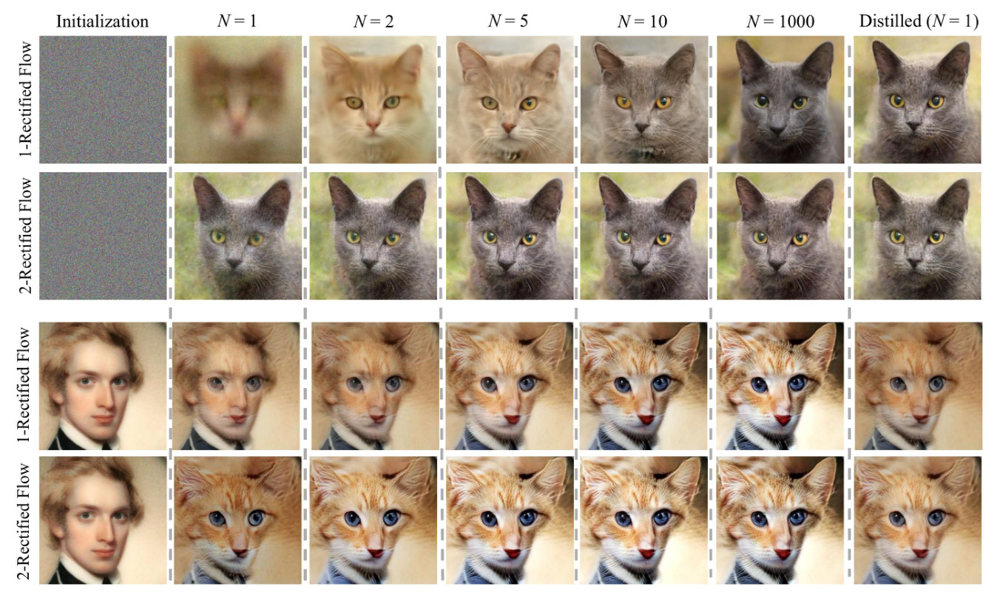<figcaption class="ltx_caption ltx_centering"><span class="ltx_tag ltx_tag_figure">Figure 1: </span>The trajectories of rectified flows for
image generation
(<math id="S1.F1.m8" class="ltx_Math" alttext="{\pi}_{0}" display="inline" intent=":literal"><semantics><msub><mi>π</mi><mn>0</mn></msub></semantics></math>: standard Gaussian noise, <math id="S1.F1.m9" class="ltx_Math" alttext="{\pi}_{1}" display="inline" intent=":literal"><semantics><msub><mi>π</mi><mn>1</mn></msub></semantics></math>: cat faces, top two rows),
and image transfer between human and cat faces (<math id="S1.F1.m10" class="ltx_Math" alttext="{\pi}_{0}" display="inline" intent=":literal"><semantics><msub><mi>π</mi><mn>0</mn></msub></semantics></math>: human faces, <math id="S1.F1.m11" class="ltx_Math" alttext="{\pi}_{1}" display="inline" intent=":literal"><semantics><msub><mi>π</mi><mn>1</mn></msub></semantics></math>: cat faces, bottom two rows),
when simulated using Euler method with step size <math id="S1.F1.m12" class="ltx_Math" alttext="1/N" display="inline" intent=":literal"><semantics><mrow><mn>1</mn><mo>/</mo><mi>N</mi></mrow></semantics></math> for <math id="S1.F1.m13" class="ltx_Math" alttext="N" display="inline" intent=":literal"><semantics><mi>N</mi></semantics></math> steps.
The first rectified flow induced from the training data (<em id="S1.F1.5" class="ltx_emph ltx_font_italic">1-rectified flow</em>) yields good results with a very small number (e.g., <math id="S1.F1.m14" class="ltx_Math" alttext="\geq 2" display="inline" intent=":literal"><semantics><mrow><mphantom></mphantom><mo>≥</mo><mn>2</mn></mrow></semantics></math>) of steps;
the straightened reflow induced from <em id="S1.F1.6" class="ltx_emph ltx_font_italic">1-rectified flow</em> (denoted as <em id="S1.F1.7" class="ltx_emph ltx_font_italic">2-rectified flow</em>)
has nearly straight line trajectories and yield good results even with one discretization step.
</figcaption><div class="fzh"><b>图 1：</b>Rectified Flow 用于图像生成（<math class="ltx_Math" alttext="{\pi}_{0}" display="inline" intent=":literal"><semantics><msub><mi>π</mi><mn>0</mn></msub></semantics></math>：标准高斯噪声，<math class="ltx_Math" alttext="{\pi}_{1}" display="inline" intent=":literal"><semantics><msub><mi>π</mi><mn>1</mn></msub></semantics></math>：猫脸，上两行）和人脸与猫脸之间的图像迁移（<math class="ltx_Math" alttext="{\pi}_{0}" display="inline" intent=":literal"><semantics><msub><mi>π</mi><mn>0</mn></msub></semantics></math>：人脸，<math class="ltx_Math" alttext="{\pi}_{1}" display="inline" intent=":literal"><semantics><msub><mi>π</mi><mn>1</mn></msub></semantics></math>：猫脸，下两行）时的轨迹，用步长 <math class="ltx_Math" alttext="1/N" display="inline" intent=":literal"><semantics><mrow><mn>1</mn><mo>/</mo><mi>N</mi></mrow></semantics></math> 的 Euler 法模拟 <math class="ltx_Math" alttext="N" display="inline" intent=":literal"><semantics><mi>N</mi></semantics></math> 步。由训练数据得到的第一个 Rectified Flow（<i>1-Rectified Flow</i>）在步数很少（例如 <math class="ltx_Math" alttext="\geq 2" display="inline" intent=":literal"><semantics><mrow><mphantom></mphantom><mo>≥</mo><mn>2</mn></mrow></semantics></math>）时就有好的结果；由 1-Rectified Flow 再做一次 reflow 得到的拉直后的流（记为 <i>2-Rectified Flow</i>）轨迹几乎是直线，即使只用一个离散化步也有好的结果。</div></figure></div>
<span class="lxa" id="S1.SSx1"></span><h3 class="ph" id="scontribution">Contribution<span class="hzh">贡献</span></h3>
<div class="blk">
    
    <p class="pp">We introduce
<em id="S1.SSx1.p1.1.1" class="ltx_emph ltx_font_italic">rectified flow</em>,
a surprisingly
simple approach
to the transport mapping problem,
which unifiedly solves both
generative modeling and domain transfer.
The rectified flow
is an ODE model
that transport
distribution <math id="S1.SSx1.p1.m1" class="ltx_Math" alttext="{\pi}_{0}" display="inline" intent=":literal"><semantics><msub><mi>π</mi><mn>0</mn></msub></semantics></math> to <math id="S1.SSx1.p1.m2" class="ltx_Math" alttext="{\pi}_{1}" display="inline" intent=":literal"><semantics><msub><mi>π</mi><mn>1</mn></msub></semantics></math>
by
<em id="S1.SSx1.p1.1.2" class="ltx_emph ltx_font_italic">following straight line paths as much as possible.</em>
The straight paths
are preferred both theoretically
because it is the shortest path
between two end points,
and computationally because it can be
exactly simulated without time discretization.
Hence,
flows with straight paths
bridge the gap between one-step and continuous-time models.</p>
    <p class="pp zh" lang="zh-Hans">我们提出 <i>Rectified Flow</i>，一种出人意料地简单的传输映射问题解法，它统一地解决生成建模和域迁移。Rectified Flow 是一个 ODE 模型，它尽可能沿着直线路径，把分布 <math class="ltx_Math" alttext="{\pi}_{0}" display="inline" intent=":literal"><semantics><msub><mi>π</mi><mn>0</mn></msub></semantics></math> 传输到 <math class="ltx_Math" alttext="{\pi}_{1}" display="inline" intent=":literal"><semantics><msub><mi>π</mi><mn>1</mn></msub></semantics></math>。直线路径在理论上更好，因为它是两个端点之间的最短路径；在计算上也更好，因为它不需要时间离散化就能被精确模拟。因此，路径为直线的流填补了一步模型和连续时间模型之间的差距。</p>
    
  </div>
<div class="blk">
    
    <p class="pp">Algorithmically, the rectified flow
is trained with
a simple and scalable unconstrained
least squares optimization procedure, which
avoids the instability issues of GANs,
the intractable likelihood of MLE methods, and the subtle hyper-parameter decisions of denoising diffusion models.
The procedure of obtaining the rectified flow from the training data has the attractive theoretical property of
1) yielding a coupling with
non-increasing transport cost jointly for all convex cost <math id="S1.SSx1.p2.m1" class="ltx_Math" alttext="c" display="inline" intent=":literal"><semantics><mi>c</mi></semantics></math>,
and 2) making the paths of flow increasingly straight and hence incurring lower error with numerical solvers.
Therefore,
with a <em id="S1.SSx1.p2.1.1" class="ltx_emph ltx_font_italic">reflow</em>
procedure that iteratively trains new
rectified flows
with the data simulated from the previously obtained rectified flow,
we obtain nearly straight flows
that yield good results even with
the coarsest time discretization, i.e.,
one Euler step.
Our method is purely ODE-based,
and is both conceptually simpler and practically faster in inference time than the SDE-based approaches of
<cite class="ltx_cite ltx_citemacro_cite">[<a href="#bib.bib23" title="" class="ltx_ref">23</a>, <a href="#bib.bib73" title="" class="ltx_ref">73</a>, <a href="#bib.bib70" title="" class="ltx_ref">70</a>]</cite>.</p>
    <p class="pp zh" lang="zh-Hans">在算法上，Rectified Flow 用一个简单、可扩展的无约束最小二乘优化过程训练，避开了 GAN 的不稳定问题、MLE 方法难以计算的似然，以及去噪扩散模型微妙的超参数决策。从训练数据得到 Rectified Flow 的过程有很好的理论性质：1) 得到的耦合对所有凸代价 <math class="ltx_Math" alttext="c" display="inline" intent=":literal"><semantics><mi>c</mi></semantics></math> 同时满足传输代价不增；2) 使流的路径越来越直，因而数值求解的误差更低。因此，借助 <i>reflow</i> 过程，即用前一个 Rectified Flow 模拟出的数据迭代地训练新的 Rectified Flow，我们得到几乎是直的流，即使用最粗的时间离散化（一个 Euler 步）也能给出好的结果。我们的方法完全基于 ODE，与 <cite class="ltx_cite ltx_citemacro_cite">[<a href="#bib.bib23" title="" class="ltx_ref">23</a>, <a href="#bib.bib73" title="" class="ltx_ref">73</a>, <a href="#bib.bib70" title="" class="ltx_ref">70</a>]</cite> 基于 SDE 的方法相比，概念上更简单，推理时实际上也更快。</p>
    
  </div>
<div class="blk">
    
    <p class="pp">Empirically,
rectified flow
can yield
high-quality results
for image generation when simulated with a very few number of Euler steps (see Figure <a href="#S1.F1" title="Figure 1 ‣ 1 Introduction ‣ Flow Straight and Fast: Learning to Generate and Transfer Data with Rectified Flow" class="ltx_ref"><span class="ltx_text ltx_ref_tag">1</span></a>, top row).
Moreover, with just one step of reflow,
the flow becomes nearly straight and hence yield good results with a single Euler discretization step (Figure <a href="#S1.F1" title="Figure 1 ‣ 1 Introduction ‣ Flow Straight and Fast: Learning to Generate and Transfer Data with Rectified Flow" class="ltx_ref"><span class="ltx_text ltx_ref_tag">1</span></a>, the second row).
This substantially improves
over the standard denoising diffusion methods. Quantitatively, we claim a state-of-the-art result of FID (4.85) and recall (0.51) on CIFAR10 for one-step fast diffusion/flow models <cite class="ltx_cite ltx_citemacro_citep">[<a href="#bib.bib5" title="" class="ltx_ref">5</a>, <a href="#bib.bib48" title="" class="ltx_ref">48</a>, <a href="#bib.bib91" title="" class="ltx_ref">91</a>, <a href="#bib.bib99" title="" class="ltx_ref">99</a>, <a href="#bib.bib47" title="" class="ltx_ref">47</a>]</cite>.
The same algorithm
also achieves superb result on domain transfer tasks such as image-to-image translation (see the bottom two rows of Figure <a href="#S1.F1" title="Figure 1 ‣ 1 Introduction ‣ Flow Straight and Fast: Learning to Generate and Transfer Data with Rectified Flow" class="ltx_ref"><span class="ltx_text ltx_ref_tag">1</span></a>) and
transfer learning.</p>
    <p class="pp zh" lang="zh-Hans">实验上，Rectified Flow 用很少的 Euler 步模拟时就能生成高质量的图像（见图 <a href="#S1.F1" title="Figure 1 ‣ 1 Introduction ‣ Flow Straight and Fast: Learning to Generate and Transfer Data with Rectified Flow" class="ltx_ref"><span class="ltx_text ltx_ref_tag">1</span></a> 第一行）。此外，只做一次 reflow，流就变得几乎是直的，因此用单个 Euler 离散化步也能得到好的结果（图 <a href="#S1.F1" title="Figure 1 ‣ 1 Introduction ‣ Flow Straight and Fast: Learning to Generate and Transfer Data with Rectified Flow" class="ltx_ref"><span class="ltx_text ltx_ref_tag">1</span></a> 第二行）。这比标准的去噪扩散方法有显著改进。在定量上，我们在 CIFAR10 上的一步快速扩散/流模型 <cite class="ltx_cite ltx_citemacro_citep">[<a href="#bib.bib5" title="" class="ltx_ref">5</a>, <a href="#bib.bib48" title="" class="ltx_ref">48</a>, <a href="#bib.bib91" title="" class="ltx_ref">91</a>, <a href="#bib.bib99" title="" class="ltx_ref">99</a>, <a href="#bib.bib47" title="" class="ltx_ref">47</a>]</cite> 中取得了当前最好的 FID (4.85) 和召回率 (0.51)。同样的算法在图像到图像翻译（见图 <a href="#S1.F1" title="Figure 1 ‣ 1 Introduction ‣ Flow Straight and Fast: Learning to Generate and Transfer Data with Rectified Flow" class="ltx_ref"><span class="ltx_text ltx_ref_tag">1</span></a> 下两行）和迁移学习等域迁移任务上也取得了出色的结果。</p>
    
  </div>
<span class="lxa" id="S2"></span><h2 class="ph" id="s2"><span class="hn">2</span>Method<span class="hzh">方法</span></h2>
<div class="blk">
    
    <p class="pp">We provide a quick overview of the method in Section <a href="#S2.SS1" title="2.1 Overview ‣ 2 Method ‣ Flow Straight and Fast: Learning to Generate and Transfer Data with Rectified Flow" class="ltx_ref"><span class="ltx_text ltx_ref_tag">2.1</span></a>,
followed with some discussion and remarks in Section <a href="#S2.SS2" title="2.2 Main Results and Properties ‣ 2 Method ‣ Flow Straight and Fast: Learning to Generate and Transfer Data with Rectified Flow" class="ltx_ref"><span class="ltx_text ltx_ref_tag">2.2</span></a>.
We introduce a nonlinear extension of our method in Section <a href="#S2.SS3" title="2.3 A Nonlinear Extension ‣ 2 Method ‣ Flow Straight and Fast: Learning to Generate and Transfer Data with Rectified Flow" class="ltx_ref"><span class="ltx_text ltx_ref_tag">2.3</span></a>,
with which we clarify the connection and advantages of our method with the method of probability flow ODEs <cite class="ltx_cite ltx_citemacro_citep">[<a href="#bib.bib73" title="" class="ltx_ref">73</a>]</cite> and DDIM <cite class="ltx_cite ltx_citemacro_citep">[<a href="#bib.bib70" title="" class="ltx_ref">70</a>]</cite>.</p>
    <p class="pp zh" lang="zh-Hans">第 <a href="#S2.SS1" title="2.1 Overview ‣ 2 Method ‣ Flow Straight and Fast: Learning to Generate and Transfer Data with Rectified Flow" class="ltx_ref"><span class="ltx_text ltx_ref_tag">2.1</span></a> 节简要概述方法，第 <a href="#S2.SS2" title="2.2 Main Results and Properties ‣ 2 Method ‣ Flow Straight and Fast: Learning to Generate and Transfer Data with Rectified Flow" class="ltx_ref"><span class="ltx_text ltx_ref_tag">2.2</span></a> 节给出一些讨论和说明。第 <a href="#S2.SS3" title="2.3 A Nonlinear Extension ‣ 2 Method ‣ Flow Straight and Fast: Learning to Generate and Transfer Data with Rectified Flow" class="ltx_ref"><span class="ltx_text ltx_ref_tag">2.3</span></a> 节介绍方法的一个非线性扩展，借此说明我们的方法与概率流 ODE <cite class="ltx_cite ltx_citemacro_citep">[<a href="#bib.bib73" title="" class="ltx_ref">73</a>]</cite> 和 DDIM <cite class="ltx_cite ltx_citemacro_citep">[<a href="#bib.bib70" title="" class="ltx_ref">70</a>]</cite> 的联系，以及相对它们的优势。</p>
    
  </div>
<div class="floatbox"><figure id="S2.F2" class="ltx_figure">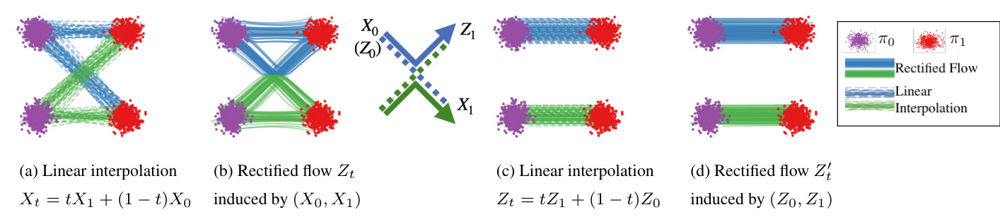<figcaption class="ltx_caption"><span class="ltx_tag ltx_tag_figure">Figure 2: </span>(a) Linear interpolation of data input <math id="S2.F2.m13" class="ltx_Math" alttext="(X_{0},X_{1})\sim{\pi}_{0}\times{\pi}_{1}" display="inline" intent=":literal"><semantics><mrow><mrow><mo stretchy="false">(</mo><msub><mi>X</mi><mn>0</mn></msub><mo>,</mo><msub><mi>X</mi><mn>1</mn></msub><mo stretchy="false">)</mo></mrow><mo>∼</mo><mrow><msub><mi>π</mi><mn>0</mn></msub><mo lspace="0.222em" rspace="0.222em">×</mo><msub><mi>π</mi><mn>1</mn></msub></mrow></mrow></semantics></math>.
(b) The rectified flow <math id="S2.F2.m14" class="ltx_Math" alttext="Z_{t}" display="inline" intent=":literal"><semantics><msub><mi>Z</mi><mi>t</mi></msub></semantics></math> induced by <math id="S2.F2.m15" class="ltx_Math" alttext="(X_{0},X_{1})" display="inline" intent=":literal"><semantics><mrow><mo stretchy="false">(</mo><msub><mi>X</mi><mn>0</mn></msub><mo>,</mo><msub><mi>X</mi><mn>1</mn></msub><mo stretchy="false">)</mo></mrow></semantics></math>;
the trajectories are “rewired” at the intersection points
to avoid the crossing.
(c) The linear interpolation of the end points <math id="S2.F2.m16" class="ltx_Math" alttext="(Z_{0},Z_{1})" display="inline" intent=":literal"><semantics><mrow><mo stretchy="false">(</mo><msub><mi>Z</mi><mn>0</mn></msub><mo>,</mo><msub><mi>Z</mi><mn>1</mn></msub><mo stretchy="false">)</mo></mrow></semantics></math> of flow <math id="S2.F2.m17" class="ltx_Math" alttext="Z_{t}" display="inline" intent=":literal"><semantics><msub><mi>Z</mi><mi>t</mi></msub></semantics></math>.
(d) The rectified flow induced from <math id="S2.F2.m18" class="ltx_Math" alttext="(Z_{0},Z_{1})" display="inline" intent=":literal"><semantics><mrow><mo stretchy="false">(</mo><msub><mi>Z</mi><mn>0</mn></msub><mo>,</mo><msub><mi>Z</mi><mn>1</mn></msub><mo stretchy="false">)</mo></mrow></semantics></math>, which follows straight paths.
</figcaption><div class="fzh"><b>图 2：</b>(a) 输入数据 <math class="ltx_Math" alttext="(X_{0},X_{1})\sim{\pi}_{0}\times{\pi}_{1}" display="inline" intent=":literal"><semantics><mrow><mrow><mo stretchy="false">(</mo><msub><mi>X</mi><mn>0</mn></msub><mo>,</mo><msub><mi>X</mi><mn>1</mn></msub><mo stretchy="false">)</mo></mrow><mo>∼</mo><mrow><msub><mi>π</mi><mn>0</mn></msub><mo lspace="0.222em" rspace="0.222em">×</mo><msub><mi>π</mi><mn>1</mn></msub></mrow></mrow></semantics></math> 的线性插值。(b) 由 <math class="ltx_Math" alttext="(X_{0},X_{1})" display="inline" intent=":literal"><semantics><mrow><mo stretchy="false">(</mo><msub><mi>X</mi><mn>0</mn></msub><mo>,</mo><msub><mi>X</mi><mn>1</mn></msub><mo stretchy="false">)</mo></mrow></semantics></math> 诱导的 Rectified Flow <math class="ltx_Math" alttext="Z_{t}" display="inline" intent=":literal"><semantics><msub><mi>Z</mi><mi>t</mi></msub></semantics></math>；轨迹在交叉点处被「重新接线」，以避免交叉。(c) 流 <math class="ltx_Math" alttext="Z_{t}" display="inline" intent=":literal"><semantics><msub><mi>Z</mi><mi>t</mi></msub></semantics></math> 的端点 <math class="ltx_Math" alttext="(Z_{0},Z_{1})" display="inline" intent=":literal"><semantics><mrow><mo stretchy="false">(</mo><msub><mi>Z</mi><mn>0</mn></msub><mo>,</mo><msub><mi>Z</mi><mn>1</mn></msub><mo stretchy="false">)</mo></mrow></semantics></math> 的线性插值。(d) 由 <math class="ltx_Math" alttext="(Z_{0},Z_{1})" display="inline" intent=":literal"><semantics><mrow><mo stretchy="false">(</mo><msub><mi>Z</mi><mn>0</mn></msub><mo>,</mo><msub><mi>Z</mi><mn>1</mn></msub><mo stretchy="false">)</mo></mrow></semantics></math> 诱导的 Rectified Flow，它沿直线路径走。</div></figure></div>
<span class="lxa" id="S2.SS1"></span><h3 class="ph" id="s2-1"><span class="hn">2.1</span>Overview<span class="hzh">概述</span></h3>
<span class="lxa" id="S2.SS1.SSS0.Px1"></span><h4 class="ph" id="srectified-flow">Rectified flow<span class="hzh">Rectified Flow</span></h4>
<div class="blk">
    
    <p class="pp">Given empirical observations of <math id="S2.SS1.SSS0.Px1.p1.m1" class="ltx_Math" alttext="X_{0}\sim{\pi}_{0},X_{1}\sim{\pi}_{1}" display="inline" intent=":literal"><semantics><mrow><mrow><msub><mi>X</mi><mn>0</mn></msub><mo>∼</mo><msub><mi>π</mi><mn>0</mn></msub></mrow><mo>,</mo><mrow><msub><mi>X</mi><mn>1</mn></msub><mo>∼</mo><msub><mi>π</mi><mn>1</mn></msub></mrow></mrow></semantics></math>,
the rectified flow induced from <math id="S2.SS1.SSS0.Px1.p1.m2" class="ltx_Math" alttext="(X_{0},X_{1})" display="inline" intent=":literal"><semantics><mrow><mo stretchy="false">(</mo><msub><mi>X</mi><mn>0</mn></msub><mo>,</mo><msub><mi>X</mi><mn>1</mn></msub><mo stretchy="false">)</mo></mrow></semantics></math>
is an ordinary differentiable model (ODE)
on time <math id="S2.SS1.SSS0.Px1.p1.m3" class="ltx_Math" alttext="t\in[0,1]" display="inline" intent=":literal"><semantics><mrow><mi>t</mi><mo>∈</mo><mrow><mo stretchy="false">[</mo><mrow><mn>0</mn><mo>,</mo><mn>1</mn></mrow><mo stretchy="false">]</mo></mrow></mrow></semantics></math>,</p>
    <p class="pp zh" lang="zh-Hans">给定观测样本 <math class="ltx_Math" alttext="X_{0}\sim{\pi}_{0},X_{1}\sim{\pi}_{1}" display="inline" intent=":literal"><semantics><mrow><mrow><msub><mi>X</mi><mn>0</mn></msub><mo>∼</mo><msub><mi>π</mi><mn>0</mn></msub></mrow><mo>,</mo><mrow><msub><mi>X</mi><mn>1</mn></msub><mo>∼</mo><msub><mi>π</mi><mn>1</mn></msub></mrow></mrow></semantics></math>，由 <math class="ltx_Math" alttext="(X_{0},X_{1})" display="inline" intent=":literal"><semantics><mrow><mo stretchy="false">(</mo><msub><mi>X</mi><mn>0</mn></msub><mo>,</mo><msub><mi>X</mi><mn>1</mn></msub><mo stretchy="false">)</mo></mrow></semantics></math> 诱导的 Rectified Flow 是时间 <math class="ltx_Math" alttext="t\in[0,1]" display="inline" intent=":literal"><semantics><mrow><mi>t</mi><mo>∈</mo><mrow><mo stretchy="false">[</mo><mrow><mn>0</mn><mo>,</mo><mn>1</mn></mrow><mo stretchy="false">]</mo></mrow></mrow></semantics></math> 上的一个常微分模型 (ODE)，</p>
    
  </div>
<div class="eqbox"><table id="S2.Ex1" class="ltx_equation ltx_eqn_table">

<tbody><tr class="ltx_equation ltx_eqn_row ltx_align_baseline">
<td class="ltx_eqn_cell ltx_eqn_center_padleft"></td>
<td class="ltx_eqn_cell ltx_align_center"><math id="S2.Ex1.m1" class="ltx_Math" alttext="\mathrm{d}Z_{t}=v(Z_{t},t)\mathrm{d}t," display="block" intent=":literal"><semantics><mrow><mrow><mrow><mi>d</mi><mo lspace="0em" rspace="0em">​</mo><msub><mi>Z</mi><mi>t</mi></msub></mrow><mo>=</mo><mrow><mrow><mi>v</mi><mo>⁡</mo><mrow><mo stretchy="false">(</mo><msub><mi>Z</mi><mi>t</mi></msub><mo>,</mo><mi>t</mi><mo stretchy="false">)</mo></mrow></mrow><mo lspace="0em" rspace="0em">​</mo><mi>d</mi><mo lspace="0em" rspace="0em">​</mo><mi>t</mi></mrow></mrow><mo>,</mo></mrow></semantics></math></td>
<td class="ltx_eqn_cell ltx_eqn_center_padright"></td></tr></tbody>
</table></div>
<div class="blk">
    
    <p class="pp">which converts <math id="S2.SS1.SSS0.Px1.p1.m4" class="ltx_Math" alttext="Z_{0}" display="inline" intent=":literal"><semantics><msub><mi>Z</mi><mn>0</mn></msub></semantics></math> from <math id="S2.SS1.SSS0.Px1.p1.m5" class="ltx_Math" alttext="{\pi}_{0}" display="inline" intent=":literal"><semantics><msub><mi>π</mi><mn>0</mn></msub></semantics></math> to a <math id="S2.SS1.SSS0.Px1.p1.m6" class="ltx_Math" alttext="Z_{1}" display="inline" intent=":literal"><semantics><msub><mi>Z</mi><mn>1</mn></msub></semantics></math> following <math id="S2.SS1.SSS0.Px1.p1.m7" class="ltx_Math" alttext="{\pi}_{1}" display="inline" intent=":literal"><semantics><msub><mi>π</mi><mn>1</mn></msub></semantics></math>.
The drift force
<math id="S2.SS1.SSS0.Px1.p1.m8" class="ltx_Math" alttext="v\colon\mathbb{R}^{d}\to\mathbb{R}^{d}" display="inline" intent=":literal"><semantics><mrow><mi>v</mi><mo lspace="0.278em" rspace="0.278em">:</mo><mrow><msup><mi>ℝ</mi><mi>d</mi></msup><mo stretchy="false">→</mo><msup><mi>ℝ</mi><mi>d</mi></msup></mrow></mrow></semantics></math> is set to drive the flow to
follow the direction <math id="S2.SS1.SSS0.Px1.p1.m9" class="ltx_Math" alttext="(X_{1}-X_{0})" display="inline" intent=":literal"><semantics><mrow><mo stretchy="false">(</mo><mrow><msub><mi>X</mi><mn>1</mn></msub><mo>−</mo><msub><mi>X</mi><mn>0</mn></msub></mrow><mo stretchy="false">)</mo></mrow></semantics></math>
of the linear path pointing from <math id="S2.SS1.SSS0.Px1.p1.m10" class="ltx_Math" alttext="X_{0}" display="inline" intent=":literal"><semantics><msub><mi>X</mi><mn>0</mn></msub></semantics></math> to <math id="S2.SS1.SSS0.Px1.p1.m11" class="ltx_Math" alttext="X_{1}" display="inline" intent=":literal"><semantics><msub><mi>X</mi><mn>1</mn></msub></semantics></math>
as much as possible, by solving a simple
least squares regression problem:</p>
    <p class="pp zh" lang="zh-Hans">它把服从 <math class="ltx_Math" alttext="{\pi}_{0}" display="inline" intent=":literal"><semantics><msub><mi>π</mi><mn>0</mn></msub></semantics></math> 的 <math class="ltx_Math" alttext="Z_{0}" display="inline" intent=":literal"><semantics><msub><mi>Z</mi><mn>0</mn></msub></semantics></math> 变换为服从 <math class="ltx_Math" alttext="{\pi}_{1}" display="inline" intent=":literal"><semantics><msub><mi>π</mi><mn>1</mn></msub></semantics></math> 的 <math class="ltx_Math" alttext="Z_{1}" display="inline" intent=":literal"><semantics><msub><mi>Z</mi><mn>1</mn></msub></semantics></math>。漂移力 <math class="ltx_Math" alttext="v\colon\mathbb{R}^{d}\to\mathbb{R}^{d}" display="inline" intent=":literal"><semantics><mrow><mi>v</mi><mo lspace="0.278em" rspace="0.278em">:</mo><mrow><msup><mi>ℝ</mi><mi>d</mi></msup><mo stretchy="false">→</mo><msup><mi>ℝ</mi><mi>d</mi></msup></mrow></mrow></semantics></math> 的设定是让流尽可能沿着从 <math class="ltx_Math" alttext="X_{0}" display="inline" intent=":literal"><semantics><msub><mi>X</mi><mn>0</mn></msub></semantics></math> 指向 <math class="ltx_Math" alttext="X_{1}" display="inline" intent=":literal"><semantics><msub><mi>X</mi><mn>1</mn></msub></semantics></math> 的线性路径方向 <math class="ltx_Math" alttext="(X_{1}-X_{0})" display="inline" intent=":literal"><semantics><mrow><mo stretchy="false">(</mo><mrow><msub><mi>X</mi><mn>1</mn></msub><mo>−</mo><msub><mi>X</mi><mn>0</mn></msub></mrow><mo stretchy="false">)</mo></mrow></semantics></math> 走，通过求解一个简单的最小二乘回归问题实现：</p>
    
  </div>
<div class="eqbox"><table id="S2.EGx1" class="ltx_equationgroup ltx_eqn_align ltx_eqn_table">

<tbody id="S2.E1"><tr class="ltx_equation ltx_eqn_row ltx_align_baseline">
<td class="ltx_eqn_cell ltx_eqn_center_padleft"></td>
<td class="ltx_td ltx_align_right ltx_eqn_cell"><math id="S2.E1.m1" class="ltx_Math" alttext="\displaystyle\min_{v}\int_{0}^{1}\mathbb{E}\left[\left\lVert(X_{1}-X_{0})-v\big(X_{t},\penalty\ t\big)\right\rVert^{2}\right]\mathrm{d}t,\penalty\ \penalty\ \penalty\ \penalty\ \penalty\ \text{with}\penalty\ \penalty\ \penalty\ \penalty\ X_{t}=tX_{1}+(1-t)X_{0}," display="inline" intent=":literal"><semantics><mrow><mrow><mrow><mi>min</mi><mo lspace="0.167em">⁡</mo><mrow><mstyle displaystyle="true"><mmultiscripts><mo>∫</mo><mn>0</mn><mn>1</mn><mprescripts></mprescripts><mi>v</mi><mrow></mrow></mmultiscripts></mstyle><mo>⁡</mo><mrow><mrow><mi>𝔼</mi><mo>⁡</mo><mrow><mo>[</mo><msup><mrow><mo>‖</mo><mrow><mrow><mo stretchy="false">(</mo><mrow><msub><mi>X</mi><mn>1</mn></msub><mo>−</mo><msub><mi>X</mi><mn>0</mn></msub></mrow><mo stretchy="false">)</mo></mrow><mo>−</mo><mrow><mi>v</mi><mo>⁡</mo><mrow><mo maxsize="1.200em" minsize="1.200em">(</mo><msub><mi>X</mi><mi>t</mi></msub><mo>,</mo><mi>t</mi><mo maxsize="1.200em" minsize="1.200em">)</mo></mrow></mrow></mrow><mo>‖</mo></mrow><mn>2</mn></msup><mo>]</mo></mrow></mrow><mo lspace="0em" rspace="0em">​</mo><mrow><mo rspace="0em">𝑑</mo><mi>t</mi></mrow></mrow></mrow></mrow><mo rspace="2.667em">,</mo><mtext>with</mtext><mspace style="width:2em;" width="2em"></mspace><mrow><msub><mi>X</mi><mi>t</mi></msub><mo>=</mo><mrow><mrow><mi>t</mi><mo lspace="0em" rspace="0em">​</mo><msub><mi>X</mi><mn>1</mn></msub></mrow><mo>+</mo><mrow><mrow><mo stretchy="false">(</mo><mrow><mn>1</mn><mo>−</mo><mi>t</mi></mrow><mo stretchy="false">)</mo></mrow><mo lspace="0em" rspace="0em">​</mo><msub><mi>X</mi><mn>0</mn></msub></mrow></mrow></mrow></mrow><mo>,</mo></mrow></semantics></math></td>
<td class="ltx_eqn_cell ltx_eqn_center_padright"></td>
<td rowspan="1" class="ltx_eqn_cell ltx_eqn_eqno ltx_align_middle ltx_align_right"><span class="ltx_tag ltx_tag_equation ltx_align_right">(1)</span></td></tr></tbody>
</table></div>
<div class="blk">
    
    <p class="pp">where <math id="S2.SS1.SSS0.Px1.p1.m12" class="ltx_Math" alttext="X_{t}" display="inline" intent=":literal"><semantics><msub><mi>X</mi><mi>t</mi></msub></semantics></math> is
the linear interpolation of <math id="S2.SS1.SSS0.Px1.p1.m13" class="ltx_Math" alttext="X_{0}" display="inline" intent=":literal"><semantics><msub><mi>X</mi><mn>0</mn></msub></semantics></math> and <math id="S2.SS1.SSS0.Px1.p1.m14" class="ltx_Math" alttext="X_{1}" display="inline" intent=":literal"><semantics><msub><mi>X</mi><mn>1</mn></msub></semantics></math>.
Naviely, <math id="S2.SS1.SSS0.Px1.p1.m15" class="ltx_Math" alttext="X_{t}" display="inline" intent=":literal"><semantics><msub><mi>X</mi><mi>t</mi></msub></semantics></math> follows the ODE of <math id="S2.SS1.SSS0.Px1.p1.m16" class="ltx_Math" alttext="\mathrm{d}X_{t}=(X_{1}-X_{0})\mathrm{d}t," display="inline" intent=":literal"><semantics><mrow><mrow><mrow><mi>d</mi><mo lspace="0em" rspace="0em">​</mo><msub><mi>X</mi><mi>t</mi></msub></mrow><mo>=</mo><mrow><mrow><mo stretchy="false">(</mo><mrow><msub><mi>X</mi><mn>1</mn></msub><mo>−</mo><msub><mi>X</mi><mn>0</mn></msub></mrow><mo stretchy="false">)</mo></mrow><mo lspace="0em" rspace="0em">​</mo><mi>d</mi><mo lspace="0em" rspace="0em">​</mo><mi>t</mi></mrow></mrow><mo>,</mo></mrow></semantics></math> which is non-causal (or anticipating) as the update of <math id="S2.SS1.SSS0.Px1.p1.m17" class="ltx_Math" alttext="X_{t}" display="inline" intent=":literal"><semantics><msub><mi>X</mi><mi>t</mi></msub></semantics></math> requires the information of the final point <math id="S2.SS1.SSS0.Px1.p1.m18" class="ltx_Math" alttext="X_{1}" display="inline" intent=":literal"><semantics><msub><mi>X</mi><mn>1</mn></msub></semantics></math>.
By fitting the drift <math id="S2.SS1.SSS0.Px1.p1.m19" class="ltx_Math" alttext="v" display="inline" intent=":literal"><semantics><mi>v</mi></semantics></math> with <math id="S2.SS1.SSS0.Px1.p1.m20" class="ltx_Math" alttext="X_{1}-X_{0}" display="inline" intent=":literal"><semantics><mrow><msub><mi>X</mi><mn>1</mn></msub><mo>−</mo><msub><mi>X</mi><mn>0</mn></msub></mrow></semantics></math>,
the rectified flow <em id="S2.SS1.SSS0.Px1.p1.3.1" class="ltx_emph ltx_font_italic">causalizes</em>
the paths of linear interpolation <math id="S2.SS1.SSS0.Px1.p1.m21" class="ltx_Math" alttext="X_{t}" display="inline" intent=":literal"><semantics><msub><mi>X</mi><mi>t</mi></msub></semantics></math>,
yielding an ODE flow that can be simulated without seeing the future.</p>
    <p class="pp zh" lang="zh-Hans">其中 <math class="ltx_Math" alttext="X_{t}" display="inline" intent=":literal"><semantics><msub><mi>X</mi><mi>t</mi></msub></semantics></math> 是 <math class="ltx_Math" alttext="X_{0}" display="inline" intent=":literal"><semantics><msub><mi>X</mi><mn>0</mn></msub></semantics></math> 与 <math class="ltx_Math" alttext="X_{1}" display="inline" intent=":literal"><semantics><msub><mi>X</mi><mn>1</mn></msub></semantics></math> 的线性插值。直接看，<math class="ltx_Math" alttext="X_{t}" display="inline" intent=":literal"><semantics><msub><mi>X</mi><mi>t</mi></msub></semantics></math> 服从 ODE <math class="ltx_Math" alttext="\mathrm{d}X_{t}=(X_{1}-X_{0})\mathrm{d}t," display="inline" intent=":literal"><semantics><mrow><mrow><mrow><mi>d</mi><mo lspace="0em" rspace="0em">​</mo><msub><mi>X</mi><mi>t</mi></msub></mrow><mo>=</mo><mrow><mrow><mo stretchy="false">(</mo><mrow><msub><mi>X</mi><mn>1</mn></msub><mo>−</mo><msub><mi>X</mi><mn>0</mn></msub></mrow><mo stretchy="false">)</mo></mrow><mo lspace="0em" rspace="0em">​</mo><mi>d</mi><mo lspace="0em" rspace="0em">​</mo><mi>t</mi></mrow></mrow><mo>,</mo></mrow></semantics></math>，它是非因果的（或者说是预知未来的），因为 <math class="ltx_Math" alttext="X_{t}" display="inline" intent=":literal"><semantics><msub><mi>X</mi><mi>t</mi></msub></semantics></math> 的更新需要终点 <math class="ltx_Math" alttext="X_{1}" display="inline" intent=":literal"><semantics><msub><mi>X</mi><mn>1</mn></msub></semantics></math> 的信息。通过用 <math class="ltx_Math" alttext="X_{1}-X_{0}" display="inline" intent=":literal"><semantics><mrow><msub><mi>X</mi><mn>1</mn></msub><mo>−</mo><msub><mi>X</mi><mn>0</mn></msub></mrow></semantics></math> 拟合漂移 <math class="ltx_Math" alttext="v" display="inline" intent=":literal"><semantics><mi>v</mi></semantics></math>，Rectified Flow 把线性插值 <math class="ltx_Math" alttext="X_{t}" display="inline" intent=":literal"><semantics><msub><mi>X</mi><mi>t</mi></msub></semantics></math> 的路径<i>因果化</i>，得到一个不需要看到未来就能模拟的 ODE 流。</p>
    
  </div>
<div class="blk">
    
    <p class="pp">In practice, we parameterize <math id="S2.SS1.SSS0.Px1.p2.m1" class="ltx_Math" alttext="v" display="inline" intent=":literal"><semantics><mi>v</mi></semantics></math> with a neural network or other nonlinear models
and solve
(<a href="#S2.E1" title="In Rectified flow ‣ 2.1 Overview ‣ 2 Method ‣ Flow Straight and Fast: Learning to Generate and Transfer Data with Rectified Flow" class="ltx_ref"><span class="ltx_text ltx_ref_tag">1</span></a>) with any off-the-shelf stochastic optimizer, such as stochastic gradient descent,
with empirical draws of <math id="S2.SS1.SSS0.Px1.p2.m2" class="ltx_Math" alttext="(X_{0},X_{1})" display="inline" intent=":literal"><semantics><mrow><mo stretchy="false">(</mo><msub><mi>X</mi><mn>0</mn></msub><mo>,</mo><msub><mi>X</mi><mn>1</mn></msub><mo stretchy="false">)</mo></mrow></semantics></math>. See
Algorithm <a href="#alg1" title="Algorithm 1 ‣ Straight line flows yield fast simulation ‣ 2.1 Overview ‣ 2 Method ‣ Flow Straight and Fast: Learning to Generate and Transfer Data with Rectified Flow" class="ltx_ref"><span class="ltx_text ltx_ref_tag">1</span></a>.
After we get <math id="S2.SS1.SSS0.Px1.p2.m3" class="ltx_Math" alttext="v" display="inline" intent=":literal"><semantics><mi>v</mi></semantics></math>, we solve the ODE starting from <math id="S2.SS1.SSS0.Px1.p2.m4" class="ltx_Math" alttext="Z_{0}\sim{\pi}_{0}" display="inline" intent=":literal"><semantics><mrow><msub><mi>Z</mi><mn>0</mn></msub><mo>∼</mo><msub><mi>π</mi><mn>0</mn></msub></mrow></semantics></math> to transfer <math id="S2.SS1.SSS0.Px1.p2.m5" class="ltx_Math" alttext="{\pi}_{0}" display="inline" intent=":literal"><semantics><msub><mi>π</mi><mn>0</mn></msub></semantics></math> to <math id="S2.SS1.SSS0.Px1.p2.m6" class="ltx_Math" alttext="{\pi}_{1}" display="inline" intent=":literal"><semantics><msub><mi>π</mi><mn>1</mn></msub></semantics></math>,
backwardly starting from <math id="S2.SS1.SSS0.Px1.p2.m7" class="ltx_Math" alttext="Z_{1}\sim{\pi}_{1}" display="inline" intent=":literal"><semantics><mrow><msub><mi>Z</mi><mn>1</mn></msub><mo>∼</mo><msub><mi>π</mi><mn>1</mn></msub></mrow></semantics></math> to transfer <math id="S2.SS1.SSS0.Px1.p2.m8" class="ltx_Math" alttext="{\pi}_{1}" display="inline" intent=":literal"><semantics><msub><mi>π</mi><mn>1</mn></msub></semantics></math> to <math id="S2.SS1.SSS0.Px1.p2.m9" class="ltx_Math" alttext="{\pi}_{0}" display="inline" intent=":literal"><semantics><msub><mi>π</mi><mn>0</mn></msub></semantics></math>. Specifically,
for backward sampling,
we simply
solve <math id="S2.SS1.SSS0.Px1.p2.m10" class="ltx_Math" alttext="\mathrm{d}\tilde{X}_{t}=-v(\tilde{X}_{t},t)\mathrm{d}t" display="inline" intent=":literal"><semantics><mrow><mrow><mi>d</mi><mo lspace="0em" rspace="0em">​</mo><msub><mover accent="true"><mi>X</mi><mo>~</mo></mover><mi>t</mi></msub></mrow><mo>=</mo><mrow><mo>−</mo><mrow><mrow><mi>v</mi><mo>⁡</mo><mrow><mo stretchy="false">(</mo><msub><mover accent="true"><mi>X</mi><mo>~</mo></mover><mi>t</mi></msub><mo>,</mo><mi>t</mi><mo stretchy="false">)</mo></mrow></mrow><mo lspace="0em" rspace="0em">​</mo><mi>d</mi><mo lspace="0em" rspace="0em">​</mo><mi>t</mi></mrow></mrow></mrow></semantics></math> initialized from <math id="S2.SS1.SSS0.Px1.p2.m11" class="ltx_Math" alttext="\tilde{X}_{0}\sim{\pi}_{1}" display="inline" intent=":literal"><semantics><mrow><msub><mover accent="true"><mi>X</mi><mo>~</mo></mover><mn>0</mn></msub><mo>∼</mo><msub><mi>π</mi><mn>1</mn></msub></mrow></semantics></math> and set
<math id="S2.SS1.SSS0.Px1.p2.m12" class="ltx_Math" alttext="X_{t}=\tilde{X}_{1-t}" display="inline" intent=":literal"><semantics><mrow><msub><mi>X</mi><mi>t</mi></msub><mo>=</mo><msub><mover accent="true"><mi>X</mi><mo>~</mo></mover><mrow><mn>1</mn><mo>−</mo><mi>t</mi></mrow></msub></mrow></semantics></math>.
The forward and backward sampling
are equally favored by the training algorithm, because the objective in (<a href="#S2.E1" title="In Rectified flow ‣ 2.1 Overview ‣ 2 Method ‣ Flow Straight and Fast: Learning to Generate and Transfer Data with Rectified Flow" class="ltx_ref"><span class="ltx_text ltx_ref_tag">1</span></a>) is
<em id="S2.SS1.SSS0.Px1.p2.1.1" class="ltx_emph ltx_font_italic">time-symmetric</em>
in that it yields the equivalent problem if we exchange <math id="S2.SS1.SSS0.Px1.p2.m13" class="ltx_Math" alttext="X_{0}" display="inline" intent=":literal"><semantics><msub><mi>X</mi><mn>0</mn></msub></semantics></math> and <math id="S2.SS1.SSS0.Px1.p2.m14" class="ltx_Math" alttext="X_{1}" display="inline" intent=":literal"><semantics><msub><mi>X</mi><mn>1</mn></msub></semantics></math> and flip the sign of <math id="S2.SS1.SSS0.Px1.p2.m15" class="ltx_Math" alttext="v" display="inline" intent=":literal"><semantics><mi>v</mi></semantics></math>.</p>
    <p class="pp zh" lang="zh-Hans">实践中，我们用神经网络或其他非线性模型参数化 <math class="ltx_Math" alttext="v" display="inline" intent=":literal"><semantics><mi>v</mi></semantics></math>，用 <math class="ltx_Math" alttext="(X_{0},X_{1})" display="inline" intent=":literal"><semantics><mrow><mo stretchy="false">(</mo><msub><mi>X</mi><mn>0</mn></msub><mo>,</mo><msub><mi>X</mi><mn>1</mn></msub><mo stretchy="false">)</mo></mrow></semantics></math> 的经验样本，以任意现成的随机优化器（例如随机梯度下降）求解 (<a href="#S2.E1" title="In Rectified flow ‣ 2.1 Overview ‣ 2 Method ‣ Flow Straight and Fast: Learning to Generate and Transfer Data with Rectified Flow" class="ltx_ref"><span class="ltx_text ltx_ref_tag">1</span></a>)。见算法 <a href="#alg1" title="Algorithm 1 ‣ Straight line flows yield fast simulation ‣ 2.1 Overview ‣ 2 Method ‣ Flow Straight and Fast: Learning to Generate and Transfer Data with Rectified Flow" class="ltx_ref"><span class="ltx_text ltx_ref_tag">1</span></a>。得到 <math class="ltx_Math" alttext="v" display="inline" intent=":literal"><semantics><mi>v</mi></semantics></math> 之后，从 <math class="ltx_Math" alttext="Z_{0}\sim{\pi}_{0}" display="inline" intent=":literal"><semantics><mrow><msub><mi>Z</mi><mn>0</mn></msub><mo>∼</mo><msub><mi>π</mi><mn>0</mn></msub></mrow></semantics></math> 出发求解 ODE，就把 <math class="ltx_Math" alttext="{\pi}_{0}" display="inline" intent=":literal"><semantics><msub><mi>π</mi><mn>0</mn></msub></semantics></math> 传输到 <math class="ltx_Math" alttext="{\pi}_{1}" display="inline" intent=":literal"><semantics><msub><mi>π</mi><mn>1</mn></msub></semantics></math>；从 <math class="ltx_Math" alttext="Z_{1}\sim{\pi}_{1}" display="inline" intent=":literal"><semantics><mrow><msub><mi>Z</mi><mn>1</mn></msub><mo>∼</mo><msub><mi>π</mi><mn>1</mn></msub></mrow></semantics></math> 出发反向求解，就把 <math class="ltx_Math" alttext="{\pi}_{1}" display="inline" intent=":literal"><semantics><msub><mi>π</mi><mn>1</mn></msub></semantics></math> 传输到 <math class="ltx_Math" alttext="{\pi}_{0}" display="inline" intent=":literal"><semantics><msub><mi>π</mi><mn>0</mn></msub></semantics></math>。具体来说，反向采样只需从 <math class="ltx_Math" alttext="\tilde{X}_{0}\sim{\pi}_{1}" display="inline" intent=":literal"><semantics><mrow><msub><mover accent="true"><mi>X</mi><mo>~</mo></mover><mn>0</mn></msub><mo>∼</mo><msub><mi>π</mi><mn>1</mn></msub></mrow></semantics></math> 出发求解 <math class="ltx_Math" alttext="\mathrm{d}\tilde{X}_{t}=-v(\tilde{X}_{t},t)\mathrm{d}t" display="inline" intent=":literal"><semantics><mrow><mrow><mi>d</mi><mo lspace="0em" rspace="0em">​</mo><msub><mover accent="true"><mi>X</mi><mo>~</mo></mover><mi>t</mi></msub></mrow><mo>=</mo><mrow><mo>−</mo><mrow><mrow><mi>v</mi><mo>⁡</mo><mrow><mo stretchy="false">(</mo><msub><mover accent="true"><mi>X</mi><mo>~</mo></mover><mi>t</mi></msub><mo>,</mo><mi>t</mi><mo stretchy="false">)</mo></mrow></mrow><mo lspace="0em" rspace="0em">​</mo><mi>d</mi><mo lspace="0em" rspace="0em">​</mo><mi>t</mi></mrow></mrow></mrow></semantics></math>，再令 <math class="ltx_Math" alttext="X_{t}=\tilde{X}_{1-t}" display="inline" intent=":literal"><semantics><mrow><msub><mi>X</mi><mi>t</mi></msub><mo>=</mo><msub><mover accent="true"><mi>X</mi><mo>~</mo></mover><mrow><mn>1</mn><mo>−</mo><mi>t</mi></mrow></msub></mrow></semantics></math>。训练算法对正向和反向采样一视同仁，因为 (<a href="#S2.E1" title="In Rectified flow ‣ 2.1 Overview ‣ 2 Method ‣ Flow Straight and Fast: Learning to Generate and Transfer Data with Rectified Flow" class="ltx_ref"><span class="ltx_text ltx_ref_tag">1</span></a>) 中的目标是时间对称的：交换 <math class="ltx_Math" alttext="X_{0}" display="inline" intent=":literal"><semantics><msub><mi>X</mi><mn>0</mn></msub></semantics></math> 与 <math class="ltx_Math" alttext="X_{1}" display="inline" intent=":literal"><semantics><msub><mi>X</mi><mn>1</mn></msub></semantics></math> 并把 <math class="ltx_Math" alttext="v" display="inline" intent=":literal"><semantics><mi>v</mi></semantics></math> 取反，得到的是等价的问题。</p>
    
  </div>
<span class="lxa" id="S2.SS1.SSS0.Px2"></span><h4 class="ph" id="sflows-avoid-crossing">Flows avoid crossing<span class="hzh">流不会交叉</span></h4>
<div class="blk">
    
    <p class="pp">A key to understanding the method is the non-crossing property of flows:
the different paths
following a well defined ODE <math id="S2.SS1.SSS0.Px2.p1.m1" class="ltx_Math" alttext="\mathrm{d}Z_{t}=v(Z_{t},t)\mathrm{d}t" display="inline" intent=":literal"><semantics><mrow><mrow><mi>d</mi><mo lspace="0em" rspace="0em">​</mo><msub><mi>Z</mi><mi>t</mi></msub></mrow><mo>=</mo><mrow><mrow><mi>v</mi><mo>⁡</mo><mrow><mo stretchy="false">(</mo><msub><mi>Z</mi><mi>t</mi></msub><mo>,</mo><mi>t</mi><mo stretchy="false">)</mo></mrow></mrow><mo lspace="0em" rspace="0em">​</mo><mi>d</mi><mo lspace="0em" rspace="0em">​</mo><mi>t</mi></mrow></mrow></semantics></math>,
whose solution exists and is unique, <em id="S2.SS1.SSS0.Px2.p1.1.1" class="ltx_emph ltx_font_italic">cannot cross each other</em> at any time <math id="S2.SS1.SSS0.Px2.p1.m2" class="ltx_Math" alttext="t\in[0,1)" display="inline" intent=":literal"><semantics><mrow><mi>t</mi><mo>∈</mo><mrow><mo stretchy="false">[</mo><mn>0</mn><mo>,</mo><mn>1</mn><mo stretchy="false">)</mo></mrow></mrow></semantics></math>.
Specifically,
there exists no location <math id="S2.SS1.SSS0.Px2.p1.m3" class="ltx_Math" alttext="z\in\mathbb{R}^{d}" display="inline" intent=":literal"><semantics><mrow><mi>z</mi><mo>∈</mo><msup><mi>ℝ</mi><mi>d</mi></msup></mrow></semantics></math> and time <math id="S2.SS1.SSS0.Px2.p1.m4" class="ltx_Math" alttext="t\in[0,1)" display="inline" intent=":literal"><semantics><mrow><mi>t</mi><mo>∈</mo><mrow><mo stretchy="false">[</mo><mn>0</mn><mo>,</mo><mn>1</mn><mo stretchy="false">)</mo></mrow></mrow></semantics></math>, such that two paths go across <math id="S2.SS1.SSS0.Px2.p1.m5" class="ltx_Math" alttext="z" display="inline" intent=":literal"><semantics><mi>z</mi></semantics></math> at time <math id="S2.SS1.SSS0.Px2.p1.m6" class="ltx_Math" alttext="t" display="inline" intent=":literal"><semantics><mi>t</mi></semantics></math> along different directions, because otherwise the solution of the ODE would be non-unique.
On the other hand, the paths of the interpolation process <math id="S2.SS1.SSS0.Px2.p1.m7" class="ltx_Math" alttext="X_{t}" display="inline" intent=":literal"><semantics><msub><mi>X</mi><mi>t</mi></msub></semantics></math> may intersect with each other (Figure <a href="#S2.F2" title="Figure 2 ‣ 2 Method ‣ Flow Straight and Fast: Learning to Generate and Transfer Data with Rectified Flow" class="ltx_ref"><span class="ltx_text ltx_ref_tag">2</span></a>a), which makes it non-causal.
Hence, as shown in Figure <a href="#S2.F2" title="Figure 2 ‣ 2 Method ‣ Flow Straight and Fast: Learning to Generate and Transfer Data with Rectified Flow" class="ltx_ref"><span class="ltx_text ltx_ref_tag">2</span></a>b,
the rectified flow
<em id="S2.SS1.SSS0.Px2.p1.1.2" class="ltx_emph ltx_font_italic">rewires</em> the individual trajectories passing through the intersection points to avoid crossing, while
tracing out the same density map as the linear interpolation paths
due to the optimization of
(<a href="#S2.E1" title="In Rectified flow ‣ 2.1 Overview ‣ 2 Method ‣ Flow Straight and Fast: Learning to Generate and Transfer Data with Rectified Flow" class="ltx_ref"><span class="ltx_text ltx_ref_tag">1</span></a>).
We can view the linear interpolation <math id="S2.SS1.SSS0.Px2.p1.m8" class="ltx_Math" alttext="X_{t}" display="inline" intent=":literal"><semantics><msub><mi>X</mi><mi>t</mi></msub></semantics></math> as building
roads (or tunnels) to connect <math id="S2.SS1.SSS0.Px2.p1.m9" class="ltx_Math" alttext="{\pi}_{0}" display="inline" intent=":literal"><semantics><msub><mi>π</mi><mn>0</mn></msub></semantics></math> and <math id="S2.SS1.SSS0.Px2.p1.m10" class="ltx_Math" alttext="{\pi}_{1}" display="inline" intent=":literal"><semantics><msub><mi>π</mi><mn>1</mn></msub></semantics></math>,
and the rectified flow as traffics of particles passing through the roads in a myopic, memoryless, non-crossing way,
which allows them to ignore the global
path information of how <math id="S2.SS1.SSS0.Px2.p1.m11" class="ltx_Math" alttext="X_{0}" display="inline" intent=":literal"><semantics><msub><mi>X</mi><mn>0</mn></msub></semantics></math> and <math id="S2.SS1.SSS0.Px2.p1.m12" class="ltx_Math" alttext="X_{1}" display="inline" intent=":literal"><semantics><msub><mi>X</mi><mn>1</mn></msub></semantics></math> are paired,
and rebuild a more deterministic pairing of <math id="S2.SS1.SSS0.Px2.p1.m13" class="ltx_Math" alttext="(Z_{0},Z_{1})" display="inline" intent=":literal"><semantics><mrow><mo stretchy="false">(</mo><msub><mi>Z</mi><mn>0</mn></msub><mo>,</mo><msub><mi>Z</mi><mn>1</mn></msub><mo stretchy="false">)</mo></mrow></semantics></math>.</p>
    <p class="pp zh" lang="zh-Hans">理解这个方法的关键是流的不交叉性质：服从一个良定义 ODE <math class="ltx_Math" alttext="\mathrm{d}Z_{t}=v(Z_{t},t)\mathrm{d}t" display="inline" intent=":literal"><semantics><mrow><mrow><mi>d</mi><mo lspace="0em" rspace="0em">​</mo><msub><mi>Z</mi><mi>t</mi></msub></mrow><mo>=</mo><mrow><mrow><mi>v</mi><mo>⁡</mo><mrow><mo stretchy="false">(</mo><msub><mi>Z</mi><mi>t</mi></msub><mo>,</mo><mi>t</mi><mo stretchy="false">)</mo></mrow></mrow><mo lspace="0em" rspace="0em">​</mo><mi>d</mi><mo lspace="0em" rspace="0em">​</mo><mi>t</mi></mrow></mrow></semantics></math>（其解存在且唯一）的不同路径，在任何时刻 <math class="ltx_Math" alttext="t\in[0,1)" display="inline" intent=":literal"><semantics><mrow><mi>t</mi><mo>∈</mo><mrow><mo stretchy="false">[</mo><mn>0</mn><mo>,</mo><mn>1</mn><mo stretchy="false">)</mo></mrow></mrow></semantics></math> 都不会相互交叉。具体来说，不存在位置 <math class="ltx_Math" alttext="z\in\mathbb{R}^{d}" display="inline" intent=":literal"><semantics><mrow><mi>z</mi><mo>∈</mo><msup><mi>ℝ</mi><mi>d</mi></msup></mrow></semantics></math> 和时刻 <math class="ltx_Math" alttext="t\in[0,1)" display="inline" intent=":literal"><semantics><mrow><mi>t</mi><mo>∈</mo><mrow><mo stretchy="false">[</mo><mn>0</mn><mo>,</mo><mn>1</mn><mo stretchy="false">)</mo></mrow></mrow></semantics></math>，使得两条路径在时刻 <math class="ltx_Math" alttext="t" display="inline" intent=":literal"><semantics><mi>t</mi></semantics></math> 沿不同方向穿过 <math class="ltx_Math" alttext="z" display="inline" intent=":literal"><semantics><mi>z</mi></semantics></math>，否则 ODE 的解就不唯一了。另一方面，插值过程 <math class="ltx_Math" alttext="X_{t}" display="inline" intent=":literal"><semantics><msub><mi>X</mi><mi>t</mi></msub></semantics></math> 的路径可能相互交叉（图 <a href="#S2.F2" title="Figure 2 ‣ 2 Method ‣ Flow Straight and Fast: Learning to Generate and Transfer Data with Rectified Flow" class="ltx_ref"><span class="ltx_text ltx_ref_tag">2</span></a>a），这使它是非因果的。因此，如图 <a href="#S2.F2" title="Figure 2 ‣ 2 Method ‣ Flow Straight and Fast: Learning to Generate and Transfer Data with Rectified Flow" class="ltx_ref"><span class="ltx_text ltx_ref_tag">2</span></a>b 所示，Rectified Flow 对穿过交叉点的各条轨迹重新接线以避免交叉，同时由于 (<a href="#S2.E1" title="In Rectified flow ‣ 2.1 Overview ‣ 2 Method ‣ Flow Straight and Fast: Learning to Generate and Transfer Data with Rectified Flow" class="ltx_ref"><span class="ltx_text ltx_ref_tag">1</span></a>) 的优化，它描绘出的密度分布与线性插值路径相同。可以把线性插值 <math class="ltx_Math" alttext="X_{t}" display="inline" intent=":literal"><semantics><msub><mi>X</mi><mi>t</mi></msub></semantics></math> 看作修建连接 <math class="ltx_Math" alttext="{\pi}_{0}" display="inline" intent=":literal"><semantics><msub><mi>π</mi><mn>0</mn></msub></semantics></math> 和 <math class="ltx_Math" alttext="{\pi}_{1}" display="inline" intent=":literal"><semantics><msub><mi>π</mi><mn>1</mn></msub></semantics></math> 的道路（或隧道），把 Rectified Flow 看作粒子以短视、无记忆、不交叉的方式在这些道路上通行，粒子因此可以忽略 <math class="ltx_Math" alttext="X_{0}" display="inline" intent=":literal"><semantics><msub><mi>X</mi><mn>0</mn></msub></semantics></math> 与 <math class="ltx_Math" alttext="X_{1}" display="inline" intent=":literal"><semantics><msub><mi>X</mi><mn>1</mn></msub></semantics></math> 如何配对的全局路径信息，重建出 <math class="ltx_Math" alttext="(Z_{0},Z_{1})" display="inline" intent=":literal"><semantics><mrow><mo stretchy="false">(</mo><msub><mi>Z</mi><mn>0</mn></msub><mo>,</mo><msub><mi>Z</mi><mn>1</mn></msub><mo stretchy="false">)</mo></mrow></semantics></math> 之间更确定的配对。</p>
    
  </div>
<span class="lxa" id="S2.SS1.SSS0.Px3"></span><h4 class="ph" id="srectified-flows-reduce-transport-costs">Rectified flows reduce transport costs<span class="hzh">Rectified Flow 降低传输代价</span></h4>
<div class="blk">
    
    <p class="pp">If (<a href="#S2.E1" title="In Rectified flow ‣ 2.1 Overview ‣ 2 Method ‣ Flow Straight and Fast: Learning to Generate and Transfer Data with Rectified Flow" class="ltx_ref"><span class="ltx_text ltx_ref_tag">1</span></a>) is solved exactly,
the pair <math id="S2.SS1.SSS0.Px3.p1.m1" class="ltx_Math" alttext="(Z_{0},Z_{1})" display="inline" intent=":literal"><semantics><mrow><mo stretchy="false">(</mo><msub><mi>Z</mi><mn>0</mn></msub><mo>,</mo><msub><mi>Z</mi><mn>1</mn></msub><mo stretchy="false">)</mo></mrow></semantics></math>
of the rectified flow
is guaranteed to be a valid coupling of <math id="S2.SS1.SSS0.Px3.p1.m2" class="ltx_Math" alttext="{\pi}_{0},{\pi}_{1}" display="inline" intent=":literal"><semantics><mrow><msub><mi>π</mi><mn>0</mn></msub><mo>,</mo><msub><mi>π</mi><mn>1</mn></msub></mrow></semantics></math> (Theorem <a href="#S3.Thmthm3" title="Theorem 3.3. ‣ 3.1 The Marginal Preserving Property ‣ 3 Theoretical Analysis ‣ Flow Straight and Fast: Learning to Generate and Transfer Data with Rectified Flow" class="ltx_ref"><span class="ltx_text ltx_ref_tag">3.3</span></a>),
that is, <math id="S2.SS1.SSS0.Px3.p1.m3" class="ltx_Math" alttext="Z_{1}" display="inline" intent=":literal"><semantics><msub><mi>Z</mi><mn>1</mn></msub></semantics></math> follows <math id="S2.SS1.SSS0.Px3.p1.m4" class="ltx_Math" alttext="{\pi}_{1}" display="inline" intent=":literal"><semantics><msub><mi>π</mi><mn>1</mn></msub></semantics></math> if <math id="S2.SS1.SSS0.Px3.p1.m5" class="ltx_Math" alttext="Z_{0}\sim{\pi}_{0}" display="inline" intent=":literal"><semantics><mrow><msub><mi>Z</mi><mn>0</mn></msub><mo>∼</mo><msub><mi>π</mi><mn>0</mn></msub></mrow></semantics></math>.
Moreover, <math id="S2.SS1.SSS0.Px3.p1.m6" class="ltx_Math" alttext="(Z_{0},Z_{1})" display="inline" intent=":literal"><semantics><mrow><mo stretchy="false">(</mo><msub><mi>Z</mi><mn>0</mn></msub><mo>,</mo><msub><mi>Z</mi><mn>1</mn></msub><mo stretchy="false">)</mo></mrow></semantics></math> guarantees to yield no larger transport cost than the data pair <math id="S2.SS1.SSS0.Px3.p1.m7" class="ltx_Math" alttext="(X_{0},X_{1})" display="inline" intent=":literal"><semantics><mrow><mo stretchy="false">(</mo><msub><mi>X</mi><mn>0</mn></msub><mo>,</mo><msub><mi>X</mi><mn>1</mn></msub><mo stretchy="false">)</mo></mrow></semantics></math> simultaneously for <em id="S2.SS1.SSS0.Px3.p1.1.1" class="ltx_emph ltx_font_italic">all</em> convex cost functions <math id="S2.SS1.SSS0.Px3.p1.m8" class="ltx_Math" alttext="c" display="inline" intent=":literal"><semantics><mi>c</mi></semantics></math> (Theorem <a href="#S3.Thmthm5" title="Theorem 3.5. ‣ 3.2 Reducing Convex Transport Costs ‣ 3 Theoretical Analysis ‣ Flow Straight and Fast: Learning to Generate and Transfer Data with Rectified Flow" class="ltx_ref"><span class="ltx_text ltx_ref_tag">3.5</span></a>).
The data pair <math id="S2.SS1.SSS0.Px3.p1.m9" class="ltx_Math" alttext="(X_{0},X_{1})" display="inline" intent=":literal"><semantics><mrow><mo stretchy="false">(</mo><msub><mi>X</mi><mn>0</mn></msub><mo>,</mo><msub><mi>X</mi><mn>1</mn></msub><mo stretchy="false">)</mo></mrow></semantics></math> can be an arbitrary coupling of <math id="S2.SS1.SSS0.Px3.p1.m10" class="ltx_Math" alttext="{\pi}_{0},{\pi}_{1}" display="inline" intent=":literal"><semantics><mrow><msub><mi>π</mi><mn>0</mn></msub><mo>,</mo><msub><mi>π</mi><mn>1</mn></msub></mrow></semantics></math>, typically independent (i.e., <math id="S2.SS1.SSS0.Px3.p1.m11" class="ltx_Math" alttext="(X_{0},X_{1})\sim{\pi}_{0}\times{\pi}_{1}" display="inline" intent=":literal"><semantics><mrow><mrow><mo stretchy="false">(</mo><msub><mi>X</mi><mn>0</mn></msub><mo>,</mo><msub><mi>X</mi><mn>1</mn></msub><mo stretchy="false">)</mo></mrow><mo>∼</mo><mrow><msub><mi>π</mi><mn>0</mn></msub><mo lspace="0.222em" rspace="0.222em">×</mo><msub><mi>π</mi><mn>1</mn></msub></mrow></mrow></semantics></math>)
as dictated by the lack of meaningfully paired observations in practical problems. In comparison,
the rectified coupling <math id="S2.SS1.SSS0.Px3.p1.m12" class="ltx_Math" alttext="(Z_{0},Z_{1})" display="inline" intent=":literal"><semantics><mrow><mo stretchy="false">(</mo><msub><mi>Z</mi><mn>0</mn></msub><mo>,</mo><msub><mi>Z</mi><mn>1</mn></msub><mo stretchy="false">)</mo></mrow></semantics></math> has a deterministic dependency as it is constructed from an ODE model.
Denote by <math id="S2.SS1.SSS0.Px3.p1.m13" class="ltx_Math" alttext="(Z_{0},Z_{1})=\mathtt{Rectify}((X_{0},X_{1}))" display="inline" intent=":literal"><semantics><mrow><mrow><mo stretchy="false">(</mo><msub><mi>Z</mi><mn>0</mn></msub><mo>,</mo><msub><mi>Z</mi><mn>1</mn></msub><mo stretchy="false">)</mo></mrow><mo>=</mo><mrow><mi>𝚁𝚎𝚌𝚝𝚒𝚏𝚢</mi><mo>⁡</mo><mrow><mo stretchy="false">(</mo><mrow><mo stretchy="false">(</mo><msub><mi>X</mi><mn>0</mn></msub><mo>,</mo><msub><mi>X</mi><mn>1</mn></msub><mo stretchy="false">)</mo></mrow><mo stretchy="false">)</mo></mrow></mrow></mrow></semantics></math>
the mapping from <math id="S2.SS1.SSS0.Px3.p1.m14" class="ltx_Math" alttext="(X_{0},X_{1})" display="inline" intent=":literal"><semantics><mrow><mo stretchy="false">(</mo><msub><mi>X</mi><mn>0</mn></msub><mo>,</mo><msub><mi>X</mi><mn>1</mn></msub><mo stretchy="false">)</mo></mrow></semantics></math> to <math id="S2.SS1.SSS0.Px3.p1.m15" class="ltx_Math" alttext="(Z_{0},Z_{1})" display="inline" intent=":literal"><semantics><mrow><mo stretchy="false">(</mo><msub><mi>Z</mi><mn>0</mn></msub><mo>,</mo><msub><mi>Z</mi><mn>1</mn></msub><mo stretchy="false">)</mo></mrow></semantics></math>.
Hence, <math id="S2.SS1.SSS0.Px3.p1.m16" class="ltx_Math" alttext="\mathtt{Rectify}(\cdot)" display="inline" intent=":literal"><semantics><mrow><mi>𝚁𝚎𝚌𝚝𝚒𝚏𝚢</mi><mo>⁡</mo><mrow><mo stretchy="false">(</mo><mo lspace="0em" rspace="0em">⋅</mo><mo stretchy="false">)</mo></mrow></mrow></semantics></math> converts an arbitrary coupling into a deterministic coupling with lower convex transport costs.</p>
    <p class="pp zh" lang="zh-Hans">如果 (<a href="#S2.E1" title="In Rectified flow ‣ 2.1 Overview ‣ 2 Method ‣ Flow Straight and Fast: Learning to Generate and Transfer Data with Rectified Flow" class="ltx_ref"><span class="ltx_text ltx_ref_tag">1</span></a>) 被精确求解，那么 Rectified Flow 的端点对 <math class="ltx_Math" alttext="(Z_{0},Z_{1})" display="inline" intent=":literal"><semantics><mrow><mo stretchy="false">(</mo><msub><mi>Z</mi><mn>0</mn></msub><mo>,</mo><msub><mi>Z</mi><mn>1</mn></msub><mo stretchy="false">)</mo></mrow></semantics></math> 保证是 <math class="ltx_Math" alttext="{\pi}_{0},{\pi}_{1}" display="inline" intent=":literal"><semantics><mrow><msub><mi>π</mi><mn>0</mn></msub><mo>,</mo><msub><mi>π</mi><mn>1</mn></msub></mrow></semantics></math> 的一个合法耦合（定理 <a href="#S3.Thmthm3" title="Theorem 3.3. ‣ 3.1 The Marginal Preserving Property ‣ 3 Theoretical Analysis ‣ Flow Straight and Fast: Learning to Generate and Transfer Data with Rectified Flow" class="ltx_ref"><span class="ltx_text ltx_ref_tag">3.3</span></a>），即当 <math class="ltx_Math" alttext="Z_{0}\sim{\pi}_{0}" display="inline" intent=":literal"><semantics><mrow><msub><mi>Z</mi><mn>0</mn></msub><mo>∼</mo><msub><mi>π</mi><mn>0</mn></msub></mrow></semantics></math> 时 <math class="ltx_Math" alttext="Z_{1}" display="inline" intent=":literal"><semantics><msub><mi>Z</mi><mn>1</mn></msub></semantics></math> 服从 <math class="ltx_Math" alttext="{\pi}_{1}" display="inline" intent=":literal"><semantics><msub><mi>π</mi><mn>1</mn></msub></semantics></math>。此外，对所有凸代价函数 <math class="ltx_Math" alttext="c" display="inline" intent=":literal"><semantics><mi>c</mi></semantics></math>，<math class="ltx_Math" alttext="(Z_{0},Z_{1})" display="inline" intent=":literal"><semantics><mrow><mo stretchy="false">(</mo><msub><mi>Z</mi><mn>0</mn></msub><mo>,</mo><msub><mi>Z</mi><mn>1</mn></msub><mo stretchy="false">)</mo></mrow></semantics></math> 的传输代价都保证不大于数据对 <math class="ltx_Math" alttext="(X_{0},X_{1})" display="inline" intent=":literal"><semantics><mrow><mo stretchy="false">(</mo><msub><mi>X</mi><mn>0</mn></msub><mo>,</mo><msub><mi>X</mi><mn>1</mn></msub><mo stretchy="false">)</mo></mrow></semantics></math> 的传输代价（定理 <a href="#S3.Thmthm5" title="Theorem 3.5. ‣ 3.2 Reducing Convex Transport Costs ‣ 3 Theoretical Analysis ‣ Flow Straight and Fast: Learning to Generate and Transfer Data with Rectified Flow" class="ltx_ref"><span class="ltx_text ltx_ref_tag">3.5</span></a>）。数据对 <math class="ltx_Math" alttext="(X_{0},X_{1})" display="inline" intent=":literal"><semantics><mrow><mo stretchy="false">(</mo><msub><mi>X</mi><mn>0</mn></msub><mo>,</mo><msub><mi>X</mi><mn>1</mn></msub><mo stretchy="false">)</mo></mrow></semantics></math> 可以是 <math class="ltx_Math" alttext="{\pi}_{0},{\pi}_{1}" display="inline" intent=":literal"><semantics><mrow><msub><mi>π</mi><mn>0</mn></msub><mo>,</mo><msub><mi>π</mi><mn>1</mn></msub></mrow></semantics></math> 的任意耦合，由于实际问题中缺少有意义的成对观测，它通常是独立耦合（即 <math class="ltx_Math" alttext="(X_{0},X_{1})\sim{\pi}_{0}\times{\pi}_{1}" display="inline" intent=":literal"><semantics><mrow><mrow><mo stretchy="false">(</mo><msub><mi>X</mi><mn>0</mn></msub><mo>,</mo><msub><mi>X</mi><mn>1</mn></msub><mo stretchy="false">)</mo></mrow><mo>∼</mo><mrow><msub><mi>π</mi><mn>0</mn></msub><mo lspace="0.222em" rspace="0.222em">×</mo><msub><mi>π</mi><mn>1</mn></msub></mrow></mrow></semantics></math>）。相比之下，rectify 之后的耦合 <math class="ltx_Math" alttext="(Z_{0},Z_{1})" display="inline" intent=":literal"><semantics><mrow><mo stretchy="false">(</mo><msub><mi>Z</mi><mn>0</mn></msub><mo>,</mo><msub><mi>Z</mi><mn>1</mn></msub><mo stretchy="false">)</mo></mrow></semantics></math> 具有确定性的依赖关系，因为它由 ODE 模型构造。记从 <math class="ltx_Math" alttext="(X_{0},X_{1})" display="inline" intent=":literal"><semantics><mrow><mo stretchy="false">(</mo><msub><mi>X</mi><mn>0</mn></msub><mo>,</mo><msub><mi>X</mi><mn>1</mn></msub><mo stretchy="false">)</mo></mrow></semantics></math> 到 <math class="ltx_Math" alttext="(Z_{0},Z_{1})" display="inline" intent=":literal"><semantics><mrow><mo stretchy="false">(</mo><msub><mi>Z</mi><mn>0</mn></msub><mo>,</mo><msub><mi>Z</mi><mn>1</mn></msub><mo stretchy="false">)</mo></mrow></semantics></math> 的映射为 <math class="ltx_Math" alttext="(Z_{0},Z_{1})=\mathtt{Rectify}((X_{0},X_{1}))" display="inline" intent=":literal"><semantics><mrow><mrow><mo stretchy="false">(</mo><msub><mi>Z</mi><mn>0</mn></msub><mo>,</mo><msub><mi>Z</mi><mn>1</mn></msub><mo stretchy="false">)</mo></mrow><mo>=</mo><mrow><mi>𝚁𝚎𝚌𝚝𝚒𝚏𝚢</mi><mo>⁡</mo><mrow><mo stretchy="false">(</mo><mrow><mo stretchy="false">(</mo><msub><mi>X</mi><mn>0</mn></msub><mo>,</mo><msub><mi>X</mi><mn>1</mn></msub><mo stretchy="false">)</mo></mrow><mo stretchy="false">)</mo></mrow></mrow></mrow></semantics></math>。于是 <math class="ltx_Math" alttext="\mathtt{Rectify}(\cdot)" display="inline" intent=":literal"><semantics><mrow><mi>𝚁𝚎𝚌𝚝𝚒𝚏𝚢</mi><mo>⁡</mo><mrow><mo stretchy="false">(</mo><mo lspace="0em" rspace="0em">⋅</mo><mo stretchy="false">)</mo></mrow></mrow></semantics></math> 把任意耦合转换为凸传输代价更低的确定性耦合。</p>
    
  </div>
<span class="lxa" id="S2.SS1.SSS0.Px4"></span><h4 class="ph" id="sstraight-line-flows-yield-fast-simulation">Straight line flows yield fast simulation<span class="hzh">直线流可以快速模拟</span></h4>
<div class="blk">
    
    <p class="pp">Following Algorithm <a href="#alg1" title="Algorithm 1 ‣ Straight line flows yield fast simulation ‣ 2.1 Overview ‣ 2 Method ‣ Flow Straight and Fast: Learning to Generate and Transfer Data with Rectified Flow" class="ltx_ref"><span class="ltx_text ltx_ref_tag">1</span></a>,
denote by <math id="S2.SS1.SSS0.Px4.p1.m1" class="ltx_Math" alttext="{\boldsymbol{Z}}=\mathtt{RectFlow}((X_{0},X_{1}))" display="inline" intent=":literal"><semantics><mrow><mi>𝒁</mi><mo>=</mo><mrow><mi>𝚁𝚎𝚌𝚝𝙵𝚕𝚘𝚠</mi><mo>⁡</mo><mrow><mo stretchy="false">(</mo><mrow><mo stretchy="false">(</mo><msub><mi>X</mi><mn>0</mn></msub><mo>,</mo><msub><mi>X</mi><mn>1</mn></msub><mo stretchy="false">)</mo></mrow><mo stretchy="false">)</mo></mrow></mrow></mrow></semantics></math> the rectified flow induced from <math id="S2.SS1.SSS0.Px4.p1.m2" class="ltx_Math" alttext="(X_{0},X_{1})" display="inline" intent=":literal"><semantics><mrow><mo stretchy="false">(</mo><msub><mi>X</mi><mn>0</mn></msub><mo>,</mo><msub><mi>X</mi><mn>1</mn></msub><mo stretchy="false">)</mo></mrow></semantics></math>.
Applying this operator recursively
yields a sequence of rectified flows
<math id="S2.SS1.SSS0.Px4.p1.m3" class="ltx_Math" alttext="{\boldsymbol{Z}}^{k+1}=\mathtt{RectFlow}((Z_{0}^{k},Z_{1}^{k}))" display="inline" intent=":literal"><semantics><mrow><msup><mi>𝒁</mi><mrow><mi>k</mi><mo>+</mo><mn>1</mn></mrow></msup><mo>=</mo><mrow><mi>𝚁𝚎𝚌𝚝𝙵𝚕𝚘𝚠</mi><mo>⁡</mo><mrow><mo stretchy="false">(</mo><mrow><mo stretchy="false">(</mo><msubsup><mi>Z</mi><mn>0</mn><mi>k</mi></msubsup><mo>,</mo><msubsup><mi>Z</mi><mn>1</mn><mi>k</mi></msubsup><mo stretchy="false">)</mo></mrow><mo stretchy="false">)</mo></mrow></mrow></mrow></semantics></math> with <math id="S2.SS1.SSS0.Px4.p1.m4" class="ltx_Math" alttext="(Z_{0}^{0},Z_{1}^{0})=(X_{0},X_{1})" display="inline" intent=":literal"><semantics><mrow><mrow><mo stretchy="false">(</mo><msubsup><mi>Z</mi><mn>0</mn><mn>0</mn></msubsup><mo>,</mo><msubsup><mi>Z</mi><mn>1</mn><mn>0</mn></msubsup><mo stretchy="false">)</mo></mrow><mo>=</mo><mrow><mo stretchy="false">(</mo><msub><mi>X</mi><mn>0</mn></msub><mo>,</mo><msub><mi>X</mi><mn>1</mn></msub><mo stretchy="false">)</mo></mrow></mrow></semantics></math>, where <math id="S2.SS1.SSS0.Px4.p1.m5" class="ltx_Math" alttext="{\boldsymbol{Z}}^{k}" display="inline" intent=":literal"><semantics><msup><mi>𝒁</mi><mi>k</mi></msup></semantics></math> is the <math id="S2.SS1.SSS0.Px4.p1.m6" class="ltx_Math" alttext="k" display="inline" intent=":literal"><semantics><mi>k</mi></semantics></math>-th rectified flow, or simply <em id="S2.SS1.SSS0.Px4.p1.1.1" class="ltx_emph ltx_font_italic"><math id="S2.SS1.SSS0.Px4.p1.m7" class="ltx_Math" alttext="k" display="inline" intent=":literal"><semantics><mi>k</mi></semantics></math>-rectified flow</em>, induced from <math id="S2.SS1.SSS0.Px4.p1.m8" class="ltx_Math" alttext="(X_{0},X_{1})" display="inline" intent=":literal"><semantics><mrow><mo stretchy="false">(</mo><msub><mi>X</mi><mn>0</mn></msub><mo>,</mo><msub><mi>X</mi><mn>1</mn></msub><mo stretchy="false">)</mo></mrow></semantics></math>.</p>
    <p class="pp zh" lang="zh-Hans">按照算法 <a href="#alg1" title="Algorithm 1 ‣ Straight line flows yield fast simulation ‣ 2.1 Overview ‣ 2 Method ‣ Flow Straight and Fast: Learning to Generate and Transfer Data with Rectified Flow" class="ltx_ref"><span class="ltx_text ltx_ref_tag">1</span></a>，记由 <math class="ltx_Math" alttext="(X_{0},X_{1})" display="inline" intent=":literal"><semantics><mrow><mo stretchy="false">(</mo><msub><mi>X</mi><mn>0</mn></msub><mo>,</mo><msub><mi>X</mi><mn>1</mn></msub><mo stretchy="false">)</mo></mrow></semantics></math> 诱导的 Rectified Flow 为 <math class="ltx_Math" alttext="{\boldsymbol{Z}}=\mathtt{RectFlow}((X_{0},X_{1}))" display="inline" intent=":literal"><semantics><mrow><mi>𝒁</mi><mo>=</mo><mrow><mi>𝚁𝚎𝚌𝚝𝙵𝚕𝚘𝚠</mi><mo>⁡</mo><mrow><mo stretchy="false">(</mo><mrow><mo stretchy="false">(</mo><msub><mi>X</mi><mn>0</mn></msub><mo>,</mo><msub><mi>X</mi><mn>1</mn></msub><mo stretchy="false">)</mo></mrow><mo stretchy="false">)</mo></mrow></mrow></mrow></semantics></math>。递归地应用这个算子，得到一串 Rectified Flow <math class="ltx_Math" alttext="{\boldsymbol{Z}}^{k+1}=\mathtt{RectFlow}((Z_{0}^{k},Z_{1}^{k}))" display="inline" intent=":literal"><semantics><mrow><msup><mi>𝒁</mi><mrow><mi>k</mi><mo>+</mo><mn>1</mn></mrow></msup><mo>=</mo><mrow><mi>𝚁𝚎𝚌𝚝𝙵𝚕𝚘𝚠</mi><mo>⁡</mo><mrow><mo stretchy="false">(</mo><mrow><mo stretchy="false">(</mo><msubsup><mi>Z</mi><mn>0</mn><mi>k</mi></msubsup><mo>,</mo><msubsup><mi>Z</mi><mn>1</mn><mi>k</mi></msubsup><mo stretchy="false">)</mo></mrow><mo stretchy="false">)</mo></mrow></mrow></mrow></semantics></math>，其中 <math class="ltx_Math" alttext="(Z_{0}^{0},Z_{1}^{0})=(X_{0},X_{1})" display="inline" intent=":literal"><semantics><mrow><mrow><mo stretchy="false">(</mo><msubsup><mi>Z</mi><mn>0</mn><mn>0</mn></msubsup><mo>,</mo><msubsup><mi>Z</mi><mn>1</mn><mn>0</mn></msubsup><mo stretchy="false">)</mo></mrow><mo>=</mo><mrow><mo stretchy="false">(</mo><msub><mi>X</mi><mn>0</mn></msub><mo>,</mo><msub><mi>X</mi><mn>1</mn></msub><mo stretchy="false">)</mo></mrow></mrow></semantics></math>，<math class="ltx_Math" alttext="{\boldsymbol{Z}}^{k}" display="inline" intent=":literal"><semantics><msup><mi>𝒁</mi><mi>k</mi></msup></semantics></math> 是由 <math class="ltx_Math" alttext="(X_{0},X_{1})" display="inline" intent=":literal"><semantics><mrow><mo stretchy="false">(</mo><msub><mi>X</mi><mn>0</mn></msub><mo>,</mo><msub><mi>X</mi><mn>1</mn></msub><mo stretchy="false">)</mo></mrow></semantics></math> 诱导的第 <math class="ltx_Math" alttext="k" display="inline" intent=":literal"><semantics><mi>k</mi></semantics></math> 个 Rectified Flow，简称 <i><math class="ltx_Math" alttext="k" display="inline" intent=":literal"><semantics><mi>k</mi></semantics></math>-Rectified Flow</i>。</p>
    
  </div>
<div class="blk">
    
    <p class="pp">This
<em id="S2.SS1.SSS0.Px4.p2.1.1" class="ltx_emph ltx_font_italic">reflow</em>
procedure not only decreases transport cost,
but also has the important effect of
straightening paths of rectified flows,
that is, making the paths of the flow more straight.
This is highly attractive computationally
as flows with nearly straight paths
incur small time-discretization error
in numerical simulation. Indeed, perfectly straight paths can be simulated exactly with a single Euler step and is effectively a one-step model.
This addresses the very bottleneck of high inference cost
in existing continuous-time ODE/SDE models.</p>
    <p class="pp zh" lang="zh-Hans">这个 <i>reflow</i> 过程不仅降低传输代价，还有一个重要作用：<i>拉直</i> Rectified Flow 的路径，即让流的路径更直。这在计算上非常有吸引力，因为路径几乎是直线的流在数值模拟中的时间离散化误差很小。事实上，完全直的路径用单个 Euler 步就能精确模拟，实际上就是一个一步模型。这正好解决了现有连续时间 ODE/SDE 模型推理开销高这一瓶颈。</p>
    
  </div>
<div class="floatbox"><figure id="alg1" class="ltx_float ltx_float_algorithm ltx_framed ltx_framed_top">
<figcaption class="ltx_caption"><span class="ltx_tag ltx_tag_float"><span id="alg1.3" class="ltx_text ltx_font_bold">Algorithm 1</span> </span> Rectified Flow: Main Algorithm</figcaption><div class="fzh"><b>算法 1</b> Rectified Flow：主算法</div>
<div id="alg1.4" class="ltx_listing ltx_framed ltx_framed_topbottom ltx_listing">
<div id="alg1.l1" class="ltx_listingline">
                
                
               <span id="alg1.l1.2" class="ltx_text ltx_font_bold">Procedure</span>: <math id="alg1.l1.m1" class="ltx_Math" alttext="{\boldsymbol{Z}}={\mathtt{RectFlow}((X_{0},X_{1}))}" display="inline" intent=":literal"><semantics><mrow><mi>𝒁</mi><mo>=</mo><mrow><mi>𝚁𝚎𝚌𝚝𝙵𝚕𝚘𝚠</mi><mo>⁡</mo><mrow><mo stretchy="false">(</mo><mrow><mo stretchy="false">(</mo><msub><mi>X</mi><mn>0</mn></msub><mo>,</mo><msub><mi>X</mi><mn>1</mn></msub><mo stretchy="false">)</mo></mrow><mo stretchy="false">)</mo></mrow></mrow></mrow></semantics></math>:

</div>
<div id="alg1.l2" class="ltx_listingline">
                
                
                  <em id="alg1.l2.2" class="ltx_emph ltx_font_italic">Inputs</em>: Draws from a coupling <math id="alg1.l2.m1" class="ltx_Math" alttext="(X_{0},X_{1})" display="inline" intent=":literal"><semantics><mrow><mo stretchy="false">(</mo><msub><mi>X</mi><mn>0</mn></msub><mo>,</mo><msub><mi>X</mi><mn>1</mn></msub><mo stretchy="false">)</mo></mrow></semantics></math> of <math id="alg1.l2.m2" class="ltx_Math" alttext="{\pi}_{0}" display="inline" intent=":literal"><semantics><msub><mi>π</mi><mn>0</mn></msub></semantics></math> and <math id="alg1.l2.m3" class="ltx_Math" alttext="{\pi}_{1}" display="inline" intent=":literal"><semantics><msub><mi>π</mi><mn>1</mn></msub></semantics></math>; velocity model <math id="alg1.l2.m4" class="ltx_Math" alttext="v_{\theta}\colon\mathbb{R}^{d}\to\mathbb{R}^{d}" display="inline" intent=":literal"><semantics><mrow><msub><mi>v</mi><mi>θ</mi></msub><mo lspace="0.278em" rspace="0.278em">:</mo><mrow><msup><mi>ℝ</mi><mi>d</mi></msup><mo stretchy="false">→</mo><msup><mi>ℝ</mi><mi>d</mi></msup></mrow></mrow></semantics></math> with parameter <math id="alg1.l2.m5" class="ltx_Math" alttext="\theta." display="inline" intent=":literal"><semantics><mrow><mi>θ</mi><mo lspace="0em">.</mo></mrow></semantics></math>

</div>
<div id="alg1.l3" class="ltx_listingline">
                
                
                 <em id="alg1.l3.2" class="ltx_emph ltx_font_italic">Training</em>:
<math id="alg1.l3.m1" class="ltx_Math" alttext="\displaystyle\hat{\theta}=\argmin_{\theta}\mathbb{E}\left[\left\lVert X_{1}-X_{0}-v(tX_{1}+(1-t)X_{0},\penalty\ t)\right\rVert^{2}\right]," display="inline" intent=":literal"><semantics><mrow><mrow><mover accent="true"><mi>θ</mi><mo>^</mo></mover><mo>=</mo><mrow><mrow><msub><mrow><mi>arg</mi><mo lspace="0.170em" rspace="0em">​</mo><mi>min</mi></mrow><mi>θ</mi></msub><mo>⁡</mo><mi>𝔼</mi></mrow><mo lspace="0em" rspace="0em">​</mo><mrow><mo>[</mo><msup><mrow><mo>‖</mo><mrow><msub><mi>X</mi><mn>1</mn></msub><mo>−</mo><msub><mi>X</mi><mn>0</mn></msub><mo>−</mo><mrow><mi>v</mi><mo>⁡</mo><mrow><mo stretchy="false">(</mo><mrow><msub><mi>tX</mi><mn>1</mn></msub><mo>+</mo><mrow><mrow><mo stretchy="false">(</mo><mrow><mn>1</mn><mo>−</mo><mi>t</mi></mrow><mo stretchy="false">)</mo></mrow><mo lspace="0em" rspace="0em">​</mo><msub><mi>X</mi><mn>0</mn></msub></mrow></mrow><mo>,</mo><mi>t</mi><mo stretchy="false">)</mo></mrow></mrow></mrow><mo>‖</mo></mrow><mn>2</mn></msup><mo>]</mo></mrow></mrow></mrow><mo>,</mo></mrow></semantics></math>
with <math id="alg1.l3.m2" class="ltx_Math" alttext="t\sim\textrm{Uniform}([0,1])" display="inline" intent=":literal"><semantics><mrow><mi>t</mi><mo>∼</mo><mrow><mtext>Uniform</mtext><mo lspace="0em" rspace="0em">​</mo><mrow><mo stretchy="false">(</mo><mrow><mo stretchy="false">[</mo><mrow><mn>0</mn><mo>,</mo><mn>1</mn></mrow><mo stretchy="false">]</mo></mrow><mo stretchy="false">)</mo></mrow></mrow></mrow></semantics></math>.

</div>
<div id="alg1.l4" class="ltx_listingline">
                
                
                 <em id="alg1.l4.2" class="ltx_emph ltx_font_italic">Sampling</em>: Draw <math id="alg1.l4.m1" class="ltx_Math" alttext="(Z_{0},Z_{1})" display="inline" intent=":literal"><semantics><mrow><mo stretchy="false">(</mo><msub><mi>Z</mi><mn>0</mn></msub><mo>,</mo><msub><mi>Z</mi><mn>1</mn></msub><mo stretchy="false">)</mo></mrow></semantics></math> following <math id="alg1.l4.m2" class="ltx_Math" alttext="\mathrm{d}Z_{t}=v_{\hat{\theta}}(Z_{t},t)\mathrm{d}t" display="inline" intent=":literal"><semantics><mrow><mrow><mi>d</mi><mo lspace="0em" rspace="0em">​</mo><msub><mi>Z</mi><mi>t</mi></msub></mrow><mo>=</mo><mrow><msub><mi>v</mi><mover accent="true"><mi>θ</mi><mo>^</mo></mover></msub><mo lspace="0em" rspace="0em">​</mo><mrow><mo stretchy="false">(</mo><msub><mi>Z</mi><mi>t</mi></msub><mo>,</mo><mi>t</mi><mo stretchy="false">)</mo></mrow><mo lspace="0em" rspace="0em">​</mo><mi>d</mi><mo lspace="0em" rspace="0em">​</mo><mi>t</mi></mrow></mrow></semantics></math> starting from <math id="alg1.l4.m3" class="ltx_Math" alttext="Z_{0}\sim{\pi}_{0}" display="inline" intent=":literal"><semantics><mrow><msub><mi>Z</mi><mn>0</mn></msub><mo>∼</mo><msub><mi>π</mi><mn>0</mn></msub></mrow></semantics></math> (or backwardly <math id="alg1.l4.m4" class="ltx_Math" alttext="Z_{1}\sim{\pi}_{1}" display="inline" intent=":literal"><semantics><mrow><msub><mi>Z</mi><mn>1</mn></msub><mo>∼</mo><msub><mi>π</mi><mn>1</mn></msub></mrow></semantics></math>).

</div>
<div id="alg1.l5" class="ltx_listingline">
                
                
                 <em id="alg1.l5.2" class="ltx_emph ltx_font_italic">Return</em>: <math id="alg1.l5.m1" class="ltx_Math" alttext="{\boldsymbol{Z}}=\{Z_{t}\colon t\in[0,1]\}" display="inline" intent=":literal"><semantics><mrow><mi>𝒁</mi><mo>=</mo><mrow><mo stretchy="false">{</mo><msub><mi>Z</mi><mi>t</mi></msub><mo lspace="0.278em" rspace="0.278em">:</mo><mrow><mi>t</mi><mo>∈</mo><mrow><mo stretchy="false">[</mo><mrow><mn>0</mn><mo>,</mo><mn>1</mn></mrow><mo stretchy="false">]</mo></mrow></mrow><mo stretchy="false">}</mo></mrow></mrow></semantics></math>.

</div>
<div id="alg1.l6" class="ltx_listingline">
                
                
               <span id="alg1.l6.2" class="ltx_text ltx_font_bold">Reflow</span> (optional): <math id="alg1.l6.m1" class="ltx_Math" alttext="{\boldsymbol{Z}}^{k+1}=\mathtt{RectFlow}((Z_{0}^{k},Z_{1}^{k}))" display="inline" intent=":literal"><semantics><mrow><msup><mi>𝒁</mi><mrow><mi>k</mi><mo>+</mo><mn>1</mn></mrow></msup><mo>=</mo><mrow><mi>𝚁𝚎𝚌𝚝𝙵𝚕𝚘𝚠</mi><mo>⁡</mo><mrow><mo stretchy="false">(</mo><mrow><mo stretchy="false">(</mo><msubsup><mi>Z</mi><mn>0</mn><mi>k</mi></msubsup><mo>,</mo><msubsup><mi>Z</mi><mn>1</mn><mi>k</mi></msubsup><mo stretchy="false">)</mo></mrow><mo stretchy="false">)</mo></mrow></mrow></mrow></semantics></math>, starting from <math id="alg1.l6.m2" class="ltx_Math" alttext="(Z^{0}_{0},Z^{0}_{1})=(X_{0},X_{1})" display="inline" intent=":literal"><semantics><mrow><mrow><mo stretchy="false">(</mo><msubsup><mi>Z</mi><mn>0</mn><mn>0</mn></msubsup><mo>,</mo><msubsup><mi>Z</mi><mn>1</mn><mn>0</mn></msubsup><mo stretchy="false">)</mo></mrow><mo>=</mo><mrow><mo stretchy="false">(</mo><msub><mi>X</mi><mn>0</mn></msub><mo>,</mo><msub><mi>X</mi><mn>1</mn></msub><mo stretchy="false">)</mo></mrow></mrow></semantics></math>.

</div>
<div id="alg1.l7" class="ltx_listingline">
                
                
               <span id="alg1.l7.2" class="ltx_text ltx_font_bold">Distill</span> (optional): Learn a neural network <math id="alg1.l7.m1" class="ltx_Math" alttext="\hat{T}" display="inline" intent=":literal"><semantics><mover accent="true"><mi>T</mi><mo>^</mo></mover></semantics></math> to distill the <math id="alg1.l7.m2" class="ltx_Math" alttext="k" display="inline" intent=":literal"><semantics><mi>k</mi></semantics></math>-rectified flow, such that <math id="alg1.l7.m3" class="ltx_Math" alttext="Z^{k}_{1}\approx\hat{T}(Z^{k}_{0})" display="inline" intent=":literal"><semantics><mrow><msubsup><mi>Z</mi><mn>1</mn><mi>k</mi></msubsup><mo>≈</mo><mrow><mover accent="true"><mi>T</mi><mo>^</mo></mover><mo lspace="0em" rspace="0em">​</mo><mrow><mo stretchy="false">(</mo><msubsup><mi>Z</mi><mn>0</mn><mi>k</mi></msubsup><mo stretchy="false">)</mo></mrow></mrow></mrow></semantics></math>.

</div>
</div>
</figure></div>
<span class="lxa" id="S2.SS2"></span><h3 class="ph" id="s2-2"><span class="hn">2.2</span>Main Results and Properties<span class="hzh">主要结果与性质</span></h3>
<div class="blk">
    
    <p class="pp">We provide more in-depth discussions
on the main properties of rectified flow.
We keep the discussion informal
to highlight the intuitions in this section and defer the
full course theoretical analysis to Section <a href="#S3" title="3 Theoretical Analysis ‣ Flow Straight and Fast: Learning to Generate and Transfer Data with Rectified Flow" class="ltx_ref"><span class="ltx_text ltx_ref_tag">3</span></a>.</p>
    <p class="pp zh" lang="zh-Hans">本节更深入地讨论 Rectified Flow 的主要性质。为突出直观，本节的讨论不追求严格，完整的理论分析放在第 <a href="#S3" title="3 Theoretical Analysis ‣ Flow Straight and Fast: Learning to Generate and Transfer Data with Rectified Flow" class="ltx_ref"><span class="ltx_text ltx_ref_tag">3</span></a> 节。</p>
    
  </div>
<div class="blk">
    
    <p class="pp">First,
for a given input coupling <math id="S2.SS2.p2.m1" class="ltx_Math" alttext="(X_{0},X_{1})" display="inline" intent=":literal"><semantics><mrow><mo stretchy="false">(</mo><msub><mi>X</mi><mn>0</mn></msub><mo>,</mo><msub><mi>X</mi><mn>1</mn></msub><mo stretchy="false">)</mo></mrow></semantics></math>,
it is easy to see that the exact minimum of (<a href="#S2.E1" title="In Rectified flow ‣ 2.1 Overview ‣ 2 Method ‣ Flow Straight and Fast: Learning to Generate and Transfer Data with Rectified Flow" class="ltx_ref"><span class="ltx_text ltx_ref_tag">1</span></a>) is achieved if</p>
    <p class="pp zh" lang="zh-Hans">首先，对给定的输入耦合 <math class="ltx_Math" alttext="(X_{0},X_{1})" display="inline" intent=":literal"><semantics><mrow><mo stretchy="false">(</mo><msub><mi>X</mi><mn>0</mn></msub><mo>,</mo><msub><mi>X</mi><mn>1</mn></msub><mo stretchy="false">)</mo></mrow></semantics></math>，容易看出 (<a href="#S2.E1" title="In Rectified flow ‣ 2.1 Overview ‣ 2 Method ‣ Flow Straight and Fast: Learning to Generate and Transfer Data with Rectified Flow" class="ltx_ref"><span class="ltx_text ltx_ref_tag">1</span></a>) 的精确最小值在下式时取到：</p>
    
  </div>
<div class="eqbox"><table id="S2.EGx2" class="ltx_equationgroup ltx_eqn_align ltx_eqn_table">

<tbody id="S2.E2"><tr class="ltx_equation ltx_eqn_row ltx_align_baseline">
<td class="ltx_eqn_cell ltx_eqn_center_padleft"></td>
<td class="ltx_td ltx_align_right ltx_eqn_cell"><math id="S2.E2.m1" class="ltx_Math" alttext="\displaystyle v^{X}(x,t)=\mathbb{E}[X_{1}-X_{0}\penalty\ |\penalty\ X_{t}=x]," display="inline" intent=":literal"><semantics><mrow><mrow><mrow><msup><mi>v</mi><mi>X</mi></msup><mo lspace="0em" rspace="0em">​</mo><mrow><mo stretchy="false">(</mo><mi>x</mi><mo>,</mo><mi>t</mi><mo stretchy="false">)</mo></mrow></mrow><mo>=</mo><mrow><mi>𝔼</mi><mo>⁡</mo><mrow><mo stretchy="false">[</mo><mrow><mrow><msub><mi>X</mi><mn>1</mn></msub><mo>−</mo><msub><mi>X</mi><mn>0</mn></msub></mrow><mo fence="false" rspace="0.667em" stretchy="false">|</mo><mrow><msub><mi>X</mi><mi>t</mi></msub><mo>=</mo><mi>x</mi></mrow></mrow><mo stretchy="false">]</mo></mrow></mrow></mrow><mo>,</mo></mrow></semantics></math></td>
<td class="ltx_eqn_cell ltx_eqn_center_padright"></td>
<td rowspan="1" class="ltx_eqn_cell ltx_eqn_eqno ltx_align_middle ltx_align_right"><span class="ltx_tag ltx_tag_equation ltx_align_right">(2)</span></td></tr></tbody>
</table></div>
<div class="blk">
    
    <p class="pp">which is the expectation of the line directions <math id="S2.SS2.p2.m2" class="ltx_Math" alttext="X_{1}-X_{0}" display="inline" intent=":literal"><semantics><mrow><msub><mi>X</mi><mn>1</mn></msub><mo>−</mo><msub><mi>X</mi><mn>0</mn></msub></mrow></semantics></math> that pass through <math id="S2.SS2.p2.m3" class="ltx_Math" alttext="x" display="inline" intent=":literal"><semantics><mi>x</mi></semantics></math> at time <math id="S2.SS2.p2.m4" class="ltx_Math" alttext="t" display="inline" intent=":literal"><semantics><mi>t</mi></semantics></math>.
We discuss below the property of rectified flow <math id="S2.SS2.p2.m5" class="ltx_Math" alttext="\mathrm{d}Z_{t}=v^{X}(Z_{t},t)\mathrm{d}t" display="inline" intent=":literal"><semantics><mrow><mrow><mi>d</mi><mo lspace="0em" rspace="0em">​</mo><msub><mi>Z</mi><mi>t</mi></msub></mrow><mo>=</mo><mrow><msup><mi>v</mi><mi>X</mi></msup><mo lspace="0em" rspace="0em">​</mo><mrow><mo stretchy="false">(</mo><msub><mi>Z</mi><mi>t</mi></msub><mo>,</mo><mi>t</mi><mo stretchy="false">)</mo></mrow><mo lspace="0em" rspace="0em">​</mo><mi>d</mi><mo lspace="0em" rspace="0em">​</mo><mi>t</mi></mrow></mrow></semantics></math> with <math id="S2.SS2.p2.m6" class="ltx_Math" alttext="Z_{0}\sim{\pi}_{0}" display="inline" intent=":literal"><semantics><mrow><msub><mi>Z</mi><mn>0</mn></msub><mo>∼</mo><msub><mi>π</mi><mn>0</mn></msub></mrow></semantics></math>,
assuming that the ODE has an unique solution.</p>
    <p class="pp zh" lang="zh-Hans">它是在时刻 <math class="ltx_Math" alttext="t" display="inline" intent=":literal"><semantics><mi>t</mi></semantics></math> 经过 <math class="ltx_Math" alttext="x" display="inline" intent=":literal"><semantics><mi>x</mi></semantics></math> 的那些直线的方向 <math class="ltx_Math" alttext="X_{1}-X_{0}" display="inline" intent=":literal"><semantics><mrow><msub><mi>X</mi><mn>1</mn></msub><mo>−</mo><msub><mi>X</mi><mn>0</mn></msub></mrow></semantics></math> 的期望。下面讨论 Rectified Flow <math class="ltx_Math" alttext="\mathrm{d}Z_{t}=v^{X}(Z_{t},t)\mathrm{d}t" display="inline" intent=":literal"><semantics><mrow><mrow><mi>d</mi><mo lspace="0em" rspace="0em">​</mo><msub><mi>Z</mi><mi>t</mi></msub></mrow><mo>=</mo><mrow><msup><mi>v</mi><mi>X</mi></msup><mo lspace="0em" rspace="0em">​</mo><mrow><mo stretchy="false">(</mo><msub><mi>Z</mi><mi>t</mi></msub><mo>,</mo><mi>t</mi><mo stretchy="false">)</mo></mrow><mo lspace="0em" rspace="0em">​</mo><mi>d</mi><mo lspace="0em" rspace="0em">​</mo><mi>t</mi></mrow></mrow></semantics></math>（<math class="ltx_Math" alttext="Z_{0}\sim{\pi}_{0}" display="inline" intent=":literal"><semantics><mrow><msub><mi>Z</mi><mn>0</mn></msub><mo>∼</mo><msub><mi>π</mi><mn>0</mn></msub></mrow></semantics></math>）的性质，假设该 ODE 有唯一解。</p>
    
  </div>
<span class="lxa" id="S2.SS2.SSS0.Px1"></span><h4 class="ph" id="smarginal-preserving-property">Marginal preserving property<span class="hzh">保持边际分布的性质</span></h4>
<div class="blk">
    
    <p class="pp">[Theorem <a href="#S3.Thmthm3" title="Theorem 3.3. ‣ 3.1 The Marginal Preserving Property ‣ 3 Theoretical Analysis ‣ Flow Straight and Fast: Learning to Generate and Transfer Data with Rectified Flow" class="ltx_ref"><span class="ltx_text ltx_ref_tag">3.3</span></a>] <em id="S2.SS2.SSS0.Px1.p1.1.1" class="ltx_emph ltx_font_italic">The pair <math id="S2.SS2.SSS0.Px1.p1.m1" class="ltx_Math" alttext="(Z_{0},Z_{1})" display="inline" intent=":literal"><semantics><mrow><mo stretchy="false">(</mo><msub><mi>Z</mi><mn>0</mn></msub><mo>,</mo><msub><mi>Z</mi><mn>1</mn></msub><mo stretchy="false">)</mo></mrow></semantics></math> is a coupling of <math id="S2.SS2.SSS0.Px1.p1.m2" class="ltx_Math" alttext="{\pi}_{0}" display="inline" intent=":literal"><semantics><msub><mi>π</mi><mn>0</mn></msub></semantics></math> and <math id="S2.SS2.SSS0.Px1.p1.m3" class="ltx_Math" alttext="{\pi}_{1}" display="inline" intent=":literal"><semantics><msub><mi>π</mi><mn>1</mn></msub></semantics></math>.
In fact, the marginal law of <math id="S2.SS2.SSS0.Px1.p1.m4" class="ltx_Math" alttext="Z_{t}" display="inline" intent=":literal"><semantics><msub><mi>Z</mi><mi>t</mi></msub></semantics></math> equals that of <math id="S2.SS2.SSS0.Px1.p1.m5" class="ltx_Math" alttext="X_{t}" display="inline" intent=":literal"><semantics><msub><mi>X</mi><mi>t</mi></msub></semantics></math> at every time <math id="S2.SS2.SSS0.Px1.p1.m6" class="ltx_Math" alttext="t" display="inline" intent=":literal"><semantics><mi>t</mi></semantics></math>, that is, <math id="S2.SS2.SSS0.Px1.p1.m7" class="ltx_Math" alttext="\mathrm{Law}(Z_{t})=\mathrm{Law}(X_{t}),\forall t\in[0,1]" display="inline" intent=":literal"><semantics><mrow><mrow><mrow><mi>Law</mi><mo>⁡</mo><mrow><mo stretchy="false">(</mo><msub><mi>Z</mi><mi>t</mi></msub><mo stretchy="false">)</mo></mrow></mrow><mo>=</mo><mrow><mi>Law</mi><mo>⁡</mo><mrow><mo stretchy="false">(</mo><msub><mi>X</mi><mi>t</mi></msub><mo stretchy="false">)</mo></mrow></mrow></mrow><mo>,</mo><mrow><mrow><mo rspace="0.167em">∀</mo><mi>t</mi></mrow><mo>∈</mo><mrow><mo stretchy="false">[</mo><mrow><mn>0</mn><mo>,</mo><mn>1</mn></mrow><mo stretchy="false">]</mo></mrow></mrow></mrow></semantics></math>. </em></p>
    <p class="pp zh" lang="zh-Hans">[定理 <a href="#S3.Thmthm3" title="Theorem 3.3. ‣ 3.1 The Marginal Preserving Property ‣ 3 Theoretical Analysis ‣ Flow Straight and Fast: Learning to Generate and Transfer Data with Rectified Flow" class="ltx_ref"><span class="ltx_text ltx_ref_tag">3.3</span></a>] 端点对 <math class="ltx_Math" alttext="(Z_{0},Z_{1})" display="inline" intent=":literal"><semantics><mrow><mo stretchy="false">(</mo><msub><mi>Z</mi><mn>0</mn></msub><mo>,</mo><msub><mi>Z</mi><mn>1</mn></msub><mo stretchy="false">)</mo></mrow></semantics></math> 是 <math class="ltx_Math" alttext="{\pi}_{0}" display="inline" intent=":literal"><semantics><msub><mi>π</mi><mn>0</mn></msub></semantics></math> 与 <math class="ltx_Math" alttext="{\pi}_{1}" display="inline" intent=":literal"><semantics><msub><mi>π</mi><mn>1</mn></msub></semantics></math> 的一个耦合。实际上，在每个时刻 <math class="ltx_Math" alttext="t" display="inline" intent=":literal"><semantics><mi>t</mi></semantics></math>，<math class="ltx_Math" alttext="Z_{t}" display="inline" intent=":literal"><semantics><msub><mi>Z</mi><mi>t</mi></msub></semantics></math> 的边际分布都等于 <math class="ltx_Math" alttext="X_{t}" display="inline" intent=":literal"><semantics><msub><mi>X</mi><mi>t</mi></msub></semantics></math> 的边际分布，即 <math class="ltx_Math" alttext="\mathrm{Law}(Z_{t})=\mathrm{Law}(X_{t}),\forall t\in[0,1]" display="inline" intent=":literal"><semantics><mrow><mrow><mrow><mi>Law</mi><mo>⁡</mo><mrow><mo stretchy="false">(</mo><msub><mi>Z</mi><mi>t</mi></msub><mo stretchy="false">)</mo></mrow></mrow><mo>=</mo><mrow><mi>Law</mi><mo>⁡</mo><mrow><mo stretchy="false">(</mo><msub><mi>X</mi><mi>t</mi></msub><mo stretchy="false">)</mo></mrow></mrow></mrow><mo>,</mo><mrow><mrow><mo rspace="0.167em">∀</mo><mi>t</mi></mrow><mo>∈</mo><mrow><mo stretchy="false">[</mo><mrow><mn>0</mn><mo>,</mo><mn>1</mn></mrow><mo stretchy="false">]</mo></mrow></mrow></mrow></semantics></math>。</p>
    
  </div>
<div class="blk">
    
    <p class="pp">Intuitively, this is because, by the definition of <math id="S2.SS2.SSS0.Px1.p2.m1" class="ltx_Math" alttext="v^{X}" display="inline" intent=":literal"><semantics><msup><mi>v</mi><mi>X</mi></msup></semantics></math> in (<a href="#S2.E2" title="In 2.2 Main Results and Properties ‣ 2 Method ‣ Flow Straight and Fast: Learning to Generate and Transfer Data with Rectified Flow" class="ltx_ref"><span class="ltx_text ltx_ref_tag">2</span></a>), the expected amount of mass
that passes through every infinitesmal volume at all location and time are equal under the dynamics of <math id="S2.SS2.SSS0.Px1.p2.m2" class="ltx_Math" alttext="X_{t}" display="inline" intent=":literal"><semantics><msub><mi>X</mi><mi>t</mi></msub></semantics></math> and <math id="S2.SS2.SSS0.Px1.p2.m3" class="ltx_Math" alttext="Z_{t}" display="inline" intent=":literal"><semantics><msub><mi>Z</mi><mi>t</mi></msub></semantics></math>, which ensures that they trace out the same marginal distributions:</p>
    <p class="pp zh" lang="zh-Hans">直观上，这是因为根据 (<a href="#S2.E2" title="In 2.2 Main Results and Properties ‣ 2 Method ‣ Flow Straight and Fast: Learning to Generate and Transfer Data with Rectified Flow" class="ltx_ref"><span class="ltx_text ltx_ref_tag">2</span></a>) 中 <math class="ltx_Math" alttext="v^{X}" display="inline" intent=":literal"><semantics><msup><mi>v</mi><mi>X</mi></msup></semantics></math> 的定义，在 <math class="ltx_Math" alttext="X_{t}" display="inline" intent=":literal"><semantics><msub><mi>X</mi><mi>t</mi></msub></semantics></math> 和 <math class="ltx_Math" alttext="Z_{t}" display="inline" intent=":literal"><semantics><msub><mi>Z</mi><mi>t</mi></msub></semantics></math> 两种动力学下，任何位置、任何时刻通过每个无穷小体积的期望质量都相等，从而保证它们描绘出相同的边际分布：</p>
    
  </div>
<div class="eqbox"><table id="S2.EGx3" class="ltx_equationgroup ltx_eqn_align ltx_eqn_table">

<tbody id="S2.Ex2"><tr class="ltx_equation ltx_eqn_row ltx_align_baseline">
<td class="ltx_eqn_cell ltx_eqn_center_padleft"></td>
<td class="ltx_td ltx_align_right ltx_eqn_cell"><math id="S2.Ex2.m1" class="ltx_math_unparsed" alttext="\displaystyle\text{
Flow in $\&amp;$ out}\!\left(\vbox{\hbox{\includegraphics[height=25.83325pt]{arxiv_figures/arrow11_new.png}}}\right)\!\!=\text{Flow in $\&amp;$ out}\!\left(\vbox{\hbox{\includegraphics[height=25.83325pt]{arxiv_figures/arrow22_new.png}}}\right)\!,\penalty\ \forall\text{time $\&amp;$ location}" display="inline" intent=":literal"><semantics><mrow><mrow><mtext> Flow in </mtext><mo>&amp;</mo><mtext> out</mtext></mrow><mrow><mo>(</mo><mtext class="ltx_img_square" style="aspect-ratio:36/36"></mtext><mpadded style="width:0.327em;" width="0.327em"><mo>)</mo></mpadded></mrow><mo>=</mo><mrow><mtext>Flow in </mtext><mo>&amp;</mo><mtext> out</mtext></mrow><mrow><mo>(</mo><mtext class="ltx_img_square" style="aspect-ratio:33/36"></mtext><mpadded style="width:0.219em;" width="0.219em"><mo>)</mo></mpadded></mrow><mo rspace="0.667em">,</mo><mo rspace="0.167em">∀</mo><mrow><mtext>time </mtext><mo>&amp;</mo><mtext> location</mtext></mrow></mrow></semantics></math></td>
<td class="ltx_td ltx_eqn_cell"></td>
<td class="ltx_td ltx_align_right ltx_eqn_cell"><math id="S2.Ex2.m2" class="ltx_Math" alttext="\displaystyle\implies" display="inline" intent=":literal"><semantics><mo stretchy="false">⟹</mo></semantics></math></td>
<td class="ltx_td ltx_eqn_cell"></td>
<td class="ltx_td ltx_align_right ltx_eqn_cell"><math id="S2.Ex2.m3" class="ltx_Math" alttext="\displaystyle\mathrm{Law}(Z_{t})=\mathrm{Law}(X_{t}),\forall t." display="inline" intent=":literal"><semantics><mrow><mrow><mrow><mrow><mi>Law</mi><mo>⁡</mo><mrow><mo stretchy="false">(</mo><msub><mi>Z</mi><mi>t</mi></msub><mo stretchy="false">)</mo></mrow></mrow><mo>=</mo><mrow><mi>Law</mi><mo>⁡</mo><mrow><mo stretchy="false">(</mo><msub><mi>X</mi><mi>t</mi></msub><mo stretchy="false">)</mo></mrow></mrow></mrow><mo>,</mo><mrow><mo rspace="0.167em">∀</mo><mi>t</mi></mrow></mrow><mo lspace="0em">.</mo></mrow></semantics></math></td>
<td class="ltx_eqn_cell ltx_eqn_center_padright"></td></tr></tbody>
</table></div>
<div class="blk">
    
    <p class="pp">On the other hand, the joint distributions of the whole trajectory of <math id="S2.SS2.SSS0.Px1.p2.m4" class="ltx_Math" alttext="Z_{t}" display="inline" intent=":literal"><semantics><msub><mi>Z</mi><mi>t</mi></msub></semantics></math> and that of <math id="S2.SS2.SSS0.Px1.p2.m5" class="ltx_Math" alttext="X_{t}" display="inline" intent=":literal"><semantics><msub><mi>X</mi><mi>t</mi></msub></semantics></math> are different in general.
In particular, <math id="S2.SS2.SSS0.Px1.p2.m6" class="ltx_Math" alttext="X_{t}" display="inline" intent=":literal"><semantics><msub><mi>X</mi><mi>t</mi></msub></semantics></math> is in general a non-causal, non-Markov process,
with <math id="S2.SS2.SSS0.Px1.p2.m7" class="ltx_Math" alttext="(X_{0},X_{1})" display="inline" intent=":literal"><semantics><mrow><mo stretchy="false">(</mo><msub><mi>X</mi><mn>0</mn></msub><mo>,</mo><msub><mi>X</mi><mn>1</mn></msub><mo stretchy="false">)</mo></mrow></semantics></math> a stochastic coupling,
and <math id="S2.SS2.SSS0.Px1.p2.m8" class="ltx_Math" alttext="Z_{t}" display="inline" intent=":literal"><semantics><msub><mi>Z</mi><mi>t</mi></msub></semantics></math> <em id="S2.SS2.SSS0.Px1.p2.2.1" class="ltx_emph ltx_font_italic">causalizes</em>, <em id="S2.SS2.SSS0.Px1.p2.2.2" class="ltx_emph ltx_font_italic">Markovianizes</em>
and <em id="S2.SS2.SSS0.Px1.p2.2.3" class="ltx_emph ltx_font_italic">derandomizes</em> <math id="S2.SS2.SSS0.Px1.p2.m9" class="ltx_Math" alttext="X_{t}" display="inline" intent=":literal"><semantics><msub><mi>X</mi><mi>t</mi></msub></semantics></math>, while preserving the marginal distributions at all time.</p>
    <p class="pp zh" lang="zh-Hans">另一方面，<math class="ltx_Math" alttext="Z_{t}" display="inline" intent=":literal"><semantics><msub><mi>Z</mi><mi>t</mi></msub></semantics></math> 与 <math class="ltx_Math" alttext="X_{t}" display="inline" intent=":literal"><semantics><msub><mi>X</mi><mi>t</mi></msub></semantics></math> 整条轨迹的联合分布一般是不同的。特别地，<math class="ltx_Math" alttext="X_{t}" display="inline" intent=":literal"><semantics><msub><mi>X</mi><mi>t</mi></msub></semantics></math> 一般是非因果、非 Markov 的过程，<math class="ltx_Math" alttext="(X_{0},X_{1})" display="inline" intent=":literal"><semantics><mrow><mo stretchy="false">(</mo><msub><mi>X</mi><mn>0</mn></msub><mo>,</mo><msub><mi>X</mi><mn>1</mn></msub><mo stretchy="false">)</mo></mrow></semantics></math> 是一个随机耦合；而 <math class="ltx_Math" alttext="Z_{t}" display="inline" intent=":literal"><semantics><msub><mi>Z</mi><mi>t</mi></msub></semantics></math> 把 <math class="ltx_Math" alttext="X_{t}" display="inline" intent=":literal"><semantics><msub><mi>X</mi><mi>t</mi></msub></semantics></math> <i>因果化</i>、<i>Markov 化</i>并<i>去随机化</i>，同时在所有时刻保持边际分布不变。</p>
    
  </div>
<span class="lxa" id="S2.SS2.SSS0.Px2"></span><h4 class="ph" id="sreducing-transport-costs">Reducing transport costs<span class="hzh">降低传输代价</span></h4>
<div class="blk">
    
    <p class="pp">[Theorem <a href="#S3.Thmthm5" title="Theorem 3.5. ‣ 3.2 Reducing Convex Transport Costs ‣ 3 Theoretical Analysis ‣ Flow Straight and Fast: Learning to Generate and Transfer Data with Rectified Flow" class="ltx_ref"><span class="ltx_text ltx_ref_tag">3.5</span></a>] <em id="S2.SS2.SSS0.Px2.p1.1.1" class="ltx_emph ltx_font_italic">The coupling <math id="S2.SS2.SSS0.Px2.p1.m1" class="ltx_Math" alttext="(Z_{0},Z_{1})" display="inline" intent=":literal"><semantics><mrow><mo stretchy="false">(</mo><msub><mi>Z</mi><mn>0</mn></msub><mo>,</mo><msub><mi>Z</mi><mn>1</mn></msub><mo stretchy="false">)</mo></mrow></semantics></math> yields lower or equal convex transport costs than the input <math id="S2.SS2.SSS0.Px2.p1.m2" class="ltx_Math" alttext="(X_{0},X_{1})" display="inline" intent=":literal"><semantics><mrow><mo stretchy="false">(</mo><msub><mi>X</mi><mn>0</mn></msub><mo>,</mo><msub><mi>X</mi><mn>1</mn></msub><mo stretchy="false">)</mo></mrow></semantics></math> in that <math id="S2.SS2.SSS0.Px2.p1.m3" class="ltx_Math" alttext="\mathbb{E}[c(Z_{1}-Z_{0})]\leq\mathbb{E}[c(X_{1}-X_{0})]" display="inline" intent=":literal"><semantics><mrow><mrow><mi>𝔼</mi><mo>⁡</mo><mrow><mo stretchy="false">[</mo><mrow><mi>c</mi><mo>⁡</mo><mrow><mo stretchy="false">(</mo><mrow><msub><mi>Z</mi><mn>1</mn></msub><mo>−</mo><msub><mi>Z</mi><mn>0</mn></msub></mrow><mo stretchy="false">)</mo></mrow></mrow><mo stretchy="false">]</mo></mrow></mrow><mo>≤</mo><mrow><mi>𝔼</mi><mo>⁡</mo><mrow><mo stretchy="false">[</mo><mrow><mi>c</mi><mo>⁡</mo><mrow><mo stretchy="false">(</mo><mrow><msub><mi>X</mi><mn>1</mn></msub><mo>−</mo><msub><mi>X</mi><mn>0</mn></msub></mrow><mo stretchy="false">)</mo></mrow></mrow><mo stretchy="false">]</mo></mrow></mrow></mrow></semantics></math> for any convex cost <math id="S2.SS2.SSS0.Px2.p1.m4" class="ltx_Math" alttext="c\colon\mathbb{R}^{d}\to\mathbb{R}" display="inline" intent=":literal"><semantics><mrow><mi>c</mi><mo lspace="0.278em" rspace="0.278em">:</mo><mrow><msup><mi>ℝ</mi><mi>d</mi></msup><mo stretchy="false">→</mo><mi>ℝ</mi></mrow></mrow></semantics></math>. </em></p>
    <p class="pp zh" lang="zh-Hans">[定理 <a href="#S3.Thmthm5" title="Theorem 3.5. ‣ 3.2 Reducing Convex Transport Costs ‣ 3 Theoretical Analysis ‣ Flow Straight and Fast: Learning to Generate and Transfer Data with Rectified Flow" class="ltx_ref"><span class="ltx_text ltx_ref_tag">3.5</span></a>] 对任意凸代价 <math class="ltx_Math" alttext="c\colon\mathbb{R}^{d}\to\mathbb{R}" display="inline" intent=":literal"><semantics><mrow><mi>c</mi><mo lspace="0.278em" rspace="0.278em">:</mo><mrow><msup><mi>ℝ</mi><mi>d</mi></msup><mo stretchy="false">→</mo><mi>ℝ</mi></mrow></mrow></semantics></math>，耦合 <math class="ltx_Math" alttext="(Z_{0},Z_{1})" display="inline" intent=":literal"><semantics><mrow><mo stretchy="false">(</mo><msub><mi>Z</mi><mn>0</mn></msub><mo>,</mo><msub><mi>Z</mi><mn>1</mn></msub><mo stretchy="false">)</mo></mrow></semantics></math> 的凸传输代价都不高于输入 <math class="ltx_Math" alttext="(X_{0},X_{1})" display="inline" intent=":literal"><semantics><mrow><mo stretchy="false">(</mo><msub><mi>X</mi><mn>0</mn></msub><mo>,</mo><msub><mi>X</mi><mn>1</mn></msub><mo stretchy="false">)</mo></mrow></semantics></math>，即 <math class="ltx_Math" alttext="\mathbb{E}[c(Z_{1}-Z_{0})]\leq\mathbb{E}[c(X_{1}-X_{0})]" display="inline" intent=":literal"><semantics><mrow><mrow><mi>𝔼</mi><mo>⁡</mo><mrow><mo stretchy="false">[</mo><mrow><mi>c</mi><mo>⁡</mo><mrow><mo stretchy="false">(</mo><mrow><msub><mi>Z</mi><mn>1</mn></msub><mo>−</mo><msub><mi>Z</mi><mn>0</mn></msub></mrow><mo stretchy="false">)</mo></mrow></mrow><mo stretchy="false">]</mo></mrow></mrow><mo>≤</mo><mrow><mi>𝔼</mi><mo>⁡</mo><mrow><mo stretchy="false">[</mo><mrow><mi>c</mi><mo>⁡</mo><mrow><mo stretchy="false">(</mo><mrow><msub><mi>X</mi><mn>1</mn></msub><mo>−</mo><msub><mi>X</mi><mn>0</mn></msub></mrow><mo stretchy="false">)</mo></mrow></mrow><mo stretchy="false">]</mo></mrow></mrow></mrow></semantics></math>。</p>
    
  </div>
<div class="blk">
    
    <p class="pp">The transport costs measure the expense of transporting the mass of one distribution to another following the assignment relation specified by the coupling and is a central topic in optimal transport <cite class="ltx_cite ltx_citemacro_citep">[<a href="#bib.bib84" title="" class="ltx_ref">84</a>, <a href="#bib.bib85" title="" class="ltx_ref">85</a>, <a href="#bib.bib65" title="" class="ltx_ref">65</a>, <a href="#bib.bib59" title="" class="ltx_ref">59</a>, <a href="#bib.bib15" title="" class="ltx_ref">15</a>, e.g.,]</cite>. Typical examples are <math id="S2.SS2.SSS0.Px2.p2.m1" class="ltx_Math" alttext="c(\cdot)=\left\lVert\cdot\right\rVert^{\alpha}" display="inline" intent=":literal"><semantics><mrow><mrow><mi>c</mi><mo>⁡</mo><mrow><mo stretchy="false">(</mo><mo lspace="0em" rspace="0em">⋅</mo><mo stretchy="false">)</mo></mrow></mrow><mo>=</mo><msup><mrow><mo>‖</mo><mo lspace="0em" rspace="0em">⋅</mo><mo>‖</mo></mrow><mi>α</mi></msup></mrow></semantics></math> with <math id="S2.SS2.SSS0.Px2.p2.m2" class="ltx_Math" alttext="\alpha\geq 1" display="inline" intent=":literal"><semantics><mrow><mi>α</mi><mo>≥</mo><mn>1</mn></mrow></semantics></math>.
Hence, <math id="S2.SS2.SSS0.Px2.p2.m3" class="ltx_Math" alttext="\mathtt{Rectify}(\cdot)" display="inline" intent=":literal"><semantics><mrow><mi>𝚁𝚎𝚌𝚝𝚒𝚏𝚢</mi><mo>⁡</mo><mrow><mo stretchy="false">(</mo><mo lspace="0em" rspace="0em">⋅</mo><mo stretchy="false">)</mo></mrow></mrow></semantics></math>
yields a Pareto descent on the collection of all convex transport costs, without targeting any specific <math id="S2.SS2.SSS0.Px2.p2.m4" class="ltx_Math" alttext="c" display="inline" intent=":literal"><semantics><mi>c</mi></semantics></math>.
This distinguishes it from the
typical optimal transport optimization methods, which are explicitly framed
to optimize a given <math id="S2.SS2.SSS0.Px2.p2.m5" class="ltx_Math" alttext="c" display="inline" intent=":literal"><semantics><mi>c</mi></semantics></math>.
As a result, recursive application of <math id="S2.SS2.SSS0.Px2.p2.m6" class="ltx_Math" alttext="\mathtt{Rectify}(\cdot)" display="inline" intent=":literal"><semantics><mrow><mi>𝚁𝚎𝚌𝚝𝚒𝚏𝚢</mi><mo>⁡</mo><mrow><mo stretchy="false">(</mo><mo lspace="0em" rspace="0em">⋅</mo><mo stretchy="false">)</mo></mrow></mrow></semantics></math>
does not guarantee to attain the <math id="S2.SS2.SSS0.Px2.p2.m7" class="ltx_Math" alttext="c" display="inline" intent=":literal"><semantics><mi>c</mi></semantics></math>-optimal coupling for any given <math id="S2.SS2.SSS0.Px2.p2.m8" class="ltx_Math" alttext="c" display="inline" intent=":literal"><semantics><mi>c</mi></semantics></math>, with the exception
in the one-dimensional case when the fixed point of <math id="S2.SS2.SSS0.Px2.p2.m9" class="ltx_Math" alttext="\mathtt{Rectify}(\cdot)" display="inline" intent=":literal"><semantics><mrow><mi>𝚁𝚎𝚌𝚝𝚒𝚏𝚢</mi><mo>⁡</mo><mrow><mo stretchy="false">(</mo><mo lspace="0em" rspace="0em">⋅</mo><mo stretchy="false">)</mo></mrow></mrow></semantics></math> coincides with the unique monotonic coupling that simultaneously minimizes all non-negative convex costs <math id="S2.SS2.SSS0.Px2.p2.m10" class="ltx_Math" alttext="c" display="inline" intent=":literal"><semantics><mi>c</mi></semantics></math>; see Section <a href="#S3.SS4" title="3.4 Straight vs. Optimal Couplings ‣ 3 Theoretical Analysis ‣ Flow Straight and Fast: Learning to Generate and Transfer Data with Rectified Flow" class="ltx_ref"><span class="ltx_text ltx_ref_tag">3.4</span></a>.</p>
    <p class="pp zh" lang="zh-Hans">传输代价衡量的是按照耦合指定的分配关系，把一个分布的质量搬运到另一个分布的开销，它是最优传输的核心课题 <cite class="ltx_cite ltx_citemacro_citep">[<a href="#bib.bib84" title="" class="ltx_ref">84</a>, <a href="#bib.bib85" title="" class="ltx_ref">85</a>, <a href="#bib.bib65" title="" class="ltx_ref">65</a>, <a href="#bib.bib59" title="" class="ltx_ref">59</a>, <a href="#bib.bib15" title="" class="ltx_ref">15</a>, e.g.,]</cite>。典型的例子是 <math class="ltx_Math" alttext="c(\cdot)=\left\lVert\cdot\right\rVert^{\alpha}" display="inline" intent=":literal"><semantics><mrow><mrow><mi>c</mi><mo>⁡</mo><mrow><mo stretchy="false">(</mo><mo lspace="0em" rspace="0em">⋅</mo><mo stretchy="false">)</mo></mrow></mrow><mo>=</mo><msup><mrow><mo>‖</mo><mo lspace="0em" rspace="0em">⋅</mo><mo>‖</mo></mrow><mi>α</mi></msup></mrow></semantics></math>，其中 <math class="ltx_Math" alttext="\alpha\geq 1" display="inline" intent=":literal"><semantics><mrow><mi>α</mi><mo>≥</mo><mn>1</mn></mrow></semantics></math>。因此，<math class="ltx_Math" alttext="\mathtt{Rectify}(\cdot)" display="inline" intent=":literal"><semantics><mrow><mi>𝚁𝚎𝚌𝚝𝚒𝚏𝚢</mi><mo>⁡</mo><mrow><mo stretchy="false">(</mo><mo lspace="0em" rspace="0em">⋅</mo><mo stretchy="false">)</mo></mrow></mrow></semantics></math> 在所有凸传输代价组成的集合上带来 Pareto 下降，而不针对任何特定的 <math class="ltx_Math" alttext="c" display="inline" intent=":literal"><semantics><mi>c</mi></semantics></math>。这与典型的最优传输优化方法不同，后者明确地针对给定的 <math class="ltx_Math" alttext="c" display="inline" intent=":literal"><semantics><mi>c</mi></semantics></math> 做优化。所以，对任何给定的 <math class="ltx_Math" alttext="c" display="inline" intent=":literal"><semantics><mi>c</mi></semantics></math>，递归应用 <math class="ltx_Math" alttext="\mathtt{Rectify}(\cdot)" display="inline" intent=":literal"><semantics><mrow><mi>𝚁𝚎𝚌𝚝𝚒𝚏𝚢</mi><mo>⁡</mo><mrow><mo stretchy="false">(</mo><mo lspace="0em" rspace="0em">⋅</mo><mo stretchy="false">)</mo></mrow></mrow></semantics></math> 并不保证达到 <math class="ltx_Math" alttext="c" display="inline" intent=":literal"><semantics><mi>c</mi></semantics></math> 最优耦合；例外是一维情形，此时 <math class="ltx_Math" alttext="\mathtt{Rectify}(\cdot)" display="inline" intent=":literal"><semantics><mrow><mi>𝚁𝚎𝚌𝚝𝚒𝚏𝚢</mi><mo>⁡</mo><mrow><mo stretchy="false">(</mo><mo lspace="0em" rspace="0em">⋅</mo><mo stretchy="false">)</mo></mrow></mrow></semantics></math> 的不动点与唯一的单调耦合重合，而单调耦合同时使所有非负凸代价 <math class="ltx_Math" alttext="c" display="inline" intent=":literal"><semantics><mi>c</mi></semantics></math> 最小；见第 <a href="#S3.SS4" title="3.4 Straight vs. Optimal Couplings ‣ 3 Theoretical Analysis ‣ Flow Straight and Fast: Learning to Generate and Transfer Data with Rectified Flow" class="ltx_ref"><span class="ltx_text ltx_ref_tag">3.4</span></a> 节。</p>
    
  </div>
<div class="blk">
    
    <p class="pp">Intuitively,
the convex transport costs
are guaranteed to decrease because the paths of the rectified flow <math id="S2.SS2.SSS0.Px2.p3.m1" class="ltx_Math" alttext="Z_{t}" display="inline" intent=":literal"><semantics><msub><mi>Z</mi><mi>t</mi></msub></semantics></math> is a rewiring of the straight paths connecting <math id="S2.SS2.SSS0.Px2.p3.m2" class="ltx_Math" alttext="(X_{0},X_{1})" display="inline" intent=":literal"><semantics><mrow><mo stretchy="false">(</mo><msub><mi>X</mi><mn>0</mn></msub><mo>,</mo><msub><mi>X</mi><mn>1</mn></msub><mo stretchy="false">)</mo></mrow></semantics></math>.
To give an illustration, consider the simple case of <math id="S2.SS2.SSS0.Px2.p3.m3" class="ltx_Math" alttext="c(\cdot)=\left\lVert\cdot\right\rVert" display="inline" intent=":literal"><semantics><mrow><mrow><mi>c</mi><mo>⁡</mo><mrow><mo stretchy="false">(</mo><mo lspace="0em" rspace="0em">⋅</mo><mo stretchy="false">)</mo></mrow></mrow><mo>=</mo><mrow><mo>‖</mo><mo lspace="0em" rspace="0em">⋅</mo><mo>‖</mo></mrow></mrow></semantics></math> when transport costs <math id="S2.SS2.SSS0.Px2.p3.m4" class="ltx_Math" alttext="\mathbb{E}[\left\lVert X_{0}-X_{1}\right\rVert]" display="inline" intent=":literal"><semantics><mrow><mi>𝔼</mi><mo>⁡</mo><mrow><mo stretchy="false">[</mo><mrow><mo>‖</mo><mrow><msub><mi>X</mi><mn>0</mn></msub><mo>−</mo><msub><mi>X</mi><mn>1</mn></msub></mrow><mo>‖</mo></mrow><mo stretchy="false">]</mo></mrow></mrow></semantics></math> and <math id="S2.SS2.SSS0.Px2.p3.m5" class="ltx_Math" alttext="\mathbb{E}[\left\lVert Z_{0}-Z_{1}\right\rVert]" display="inline" intent=":literal"><semantics><mrow><mi>𝔼</mi><mo>⁡</mo><mrow><mo stretchy="false">[</mo><mrow><mo>‖</mo><mrow><msub><mi>Z</mi><mn>0</mn></msub><mo>−</mo><msub><mi>Z</mi><mn>1</mn></msub></mrow><mo>‖</mo></mrow><mo stretchy="false">]</mo></mrow></mrow></semantics></math>
are the expected length of the straight lines connecting the end points.
The inequality can be proved graphically as follows:</p>
    <p class="pp zh" lang="zh-Hans">直观上，凸传输代价保证下降，是因为 Rectified Flow <math class="ltx_Math" alttext="Z_{t}" display="inline" intent=":literal"><semantics><msub><mi>Z</mi><mi>t</mi></msub></semantics></math> 的路径是对连接 <math class="ltx_Math" alttext="(X_{0},X_{1})" display="inline" intent=":literal"><semantics><mrow><mo stretchy="false">(</mo><msub><mi>X</mi><mn>0</mn></msub><mo>,</mo><msub><mi>X</mi><mn>1</mn></msub><mo stretchy="false">)</mo></mrow></semantics></math> 的直线路径的重新接线。举例说明，考虑 <math class="ltx_Math" alttext="c(\cdot)=\left\lVert\cdot\right\rVert" display="inline" intent=":literal"><semantics><mrow><mrow><mi>c</mi><mo>⁡</mo><mrow><mo stretchy="false">(</mo><mo lspace="0em" rspace="0em">⋅</mo><mo stretchy="false">)</mo></mrow></mrow><mo>=</mo><mrow><mo>‖</mo><mo lspace="0em" rspace="0em">⋅</mo><mo>‖</mo></mrow></mrow></semantics></math> 这一简单情形，此时传输代价 <math class="ltx_Math" alttext="\mathbb{E}[\left\lVert X_{0}-X_{1}\right\rVert]" display="inline" intent=":literal"><semantics><mrow><mi>𝔼</mi><mo>⁡</mo><mrow><mo stretchy="false">[</mo><mrow><mo>‖</mo><mrow><msub><mi>X</mi><mn>0</mn></msub><mo>−</mo><msub><mi>X</mi><mn>1</mn></msub></mrow><mo>‖</mo></mrow><mo stretchy="false">]</mo></mrow></mrow></semantics></math> 和 <math class="ltx_Math" alttext="\mathbb{E}[\left\lVert Z_{0}-Z_{1}\right\rVert]" display="inline" intent=":literal"><semantics><mrow><mi>𝔼</mi><mo>⁡</mo><mrow><mo stretchy="false">[</mo><mrow><mo>‖</mo><mrow><msub><mi>Z</mi><mn>0</mn></msub><mo>−</mo><msub><mi>Z</mi><mn>1</mn></msub></mrow><mo>‖</mo></mrow><mo stretchy="false">]</mo></mrow></mrow></semantics></math> 就是连接端点的直线的期望长度。这个不等式可以如下图示地证明：</p>
    
  </div>
<div class="eqbox"><table id="S2.Ex3" class="ltx_equation ltx_eqn_table">

<tbody><tr class="ltx_equation ltx_eqn_row ltx_align_baseline">
<td class="ltx_eqn_cell ltx_eqn_center_padleft"></td>
<td class="ltx_eqn_cell ltx_align_center"><math id="S2.Ex3.m1" class="ltx_Math" alttext="\text{
$\mathbb{E}[\left\lVert Z_{0}-Z_{1}\right\rVert]$
$=$
Length$\left(\vbox{\hbox{\includegraphics[height=25.83325pt]{arxiv_figures/=.png}}}\right)$
$\overset{\scriptsize(*)}{\leq}$
Length$\left(\vbox{\hbox{\includegraphics[height=25.83325pt]{arxiv_figures/v2.png}}}\right)$ $\overset{\scriptsize(**)}{=}$ Length$\left(\vbox{\hbox{\includegraphics[height=25.83325pt]{arxiv_figures/x.png}}}\right)$
$=$ ${\mathbb{E}[\left\lVert X_{0}-X_{1}\right\rVert]}$
}," display="block" intent=":literal"><semantics><mrow><mrow><mtext> </mtext><mrow><mi>𝔼</mi><mo>⁡</mo><mrow><mo stretchy="false">[</mo><mrow><mo>‖</mo><mrow><msub><mi>Z</mi><mn>0</mn></msub><mo>−</mo><msub><mi>Z</mi><mn>1</mn></msub></mrow><mo>‖</mo></mrow><mo stretchy="false">]</mo></mrow></mrow><mtext> </mtext><mo>=</mo><mtext> Length</mtext><mrow><mo>(</mo><mtext class="ltx_img_square" style="aspect-ratio:39/36">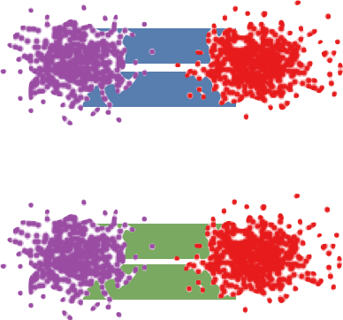</mtext><mo>)</mo></mrow><mtext> </mtext><mover accent="true"><mo>≤</mo><mrow><mo maxsize="0.700em" minsize="0.700em">(</mo><mo lspace="0em" mathsize="0.700em" rspace="0em">∗</mo><mo maxsize="0.700em" minsize="0.700em">)</mo></mrow></mover><mtext> Length</mtext><mrow><mo>(</mo><mtext class="ltx_img_square" style="aspect-ratio:39/36">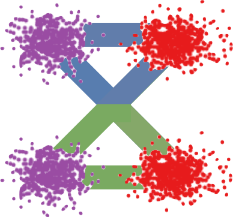</mtext><mo>)</mo></mrow><mtext> </mtext><mover accent="true"><mo>=</mo><mrow><mo maxsize="0.700em" minsize="0.700em">(</mo><mo lspace="0em" mathsize="0.700em" rspace="0em">∗</mo><mo lspace="0em" mathsize="0.700em" rspace="0em">∗</mo><mo maxsize="0.700em" minsize="0.700em">)</mo></mrow></mover><mtext> Length</mtext><mrow><mo>(</mo><mtext class="ltx_img_square" style="aspect-ratio:39/36">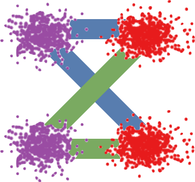</mtext><mo>)</mo></mrow><mtext> </mtext><mo>=</mo><mtext> </mtext><mrow><mi>𝔼</mi><mo>⁡</mo><mrow><mo stretchy="false">[</mo><mrow><mo>‖</mo><mrow><msub><mi>X</mi><mn>0</mn></msub><mo>−</mo><msub><mi>X</mi><mn>1</mn></msub></mrow><mo>‖</mo></mrow><mo stretchy="false">]</mo></mrow></mrow><mtext> </mtext></mrow><mo>,</mo></mrow></semantics></math></td>
<td class="ltx_eqn_cell ltx_eqn_center_padright"></td></tr></tbody>
</table></div>
<div class="blk">
    
    <p class="pp">where <math id="S2.SS2.SSS0.Px2.p3.m6" class="ltx_Math" alttext="\overset{\scriptsize(*)}{\leq}" display="inline" intent=":literal"><semantics><mover accent="true"><mo>≤</mo><mrow><mo maxsize="0.700em" minsize="0.700em">(</mo><mo lspace="0em" mathsize="0.700em" rspace="0em">∗</mo><mo maxsize="0.700em" minsize="0.700em">)</mo></mrow></mover></semantics></math> uses
the triangle inequality,
and <math id="S2.SS2.SSS0.Px2.p3.m7" class="ltx_Math" alttext="\overset{\scriptsize(**)}{=}" display="inline" intent=":literal"><semantics><mover accent="true"><mo>=</mo><mrow><mo maxsize="0.700em" minsize="0.700em">(</mo><mo lspace="0em" mathsize="0.700em" rspace="0em">∗</mo><mo lspace="0em" mathsize="0.700em" rspace="0em">∗</mo><mo maxsize="0.700em" minsize="0.700em">)</mo></mrow></mover></semantics></math> holds because the paths of <math id="S2.SS2.SSS0.Px2.p3.m8" class="ltx_Math" alttext="Z_{t}" display="inline" intent=":literal"><semantics><msub><mi>Z</mi><mi>t</mi></msub></semantics></math> is a rewiring
of the straight paths of <math id="S2.SS2.SSS0.Px2.p3.m9" class="ltx_Math" alttext="X_{t}" display="inline" intent=":literal"><semantics><msub><mi>X</mi><mi>t</mi></msub></semantics></math>, following the
construction of <math id="S2.SS2.SSS0.Px2.p3.m10" class="ltx_Math" alttext="v^{{\boldsymbol{X}}}" display="inline" intent=":literal"><semantics><msup><mi>v</mi><mi>𝑿</mi></msup></semantics></math> in (<a href="#S2.E2" title="In 2.2 Main Results and Properties ‣ 2 Method ‣ Flow Straight and Fast: Learning to Generate and Transfer Data with Rectified Flow" class="ltx_ref"><span class="ltx_text ltx_ref_tag">2</span></a>).
For general convex <math id="S2.SS2.SSS0.Px2.p3.m11" class="ltx_Math" alttext="c" display="inline" intent=":literal"><semantics><mi>c</mi></semantics></math>,
a similar proof using Jensen’s inequality is shown in Section <a href="#S3.SS2" title="3.2 Reducing Convex Transport Costs ‣ 3 Theoretical Analysis ‣ Flow Straight and Fast: Learning to Generate and Transfer Data with Rectified Flow" class="ltx_ref"><span class="ltx_text ltx_ref_tag">3.2</span></a>.</p>
    <p class="pp zh" lang="zh-Hans">其中 <math class="ltx_Math" alttext="\overset{\scriptsize(*)}{\leq}" display="inline" intent=":literal"><semantics><mover accent="true"><mo>≤</mo><mrow><mo maxsize="0.700em" minsize="0.700em">(</mo><mo lspace="0em" mathsize="0.700em" rspace="0em">∗</mo><mo maxsize="0.700em" minsize="0.700em">)</mo></mrow></mover></semantics></math> 用到三角不等式，<math class="ltx_Math" alttext="\overset{\scriptsize(**)}{=}" display="inline" intent=":literal"><semantics><mover accent="true"><mo>=</mo><mrow><mo maxsize="0.700em" minsize="0.700em">(</mo><mo lspace="0em" mathsize="0.700em" rspace="0em">∗</mo><mo lspace="0em" mathsize="0.700em" rspace="0em">∗</mo><mo maxsize="0.700em" minsize="0.700em">)</mo></mrow></mover></semantics></math> 成立是因为按照 (<a href="#S2.E2" title="In 2.2 Main Results and Properties ‣ 2 Method ‣ Flow Straight and Fast: Learning to Generate and Transfer Data with Rectified Flow" class="ltx_ref"><span class="ltx_text ltx_ref_tag">2</span></a>) 中 <math class="ltx_Math" alttext="v^{{\boldsymbol{X}}}" display="inline" intent=":literal"><semantics><msup><mi>v</mi><mi>𝑿</mi></msup></semantics></math> 的构造，<math class="ltx_Math" alttext="Z_{t}" display="inline" intent=":literal"><semantics><msub><mi>Z</mi><mi>t</mi></msub></semantics></math> 的路径是对 <math class="ltx_Math" alttext="X_{t}" display="inline" intent=":literal"><semantics><msub><mi>X</mi><mi>t</mi></msub></semantics></math> 直线路径的重新接线。对一般的凸代价 <math class="ltx_Math" alttext="c" display="inline" intent=":literal"><semantics><mi>c</mi></semantics></math>，第 <a href="#S3.SS2" title="3.2 Reducing Convex Transport Costs ‣ 3 Theoretical Analysis ‣ Flow Straight and Fast: Learning to Generate and Transfer Data with Rectified Flow" class="ltx_ref"><span class="ltx_text ltx_ref_tag">3.2</span></a> 节给出了用 Jensen 不等式的类似证明。</p>
    
  </div>
<span class="lxa" id="S2.SS2.SSS0.Px3"></span><h4 class="ph" id="sreflow,-straightening,-fast-simulation">Reflow, straightening, fast simulation<span class="hzh">Reflow、拉直与快速模拟</span></h4>
<div class="blk">
    
    <p class="pp">As shown in Figure <a href="#S2.F3" title="Figure 3 ‣ Reflow, straightening, fast simulation ‣ 2.2 Main Results and Properties ‣ 2 Method ‣ Flow Straight and Fast: Learning to Generate and Transfer Data with Rectified Flow" class="ltx_ref"><span class="ltx_text ltx_ref_tag">3</span></a>,
when we recursively apply the procedure <math id="S2.SS2.SSS0.Px3.p1.m1" class="ltx_Math" alttext="{\boldsymbol{Z}}^{k+1}=\mathtt{RectFlow}((Z_{0}^{k},Z_{1}^{k}))" display="inline" intent=":literal"><semantics><mrow><msup><mi>𝒁</mi><mrow><mi>k</mi><mo>+</mo><mn>1</mn></mrow></msup><mo>=</mo><mrow><mi>𝚁𝚎𝚌𝚝𝙵𝚕𝚘𝚠</mi><mo>⁡</mo><mrow><mo stretchy="false">(</mo><mrow><mo stretchy="false">(</mo><msubsup><mi>Z</mi><mn>0</mn><mi>k</mi></msubsup><mo>,</mo><msubsup><mi>Z</mi><mn>1</mn><mi>k</mi></msubsup><mo stretchy="false">)</mo></mrow><mo stretchy="false">)</mo></mrow></mrow></mrow></semantics></math>,
the paths of the <math id="S2.SS2.SSS0.Px3.p1.m2" class="ltx_Math" alttext="k" display="inline" intent=":literal"><semantics><mi>k</mi></semantics></math>-rectified flow <math id="S2.SS2.SSS0.Px3.p1.m3" class="ltx_Math" alttext="{\boldsymbol{Z}}^{k}" display="inline" intent=":literal"><semantics><msup><mi>𝒁</mi><mi>k</mi></msup></semantics></math>
are increasingly
straight, and hence easier to simulate numerically, as <math id="S2.SS2.SSS0.Px3.p1.m4" class="ltx_Math" alttext="k" display="inline" intent=":literal"><semantics><mi>k</mi></semantics></math> increases. This straightening tendency can be guaranteed theoretically.</p>
    <p class="pp zh" lang="zh-Hans">如图 <a href="#S2.F3" title="Figure 3 ‣ Reflow, straightening, fast simulation ‣ 2.2 Main Results and Properties ‣ 2 Method ‣ Flow Straight and Fast: Learning to Generate and Transfer Data with Rectified Flow" class="ltx_ref"><span class="ltx_text ltx_ref_tag">3</span></a> 所示，递归地应用 <math class="ltx_Math" alttext="{\boldsymbol{Z}}^{k+1}=\mathtt{RectFlow}((Z_{0}^{k},Z_{1}^{k}))" display="inline" intent=":literal"><semantics><mrow><msup><mi>𝒁</mi><mrow><mi>k</mi><mo>+</mo><mn>1</mn></mrow></msup><mo>=</mo><mrow><mi>𝚁𝚎𝚌𝚝𝙵𝚕𝚘𝚠</mi><mo>⁡</mo><mrow><mo stretchy="false">(</mo><mrow><mo stretchy="false">(</mo><msubsup><mi>Z</mi><mn>0</mn><mi>k</mi></msubsup><mo>,</mo><msubsup><mi>Z</mi><mn>1</mn><mi>k</mi></msubsup><mo stretchy="false">)</mo></mrow><mo stretchy="false">)</mo></mrow></mrow></mrow></semantics></math> 时，随着 <math class="ltx_Math" alttext="k" display="inline" intent=":literal"><semantics><mi>k</mi></semantics></math> 增大，<math class="ltx_Math" alttext="k" display="inline" intent=":literal"><semantics><mi>k</mi></semantics></math>-Rectified Flow <math class="ltx_Math" alttext="{\boldsymbol{Z}}^{k}" display="inline" intent=":literal"><semantics><msup><mi>𝒁</mi><mi>k</mi></msup></semantics></math> 的路径越来越直，因而越来越容易数值模拟。这种拉直的趋势可以在理论上得到保证。</p>
    
  </div>
<div class="floatbox"><figure id="S2.F3" class="ltx_figure">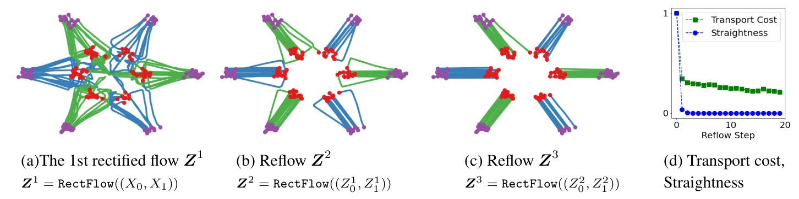<figcaption class="ltx_caption"><span class="ltx_tag ltx_tag_figure">Figure 3: </span>(a)-(c) Samples of trajectories drawn from the reflows on a toy example (<math id="S2.F3.m13" class="ltx_Math" alttext="{\pi}_{0}" display="inline" intent=":literal"><semantics><msub><mi style="--ltx-fg-color:#000000;" mathcolor="#000000">π</mi><mn style="--ltx-fg-color:#000000;" mathcolor="#000000">0</mn></msub></semantics></math><span id="S2.F3.5" class="ltx_text" style="--ltx-fg-color:#000000;">: purple dots</span>,
<math id="S2.F3.m14" class="ltx_Math" alttext="{\pi}_{1}" display="inline" intent=":literal"><semantics><msub><mi style="--ltx-fg-color:#000000;" mathcolor="#000000">π</mi><mn style="--ltx-fg-color:#000000;" mathcolor="#000000">1</mn></msub></semantics></math><span id="S2.F3.6" class="ltx_text" style="--ltx-fg-color:#000000;">: red dots</span>;
the green and blue lines are trajectories connecting different modes of <math id="S2.F3.m15" class="ltx_Math" alttext="{\pi}_{0},{\pi}_{1}" display="inline" intent=":literal"><semantics><mrow><msub><mi>π</mi><mn>0</mn></msub><mo>,</mo><msub><mi>π</mi><mn>1</mn></msub></mrow></semantics></math>).
(d) The
straightness and the relative L2 transport cost v.s.
the reflow steps; the values are scaled into <math id="S2.F3.m16" class="ltx_Math" alttext="[0,1]" display="inline" intent=":literal"><semantics><mrow><mo stretchy="false">[</mo><mn>0</mn><mo>,</mo><mn>1</mn><mo stretchy="false">]</mo></mrow></semantics></math>, so 0 corresponds to straight lines and <math id="S2.F3.m17" class="ltx_Math" alttext="L_{2}" display="inline" intent=":literal"><semantics><msub><mi>L</mi><mn>2</mn></msub></semantics></math> optimal transport; see Section <a href="#S5.SS1" title="5.1 Toy Examples ‣ 5 Experiments ‣ Flow Straight and Fast: Learning to Generate and Transfer Data with Rectified Flow" class="ltx_ref"><span class="ltx_text ltx_ref_tag">5.1</span></a> for more information. We use the non-parametric model in (<a href="#S2.E5" title="In Smooth function approximation ‣ 2.2 Main Results and Properties ‣ 2 Method ‣ Flow Straight and Fast: Learning to Generate and Transfer Data with Rectified Flow" class="ltx_ref"><span class="ltx_text ltx_ref_tag">5</span></a>) with bandwidth <math id="S2.F3.m18" class="ltx_Math" alttext="h=0.1" display="inline" intent=":literal"><semantics><mrow><mi>h</mi><mo>=</mo><mn>0.1</mn></mrow></semantics></math>.
</figcaption><div class="fzh"><b>图 3：</b>(a)-(c) 在一个简单例子上做 reflow 得到的轨迹样本（<math class="ltx_Math" alttext="{\pi}_{0}" display="inline" intent=":literal"><semantics><msub><mi style="--ltx-fg-color:#000000;" mathcolor="#000000">π</mi><mn style="--ltx-fg-color:#000000;" mathcolor="#000000">0</mn></msub></semantics></math>：<i>紫色点</i>，<math class="ltx_Math" alttext="{\pi}_{1}" display="inline" intent=":literal"><semantics><msub><mi style="--ltx-fg-color:#000000;" mathcolor="#000000">π</mi><mn style="--ltx-fg-color:#000000;" mathcolor="#000000">1</mn></msub></semantics></math>：<i>红色点</i>；绿线和蓝线是连接 <math class="ltx_Math" alttext="{\pi}_{0},{\pi}_{1}" display="inline" intent=":literal"><semantics><mrow><msub><mi>π</mi><mn>0</mn></msub><mo>,</mo><msub><mi>π</mi><mn>1</mn></msub></mrow></semantics></math> 不同模式的轨迹）。(d) 直度和相对 L2 传输代价随 reflow 步数的变化；数值缩放到 <math class="ltx_Math" alttext="[0,1]" display="inline" intent=":literal"><semantics><mrow><mo stretchy="false">[</mo><mn>0</mn><mo>,</mo><mn>1</mn><mo stretchy="false">]</mo></mrow></semantics></math>，因此 0 对应直线和 <math class="ltx_Math" alttext="L_{2}" display="inline" intent=":literal"><semantics><msub><mi>L</mi><mn>2</mn></msub></semantics></math> 最优传输；更多信息见第 <a href="#S5.SS1" title="5.1 Toy Examples ‣ 5 Experiments ‣ Flow Straight and Fast: Learning to Generate and Transfer Data with Rectified Flow" class="ltx_ref"><span class="ltx_text ltx_ref_tag">5.1</span></a> 节。我们使用 (<a href="#S2.E5" title="In Smooth function approximation ‣ 2.2 Main Results and Properties ‣ 2 Method ‣ Flow Straight and Fast: Learning to Generate and Transfer Data with Rectified Flow" class="ltx_ref"><span class="ltx_text ltx_ref_tag">5</span></a>) 中带宽 <math class="ltx_Math" alttext="h=0.1" display="inline" intent=":literal"><semantics><mrow><mi>h</mi><mo>=</mo><mn>0.1</mn></mrow></semantics></math> 的非参数模型。</div></figure></div>
<div class="blk">
    
    <p class="pp">Specifically,
we say that a flow <math id="S2.SS2.SSS0.Px3.p2.m1" class="ltx_Math" alttext="\mathrm{d}Z_{t}=v(Z_{t},t)\mathrm{d}t" display="inline" intent=":literal"><semantics><mrow><mrow><mi>d</mi><mo lspace="0em" rspace="0em">​</mo><msub><mi>Z</mi><mi>t</mi></msub></mrow><mo>=</mo><mrow><mrow><mi>v</mi><mo>⁡</mo><mrow><mo stretchy="false">(</mo><msub><mi>Z</mi><mi>t</mi></msub><mo>,</mo><mi>t</mi><mo stretchy="false">)</mo></mrow></mrow><mo lspace="0em" rspace="0em">​</mo><mi>d</mi><mo lspace="0em" rspace="0em">​</mo><mi>t</mi></mrow></mrow></semantics></math> is straight if we have almost surely that <math id="S2.SS2.SSS0.Px3.p2.m2" class="ltx_Math" alttext="Z_{t}=tZ_{1}+(1-t)Z_{0}" display="inline" intent=":literal"><semantics><mrow><msub><mi>Z</mi><mi>t</mi></msub><mo>=</mo><mrow><mrow><mi>t</mi><mo lspace="0em" rspace="0em">​</mo><msub><mi>Z</mi><mn>1</mn></msub></mrow><mo>+</mo><mrow><mrow><mo stretchy="false">(</mo><mrow><mn>1</mn><mo>−</mo><mi>t</mi></mrow><mo stretchy="false">)</mo></mrow><mo lspace="0em" rspace="0em">​</mo><msub><mi>Z</mi><mn>0</mn></msub></mrow></mrow></mrow></semantics></math> for <math id="S2.SS2.SSS0.Px3.p2.m3" class="ltx_Math" alttext="\forall t\in[0,1]" display="inline" intent=":literal"><semantics><mrow><mrow><mo rspace="0.167em">∀</mo><mi>t</mi></mrow><mo>∈</mo><mrow><mo stretchy="false">[</mo><mrow><mn>0</mn><mo>,</mo><mn>1</mn></mrow><mo stretchy="false">]</mo></mrow></mrow></semantics></math>,
or equivalently <math id="S2.SS2.SSS0.Px3.p2.m4" class="ltx_Math" alttext="v(Z_{t},t)=Z_{1}-Z_{0}=const" display="inline" intent=":literal"><semantics><mrow><mrow><mi>v</mi><mo>⁡</mo><mrow><mo stretchy="false">(</mo><msub><mi>Z</mi><mi>t</mi></msub><mo>,</mo><mi>t</mi><mo stretchy="false">)</mo></mrow></mrow><mo>=</mo><mrow><msub><mi>Z</mi><mn>1</mn></msub><mo>−</mo><msub><mi>Z</mi><mn>0</mn></msub></mrow><mo>=</mo><mrow><mi>c</mi><mo lspace="0em" rspace="0em">​</mo><mi>o</mi><mo lspace="0em" rspace="0em">​</mo><mi>n</mi><mo lspace="0em" rspace="0em">​</mo><mi>s</mi><mo lspace="0em" rspace="0em">​</mo><mi>t</mi></mrow></mrow></semantics></math> following each path.
(More precisely, “straight” here refers to straight with a constant speed.)
Such straight flows are highly attractive computationally
as it is effective a one-step model:
a single Euler step update <math id="S2.SS2.SSS0.Px3.p2.m5" class="ltx_Math" alttext="Z_{1}=Z_{0}+v(Z_{0},0)" display="inline" intent=":literal"><semantics><mrow><msub><mi>Z</mi><mn>1</mn></msub><mo>=</mo><mrow><msub><mi>Z</mi><mn>0</mn></msub><mo>+</mo><mrow><mi>v</mi><mo>⁡</mo><mrow><mo stretchy="false">(</mo><msub><mi>Z</mi><mn>0</mn></msub><mo>,</mo><mn>0</mn><mo stretchy="false">)</mo></mrow></mrow></mrow></mrow></semantics></math> calculates the exact <math id="S2.SS2.SSS0.Px3.p2.m6" class="ltx_Math" alttext="Z_{1}" display="inline" intent=":literal"><semantics><msub><mi>Z</mi><mn>1</mn></msub></semantics></math> from <math id="S2.SS2.SSS0.Px3.p2.m7" class="ltx_Math" alttext="Z_{0}" display="inline" intent=":literal"><semantics><msub><mi>Z</mi><mn>0</mn></msub></semantics></math>. Note that the linear interpolation <math id="S2.SS2.SSS0.Px3.p2.m8" class="ltx_Math" alttext="{\boldsymbol{X}}=\{X_{t}\}" display="inline" intent=":literal"><semantics><mrow><mi>𝑿</mi><mo>=</mo><mrow><mo stretchy="false">{</mo><msub><mi>X</mi><mi>t</mi></msub><mo stretchy="false">}</mo></mrow></mrow></semantics></math> is straight by this definition but it is not a (causal) flow and hence can not be simulated without an oracle assess to draws of both <math id="S2.SS2.SSS0.Px3.p2.m9" class="ltx_Math" alttext="{\pi}_{0}" display="inline" intent=":literal"><semantics><msub><mi>π</mi><mn>0</mn></msub></semantics></math> and <math id="S2.SS2.SSS0.Px3.p2.m10" class="ltx_Math" alttext="{\pi}_{1}" display="inline" intent=":literal"><semantics><msub><mi>π</mi><mn>1</mn></msub></semantics></math>.
In comparison, it is non-trivial
to make a flow <math id="S2.SS2.SSS0.Px3.p2.m11" class="ltx_Math" alttext="\mathrm{d}Z_{t}=v(Z_{t},t)\mathrm{d}t" display="inline" intent=":literal"><semantics><mrow><mrow><mi>d</mi><mo lspace="0em" rspace="0em">​</mo><msub><mi>Z</mi><mi>t</mi></msub></mrow><mo>=</mo><mrow><mrow><mi>v</mi><mo>⁡</mo><mrow><mo stretchy="false">(</mo><msub><mi>Z</mi><mi>t</mi></msub><mo>,</mo><mi>t</mi><mo stretchy="false">)</mo></mrow></mrow><mo lspace="0em" rspace="0em">​</mo><mi>d</mi><mo lspace="0em" rspace="0em">​</mo><mi>t</mi></mrow></mrow></semantics></math> straight, because if so <math id="S2.SS2.SSS0.Px3.p2.m12" class="ltx_Math" alttext="v" display="inline" intent=":literal"><semantics><mi>v</mi></semantics></math> must satisfy the inviscid Burgers’ equation <math id="S2.SS2.SSS0.Px3.p2.m13" class="ltx_Math" alttext="\partial_{t}v+(\partial_{z}v)v=0" display="inline" intent=":literal"><semantics><mrow><mrow><mrow><msub><mo>∂</mo><mi>t</mi></msub><mi>v</mi></mrow><mo>+</mo><mrow><mrow><mo stretchy="false">(</mo><mrow><msub><mo lspace="0em">∂</mo><mi>z</mi></msub><mi>v</mi></mrow><mo stretchy="false">)</mo></mrow><mo lspace="0em" rspace="0em">​</mo><mi>v</mi></mrow></mrow><mo>=</mo><mn>0</mn></mrow></semantics></math>:</p>
    <p class="pp zh" lang="zh-Hans">具体来说，如果几乎必然地对 <math class="ltx_Math" alttext="\forall t\in[0,1]" display="inline" intent=":literal"><semantics><mrow><mrow><mo rspace="0.167em">∀</mo><mi>t</mi></mrow><mo>∈</mo><mrow><mo stretchy="false">[</mo><mrow><mn>0</mn><mo>,</mo><mn>1</mn></mrow><mo stretchy="false">]</mo></mrow></mrow></semantics></math> 有 <math class="ltx_Math" alttext="Z_{t}=tZ_{1}+(1-t)Z_{0}" display="inline" intent=":literal"><semantics><mrow><msub><mi>Z</mi><mi>t</mi></msub><mo>=</mo><mrow><mrow><mi>t</mi><mo lspace="0em" rspace="0em">​</mo><msub><mi>Z</mi><mn>1</mn></msub></mrow><mo>+</mo><mrow><mrow><mo stretchy="false">(</mo><mrow><mn>1</mn><mo>−</mo><mi>t</mi></mrow><mo stretchy="false">)</mo></mrow><mo lspace="0em" rspace="0em">​</mo><msub><mi>Z</mi><mn>0</mn></msub></mrow></mrow></mrow></semantics></math>，或者等价地，沿每条路径都有 <math class="ltx_Math" alttext="v(Z_{t},t)=Z_{1}-Z_{0}=const" display="inline" intent=":literal"><semantics><mrow><mrow><mi>v</mi><mo>⁡</mo><mrow><mo stretchy="false">(</mo><msub><mi>Z</mi><mi>t</mi></msub><mo>,</mo><mi>t</mi><mo stretchy="false">)</mo></mrow></mrow><mo>=</mo><mrow><msub><mi>Z</mi><mn>1</mn></msub><mo>−</mo><msub><mi>Z</mi><mn>0</mn></msub></mrow><mo>=</mo><mrow><mi>c</mi><mo lspace="0em" rspace="0em">​</mo><mi>o</mi><mo lspace="0em" rspace="0em">​</mo><mi>n</mi><mo lspace="0em" rspace="0em">​</mo><mi>s</mi><mo lspace="0em" rspace="0em">​</mo><mi>t</mi></mrow></mrow></semantics></math>，就称流 <math class="ltx_Math" alttext="\mathrm{d}Z_{t}=v(Z_{t},t)\mathrm{d}t" display="inline" intent=":literal"><semantics><mrow><mrow><mi>d</mi><mo lspace="0em" rspace="0em">​</mo><msub><mi>Z</mi><mi>t</mi></msub></mrow><mo>=</mo><mrow><mrow><mi>v</mi><mo>⁡</mo><mrow><mo stretchy="false">(</mo><msub><mi>Z</mi><mi>t</mi></msub><mo>,</mo><mi>t</mi><mo stretchy="false">)</mo></mrow></mrow><mo lspace="0em" rspace="0em">​</mo><mi>d</mi><mo lspace="0em" rspace="0em">​</mo><mi>t</mi></mrow></mrow></semantics></math> 是直的。（更准确地说，这里的「直」指的是以恒定速度沿直线运动。）这样的直线流在计算上非常有吸引力，因为它实际上就是一个一步模型：单个 Euler 步更新 <math class="ltx_Math" alttext="Z_{1}=Z_{0}+v(Z_{0},0)" display="inline" intent=":literal"><semantics><mrow><msub><mi>Z</mi><mn>1</mn></msub><mo>=</mo><mrow><msub><mi>Z</mi><mn>0</mn></msub><mo>+</mo><mrow><mi>v</mi><mo>⁡</mo><mrow><mo stretchy="false">(</mo><msub><mi>Z</mi><mn>0</mn></msub><mo>,</mo><mn>0</mn><mo stretchy="false">)</mo></mrow></mrow></mrow></mrow></semantics></math> 就能从 <math class="ltx_Math" alttext="Z_{0}" display="inline" intent=":literal"><semantics><msub><mi>Z</mi><mn>0</mn></msub></semantics></math> 精确算出 <math class="ltx_Math" alttext="Z_{1}" display="inline" intent=":literal"><semantics><msub><mi>Z</mi><mn>1</mn></msub></semantics></math>。注意，按这个定义线性插值 <math class="ltx_Math" alttext="{\boldsymbol{X}}=\{X_{t}\}" display="inline" intent=":literal"><semantics><mrow><mi>𝑿</mi><mo>=</mo><mrow><mo stretchy="false">{</mo><msub><mi>X</mi><mi>t</mi></msub><mo stretchy="false">}</mo></mrow></mrow></semantics></math> 是直的，但它不是（因果的）流，因此除非能同时从 <math class="ltx_Math" alttext="{\pi}_{0}" display="inline" intent=":literal"><semantics><msub><mi>π</mi><mn>0</mn></msub></semantics></math> 和 <math class="ltx_Math" alttext="{\pi}_{1}" display="inline" intent=":literal"><semantics><msub><mi>π</mi><mn>1</mn></msub></semantics></math> 获取样本（借助某种「神谕」），否则无法模拟。相比之下，让一个流 <math class="ltx_Math" alttext="\mathrm{d}Z_{t}=v(Z_{t},t)\mathrm{d}t" display="inline" intent=":literal"><semantics><mrow><mrow><mi>d</mi><mo lspace="0em" rspace="0em">​</mo><msub><mi>Z</mi><mi>t</mi></msub></mrow><mo>=</mo><mrow><mrow><mi>v</mi><mo>⁡</mo><mrow><mo stretchy="false">(</mo><msub><mi>Z</mi><mi>t</mi></msub><mo>,</mo><mi>t</mi><mo stretchy="false">)</mo></mrow></mrow><mo lspace="0em" rspace="0em">​</mo><mi>d</mi><mo lspace="0em" rspace="0em">​</mo><mi>t</mi></mrow></mrow></semantics></math> 变直并不简单，因为那样的话 <math class="ltx_Math" alttext="v" display="inline" intent=":literal"><semantics><mi>v</mi></semantics></math> 必须满足无黏 Burgers 方程 <math class="ltx_Math" alttext="\partial_{t}v+(\partial_{z}v)v=0" display="inline" intent=":literal"><semantics><mrow><mrow><mrow><msub><mo>∂</mo><mi>t</mi></msub><mi>v</mi></mrow><mo>+</mo><mrow><mrow><mo stretchy="false">(</mo><mrow><msub><mo lspace="0em">∂</mo><mi>z</mi></msub><mi>v</mi></mrow><mo stretchy="false">)</mo></mrow><mo lspace="0em" rspace="0em">​</mo><mi>v</mi></mrow></mrow><mo>=</mo><mn>0</mn></mrow></semantics></math>：</p>
    
  </div>
<div class="eqbox"><table id="S2.Ex4" class="ltx_equation ltx_eqn_table">

<tbody><tr class="ltx_equation ltx_eqn_row ltx_align_baseline">
<td class="ltx_eqn_cell ltx_eqn_center_padleft"></td>
<td class="ltx_eqn_cell ltx_align_center"><math id="S2.Ex4.m1" class="ltx_Math" alttext="\frac{\mathrm{d}}{\mathrm{d}t}v(Z_{t},t)=\partial_{z}v(Z_{t},t)\dot{Z}_{t}+\partial_{t}v(Z_{t},t)=\partial_{z}v(Z_{t},t)v(Z_{t},t)+\partial_{t}v(Z_{t},t)=0." display="block" intent=":literal"><semantics><mrow><mrow><mrow><mfrac><mi>d</mi><mrow><mi>d</mi><mo lspace="0em" rspace="0em">​</mo><mi>t</mi></mrow></mfrac><mo lspace="0em" rspace="0em">​</mo><mi>v</mi><mo lspace="0em" rspace="0em">​</mo><mrow><mo stretchy="false">(</mo><msub><mi>Z</mi><mi>t</mi></msub><mo>,</mo><mi>t</mi><mo stretchy="false">)</mo></mrow></mrow><mo rspace="0.111em">=</mo><mrow><mrow><msub><mo>∂</mo><mi>z</mi></msub><mrow><mrow><mi>v</mi><mo>⁡</mo><mrow><mo stretchy="false">(</mo><msub><mi>Z</mi><mi>t</mi></msub><mo>,</mo><mi>t</mi><mo stretchy="false">)</mo></mrow></mrow><mo lspace="0em" rspace="0em">​</mo><msub><mover accent="true"><mi>Z</mi><mo>˙</mo></mover><mi>t</mi></msub></mrow></mrow><mo rspace="0.055em">+</mo><mrow><msub><mo>∂</mo><mi>t</mi></msub><mrow><mi>v</mi><mo>⁡</mo><mrow><mo stretchy="false">(</mo><msub><mi>Z</mi><mi>t</mi></msub><mo>,</mo><mi>t</mi><mo stretchy="false">)</mo></mrow></mrow></mrow></mrow><mo rspace="0.111em">=</mo><mrow><mrow><msub><mo>∂</mo><mi>z</mi></msub><mrow><mrow><mi>v</mi><mo>⁡</mo><mrow><mo stretchy="false">(</mo><msub><mi>Z</mi><mi>t</mi></msub><mo>,</mo><mi>t</mi><mo stretchy="false">)</mo></mrow></mrow><mo lspace="0em" rspace="0em">​</mo><mi>v</mi><mo lspace="0em" rspace="0em">​</mo><mrow><mo stretchy="false">(</mo><msub><mi>Z</mi><mi>t</mi></msub><mo>,</mo><mi>t</mi><mo stretchy="false">)</mo></mrow></mrow></mrow><mo rspace="0.055em">+</mo><mrow><msub><mo>∂</mo><mi>t</mi></msub><mrow><mi>v</mi><mo>⁡</mo><mrow><mo stretchy="false">(</mo><msub><mi>Z</mi><mi>t</mi></msub><mo>,</mo><mi>t</mi><mo stretchy="false">)</mo></mrow></mrow></mrow></mrow><mo>=</mo><mn>0</mn></mrow><mo lspace="0em">.</mo></mrow></semantics></math></td>
<td class="ltx_eqn_cell ltx_eqn_center_padright"></td></tr></tbody>
</table></div>
<div class="blk">
    
    <p class="pp">More generally,
we can measure the straightness of any
continuously differentiable process <math id="S2.SS2.SSS0.Px3.p2.m14" class="ltx_Math" alttext="{\boldsymbol{Z}}=\{Z_{t}\}" display="inline" intent=":literal"><semantics><mrow><mi>𝒁</mi><mo>=</mo><mrow><mo stretchy="false">{</mo><msub><mi>Z</mi><mi>t</mi></msub><mo stretchy="false">}</mo></mrow></mrow></semantics></math> by</p>
    <p class="pp zh" lang="zh-Hans">更一般地，任何连续可微过程 <math class="ltx_Math" alttext="{\boldsymbol{Z}}=\{Z_{t}\}" display="inline" intent=":literal"><semantics><mrow><mi>𝒁</mi><mo>=</mo><mrow><mo stretchy="false">{</mo><msub><mi>Z</mi><mi>t</mi></msub><mo stretchy="false">}</mo></mrow></mrow></semantics></math> 的直度可以用下式衡量：</p>
    
  </div>
<div class="eqbox"><table id="S2.EGx4" class="ltx_equationgroup ltx_eqn_align ltx_eqn_table">

<tbody id="S2.E3"><tr class="ltx_equation ltx_eqn_row ltx_align_baseline">
<td class="ltx_eqn_cell ltx_eqn_center_padleft"></td>
<td class="ltx_td ltx_align_right ltx_eqn_cell"><math id="S2.E3.m1" class="ltx_Math" alttext="\displaystyle S({\boldsymbol{Z}})=\int_{0}^{1}\mathbb{E}\left[\left\lVert(Z_{1}-Z_{0})-\dot{Z}_{t}\right\rVert^{2}\right]\mathrm{d}t." display="inline" intent=":literal"><semantics><mrow><mrow><mrow><mi>S</mi><mo>⁡</mo><mrow><mo stretchy="false">(</mo><mi>𝒁</mi><mo stretchy="false">)</mo></mrow></mrow><mo>=</mo><mrow><mstyle displaystyle="true"><msubsup><mo>∫</mo><mn>0</mn><mn>1</mn></msubsup></mstyle><mrow><mrow><mi>𝔼</mi><mo>⁡</mo><mrow><mo>[</mo><msup><mrow><mo>‖</mo><mrow><mrow><mo stretchy="false">(</mo><mrow><msub><mi>Z</mi><mn>1</mn></msub><mo>−</mo><msub><mi>Z</mi><mn>0</mn></msub></mrow><mo stretchy="false">)</mo></mrow><mo>−</mo><msub><mover accent="true"><mi>Z</mi><mo>˙</mo></mover><mi>t</mi></msub></mrow><mo>‖</mo></mrow><mn>2</mn></msup><mo>]</mo></mrow></mrow><mo lspace="0em" rspace="0em">​</mo><mrow><mo rspace="0em">𝑑</mo><mi>t</mi></mrow></mrow></mrow></mrow><mo lspace="0em">.</mo></mrow></semantics></math></td>
<td class="ltx_eqn_cell ltx_eqn_center_padright"></td>
<td rowspan="1" class="ltx_eqn_cell ltx_eqn_eqno ltx_align_middle ltx_align_right"><span class="ltx_tag ltx_tag_equation ltx_align_right">(3)</span></td></tr></tbody>
</table></div>
<div class="blk">
    
    <p class="pp"><math id="S2.SS2.SSS0.Px3.p2.m15" class="ltx_Math" alttext="S({\boldsymbol{Z}})=0" display="inline" intent=":literal"><semantics><mrow><mrow><mi>S</mi><mo>⁡</mo><mrow><mo stretchy="false">(</mo><mi>𝒁</mi><mo stretchy="false">)</mo></mrow></mrow><mo>=</mo><mn>0</mn></mrow></semantics></math> means exact straightness.
A flow whose <math id="S2.SS2.SSS0.Px3.p2.m16" class="ltx_Math" alttext="S({\boldsymbol{Z}})" display="inline" intent=":literal"><semantics><mrow><mi>S</mi><mo>⁡</mo><mrow><mo stretchy="false">(</mo><mi>𝒁</mi><mo stretchy="false">)</mo></mrow></mrow></semantics></math> is small
has nearly straight paths and hence can be simulated accurately using numerical solvers with a small number of discretization steps. Section <a href="#S3.SS3" title="3.3 The Straightening Effect ‣ 3 Theoretical Analysis ‣ Flow Straight and Fast: Learning to Generate and Transfer Data with Rectified Flow" class="ltx_ref"><span class="ltx_text ltx_ref_tag">3.3</span></a> shows that
applying rectification recursively
provably decreases
<math id="S2.SS2.SSS0.Px3.p2.m17" class="ltx_Math" alttext="S({\boldsymbol{Z}})" display="inline" intent=":literal"><semantics><mrow><mi>S</mi><mo>⁡</mo><mrow><mo stretchy="false">(</mo><mi>𝒁</mi><mo stretchy="false">)</mo></mrow></mrow></semantics></math> towards zero.</p>
    <p class="pp zh" lang="zh-Hans"><math class="ltx_Math" alttext="S({\boldsymbol{Z}})=0" display="inline" intent=":literal"><semantics><mrow><mrow><mi>S</mi><mo>⁡</mo><mrow><mo stretchy="false">(</mo><mi>𝒁</mi><mo stretchy="false">)</mo></mrow></mrow><mo>=</mo><mn>0</mn></mrow></semantics></math> 意味着完全是直的。<math class="ltx_Math" alttext="S({\boldsymbol{Z}})" display="inline" intent=":literal"><semantics><mrow><mi>S</mi><mo>⁡</mo><mrow><mo stretchy="false">(</mo><mi>𝒁</mi><mo stretchy="false">)</mo></mrow></mrow></semantics></math> 较小的流路径几乎是直的，因此用离散化步数很少的数值求解器就能准确模拟。第 <a href="#S3.SS3" title="3.3 The Straightening Effect ‣ 3 Theoretical Analysis ‣ Flow Straight and Fast: Learning to Generate and Transfer Data with Rectified Flow" class="ltx_ref"><span class="ltx_text ltx_ref_tag">3.3</span></a> 节证明，递归应用 rectification 可以使 <math class="ltx_Math" alttext="S({\boldsymbol{Z}})" display="inline" intent=":literal"><semantics><mrow><mi>S</mi><mo>⁡</mo><mrow><mo stretchy="false">(</mo><mi>𝒁</mi><mo stretchy="false">)</mo></mrow></mrow></semantics></math> 降向零。</p>
    
  </div>
<div class="blk">
    
    <p class="pp"><em id="S2.SS2.SSS0.Px3.p3.1.1" class="ltx_emph ltx_font_italic">[Theorem <a href="#S3.Thmthm7" title="Theorem 3.7. ‣ 𝑂(1/𝐾) convergence rate ‣ 3.3 The Straightening Effect ‣ 3 Theoretical Analysis ‣ Flow Straight and Fast: Learning to Generate and Transfer Data with Rectified Flow" class="ltx_ref"><span class="ltx_text ltx_ref_tag">3.7</span></a>]
Let <math id="S2.SS2.SSS0.Px3.p3.m1" class="ltx_Math" alttext="{\boldsymbol{Z}}^{k}" display="inline" intent=":literal"><semantics><msup><mi>𝐙</mi><mi>k</mi></msup></semantics></math> be the <math id="S2.SS2.SSS0.Px3.p3.m2" class="ltx_Math" alttext="k" display="inline" intent=":literal"><semantics><mi>k</mi></semantics></math>-th rectified flow induced from <math id="S2.SS2.SSS0.Px3.p3.m3" class="ltx_Math" alttext="(X_{0},X_{1})" display="inline" intent=":literal"><semantics><mrow><mo stretchy="false">(</mo><msub><mi>X</mi><mn>0</mn></msub><mo>,</mo><msub><mi>X</mi><mn>1</mn></msub><mo stretchy="false">)</mo></mrow></semantics></math>.
Then</em></p>
    <p class="pp zh" lang="zh-Hans">[定理 <a href="#S3.Thmthm7" title="Theorem 3.7. ‣ 𝑂(1/𝐾) convergence rate ‣ 3.3 The Straightening Effect ‣ 3 Theoretical Analysis ‣ Flow Straight and Fast: Learning to Generate and Transfer Data with Rectified Flow" class="ltx_ref"><span class="ltx_text ltx_ref_tag">3.7</span></a>] 设 <math class="ltx_Math" alttext="{\boldsymbol{Z}}^{k}" display="inline" intent=":literal"><semantics><msup><mi>𝐙</mi><mi>k</mi></msup></semantics></math> 是由 <math class="ltx_Math" alttext="(X_{0},X_{1})" display="inline" intent=":literal"><semantics><mrow><mo stretchy="false">(</mo><msub><mi>X</mi><mn>0</mn></msub><mo>,</mo><msub><mi>X</mi><mn>1</mn></msub><mo stretchy="false">)</mo></mrow></semantics></math> 诱导的第 <math class="ltx_Math" alttext="k" display="inline" intent=":literal"><semantics><mi>k</mi></semantics></math> 个 Rectified Flow，则</p>
    
  </div>
<div class="eqbox"><table id="S2.Ex5" class="ltx_equation ltx_eqn_table">

<tbody><tr class="ltx_equation ltx_eqn_row ltx_align_baseline">
<td class="ltx_eqn_cell ltx_eqn_center_padleft"></td>
<td class="ltx_eqn_cell ltx_align_center"><math id="S2.Ex5.m1" class="ltx_math_unparsed" alttext="\min_{k\in\{0\cdots K\}}S({\boldsymbol{Z}}^{k})\leq\frac{\mathbb{E}[\left\lVert X_{1}-X_{0}\right\rVert^{2}]}{K}." display="block" intent=":literal"><semantics><mrow><munder><mi>min</mi><mrow><mi>k</mi><mo>∈</mo><mo stretchy="false">{</mo><mn>0</mn><mo lspace="0em" rspace="0em">⋯</mo><mi>K</mi><mo stretchy="false">}</mo></mrow></munder><mi>S</mi><mrow><mo stretchy="false">(</mo><msup><mi>𝒁</mi><mi>k</mi></msup><mo stretchy="false">)</mo></mrow><mo>≤</mo><mfrac><mrow><mi>𝔼</mi><mo>⁡</mo><mrow><mo stretchy="false">[</mo><msup><mrow><mo>‖</mo><mrow><msub><mi>X</mi><mn>1</mn></msub><mo>−</mo><msub><mi>X</mi><mn>0</mn></msub></mrow><mo>‖</mo></mrow><mn>2</mn></msup><mo stretchy="false">]</mo></mrow></mrow><mi>K</mi></mfrac><mo lspace="0em">.</mo></mrow></semantics></math></td>
<td class="ltx_eqn_cell ltx_eqn_center_padright"></td></tr></tbody>
</table></div>
<div class="blk">
    
    <p class="pp">As shown Figure <a href="#S1.F1" title="Figure 1 ‣ 1 Introduction ‣ Flow Straight and Fast: Learning to Generate and Transfer Data with Rectified Flow" class="ltx_ref"><span class="ltx_text ltx_ref_tag">1</span></a>,
applying one step of reflow can already provide nearly straight flows that yield good performance when simulated with a single Euler step.
It is not recommended to apply
too many reflow steps as it may accumulate estimation error on <math id="S2.SS2.SSS0.Px3.p4.m1" class="ltx_Math" alttext="v^{X}" display="inline" intent=":literal"><semantics><msup><mi>v</mi><mi>X</mi></msup></semantics></math>.</p>
    <p class="pp zh" lang="zh-Hans">如图 <a href="#S1.F1" title="Figure 1 ‣ 1 Introduction ‣ Flow Straight and Fast: Learning to Generate and Transfer Data with Rectified Flow" class="ltx_ref"><span class="ltx_text ltx_ref_tag">1</span></a> 所示，只做一次 reflow 就已经能得到几乎是直的流，用单个 Euler 步模拟时性能就很好。不建议做太多次 reflow，因为这可能累积 <math class="ltx_Math" alttext="v^{X}" display="inline" intent=":literal"><semantics><msup><mi>v</mi><mi>X</mi></msup></semantics></math> 的估计误差。</p>
    
  </div>
<span class="lxa" id="S2.SS2.SSS0.Px4"></span><h4 class="ph" id="sdistillation">Distillation<span class="hzh">蒸馏</span></h4>
<div class="blk">
    
    <p class="pp">After obtaining the <math id="S2.SS2.SSS0.Px4.p1.m1" class="ltx_Math" alttext="k" display="inline" intent=":literal"><semantics><mi>k</mi></semantics></math>-th rectified flow <math id="S2.SS2.SSS0.Px4.p1.m2" class="ltx_Math" alttext="{\boldsymbol{Z}}^{k}" display="inline" intent=":literal"><semantics><msup><mi>𝒁</mi><mi>k</mi></msup></semantics></math>, we can further improve the inference speed by distilling the relation of <math id="S2.SS2.SSS0.Px4.p1.m3" class="ltx_Math" alttext="(Z_{0}^{k},Z_{1}^{k})" display="inline" intent=":literal"><semantics><mrow><mo stretchy="false">(</mo><msubsup><mi>Z</mi><mn>0</mn><mi>k</mi></msubsup><mo>,</mo><msubsup><mi>Z</mi><mn>1</mn><mi>k</mi></msubsup><mo stretchy="false">)</mo></mrow></semantics></math> into a neural network <math id="S2.SS2.SSS0.Px4.p1.m4" class="ltx_Math" alttext="\hat{T}" display="inline" intent=":literal"><semantics><mover accent="true"><mi>T</mi><mo>^</mo></mover></semantics></math> to directly predict <math id="S2.SS2.SSS0.Px4.p1.m5" class="ltx_Math" alttext="Z_{1}^{k}" display="inline" intent=":literal"><semantics><msubsup><mi>Z</mi><mn>1</mn><mi>k</mi></msubsup></semantics></math> from <math id="S2.SS2.SSS0.Px4.p1.m6" class="ltx_Math" alttext="Z_{0}^{k}" display="inline" intent=":literal"><semantics><msubsup><mi>Z</mi><mn>0</mn><mi>k</mi></msubsup></semantics></math> without simulating the flow.
Given that the flow is already nearly straight (and hence well approximated by the one-step update),
and the distillation can be done efficiently.
In particular, if we take <math id="S2.SS2.SSS0.Px4.p1.m7" class="ltx_Math" alttext="\hat{T}(z_{0})=z_{0}+v(z_{0},0)" display="inline" intent=":literal"><semantics><mrow><mrow><mover accent="true"><mi>T</mi><mo>^</mo></mover><mo lspace="0em" rspace="0em">​</mo><mrow><mo stretchy="false">(</mo><msub><mi>z</mi><mn>0</mn></msub><mo stretchy="false">)</mo></mrow></mrow><mo>=</mo><mrow><msub><mi>z</mi><mn>0</mn></msub><mo>+</mo><mrow><mi>v</mi><mo>⁡</mo><mrow><mo stretchy="false">(</mo><msub><mi>z</mi><mn>0</mn></msub><mo>,</mo><mn>0</mn><mo stretchy="false">)</mo></mrow></mrow></mrow></mrow></semantics></math>,
then the loss function for distilling <math id="S2.SS2.SSS0.Px4.p1.m8" class="ltx_Math" alttext="{\boldsymbol{Z}}^{k}" display="inline" intent=":literal"><semantics><msup><mi>𝒁</mi><mi>k</mi></msup></semantics></math> is <math id="S2.SS2.SSS0.Px4.p1.m9" class="ltx_Math" alttext="\mathbb{E}\left[\left\lVert(Z_{1}^{k}-Z_{0}^{k})-v(Z_{0}^{k},0)\right\rVert^{2}\right]" display="inline" intent=":literal"><semantics><mrow><mi>𝔼</mi><mo>⁡</mo><mrow><mo>[</mo><msup><mrow><mo>‖</mo><mrow><mrow><mo stretchy="false">(</mo><mrow><msubsup><mi>Z</mi><mn>1</mn><mi>k</mi></msubsup><mo>−</mo><msubsup><mi>Z</mi><mn>0</mn><mi>k</mi></msubsup></mrow><mo stretchy="false">)</mo></mrow><mo>−</mo><mrow><mi>v</mi><mo>⁡</mo><mrow><mo stretchy="false">(</mo><msubsup><mi>Z</mi><mn>0</mn><mi>k</mi></msubsup><mo>,</mo><mn>0</mn><mo stretchy="false">)</mo></mrow></mrow></mrow><mo>‖</mo></mrow><mn>2</mn></msup><mo>]</mo></mrow></mrow></semantics></math>, which is the term in (<a href="#S2.E1" title="In Rectified flow ‣ 2.1 Overview ‣ 2 Method ‣ Flow Straight and Fast: Learning to Generate and Transfer Data with Rectified Flow" class="ltx_ref"><span class="ltx_text ltx_ref_tag">1</span></a>) when <math id="S2.SS2.SSS0.Px4.p1.m10" class="ltx_Math" alttext="t=0" display="inline" intent=":literal"><semantics><mrow><mi>t</mi><mo>=</mo><mn>0</mn></mrow></semantics></math>.</p>
    <p class="pp zh" lang="zh-Hans">得到第 <math class="ltx_Math" alttext="k" display="inline" intent=":literal"><semantics><mi>k</mi></semantics></math> 个 Rectified Flow <math class="ltx_Math" alttext="{\boldsymbol{Z}}^{k}" display="inline" intent=":literal"><semantics><msup><mi>𝒁</mi><mi>k</mi></msup></semantics></math> 之后，可以把 <math class="ltx_Math" alttext="(Z_{0}^{k},Z_{1}^{k})" display="inline" intent=":literal"><semantics><mrow><mo stretchy="false">(</mo><msubsup><mi>Z</mi><mn>0</mn><mi>k</mi></msubsup><mo>,</mo><msubsup><mi>Z</mi><mn>1</mn><mi>k</mi></msubsup><mo stretchy="false">)</mo></mrow></semantics></math> 之间的关系蒸馏进一个神经网络 <math class="ltx_Math" alttext="\hat{T}" display="inline" intent=":literal"><semantics><mover accent="true"><mi>T</mi><mo>^</mo></mover></semantics></math>，直接从 <math class="ltx_Math" alttext="Z_{0}^{k}" display="inline" intent=":literal"><semantics><msubsup><mi>Z</mi><mn>0</mn><mi>k</mi></msubsup></semantics></math> 预测 <math class="ltx_Math" alttext="Z_{1}^{k}" display="inline" intent=":literal"><semantics><msubsup><mi>Z</mi><mn>1</mn><mi>k</mi></msubsup></semantics></math>，不必模拟流，从而进一步提高推理速度。由于流已经几乎是直的（因此一步更新就能很好地近似），蒸馏可以高效完成。特别地，如果取 <math class="ltx_Math" alttext="\hat{T}(z_{0})=z_{0}+v(z_{0},0)" display="inline" intent=":literal"><semantics><mrow><mrow><mover accent="true"><mi>T</mi><mo>^</mo></mover><mo lspace="0em" rspace="0em">​</mo><mrow><mo stretchy="false">(</mo><msub><mi>z</mi><mn>0</mn></msub><mo stretchy="false">)</mo></mrow></mrow><mo>=</mo><mrow><msub><mi>z</mi><mn>0</mn></msub><mo>+</mo><mrow><mi>v</mi><mo>⁡</mo><mrow><mo stretchy="false">(</mo><msub><mi>z</mi><mn>0</mn></msub><mo>,</mo><mn>0</mn><mo stretchy="false">)</mo></mrow></mrow></mrow></mrow></semantics></math>，那么蒸馏 <math class="ltx_Math" alttext="{\boldsymbol{Z}}^{k}" display="inline" intent=":literal"><semantics><msup><mi>𝒁</mi><mi>k</mi></msup></semantics></math> 的损失函数就是 <math class="ltx_Math" alttext="\mathbb{E}\left[\left\lVert(Z_{1}^{k}-Z_{0}^{k})-v(Z_{0}^{k},0)\right\rVert^{2}\right]" display="inline" intent=":literal"><semantics><mrow><mi>𝔼</mi><mo>⁡</mo><mrow><mo>[</mo><msup><mrow><mo>‖</mo><mrow><mrow><mo stretchy="false">(</mo><mrow><msubsup><mi>Z</mi><mn>1</mn><mi>k</mi></msubsup><mo>−</mo><msubsup><mi>Z</mi><mn>0</mn><mi>k</mi></msubsup></mrow><mo stretchy="false">)</mo></mrow><mo>−</mo><mrow><mi>v</mi><mo>⁡</mo><mrow><mo stretchy="false">(</mo><msubsup><mi>Z</mi><mn>0</mn><mi>k</mi></msubsup><mo>,</mo><mn>0</mn><mo stretchy="false">)</mo></mrow></mrow></mrow><mo>‖</mo></mrow><mn>2</mn></msup><mo>]</mo></mrow></mrow></semantics></math>，它正是 (<a href="#S2.E1" title="In Rectified flow ‣ 2.1 Overview ‣ 2 Method ‣ Flow Straight and Fast: Learning to Generate and Transfer Data with Rectified Flow" class="ltx_ref"><span class="ltx_text ltx_ref_tag">1</span></a>) 在 <math class="ltx_Math" alttext="t=0" display="inline" intent=":literal"><semantics><mrow><mi>t</mi><mo>=</mo><mn>0</mn></mrow></semantics></math> 时的那一项。</p>
    
  </div>
<div class="blk">
    
    <p class="pp">We should highlight the difference between distillation and rectification: distillation attempts to faithfully approximate the coupling <math id="S2.SS2.SSS0.Px4.p2.m1" class="ltx_Math" alttext="(Z_{0}^{k},Z_{1}^{k})" display="inline" intent=":literal"><semantics><mrow><mo stretchy="false">(</mo><msubsup><mi>Z</mi><mn>0</mn><mi>k</mi></msubsup><mo>,</mo><msubsup><mi>Z</mi><mn>1</mn><mi>k</mi></msubsup><mo stretchy="false">)</mo></mrow></semantics></math>
while rectification yields a different coupling <math id="S2.SS2.SSS0.Px4.p2.m2" class="ltx_Math" alttext="(Z_{0}^{k+1},Z_{1}^{k+1})" display="inline" intent=":literal"><semantics><mrow><mo stretchy="false">(</mo><msubsup><mi>Z</mi><mn>0</mn><mrow><mi>k</mi><mo>+</mo><mn>1</mn></mrow></msubsup><mo>,</mo><msubsup><mi>Z</mi><mn>1</mn><mrow><mi>k</mi><mo>+</mo><mn>1</mn></mrow></msubsup><mo stretchy="false">)</mo></mrow></semantics></math>
with lower transport cost and more straight flow.
Hence, distillation should be applied only in the final stage when we want to fine-tune the model for fast one-step inference.</p>
    <p class="pp zh" lang="zh-Hans">需要强调蒸馏与 rectification 的区别：蒸馏试图忠实地逼近耦合 <math class="ltx_Math" alttext="(Z_{0}^{k},Z_{1}^{k})" display="inline" intent=":literal"><semantics><mrow><mo stretchy="false">(</mo><msubsup><mi>Z</mi><mn>0</mn><mi>k</mi></msubsup><mo>,</mo><msubsup><mi>Z</mi><mn>1</mn><mi>k</mi></msubsup><mo stretchy="false">)</mo></mrow></semantics></math>，而 rectification 得到的是另一个耦合 <math class="ltx_Math" alttext="(Z_{0}^{k+1},Z_{1}^{k+1})" display="inline" intent=":literal"><semantics><mrow><mo stretchy="false">(</mo><msubsup><mi>Z</mi><mn>0</mn><mrow><mi>k</mi><mo>+</mo><mn>1</mn></mrow></msubsup><mo>,</mo><msubsup><mi>Z</mi><mn>1</mn><mrow><mi>k</mi><mo>+</mo><mn>1</mn></mrow></msubsup><mo stretchy="false">)</mo></mrow></semantics></math>，它的传输代价更低、流更直。因此，蒸馏应该只用在最后阶段，即需要微调模型以做快速一步推理的时候。</p>
    
  </div>
<span class="lxa" id="S2.SS2.SSS0.Px5"></span><h4 class="ph" id="son-the-velocity-field-vx">On the velocity field <math id="S2.SS2.SSS0.Px5.m1" class="ltx_Math" alttext="v^{X}" display="inline" intent=":literal"><semantics><msup><mi>v</mi><mi>X</mi></msup></semantics></math><span class="hzh">关于速度场 vˣ</span></h4>
<div class="blk">
    
    <p class="pp">If <math id="S2.SS2.SSS0.Px5.p1.m1" class="ltx_Math" alttext="X_{0}" display="inline" intent=":literal"><semantics><msub><mi>X</mi><mn>0</mn></msub></semantics></math> yields a conditional density function <math id="S2.SS2.SSS0.Px5.p1.m2" class="ltx_Math" alttext="\rho(x_{0}\penalty\ |\penalty\ x_{1})" display="inline" intent=":literal"><semantics><mrow><mi>ρ</mi><mo>⁡</mo><mrow><mo stretchy="false">(</mo><msub><mi>x</mi><mn>0</mn></msub><mo lspace="0em" rspace="0.500em">|</mo><msub><mi>x</mi><mn>1</mn></msub><mo stretchy="false">)</mo></mrow></mrow></semantics></math> when conditioned on <math id="S2.SS2.SSS0.Px5.p1.m3" class="ltx_Math" alttext="X_{1}=x_{1}," display="inline" intent=":literal"><semantics><mrow><mrow><msub><mi>X</mi><mn>1</mn></msub><mo>=</mo><msub><mi>x</mi><mn>1</mn></msub></mrow><mo>,</mo></mrow></semantics></math> then the optimal velocity field <math id="S2.SS2.SSS0.Px5.p1.m4" class="ltx_Math" alttext="v^{X}(z,t)=\mathbb{E}[X_{1}-X_{0}|X_{t}=z]" display="inline" intent=":literal"><semantics><mrow><mrow><msup><mi>v</mi><mi>X</mi></msup><mo lspace="0em" rspace="0em">​</mo><mrow><mo stretchy="false">(</mo><mi>z</mi><mo>,</mo><mi>t</mi><mo stretchy="false">)</mo></mrow></mrow><mo>=</mo><mrow><mi>𝔼</mi><mo>⁡</mo><mrow><mo stretchy="false">[</mo><mrow><mrow><msub><mi>X</mi><mn>1</mn></msub><mo>−</mo><msub><mi>X</mi><mn>0</mn></msub></mrow><mo fence="false" rspace="0.167em" stretchy="false">|</mo><mrow><msub><mi>X</mi><mi>t</mi></msub><mo>=</mo><mi>z</mi></mrow></mrow><mo stretchy="false">]</mo></mrow></mrow></mrow></semantics></math> can be represented by</p>
    <p class="pp zh" lang="zh-Hans">如果在 <math class="ltx_Math" alttext="X_{1}=x_{1}," display="inline" intent=":literal"><semantics><mrow><mrow><msub><mi>X</mi><mn>1</mn></msub><mo>=</mo><msub><mi>x</mi><mn>1</mn></msub></mrow><mo>,</mo></mrow></semantics></math> 的条件下 <math class="ltx_Math" alttext="X_{0}" display="inline" intent=":literal"><semantics><msub><mi>X</mi><mn>0</mn></msub></semantics></math> 具有条件密度函数 <math class="ltx_Math" alttext="\rho(x_{0}\penalty\ |\penalty\ x_{1})" display="inline" intent=":literal"><semantics><mrow><mi>ρ</mi><mo>⁡</mo><mrow><mo stretchy="false">(</mo><msub><mi>x</mi><mn>0</mn></msub><mo lspace="0em" rspace="0.500em">|</mo><msub><mi>x</mi><mn>1</mn></msub><mo stretchy="false">)</mo></mrow></mrow></semantics></math>，那么最优速度场 <math class="ltx_Math" alttext="v^{X}(z,t)=\mathbb{E}[X_{1}-X_{0}|X_{t}=z]" display="inline" intent=":literal"><semantics><mrow><mrow><msup><mi>v</mi><mi>X</mi></msup><mo lspace="0em" rspace="0em">​</mo><mrow><mo stretchy="false">(</mo><mi>z</mi><mo>,</mo><mi>t</mi><mo stretchy="false">)</mo></mrow></mrow><mo>=</mo><mrow><mi>𝔼</mi><mo>⁡</mo><mrow><mo stretchy="false">[</mo><mrow><mrow><msub><mi>X</mi><mn>1</mn></msub><mo>−</mo><msub><mi>X</mi><mn>0</mn></msub></mrow><mo fence="false" rspace="0.167em" stretchy="false">|</mo><mrow><msub><mi>X</mi><mi>t</mi></msub><mo>=</mo><mi>z</mi></mrow></mrow><mo stretchy="false">]</mo></mrow></mrow></mrow></semantics></math> 可以表示为</p>
    
  </div>
<div class="eqbox"><table id="S2.EGx5" class="ltx_equationgroup ltx_eqn_align ltx_eqn_table">

<tbody id="S2.E4"><tr class="ltx_equation ltx_eqn_row ltx_align_baseline">
<td class="ltx_eqn_cell ltx_eqn_center_padleft"></td>
<td class="ltx_td ltx_align_right ltx_eqn_cell"><math id="S2.E4.m1" class="ltx_Math" alttext="\displaystyle v^{X}(z,t)=\mathbb{E}\left[\frac{X_{1}-z}{1-t}\eta_{t}(X_{1},z)\right]," display="inline" intent=":literal"><semantics><mrow><mrow><mrow><msup><mi>v</mi><mi>X</mi></msup><mo lspace="0em" rspace="0em">​</mo><mrow><mo stretchy="false">(</mo><mi>z</mi><mo>,</mo><mi>t</mi><mo stretchy="false">)</mo></mrow></mrow><mo>=</mo><mrow><mi>𝔼</mi><mo>⁡</mo><mrow><mo>[</mo><mrow><mstyle displaystyle="true"><mfrac><mrow><msub><mi>X</mi><mn>1</mn></msub><mo>−</mo><mi>z</mi></mrow><mrow><mn>1</mn><mo>−</mo><mi>t</mi></mrow></mfrac></mstyle><mo lspace="0em" rspace="0em">​</mo><msub><mi>η</mi><mi>t</mi></msub><mo lspace="0em" rspace="0em">​</mo><mrow><mo stretchy="false">(</mo><msub><mi>X</mi><mn>1</mn></msub><mo>,</mo><mi>z</mi><mo stretchy="false">)</mo></mrow></mrow><mo>]</mo></mrow></mrow></mrow><mo>,</mo></mrow></semantics></math></td>
<td class="ltx_td ltx_eqn_cell"></td>
<td class="ltx_td ltx_align_right ltx_eqn_cell"><math id="S2.E4.m2" class="ltx_Math" alttext="\displaystyle\eta_{t}(X_{1},z)={\rho\left(\frac{z-tX_{1}}{1-t}\penalty\ \bigg|\penalty\ X_{1}\right)}\bigg/{\mathbb{E}\left[\rho\left(\frac{z-tX_{1}}{1-t}\penalty\ \bigg|\penalty\ X_{1}\right)\right]}," display="inline" intent=":literal"><semantics><mrow><mrow><mrow><msub><mi>η</mi><mi>t</mi></msub><mo lspace="0em" rspace="0em">​</mo><mrow><mo stretchy="false">(</mo><msub><mi>X</mi><mn>1</mn></msub><mo>,</mo><mi>z</mi><mo stretchy="false">)</mo></mrow></mrow><mo>=</mo><mrow><mrow><mi>ρ</mi><mo>⁡</mo><mrow><mo>(</mo><mstyle displaystyle="true"><mfrac><mrow><mi>z</mi><mo>−</mo><mrow><mi>t</mi><mo lspace="0em" rspace="0em">​</mo><msub><mi>X</mi><mn>1</mn></msub></mrow></mrow><mrow><mn>1</mn><mo>−</mo><mi>t</mi></mrow></mfrac></mstyle><mo lspace="0.500em" mathsize="2.100em" rspace="0.500em">|</mo><msub><mi>X</mi><mn>1</mn></msub><mo>)</mo></mrow></mrow><mo maxsize="2.100em" minsize="2.100em" stretchy="true" symmetric="true">/</mo><mrow><mi>𝔼</mi><mo>⁡</mo><mrow><mo>[</mo><mrow><mi>ρ</mi><mo>⁡</mo><mrow><mo>(</mo><mstyle displaystyle="true"><mfrac><mrow><mi>z</mi><mo>−</mo><mrow><mi>t</mi><mo lspace="0em" rspace="0em">​</mo><msub><mi>X</mi><mn>1</mn></msub></mrow></mrow><mrow><mn>1</mn><mo>−</mo><mi>t</mi></mrow></mfrac></mstyle><mo lspace="0.500em" mathsize="2.100em" rspace="0.500em">|</mo><msub><mi>X</mi><mn>1</mn></msub><mo>)</mo></mrow></mrow><mo>]</mo></mrow></mrow></mrow></mrow><mo>,</mo></mrow></semantics></math></td>
<td class="ltx_eqn_cell ltx_eqn_center_padright"></td>
<td rowspan="1" class="ltx_eqn_cell ltx_eqn_eqno ltx_align_middle ltx_align_right"><span class="ltx_tag ltx_tag_equation ltx_align_right">(4)</span></td></tr></tbody>
</table></div>
<div class="blk">
    
    <p class="pp">where the expectation <math id="S2.SS2.SSS0.Px5.p1.m5" class="ltx_Math" alttext="\mathbb{E}\left[\cdot\right]" display="inline" intent=":literal"><semantics><mrow><mi>𝔼</mi><mo>⁡</mo><mrow><mo>[</mo><mo lspace="0em" rspace="0em">⋅</mo><mo>]</mo></mrow></mrow></semantics></math> is taken w.r.t. <math id="S2.SS2.SSS0.Px5.p1.m6" class="ltx_Math" alttext="X_{1}\sim{\pi}_{1}" display="inline" intent=":literal"><semantics><mrow><msub><mi>X</mi><mn>1</mn></msub><mo>∼</mo><msub><mi>π</mi><mn>1</mn></msub></mrow></semantics></math>. This can be seen by noting that <math id="S2.SS2.SSS0.Px5.p1.m7" class="ltx_Math" alttext="X_{0}=\frac{z-tX_{1}}{1-t}" display="inline" intent=":literal"><semantics><mrow><msub><mi>X</mi><mn>0</mn></msub><mo>=</mo><mfrac><mrow><mi>z</mi><mo>−</mo><mrow><mi>t</mi><mo lspace="0em" rspace="0em">​</mo><msub><mi>X</mi><mn>1</mn></msub></mrow></mrow><mrow><mn>1</mn><mo>−</mo><mi>t</mi></mrow></mfrac></mrow></semantics></math> and <math id="S2.SS2.SSS0.Px5.p1.m8" class="ltx_Math" alttext="X_{1}-X_{0}=\frac{X_{1}-z}{1-t}" display="inline" intent=":literal"><semantics><mrow><mrow><msub><mi>X</mi><mn>1</mn></msub><mo>−</mo><msub><mi>X</mi><mn>0</mn></msub></mrow><mo>=</mo><mfrac><mrow><msub><mi>X</mi><mn>1</mn></msub><mo>−</mo><mi>z</mi></mrow><mrow><mn>1</mn><mo>−</mo><mi>t</mi></mrow></mfrac></mrow></semantics></math>, when conditioned on <math id="S2.SS2.SSS0.Px5.p1.m9" class="ltx_Math" alttext="X_{t}=z" display="inline" intent=":literal"><semantics><mrow><msub><mi>X</mi><mi>t</mi></msub><mo>=</mo><mi>z</mi></mrow></semantics></math>.
Hence, if <math id="S2.SS2.SSS0.Px5.p1.m10" class="ltx_Math" alttext="\rho" display="inline" intent=":literal"><semantics><mi>ρ</mi></semantics></math> is positive and continuous everywhere, then <math id="S2.SS2.SSS0.Px5.p1.m11" class="ltx_Math" alttext="v^{X}" display="inline" intent=":literal"><semantics><msup><mi>v</mi><mi>X</mi></msup></semantics></math> is well defined and continuous on <math id="S2.SS2.SSS0.Px5.p1.m12" class="ltx_Math" alttext="\mathbb{R}^{d}\times[0,1)" display="inline" intent=":literal"><semantics><mrow><msup><mi>ℝ</mi><mi>d</mi></msup><mo lspace="0.222em" rspace="0.222em">×</mo><mrow><mo stretchy="false">[</mo><mn>0</mn><mo>,</mo><mn>1</mn><mo stretchy="false">)</mo></mrow></mrow></semantics></math>.
Further, if <math id="S2.SS2.SSS0.Px5.p1.m13" class="ltx_Math" alttext="\log\eta_{t}" display="inline" intent=":literal"><semantics><mrow><mi>log</mi><mo lspace="0.167em">⁡</mo><msub><mi>η</mi><mi>t</mi></msub></mrow></semantics></math> is continuously differentiable w.r.t. <math id="S2.SS2.SSS0.Px5.p1.m14" class="ltx_Math" alttext="z" display="inline" intent=":literal"><semantics><mi>z</mi></semantics></math>, we can show that</p>
    <p class="pp zh" lang="zh-Hans">其中期望 <math class="ltx_Math" alttext="\mathbb{E}\left[\cdot\right]" display="inline" intent=":literal"><semantics><mrow><mi>𝔼</mi><mo>⁡</mo><mrow><mo>[</mo><mo lspace="0em" rspace="0em">⋅</mo><mo>]</mo></mrow></mrow></semantics></math> 对 <math class="ltx_Math" alttext="X_{1}\sim{\pi}_{1}" display="inline" intent=":literal"><semantics><mrow><msub><mi>X</mi><mn>1</mn></msub><mo>∼</mo><msub><mi>π</mi><mn>1</mn></msub></mrow></semantics></math> 求取。这一点可以这样看出：在 <math class="ltx_Math" alttext="X_{t}=z" display="inline" intent=":literal"><semantics><mrow><msub><mi>X</mi><mi>t</mi></msub><mo>=</mo><mi>z</mi></mrow></semantics></math> 的条件下，<math class="ltx_Math" alttext="X_{0}=\frac{z-tX_{1}}{1-t}" display="inline" intent=":literal"><semantics><mrow><msub><mi>X</mi><mn>0</mn></msub><mo>=</mo><mfrac><mrow><mi>z</mi><mo>−</mo><mrow><mi>t</mi><mo lspace="0em" rspace="0em">​</mo><msub><mi>X</mi><mn>1</mn></msub></mrow></mrow><mrow><mn>1</mn><mo>−</mo><mi>t</mi></mrow></mfrac></mrow></semantics></math> 且 <math class="ltx_Math" alttext="X_{1}-X_{0}=\frac{X_{1}-z}{1-t}" display="inline" intent=":literal"><semantics><mrow><mrow><msub><mi>X</mi><mn>1</mn></msub><mo>−</mo><msub><mi>X</mi><mn>0</mn></msub></mrow><mo>=</mo><mfrac><mrow><msub><mi>X</mi><mn>1</mn></msub><mo>−</mo><mi>z</mi></mrow><mrow><mn>1</mn><mo>−</mo><mi>t</mi></mrow></mfrac></mrow></semantics></math>。因此，如果 <math class="ltx_Math" alttext="\rho" display="inline" intent=":literal"><semantics><mi>ρ</mi></semantics></math> 处处为正且连续，那么 <math class="ltx_Math" alttext="v^{X}" display="inline" intent=":literal"><semantics><msup><mi>v</mi><mi>X</mi></msup></semantics></math> 在 <math class="ltx_Math" alttext="\mathbb{R}^{d}\times[0,1)" display="inline" intent=":literal"><semantics><mrow><msup><mi>ℝ</mi><mi>d</mi></msup><mo lspace="0.222em" rspace="0.222em">×</mo><mrow><mo stretchy="false">[</mo><mn>0</mn><mo>,</mo><mn>1</mn><mo stretchy="false">)</mo></mrow></mrow></semantics></math> 上有良好定义且连续。进一步，如果 <math class="ltx_Math" alttext="\log\eta_{t}" display="inline" intent=":literal"><semantics><mrow><mi>log</mi><mo lspace="0.167em">⁡</mo><msub><mi>η</mi><mi>t</mi></msub></mrow></semantics></math> 关于 <math class="ltx_Math" alttext="z" display="inline" intent=":literal"><semantics><mi>z</mi></semantics></math> 连续可微，可以证明</p>
    
  </div>
<div class="eqbox"><table id="S2.Ex6" class="ltx_equation ltx_eqn_table">

<tbody><tr class="ltx_equation ltx_eqn_row ltx_align_baseline">
<td class="ltx_eqn_cell ltx_eqn_center_padleft"></td>
<td class="ltx_eqn_cell ltx_align_center"><math id="S2.Ex6.m1" class="ltx_Math" alttext="\nabla_{z}v^{X}(z,t)=\frac{1}{1-t}\mathbb{E}\left[\left(({X_{1}-z})\nabla_{z}\log\eta_{t}(X_{1},z)-1\right)\eta_{t}(X_{1},z)\right]." display="block" intent=":literal"><semantics><mrow><mrow><mrow><mrow><msub><mo>∇</mo><mi>z</mi></msub><msup><mi>v</mi><mi>X</mi></msup></mrow><mo lspace="0em" rspace="0em">​</mo><mrow><mo stretchy="false">(</mo><mi>z</mi><mo>,</mo><mi>t</mi><mo stretchy="false">)</mo></mrow></mrow><mo>=</mo><mrow><mfrac><mn>1</mn><mrow><mn>1</mn><mo>−</mo><mi>t</mi></mrow></mfrac><mo lspace="0em" rspace="0em">​</mo><mi>𝔼</mi><mo lspace="0em" rspace="0em">​</mo><mrow><mo>[</mo><mrow><mrow><mo>(</mo><mrow><mrow><mrow><mo stretchy="false">(</mo><mrow><msub><mi>X</mi><mn>1</mn></msub><mo>−</mo><mi>z</mi></mrow><mo stretchy="false">)</mo></mrow><mo lspace="0.167em" rspace="0em">​</mo><msub><mo>∇</mo><mi>z</mi></msub><mo lspace="0.167em" rspace="0em">​</mo><mrow><mi>log</mi><mo lspace="0.167em">⁡</mo><msub><mi>η</mi><mi>t</mi></msub></mrow><mo lspace="0em" rspace="0em">​</mo><mrow><mo stretchy="false">(</mo><msub><mi>X</mi><mn>1</mn></msub><mo>,</mo><mi>z</mi><mo stretchy="false">)</mo></mrow></mrow><mo>−</mo><mn>1</mn></mrow><mo>)</mo></mrow><mo lspace="0em" rspace="0em">​</mo><msub><mi>η</mi><mi>t</mi></msub><mo lspace="0em" rspace="0em">​</mo><mrow><mo stretchy="false">(</mo><msub><mi>X</mi><mn>1</mn></msub><mo>,</mo><mi>z</mi><mo stretchy="false">)</mo></mrow></mrow><mo>]</mo></mrow></mrow></mrow><mo lspace="0em">.</mo></mrow></semantics></math></td>
<td class="ltx_eqn_cell ltx_eqn_center_padright"></td></tr></tbody>
</table></div>
<div class="blk">
    
    <p class="pp">Note that <math id="S2.SS2.SSS0.Px5.p1.m15" class="ltx_Math" alttext="\mathrm{d}Z_{t}=v^{X}(Z_{t},t)\mathrm{d}t" display="inline" intent=":literal"><semantics><mrow><mrow><mi>d</mi><mo lspace="0em" rspace="0em">​</mo><msub><mi>Z</mi><mi>t</mi></msub></mrow><mo>=</mo><mrow><msup><mi>v</mi><mi>X</mi></msup><mo lspace="0em" rspace="0em">​</mo><mrow><mo stretchy="false">(</mo><msub><mi>Z</mi><mi>t</mi></msub><mo>,</mo><mi>t</mi><mo stretchy="false">)</mo></mrow><mo lspace="0em" rspace="0em">​</mo><mi>d</mi><mo lspace="0em" rspace="0em">​</mo><mi>t</mi></mrow></mrow></semantics></math>
is guaranteed to have a unique solution if
<math id="S2.SS2.SSS0.Px5.p1.m16" class="ltx_Math" alttext="v^{X}" display="inline" intent=":literal"><semantics><msup><mi>v</mi><mi>X</mi></msup></semantics></math> is uniformly Lipschitz continuous on <math id="S2.SS2.SSS0.Px5.p1.m17" class="ltx_Math" alttext="[0,a]" display="inline" intent=":literal"><semantics><mrow><mo stretchy="false">[</mo><mn>0</mn><mo>,</mo><mi>a</mi><mo stretchy="false">]</mo></mrow></semantics></math> for any <math id="S2.SS2.SSS0.Px5.p1.m18" class="ltx_Math" alttext="a&lt;1" display="inline" intent=":literal"><semantics><mrow><mi>a</mi><mo>&lt;</mo><mn>1</mn></mrow></semantics></math>.</p>
    <p class="pp zh" lang="zh-Hans">注意，如果 <math class="ltx_Math" alttext="v^{X}" display="inline" intent=":literal"><semantics><msup><mi>v</mi><mi>X</mi></msup></semantics></math> 在 <math class="ltx_Math" alttext="[0,a]" display="inline" intent=":literal"><semantics><mrow><mo stretchy="false">[</mo><mn>0</mn><mo>,</mo><mi>a</mi><mo stretchy="false">]</mo></mrow></semantics></math> 上对任意 <math class="ltx_Math" alttext="a&lt;1" display="inline" intent=":literal"><semantics><mrow><mi>a</mi><mo>&lt;</mo><mn>1</mn></mrow></semantics></math> 都一致 Lipschitz 连续，那么 <math class="ltx_Math" alttext="\mathrm{d}Z_{t}=v^{X}(Z_{t},t)\mathrm{d}t" display="inline" intent=":literal"><semantics><mrow><mrow><mi>d</mi><mo lspace="0em" rspace="0em">​</mo><msub><mi>Z</mi><mi>t</mi></msub></mrow><mo>=</mo><mrow><msup><mi>v</mi><mi>X</mi></msup><mo lspace="0em" rspace="0em">​</mo><mrow><mo stretchy="false">(</mo><msub><mi>Z</mi><mi>t</mi></msub><mo>,</mo><mi>t</mi><mo stretchy="false">)</mo></mrow><mo lspace="0em" rspace="0em">​</mo><mi>d</mi><mo lspace="0em" rspace="0em">​</mo><mi>t</mi></mrow></mrow></semantics></math> 保证有唯一解。</p>
    
  </div>
<div class="blk">
    
    <p class="pp">If <math id="S2.SS2.SSS0.Px5.p2.m1" class="ltx_Math" alttext="X_{0}|X_{1}=x_{1}" display="inline" intent=":literal"><semantics><mrow><msub><mi>X</mi><mn>0</mn></msub><mo fence="false">|</mo><mrow><msub><mi>X</mi><mn>1</mn></msub><mo>=</mo><msub><mi>x</mi><mn>1</mn></msub></mrow></mrow></semantics></math> does not yield a conditional density function,
<math id="S2.SS2.SSS0.Px5.p2.m2" class="ltx_Math" alttext="v^{X}(z,t)" display="inline" intent=":literal"><semantics><mrow><msup><mi>v</mi><mi>X</mi></msup><mo lspace="0em" rspace="0em">​</mo><mrow><mo stretchy="false">(</mo><mi>z</mi><mo>,</mo><mi>t</mi><mo stretchy="false">)</mo></mrow></mrow></semantics></math> may be undefined or discontinuous,
making the ODE <math id="S2.SS2.SSS0.Px5.p2.m3" class="ltx_Math" alttext="\mathrm{d}Z_{t}=v^{X}(Z_{t},t)\mathrm{d}t" display="inline" intent=":literal"><semantics><mrow><mrow><mi>d</mi><mo lspace="0em" rspace="0em">​</mo><msub><mi>Z</mi><mi>t</mi></msub></mrow><mo>=</mo><mrow><msup><mi>v</mi><mi>X</mi></msup><mo lspace="0em" rspace="0em">​</mo><mrow><mo stretchy="false">(</mo><msub><mi>Z</mi><mi>t</mi></msub><mo>,</mo><mi>t</mi><mo stretchy="false">)</mo></mrow><mo lspace="0em" rspace="0em">​</mo><mi>d</mi><mo lspace="0em" rspace="0em">​</mo><mi>t</mi></mrow></mrow></semantics></math>
ill-behaved.
A simple fix is to add <math id="S2.SS2.SSS0.Px5.p2.m4" class="ltx_Math" alttext="X_{0}" display="inline" intent=":literal"><semantics><msub><mi>X</mi><mn>0</mn></msub></semantics></math> with a Gaussian noise <math id="S2.SS2.SSS0.Px5.p2.m5" class="ltx_Math" alttext="\xi\sim\mathcal{N}(0,\sigma^{2}I)" display="inline" intent=":literal"><semantics><mrow><mi>ξ</mi><mo>∼</mo><mrow><mi class="ltx_font_mathcaligraphic">𝒩</mi><mo>⁡</mo><mrow><mo stretchy="false">(</mo><mn>0</mn><mo>,</mo><mrow><msup><mi>σ</mi><mn>2</mn></msup><mo lspace="0em" rspace="0em">​</mo><mi>I</mi></mrow><mo stretchy="false">)</mo></mrow></mrow></mrow></semantics></math> independent of <math id="S2.SS2.SSS0.Px5.p2.m6" class="ltx_Math" alttext="(X_{0},X_{1})" display="inline" intent=":literal"><semantics><mrow><mo stretchy="false">(</mo><msub><mi>X</mi><mn>0</mn></msub><mo>,</mo><msub><mi>X</mi><mn>1</mn></msub><mo stretchy="false">)</mo></mrow></semantics></math> to yield a smoothed variable <math id="S2.SS2.SSS0.Px5.p2.m7" class="ltx_Math" alttext="\tilde{X}_{0}=X_{0}+\xi" display="inline" intent=":literal"><semantics><mrow><msub><mover accent="true"><mi>X</mi><mo>~</mo></mover><mn>0</mn></msub><mo>=</mo><mrow><msub><mi>X</mi><mn>0</mn></msub><mo>+</mo><mi>ξ</mi></mrow></mrow></semantics></math>, and transfer <math id="S2.SS2.SSS0.Px5.p2.m8" class="ltx_Math" alttext="\tilde{X}_{0}" display="inline" intent=":literal"><semantics><msub><mover accent="true"><mi>X</mi><mo>~</mo></mover><mn>0</mn></msub></semantics></math> to <math id="S2.SS2.SSS0.Px5.p2.m9" class="ltx_Math" alttext="X_{1}" display="inline" intent=":literal"><semantics><msub><mi>X</mi><mn>1</mn></msub></semantics></math> using rectified flow.
This would effectively give a randomized mapping of form <math id="S2.SS2.SSS0.Px5.p2.m10" class="ltx_Math" alttext="T(X_{0}+\xi)" display="inline" intent=":literal"><semantics><mrow><mi>T</mi><mo>⁡</mo><mrow><mo stretchy="false">(</mo><mrow><msub><mi>X</mi><mn>0</mn></msub><mo>+</mo><mi>ξ</mi></mrow><mo stretchy="false">)</mo></mrow></mrow></semantics></math> transporting <math id="S2.SS2.SSS0.Px5.p2.m11" class="ltx_Math" alttext="{\pi}_{0}" display="inline" intent=":literal"><semantics><msub><mi>π</mi><mn>0</mn></msub></semantics></math> to <math id="S2.SS2.SSS0.Px5.p2.m12" class="ltx_Math" alttext="{\pi}_{1}" display="inline" intent=":literal"><semantics><msub><mi>π</mi><mn>1</mn></msub></semantics></math>.</p>
    <p class="pp zh" lang="zh-Hans">如果 <math class="ltx_Math" alttext="X_{0}|X_{1}=x_{1}" display="inline" intent=":literal"><semantics><mrow><msub><mi>X</mi><mn>0</mn></msub><mo fence="false">|</mo><mrow><msub><mi>X</mi><mn>1</mn></msub><mo>=</mo><msub><mi>x</mi><mn>1</mn></msub></mrow></mrow></semantics></math> 不具有条件密度函数，<math class="ltx_Math" alttext="v^{X}(z,t)" display="inline" intent=":literal"><semantics><mrow><msup><mi>v</mi><mi>X</mi></msup><mo lspace="0em" rspace="0em">​</mo><mrow><mo stretchy="false">(</mo><mi>z</mi><mo>,</mo><mi>t</mi><mo stretchy="false">)</mo></mrow></mrow></semantics></math> 可能无定义或不连续，使 ODE <math class="ltx_Math" alttext="\mathrm{d}Z_{t}=v^{X}(Z_{t},t)\mathrm{d}t" display="inline" intent=":literal"><semantics><mrow><mrow><mi>d</mi><mo lspace="0em" rspace="0em">​</mo><msub><mi>Z</mi><mi>t</mi></msub></mrow><mo>=</mo><mrow><msup><mi>v</mi><mi>X</mi></msup><mo lspace="0em" rspace="0em">​</mo><mrow><mo stretchy="false">(</mo><msub><mi>Z</mi><mi>t</mi></msub><mo>,</mo><mi>t</mi><mo stretchy="false">)</mo></mrow><mo lspace="0em" rspace="0em">​</mo><mi>d</mi><mo lspace="0em" rspace="0em">​</mo><mi>t</mi></mrow></mrow></semantics></math> 性态不良。一个简单的修补办法是给 <math class="ltx_Math" alttext="X_{0}" display="inline" intent=":literal"><semantics><msub><mi>X</mi><mn>0</mn></msub></semantics></math> 加上与 <math class="ltx_Math" alttext="(X_{0},X_{1})" display="inline" intent=":literal"><semantics><mrow><mo stretchy="false">(</mo><msub><mi>X</mi><mn>0</mn></msub><mo>,</mo><msub><mi>X</mi><mn>1</mn></msub><mo stretchy="false">)</mo></mrow></semantics></math> 独立的高斯噪声 <math class="ltx_Math" alttext="\xi\sim\mathcal{N}(0,\sigma^{2}I)" display="inline" intent=":literal"><semantics><mrow><mi>ξ</mi><mo>∼</mo><mrow><mi class="ltx_font_mathcaligraphic">𝒩</mi><mo>⁡</mo><mrow><mo stretchy="false">(</mo><mn>0</mn><mo>,</mo><mrow><msup><mi>σ</mi><mn>2</mn></msup><mo lspace="0em" rspace="0em">​</mo><mi>I</mi></mrow><mo stretchy="false">)</mo></mrow></mrow></mrow></semantics></math>，得到平滑后的变量 <math class="ltx_Math" alttext="\tilde{X}_{0}=X_{0}+\xi" display="inline" intent=":literal"><semantics><mrow><msub><mover accent="true"><mi>X</mi><mo>~</mo></mover><mn>0</mn></msub><mo>=</mo><mrow><msub><mi>X</mi><mn>0</mn></msub><mo>+</mo><mi>ξ</mi></mrow></mrow></semantics></math>，再用 Rectified Flow 把 <math class="ltx_Math" alttext="\tilde{X}_{0}" display="inline" intent=":literal"><semantics><msub><mover accent="true"><mi>X</mi><mo>~</mo></mover><mn>0</mn></msub></semantics></math> 传输到 <math class="ltx_Math" alttext="X_{1}" display="inline" intent=":literal"><semantics><msub><mi>X</mi><mn>1</mn></msub></semantics></math>。这实际上给出一个形如 <math class="ltx_Math" alttext="T(X_{0}+\xi)" display="inline" intent=":literal"><semantics><mrow><mi>T</mi><mo>⁡</mo><mrow><mo stretchy="false">(</mo><mrow><msub><mi>X</mi><mn>0</mn></msub><mo>+</mo><mi>ξ</mi></mrow><mo stretchy="false">)</mo></mrow></mrow></semantics></math> 的随机映射，把 <math class="ltx_Math" alttext="{\pi}_{0}" display="inline" intent=":literal"><semantics><msub><mi>π</mi><mn>0</mn></msub></semantics></math> 传输到 <math class="ltx_Math" alttext="{\pi}_{1}" display="inline" intent=":literal"><semantics><msub><mi>π</mi><mn>1</mn></msub></semantics></math>。</p>
    
  </div>
<span class="lxa" id="S2.SS2.SSS0.Px6"></span><h4 class="ph" id="ssmooth-function-approximation">Smooth function approximation<span class="hzh">光滑函数逼近</span></h4>
<div class="blk">
    
    <p class="pp">Following (<a href="#S2.E4" title="In On the velocity field 𝑣^𝑋 ‣ 2.2 Main Results and Properties ‣ 2 Method ‣ Flow Straight and Fast: Learning to Generate and Transfer Data with Rectified Flow" class="ltx_ref"><span class="ltx_text ltx_ref_tag">4</span></a>),
we can <em id="S2.SS2.SSS0.Px6.p1.1.1" class="ltx_emph ltx_font_italic">exactly</em> calculate <math id="S2.SS2.SSS0.Px6.p1.m1" class="ltx_Math" alttext="v^{X}" display="inline" intent=":literal"><semantics><msup><mi>v</mi><mi>X</mi></msup></semantics></math>
if the conditional density function <math id="S2.SS2.SSS0.Px6.p1.m2" class="ltx_math_unparsed" alttext="\rho(\cdot|x_{1})" display="inline" intent=":literal"><semantics><mrow><mi>ρ</mi><mrow><mo stretchy="false">(</mo><mo lspace="0em" rspace="0em">⋅</mo><mo fence="false" rspace="0.167em" stretchy="false">|</mo><msub><mi>x</mi><mn>1</mn></msub><mo stretchy="false">)</mo></mrow></mrow></semantics></math> exists and is known,
and <math id="S2.SS2.SSS0.Px6.p1.m3" class="ltx_Math" alttext="{\pi}_{1}" display="inline" intent=":literal"><semantics><msub><mi>π</mi><mn>1</mn></msub></semantics></math> is the empirical measure of a finite number of points (whose expectation can be evaluated exactly).
In this case, running the rectified flow
forwardly would
precisely recover the points in <math id="S2.SS2.SSS0.Px6.p1.m4" class="ltx_Math" alttext="{\pi}_{1}" display="inline" intent=":literal"><semantics><msub><mi>π</mi><mn>1</mn></msub></semantics></math>.
This, however, is not practically useful in most cases as it completely overfits the data.
Hence, it is both necessary and beneficial
to fit
<math id="S2.SS2.SSS0.Px6.p1.m5" class="ltx_Math" alttext="v^{X}" display="inline" intent=":literal"><semantics><msup><mi>v</mi><mi>X</mi></msup></semantics></math> with a smooth function approximator such as neural network or non-parametric models,
to obtain
smoothed distributions
with novel samples
that are practically useful.</p>
    <p class="pp zh" lang="zh-Hans">按 (<a href="#S2.E4" title="In On the velocity field 𝑣^𝑋 ‣ 2.2 Main Results and Properties ‣ 2 Method ‣ Flow Straight and Fast: Learning to Generate and Transfer Data with Rectified Flow" class="ltx_ref"><span class="ltx_text ltx_ref_tag">4</span></a>)，如果条件密度函数 <math class="ltx_math_unparsed" alttext="\rho(\cdot|x_{1})" display="inline" intent=":literal"><semantics><mrow><mi>ρ</mi><mrow><mo stretchy="false">(</mo><mo lspace="0em" rspace="0em">⋅</mo><mo fence="false" rspace="0.167em" stretchy="false">|</mo><msub><mi>x</mi><mn>1</mn></msub><mo stretchy="false">)</mo></mrow></mrow></semantics></math> 存在且已知，并且 <math class="ltx_Math" alttext="{\pi}_{1}" display="inline" intent=":literal"><semantics><msub><mi>π</mi><mn>1</mn></msub></semantics></math> 是有限个点的经验测度（其期望可以精确计算），就可以精确算出 <math class="ltx_Math" alttext="v^{X}" display="inline" intent=":literal"><semantics><msup><mi>v</mi><mi>X</mi></msup></semantics></math>。此时正向运行 Rectified Flow 会精确地还原 <math class="ltx_Math" alttext="{\pi}_{1}" display="inline" intent=":literal"><semantics><msub><mi>π</mi><mn>1</mn></msub></semantics></math> 中的点。然而这在大多数情况下并没有实际用处，因为它完全过拟合了数据。因此，用神经网络或非参数模型这类光滑函数逼近器来拟合 <math class="ltx_Math" alttext="v^{X}" display="inline" intent=":literal"><semantics><msup><mi>v</mi><mi>X</mi></msup></semantics></math>，得到能产生新样本、有实际用处的平滑分布，既必要又有益。</p>
    
  </div>
<div class="blk">
    
    <p class="pp">Deep neural networks are no doubt the best function approximators for large scale problems.
For low dimensional problems,
the following simple Nadaraya–Watson style non-parametric estimator of <math id="S2.SS2.SSS0.Px6.p2.m1" class="ltx_Math" alttext="v^{X}" display="inline" intent=":literal"><semantics><msup><mi>v</mi><mi>X</mi></msup></semantics></math>
can yield a good approximation to the exact rectified flow
without knowing
the conditional density <math id="S2.SS2.SSS0.Px6.p2.m2" class="ltx_Math" alttext="\rho" display="inline" intent=":literal"><semantics><mi>ρ</mi></semantics></math>:</p>
    <p class="pp zh" lang="zh-Hans">对大规模问题，深度神经网络无疑是最好的函数逼近器。对低维问题，下面这个简单的 Nadaraya–Watson 式 <math class="ltx_Math" alttext="v^{X}" display="inline" intent=":literal"><semantics><msup><mi>v</mi><mi>X</mi></msup></semantics></math> 非参数估计，不需要知道条件密度 <math class="ltx_Math" alttext="\rho" display="inline" intent=":literal"><semantics><mi>ρ</mi></semantics></math> 就能很好地逼近精确的 Rectified Flow：</p>
    
  </div>
<div class="eqbox"><table id="S2.EGx6" class="ltx_equationgroup ltx_eqn_align ltx_eqn_table">

<tbody id="S2.E5"><tr class="ltx_equation ltx_eqn_row ltx_align_baseline">
<td class="ltx_eqn_cell ltx_eqn_center_padleft"></td>
<td class="ltx_td ltx_align_right ltx_eqn_cell"><math id="S2.E5.m1" class="ltx_Math" alttext="\displaystyle v^{X,h}(z,t)=\mathbb{E}\left[\frac{X_{1}-z}{1-t}\omega_{h}(X_{t},z)\right]," display="inline" intent=":literal"><semantics><mrow><mrow><mrow><msup><mi>v</mi><mrow><mi>X</mi><mo>,</mo><mi>h</mi></mrow></msup><mo lspace="0em" rspace="0em">​</mo><mrow><mo stretchy="false">(</mo><mi>z</mi><mo>,</mo><mi>t</mi><mo stretchy="false">)</mo></mrow></mrow><mo>=</mo><mrow><mi>𝔼</mi><mo>⁡</mo><mrow><mo>[</mo><mrow><mstyle displaystyle="true"><mfrac><mrow><msub><mi>X</mi><mn>1</mn></msub><mo>−</mo><mi>z</mi></mrow><mrow><mn>1</mn><mo>−</mo><mi>t</mi></mrow></mfrac></mstyle><mo lspace="0em" rspace="0em">​</mo><msub><mi>ω</mi><mi>h</mi></msub><mo lspace="0em" rspace="0em">​</mo><mrow><mo stretchy="false">(</mo><msub><mi>X</mi><mi>t</mi></msub><mo>,</mo><mi>z</mi><mo stretchy="false">)</mo></mrow></mrow><mo>]</mo></mrow></mrow></mrow><mo>,</mo></mrow></semantics></math></td>
<td class="ltx_eqn_cell ltx_eqn_center_padright"></td>
<td rowspan="1" class="ltx_eqn_cell ltx_eqn_eqno ltx_align_middle ltx_align_right"><span class="ltx_tag ltx_tag_equation ltx_align_right">(5)</span></td></tr></tbody>
</table></div>
<div class="blk">
    
    <p class="pp">where <math id="S2.SS2.SSS0.Px6.p2.m3" class="ltx_Math" alttext="\omega_{h}(X_{t},z)=\frac{\kappa_{h}(X_{t},z)}{\mathbb{E}\left[\kappa_{h}(X_{t},z)\right]}" display="inline" intent=":literal"><semantics><mrow><mrow><msub><mi>ω</mi><mi>h</mi></msub><mo lspace="0em" rspace="0em">​</mo><mrow><mo stretchy="false">(</mo><msub><mi>X</mi><mi>t</mi></msub><mo>,</mo><mi>z</mi><mo stretchy="false">)</mo></mrow></mrow><mo>=</mo><mfrac><mrow><msub><mi>κ</mi><mi>h</mi></msub><mo lspace="0em" rspace="0em">​</mo><mrow><mo stretchy="false">(</mo><msub><mi>X</mi><mi>t</mi></msub><mo>,</mo><mi>z</mi><mo stretchy="false">)</mo></mrow></mrow><mrow><mi>𝔼</mi><mo>⁡</mo><mrow><mo>[</mo><mrow><msub><mi>κ</mi><mi>h</mi></msub><mo lspace="0em" rspace="0em">​</mo><mrow><mo stretchy="false">(</mo><msub><mi>X</mi><mi>t</mi></msub><mo>,</mo><mi>z</mi><mo stretchy="false">)</mo></mrow></mrow><mo>]</mo></mrow></mrow></mfrac></mrow></semantics></math>, and <math id="S2.SS2.SSS0.Px6.p2.m4" class="ltx_Math" alttext="\kappa_{h}(x,z)" display="inline" intent=":literal"><semantics><mrow><msub><mi>κ</mi><mi>h</mi></msub><mo lspace="0em" rspace="0em">​</mo><mrow><mo stretchy="false">(</mo><mi>x</mi><mo>,</mo><mi>z</mi><mo stretchy="false">)</mo></mrow></mrow></semantics></math> is a smoothing kernel with a bandwith parameter <math id="S2.SS2.SSS0.Px6.p2.m5" class="ltx_Math" alttext="h&gt;0" display="inline" intent=":literal"><semantics><mrow><mi>h</mi><mo>&gt;</mo><mn>0</mn></mrow></semantics></math>
that measures the similarity between <math id="S2.SS2.SSS0.Px6.p2.m6" class="ltx_Math" alttext="z" display="inline" intent=":literal"><semantics><mi>z</mi></semantics></math> and <math id="S2.SS2.SSS0.Px6.p2.m7" class="ltx_Math" alttext="x" display="inline" intent=":literal"><semantics><mi>x</mi></semantics></math>.
Taking the Gaussian RBF kernel <math id="S2.SS2.SSS0.Px6.p2.m8" class="ltx_math_unparsed" alttext="\kappa_{h}(x,z)=\exp(-\left\lVert x-z\right\rVert^{2}/2h^{2})" display="inline" intent=":literal"><semantics><mrow><msub><mi>κ</mi><mi>h</mi></msub><mrow><mo stretchy="false">(</mo><mi>x</mi><mo>,</mo><mi>z</mi><mo stretchy="false">)</mo></mrow><mo>=</mo><mi>exp</mi><mrow><mo stretchy="false">(</mo><mo lspace="0em">−</mo><msup><mrow><mo>‖</mo><mi>x</mi><mo>−</mo><mi>z</mi><mo>‖</mo></mrow><mn>2</mn></msup><mo>/</mo><mn>2</mn><msup><mi>h</mi><mn>2</mn></msup><mo stretchy="false">)</mo></mrow></mrow></semantics></math>,
then when <math id="S2.SS2.SSS0.Px6.p2.m9" class="ltx_Math" alttext="h\to 0^{+}" display="inline" intent=":literal"><semantics><mrow><mi>h</mi><mo stretchy="false">→</mo><msup><mn>0</mn><mo>+</mo></msup></mrow></semantics></math>,
it can be shown that
<math id="S2.SS2.SSS0.Px6.p2.m10" class="ltx_Math" alttext="v^{X,h}(z,t)" display="inline" intent=":literal"><semantics><mrow><msup><mi>v</mi><mrow><mi>X</mi><mo>,</mo><mi>h</mi></mrow></msup><mo lspace="0em" rspace="0em">​</mo><mrow><mo stretchy="false">(</mo><mi>z</mi><mo>,</mo><mi>t</mi><mo stretchy="false">)</mo></mrow></mrow></semantics></math> converges to <math id="S2.SS2.SSS0.Px6.p2.m11" class="ltx_Math" alttext="v^{X}(z,t)=\mathbb{E}\left[\frac{X_{1}-z}{1-t}\penalty\ |\penalty\ X_{t}=z\right]" display="inline" intent=":literal"><semantics><mrow><mrow><msup><mi>v</mi><mi>X</mi></msup><mo lspace="0em" rspace="0em">​</mo><mrow><mo stretchy="false">(</mo><mi>z</mi><mo>,</mo><mi>t</mi><mo stretchy="false">)</mo></mrow></mrow><mo>=</mo><mrow><mi>𝔼</mi><mo>⁡</mo><mrow><mo>[</mo><mrow><mfrac><mrow><msub><mi>X</mi><mn>1</mn></msub><mo>−</mo><mi>z</mi></mrow><mrow><mn>1</mn><mo>−</mo><mi>t</mi></mrow></mfrac><mo fence="false" lspace="0.500em" rspace="0.667em" stretchy="false">|</mo><mrow><msub><mi>X</mi><mi>t</mi></msub><mo>=</mo><mi>z</mi></mrow></mrow><mo>]</mo></mrow></mrow></mrow></semantics></math>
on points <math id="S2.SS2.SSS0.Px6.p2.m12" class="ltx_Math" alttext="z" display="inline" intent=":literal"><semantics><mi>z</mi></semantics></math>
that can be attained by <math id="S2.SS2.SSS0.Px6.p2.m13" class="ltx_Math" alttext="X_{t}" display="inline" intent=":literal"><semantics><msub><mi>X</mi><mi>t</mi></msub></semantics></math> (i.e., the conditional expectation <math id="S2.SS2.SSS0.Px6.p2.m14" class="ltx_math_unparsed" alttext="\mathbb{E}\left[\cdot\penalty\ |\penalty\ X_{t}=z\right]" display="inline" intent=":literal"><semantics><mrow><mi>𝔼</mi><mrow><mo>[</mo><mo lspace="0em" rspace="0.500em">⋅</mo><mo fence="false" rspace="0.667em" stretchy="false">|</mo><msub><mi>X</mi><mi>t</mi></msub><mo>=</mo><mi>z</mi><mo>]</mo></mrow></mrow></semantics></math> exists. ).
On points <math id="S2.SS2.SSS0.Px6.p2.m15" class="ltx_Math" alttext="z" display="inline" intent=":literal"><semantics><mi>z</mi></semantics></math> that <math id="S2.SS2.SSS0.Px6.p2.m16" class="ltx_Math" alttext="X_{t}" display="inline" intent=":literal"><semantics><msub><mi>X</mi><mi>t</mi></msub></semantics></math> can not attain,
<math id="S2.SS2.SSS0.Px6.p2.m17" class="ltx_Math" alttext="v^{X,h}(z,t)" display="inline" intent=":literal"><semantics><mrow><msup><mi>v</mi><mrow><mi>X</mi><mo>,</mo><mi>h</mi></mrow></msup><mo lspace="0em" rspace="0em">​</mo><mrow><mo stretchy="false">(</mo><mi>z</mi><mo>,</mo><mi>t</mi><mo stretchy="false">)</mo></mrow></mrow></semantics></math> extrapolates the value by finding the <math id="S2.SS2.SSS0.Px6.p2.m18" class="ltx_Math" alttext="X_{t}" display="inline" intent=":literal"><semantics><msub><mi>X</mi><mi>t</mi></msub></semantics></math> that is close to <math id="S2.SS2.SSS0.Px6.p2.m19" class="ltx_Math" alttext="z" display="inline" intent=":literal"><semantics><mi>z</mi></semantics></math>.
In practice, we replace the expectations in (<a href="#S2.E5" title="In Smooth function approximation ‣ 2.2 Main Results and Properties ‣ 2 Method ‣ Flow Straight and Fast: Learning to Generate and Transfer Data with Rectified Flow" class="ltx_ref"><span class="ltx_text ltx_ref_tag">5</span></a>) with empirical averaging.
We find that <math id="S2.SS2.SSS0.Px6.p2.m20" class="ltx_Math" alttext="v^{X,h}" display="inline" intent=":literal"><semantics><msup><mi>v</mi><mrow><mi>X</mi><mo>,</mo><mi>h</mi></mrow></msup></semantics></math> performs well in practice
because it is a mixture of linear functions that always point to a point
in the support of <math id="S2.SS2.SSS0.Px6.p2.m21" class="ltx_Math" alttext="{\pi}_{1}" display="inline" intent=":literal"><semantics><msub><mi>π</mi><mn>1</mn></msub></semantics></math>.</p>
    <p class="pp zh" lang="zh-Hans">其中 <math class="ltx_Math" alttext="\omega_{h}(X_{t},z)=\frac{\kappa_{h}(X_{t},z)}{\mathbb{E}\left[\kappa_{h}(X_{t},z)\right]}" display="inline" intent=":literal"><semantics><mrow><mrow><msub><mi>ω</mi><mi>h</mi></msub><mo lspace="0em" rspace="0em">​</mo><mrow><mo stretchy="false">(</mo><msub><mi>X</mi><mi>t</mi></msub><mo>,</mo><mi>z</mi><mo stretchy="false">)</mo></mrow></mrow><mo>=</mo><mfrac><mrow><msub><mi>κ</mi><mi>h</mi></msub><mo lspace="0em" rspace="0em">​</mo><mrow><mo stretchy="false">(</mo><msub><mi>X</mi><mi>t</mi></msub><mo>,</mo><mi>z</mi><mo stretchy="false">)</mo></mrow></mrow><mrow><mi>𝔼</mi><mo>⁡</mo><mrow><mo>[</mo><mrow><msub><mi>κ</mi><mi>h</mi></msub><mo lspace="0em" rspace="0em">​</mo><mrow><mo stretchy="false">(</mo><msub><mi>X</mi><mi>t</mi></msub><mo>,</mo><mi>z</mi><mo stretchy="false">)</mo></mrow></mrow><mo>]</mo></mrow></mrow></mfrac></mrow></semantics></math>，<math class="ltx_Math" alttext="\kappa_{h}(x,z)" display="inline" intent=":literal"><semantics><mrow><msub><mi>κ</mi><mi>h</mi></msub><mo lspace="0em" rspace="0em">​</mo><mrow><mo stretchy="false">(</mo><mi>x</mi><mo>,</mo><mi>z</mi><mo stretchy="false">)</mo></mrow></mrow></semantics></math> 是带宽参数为 <math class="ltx_Math" alttext="h&gt;0" display="inline" intent=":literal"><semantics><mrow><mi>h</mi><mo>&gt;</mo><mn>0</mn></mrow></semantics></math> 的平滑核，衡量 <math class="ltx_Math" alttext="z" display="inline" intent=":literal"><semantics><mi>z</mi></semantics></math> 与 <math class="ltx_Math" alttext="x" display="inline" intent=":literal"><semantics><mi>x</mi></semantics></math> 的相似度。取高斯 RBF 核 <math class="ltx_math_unparsed" alttext="\kappa_{h}(x,z)=\exp(-\left\lVert x-z\right\rVert^{2}/2h^{2})" display="inline" intent=":literal"><semantics><mrow><msub><mi>κ</mi><mi>h</mi></msub><mrow><mo stretchy="false">(</mo><mi>x</mi><mo>,</mo><mi>z</mi><mo stretchy="false">)</mo></mrow><mo>=</mo><mi>exp</mi><mrow><mo stretchy="false">(</mo><mo lspace="0em">−</mo><msup><mrow><mo>‖</mo><mi>x</mi><mo>−</mo><mi>z</mi><mo>‖</mo></mrow><mn>2</mn></msup><mo>/</mo><mn>2</mn><msup><mi>h</mi><mn>2</mn></msup><mo stretchy="false">)</mo></mrow></mrow></semantics></math>，可以证明当 <math class="ltx_Math" alttext="h\to 0^{+}" display="inline" intent=":literal"><semantics><mrow><mi>h</mi><mo stretchy="false">→</mo><msup><mn>0</mn><mo>+</mo></msup></mrow></semantics></math> 时，在 <math class="ltx_Math" alttext="X_{t}" display="inline" intent=":literal"><semantics><msub><mi>X</mi><mi>t</mi></msub></semantics></math> 能到达的点 <math class="ltx_Math" alttext="z" display="inline" intent=":literal"><semantics><mi>z</mi></semantics></math> 上（即条件期望 <math class="ltx_math_unparsed" alttext="\mathbb{E}\left[\cdot\penalty\ |\penalty\ X_{t}=z\right]" display="inline" intent=":literal"><semantics><mrow><mi>𝔼</mi><mrow><mo>[</mo><mo lspace="0em" rspace="0.500em">⋅</mo><mo fence="false" rspace="0.667em" stretchy="false">|</mo><msub><mi>X</mi><mi>t</mi></msub><mo>=</mo><mi>z</mi><mo>]</mo></mrow></mrow></semantics></math> 存在的点），<math class="ltx_Math" alttext="v^{X,h}(z,t)" display="inline" intent=":literal"><semantics><mrow><msup><mi>v</mi><mrow><mi>X</mi><mo>,</mo><mi>h</mi></mrow></msup><mo lspace="0em" rspace="0em">​</mo><mrow><mo stretchy="false">(</mo><mi>z</mi><mo>,</mo><mi>t</mi><mo stretchy="false">)</mo></mrow></mrow></semantics></math> 收敛到 <math class="ltx_Math" alttext="v^{X}(z,t)=\mathbb{E}\left[\frac{X_{1}-z}{1-t}\penalty\ |\penalty\ X_{t}=z\right]" display="inline" intent=":literal"><semantics><mrow><mrow><msup><mi>v</mi><mi>X</mi></msup><mo lspace="0em" rspace="0em">​</mo><mrow><mo stretchy="false">(</mo><mi>z</mi><mo>,</mo><mi>t</mi><mo stretchy="false">)</mo></mrow></mrow><mo>=</mo><mrow><mi>𝔼</mi><mo>⁡</mo><mrow><mo>[</mo><mrow><mfrac><mrow><msub><mi>X</mi><mn>1</mn></msub><mo>−</mo><mi>z</mi></mrow><mrow><mn>1</mn><mo>−</mo><mi>t</mi></mrow></mfrac><mo fence="false" lspace="0.500em" rspace="0.667em" stretchy="false">|</mo><mrow><msub><mi>X</mi><mi>t</mi></msub><mo>=</mo><mi>z</mi></mrow></mrow><mo>]</mo></mrow></mrow></mrow></semantics></math>。在 <math class="ltx_Math" alttext="X_{t}" display="inline" intent=":literal"><semantics><msub><mi>X</mi><mi>t</mi></msub></semantics></math> 到达不了的点 <math class="ltx_Math" alttext="z" display="inline" intent=":literal"><semantics><mi>z</mi></semantics></math> 上，<math class="ltx_Math" alttext="v^{X,h}(z,t)" display="inline" intent=":literal"><semantics><mrow><msup><mi>v</mi><mrow><mi>X</mi><mo>,</mo><mi>h</mi></mrow></msup><mo lspace="0em" rspace="0em">​</mo><mrow><mo stretchy="false">(</mo><mi>z</mi><mo>,</mo><mi>t</mi><mo stretchy="false">)</mo></mrow></mrow></semantics></math> 通过找到靠近 <math class="ltx_Math" alttext="z" display="inline" intent=":literal"><semantics><mi>z</mi></semantics></math> 的 <math class="ltx_Math" alttext="X_{t}" display="inline" intent=":literal"><semantics><msub><mi>X</mi><mi>t</mi></msub></semantics></math> 来外推取值。实践中我们用经验平均代替 (<a href="#S2.E5" title="In Smooth function approximation ‣ 2.2 Main Results and Properties ‣ 2 Method ‣ Flow Straight and Fast: Learning to Generate and Transfer Data with Rectified Flow" class="ltx_ref"><span class="ltx_text ltx_ref_tag">5</span></a>) 中的期望。我们发现 <math class="ltx_Math" alttext="v^{X,h}" display="inline" intent=":literal"><semantics><msup><mi>v</mi><mrow><mi>X</mi><mo>,</mo><mi>h</mi></mrow></msup></semantics></math> 在实践中表现很好，因为它是线性函数的混合，而这些线性函数总是指向 <math class="ltx_Math" alttext="{\pi}_{1}" display="inline" intent=":literal"><semantics><msub><mi>π</mi><mn>1</mn></msub></semantics></math> 支撑集中的某个点。</p>
    
  </div>
<span class="lxa" id="S2.SS3"></span><h3 class="ph" id="s2-3"><span class="hn">2.3</span>A Nonlinear Extension<span class="hzh">非线性扩展</span></h3>
<div class="blk">
    
    <p class="pp">We present a nonlinear
extension of rectified flow
in which the linear interpolation <math id="S2.SS3.p1.m1" class="ltx_Math" alttext="X_{t}" display="inline" intent=":literal"><semantics><msub><mi>X</mi><mi>t</mi></msub></semantics></math> is replaced by any time-differentiable curve connecting <math id="S2.SS3.p1.m2" class="ltx_Math" alttext="X_{0}" display="inline" intent=":literal"><semantics><msub><mi>X</mi><mn>0</mn></msub></semantics></math> and <math id="S2.SS3.p1.m3" class="ltx_Math" alttext="X_{1}" display="inline" intent=":literal"><semantics><msub><mi>X</mi><mn>1</mn></msub></semantics></math>.
Such generalized rectified flows can still transport <math id="S2.SS3.p1.m4" class="ltx_Math" alttext="{\pi}_{0}" display="inline" intent=":literal"><semantics><msub><mi>π</mi><mn>0</mn></msub></semantics></math> to <math id="S2.SS3.p1.m5" class="ltx_Math" alttext="{\pi}_{1}" display="inline" intent=":literal"><semantics><msub><mi>π</mi><mn>1</mn></msub></semantics></math> (Theorem <a href="#S3.Thmthm3" title="Theorem 3.3. ‣ 3.1 The Marginal Preserving Property ‣ 3 Theoretical Analysis ‣ Flow Straight and Fast: Learning to Generate and Transfer Data with Rectified Flow" class="ltx_ref"><span class="ltx_text ltx_ref_tag">3.3</span></a>),
but no longer guarantee to decrease convex transport costs, or have the straightening effect.
Importantly,
the method of probability flows <cite class="ltx_cite ltx_citemacro_citep">[<a href="#bib.bib73" title="" class="ltx_ref">73</a>]</cite> and DDIM <cite class="ltx_cite ltx_citemacro_citep">[<a href="#bib.bib70" title="" class="ltx_ref">70</a>]</cite> can be viewed (approximately) as special cases of this framework,
allows us to clarify the connection with and the advantages over these methods.</p>
    <p class="pp zh" lang="zh-Hans">下面给出 Rectified Flow 的一个非线性扩展：把线性插值 <math class="ltx_Math" alttext="X_{t}" display="inline" intent=":literal"><semantics><msub><mi>X</mi><mi>t</mi></msub></semantics></math> 换成连接 <math class="ltx_Math" alttext="X_{0}" display="inline" intent=":literal"><semantics><msub><mi>X</mi><mn>0</mn></msub></semantics></math> 和 <math class="ltx_Math" alttext="X_{1}" display="inline" intent=":literal"><semantics><msub><mi>X</mi><mn>1</mn></msub></semantics></math> 的任意关于时间可微的曲线。这种广义的 Rectified Flow 仍然能把 <math class="ltx_Math" alttext="{\pi}_{0}" display="inline" intent=":literal"><semantics><msub><mi>π</mi><mn>0</mn></msub></semantics></math> 传输到 <math class="ltx_Math" alttext="{\pi}_{1}" display="inline" intent=":literal"><semantics><msub><mi>π</mi><mn>1</mn></msub></semantics></math>（定理 <a href="#S3.Thmthm3" title="Theorem 3.3. ‣ 3.1 The Marginal Preserving Property ‣ 3 Theoretical Analysis ‣ Flow Straight and Fast: Learning to Generate and Transfer Data with Rectified Flow" class="ltx_ref"><span class="ltx_text ltx_ref_tag">3.3</span></a>），但不再保证降低凸传输代价，也不再有拉直效果。重要的是，概率流方法 <cite class="ltx_cite ltx_citemacro_citep">[<a href="#bib.bib73" title="" class="ltx_ref">73</a>]</cite> 和 DDIM <cite class="ltx_cite ltx_citemacro_citep">[<a href="#bib.bib70" title="" class="ltx_ref">70</a>]</cite> 可以（近似地）看作这个框架的特例，这让我们能说清本文方法和它们的联系以及相对它们的优势。</p>
    
  </div>
<div class="blk">
    
    <p class="pp">Let
<math id="S2.SS3.p2.m1" class="ltx_Math" alttext="{{\boldsymbol{X}}}=\{X_{t}\colon t\in[0,1]\}" display="inline" intent=":literal"><semantics><mrow><mi>𝑿</mi><mo>=</mo><mrow><mo stretchy="false">{</mo><msub><mi>X</mi><mi>t</mi></msub><mo lspace="0.278em" rspace="0.278em">:</mo><mrow><mi>t</mi><mo>∈</mo><mrow><mo stretchy="false">[</mo><mrow><mn>0</mn><mo>,</mo><mn>1</mn></mrow><mo stretchy="false">]</mo></mrow></mrow><mo stretchy="false">}</mo></mrow></mrow></semantics></math> be any time-differentiable
random process that connects <math id="S2.SS3.p2.m2" class="ltx_Math" alttext="X_{0}" display="inline" intent=":literal"><semantics><msub><mi>X</mi><mn>0</mn></msub></semantics></math> and <math id="S2.SS3.p2.m3" class="ltx_Math" alttext="X_{1}" display="inline" intent=":literal"><semantics><msub><mi>X</mi><mn>1</mn></msub></semantics></math>. Let <math id="S2.SS3.p2.m4" class="ltx_Math" alttext="\dot{X}_{t}" display="inline" intent=":literal"><semantics><msub><mover accent="true"><mi>X</mi><mo>˙</mo></mover><mi>t</mi></msub></semantics></math> be the time derivative of <math id="S2.SS3.p2.m5" class="ltx_Math" alttext="X_{t}" display="inline" intent=":literal"><semantics><msub><mi>X</mi><mi>t</mi></msub></semantics></math>.
The (nonlinear) rectified flow induced from <math id="S2.SS3.p2.m6" class="ltx_Math" alttext="{\boldsymbol{X}}" display="inline" intent=":literal"><semantics><mi>𝑿</mi></semantics></math> is defined as</p>
    <p class="pp zh" lang="zh-Hans">设 <math class="ltx_Math" alttext="{{\boldsymbol{X}}}=\{X_{t}\colon t\in[0,1]\}" display="inline" intent=":literal"><semantics><mrow><mi>𝑿</mi><mo>=</mo><mrow><mo stretchy="false">{</mo><msub><mi>X</mi><mi>t</mi></msub><mo lspace="0.278em" rspace="0.278em">:</mo><mrow><mi>t</mi><mo>∈</mo><mrow><mo stretchy="false">[</mo><mrow><mn>0</mn><mo>,</mo><mn>1</mn></mrow><mo stretchy="false">]</mo></mrow></mrow><mo stretchy="false">}</mo></mrow></mrow></semantics></math> 是连接 <math class="ltx_Math" alttext="X_{0}" display="inline" intent=":literal"><semantics><msub><mi>X</mi><mn>0</mn></msub></semantics></math> 和 <math class="ltx_Math" alttext="X_{1}" display="inline" intent=":literal"><semantics><msub><mi>X</mi><mn>1</mn></msub></semantics></math> 的任意关于时间可微的随机过程，<math class="ltx_Math" alttext="\dot{X}_{t}" display="inline" intent=":literal"><semantics><msub><mover accent="true"><mi>X</mi><mo>˙</mo></mover><mi>t</mi></msub></semantics></math> 是 <math class="ltx_Math" alttext="X_{t}" display="inline" intent=":literal"><semantics><msub><mi>X</mi><mi>t</mi></msub></semantics></math> 的时间导数。由 <math class="ltx_Math" alttext="{\boldsymbol{X}}" display="inline" intent=":literal"><semantics><mi>𝑿</mi></semantics></math> 诱导的（非线性）Rectified Flow 定义为</p>
    
  </div>
<div class="eqbox"><table id="S2.EGx7" class="ltx_equationgroup ltx_eqn_align ltx_eqn_table">

<tbody id="S2.Ex7"><tr class="ltx_equation ltx_eqn_row ltx_align_baseline">
<td class="ltx_eqn_cell ltx_eqn_center_padleft"></td>
<td class="ltx_td ltx_align_right ltx_eqn_cell"><math id="S2.Ex7.m1" class="ltx_Math" alttext="\displaystyle\mathrm{d}Z_{t}=v^{{\boldsymbol{X}}}(Z_{t},t)\mathrm{d}t,\penalty\ \penalty\ \penalty\ \text{with}\penalty\ \penalty\ \penalty\ \penalty\ Z_{0}=X_{0},\penalty\ \penalty\ \penalty\ \penalty\ \text{and}\penalty\ \penalty\ \penalty\ \penalty\ v^{{\boldsymbol{X}}}(z,t)=\mathbb{E}\left[\dot{X}_{t}\penalty\ |\penalty\ X_{t}=t\right]." display="inline" intent=":literal"><semantics><mrow><mrow><mrow><mrow><mi>d</mi><mo lspace="0em" rspace="0em">​</mo><msub><mi>Z</mi><mi>t</mi></msub></mrow><mo>=</mo><mrow><msup><mi>v</mi><mi>𝑿</mi></msup><mo lspace="0em" rspace="0em">​</mo><mrow><mo stretchy="false">(</mo><msub><mi>Z</mi><mi>t</mi></msub><mo>,</mo><mi>t</mi><mo stretchy="false">)</mo></mrow><mo lspace="0em" rspace="0em">​</mo><mi>d</mi><mo lspace="0em" rspace="0em">​</mo><mi>t</mi></mrow></mrow><mo rspace="1.667em">,</mo><mtext>with</mtext><mspace style="width:2em;" width="2em"></mspace><mrow><msub><mi>Z</mi><mn>0</mn></msub><mo>=</mo><msub><mi>X</mi><mn>0</mn></msub></mrow><mo rspace="2.167em">,</mo><mtext>and</mtext><mspace style="width:2em;" width="2em"></mspace><mrow><mrow><msup><mi>v</mi><mi>𝑿</mi></msup><mo lspace="0em" rspace="0em">​</mo><mrow><mo stretchy="false">(</mo><mi>z</mi><mo>,</mo><mi>t</mi><mo stretchy="false">)</mo></mrow></mrow><mo>=</mo><mrow><mi>𝔼</mi><mo>⁡</mo><mrow><mo>[</mo><mrow><msub><mover accent="true"><mi>X</mi><mo>˙</mo></mover><mi>t</mi></msub><mo fence="false" rspace="0.667em" stretchy="false">|</mo><mrow><msub><mi>X</mi><mi>t</mi></msub><mo>=</mo><mi>t</mi></mrow></mrow><mo>]</mo></mrow></mrow></mrow></mrow><mo lspace="0em">.</mo></mrow></semantics></math></td>
<td class="ltx_eqn_cell ltx_eqn_center_padright"></td></tr></tbody>
</table></div>
<div class="blk">
    
    <p class="pp">We can estimate <math id="S2.SS3.p2.m7" class="ltx_Math" alttext="v^{{\boldsymbol{X}}}" display="inline" intent=":literal"><semantics><msup><mi>v</mi><mi>𝑿</mi></msup></semantics></math> by solving</p>
    <p class="pp zh" lang="zh-Hans">可以通过求解下式估计 <math class="ltx_Math" alttext="v^{{\boldsymbol{X}}}" display="inline" intent=":literal"><semantics><msup><mi>v</mi><mi>𝑿</mi></msup></semantics></math>：</p>
    
  </div>
<div class="eqbox"><table id="S2.EGx8" class="ltx_equationgroup ltx_eqn_align ltx_eqn_table">

<tbody id="S2.E6"><tr class="ltx_equation ltx_eqn_row ltx_align_baseline">
<td class="ltx_eqn_cell ltx_eqn_center_padleft"></td>
<td class="ltx_td ltx_align_right ltx_eqn_cell"><math id="S2.E6.m1" class="ltx_Math" alttext="\displaystyle\min_{v}\int_{0}^{1}\mathbb{E}\left[w_{t}\left\lVert v(X_{t},\penalty\ t)-\dot{X}_{t}\right\rVert^{2}\right]\mathrm{d}t," display="inline" intent=":literal"><semantics><mrow><mrow><mi>min</mi><mo lspace="0.167em">⁡</mo><mrow><mstyle displaystyle="true"><mmultiscripts><mo>∫</mo><mn>0</mn><mn>1</mn><mprescripts></mprescripts><mi>v</mi><mrow></mrow></mmultiscripts></mstyle><mo>⁡</mo><mrow><mrow><mi>𝔼</mi><mo>⁡</mo><mrow><mo>[</mo><mrow><msub><mi>w</mi><mi>t</mi></msub><mo lspace="0em" rspace="0em">​</mo><msup><mrow><mo>‖</mo><mrow><mrow><mi>v</mi><mo>⁡</mo><mrow><mo stretchy="false">(</mo><msub><mi>X</mi><mi>t</mi></msub><mo>,</mo><mi>t</mi><mo stretchy="false">)</mo></mrow></mrow><mo>−</mo><msub><mover accent="true"><mi>X</mi><mo>˙</mo></mover><mi>t</mi></msub></mrow><mo>‖</mo></mrow><mn>2</mn></msup></mrow><mo>]</mo></mrow></mrow><mo lspace="0em" rspace="0em">​</mo><mrow><mo rspace="0em">𝑑</mo><mi>t</mi></mrow></mrow></mrow></mrow><mo>,</mo></mrow></semantics></math></td>
<td class="ltx_eqn_cell ltx_eqn_center_padright"></td>
<td rowspan="1" class="ltx_eqn_cell ltx_eqn_eqno ltx_align_middle ltx_align_right"><span class="ltx_tag ltx_tag_equation ltx_align_right">(6)</span></td></tr></tbody>
</table></div>
<div class="blk">
    
    <p class="pp">where <math id="S2.SS3.p2.m8" class="ltx_Math" alttext="w_{t}\colon(0,1)\to(0,+\infty)" display="inline" intent=":literal"><semantics><mrow><msub><mi>w</mi><mi>t</mi></msub><mo lspace="0.278em" rspace="0.278em">:</mo><mrow><mrow><mo stretchy="false">(</mo><mn>0</mn><mo>,</mo><mn>1</mn><mo stretchy="false">)</mo></mrow><mo stretchy="false">→</mo><mrow><mo stretchy="false">(</mo><mn>0</mn><mo>,</mo><mrow><mo>+</mo><mi mathvariant="normal">∞</mi></mrow><mo stretchy="false">)</mo></mrow></mrow></mrow></semantics></math> is a positive weighting sequence (<math id="S2.SS3.p2.m9" class="ltx_Math" alttext="w_{t}=1" display="inline" intent=":literal"><semantics><mrow><msub><mi>w</mi><mi>t</mi></msub><mo>=</mo><mn>1</mn></mrow></semantics></math> by default).
When using the linear interpolation <math id="S2.SS3.p2.m10" class="ltx_Math" alttext="X_{t}=tX_{1}+(1-t)X_{0}" display="inline" intent=":literal"><semantics><mrow><msub><mi>X</mi><mi>t</mi></msub><mo>=</mo><mrow><mrow><mi>t</mi><mo lspace="0em" rspace="0em">​</mo><msub><mi>X</mi><mn>1</mn></msub></mrow><mo>+</mo><mrow><mrow><mo stretchy="false">(</mo><mrow><mn>1</mn><mo>−</mo><mi>t</mi></mrow><mo stretchy="false">)</mo></mrow><mo lspace="0em" rspace="0em">​</mo><msub><mi>X</mi><mn>0</mn></msub></mrow></mrow></mrow></semantics></math>, we have <math id="S2.SS3.p2.m11" class="ltx_Math" alttext="\dot{X}_{t}=X_{1}-X_{0}" display="inline" intent=":literal"><semantics><mrow><msub><mover accent="true"><mi>X</mi><mo>˙</mo></mover><mi>t</mi></msub><mo>=</mo><mrow><msub><mi>X</mi><mn>1</mn></msub><mo>−</mo><msub><mi>X</mi><mn>0</mn></msub></mrow></mrow></semantics></math> and
(<a href="#S2.E6" title="In 2.3 A Nonlinear Extension ‣ 2 Method ‣ Flow Straight and Fast: Learning to Generate and Transfer Data with Rectified Flow" class="ltx_ref"><span class="ltx_text ltx_ref_tag">6</span></a>) with <math id="S2.SS3.p2.m12" class="ltx_Math" alttext="w_{t}=1" display="inline" intent=":literal"><semantics><mrow><msub><mi>w</mi><mi>t</mi></msub><mo>=</mo><mn>1</mn></mrow></semantics></math> reduces to (<a href="#S2.E1" title="In Rectified flow ‣ 2.1 Overview ‣ 2 Method ‣ Flow Straight and Fast: Learning to Generate and Transfer Data with Rectified Flow" class="ltx_ref"><span class="ltx_text ltx_ref_tag">1</span></a>).
As we show in Theorem <a href="#S3.Thmthm3" title="Theorem 3.3. ‣ 3.1 The Marginal Preserving Property ‣ 3 Theoretical Analysis ‣ Flow Straight and Fast: Learning to Generate and Transfer Data with Rectified Flow" class="ltx_ref"><span class="ltx_text ltx_ref_tag">3.3</span></a>,
the flow <math id="S2.SS3.p2.m13" class="ltx_Math" alttext="{\boldsymbol{Z}}" display="inline" intent=":literal"><semantics><mi>𝒁</mi></semantics></math> given by this method
still preserves the marginal laws of <math id="S2.SS3.p2.m14" class="ltx_Math" alttext="{\boldsymbol{X}}" display="inline" intent=":literal"><semantics><mi>𝑿</mi></semantics></math>, that is, <math id="S2.SS3.p2.m15" class="ltx_Math" alttext="\mathrm{Law}(Z_{t})=\mathrm{Law}(X_{t})" display="inline" intent=":literal"><semantics><mrow><mrow><mi>Law</mi><mo>⁡</mo><mrow><mo stretchy="false">(</mo><msub><mi>Z</mi><mi>t</mi></msub><mo stretchy="false">)</mo></mrow></mrow><mo>=</mo><mrow><mi>Law</mi><mo>⁡</mo><mrow><mo stretchy="false">(</mo><msub><mi>X</mi><mi>t</mi></msub><mo stretchy="false">)</mo></mrow></mrow></mrow></semantics></math>, <math id="S2.SS3.p2.m16" class="ltx_Math" alttext="\forall t\in[0,1]" display="inline" intent=":literal"><semantics><mrow><mrow><mo rspace="0.167em">∀</mo><mi>t</mi></mrow><mo>∈</mo><mrow><mo stretchy="false">[</mo><mrow><mn>0</mn><mo>,</mo><mn>1</mn></mrow><mo stretchy="false">]</mo></mrow></mrow></semantics></math>, and hence
<math id="S2.SS3.p2.m17" class="ltx_Math" alttext="(Z_{0},Z_{1})" display="inline" intent=":literal"><semantics><mrow><mo stretchy="false">(</mo><msub><mi>Z</mi><mn>0</mn></msub><mo>,</mo><msub><mi>Z</mi><mn>1</mn></msub><mo stretchy="false">)</mo></mrow></semantics></math> remains to be a coupling of <math id="S2.SS3.p2.m18" class="ltx_Math" alttext="{\pi}_{0},{\pi}_{1}" display="inline" intent=":literal"><semantics><mrow><msub><mi>π</mi><mn>0</mn></msub><mo>,</mo><msub><mi>π</mi><mn>1</mn></msub></mrow></semantics></math>.
However, if <math id="S2.SS3.p2.m19" class="ltx_Math" alttext="{\boldsymbol{X}}" display="inline" intent=":literal"><semantics><mi>𝑿</mi></semantics></math> is not straight,
<math id="S2.SS3.p2.m20" class="ltx_Math" alttext="(Z_{0},Z_{1})" display="inline" intent=":literal"><semantics><mrow><mo stretchy="false">(</mo><msub><mi>Z</mi><mn>0</mn></msub><mo>,</mo><msub><mi>Z</mi><mn>1</mn></msub><mo stretchy="false">)</mo></mrow></semantics></math> no longer guarantees to decrease the convex transport costs over <math id="S2.SS3.p2.m21" class="ltx_Math" alttext="(X_{0},X_{1})" display="inline" intent=":literal"><semantics><mrow><mo stretchy="false">(</mo><msub><mi>X</mi><mn>0</mn></msub><mo>,</mo><msub><mi>X</mi><mn>1</mn></msub><mo stretchy="false">)</mo></mrow></semantics></math>. More importantly, the reflow procedure no longer straightens the paths of <math id="S2.SS3.p2.m22" class="ltx_Math" alttext="Z_{t}" display="inline" intent=":literal"><semantics><msub><mi>Z</mi><mi>t</mi></msub></semantics></math>.</p>
    <p class="pp zh" lang="zh-Hans">其中 <math class="ltx_Math" alttext="w_{t}\colon(0,1)\to(0,+\infty)" display="inline" intent=":literal"><semantics><mrow><msub><mi>w</mi><mi>t</mi></msub><mo lspace="0.278em" rspace="0.278em">:</mo><mrow><mrow><mo stretchy="false">(</mo><mn>0</mn><mo>,</mo><mn>1</mn><mo stretchy="false">)</mo></mrow><mo stretchy="false">→</mo><mrow><mo stretchy="false">(</mo><mn>0</mn><mo>,</mo><mrow><mo>+</mo><mi mathvariant="normal">∞</mi></mrow><mo stretchy="false">)</mo></mrow></mrow></mrow></semantics></math> 是正的权重序列（默认 <math class="ltx_Math" alttext="w_{t}=1" display="inline" intent=":literal"><semantics><mrow><msub><mi>w</mi><mi>t</mi></msub><mo>=</mo><mn>1</mn></mrow></semantics></math>）。使用线性插值 <math class="ltx_Math" alttext="X_{t}=tX_{1}+(1-t)X_{0}" display="inline" intent=":literal"><semantics><mrow><msub><mi>X</mi><mi>t</mi></msub><mo>=</mo><mrow><mrow><mi>t</mi><mo lspace="0em" rspace="0em">​</mo><msub><mi>X</mi><mn>1</mn></msub></mrow><mo>+</mo><mrow><mrow><mo stretchy="false">(</mo><mrow><mn>1</mn><mo>−</mo><mi>t</mi></mrow><mo stretchy="false">)</mo></mrow><mo lspace="0em" rspace="0em">​</mo><msub><mi>X</mi><mn>0</mn></msub></mrow></mrow></mrow></semantics></math> 时，有 <math class="ltx_Math" alttext="\dot{X}_{t}=X_{1}-X_{0}" display="inline" intent=":literal"><semantics><mrow><msub><mover accent="true"><mi>X</mi><mo>˙</mo></mover><mi>t</mi></msub><mo>=</mo><mrow><msub><mi>X</mi><mn>1</mn></msub><mo>−</mo><msub><mi>X</mi><mn>0</mn></msub></mrow></mrow></semantics></math>，<math class="ltx_Math" alttext="w_{t}=1" display="inline" intent=":literal"><semantics><mrow><msub><mi>w</mi><mi>t</mi></msub><mo>=</mo><mn>1</mn></mrow></semantics></math> 时 (<a href="#S2.E6" title="In 2.3 A Nonlinear Extension ‣ 2 Method ‣ Flow Straight and Fast: Learning to Generate and Transfer Data with Rectified Flow" class="ltx_ref"><span class="ltx_text ltx_ref_tag">6</span></a>) 退化为 (<a href="#S2.E1" title="In Rectified flow ‣ 2.1 Overview ‣ 2 Method ‣ Flow Straight and Fast: Learning to Generate and Transfer Data with Rectified Flow" class="ltx_ref"><span class="ltx_text ltx_ref_tag">1</span></a>)。如定理 <a href="#S3.Thmthm3" title="Theorem 3.3. ‣ 3.1 The Marginal Preserving Property ‣ 3 Theoretical Analysis ‣ Flow Straight and Fast: Learning to Generate and Transfer Data with Rectified Flow" class="ltx_ref"><span class="ltx_text ltx_ref_tag">3.3</span></a> 所示，这种方法给出的流 <math class="ltx_Math" alttext="{\boldsymbol{Z}}" display="inline" intent=":literal"><semantics><mi>𝒁</mi></semantics></math> 仍然保持 <math class="ltx_Math" alttext="{\boldsymbol{X}}" display="inline" intent=":literal"><semantics><mi>𝑿</mi></semantics></math> 的边际分布，即 <math class="ltx_Math" alttext="\mathrm{Law}(Z_{t})=\mathrm{Law}(X_{t})" display="inline" intent=":literal"><semantics><mrow><mrow><mi>Law</mi><mo>⁡</mo><mrow><mo stretchy="false">(</mo><msub><mi>Z</mi><mi>t</mi></msub><mo stretchy="false">)</mo></mrow></mrow><mo>=</mo><mrow><mi>Law</mi><mo>⁡</mo><mrow><mo stretchy="false">(</mo><msub><mi>X</mi><mi>t</mi></msub><mo stretchy="false">)</mo></mrow></mrow></mrow></semantics></math>，<math class="ltx_Math" alttext="\forall t\in[0,1]" display="inline" intent=":literal"><semantics><mrow><mrow><mo rspace="0.167em">∀</mo><mi>t</mi></mrow><mo>∈</mo><mrow><mo stretchy="false">[</mo><mrow><mn>0</mn><mo>,</mo><mn>1</mn></mrow><mo stretchy="false">]</mo></mrow></mrow></semantics></math>，因此 <math class="ltx_Math" alttext="(Z_{0},Z_{1})" display="inline" intent=":literal"><semantics><mrow><mo stretchy="false">(</mo><msub><mi>Z</mi><mn>0</mn></msub><mo>,</mo><msub><mi>Z</mi><mn>1</mn></msub><mo stretchy="false">)</mo></mrow></semantics></math> 仍然是 <math class="ltx_Math" alttext="{\pi}_{0},{\pi}_{1}" display="inline" intent=":literal"><semantics><mrow><msub><mi>π</mi><mn>0</mn></msub><mo>,</mo><msub><mi>π</mi><mn>1</mn></msub></mrow></semantics></math> 的一个耦合。然而，如果 <math class="ltx_Math" alttext="{\boldsymbol{X}}" display="inline" intent=":literal"><semantics><mi>𝑿</mi></semantics></math> 不是直的，<math class="ltx_Math" alttext="(Z_{0},Z_{1})" display="inline" intent=":literal"><semantics><mrow><mo stretchy="false">(</mo><msub><mi>Z</mi><mn>0</mn></msub><mo>,</mo><msub><mi>Z</mi><mn>1</mn></msub><mo stretchy="false">)</mo></mrow></semantics></math> 就不再保证在凸传输代价上优于 <math class="ltx_Math" alttext="(X_{0},X_{1})" display="inline" intent=":literal"><semantics><mrow><mo stretchy="false">(</mo><msub><mi>X</mi><mn>0</mn></msub><mo>,</mo><msub><mi>X</mi><mn>1</mn></msub><mo stretchy="false">)</mo></mrow></semantics></math>。更重要的是，reflow 过程不再能拉直 <math class="ltx_Math" alttext="Z_{t}" display="inline" intent=":literal"><semantics><msub><mi>Z</mi><mi>t</mi></msub></semantics></math> 的路径。</p>
    
  </div>
<div class="blk">
    
    <p class="pp">A simple class of interpolation processes is <math id="S2.SS3.p3.m1" class="ltx_Math" alttext="X_{t}=\alpha_{t}X_{1}+\beta_{t}X_{0}" display="inline" intent=":literal"><semantics><mrow><msub><mi>X</mi><mi>t</mi></msub><mo>=</mo><mrow><mrow><msub><mi>α</mi><mi>t</mi></msub><mo lspace="0em" rspace="0em">​</mo><msub><mi>X</mi><mn>1</mn></msub></mrow><mo>+</mo><mrow><msub><mi>β</mi><mi>t</mi></msub><mo lspace="0em" rspace="0em">​</mo><msub><mi>X</mi><mn>0</mn></msub></mrow></mrow></mrow></semantics></math> where <math id="S2.SS3.p3.m2" class="ltx_Math" alttext="\alpha_{t}" display="inline" intent=":literal"><semantics><msub><mi>α</mi><mi>t</mi></msub></semantics></math> and <math id="S2.SS3.p3.m3" class="ltx_Math" alttext="\beta_{t}" display="inline" intent=":literal"><semantics><msub><mi>β</mi><mi>t</mi></msub></semantics></math>
are two differentiable sequences that satisfy <math id="S2.SS3.p3.m4" class="ltx_Math" alttext="\alpha_{1}=\beta_{0}=1" display="inline" intent=":literal"><semantics><mrow><msub><mi>α</mi><mn>1</mn></msub><mo>=</mo><msub><mi>β</mi><mn>0</mn></msub><mo>=</mo><mn>1</mn></mrow></semantics></math> and <math id="S2.SS3.p3.m5" class="ltx_Math" alttext="\alpha_{0}=\beta_{1}=0" display="inline" intent=":literal"><semantics><mrow><msub><mi>α</mi><mn>0</mn></msub><mo>=</mo><msub><mi>β</mi><mn>1</mn></msub><mo>=</mo><mn>0</mn></mrow></semantics></math> to ensure that the process equals <math id="S2.SS3.p3.m6" class="ltx_Math" alttext="X_{0},X_{1}" display="inline" intent=":literal"><semantics><mrow><msub><mi>X</mi><mn>0</mn></msub><mo>,</mo><msub><mi>X</mi><mn>1</mn></msub></mrow></semantics></math> at the starting and end points. In this case,
we have <math id="S2.SS3.p3.m7" class="ltx_Math" alttext="\dot{X}_{t}=\dot{\alpha}_{t}X_{1}+\dot{\beta}_{t}X_{0}" display="inline" intent=":literal"><semantics><mrow><msub><mover accent="true"><mi>X</mi><mo>˙</mo></mover><mi>t</mi></msub><mo>=</mo><mrow><mrow><msub><mover accent="true"><mi>α</mi><mo>˙</mo></mover><mi>t</mi></msub><mo lspace="0em" rspace="0em">​</mo><msub><mi>X</mi><mn>1</mn></msub></mrow><mo>+</mo><mrow><msub><mover accent="true"><mi>β</mi><mo>˙</mo></mover><mi>t</mi></msub><mo lspace="0em" rspace="0em">​</mo><msub><mi>X</mi><mn>0</mn></msub></mrow></mrow></mrow></semantics></math> in (<a href="#S2.E6" title="In 2.3 A Nonlinear Extension ‣ 2 Method ‣ Flow Straight and Fast: Learning to Generate and Transfer Data with Rectified Flow" class="ltx_ref"><span class="ltx_text ltx_ref_tag">6</span></a>) where <math id="S2.SS3.p3.m8" class="ltx_Math" alttext="\dot{\alpha}_{t}" display="inline" intent=":literal"><semantics><msub><mover accent="true"><mi>α</mi><mo>˙</mo></mover><mi>t</mi></msub></semantics></math> and <math id="S2.SS3.p3.m9" class="ltx_Math" alttext="\dot{\beta}_{t}" display="inline" intent=":literal"><semantics><msub><mover accent="true"><mi>β</mi><mo>˙</mo></mover><mi>t</mi></msub></semantics></math> are the time derivatives of <math id="S2.SS3.p3.m10" class="ltx_Math" alttext="\alpha_{t}" display="inline" intent=":literal"><semantics><msub><mi>α</mi><mi>t</mi></msub></semantics></math> and <math id="S2.SS3.p3.m11" class="ltx_Math" alttext="\beta_{t}" display="inline" intent=":literal"><semantics><msub><mi>β</mi><mi>t</mi></msub></semantics></math>.
The shape of the curve is controlled by the relation of <math id="S2.SS3.p3.m12" class="ltx_Math" alttext="\alpha_{t}" display="inline" intent=":literal"><semantics><msub><mi>α</mi><mi>t</mi></msub></semantics></math> and <math id="S2.SS3.p3.m13" class="ltx_Math" alttext="\beta_{t}" display="inline" intent=":literal"><semantics><msub><mi>β</mi><mi>t</mi></msub></semantics></math>. If we take <math id="S2.SS3.p3.m14" class="ltx_Math" alttext="\beta_{t}=1-\alpha_{t}" display="inline" intent=":literal"><semantics><mrow><msub><mi>β</mi><mi>t</mi></msub><mo>=</mo><mrow><mn>1</mn><mo>−</mo><msub><mi>α</mi><mi>t</mi></msub></mrow></mrow></semantics></math> for all <math id="S2.SS3.p3.m15" class="ltx_Math" alttext="t" display="inline" intent=":literal"><semantics><mi>t</mi></semantics></math>, then <math id="S2.SS3.p3.m16" class="ltx_Math" alttext="X_{t}" display="inline" intent=":literal"><semantics><msub><mi>X</mi><mi>t</mi></msub></semantics></math> have straight paths but does not travel at a constant speed; it can be viewed as a time-changed variant of the canonical case <math id="S2.SS3.p3.m17" class="ltx_Math" alttext="X_{t}=tX_{1}+(1-t)X_{0}" display="inline" intent=":literal"><semantics><mrow><msub><mi>X</mi><mi>t</mi></msub><mo>=</mo><mrow><mrow><mi>t</mi><mo lspace="0em" rspace="0em">​</mo><msub><mi>X</mi><mn>1</mn></msub></mrow><mo>+</mo><mrow><mrow><mo stretchy="false">(</mo><mrow><mn>1</mn><mo>−</mo><mi>t</mi></mrow><mo stretchy="false">)</mo></mrow><mo lspace="0em" rspace="0em">​</mo><msub><mi>X</mi><mn>0</mn></msub></mrow></mrow></mrow></semantics></math> when <math id="S2.SS3.p3.m18" class="ltx_Math" alttext="t" display="inline" intent=":literal"><semantics><mi>t</mi></semantics></math> is reparameterized to <math id="S2.SS3.p3.m19" class="ltx_Math" alttext="\alpha_{t}" display="inline" intent=":literal"><semantics><msub><mi>α</mi><mi>t</mi></msub></semantics></math>. When <math id="S2.SS3.p3.m20" class="ltx_Math" alttext="\beta_{t}\neq 1-\alpha_{t}" display="inline" intent=":literal"><semantics><mrow><msub><mi>β</mi><mi>t</mi></msub><mo>≠</mo><mrow><mn>1</mn><mo>−</mo><msub><mi>α</mi><mi>t</mi></msub></mrow></mrow></semantics></math>, the paths of <math id="S2.SS3.p3.m21" class="ltx_Math" alttext="X_{t}" display="inline" intent=":literal"><semantics><msub><mi>X</mi><mi>t</mi></msub></semantics></math>
are not straight lines except some special cases (e.g., <math id="S2.SS3.p3.m22" class="ltx_Math" alttext="\dot{\alpha}_{t}X_{1}=0" display="inline" intent=":literal"><semantics><mrow><mrow><msub><mover accent="true"><mi>α</mi><mo>˙</mo></mover><mi>t</mi></msub><mo lspace="0em" rspace="0em">​</mo><msub><mi>X</mi><mn>1</mn></msub></mrow><mo>=</mo><mn>0</mn></mrow></semantics></math> or <math id="S2.SS3.p3.m23" class="ltx_Math" alttext="\dot{\beta}_{t}X_{0}=0" display="inline" intent=":literal"><semantics><mrow><mrow><msub><mover accent="true"><mi>β</mi><mo>˙</mo></mover><mi>t</mi></msub><mo lspace="0em" rspace="0em">​</mo><msub><mi>X</mi><mn>0</mn></msub></mrow><mo>=</mo><mn>0</mn></mrow></semantics></math>, or <math id="S2.SS3.p3.m24" class="ltx_Math" alttext="X_{1}=aX_{1}" display="inline" intent=":literal"><semantics><mrow><msub><mi>X</mi><mn>1</mn></msub><mo>=</mo><mrow><mi>a</mi><mo lspace="0em" rspace="0em">​</mo><msub><mi>X</mi><mn>1</mn></msub></mrow></mrow></semantics></math> for some <math id="S2.SS3.p3.m25" class="ltx_Math" alttext="a\in\mathbb{R}" display="inline" intent=":literal"><semantics><mrow><mi>a</mi><mo>∈</mo><mi>ℝ</mi></mrow></semantics></math>).</p>
    <p class="pp zh" lang="zh-Hans">一类简单的插值过程是 <math class="ltx_Math" alttext="X_{t}=\alpha_{t}X_{1}+\beta_{t}X_{0}" display="inline" intent=":literal"><semantics><mrow><msub><mi>X</mi><mi>t</mi></msub><mo>=</mo><mrow><mrow><msub><mi>α</mi><mi>t</mi></msub><mo lspace="0em" rspace="0em">​</mo><msub><mi>X</mi><mn>1</mn></msub></mrow><mo>+</mo><mrow><msub><mi>β</mi><mi>t</mi></msub><mo lspace="0em" rspace="0em">​</mo><msub><mi>X</mi><mn>0</mn></msub></mrow></mrow></mrow></semantics></math>，其中 <math class="ltx_Math" alttext="\alpha_{t}" display="inline" intent=":literal"><semantics><msub><mi>α</mi><mi>t</mi></msub></semantics></math> 和 <math class="ltx_Math" alttext="\beta_{t}" display="inline" intent=":literal"><semantics><msub><mi>β</mi><mi>t</mi></msub></semantics></math> 是两个可微序列，满足 <math class="ltx_Math" alttext="\alpha_{1}=\beta_{0}=1" display="inline" intent=":literal"><semantics><mrow><msub><mi>α</mi><mn>1</mn></msub><mo>=</mo><msub><mi>β</mi><mn>0</mn></msub><mo>=</mo><mn>1</mn></mrow></semantics></math> 和 <math class="ltx_Math" alttext="\alpha_{0}=\beta_{1}=0" display="inline" intent=":literal"><semantics><mrow><msub><mi>α</mi><mn>0</mn></msub><mo>=</mo><msub><mi>β</mi><mn>1</mn></msub><mo>=</mo><mn>0</mn></mrow></semantics></math>，以保证过程在起点和终点分别等于 <math class="ltx_Math" alttext="X_{0},X_{1}" display="inline" intent=":literal"><semantics><mrow><msub><mi>X</mi><mn>0</mn></msub><mo>,</mo><msub><mi>X</mi><mn>1</mn></msub></mrow></semantics></math>。此时 (<a href="#S2.E6" title="In 2.3 A Nonlinear Extension ‣ 2 Method ‣ Flow Straight and Fast: Learning to Generate and Transfer Data with Rectified Flow" class="ltx_ref"><span class="ltx_text ltx_ref_tag">6</span></a>) 中有 <math class="ltx_Math" alttext="\dot{X}_{t}=\dot{\alpha}_{t}X_{1}+\dot{\beta}_{t}X_{0}" display="inline" intent=":literal"><semantics><mrow><msub><mover accent="true"><mi>X</mi><mo>˙</mo></mover><mi>t</mi></msub><mo>=</mo><mrow><mrow><msub><mover accent="true"><mi>α</mi><mo>˙</mo></mover><mi>t</mi></msub><mo lspace="0em" rspace="0em">​</mo><msub><mi>X</mi><mn>1</mn></msub></mrow><mo>+</mo><mrow><msub><mover accent="true"><mi>β</mi><mo>˙</mo></mover><mi>t</mi></msub><mo lspace="0em" rspace="0em">​</mo><msub><mi>X</mi><mn>0</mn></msub></mrow></mrow></mrow></semantics></math>，其中 <math class="ltx_Math" alttext="\dot{\alpha}_{t}" display="inline" intent=":literal"><semantics><msub><mover accent="true"><mi>α</mi><mo>˙</mo></mover><mi>t</mi></msub></semantics></math> 和 <math class="ltx_Math" alttext="\dot{\beta}_{t}" display="inline" intent=":literal"><semantics><msub><mover accent="true"><mi>β</mi><mo>˙</mo></mover><mi>t</mi></msub></semantics></math> 是 <math class="ltx_Math" alttext="\alpha_{t}" display="inline" intent=":literal"><semantics><msub><mi>α</mi><mi>t</mi></msub></semantics></math> 和 <math class="ltx_Math" alttext="\beta_{t}" display="inline" intent=":literal"><semantics><msub><mi>β</mi><mi>t</mi></msub></semantics></math> 的时间导数。曲线的形状由 <math class="ltx_Math" alttext="\alpha_{t}" display="inline" intent=":literal"><semantics><msub><mi>α</mi><mi>t</mi></msub></semantics></math> 与 <math class="ltx_Math" alttext="\beta_{t}" display="inline" intent=":literal"><semantics><msub><mi>β</mi><mi>t</mi></msub></semantics></math> 的关系决定。如果对所有 <math class="ltx_Math" alttext="t" display="inline" intent=":literal"><semantics><mi>t</mi></semantics></math> 取 <math class="ltx_Math" alttext="\beta_{t}=1-\alpha_{t}" display="inline" intent=":literal"><semantics><mrow><msub><mi>β</mi><mi>t</mi></msub><mo>=</mo><mrow><mn>1</mn><mo>−</mo><msub><mi>α</mi><mi>t</mi></msub></mrow></mrow></semantics></math>，那么 <math class="ltx_Math" alttext="X_{t}" display="inline" intent=":literal"><semantics><msub><mi>X</mi><mi>t</mi></msub></semantics></math> 的路径是直的，但不以恒定速度运动；把 <math class="ltx_Math" alttext="t" display="inline" intent=":literal"><semantics><mi>t</mi></semantics></math> 重新参数化为 <math class="ltx_Math" alttext="\alpha_{t}" display="inline" intent=":literal"><semantics><msub><mi>α</mi><mi>t</mi></msub></semantics></math> 时，它可以看作典范情形 <math class="ltx_Math" alttext="X_{t}=tX_{1}+(1-t)X_{0}" display="inline" intent=":literal"><semantics><mrow><msub><mi>X</mi><mi>t</mi></msub><mo>=</mo><mrow><mrow><mi>t</mi><mo lspace="0em" rspace="0em">​</mo><msub><mi>X</mi><mn>1</mn></msub></mrow><mo>+</mo><mrow><mrow><mo stretchy="false">(</mo><mrow><mn>1</mn><mo>−</mo><mi>t</mi></mrow><mo stretchy="false">)</mo></mrow><mo lspace="0em" rspace="0em">​</mo><msub><mi>X</mi><mn>0</mn></msub></mrow></mrow></mrow></semantics></math> 的一个时间变换版本。当 <math class="ltx_Math" alttext="\beta_{t}\neq 1-\alpha_{t}" display="inline" intent=":literal"><semantics><mrow><msub><mi>β</mi><mi>t</mi></msub><mo>≠</mo><mrow><mn>1</mn><mo>−</mo><msub><mi>α</mi><mi>t</mi></msub></mrow></mrow></semantics></math> 时，除了某些特殊情形（例如 <math class="ltx_Math" alttext="\dot{\alpha}_{t}X_{1}=0" display="inline" intent=":literal"><semantics><mrow><mrow><msub><mover accent="true"><mi>α</mi><mo>˙</mo></mover><mi>t</mi></msub><mo lspace="0em" rspace="0em">​</mo><msub><mi>X</mi><mn>1</mn></msub></mrow><mo>=</mo><mn>0</mn></mrow></semantics></math> 或 <math class="ltx_Math" alttext="\dot{\beta}_{t}X_{0}=0" display="inline" intent=":literal"><semantics><mrow><mrow><msub><mover accent="true"><mi>β</mi><mo>˙</mo></mover><mi>t</mi></msub><mo lspace="0em" rspace="0em">​</mo><msub><mi>X</mi><mn>0</mn></msub></mrow><mo>=</mo><mn>0</mn></mrow></semantics></math>，或者对某个 <math class="ltx_Math" alttext="a\in\mathbb{R}" display="inline" intent=":literal"><semantics><mrow><mi>a</mi><mo>∈</mo><mi>ℝ</mi></mrow></semantics></math> 有 <math class="ltx_Math" alttext="X_{1}=aX_{1}" display="inline" intent=":literal"><semantics><mrow><msub><mi>X</mi><mn>1</mn></msub><mo>=</mo><mrow><mi>a</mi><mo lspace="0em" rspace="0em">​</mo><msub><mi>X</mi><mn>1</mn></msub></mrow></mrow></semantics></math>），<math class="ltx_Math" alttext="X_{t}" display="inline" intent=":literal"><semantics><msub><mi>X</mi><mi>t</mi></msub></semantics></math> 的路径都不是直线。</p>
    
  </div>
<span class="lxa" id="S2.SS3.SSS1"></span><h3 class="ph" id="s2-3-1"><span class="hn">2.3.1</span>Probability Flow ODEs and DDIM<span class="hzh">概率流 ODE 与 DDIM</span></h3>
<div class="blk">
    
    <p class="pp">The probability flow ODEs (PF-ODEs) <cite class="ltx_cite ltx_citemacro_cite">[<a href="#bib.bib73" title="" class="ltx_ref">73</a>]</cite> and denoising diffusion implicit models (DDIM) <cite class="ltx_cite ltx_citemacro_cite">[<a href="#bib.bib70" title="" class="ltx_ref">70</a>]</cite>
are methods for learning ODE-based generative models of <math id="S2.SS3.SSS1.p1.m1" class="ltx_Math" alttext="{\pi}_{1}" display="inline" intent=":literal"><semantics><msub><mi>π</mi><mn>1</mn></msub></semantics></math> from a spherical Gaussian initial distribution <math id="S2.SS3.SSS1.p1.m2" class="ltx_Math" alttext="{\pi}_{0}" display="inline" intent=":literal"><semantics><msub><mi>π</mi><mn>0</mn></msub></semantics></math>, derived by converting a SDE learned by
denoising diffusion methods to an ODE
with equivalent marginal laws.
In <cite class="ltx_cite ltx_citemacro_cite">[<a href="#bib.bib73" title="" class="ltx_ref">73</a>]</cite>,
three types of PF-ODEs are derived from
three types of SDEs learned as score-based generative models, including
variance-exploding (VE) SDE,
variance-preserving (VP) SDE,
and sub-VP SDE,
which we denote by
VE ODE, VP ODE, and sub-VP ODE, respectively.
VP ODE is equivalent to the continuous time limit of DDIM,
which is derived from the denoising diffusion probability model (DDPM) <cite class="ltx_cite ltx_citemacro_cite">[<a href="#bib.bib23" title="" class="ltx_ref">23</a>]</cite>.
As the derivations of PF-ODEs and DDIM
require advanced tools in stochastic calculus,
we limit our discussion on the final algorithmic procedures suggested in <cite class="ltx_cite ltx_citemacro_cite">[<a href="#bib.bib73" title="" class="ltx_ref">73</a>, <a href="#bib.bib23" title="" class="ltx_ref">23</a>]</cite>, which we summarize in Section <a href="#S3.SS5" title="3.5 Denoising Diffusion Models and Probability Flow ODEs ‣ 3 Theoretical Analysis ‣ Flow Straight and Fast: Learning to Generate and Transfer Data with Rectified Flow" class="ltx_ref"><span class="ltx_text ltx_ref_tag">3.5</span></a>.
The readers are referred to <cite class="ltx_cite ltx_citemacro_cite">[<a href="#bib.bib73" title="" class="ltx_ref">73</a>, <a href="#bib.bib70" title="" class="ltx_ref">70</a>]</cite> for the details.</p>
    <p class="pp zh" lang="zh-Hans">概率流 ODE (Probability Flow ODE, PF-ODE) <cite class="ltx_cite ltx_citemacro_cite">[<a href="#bib.bib73" title="" class="ltx_ref">73</a>]</cite> 和去噪扩散隐式模型 (Denoising Diffusion Implicit Model, DDIM) <cite class="ltx_cite ltx_citemacro_cite">[<a href="#bib.bib70" title="" class="ltx_ref">70</a>]</cite> 都是从球形高斯初始分布 <math class="ltx_Math" alttext="{\pi}_{0}" display="inline" intent=":literal"><semantics><msub><mi>π</mi><mn>0</mn></msub></semantics></math> 出发、学习 <math class="ltx_Math" alttext="{\pi}_{1}" display="inline" intent=":literal"><semantics><msub><mi>π</mi><mn>1</mn></msub></semantics></math> 的 ODE 生成模型的方法，它们的推导方式是把去噪扩散方法学到的 SDE 转换为边际分布相同的 ODE。<cite class="ltx_cite ltx_citemacro_cite">[<a href="#bib.bib73" title="" class="ltx_ref">73</a>]</cite> 从作为基于分数的生成模型学到的三类 SDE（variance-exploding (VE) SDE、variance-preserving (VP) SDE 和 sub-VP SDE）推出了三类 PF-ODE，我们分别记为 VE ODE、VP ODE 和 sub-VP ODE。VP ODE 等价于 DDIM 的连续时间极限，而 DDIM 是从去噪扩散概率模型 (DDPM) <cite class="ltx_cite ltx_citemacro_cite">[<a href="#bib.bib23" title="" class="ltx_ref">23</a>]</cite> 推出的。由于 PF-ODE 和 DDIM 的推导需要随机分析中的高级工具，我们只讨论 <cite class="ltx_cite ltx_citemacro_cite">[<a href="#bib.bib73" title="" class="ltx_ref">73</a>, <a href="#bib.bib23" title="" class="ltx_ref">23</a>]</cite> 给出的最终算法流程，汇总在第 <a href="#S3.SS5" title="3.5 Denoising Diffusion Models and Probability Flow ODEs ‣ 3 Theoretical Analysis ‣ Flow Straight and Fast: Learning to Generate and Transfer Data with Rectified Flow" class="ltx_ref"><span class="ltx_text ltx_ref_tag">3.5</span></a> 节。细节请读者参阅 <cite class="ltx_cite ltx_citemacro_cite">[<a href="#bib.bib73" title="" class="ltx_ref">73</a>, <a href="#bib.bib70" title="" class="ltx_ref">70</a>]</cite>。</p>
    
  </div>
<div class="blk">
    
    <p class="pp"><em id="S2.SS3.SSS1.p2.1.1" class="ltx_emph ltx_font_italic">[Proposition <a href="#S3.Thmthm11" title="Proposition 3.11. ‣ 3.5 Denoising Diffusion Models and Probability Flow ODEs ‣ 3 Theoretical Analysis ‣ Flow Straight and Fast: Learning to Generate and Transfer Data with Rectified Flow" class="ltx_ref"><span class="ltx_text ltx_ref_tag">3.11</span></a>]
All variants of PF-ODEs
can be
viewed as instances of (<a href="#S2.E6" title="In 2.3 A Nonlinear Extension ‣ 2 Method ‣ Flow Straight and Fast: Learning to Generate and Transfer Data with Rectified Flow" class="ltx_ref"><span class="ltx_text ltx_ref_tag">6</span></a>)
when using
<math id="S2.SS3.SSS1.p2.m1" class="ltx_Math" alttext="X_{t}=\alpha_{t}X_{1}+\beta_{t}\xi" display="inline" intent=":literal"><semantics><mrow><msub><mi>X</mi><mi>t</mi></msub><mo>=</mo><mrow><mrow><msub><mi>α</mi><mi>t</mi></msub><mo lspace="0em" rspace="0em">​</mo><msub><mi>X</mi><mn>1</mn></msub></mrow><mo>+</mo><mrow><msub><mi>β</mi><mi>t</mi></msub><mo lspace="0em" rspace="0em">​</mo><mi>ξ</mi></mrow></mrow></mrow></semantics></math> for some <math id="S2.SS3.SSS1.p2.m2" class="ltx_Math" alttext="\alpha_{t},\beta_{t}" display="inline" intent=":literal"><semantics><mrow><msub><mi>α</mi><mi>t</mi></msub><mo>,</mo><msub><mi>β</mi><mi>t</mi></msub></mrow></semantics></math> with <math id="S2.SS3.SSS1.p2.m3" class="ltx_Math" alttext="\alpha_{1}=1,\beta_{1}=0" display="inline" intent=":literal"><semantics><mrow><mrow><msub><mi>α</mi><mn>1</mn></msub><mo>=</mo><mn>1</mn></mrow><mo>,</mo><mrow><msub><mi>β</mi><mn>1</mn></msub><mo>=</mo><mn>0</mn></mrow></mrow></semantics></math>, where
<math id="S2.SS3.SSS1.p2.m4" class="ltx_Math" alttext="\xi\sim\mathcal{N}(0,I)" display="inline" intent=":literal"><semantics><mrow><mi>ξ</mi><mo>∼</mo><mrow><mi class="ltx_font_mathcaligraphic">𝒩</mi><mo>⁡</mo><mrow><mo stretchy="false">(</mo><mn>0</mn><mo>,</mo><mi>I</mi><mo stretchy="false">)</mo></mrow></mrow></mrow></semantics></math> is a standard Gaussian random variable.
</em></p>
    <p class="pp zh" lang="zh-Hans">[命题 <a href="#S3.Thmthm11" title="Proposition 3.11. ‣ 3.5 Denoising Diffusion Models and Probability Flow ODEs ‣ 3 Theoretical Analysis ‣ Flow Straight and Fast: Learning to Generate and Transfer Data with Rectified Flow" class="ltx_ref"><span class="ltx_text ltx_ref_tag">3.11</span></a>] 对某些满足 <math class="ltx_Math" alttext="\alpha_{1}=1,\beta_{1}=0" display="inline" intent=":literal"><semantics><mrow><mrow><msub><mi>α</mi><mn>1</mn></msub><mo>=</mo><mn>1</mn></mrow><mo>,</mo><mrow><msub><mi>β</mi><mn>1</mn></msub><mo>=</mo><mn>0</mn></mrow></mrow></semantics></math> 的 <math class="ltx_Math" alttext="\alpha_{t},\beta_{t}" display="inline" intent=":literal"><semantics><mrow><msub><mi>α</mi><mi>t</mi></msub><mo>,</mo><msub><mi>β</mi><mi>t</mi></msub></mrow></semantics></math>，使用 <math class="ltx_Math" alttext="X_{t}=\alpha_{t}X_{1}+\beta_{t}\xi" display="inline" intent=":literal"><semantics><mrow><msub><mi>X</mi><mi>t</mi></msub><mo>=</mo><mrow><mrow><msub><mi>α</mi><mi>t</mi></msub><mo lspace="0em" rspace="0em">​</mo><msub><mi>X</mi><mn>1</mn></msub></mrow><mo>+</mo><mrow><msub><mi>β</mi><mi>t</mi></msub><mo lspace="0em" rspace="0em">​</mo><mi>ξ</mi></mrow></mrow></mrow></semantics></math> 时，所有 PF-ODE 变体都可以看作 (<a href="#S2.E6" title="In 2.3 A Nonlinear Extension ‣ 2 Method ‣ Flow Straight and Fast: Learning to Generate and Transfer Data with Rectified Flow" class="ltx_ref"><span class="ltx_text ltx_ref_tag">6</span></a>) 的实例，其中 <math class="ltx_Math" alttext="\xi\sim\mathcal{N}(0,I)" display="inline" intent=":literal"><semantics><mrow><mi>ξ</mi><mo>∼</mo><mrow><mi class="ltx_font_mathcaligraphic">𝒩</mi><mo>⁡</mo><mrow><mo stretchy="false">(</mo><mn>0</mn><mo>,</mo><mi>I</mi><mo stretchy="false">)</mo></mrow></mrow></mrow></semantics></math> 是标准高斯随机变量。</p>
    
  </div>
<div class="blk">
    
    <p class="pp">Here we need to use introduce <math id="S2.SS3.SSS1.p3.m1" class="ltx_Math" alttext="\xi" display="inline" intent=":literal"><semantics><mi>ξ</mi></semantics></math> to replace <math id="S2.SS3.SSS1.p3.m2" class="ltx_Math" alttext="X_{0}" display="inline" intent=":literal"><semantics><msub><mi>X</mi><mn>0</mn></msub></semantics></math> because the choices of <math id="S2.SS3.SSS1.p3.m3" class="ltx_Math" alttext="\alpha_{t}" display="inline" intent=":literal"><semantics><msub><mi>α</mi><mi>t</mi></msub></semantics></math> and <math id="S2.SS3.SSS1.p3.m4" class="ltx_Math" alttext="\beta_{t}" display="inline" intent=":literal"><semantics><msub><mi>β</mi><mi>t</mi></msub></semantics></math> suggested in <cite class="ltx_cite ltx_citemacro_cite">[<a href="#bib.bib73" title="" class="ltx_ref">73</a>, <a href="#bib.bib70" title="" class="ltx_ref">70</a>, <a href="#bib.bib23" title="" class="ltx_ref">23</a>]</cite>
do not satisfy the boundary condition of <math id="S2.SS3.SSS1.p3.m5" class="ltx_Math" alttext="\alpha_{0}=0" display="inline" intent=":literal"><semantics><mrow><msub><mi>α</mi><mn>0</mn></msub><mo>=</mo><mn>0</mn></mrow></semantics></math> and <math id="S2.SS3.SSS1.p3.m6" class="ltx_Math" alttext="\beta_{0}=1" display="inline" intent=":literal"><semantics><mrow><msub><mi>β</mi><mn>0</mn></msub><mo>=</mo><mn>1</mn></mrow></semantics></math> at <math id="S2.SS3.SSS1.p3.m7" class="ltx_Math" alttext="t=0" display="inline" intent=":literal"><semantics><mrow><mi>t</mi><mo>=</mo><mn>0</mn></mrow></semantics></math>, and hence <math id="S2.SS3.SSS1.p3.m8" class="ltx_Math" alttext="X_{0}\neq\xi" display="inline" intent=":literal"><semantics><mrow><msub><mi>X</mi><mn>0</mn></msub><mo>≠</mo><mi>ξ</mi></mrow></semantics></math>.
Instead,
in these methods, the initial distribution <math id="S2.SS3.SSS1.p3.m9" class="ltx_Math" alttext="X_{0}\sim{\pi}_{0}" display="inline" intent=":literal"><semantics><mrow><msub><mi>X</mi><mn>0</mn></msub><mo>∼</mo><msub><mi>π</mi><mn>0</mn></msub></mrow></semantics></math> is implicitly defined as <math id="S2.SS3.SSS1.p3.m10" class="ltx_Math" alttext="X_{0}=\alpha_{0}X_{1}+\beta_{0}\xi" display="inline" intent=":literal"><semantics><mrow><msub><mi>X</mi><mn>0</mn></msub><mo>=</mo><mrow><mrow><msub><mi>α</mi><mn>0</mn></msub><mo lspace="0em" rspace="0em">​</mo><msub><mi>X</mi><mn>1</mn></msub></mrow><mo>+</mo><mrow><msub><mi>β</mi><mn>0</mn></msub><mo lspace="0em" rspace="0em">​</mo><mi>ξ</mi></mrow></mrow></mrow></semantics></math>,
which is approximated by <math id="S2.SS3.SSS1.p3.m11" class="ltx_Math" alttext="X_{0}\approx\beta_{0}\xi" display="inline" intent=":literal"><semantics><mrow><msub><mi>X</mi><mn>0</mn></msub><mo>≈</mo><mrow><msub><mi>β</mi><mn>0</mn></msub><mo lspace="0em" rspace="0em">​</mo><mi>ξ</mi></mrow></mrow></semantics></math> by making <math id="S2.SS3.SSS1.p3.m12" class="ltx_Math" alttext="\alpha_{0}X_{1}\ll\beta_{0}\xi" display="inline" intent=":literal"><semantics><mrow><mrow><msub><mi>α</mi><mn>0</mn></msub><mo lspace="0em" rspace="0em">​</mo><msub><mi>X</mi><mn>1</mn></msub></mrow><mo>≪</mo><mrow><msub><mi>β</mi><mn>0</mn></msub><mo lspace="0em" rspace="0em">​</mo><mi>ξ</mi></mrow></mrow></semantics></math>.
Hence, <math id="S2.SS3.SSS1.p3.m13" class="ltx_Math" alttext="{\pi}_{0}" display="inline" intent=":literal"><semantics><msub><mi>π</mi><mn>0</mn></msub></semantics></math> is set to be <math id="S2.SS3.SSS1.p3.m14" class="ltx_Math" alttext="\mathcal{N}(0,\beta_{0}^{2}I)" display="inline" intent=":literal"><semantics><mrow><mi class="ltx_font_mathcaligraphic">𝒩</mi><mo>⁡</mo><mrow><mo stretchy="false">(</mo><mn>0</mn><mo>,</mo><mrow><msubsup><mi>β</mi><mn>0</mn><mn>2</mn></msubsup><mo lspace="0em" rspace="0em">​</mo><mi>I</mi></mrow><mo stretchy="false">)</mo></mrow></mrow></semantics></math> in these methods.
Viewed through our framework,
there is no reason to restrict <math id="S2.SS3.SSS1.p3.m15" class="ltx_Math" alttext="\xi" display="inline" intent=":literal"><semantics><mi>ξ</mi></semantics></math> to be <math id="S2.SS3.SSS1.p3.m16" class="ltx_Math" alttext="\mathcal{N}(0,\beta_{0}^{2}I)" display="inline" intent=":literal"><semantics><mrow><mi class="ltx_font_mathcaligraphic">𝒩</mi><mo>⁡</mo><mrow><mo stretchy="false">(</mo><mn>0</mn><mo>,</mo><mrow><msubsup><mi>β</mi><mn>0</mn><mn>2</mn></msubsup><mo lspace="0em" rspace="0em">​</mo><mi>I</mi></mrow><mo stretchy="false">)</mo></mrow></mrow></semantics></math>, or not set <math id="S2.SS3.SSS1.p3.m17" class="ltx_Math" alttext="\alpha_{0}=0,\beta_{0}=1" display="inline" intent=":literal"><semantics><mrow><mrow><msub><mi>α</mi><mn>0</mn></msub><mo>=</mo><mn>0</mn></mrow><mo>,</mo><mrow><msub><mi>β</mi><mn>0</mn></msub><mo>=</mo><mn>1</mn></mrow></mrow></semantics></math> to avoid the approximation.</p>
    <p class="pp zh" lang="zh-Hans">这里需要引入 <math class="ltx_Math" alttext="\xi" display="inline" intent=":literal"><semantics><mi>ξ</mi></semantics></math> 来代替 <math class="ltx_Math" alttext="X_{0}" display="inline" intent=":literal"><semantics><msub><mi>X</mi><mn>0</mn></msub></semantics></math>，因为 <cite class="ltx_cite ltx_citemacro_cite">[<a href="#bib.bib73" title="" class="ltx_ref">73</a>, <a href="#bib.bib70" title="" class="ltx_ref">70</a>, <a href="#bib.bib23" title="" class="ltx_ref">23</a>]</cite> 建议的 <math class="ltx_Math" alttext="\alpha_{t}" display="inline" intent=":literal"><semantics><msub><mi>α</mi><mi>t</mi></msub></semantics></math> 和 <math class="ltx_Math" alttext="\beta_{t}" display="inline" intent=":literal"><semantics><msub><mi>β</mi><mi>t</mi></msub></semantics></math> 不满足 <math class="ltx_Math" alttext="t=0" display="inline" intent=":literal"><semantics><mrow><mi>t</mi><mo>=</mo><mn>0</mn></mrow></semantics></math> 处的边界条件 <math class="ltx_Math" alttext="\alpha_{0}=0" display="inline" intent=":literal"><semantics><mrow><msub><mi>α</mi><mn>0</mn></msub><mo>=</mo><mn>0</mn></mrow></semantics></math> 和 <math class="ltx_Math" alttext="\beta_{0}=1" display="inline" intent=":literal"><semantics><mrow><msub><mi>β</mi><mn>0</mn></msub><mo>=</mo><mn>1</mn></mrow></semantics></math>，因此 <math class="ltx_Math" alttext="X_{0}\neq\xi" display="inline" intent=":literal"><semantics><mrow><msub><mi>X</mi><mn>0</mn></msub><mo>≠</mo><mi>ξ</mi></mrow></semantics></math>。在这些方法中，初始分布 <math class="ltx_Math" alttext="X_{0}\sim{\pi}_{0}" display="inline" intent=":literal"><semantics><mrow><msub><mi>X</mi><mn>0</mn></msub><mo>∼</mo><msub><mi>π</mi><mn>0</mn></msub></mrow></semantics></math> 是隐式地定义为 <math class="ltx_Math" alttext="X_{0}=\alpha_{0}X_{1}+\beta_{0}\xi" display="inline" intent=":literal"><semantics><mrow><msub><mi>X</mi><mn>0</mn></msub><mo>=</mo><mrow><mrow><msub><mi>α</mi><mn>0</mn></msub><mo lspace="0em" rspace="0em">​</mo><msub><mi>X</mi><mn>1</mn></msub></mrow><mo>+</mo><mrow><msub><mi>β</mi><mn>0</mn></msub><mo lspace="0em" rspace="0em">​</mo><mi>ξ</mi></mrow></mrow></mrow></semantics></math> 的，并通过令 <math class="ltx_Math" alttext="\alpha_{0}X_{1}\ll\beta_{0}\xi" display="inline" intent=":literal"><semantics><mrow><mrow><msub><mi>α</mi><mn>0</mn></msub><mo lspace="0em" rspace="0em">​</mo><msub><mi>X</mi><mn>1</mn></msub></mrow><mo>≪</mo><mrow><msub><mi>β</mi><mn>0</mn></msub><mo lspace="0em" rspace="0em">​</mo><mi>ξ</mi></mrow></mrow></semantics></math> 近似为 <math class="ltx_Math" alttext="X_{0}\approx\beta_{0}\xi" display="inline" intent=":literal"><semantics><mrow><msub><mi>X</mi><mn>0</mn></msub><mo>≈</mo><mrow><msub><mi>β</mi><mn>0</mn></msub><mo lspace="0em" rspace="0em">​</mo><mi>ξ</mi></mrow></mrow></semantics></math>。因此在这些方法中 <math class="ltx_Math" alttext="{\pi}_{0}" display="inline" intent=":literal"><semantics><msub><mi>π</mi><mn>0</mn></msub></semantics></math> 取为 <math class="ltx_Math" alttext="\mathcal{N}(0,\beta_{0}^{2}I)" display="inline" intent=":literal"><semantics><mrow><mi class="ltx_font_mathcaligraphic">𝒩</mi><mo>⁡</mo><mrow><mo stretchy="false">(</mo><mn>0</mn><mo>,</mo><mrow><msubsup><mi>β</mi><mn>0</mn><mn>2</mn></msubsup><mo lspace="0em" rspace="0em">​</mo><mi>I</mi></mrow><mo stretchy="false">)</mo></mrow></mrow></semantics></math>。从我们的框架看，没有理由把 <math class="ltx_Math" alttext="\xi" display="inline" intent=":literal"><semantics><mi>ξ</mi></semantics></math> 限制为 <math class="ltx_Math" alttext="\mathcal{N}(0,\beta_{0}^{2}I)" display="inline" intent=":literal"><semantics><mrow><mi class="ltx_font_mathcaligraphic">𝒩</mi><mo>⁡</mo><mrow><mo stretchy="false">(</mo><mn>0</mn><mo>,</mo><mrow><msubsup><mi>β</mi><mn>0</mn><mn>2</mn></msubsup><mo lspace="0em" rspace="0em">​</mo><mi>I</mi></mrow><mo stretchy="false">)</mo></mrow></mrow></semantics></math>，也没有理由不直接令 <math class="ltx_Math" alttext="\alpha_{0}=0,\beta_{0}=1" display="inline" intent=":literal"><semantics><mrow><mrow><msub><mi>α</mi><mn>0</mn></msub><mo>=</mo><mn>0</mn></mrow><mo>,</mo><mrow><msub><mi>β</mi><mn>0</mn></msub><mo>=</mo><mn>1</mn></mrow></mrow></semantics></math> 来避免这个近似。</p>
    
  </div>
<div class="floatbox"><figure id="S2.F4" class="ltx_figure">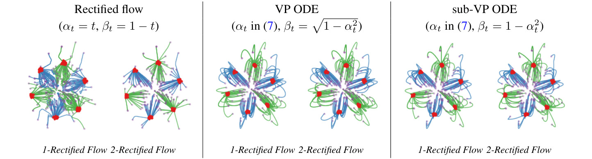<figcaption class="ltx_caption"><span class="ltx_tag ltx_tag_figure">Figure 4: </span>
Comparing rectified flow with VP ODE and sub-VP ODE when <math id="S2.F4.m9" class="ltx_Math" alttext="{\pi}_{0}=\mathcal{N}(0,I)" display="inline" intent=":literal"><semantics><mrow><msub><mi>π</mi><mn>0</mn></msub><mo>=</mo><mrow><mi class="ltx_font_mathcaligraphic">𝒩</mi><mo>⁡</mo><mrow><mo stretchy="false">(</mo><mn>0</mn><mo>,</mo><mi>I</mi><mo stretchy="false">)</mo></mrow></mrow></mrow></semantics></math> (purple dots) and <math id="S2.F4.m10" class="ltx_Math" alttext="{\pi}_{1}" display="inline" intent=":literal"><semantics><msub><mi>π</mi><mn>1</mn></msub></semantics></math> is a low variance Gaussian mixture shown as the red dots.
The linear rectified flow yields nearly straight trajectories with one step of reflow. But the trajectories of VP ODE and sub-VP ODE are curved and can not be straightened by reflowing.
</figcaption><div class="fzh"><b>图 4：</b><math class="ltx_Math" alttext="{\pi}_{0}=\mathcal{N}(0,I)" display="inline" intent=":literal"><semantics><mrow><msub><mi>π</mi><mn>0</mn></msub><mo>=</mo><mrow><mi class="ltx_font_mathcaligraphic">𝒩</mi><mo>⁡</mo><mrow><mo stretchy="false">(</mo><mn>0</mn><mo>,</mo><mi>I</mi><mo stretchy="false">)</mo></mrow></mrow></mrow></semantics></math>（紫色点）、<math class="ltx_Math" alttext="{\pi}_{1}" display="inline" intent=":literal"><semantics><msub><mi>π</mi><mn>1</mn></msub></semantics></math> 为低方差高斯混合（红色点）时，Rectified Flow 与 VP ODE、sub-VP ODE 的比较。线性 Rectified Flow 做一次 reflow 后轨迹就几乎是直线，而 VP ODE 和 sub-VP ODE 的轨迹是弯曲的，reflow 也拉不直。</div></figure></div>
<div class="floatbox"><figure id="S2.F5" class="ltx_figure">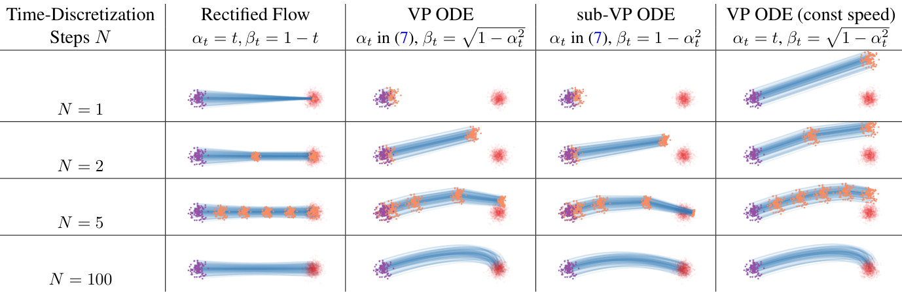<figcaption class="ltx_caption ltx_centering"><span class="ltx_tag ltx_tag_figure">Figure 5: </span>Trajectories of different methods when varying the number of discretization steps <math id="S2.F5.m21" class="ltx_Math" alttext="N" display="inline" intent=":literal"><semantics><mi>N</mi></semantics></math> (purple dots: <math id="S2.F5.m22" class="ltx_Math" alttext="{\pi}_{0}" display="inline" intent=":literal"><semantics><msub><mi>π</mi><mn>0</mn></msub></semantics></math>; red dots: <math id="S2.F5.m23" class="ltx_Math" alttext="{\pi}_{1}" display="inline" intent=":literal"><semantics><msub><mi>π</mi><mn>1</mn></msub></semantics></math>; orangle dots: intermediate steps; blue curves: flow trajectories).
The rectified flow travels in straight lines and progresses uniformly in time;
it generates the mean of <math id="S2.F5.m24" class="ltx_Math" alttext="{\pi}_{1}" display="inline" intent=":literal"><semantics><msub><mi>π</mi><mn>1</mn></msub></semantics></math> when simulated with a single Euler step, and quickly covers the whole distribution <math id="S2.F5.m25" class="ltx_Math" alttext="{\pi}_{1}" display="inline" intent=":literal"><semantics><msub><mi>π</mi><mn>1</mn></msub></semantics></math> with more steps (in this case <math id="S2.F5.m26" class="ltx_Math" alttext="N=2" display="inline" intent=":literal"><semantics><mrow><mi>N</mi><mo>=</mo><mn>2</mn></mrow></semantics></math> is sufficient). In comparison,
VP ODE and sub-VP ODE travel in curves with non-uniform speed: they tend to be slow in the beginning and speed up in the later phase (much of the update happens when <math id="S2.F5.m27" class="ltx_Math" alttext="t{\scriptstyle\gtrapprox}0.5" display="inline" intent=":literal"><semantics><mrow><mi>t</mi><mo mathsize="0.700em">⪆</mo><mn>0.5</mn></mrow></semantics></math>). The non-uniform speed can be avoided by setting <math id="S2.F5.m28" class="ltx_Math" alttext="\alpha_{t}=t" display="inline" intent=":literal"><semantics><mrow><msub><mi>α</mi><mi>t</mi></msub><mo>=</mo><mi>t</mi></mrow></semantics></math> (see the last column).
</figcaption><div class="fzh"><b>图 5：</b>离散化步数 <math class="ltx_Math" alttext="N" display="inline" intent=":literal"><semantics><mi>N</mi></semantics></math> 不同时各方法的轨迹（紫色点：<math class="ltx_Math" alttext="{\pi}_{0}" display="inline" intent=":literal"><semantics><msub><mi>π</mi><mn>0</mn></msub></semantics></math>；红色点：<math class="ltx_Math" alttext="{\pi}_{1}" display="inline" intent=":literal"><semantics><msub><mi>π</mi><mn>1</mn></msub></semantics></math>；橙色点：中间步；蓝色曲线：流的轨迹）。Rectified Flow 沿直线运动，并且随时间匀速推进；用单个 Euler 步模拟时它生成 <math class="ltx_Math" alttext="{\pi}_{1}" display="inline" intent=":literal"><semantics><msub><mi>π</mi><mn>1</mn></msub></semantics></math> 的均值，步数稍多就很快覆盖整个分布 <math class="ltx_Math" alttext="{\pi}_{1}" display="inline" intent=":literal"><semantics><msub><mi>π</mi><mn>1</mn></msub></semantics></math>（这里 <math class="ltx_Math" alttext="N=2" display="inline" intent=":literal"><semantics><mrow><mi>N</mi><mo>=</mo><mn>2</mn></mrow></semantics></math> 就够了）。相比之下，VP ODE 和 sub-VP ODE 沿曲线以不均匀的速度运动：开始时偏慢，后期加速（大部分更新发生在 <math class="ltx_Math" alttext="t{\scriptstyle\gtrapprox}0.5" display="inline" intent=":literal"><semantics><mrow><mi>t</mi><mo mathsize="0.700em">⪆</mo><mn>0.5</mn></mrow></semantics></math> 时）。令 <math class="ltx_Math" alttext="\alpha_{t}=t" display="inline" intent=":literal"><semantics><mrow><msub><mi>α</mi><mi>t</mi></msub><mo>=</mo><mi>t</mi></mrow></semantics></math> 可以避免速度不均匀（见最后一列）。</div></figure></div>
<span class="lxa" id="S2.SS3.SSS1.Px1"></span><h4 class="ph" id="svp-ode-and-sub-vp-ode">VP ODE and sub-VP ODE<span class="hzh">VP ODE 与 sub-VP ODE</span></h4>
<div class="blk">
    
    <p class="pp">The VP ODE and sub-VP ODE
of <cite class="ltx_cite ltx_citemacro_cite">[<a href="#bib.bib73" title="" class="ltx_ref">73</a>]</cite>
use the following shared <math id="S2.SS3.SSS1.Px1.p1.m1" class="ltx_Math" alttext="\alpha_{t}" display="inline" intent=":literal"><semantics><msub><mi>α</mi><mi>t</mi></msub></semantics></math>:</p>
    <p class="pp zh" lang="zh-Hans"><cite class="ltx_cite ltx_citemacro_cite">[<a href="#bib.bib73" title="" class="ltx_ref">73</a>]</cite> 的 VP ODE 和 sub-VP ODE 共用如下的 <math class="ltx_Math" alttext="\alpha_{t}" display="inline" intent=":literal"><semantics><msub><mi>α</mi><mi>t</mi></msub></semantics></math>：</p>
    
  </div>
<div class="eqbox"><table id="S2.EGx9" class="ltx_equationgroup ltx_eqn_align ltx_eqn_table">

<tbody id="S2.E7"><tr class="ltx_equation ltx_eqn_row ltx_align_baseline">
<td class="ltx_eqn_cell ltx_eqn_center_padleft"></td>
<td class="ltx_td ltx_align_right ltx_eqn_cell"><math id="S2.E7.m1" class="ltx_math_unparsed" alttext="\displaystyle\text{(sub-)VP ODE:}\penalty\ \penalty\ \penalty\ \penalty\ \alpha_{t}=\exp\left(-\frac{1}{4}a(1-t)^{2}-\frac{1}{2}b(1-t)\right);" display="inline" intent=":literal"><semantics><mrow><mtext>(sub-)VP ODE:</mtext><msub><mi>α</mi><mi>t</mi></msub><mo>=</mo><mi>exp</mi><mrow><mo>(</mo><mo lspace="0em">−</mo><mstyle displaystyle="true"><mfrac><mn>1</mn><mn>4</mn></mfrac></mstyle><mi>a</mi><msup><mrow><mo stretchy="false">(</mo><mn>1</mn><mo>−</mo><mi>t</mi><mo stretchy="false">)</mo></mrow><mn>2</mn></msup><mo>−</mo><mstyle displaystyle="true"><mfrac><mn>1</mn><mn>2</mn></mfrac></mstyle><mi>b</mi><mrow><mo stretchy="false">(</mo><mn>1</mn><mo>−</mo><mi>t</mi><mo stretchy="false">)</mo></mrow><mo>)</mo></mrow><mo>;</mo></mrow></semantics></math></td>
<td class="ltx_td ltx_eqn_cell"></td>
<td class="ltx_td ltx_align_right ltx_eqn_cell"><span id="S2.E7.5.1" class="ltx_text ltx_markedasmath">default values: <math id="S2.E7.m2.m1" class="ltx_Math" alttext="a=19.9" display="inline" intent=":literal"><semantics><mrow><mi>a</mi><mo>=</mo><mn>19.9</mn></mrow></semantics></math>, <math id="S2.E7.m2.m2" class="ltx_Math" alttext="b=0.1" display="inline" intent=":literal"><semantics><mrow><mi>b</mi><mo>=</mo><mn>0.1</mn></mrow></semantics></math>,</span></td>
<td class="ltx_eqn_cell ltx_eqn_center_padright"></td>
<td rowspan="1" class="ltx_eqn_cell ltx_eqn_eqno ltx_align_middle ltx_align_right"><span class="ltx_tag ltx_tag_equation ltx_align_right">(7)</span></td></tr></tbody>
</table></div>
<div class="blk">
    
    <p class="pp">where the default values of <math id="S2.SS3.SSS1.Px1.p1.m2" class="ltx_Math" alttext="a,b" display="inline" intent=":literal"><semantics><mrow><mi>a</mi><mo>,</mo><mi>b</mi></mrow></semantics></math> are chosen to match the continuous time limit of the shared training procedure of DDIM and DDPM.
The difference of VP ODE and sub-VP ODE is on the choice of <math id="S2.SS3.SSS1.Px1.p1.m3" class="ltx_Math" alttext="\beta_{t}" display="inline" intent=":literal"><semantics><msub><mi>β</mi><mi>t</mi></msub></semantics></math>, given as follows:</p>
    <p class="pp zh" lang="zh-Hans">其中 <math class="ltx_Math" alttext="a,b" display="inline" intent=":literal"><semantics><mrow><mi>a</mi><mo>,</mo><mi>b</mi></mrow></semantics></math> 的默认值是为了与 DDIM 和 DDPM 共用的训练流程的连续时间极限相匹配。VP ODE 与 sub-VP ODE 的区别在于 <math class="ltx_Math" alttext="\beta_{t}" display="inline" intent=":literal"><semantics><msub><mi>β</mi><mi>t</mi></msub></semantics></math> 的选择，如下：</p>
    
  </div>
<div class="eqbox"><table id="S2.EGx10" class="ltx_equationgroup ltx_eqn_align ltx_eqn_table">

<tbody id="S2.E8"><tr class="ltx_equation ltx_eqn_row ltx_align_baseline">
<td class="ltx_eqn_cell ltx_eqn_center_padleft"></td>
<td class="ltx_td ltx_align_right ltx_eqn_cell"><math id="S2.E8.m1" class="ltx_math_unparsed" alttext="\displaystyle\text{VP ODE:\penalty\ \penalty\ \penalty\ }\beta_{t}=\sqrt{1-\alpha_{t}^{2}}," display="inline" intent=":literal"><semantics><mrow><mtext>VP ODE: </mtext><mi>β</mi><msub><mrow></mrow><mi>t</mi></msub><mo>=</mo><msqrt><mrow><mn>1</mn><mo>−</mo><msubsup><mi>α</mi><mi>t</mi><mn>2</mn></msubsup></mrow></msqrt><mo>,</mo></mrow></semantics></math></td>
<td class="ltx_td ltx_eqn_cell"></td>
<td class="ltx_td ltx_align_right ltx_eqn_cell"><math id="S2.E8.m2" class="ltx_math_unparsed" alttext="\displaystyle\text{sub-VP ODE:\penalty\ \penalty\ \penalty\ }\beta_{t}={1-\alpha_{t}^{2}}." display="inline" intent=":literal"><semantics><mrow><mtext>sub-VP ODE: </mtext><mi>β</mi><msub><mrow></mrow><mi>t</mi></msub><mo>=</mo><mn>1</mn><mo>−</mo><mi>α</mi><msub><mrow></mrow><mi>t</mi></msub><msup><mrow></mrow><mn>2</mn></msup><mo lspace="0em">.</mo></mrow></semantics></math></td>
<td class="ltx_eqn_cell ltx_eqn_center_padright"></td>
<td rowspan="1" class="ltx_eqn_cell ltx_eqn_eqno ltx_align_middle ltx_align_right"><span class="ltx_tag ltx_tag_equation ltx_align_right">(8)</span></td></tr></tbody>
</table></div>
<div class="blk">
    
    <p class="pp">As <math id="S2.SS3.SSS1.Px1.p2.m1" class="ltx_Math" alttext="\beta_{0}\approx 1" display="inline" intent=":literal"><semantics><mrow><msub><mi>β</mi><mn>0</mn></msub><mo>≈</mo><mn>1</mn></mrow></semantics></math> in both VP and sub-VP ODE,
the <math id="S2.SS3.SSS1.Px1.p2.m2" class="ltx_Math" alttext="{\pi}_{0}" display="inline" intent=":literal"><semantics><msub><mi>π</mi><mn>0</mn></msub></semantics></math> in both cases are taken as <math id="S2.SS3.SSS1.Px1.p2.m3" class="ltx_Math" alttext="\mathcal{N}(0,I)" display="inline" intent=":literal"><semantics><mrow><mi class="ltx_font_mathcaligraphic">𝒩</mi><mo>⁡</mo><mrow><mo stretchy="false">(</mo><mn>0</mn><mo>,</mo><mi>I</mi><mo stretchy="false">)</mo></mrow></mrow></semantics></math>.</p>
    <p class="pp zh" lang="zh-Hans">由于 VP 和 sub-VP ODE 中都有 <math class="ltx_Math" alttext="\beta_{0}\approx 1" display="inline" intent=":literal"><semantics><mrow><msub><mi>β</mi><mn>0</mn></msub><mo>≈</mo><mn>1</mn></mrow></semantics></math>，两种情形下的 <math class="ltx_Math" alttext="{\pi}_{0}" display="inline" intent=":literal"><semantics><msub><mi>π</mi><mn>0</mn></msub></semantics></math> 都取为 <math class="ltx_Math" alttext="\mathcal{N}(0,I)" display="inline" intent=":literal"><semantics><mrow><mi class="ltx_font_mathcaligraphic">𝒩</mi><mo>⁡</mo><mrow><mo stretchy="false">(</mo><mn>0</mn><mo>,</mo><mi>I</mi><mo stretchy="false">)</mo></mrow></mrow></semantics></math>。</p>
    
  </div>
<div class="blk">
    
    <p class="pp">The choices
of <math id="S2.SS3.SSS1.Px1.p3.m1" class="ltx_Math" alttext="\alpha_{t},\beta_{t}" display="inline" intent=":literal"><semantics><mrow><msub><mi>α</mi><mi>t</mi></msub><mo>,</mo><msub><mi>β</mi><mi>t</mi></msub></mrow></semantics></math>
above are the consequence of the
SDE-based derivation in <cite class="ltx_cite ltx_citemacro_cite">[<a href="#bib.bib73" title="" class="ltx_ref">73</a>]</cite>. However,
they are not well-motivated when we exam the path properties of the induced
ODEs:</p>
    <p class="pp zh" lang="zh-Hans">上面 <math class="ltx_Math" alttext="\alpha_{t},\beta_{t}" display="inline" intent=":literal"><semantics><mrow><msub><mi>α</mi><mi>t</mi></msub><mo>,</mo><msub><mi>β</mi><mi>t</mi></msub></mrow></semantics></math> 的选择是 <cite class="ltx_cite ltx_citemacro_cite">[<a href="#bib.bib73" title="" class="ltx_ref">73</a>]</cite> 基于 SDE 推导的结果。然而，考察所诱导的 ODE 的路径性质时，这些选择并没有充分的理由：</p>
    
  </div>
<div class="blk">
    
    <p class="pp"><em id="S2.SS3.SSS1.Px1.p4.1.1" class="ltx_emph ltx_font_italic"><math id="S2.SS3.SSS1.Px1.p4.m1" class="ltx_Math" alttext="\bullet" display="inline" intent=":literal"><semantics><mo>∙</mo></semantics></math> Non-straight paths:</em>
Due to choices of <math id="S2.SS3.SSS1.Px1.p4.m2" class="ltx_Math" alttext="\beta_{t}" display="inline" intent=":literal"><semantics><msub><mi>β</mi><mi>t</mi></msub></semantics></math> in (<a href="#S2.E8" title="In VP ODE and sub-VP ODE ‣ 2.3.1 Probability Flow ODEs and DDIM ‣ 2.3 A Nonlinear Extension ‣ 2 Method ‣ Flow Straight and Fast: Learning to Generate and Transfer Data with Rectified Flow" class="ltx_ref"><span class="ltx_text ltx_ref_tag">8</span></a>), the trajectories of VP ODE and sub-VP ODE are curved in general,
and can not be straightened by the reflow procedure.
We should choose
<math id="S2.SS3.SSS1.Px1.p4.m3" class="ltx_Math" alttext="\beta_{t}=1-\alpha_{t}" display="inline" intent=":literal"><semantics><mrow><msub><mi>β</mi><mi>t</mi></msub><mo>=</mo><mrow><mn>1</mn><mo>−</mo><msub><mi>α</mi><mi>t</mi></msub></mrow></mrow></semantics></math> to induce straight paths.</p>
    <p class="pp zh" lang="zh-Hans"><math class="ltx_Math" alttext="\bullet" display="inline" intent=":literal"><semantics><mo>∙</mo></semantics></math> <b>路径不直：</b>由于 (<a href="#S2.E8" title="In VP ODE and sub-VP ODE ‣ 2.3.1 Probability Flow ODEs and DDIM ‣ 2.3 A Nonlinear Extension ‣ 2 Method ‣ Flow Straight and Fast: Learning to Generate and Transfer Data with Rectified Flow" class="ltx_ref"><span class="ltx_text ltx_ref_tag">8</span></a>) 中 <math class="ltx_Math" alttext="\beta_{t}" display="inline" intent=":literal"><semantics><msub><mi>β</mi><mi>t</mi></msub></semantics></math> 的选择，VP ODE 和 sub-VP ODE 的轨迹一般是弯曲的，而且无法用 reflow 过程拉直。要得到直线路径，应该取 <math class="ltx_Math" alttext="\beta_{t}=1-\alpha_{t}" display="inline" intent=":literal"><semantics><mrow><msub><mi>β</mi><mi>t</mi></msub><mo>=</mo><mrow><mn>1</mn><mo>−</mo><msub><mi>α</mi><mi>t</mi></msub></mrow></mrow></semantics></math>。</p>
    
  </div>
<div class="floatbox"><figure id="S2.F6" class="ltx_figure ltx_align_floatright" style="width:39%;">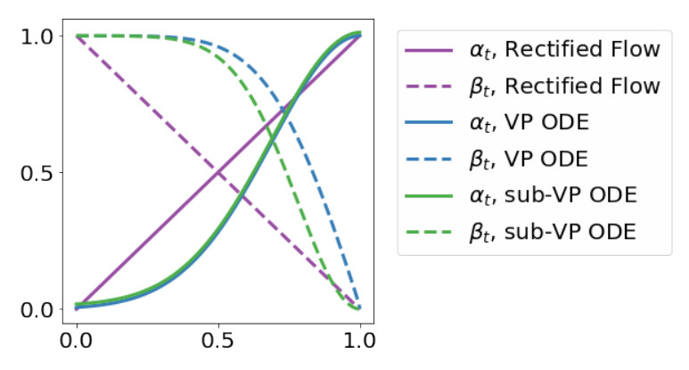<figcaption class="ltx_caption"><span class="ltx_tag ltx_tag_figure">Figure 6: </span><math id="S2.F6.m3" class="ltx_Math" alttext="t" display="inline" intent=":literal"><semantics><mi>t</mi></semantics></math> vs. <math id="S2.F6.m4" class="ltx_Math" alttext="\alpha_{t},\beta_{t}" display="inline" intent=":literal"><semantics><mrow><msub><mi>α</mi><mi>t</mi></msub><mo>,</mo><msub><mi>β</mi><mi>t</mi></msub></mrow></semantics></math> of different methods.
</figcaption><div class="fzh"><b>图 6：</b>各方法的 <math class="ltx_Math" alttext="\alpha_{t},\beta_{t}" display="inline" intent=":literal"><semantics><mrow><msub><mi>α</mi><mi>t</mi></msub><mo>,</mo><msub><mi>β</mi><mi>t</mi></msub></mrow></semantics></math> 随 <math class="ltx_Math" alttext="t" display="inline" intent=":literal"><semantics><mi>t</mi></semantics></math> 的变化。</div></figure></div>
<div class="blk">
    
    <p class="pp"><em id="S2.SS3.SSS1.Px1.p5.1.1" class="ltx_emph ltx_font_italic"><math id="S2.SS3.SSS1.Px1.p5.m1" class="ltx_Math" alttext="\bullet" display="inline" intent=":literal"><semantics><mo>∙</mo></semantics></math> Non-uniform speed:</em>
The exponential form of <math id="S2.SS3.SSS1.Px1.p5.m2" class="ltx_Math" alttext="\alpha_{t}" display="inline" intent=":literal"><semantics><msub><mi>α</mi><mi>t</mi></msub></semantics></math> in (<a href="#S2.E7" title="In VP ODE and sub-VP ODE ‣ 2.3.1 Probability Flow ODEs and DDIM ‣ 2.3 A Nonlinear Extension ‣ 2 Method ‣ Flow Straight and Fast: Learning to Generate and Transfer Data with Rectified Flow" class="ltx_ref"><span class="ltx_text ltx_ref_tag">7</span></a>)
is a consequence of using Ornstein–Uhlenbeck processes in the derivation of SDE models <cite class="ltx_cite ltx_citemacro_cite">[<a href="#bib.bib73" title="" class="ltx_ref">73</a>, <a href="#bib.bib23" title="" class="ltx_ref">23</a>]</cite>.
However, there is no clear advantage of using (<a href="#S2.E7" title="In VP ODE and sub-VP ODE ‣ 2.3.1 Probability Flow ODEs and DDIM ‣ 2.3 A Nonlinear Extension ‣ 2 Method ‣ Flow Straight and Fast: Learning to Generate and Transfer Data with Rectified Flow" class="ltx_ref"><span class="ltx_text ltx_ref_tag">7</span></a>) for ODEs.
As shown in Figure <a href="#S2.F5" title="Figure 5 ‣ 2.3.1 Probability Flow ODEs and DDIM ‣ 2.3 A Nonlinear Extension ‣ 2 Method ‣ Flow Straight and Fast: Learning to Generate and Transfer Data with Rectified Flow" class="ltx_ref"><span class="ltx_text ltx_ref_tag">5</span></a>,
the <math id="S2.SS3.SSS1.Px1.p5.m3" class="ltx_Math" alttext="\alpha_{t}" display="inline" intent=":literal"><semantics><msub><mi>α</mi><mi>t</mi></msub></semantics></math> and <math id="S2.SS3.SSS1.Px1.p5.m4" class="ltx_Math" alttext="\beta_{t}" display="inline" intent=":literal"><semantics><msub><mi>β</mi><mi>t</mi></msub></semantics></math> of VP and sub-VP ODE
change slowly in the early phase (<math id="S2.SS3.SSS1.Px1.p5.m5" class="ltx_Math" alttext="t{\scriptstyle\lessapprox}0.5" display="inline" intent=":literal"><semantics><mrow><mi>t</mi><mo mathsize="0.700em">⪅</mo><mn>0.5</mn></mrow></semantics></math>).
As a result,
the flow also moves slowly in beginning
and hence most of the updates are concentrated in the later phase.
Such non-uniform update speed,
in addition to the non-straight paths,
make VP ODE and sub-VP ODE perform sub-optimally
when using large step sizes, even
for transport between simple spherical Gaussian distributions (see Figure <a href="#S2.F5" title="Figure 5 ‣ 2.3.1 Probability Flow ODEs and DDIM ‣ 2.3 A Nonlinear Extension ‣ 2 Method ‣ Flow Straight and Fast: Learning to Generate and Transfer Data with Rectified Flow" class="ltx_ref"><span class="ltx_text ltx_ref_tag">5</span></a>).
As we show in the last column of Figure <a href="#S2.F5" title="Figure 5 ‣ 2.3.1 Probability Flow ODEs and DDIM ‣ 2.3 A Nonlinear Extension ‣ 2 Method ‣ Flow Straight and Fast: Learning to Generate and Transfer Data with Rectified Flow" class="ltx_ref"><span class="ltx_text ltx_ref_tag">5</span></a>,
changing the exponential <math id="S2.SS3.SSS1.Px1.p5.m6" class="ltx_Math" alttext="\alpha_{t}" display="inline" intent=":literal"><semantics><msub><mi>α</mi><mi>t</mi></msub></semantics></math> to the linear function <math id="S2.SS3.SSS1.Px1.p5.m7" class="ltx_Math" alttext="\alpha_{t}=t" display="inline" intent=":literal"><semantics><mrow><msub><mi>α</mi><mi>t</mi></msub><mo>=</mo><mi>t</mi></mrow></semantics></math> in VP ODE
allows us to get a uniform update speed while
preserving the same continuous-time trajectories.</p>
    <p class="pp zh" lang="zh-Hans"><math class="ltx_Math" alttext="\bullet" display="inline" intent=":literal"><semantics><mo>∙</mo></semantics></math> <b>速度不均匀：</b>(<a href="#S2.E7" title="In VP ODE and sub-VP ODE ‣ 2.3.1 Probability Flow ODEs and DDIM ‣ 2.3 A Nonlinear Extension ‣ 2 Method ‣ Flow Straight and Fast: Learning to Generate and Transfer Data with Rectified Flow" class="ltx_ref"><span class="ltx_text ltx_ref_tag">7</span></a>) 中 <math class="ltx_Math" alttext="\alpha_{t}" display="inline" intent=":literal"><semantics><msub><mi>α</mi><mi>t</mi></msub></semantics></math> 的指数形式，源于 SDE 模型推导中使用的 Ornstein–Uhlenbeck 过程 <cite class="ltx_cite ltx_citemacro_cite">[<a href="#bib.bib73" title="" class="ltx_ref">73</a>, <a href="#bib.bib23" title="" class="ltx_ref">23</a>]</cite>。然而对 ODE 来说，使用 (<a href="#S2.E7" title="In VP ODE and sub-VP ODE ‣ 2.3.1 Probability Flow ODEs and DDIM ‣ 2.3 A Nonlinear Extension ‣ 2 Method ‣ Flow Straight and Fast: Learning to Generate and Transfer Data with Rectified Flow" class="ltx_ref"><span class="ltx_text ltx_ref_tag">7</span></a>) 并没有明显的好处。如图 <a href="#S2.F5" title="Figure 5 ‣ 2.3.1 Probability Flow ODEs and DDIM ‣ 2.3 A Nonlinear Extension ‣ 2 Method ‣ Flow Straight and Fast: Learning to Generate and Transfer Data with Rectified Flow" class="ltx_ref"><span class="ltx_text ltx_ref_tag">5</span></a> 所示，VP 和 sub-VP ODE 的 <math class="ltx_Math" alttext="\alpha_{t}" display="inline" intent=":literal"><semantics><msub><mi>α</mi><mi>t</mi></msub></semantics></math> 和 <math class="ltx_Math" alttext="\beta_{t}" display="inline" intent=":literal"><semantics><msub><mi>β</mi><mi>t</mi></msub></semantics></math> 在前期（<math class="ltx_Math" alttext="t{\scriptstyle\lessapprox}0.5" display="inline" intent=":literal"><semantics><mrow><mi>t</mi><mo mathsize="0.700em">⪅</mo><mn>0.5</mn></mrow></semantics></math>）变化很慢。结果流在开始时也移动得很慢，大部分更新集中在后期。这种不均匀的更新速度，加上路径不直，使 VP ODE 和 sub-VP ODE 在大步长下表现不佳，即使只是在简单的球形高斯分布之间传输也是如此（见图 <a href="#S2.F5" title="Figure 5 ‣ 2.3.1 Probability Flow ODEs and DDIM ‣ 2.3 A Nonlinear Extension ‣ 2 Method ‣ Flow Straight and Fast: Learning to Generate and Transfer Data with Rectified Flow" class="ltx_ref"><span class="ltx_text ltx_ref_tag">5</span></a>）。如图 <a href="#S2.F5" title="Figure 5 ‣ 2.3.1 Probability Flow ODEs and DDIM ‣ 2.3 A Nonlinear Extension ‣ 2 Method ‣ Flow Straight and Fast: Learning to Generate and Transfer Data with Rectified Flow" class="ltx_ref"><span class="ltx_text ltx_ref_tag">5</span></a> 最后一列所示，把 VP ODE 中指数形式的 <math class="ltx_Math" alttext="\alpha_{t}" display="inline" intent=":literal"><semantics><msub><mi>α</mi><mi>t</mi></msub></semantics></math> 换成线性函数 <math class="ltx_Math" alttext="\alpha_{t}=t" display="inline" intent=":literal"><semantics><mrow><msub><mi>α</mi><mi>t</mi></msub><mo>=</mo><mi>t</mi></mrow></semantics></math>，就能在保持连续时间轨迹不变的同时得到均匀的更新速度。</p>
    
  </div>
<span class="lxa" id="S2.SS3.SSS1.Px2"></span><h4 class="ph" id="sve-ode">VE ODE<span class="hzh">VE ODE</span></h4>
<div class="blk">
    
    <p class="pp">The VE ODE of <cite class="ltx_cite ltx_citemacro_cite">[<a href="#bib.bib73" title="" class="ltx_ref">73</a>]</cite>
uses
<math id="S2.SS3.SSS1.Px2.p1.m1" class="ltx_Math" alttext="\alpha_{t}=1" display="inline" intent=":literal"><semantics><mrow><msub><mi>α</mi><mi>t</mi></msub><mo>=</mo><mn>1</mn></mrow></semantics></math> and
<math id="S2.SS3.SSS1.Px2.p1.m2" class="ltx_Math" alttext="\beta_{t}=\sigma_{\min}\sqrt{r^{2(1-t)}-1}" display="inline" intent=":literal"><semantics><mrow><msub><mi>β</mi><mi>t</mi></msub><mo>=</mo><mrow><msub><mi>σ</mi><mi>min</mi></msub><mo lspace="0em" rspace="0em">​</mo><msqrt><mrow><msup><mi>r</mi><mrow><mn>2</mn><mo lspace="0em" rspace="0em">​</mo><mrow><mo stretchy="false">(</mo><mrow><mn>1</mn><mo>−</mo><mi>t</mi></mrow><mo stretchy="false">)</mo></mrow></mrow></msup><mo>−</mo><mn>1</mn></mrow></msqrt></mrow></mrow></semantics></math>
where <math id="S2.SS3.SSS1.Px2.p1.m3" class="ltx_Math" alttext="\sigma_{\min}=0.01" display="inline" intent=":literal"><semantics><mrow><msub><mi>σ</mi><mi>min</mi></msub><mo>=</mo><mn>0.01</mn></mrow></semantics></math> by default <math id="S2.SS3.SSS1.Px2.p1.m4" class="ltx_Math" alttext="r" display="inline" intent=":literal"><semantics><mi>r</mi></semantics></math> is set such that <math id="S2.SS3.SSS1.Px2.p1.m5" class="ltx_Math" alttext="\sigma_{\max}\coloneqq r\sigma_{\min}" display="inline" intent=":literal"><semantics><mrow><msub><mi>σ</mi><mi>max</mi></msub><mo>≔</mo><mrow><mi>r</mi><mo lspace="0em" rspace="0em">​</mo><msub><mi>σ</mi><mi>min</mi></msub></mrow></mrow></semantics></math> is as large as the maximum Euclidean distance between all pairs of training data points from <math id="S2.SS3.SSS1.Px2.p1.m6" class="ltx_Math" alttext="{\pi}_{1}" display="inline" intent=":literal"><semantics><msub><mi>π</mi><mn>1</mn></msub></semantics></math> (Technique 1 of <cite class="ltx_cite ltx_citemacro_cite">[<a href="#bib.bib72" title="" class="ltx_ref">72</a>]</cite>).
Assume that <math id="S2.SS3.SSS1.Px2.p1.m7" class="ltx_Math" alttext="\sigma_{\max}^{2}" display="inline" intent=":literal"><semantics><msubsup><mi>σ</mi><mi>max</mi><mn>2</mn></msubsup></semantics></math>
is much larger than both <math id="S2.SS3.SSS1.Px2.p1.m8" class="ltx_Math" alttext="\sigma_{\min}^{2}" display="inline" intent=":literal"><semantics><msubsup><mi>σ</mi><mi>min</mi><mn>2</mn></msubsup></semantics></math> and the variance of <math id="S2.SS3.SSS1.Px2.p1.m9" class="ltx_Math" alttext="X_{1}" display="inline" intent=":literal"><semantics><msub><mi>X</mi><mn>1</mn></msub></semantics></math>,
then <math id="S2.SS3.SSS1.Px2.p1.m10" class="ltx_Math" alttext="X_{0}=X_{1}+\beta_{0}\xi\approx\sigma_{\max}\xi" display="inline" intent=":literal"><semantics><mrow><msub><mi>X</mi><mn>0</mn></msub><mo>=</mo><mrow><msub><mi>X</mi><mn>1</mn></msub><mo>+</mo><mrow><msub><mi>β</mi><mn>0</mn></msub><mo lspace="0em" rspace="0em">​</mo><mi>ξ</mi></mrow></mrow><mo>≈</mo><mrow><msub><mi>σ</mi><mi>max</mi></msub><mo lspace="0em" rspace="0em">​</mo><mi>ξ</mi></mrow></mrow></semantics></math>, and
we can set the initial distribution to be <math id="S2.SS3.SSS1.Px2.p1.m11" class="ltx_Math" alttext="{\pi}_{0}\sim\mathcal{N}(0,\sigma_{\max}^{2}I)" display="inline" intent=":literal"><semantics><mrow><msub><mi>π</mi><mn>0</mn></msub><mo>∼</mo><mrow><mi class="ltx_font_mathcaligraphic">𝒩</mi><mo>⁡</mo><mrow><mo stretchy="false">(</mo><mn>0</mn><mo>,</mo><mrow><msubsup><mi>σ</mi><mi>max</mi><mn>2</mn></msubsup><mo lspace="0em" rspace="0em">​</mo><mi>I</mi></mrow><mo stretchy="false">)</mo></mrow></mrow></mrow></semantics></math>, which has much larger variance than <math id="S2.SS3.SSS1.Px2.p1.m12" class="ltx_Math" alttext="{\pi}_{1}" display="inline" intent=":literal"><semantics><msub><mi>π</mi><mn>1</mn></msub></semantics></math>.
Hence, VE ODE can not be applied to (and not shown in) the toys in Figure <a href="#S2.F4" title="Figure 4 ‣ 2.3.1 Probability Flow ODEs and DDIM ‣ 2.3 A Nonlinear Extension ‣ 2 Method ‣ Flow Straight and Fast: Learning to Generate and Transfer Data with Rectified Flow" class="ltx_ref"><span class="ltx_text ltx_ref_tag">4</span></a> and Figure <a href="#S2.F5" title="Figure 5 ‣ 2.3.1 Probability Flow ODEs and DDIM ‣ 2.3 A Nonlinear Extension ‣ 2 Method ‣ Flow Straight and Fast: Learning to Generate and Transfer Data with Rectified Flow" class="ltx_ref"><span class="ltx_text ltx_ref_tag">5</span></a>.
As the case of (sub-)VP ODE, the restriction
on <math id="S2.SS3.SSS1.Px2.p1.m13" class="ltx_Math" alttext="\xi" display="inline" intent=":literal"><semantics><mi>ξ</mi></semantics></math> is in fact unnecessary and requirement that <math id="S2.SS3.SSS1.Px2.p1.m14" class="ltx_Math" alttext="\sigma_{\max}" display="inline" intent=":literal"><semantics><msub><mi>σ</mi><mi>max</mi></msub></semantics></math> is unnatural viewed from our framework.
On the other hand, the trajectories of <math id="S2.SS3.SSS1.Px2.p1.m15" class="ltx_Math" alttext="X_{t}" display="inline" intent=":literal"><semantics><msub><mi>X</mi><mi>t</mi></msub></semantics></math> in VE ODE are indeed straight lines,
because the direction of <math id="S2.SS3.SSS1.Px2.p1.m16" class="ltx_Math" alttext="\dot{X}_{t}=\dot{\beta}_{t}\xi" display="inline" intent=":literal"><semantics><mrow><msub><mover accent="true"><mi>X</mi><mo>˙</mo></mover><mi>t</mi></msub><mo>=</mo><mrow><msub><mover accent="true"><mi>β</mi><mo>˙</mo></mover><mi>t</mi></msub><mo lspace="0em" rspace="0em">​</mo><mi>ξ</mi></mrow></mrow></semantics></math> is always the same as <math id="S2.SS3.SSS1.Px2.p1.m17" class="ltx_Math" alttext="\xi" display="inline" intent=":literal"><semantics><mi>ξ</mi></semantics></math>. However, the choice of <math id="S2.SS3.SSS1.Px2.p1.m18" class="ltx_Math" alttext="\beta_{t}" display="inline" intent=":literal"><semantics><msub><mi>β</mi><mi>t</mi></msub></semantics></math> causes a non-uniform speed issue similar to that of (sub-)VP ODE.</p>
    <p class="pp zh" lang="zh-Hans"><cite class="ltx_cite ltx_citemacro_cite">[<a href="#bib.bib73" title="" class="ltx_ref">73</a>]</cite> 的 VE ODE 使用 <math class="ltx_Math" alttext="\alpha_{t}=1" display="inline" intent=":literal"><semantics><mrow><msub><mi>α</mi><mi>t</mi></msub><mo>=</mo><mn>1</mn></mrow></semantics></math> 和 <math class="ltx_Math" alttext="\beta_{t}=\sigma_{\min}\sqrt{r^{2(1-t)}-1}" display="inline" intent=":literal"><semantics><mrow><msub><mi>β</mi><mi>t</mi></msub><mo>=</mo><mrow><msub><mi>σ</mi><mi>min</mi></msub><mo lspace="0em" rspace="0em">​</mo><msqrt><mrow><msup><mi>r</mi><mrow><mn>2</mn><mo lspace="0em" rspace="0em">​</mo><mrow><mo stretchy="false">(</mo><mrow><mn>1</mn><mo>−</mo><mi>t</mi></mrow><mo stretchy="false">)</mo></mrow></mrow></msup><mo>−</mo><mn>1</mn></mrow></msqrt></mrow></mrow></semantics></math>，其中默认 <math class="ltx_Math" alttext="\sigma_{\min}=0.01" display="inline" intent=":literal"><semantics><mrow><msub><mi>σ</mi><mi>min</mi></msub><mo>=</mo><mn>0.01</mn></mrow></semantics></math>，<math class="ltx_Math" alttext="r" display="inline" intent=":literal"><semantics><mi>r</mi></semantics></math> 的取值使 <math class="ltx_Math" alttext="\sigma_{\max}\coloneqq r\sigma_{\min}" display="inline" intent=":literal"><semantics><mrow><msub><mi>σ</mi><mi>max</mi></msub><mo>≔</mo><mrow><mi>r</mi><mo lspace="0em" rspace="0em">​</mo><msub><mi>σ</mi><mi>min</mi></msub></mrow></mrow></semantics></math> 与 <math class="ltx_Math" alttext="{\pi}_{1}" display="inline" intent=":literal"><semantics><msub><mi>π</mi><mn>1</mn></msub></semantics></math> 中所有训练数据点对之间的最大欧氏距离一样大（<cite class="ltx_cite ltx_citemacro_cite">[<a href="#bib.bib72" title="" class="ltx_ref">72</a>]</cite> 的技巧 1）。假设 <math class="ltx_Math" alttext="\sigma_{\max}^{2}" display="inline" intent=":literal"><semantics><msubsup><mi>σ</mi><mi>max</mi><mn>2</mn></msubsup></semantics></math> 远大于 <math class="ltx_Math" alttext="\sigma_{\min}^{2}" display="inline" intent=":literal"><semantics><msubsup><mi>σ</mi><mi>min</mi><mn>2</mn></msubsup></semantics></math> 和 <math class="ltx_Math" alttext="X_{1}" display="inline" intent=":literal"><semantics><msub><mi>X</mi><mn>1</mn></msub></semantics></math> 的方差，那么 <math class="ltx_Math" alttext="X_{0}=X_{1}+\beta_{0}\xi\approx\sigma_{\max}\xi" display="inline" intent=":literal"><semantics><mrow><msub><mi>X</mi><mn>0</mn></msub><mo>=</mo><mrow><msub><mi>X</mi><mn>1</mn></msub><mo>+</mo><mrow><msub><mi>β</mi><mn>0</mn></msub><mo lspace="0em" rspace="0em">​</mo><mi>ξ</mi></mrow></mrow><mo>≈</mo><mrow><msub><mi>σ</mi><mi>max</mi></msub><mo lspace="0em" rspace="0em">​</mo><mi>ξ</mi></mrow></mrow></semantics></math>，可以把初始分布设为 <math class="ltx_Math" alttext="{\pi}_{0}\sim\mathcal{N}(0,\sigma_{\max}^{2}I)" display="inline" intent=":literal"><semantics><mrow><msub><mi>π</mi><mn>0</mn></msub><mo>∼</mo><mrow><mi class="ltx_font_mathcaligraphic">𝒩</mi><mo>⁡</mo><mrow><mo stretchy="false">(</mo><mn>0</mn><mo>,</mo><mrow><msubsup><mi>σ</mi><mi>max</mi><mn>2</mn></msubsup><mo lspace="0em" rspace="0em">​</mo><mi>I</mi></mrow><mo stretchy="false">)</mo></mrow></mrow></mrow></semantics></math>，其方差比 <math class="ltx_Math" alttext="{\pi}_{1}" display="inline" intent=":literal"><semantics><msub><mi>π</mi><mn>1</mn></msub></semantics></math> 大得多。因此 VE ODE 无法用于（也没有画在）图 <a href="#S2.F4" title="Figure 4 ‣ 2.3.1 Probability Flow ODEs and DDIM ‣ 2.3 A Nonlinear Extension ‣ 2 Method ‣ Flow Straight and Fast: Learning to Generate and Transfer Data with Rectified Flow" class="ltx_ref"><span class="ltx_text ltx_ref_tag">4</span></a> 和图 <a href="#S2.F5" title="Figure 5 ‣ 2.3.1 Probability Flow ODEs and DDIM ‣ 2.3 A Nonlinear Extension ‣ 2 Method ‣ Flow Straight and Fast: Learning to Generate and Transfer Data with Rectified Flow" class="ltx_ref"><span class="ltx_text ltx_ref_tag">5</span></a> 的简单例子中。和 (sub-)VP ODE 一样，从我们的框架看，对 <math class="ltx_Math" alttext="\xi" display="inline" intent=":literal"><semantics><mi>ξ</mi></semantics></math> 的限制其实没有必要，对 <math class="ltx_Math" alttext="\sigma_{\max}" display="inline" intent=":literal"><semantics><msub><mi>σ</mi><mi>max</mi></msub></semantics></math> 的要求也不自然。另一方面，VE ODE 中 <math class="ltx_Math" alttext="X_{t}" display="inline" intent=":literal"><semantics><msub><mi>X</mi><mi>t</mi></msub></semantics></math> 的轨迹确实是直线，因为 <math class="ltx_Math" alttext="\dot{X}_{t}=\dot{\beta}_{t}\xi" display="inline" intent=":literal"><semantics><mrow><msub><mover accent="true"><mi>X</mi><mo>˙</mo></mover><mi>t</mi></msub><mo>=</mo><mrow><msub><mover accent="true"><mi>β</mi><mo>˙</mo></mover><mi>t</mi></msub><mo lspace="0em" rspace="0em">​</mo><mi>ξ</mi></mrow></mrow></semantics></math> 的方向总是和 <math class="ltx_Math" alttext="\xi" display="inline" intent=":literal"><semantics><mi>ξ</mi></semantics></math> 相同。然而，<math class="ltx_Math" alttext="\beta_{t}" display="inline" intent=":literal"><semantics><msub><mi>β</mi><mi>t</mi></msub></semantics></math> 的选择导致了与 (sub-)VP ODE 类似的速度不均匀问题。</p>
    
  </div>
<div class="blk">
    
    <p class="pp">Following <cite class="ltx_cite ltx_citemacro_cite">[<a href="#bib.bib73" title="" class="ltx_ref">73</a>, <a href="#bib.bib23" title="" class="ltx_ref">23</a>]</cite>, a line of works have been proposed to improve the choices of <math id="S2.SS3.SSS1.Px2.p2.m1" class="ltx_Math" alttext="\alpha_{t},\beta_{t}" display="inline" intent=":literal"><semantics><mrow><msub><mi>α</mi><mi>t</mi></msub><mo>,</mo><msub><mi>β</mi><mi>t</mi></msub></mrow></semantics></math>,
but remain to be constrained
by the basic design space from the SDE-to-ODE derivation; see for example <cite class="ltx_cite ltx_citemacro_cite">[<a href="#bib.bib54" title="" class="ltx_ref">54</a>, <a href="#bib.bib29" title="" class="ltx_ref">29</a>, <a href="#bib.bib95" title="" class="ltx_ref">95</a>]</cite>.</p>
    <p class="pp zh" lang="zh-Hans">沿着 <cite class="ltx_cite ltx_citemacro_cite">[<a href="#bib.bib73" title="" class="ltx_ref">73</a>, <a href="#bib.bib23" title="" class="ltx_ref">23</a>]</cite>，一系列工作提出了改进 <math class="ltx_Math" alttext="\alpha_{t},\beta_{t}" display="inline" intent=":literal"><semantics><mrow><msub><mi>α</mi><mi>t</mi></msub><mo>,</mo><msub><mi>β</mi><mi>t</mi></msub></mrow></semantics></math> 选择的方法，但仍然受限于 SDE 转 ODE 推导所规定的基本设计空间，例如见 <cite class="ltx_cite ltx_citemacro_cite">[<a href="#bib.bib54" title="" class="ltx_ref">54</a>, <a href="#bib.bib29" title="" class="ltx_ref">29</a>, <a href="#bib.bib95" title="" class="ltx_ref">95</a>]</cite>。</p>
    
  </div>
<div class="blk">
    
    <p class="pp">To summarize, the simple nonlinear rectified flow framework in (<a href="#S2.E6" title="In 2.3 A Nonlinear Extension ‣ 2 Method ‣ Flow Straight and Fast: Learning to Generate and Transfer Data with Rectified Flow" class="ltx_ref"><span class="ltx_text ltx_ref_tag">6</span></a>)
both simplifies and extends the existing framework, and sheds a number of importance insights:</p>
    <p class="pp zh" lang="zh-Hans">总结一下，(<a href="#S2.E6" title="In 2.3 A Nonlinear Extension ‣ 2 Method ‣ Flow Straight and Fast: Learning to Generate and Transfer Data with Rectified Flow" class="ltx_ref"><span class="ltx_text ltx_ref_tag">6</span></a>) 中简单的非线性 Rectified Flow 框架既简化又扩展了现有框架，并带来几点重要认识：</p>
    
  </div>
<div class="blk">
    
    <p class="pp"><math id="S2.SS3.SSS1.Px2.p4.m1" class="ltx_Math" alttext="\bullet" display="inline" intent=":literal"><semantics><mo>∙</mo></semantics></math> Learning ODEs can be considered directly and independently without resorting to diffusion/SDE methods;</p>
    <p class="pp zh" lang="zh-Hans"><math class="ltx_Math" alttext="\bullet" display="inline" intent=":literal"><semantics><mo>∙</mo></semantics></math> 学习 ODE 可以直接、独立地考虑，不必借助扩散/SDE 方法；</p>
    
  </div>
<div class="blk">
    
    <p class="pp"><math id="S2.SS3.SSS1.Px2.p5.m1" class="ltx_Math" alttext="\bullet" display="inline" intent=":literal"><semantics><mo>∙</mo></semantics></math> The paths of the learned ODEs can be specified by any smooth interpolation curve <math id="S2.SS3.SSS1.Px2.p5.m2" class="ltx_Math" alttext="X_{t}" display="inline" intent=":literal"><semantics><msub><mi>X</mi><mi>t</mi></msub></semantics></math> of <math id="S2.SS3.SSS1.Px2.p5.m3" class="ltx_Math" alttext="X_{0}" display="inline" intent=":literal"><semantics><msub><mi>X</mi><mn>0</mn></msub></semantics></math> and <math id="S2.SS3.SSS1.Px2.p5.m4" class="ltx_Math" alttext="X_{1}" display="inline" intent=":literal"><semantics><msub><mi>X</mi><mn>1</mn></msub></semantics></math>;</p>
    <p class="pp zh" lang="zh-Hans"><math class="ltx_Math" alttext="\bullet" display="inline" intent=":literal"><semantics><mo>∙</mo></semantics></math> 学到的 ODE 的路径可以由 <math class="ltx_Math" alttext="X_{0}" display="inline" intent=":literal"><semantics><msub><mi>X</mi><mn>0</mn></msub></semantics></math> 与 <math class="ltx_Math" alttext="X_{1}" display="inline" intent=":literal"><semantics><msub><mi>X</mi><mn>1</mn></msub></semantics></math> 之间任意光滑的插值曲线 <math class="ltx_Math" alttext="X_{t}" display="inline" intent=":literal"><semantics><msub><mi>X</mi><mi>t</mi></msub></semantics></math> 指定；</p>
    
  </div>
<div class="blk">
    
    <p class="pp"><math id="S2.SS3.SSS1.Px2.p6.m1" class="ltx_Math" alttext="\bullet" display="inline" intent=":literal"><semantics><mo>∙</mo></semantics></math> The initial distribution <math id="S2.SS3.SSS1.Px2.p6.m2" class="ltx_Math" alttext="{\pi}_{0}" display="inline" intent=":literal"><semantics><msub><mi>π</mi><mn>0</mn></msub></semantics></math> can be chosen arbitrarily,
independent with the choice of
the interpolation
<math id="S2.SS3.SSS1.Px2.p6.m3" class="ltx_Math" alttext="X_{t}" display="inline" intent=":literal"><semantics><msub><mi>X</mi><mi>t</mi></msub></semantics></math>.</p>
    <p class="pp zh" lang="zh-Hans"><math class="ltx_Math" alttext="\bullet" display="inline" intent=":literal"><semantics><mo>∙</mo></semantics></math> 初始分布 <math class="ltx_Math" alttext="{\pi}_{0}" display="inline" intent=":literal"><semantics><msub><mi>π</mi><mn>0</mn></msub></semantics></math> 可以任意选择，与插值 <math class="ltx_Math" alttext="X_{t}" display="inline" intent=":literal"><semantics><msub><mi>X</mi><mi>t</mi></msub></semantics></math> 的选择无关。</p>
    
  </div>
<div class="blk">
    
    <p class="pp"><math id="S2.SS3.SSS1.Px2.p7.m1" class="ltx_Math" alttext="\bullet" display="inline" intent=":literal"><semantics><mo>∙</mo></semantics></math> The canonical linear interpolation <math id="S2.SS3.SSS1.Px2.p7.m2" class="ltx_Math" alttext="X_{t}=tX_{1}+(1-t)X_{0}" display="inline" intent=":literal"><semantics><mrow><msub><mi>X</mi><mi>t</mi></msub><mo>=</mo><mrow><mrow><mi>t</mi><mo lspace="0em" rspace="0em">​</mo><msub><mi>X</mi><mn>1</mn></msub></mrow><mo>+</mo><mrow><mrow><mo stretchy="false">(</mo><mrow><mn>1</mn><mo>−</mo><mi>t</mi></mrow><mo stretchy="false">)</mo></mrow><mo lspace="0em" rspace="0em">​</mo><msub><mi>X</mi><mn>0</mn></msub></mrow></mrow></mrow></semantics></math> should be recommended as a default choice.</p>
    <p class="pp zh" lang="zh-Hans"><math class="ltx_Math" alttext="\bullet" display="inline" intent=":literal"><semantics><mo>∙</mo></semantics></math> 推荐把典范的线性插值 <math class="ltx_Math" alttext="X_{t}=tX_{1}+(1-t)X_{0}" display="inline" intent=":literal"><semantics><mrow><msub><mi>X</mi><mi>t</mi></msub><mo>=</mo><mrow><mrow><mi>t</mi><mo lspace="0em" rspace="0em">​</mo><msub><mi>X</mi><mn>1</mn></msub></mrow><mo>+</mo><mrow><mrow><mo stretchy="false">(</mo><mrow><mn>1</mn><mo>−</mo><mi>t</mi></mrow><mo stretchy="false">)</mo></mrow><mo lspace="0em" rspace="0em">​</mo><msub><mi>X</mi><mn>0</mn></msub></mrow></mrow></mrow></semantics></math> 作为默认选择。</p>
    
  </div>
<div class="blk">
    
    <p class="pp">On the other hand, non-linear choices of <math id="S2.SS3.SSS1.Px2.p8.m1" class="ltx_Math" alttext="X_{t}" display="inline" intent=":literal"><semantics><msub><mi>X</mi><mi>t</mi></msub></semantics></math> can be useful when we want to incorporate certain non-Euclidan geometry structure of the variable,
or want to place certain constraints on the trajectories of the ODEs.
We leave this for future works.</p>
    <p class="pp zh" lang="zh-Hans">另一方面，当需要纳入变量的某种非欧几何结构，或者想对 ODE 的轨迹施加某些约束时，非线性的 <math class="ltx_Math" alttext="X_{t}" display="inline" intent=":literal"><semantics><msub><mi>X</mi><mi>t</mi></msub></semantics></math> 可能有用。这留待以后的工作。</p>
    
  </div>
<span class="lxa" id="S3"></span><h2 class="ph" id="s3"><span class="hn">3</span>Theoretical Analysis<span class="hzh">理论分析</span></h2>
<div class="blk">
    
    <p class="pp">We present the theoretical analysis for rectified flow. The results are summarized as follows.</p>
    <p class="pp zh" lang="zh-Hans">下面给出 Rectified Flow 的理论分析，结果汇总如下。</p>
    
  </div>
<div class="blk">
    
    <p class="pp"><math id="S3.p2.m1" class="ltx_Math" alttext="\bullet" display="inline" intent=":literal"><semantics><mo>∙</mo></semantics></math> [Section <a href="#S3.SS1" title="3.1 The Marginal Preserving Property ‣ 3 Theoretical Analysis ‣ Flow Straight and Fast: Learning to Generate and Transfer Data with Rectified Flow" class="ltx_ref"><span class="ltx_text ltx_ref_tag">3.1</span></a>] All nonlinear rectified flows with any interpolation <math id="S3.p2.m2" class="ltx_Math" alttext="X_{t}" display="inline" intent=":literal"><semantics><msub><mi>X</mi><mi>t</mi></msub></semantics></math> preserve the marginal laws.</p>
    <p class="pp zh" lang="zh-Hans"><math class="ltx_Math" alttext="\bullet" display="inline" intent=":literal"><semantics><mo>∙</mo></semantics></math> [第 <a href="#S3.SS1" title="3.1 The Marginal Preserving Property ‣ 3 Theoretical Analysis ‣ Flow Straight and Fast: Learning to Generate and Transfer Data with Rectified Flow" class="ltx_ref"><span class="ltx_text ltx_ref_tag">3.1</span></a> 节] 使用任意插值 <math class="ltx_Math" alttext="X_{t}" display="inline" intent=":literal"><semantics><msub><mi>X</mi><mi>t</mi></msub></semantics></math> 的非线性 Rectified Flow 都保持边际分布。</p>
    
  </div>
<div class="blk">
    
    <p class="pp"><math id="S3.p3.m1" class="ltx_Math" alttext="\bullet" display="inline" intent=":literal"><semantics><mo>∙</mo></semantics></math> [Section <a href="#S3.SS2" title="3.2 Reducing Convex Transport Costs ‣ 3 Theoretical Analysis ‣ Flow Straight and Fast: Learning to Generate and Transfer Data with Rectified Flow" class="ltx_ref"><span class="ltx_text ltx_ref_tag">3.2</span></a>] The rectified flow (with the canonical linear interpolation) reduces convex transport costs.</p>
    <p class="pp zh" lang="zh-Hans"><math class="ltx_Math" alttext="\bullet" display="inline" intent=":literal"><semantics><mo>∙</mo></semantics></math> [第 <a href="#S3.SS2" title="3.2 Reducing Convex Transport Costs ‣ 3 Theoretical Analysis ‣ Flow Straight and Fast: Learning to Generate and Transfer Data with Rectified Flow" class="ltx_ref"><span class="ltx_text ltx_ref_tag">3.2</span></a> 节] Rectified Flow（使用典范的线性插值）降低凸传输代价。</p>
    
  </div>
<div class="blk">
    
    <p class="pp"><math id="S3.p4.m1" class="ltx_Math" alttext="\bullet" display="inline" intent=":literal"><semantics><mo>∙</mo></semantics></math> [Section <a href="#S3.SS3" title="3.3 The Straightening Effect ‣ 3 Theoretical Analysis ‣ Flow Straight and Fast: Learning to Generate and Transfer Data with Rectified Flow" class="ltx_ref"><span class="ltx_text ltx_ref_tag">3.3</span></a>] Reflow guarantees to straighten the (linear) rectified flows.</p>
    <p class="pp zh" lang="zh-Hans"><math class="ltx_Math" alttext="\bullet" display="inline" intent=":literal"><semantics><mo>∙</mo></semantics></math> [第 <a href="#S3.SS3" title="3.3 The Straightening Effect ‣ 3 Theoretical Analysis ‣ Flow Straight and Fast: Learning to Generate and Transfer Data with Rectified Flow" class="ltx_ref"><span class="ltx_text ltx_ref_tag">3.3</span></a> 节] Reflow 保证拉直（线性）Rectified Flow。</p>
    
  </div>
<div class="blk">
    
    <p class="pp"><math id="S3.p5.m1" class="ltx_Math" alttext="\bullet" display="inline" intent=":literal"><semantics><mo>∙</mo></semantics></math> [Section <a href="#S3.SS4" title="3.4 Straight vs. Optimal Couplings ‣ 3 Theoretical Analysis ‣ Flow Straight and Fast: Learning to Generate and Transfer Data with Rectified Flow" class="ltx_ref"><span class="ltx_text ltx_ref_tag">3.4</span></a>] We clarify the relation between
straight couplings and <math id="S3.p5.m2" class="ltx_Math" alttext="c" display="inline" intent=":literal"><semantics><mi>c</mi></semantics></math>-optimal couplings.</p>
    <p class="pp zh" lang="zh-Hans"><math class="ltx_Math" alttext="\bullet" display="inline" intent=":literal"><semantics><mo>∙</mo></semantics></math> [第 <a href="#S3.SS4" title="3.4 Straight vs. Optimal Couplings ‣ 3 Theoretical Analysis ‣ Flow Straight and Fast: Learning to Generate and Transfer Data with Rectified Flow" class="ltx_ref"><span class="ltx_text ltx_ref_tag">3.4</span></a> 节] 我们说明直线耦合与 <math class="ltx_Math" alttext="c" display="inline" intent=":literal"><semantics><mi>c</mi></semantics></math> 最优耦合之间的关系。</p>
    
  </div>
<div class="blk">
    
    <p class="pp"><math id="S3.p6.m1" class="ltx_Math" alttext="\bullet" display="inline" intent=":literal"><semantics><mo>∙</mo></semantics></math> [Section <a href="#S3.SS5" title="3.5 Denoising Diffusion Models and Probability Flow ODEs ‣ 3 Theoretical Analysis ‣ Flow Straight and Fast: Learning to Generate and Transfer Data with Rectified Flow" class="ltx_ref"><span class="ltx_text ltx_ref_tag">3.5</span></a>] We establish PF-ODEs as instances of nonlinear rectified flows.</p>
    <p class="pp zh" lang="zh-Hans"><math class="ltx_Math" alttext="\bullet" display="inline" intent=":literal"><semantics><mo>∙</mo></semantics></math> [第 <a href="#S3.SS5" title="3.5 Denoising Diffusion Models and Probability Flow ODEs ‣ 3 Theoretical Analysis ‣ Flow Straight and Fast: Learning to Generate and Transfer Data with Rectified Flow" class="ltx_ref"><span class="ltx_text ltx_ref_tag">3.5</span></a> 节] 我们证明 PF-ODE 是非线性 Rectified Flow 的实例。</p>
    
  </div>
<span class="lxa" id="S3.SS1"></span><h3 class="ph" id="s3-1"><span class="hn">3.1</span>The Marginal Preserving Property<span class="hzh">保持边际分布的性质</span></h3>
<div class="blk">
    
    <p class="pp">The marginal preserving property that <math id="S3.SS1.p1.m1" class="ltx_Math" alttext="\mathrm{Law}(Z_{t})=\mathrm{Law}(X_{t})" display="inline" intent=":literal"><semantics><mrow><mrow><mi>Law</mi><mo>⁡</mo><mrow><mo stretchy="false">(</mo><msub><mi>Z</mi><mi>t</mi></msub><mo stretchy="false">)</mo></mrow></mrow><mo>=</mo><mrow><mi>Law</mi><mo>⁡</mo><mrow><mo stretchy="false">(</mo><msub><mi>X</mi><mi>t</mi></msub><mo stretchy="false">)</mo></mrow></mrow></mrow></semantics></math> for <math id="S3.SS1.p1.m2" class="ltx_Math" alttext="\forall t" display="inline" intent=":literal"><semantics><mrow><mo rspace="0.167em">∀</mo><mi>t</mi></mrow></semantics></math> is a general property of the nonlinear rectified flows in (<a href="#S2.E6" title="In 2.3 A Nonlinear Extension ‣ 2 Method ‣ Flow Straight and Fast: Learning to Generate and Transfer Data with Rectified Flow" class="ltx_ref"><span class="ltx_text ltx_ref_tag">6</span></a>),
regardless whether the interpolation <math id="S3.SS1.p1.m3" class="ltx_Math" alttext="X_{t}" display="inline" intent=":literal"><semantics><msub><mi>X</mi><mi>t</mi></msub></semantics></math> is straight or not.</p>
    <p class="pp zh" lang="zh-Hans">对 <math class="ltx_Math" alttext="\forall t" display="inline" intent=":literal"><semantics><mrow><mo rspace="0.167em">∀</mo><mi>t</mi></mrow></semantics></math> 有 <math class="ltx_Math" alttext="\mathrm{Law}(Z_{t})=\mathrm{Law}(X_{t})" display="inline" intent=":literal"><semantics><mrow><mrow><mi>Law</mi><mo>⁡</mo><mrow><mo stretchy="false">(</mo><msub><mi>Z</mi><mi>t</mi></msub><mo stretchy="false">)</mo></mrow></mrow><mo>=</mo><mrow><mi>Law</mi><mo>⁡</mo><mrow><mo stretchy="false">(</mo><msub><mi>X</mi><mi>t</mi></msub><mo stretchy="false">)</mo></mrow></mrow></mrow></semantics></math>，这一保持边际分布的性质是 (<a href="#S2.E6" title="In 2.3 A Nonlinear Extension ‣ 2 Method ‣ Flow Straight and Fast: Learning to Generate and Transfer Data with Rectified Flow" class="ltx_ref"><span class="ltx_text ltx_ref_tag">6</span></a>) 中非线性 Rectified Flow 的普遍性质，与插值 <math class="ltx_Math" alttext="X_{t}" display="inline" intent=":literal"><semantics><msub><mi>X</mi><mi>t</mi></msub></semantics></math> 是否为直线无关。</p>
    
  </div>
<div class="blk">
    
    <p class="pp"><span class="ltx_text ltx_font_bold"><span class="ltx_tag ltx_tag_theorem"><span id="S3.Thmthm1.2" class="ltx_text ltx_font_bold">Definition 3.1</span></span><span id="S3.Thmthm1.3" class="ltx_text ltx_font_bold">.</span></span> <span id="S3.Thmthm1.p1.1.1" class="ltx_text ltx_font_italic">For a path-wise continuously differentiable random process <math id="S3.Thmthm1.p1.m1" class="ltx_Math" alttext="{{\boldsymbol{X}}}=\{X_{t}\colon t\in[0,1]\}" display="inline" intent=":literal"><semantics><mrow><mi>𝐗</mi><mo>=</mo><mrow><mo stretchy="false">{</mo><msub><mi>X</mi><mi>t</mi></msub><mo lspace="0.278em" rspace="0.278em">:</mo><mrow><mi>t</mi><mo>∈</mo><mrow><mo stretchy="false">[</mo><mrow><mn>0</mn><mo>,</mo><mn>1</mn></mrow><mo stretchy="false">]</mo></mrow></mrow><mo stretchy="false">}</mo></mrow></mrow></semantics></math>, its expected velocity <math id="S3.Thmthm1.p1.m2" class="ltx_Math" alttext="v^{{\boldsymbol{X}}}" display="inline" intent=":literal"><semantics><msup><mi>v</mi><mi>𝐗</mi></msup></semantics></math> is defined as</span></p>
    <p class="pp zh" lang="zh-Hans"><b>定义 3.1：</b>对一个路径逐条连续可微的随机过程 <math class="ltx_Math" alttext="{{\boldsymbol{X}}}=\{X_{t}\colon t\in[0,1]\}" display="inline" intent=":literal"><semantics><mrow><mi>𝐗</mi><mo>=</mo><mrow><mo stretchy="false">{</mo><msub><mi>X</mi><mi>t</mi></msub><mo lspace="0.278em" rspace="0.278em">:</mo><mrow><mi>t</mi><mo>∈</mo><mrow><mo stretchy="false">[</mo><mrow><mn>0</mn><mo>,</mo><mn>1</mn></mrow><mo stretchy="false">]</mo></mrow></mrow><mo stretchy="false">}</mo></mrow></mrow></semantics></math>，它的期望速度 <math class="ltx_Math" alttext="v^{{\boldsymbol{X}}}" display="inline" intent=":literal"><semantics><msup><mi>v</mi><mi>𝐗</mi></msup></semantics></math> 定义为</p>
    
  </div>
<div class="eqbox"><table id="S3.Ex8" class="ltx_equation ltx_eqn_table">

<tbody><tr class="ltx_equation ltx_eqn_row ltx_align_baseline">
<td class="ltx_eqn_cell ltx_eqn_center_padleft"></td>
<td class="ltx_eqn_cell ltx_align_center"><math id="S3.Ex8.m1" class="ltx_Math" alttext="v^{{\boldsymbol{X}}}(x,t)=\mathbb{E}[\dot{X}_{t}\penalty\ |\penalty\ X_{t}=x],\penalty\ \penalty\ \penalty\ \penalty\ \penalty\ \forall x\in\mathrm{supp}(X_{t})." display="block" intent=":literal"><semantics><mrow><mrow><mrow><mrow><msup><mi>v</mi><mi>𝑿</mi></msup><mo lspace="0em" rspace="0em">​</mo><mrow><mo stretchy="false">(</mo><mi>x</mi><mo>,</mo><mi>t</mi><mo stretchy="false">)</mo></mrow></mrow><mo>=</mo><mrow><mi>𝔼</mi><mo>⁡</mo><mrow><mo stretchy="false">[</mo><mrow><msub><mover accent="true"><mi>X</mi><mo>˙</mo></mover><mi>t</mi></msub><mo fence="false" rspace="0.667em" stretchy="false">|</mo><mrow><msub><mi>X</mi><mi>t</mi></msub><mo>=</mo><mi>x</mi></mrow></mrow><mo stretchy="false">]</mo></mrow></mrow></mrow><mo rspace="2.667em">,</mo><mrow><mrow><mo rspace="0.167em">∀</mo><mi>x</mi></mrow><mo>∈</mo><mrow><mi>supp</mi><mo>⁡</mo><mrow><mo stretchy="false">(</mo><msub><mi>X</mi><mi>t</mi></msub><mo stretchy="false">)</mo></mrow></mrow></mrow></mrow><mo lspace="0em">.</mo></mrow></semantics></math></td>
<td class="ltx_eqn_cell ltx_eqn_center_padright"></td></tr></tbody>
</table></div>
<div class="blk">
    
    <p class="pp"><span id="S3.Thmthm1.p1.2.1" class="ltx_text ltx_font_italic">For <math id="S3.Thmthm1.p1.m3" class="ltx_Math" alttext="x\not\in\mathrm{supp}(X_{t})" display="inline" intent=":literal"><semantics><mrow><mi>x</mi><mo>∉</mo><mrow><mi>supp</mi><mo>⁡</mo><mrow><mo stretchy="false">(</mo><msub><mi>X</mi><mi>t</mi></msub><mo stretchy="false">)</mo></mrow></mrow></mrow></semantics></math>, the conditional expectation is not defined and we set
<math id="S3.Thmthm1.p1.m4" class="ltx_Math" alttext="v^{{\boldsymbol{X}}}" display="inline" intent=":literal"><semantics><msup><mi>v</mi><mi>𝐗</mi></msup></semantics></math> arbitrarily, say <math id="S3.Thmthm1.p1.m5" class="ltx_Math" alttext="v^{{\boldsymbol{X}}}(x,t)=0" display="inline" intent=":literal"><semantics><mrow><mrow><msup><mi>v</mi><mi>𝐗</mi></msup><mo lspace="0em" rspace="0em">​</mo><mrow><mo stretchy="false">(</mo><mi>x</mi><mo>,</mo><mi>t</mi><mo stretchy="false">)</mo></mrow></mrow><mo>=</mo><mn>0</mn></mrow></semantics></math>.</span></p>
    <p class="pp zh" lang="zh-Hans">对 <math class="ltx_Math" alttext="x\not\in\mathrm{supp}(X_{t})" display="inline" intent=":literal"><semantics><mrow><mi>x</mi><mo>∉</mo><mrow><mi>supp</mi><mo>⁡</mo><mrow><mo stretchy="false">(</mo><msub><mi>X</mi><mi>t</mi></msub><mo stretchy="false">)</mo></mrow></mrow></mrow></semantics></math>，条件期望没有定义，此时 <math class="ltx_Math" alttext="v^{{\boldsymbol{X}}}" display="inline" intent=":literal"><semantics><msup><mi>v</mi><mi>𝐗</mi></msup></semantics></math> 可以任意设定，例如 <math class="ltx_Math" alttext="v^{{\boldsymbol{X}}}(x,t)=0" display="inline" intent=":literal"><semantics><mrow><mrow><msup><mi>v</mi><mi>𝐗</mi></msup><mo lspace="0em" rspace="0em">​</mo><mrow><mo stretchy="false">(</mo><mi>x</mi><mo>,</mo><mi>t</mi><mo stretchy="false">)</mo></mrow></mrow><mo>=</mo><mn>0</mn></mrow></semantics></math>。</p>
    
  </div>
<div class="blk">
    
    <p class="pp"><span class="ltx_text ltx_font_bold"><span class="ltx_tag ltx_tag_theorem"><span id="S3.Thmthm2.2" class="ltx_text ltx_font_bold">Definition 3.2</span></span><span id="S3.Thmthm2.3" class="ltx_text ltx_font_bold">.</span></span> <span id="S3.Thmthm2.p1.1.1" class="ltx_text ltx_font_italic">We call that <math id="S3.Thmthm2.p1.m1" class="ltx_Math" alttext="{\boldsymbol{X}}" display="inline" intent=":literal"><semantics><mi>𝐗</mi></semantics></math> is rectifiable if <math id="S3.Thmthm2.p1.m2" class="ltx_Math" alttext="v^{{\boldsymbol{X}}}" display="inline" intent=":literal"><semantics><msup><mi>v</mi><mi>𝐗</mi></msup></semantics></math> is locally bounded and
the solution of the integral equation below exists and is unique:</span></p>
    <p class="pp zh" lang="zh-Hans"><b>定义 3.2：</b>如果 <math class="ltx_Math" alttext="v^{{\boldsymbol{X}}}" display="inline" intent=":literal"><semantics><msup><mi>v</mi><mi>𝐗</mi></msup></semantics></math> 局部有界，并且下面积分方程的解存在且唯一，就称 <math class="ltx_Math" alttext="{\boldsymbol{X}}" display="inline" intent=":literal"><semantics><mi>𝐗</mi></semantics></math> 是<i>可 rectify 的</i> (rectifiable)：</p>
    
  </div>
<div class="eqbox"><table id="S3.EGx11" class="ltx_equationgroup ltx_eqn_align ltx_eqn_table">

<tbody id="S3.E9"><tr class="ltx_equation ltx_eqn_row ltx_align_baseline">
<td class="ltx_eqn_cell ltx_eqn_center_padleft"></td>
<td class="ltx_td ltx_align_right ltx_eqn_cell"><math id="S3.E9.m1" class="ltx_Math" alttext="\displaystyle Z_{t}=Z_{0}+\int_{0}^{t}v^{{\boldsymbol{X}}}(Z_{t},t)\mathrm{d}t,\penalty\ \penalty\ \penalty\ \penalty\ \forall t\in[0,1],\penalty\ \penalty\ \penalty\ \penalty\ Z_{0}=X_{0}." display="inline" intent=":literal"><semantics><mrow><mrow><mrow><msub><mi>Z</mi><mi>t</mi></msub><mo>=</mo><mrow><msub><mi>Z</mi><mn>0</mn></msub><mo>+</mo><mrow><mstyle displaystyle="true"><msubsup><mo>∫</mo><mn>0</mn><mi>t</mi></msubsup></mstyle><mrow><msup><mi>v</mi><mi>𝑿</mi></msup><mo lspace="0em" rspace="0em">​</mo><mrow><mo stretchy="false">(</mo><msub><mi>Z</mi><mi>t</mi></msub><mo>,</mo><mi>t</mi><mo stretchy="false">)</mo></mrow><mo lspace="0em" rspace="0em">​</mo><mrow><mo rspace="0em">𝑑</mo><mi>t</mi></mrow></mrow></mrow></mrow></mrow><mo rspace="2.167em">,</mo><mrow><mrow><mo rspace="0.167em">∀</mo><mi>t</mi></mrow><mo>∈</mo><mrow><mo stretchy="false">[</mo><mrow><mn>0</mn><mo>,</mo><mn>1</mn></mrow><mo stretchy="false">]</mo></mrow></mrow><mo rspace="2.167em">,</mo><mrow><msub><mi>Z</mi><mn>0</mn></msub><mo>=</mo><msub><mi>X</mi><mn>0</mn></msub></mrow></mrow><mo lspace="0em">.</mo></mrow></semantics></math></td>
<td class="ltx_eqn_cell ltx_eqn_center_padright"></td>
<td rowspan="1" class="ltx_eqn_cell ltx_eqn_eqno ltx_align_middle ltx_align_right"><span class="ltx_tag ltx_tag_equation ltx_align_right">(9)</span></td></tr></tbody>
</table></div>
<div class="blk">
    
    <p class="pp"><span id="S3.Thmthm2.p1.2.1" class="ltx_text ltx_font_italic">In this case, <math id="S3.Thmthm2.p1.m3" class="ltx_Math" alttext="{\boldsymbol{Z}}=\{Z_{t}\colon t\in[0,1]\}" display="inline" intent=":literal"><semantics><mrow><mi>𝐙</mi><mo>=</mo><mrow><mo stretchy="false">{</mo><msub><mi>Z</mi><mi>t</mi></msub><mo lspace="0.278em" rspace="0.278em">:</mo><mrow><mi>t</mi><mo>∈</mo><mrow><mo stretchy="false">[</mo><mrow><mn>0</mn><mo>,</mo><mn>1</mn></mrow><mo stretchy="false">]</mo></mrow></mrow><mo stretchy="false">}</mo></mrow></mrow></semantics></math> is called the rectified flow induced from <math id="S3.Thmthm2.p1.m4" class="ltx_Math" alttext="{\boldsymbol{X}}" display="inline" intent=":literal"><semantics><mi>𝐗</mi></semantics></math>.</span></p>
    <p class="pp zh" lang="zh-Hans">此时称 <math class="ltx_Math" alttext="{\boldsymbol{Z}}=\{Z_{t}\colon t\in[0,1]\}" display="inline" intent=":literal"><semantics><mrow><mi>𝐙</mi><mo>=</mo><mrow><mo stretchy="false">{</mo><msub><mi>Z</mi><mi>t</mi></msub><mo lspace="0.278em" rspace="0.278em">:</mo><mrow><mi>t</mi><mo>∈</mo><mrow><mo stretchy="false">[</mo><mrow><mn>0</mn><mo>,</mo><mn>1</mn></mrow><mo stretchy="false">]</mo></mrow></mrow><mo stretchy="false">}</mo></mrow></mrow></semantics></math> 为由 <math class="ltx_Math" alttext="{\boldsymbol{X}}" display="inline" intent=":literal"><semantics><mi>𝐗</mi></semantics></math> 诱导的 <i>Rectified Flow</i>。</p>
    
  </div>
<div class="blk">
    
    <p class="pp"><span class="ltx_text ltx_font_bold"><span class="ltx_tag ltx_tag_theorem"><span id="S3.Thmthm3.2" class="ltx_text ltx_font_bold">Theorem 3.3</span></span><span id="S3.Thmthm3.3" class="ltx_text ltx_font_bold">.</span></span> <span id="S3.Thmthm3.p1.1.1" class="ltx_text ltx_font_italic">Assume <math id="S3.Thmthm3.p1.m1" class="ltx_Math" alttext="{\boldsymbol{X}}" display="inline" intent=":literal"><semantics><mi>𝐗</mi></semantics></math> is rectifiable and <math id="S3.Thmthm3.p1.m2" class="ltx_Math" alttext="{\boldsymbol{Z}}" display="inline" intent=":literal"><semantics><mi>𝐙</mi></semantics></math> is its rectified flow.
Then <math id="S3.Thmthm3.p1.m3" class="ltx_Math" alttext="\mathrm{Law}(Z_{t})=\mathrm{Law}(X_{t})" display="inline" intent=":literal"><semantics><mrow><mrow><mi>Law</mi><mo>⁡</mo><mrow><mo stretchy="false">(</mo><msub><mi>Z</mi><mi>t</mi></msub><mo stretchy="false">)</mo></mrow></mrow><mo>=</mo><mrow><mi>Law</mi><mo>⁡</mo><mrow><mo stretchy="false">(</mo><msub><mi>X</mi><mi>t</mi></msub><mo stretchy="false">)</mo></mrow></mrow></mrow></semantics></math> for <math id="S3.Thmthm3.p1.m4" class="ltx_Math" alttext="\forall t\in[0,1]" display="inline" intent=":literal"><semantics><mrow><mrow><mo rspace="0.167em">∀</mo><mi>t</mi></mrow><mo>∈</mo><mrow><mo stretchy="false">[</mo><mrow><mn>0</mn><mo>,</mo><mn>1</mn></mrow><mo stretchy="false">]</mo></mrow></mrow></semantics></math>.</span></p>
    <p class="pp zh" lang="zh-Hans"><b>定理 3.3：</b><i>假设 <math class="ltx_Math" alttext="{\boldsymbol{X}}" display="inline" intent=":literal"><semantics><mi>𝐗</mi></semantics></math> 可 rectify，<math class="ltx_Math" alttext="{\boldsymbol{Z}}" display="inline" intent=":literal"><semantics><mi>𝐙</mi></semantics></math> 是它的 Rectified Flow。那么对 <math class="ltx_Math" alttext="\forall t\in[0,1]" display="inline" intent=":literal"><semantics><mrow><mrow><mo rspace="0.167em">∀</mo><mi>t</mi></mrow><mo>∈</mo><mrow><mo stretchy="false">[</mo><mrow><mn>0</mn><mo>,</mo><mn>1</mn></mrow><mo stretchy="false">]</mo></mrow></mrow></semantics></math> 有 <math class="ltx_Math" alttext="\mathrm{Law}(Z_{t})=\mathrm{Law}(X_{t})" display="inline" intent=":literal"><semantics><mrow><mrow><mi>Law</mi><mo>⁡</mo><mrow><mo stretchy="false">(</mo><msub><mi>Z</mi><mi>t</mi></msub><mo stretchy="false">)</mo></mrow></mrow><mo>=</mo><mrow><mi>Law</mi><mo>⁡</mo><mrow><mo stretchy="false">(</mo><msub><mi>X</mi><mi>t</mi></msub><mo stretchy="false">)</mo></mrow></mrow></mrow></semantics></math>。</i></p>
    
  </div>
<div class="blk">
    
    <p class="pp"><span class="ltx_text ltx_font_bold">Proof.</span> <span id="S3.SS1.p2.1.1" class="ltx_text">For any compactly supported continuously differentiable test function <math id="S3.SS1.p2.m1" class="ltx_Math" alttext="h\colon\mathbb{R}^{d}\to\mathbb{R}" display="inline" intent=":literal"><semantics><mrow><mi>h</mi><mo lspace="0.278em" rspace="0.278em">:</mo><mrow><msup><mi>ℝ</mi><mi>d</mi></msup><mo stretchy="false">→</mo><mi>ℝ</mi></mrow></mrow></semantics></math>, we have</span></p>
    <p class="pp zh" lang="zh-Hans"><b>证明：</b>对任意紧支撑的连续可微检验函数 <math class="ltx_Math" alttext="h\colon\mathbb{R}^{d}\to\mathbb{R}" display="inline" intent=":literal"><semantics><mrow><mi>h</mi><mo lspace="0.278em" rspace="0.278em">:</mo><mrow><msup><mi>ℝ</mi><mi>d</mi></msup><mo stretchy="false">→</mo><mi>ℝ</mi></mrow></mrow></semantics></math>，有</p>
    
  </div>
<div class="eqbox"><table id="S3.EGx12" class="ltx_equationgroup ltx_eqn_align ltx_eqn_table">

<tbody id="S3.E10"><tr class="ltx_equation ltx_eqn_row ltx_align_baseline">
<td class="ltx_eqn_cell ltx_eqn_center_padleft"></td>
<td class="ltx_td ltx_align_right ltx_eqn_cell"><math id="S3.E10.m1" class="ltx_math_unparsed" alttext="\displaystyle\frac{\mathrm{d}}{\mathrm{d}t}\mathbb{E}[h(X_{t})]=\mathbb{E}[\nabla h(X_{t})^{\top}\dot{X}_{t}]=\mathbb{E}[\nabla h(X_{t})^{\top}v^{{\boldsymbol{X}}}(X_{t},t)]," display="inline" intent=":literal"><semantics><mrow><mstyle displaystyle="true"><mfrac><mi>d</mi><mrow><mi>d</mi><mo lspace="0em" rspace="0em">​</mo><mi>t</mi></mrow></mfrac></mstyle><mi>𝔼</mi><mrow><mo stretchy="false">[</mo><mi>h</mi><mrow><mo stretchy="false">(</mo><msub><mi>X</mi><mi>t</mi></msub><mo stretchy="false">)</mo></mrow><mo stretchy="false">]</mo></mrow><mo>=</mo><mi>𝔼</mi><mrow><mo stretchy="false">[</mo><mo rspace="0.167em">∇</mo><mi>h</mi><msup><mrow><mo stretchy="false">(</mo><msub><mi>X</mi><mi>t</mi></msub><mo stretchy="false">)</mo></mrow><mo>⊤</mo></msup><msub><mover accent="true"><mi>X</mi><mo>˙</mo></mover><mi>t</mi></msub><mo stretchy="false">]</mo></mrow><mo>=</mo><mi>𝔼</mi><mrow><mo stretchy="false">[</mo><mo rspace="0.167em">∇</mo><mi>h</mi><msup><mrow><mo stretchy="false">(</mo><msub><mi>X</mi><mi>t</mi></msub><mo stretchy="false">)</mo></mrow><mo>⊤</mo></msup><msup><mi>v</mi><mi>𝑿</mi></msup><mrow><mo stretchy="false">(</mo><msub><mi>X</mi><mi>t</mi></msub><mo>,</mo><mi>t</mi><mo stretchy="false">)</mo></mrow><mo stretchy="false">]</mo></mrow><mo>,</mo></mrow></semantics></math></td>
<td class="ltx_eqn_cell ltx_eqn_center_padright"></td>
<td rowspan="1" class="ltx_eqn_cell ltx_eqn_eqno ltx_align_middle ltx_align_right"><span class="ltx_tag ltx_tag_equation ltx_align_right">(10)</span></td></tr></tbody>
</table></div>
<div class="blk">
    
    <p class="pp"><span id="S3.SS1.p2.2.1" class="ltx_text">where we used <math id="S3.SS1.p2.m2" class="ltx_Math" alttext="v^{{\boldsymbol{X}}}(X_{t},t)=\mathbb{E}[\dot{X}_{t}|X_{t}]" display="inline" intent=":literal"><semantics><mrow><mrow><msup><mi>v</mi><mi>𝑿</mi></msup><mo lspace="0em" rspace="0em">​</mo><mrow><mo stretchy="false">(</mo><msub><mi>X</mi><mi>t</mi></msub><mo>,</mo><mi>t</mi><mo stretchy="false">)</mo></mrow></mrow><mo>=</mo><mrow><mi>𝔼</mi><mo>⁡</mo><mrow><mo stretchy="false">[</mo><mrow><msub><mover accent="true"><mi>X</mi><mo>˙</mo></mover><mi>t</mi></msub><mo fence="false" rspace="0.167em" stretchy="false">|</mo><msub><mi>X</mi><mi>t</mi></msub></mrow><mo stretchy="false">]</mo></mrow></mrow></mrow></semantics></math>.
By definition,
this is equivalent to that
<math id="S3.SS1.p2.m3" class="ltx_Math" alttext="{\pi}_{t}\coloneqq\mathrm{Law}(X_{t})" display="inline" intent=":literal"><semantics><mrow><msub><mi>π</mi><mi>t</mi></msub><mo>≔</mo><mrow><mi>Law</mi><mo>⁡</mo><mrow><mo stretchy="false">(</mo><msub><mi>X</mi><mi>t</mi></msub><mo stretchy="false">)</mo></mrow></mrow></mrow></semantics></math> solves
in the sense of distributions the continuity equation with drift <math id="S3.SS1.p2.m4" class="ltx_Math" alttext="v_{t}^{{\boldsymbol{X}}}\coloneqq v^{{\boldsymbol{X}}}(\cdot,t)" display="inline" intent=":literal"><semantics><mrow><msubsup><mi>v</mi><mi>t</mi><mi>𝑿</mi></msubsup><mo>≔</mo><mrow><msup><mi>v</mi><mi>𝑿</mi></msup><mo lspace="0em" rspace="0em">​</mo><mrow><mo stretchy="false">(</mo><mo lspace="0em" rspace="0em">⋅</mo><mo>,</mo><mi>t</mi><mo stretchy="false">)</mo></mrow></mrow></mrow></semantics></math>:</span></p>
    <p class="pp zh" lang="zh-Hans">其中用到 <math class="ltx_Math" alttext="v^{{\boldsymbol{X}}}(X_{t},t)=\mathbb{E}[\dot{X}_{t}|X_{t}]" display="inline" intent=":literal"><semantics><mrow><mrow><msup><mi>v</mi><mi>𝑿</mi></msup><mo lspace="0em" rspace="0em">​</mo><mrow><mo stretchy="false">(</mo><msub><mi>X</mi><mi>t</mi></msub><mo>,</mo><mi>t</mi><mo stretchy="false">)</mo></mrow></mrow><mo>=</mo><mrow><mi>𝔼</mi><mo>⁡</mo><mrow><mo stretchy="false">[</mo><mrow><msub><mover accent="true"><mi>X</mi><mo>˙</mo></mover><mi>t</mi></msub><mo fence="false" rspace="0.167em" stretchy="false">|</mo><msub><mi>X</mi><mi>t</mi></msub></mrow><mo stretchy="false">]</mo></mrow></mrow></mrow></semantics></math>。按定义，这等价于 <math class="ltx_Math" alttext="{\pi}_{t}\coloneqq\mathrm{Law}(X_{t})" display="inline" intent=":literal"><semantics><mrow><msub><mi>π</mi><mi>t</mi></msub><mo>≔</mo><mrow><mi>Law</mi><mo>⁡</mo><mrow><mo stretchy="false">(</mo><msub><mi>X</mi><mi>t</mi></msub><mo stretchy="false">)</mo></mrow></mrow></mrow></semantics></math> 在分布意义下是以 <math class="ltx_Math" alttext="v_{t}^{{\boldsymbol{X}}}\coloneqq v^{{\boldsymbol{X}}}(\cdot,t)" display="inline" intent=":literal"><semantics><mrow><msubsup><mi>v</mi><mi>t</mi><mi>𝑿</mi></msubsup><mo>≔</mo><mrow><msup><mi>v</mi><mi>𝑿</mi></msup><mo lspace="0em" rspace="0em">​</mo><mrow><mo stretchy="false">(</mo><mo lspace="0em" rspace="0em">⋅</mo><mo>,</mo><mi>t</mi><mo stretchy="false">)</mo></mrow></mrow></mrow></semantics></math> 为漂移的连续性方程的解：</p>
    
  </div>
<div class="eqbox"><table id="S3.EGx13" class="ltx_equationgroup ltx_eqn_align ltx_eqn_table">

<tbody id="S3.E11"><tr class="ltx_equation ltx_eqn_row ltx_align_baseline">
<td class="ltx_eqn_cell ltx_eqn_center_padleft"></td>
<td class="ltx_td ltx_align_right ltx_eqn_cell"><math id="S3.E11.m1" class="ltx_Math" alttext="\displaystyle\dot{\pi}_{t}+\nabla\cdot(v_{t}^{{\boldsymbol{X}}}{\pi}_{t})=0." display="inline" intent=":literal"><semantics><mrow><mrow><mrow><msub><mover accent="true"><mi>π</mi><mo>˙</mo></mover><mi>t</mi></msub><mo>+</mo><mrow><mo>∇</mo><mo lspace="0em" rspace="0.222em">⋅</mo><mrow><mo stretchy="false">(</mo><mrow><msubsup><mi>v</mi><mi>t</mi><mi>𝑿</mi></msubsup><mo lspace="0em" rspace="0em">​</mo><msub><mi>π</mi><mi>t</mi></msub></mrow><mo stretchy="false">)</mo></mrow></mrow></mrow><mo>=</mo><mn>0</mn></mrow><mo lspace="0em">.</mo></mrow></semantics></math></td>
<td class="ltx_eqn_cell ltx_eqn_center_padright"></td>
<td rowspan="1" class="ltx_eqn_cell ltx_eqn_eqno ltx_align_middle ltx_align_right"><span class="ltx_tag ltx_tag_equation ltx_align_right">(11)</span></td></tr></tbody>
</table></div>
<div class="blk">
    
    <p class="pp"><span id="S3.SS1.p2.3.1" class="ltx_text">To see the equivalence of (<a href="#S3.E10" title="In Proof. ‣ 3.1 The Marginal Preserving Property ‣ 3 Theoretical Analysis ‣ Flow Straight and Fast: Learning to Generate and Transfer Data with Rectified Flow" class="ltx_ref"><span class="ltx_text ltx_ref_tag">10</span></a>) and (<a href="#S3.E11" title="In Proof. ‣ 3.1 The Marginal Preserving Property ‣ 3 Theoretical Analysis ‣ Flow Straight and Fast: Learning to Generate and Transfer Data with Rectified Flow" class="ltx_ref"><span class="ltx_text ltx_ref_tag">11</span></a>), we can
multiply (<a href="#S3.E11" title="In Proof. ‣ 3.1 The Marginal Preserving Property ‣ 3 Theoretical Analysis ‣ Flow Straight and Fast: Learning to Generate and Transfer Data with Rectified Flow" class="ltx_ref"><span class="ltx_text ltx_ref_tag">11</span></a>) with <math id="S3.SS1.p2.m5" class="ltx_Math" alttext="h" display="inline" intent=":literal"><semantics><mi>h</mi></semantics></math> and integrate both sides:</span></p>
    <p class="pp zh" lang="zh-Hans">为说明 (<a href="#S3.E10" title="In Proof. ‣ 3.1 The Marginal Preserving Property ‣ 3 Theoretical Analysis ‣ Flow Straight and Fast: Learning to Generate and Transfer Data with Rectified Flow" class="ltx_ref"><span class="ltx_text ltx_ref_tag">10</span></a>) 与 (<a href="#S3.E11" title="In Proof. ‣ 3.1 The Marginal Preserving Property ‣ 3 Theoretical Analysis ‣ Flow Straight and Fast: Learning to Generate and Transfer Data with Rectified Flow" class="ltx_ref"><span class="ltx_text ltx_ref_tag">11</span></a>) 等价，可以把 (<a href="#S3.E11" title="In Proof. ‣ 3.1 The Marginal Preserving Property ‣ 3 Theoretical Analysis ‣ Flow Straight and Fast: Learning to Generate and Transfer Data with Rectified Flow" class="ltx_ref"><span class="ltx_text ltx_ref_tag">11</span></a>) 乘以 <math class="ltx_Math" alttext="h" display="inline" intent=":literal"><semantics><mi>h</mi></semantics></math> 再两边积分：</p>
    
  </div>
<div class="eqbox"><table id="S3.EGx14" class="ltx_equationgroup ltx_eqn_align ltx_eqn_table">

<tbody id="S3.Ex9"><tr class="ltx_equation ltx_eqn_row ltx_align_baseline">
<td class="ltx_eqn_cell ltx_eqn_center_padleft"></td>
<td class="ltx_td ltx_align_right ltx_eqn_cell"><math id="S3.Ex9.m1" class="ltx_math_unparsed" alttext="\displaystyle 0=\int h(\dot{\pi}_{t}+\nabla\cdot(v_{t}^{{\boldsymbol{X}}}{\pi}_{t}))=\int h\dot{\pi}_{t}-\nabla h^{\top}v_{t}^{{\boldsymbol{X}}}{\pi}_{t}=\frac{\mathrm{d}}{\mathrm{d}t}\mathbb{E}[h(X_{t})]-\mathbb{E}[\nabla h(X_{t})^{\top}v^{{\boldsymbol{X}}}(X_{t},t)]," display="inline" intent=":literal"><semantics><mrow><mn>0</mn><mo>=</mo><mstyle displaystyle="true"><mo>∫</mo></mstyle><mi>h</mi><mrow><mo stretchy="false">(</mo><msub><mover accent="true"><mi>π</mi><mo>˙</mo></mover><mi>t</mi></msub><mo>+</mo><mo>∇</mo><mo lspace="0em" rspace="0.222em">⋅</mo><mrow><mo stretchy="false">(</mo><msubsup><mi>v</mi><mi>t</mi><mi>𝑿</mi></msubsup><msub><mi>π</mi><mi>t</mi></msub><mo stretchy="false">)</mo></mrow><mo stretchy="false">)</mo></mrow><mo>=</mo><mstyle displaystyle="true"><mo>∫</mo></mstyle><mi>h</mi><msub><mover accent="true"><mi>π</mi><mo>˙</mo></mover><mi>t</mi></msub><mo>−</mo><mo rspace="0.167em">∇</mo><msup><mi>h</mi><mo>⊤</mo></msup><msubsup><mi>v</mi><mi>t</mi><mi>𝑿</mi></msubsup><msub><mi>π</mi><mi>t</mi></msub><mo>=</mo><mstyle displaystyle="true"><mfrac><mi>d</mi><mrow><mi>d</mi><mo lspace="0em" rspace="0em">​</mo><mi>t</mi></mrow></mfrac></mstyle><mi>𝔼</mi><mrow><mo stretchy="false">[</mo><mi>h</mi><mrow><mo stretchy="false">(</mo><msub><mi>X</mi><mi>t</mi></msub><mo stretchy="false">)</mo></mrow><mo stretchy="false">]</mo></mrow><mo>−</mo><mi>𝔼</mi><mrow><mo stretchy="false">[</mo><mo rspace="0.167em">∇</mo><mi>h</mi><msup><mrow><mo stretchy="false">(</mo><msub><mi>X</mi><mi>t</mi></msub><mo stretchy="false">)</mo></mrow><mo>⊤</mo></msup><msup><mi>v</mi><mi>𝑿</mi></msup><mrow><mo stretchy="false">(</mo><msub><mi>X</mi><mi>t</mi></msub><mo>,</mo><mi>t</mi><mo stretchy="false">)</mo></mrow><mo stretchy="false">]</mo></mrow><mo>,</mo></mrow></semantics></math></td>
<td class="ltx_eqn_cell ltx_eqn_center_padright"></td></tr></tbody>
</table></div>
<div class="blk">
    
    <p class="pp"><span id="S3.SS1.p2.4.1" class="ltx_text">where we use integration by parts that <math id="S3.SS1.p2.m6" class="ltx_math_unparsed" alttext="\int h\nabla\cdot(v^{{\boldsymbol{X}}}_{t}{\pi}_{t})=-\int\nabla h^{\top}(v^{{\boldsymbol{X}}}_{t}{\pi}_{t})" display="inline" intent=":literal"><semantics><mrow><mo>∫</mo><mi>h</mi><mo lspace="0.167em">∇</mo><mo lspace="0em" rspace="0.222em">⋅</mo><mrow><mo stretchy="false">(</mo><msubsup><mi>v</mi><mi>t</mi><mi>𝑿</mi></msubsup><msub><mi>π</mi><mi>t</mi></msub><mo stretchy="false">)</mo></mrow><mo rspace="0em">=</mo><mo lspace="0em" rspace="0.055em">−</mo><mo>∫</mo><mo rspace="0.167em">∇</mo><msup><mi>h</mi><mo>⊤</mo></msup><mrow><mo stretchy="false">(</mo><msubsup><mi>v</mi><mi>t</mi><mi>𝑿</mi></msubsup><msub><mi>π</mi><mi>t</mi></msub><mo stretchy="false">)</mo></mrow></mrow></semantics></math>.</span></p>
    <p class="pp zh" lang="zh-Hans">其中用到分部积分 <math class="ltx_math_unparsed" alttext="\int h\nabla\cdot(v^{{\boldsymbol{X}}}_{t}{\pi}_{t})=-\int\nabla h^{\top}(v^{{\boldsymbol{X}}}_{t}{\pi}_{t})" display="inline" intent=":literal"><semantics><mrow><mo>∫</mo><mi>h</mi><mo lspace="0.167em">∇</mo><mo lspace="0em" rspace="0.222em">⋅</mo><mrow><mo stretchy="false">(</mo><msubsup><mi>v</mi><mi>t</mi><mi>𝑿</mi></msubsup><msub><mi>π</mi><mi>t</mi></msub><mo stretchy="false">)</mo></mrow><mo rspace="0em">=</mo><mo lspace="0em" rspace="0.055em">−</mo><mo>∫</mo><mo rspace="0.167em">∇</mo><msup><mi>h</mi><mo>⊤</mo></msup><mrow><mo stretchy="false">(</mo><msubsup><mi>v</mi><mi>t</mi><mi>𝑿</mi></msubsup><msub><mi>π</mi><mi>t</mi></msub><mo stretchy="false">)</mo></mrow></mrow></semantics></math>。</p>
    
  </div>
<div class="blk">
    
    <p class="pp"><span id="S3.SS1.p3.1.1" class="ltx_text">Because <math id="S3.SS1.p3.m1" class="ltx_Math" alttext="Z_{t}" display="inline" intent=":literal"><semantics><msub><mi>Z</mi><mi>t</mi></msub></semantics></math> is driven by the same velocity field <math id="S3.SS1.p3.m2" class="ltx_Math" alttext="v^{{\boldsymbol{X}}}" display="inline" intent=":literal"><semantics><msup><mi>v</mi><mi>𝑿</mi></msup></semantics></math>, its marginal law <math id="S3.SS1.p3.m3" class="ltx_Math" alttext="\mathrm{Law}(Z_{t})" display="inline" intent=":literal"><semantics><mrow><mi>Law</mi><mo>⁡</mo><mrow><mo stretchy="false">(</mo><msub><mi>Z</mi><mi>t</mi></msub><mo stretchy="false">)</mo></mrow></mrow></semantics></math> solves the very same equation
with the same initial condition (<math id="S3.SS1.p3.m4" class="ltx_Math" alttext="Z_{0}=X_{0}" display="inline" intent=":literal"><semantics><mrow><msub><mi>Z</mi><mn>0</mn></msub><mo>=</mo><msub><mi>X</mi><mn>0</mn></msub></mrow></semantics></math>).
Hence, the equivalence of <math id="S3.SS1.p3.m5" class="ltx_Math" alttext="\mathrm{Law}(Z_{t})" display="inline" intent=":literal"><semantics><mrow><mi>Law</mi><mo>⁡</mo><mrow><mo stretchy="false">(</mo><msub><mi>Z</mi><mi>t</mi></msub><mo stretchy="false">)</mo></mrow></mrow></semantics></math> and <math id="S3.SS1.p3.m6" class="ltx_Math" alttext="\mathrm{Law}(X_{t})" display="inline" intent=":literal"><semantics><mrow><mi>Law</mi><mo>⁡</mo><mrow><mo stretchy="false">(</mo><msub><mi>X</mi><mi>t</mi></msub><mo stretchy="false">)</mo></mrow></mrow></semantics></math> follows
if the solution of (<a href="#S3.E11" title="In Proof. ‣ 3.1 The Marginal Preserving Property ‣ 3 Theoretical Analysis ‣ Flow Straight and Fast: Learning to Generate and Transfer Data with Rectified Flow" class="ltx_ref"><span class="ltx_text ltx_ref_tag">11</span></a>) is unique,
which is equivalent to the uniqueness of the solution of <math id="S3.SS1.p3.m7" class="ltx_Math" alttext="\mathrm{d}Z_{t}=v^{{\boldsymbol{X}}}(Z_{t},t)" display="inline" intent=":literal"><semantics><mrow><mrow><mi>d</mi><mo lspace="0em" rspace="0em">​</mo><msub><mi>Z</mi><mi>t</mi></msub></mrow><mo>=</mo><mrow><msup><mi>v</mi><mi>𝑿</mi></msup><mo lspace="0em" rspace="0em">​</mo><mrow><mo stretchy="false">(</mo><msub><mi>Z</mi><mi>t</mi></msub><mo>,</mo><mi>t</mi><mo stretchy="false">)</mo></mrow></mrow></mrow></semantics></math> following Corollary 1.3 of <cite class="ltx_cite ltx_citemacro_citet"><a href="#bib.bib37" title="" class="ltx_ref">Kurtz [37]</a></cite> (see also Theorem 4.1 of <cite class="ltx_cite ltx_citemacro_citet"><a href="#bib.bib1" title="" class="ltx_ref">Ambrosio and Crippa [1]</a></cite>).
∎</span></p>
    <p class="pp zh" lang="zh-Hans">由于 <math class="ltx_Math" alttext="Z_{t}" display="inline" intent=":literal"><semantics><msub><mi>Z</mi><mi>t</mi></msub></semantics></math> 由同一个速度场 <math class="ltx_Math" alttext="v^{{\boldsymbol{X}}}" display="inline" intent=":literal"><semantics><msup><mi>v</mi><mi>𝑿</mi></msup></semantics></math> 驱动，它的边际分布 <math class="ltx_Math" alttext="\mathrm{Law}(Z_{t})" display="inline" intent=":literal"><semantics><mrow><mi>Law</mi><mo>⁡</mo><mrow><mo stretchy="false">(</mo><msub><mi>Z</mi><mi>t</mi></msub><mo stretchy="false">)</mo></mrow></mrow></semantics></math> 是同一个方程在相同初始条件（<math class="ltx_Math" alttext="Z_{0}=X_{0}" display="inline" intent=":literal"><semantics><mrow><msub><mi>Z</mi><mn>0</mn></msub><mo>=</mo><msub><mi>X</mi><mn>0</mn></msub></mrow></semantics></math>）下的解。因此，只要 (<a href="#S3.E11" title="In Proof. ‣ 3.1 The Marginal Preserving Property ‣ 3 Theoretical Analysis ‣ Flow Straight and Fast: Learning to Generate and Transfer Data with Rectified Flow" class="ltx_ref"><span class="ltx_text ltx_ref_tag">11</span></a>) 的解唯一，<math class="ltx_Math" alttext="\mathrm{Law}(Z_{t})" display="inline" intent=":literal"><semantics><mrow><mi>Law</mi><mo>⁡</mo><mrow><mo stretchy="false">(</mo><msub><mi>Z</mi><mi>t</mi></msub><mo stretchy="false">)</mo></mrow></mrow></semantics></math> 与 <math class="ltx_Math" alttext="\mathrm{Law}(X_{t})" display="inline" intent=":literal"><semantics><mrow><mi>Law</mi><mo>⁡</mo><mrow><mo stretchy="false">(</mo><msub><mi>X</mi><mi>t</mi></msub><mo stretchy="false">)</mo></mrow></mrow></semantics></math> 就相等；而按 <cite class="ltx_cite ltx_citemacro_citet"><a href="#bib.bib37" title="" class="ltx_ref">Kurtz [37]</a></cite> 的推论 1.3（另见 <cite class="ltx_cite ltx_citemacro_citet"><a href="#bib.bib1" title="" class="ltx_ref">Ambrosio and Crippa [1]</a></cite> 的定理 4.1），这等价于 <math class="ltx_Math" alttext="\mathrm{d}Z_{t}=v^{{\boldsymbol{X}}}(Z_{t},t)" display="inline" intent=":literal"><semantics><mrow><mrow><mi>d</mi><mo lspace="0em" rspace="0em">​</mo><msub><mi>Z</mi><mi>t</mi></msub></mrow><mo>=</mo><mrow><msup><mi>v</mi><mi>𝑿</mi></msup><mo lspace="0em" rspace="0em">​</mo><mrow><mo stretchy="false">(</mo><msub><mi>Z</mi><mi>t</mi></msub><mo>,</mo><mi>t</mi><mo stretchy="false">)</mo></mrow></mrow></mrow></semantics></math> 的解唯一。∎</p>
    
  </div>
<span class="lxa" id="S3.SS2"></span><h3 class="ph" id="s3-2"><span class="hn">3.2</span>Reducing Convex Transport Costs<span class="hzh">降低凸传输代价</span></h3>
<div class="blk">
    
    <p class="pp">The fact that <math id="S3.SS2.p1.m1" class="ltx_Math" alttext="(Z_{0},Z_{1})" display="inline" intent=":literal"><semantics><mrow><mo stretchy="false">(</mo><msub><mi>Z</mi><mn>0</mn></msub><mo>,</mo><msub><mi>Z</mi><mn>1</mn></msub><mo stretchy="false">)</mo></mrow></semantics></math> yields no larger convex transport costs than <math id="S3.SS2.p1.m2" class="ltx_Math" alttext="(X_{0},X_{1})" display="inline" intent=":literal"><semantics><mrow><mo stretchy="false">(</mo><msub><mi>X</mi><mn>0</mn></msub><mo>,</mo><msub><mi>X</mi><mn>1</mn></msub><mo stretchy="false">)</mo></mrow></semantics></math>
is a consequence of using the special linear interpolation <math id="S3.SS2.p1.m3" class="ltx_Math" alttext="X_{t}=tX_{1}+(1-t)X_{0}" display="inline" intent=":literal"><semantics><mrow><msub><mi>X</mi><mi>t</mi></msub><mo>=</mo><mrow><mrow><mi>t</mi><mo lspace="0em" rspace="0em">​</mo><msub><mi>X</mi><mn>1</mn></msub></mrow><mo>+</mo><mrow><mrow><mo stretchy="false">(</mo><mrow><mn>1</mn><mo>−</mo><mi>t</mi></mrow><mo stretchy="false">)</mo></mrow><mo lspace="0em" rspace="0em">​</mo><msub><mi>X</mi><mn>0</mn></msub></mrow></mrow></mrow></semantics></math> as the geodesic of Euclidean space.</p>
    <p class="pp zh" lang="zh-Hans"><math class="ltx_Math" alttext="(Z_{0},Z_{1})" display="inline" intent=":literal"><semantics><mrow><mo stretchy="false">(</mo><msub><mi>Z</mi><mn>0</mn></msub><mo>,</mo><msub><mi>Z</mi><mn>1</mn></msub><mo stretchy="false">)</mo></mrow></semantics></math> 的凸传输代价不大于 <math class="ltx_Math" alttext="(X_{0},X_{1})" display="inline" intent=":literal"><semantics><mrow><mo stretchy="false">(</mo><msub><mi>X</mi><mn>0</mn></msub><mo>,</mo><msub><mi>X</mi><mn>1</mn></msub><mo stretchy="false">)</mo></mrow></semantics></math>，这是使用特殊的线性插值 <math class="ltx_Math" alttext="X_{t}=tX_{1}+(1-t)X_{0}" display="inline" intent=":literal"><semantics><mrow><msub><mi>X</mi><mi>t</mi></msub><mo>=</mo><mrow><mrow><mi>t</mi><mo lspace="0em" rspace="0em">​</mo><msub><mi>X</mi><mn>1</mn></msub></mrow><mo>+</mo><mrow><mrow><mo stretchy="false">(</mo><mrow><mn>1</mn><mo>−</mo><mi>t</mi></mrow><mo stretchy="false">)</mo></mrow><mo lspace="0em" rspace="0em">​</mo><msub><mi>X</mi><mn>0</mn></msub></mrow></mrow></mrow></semantics></math>（欧氏空间的测地线）的结果。</p>
    
  </div>
<div class="blk">
    
    <p class="pp"><span class="ltx_text ltx_font_bold"><span class="ltx_tag ltx_tag_theorem"><span id="S3.Thmthm4.2" class="ltx_text ltx_font_bold">Definition 3.4</span></span><span id="S3.Thmthm4.3" class="ltx_text ltx_font_bold">.</span></span> <span id="S3.Thmthm4.p1.1.1" class="ltx_text ltx_font_italic">A coupling <math id="S3.Thmthm4.p1.m1" class="ltx_Math" alttext="(X_{0},X_{1})" display="inline" intent=":literal"><semantics><mrow><mo stretchy="false">(</mo><msub><mi>X</mi><mn>0</mn></msub><mo>,</mo><msub><mi>X</mi><mn>1</mn></msub><mo stretchy="false">)</mo></mrow></semantics></math> is called rectifiable if its linear interpolation process <math id="S3.Thmthm4.p1.m2" class="ltx_Math" alttext="{\boldsymbol{X}}=\{tX_{1}+(1-t)X_{0}\colon t\in[0,1]\}" display="inline" intent=":literal"><semantics><mrow><mi>𝐗</mi><mo>=</mo><mrow><mo stretchy="false">{</mo><mrow><mrow><mi>t</mi><mo lspace="0em" rspace="0em">​</mo><msub><mi>X</mi><mn>1</mn></msub></mrow><mo>+</mo><mrow><mrow><mo stretchy="false">(</mo><mrow><mn>1</mn><mo>−</mo><mi>t</mi></mrow><mo stretchy="false">)</mo></mrow><mo lspace="0em" rspace="0em">​</mo><msub><mi>X</mi><mn>0</mn></msub></mrow></mrow><mo lspace="0.278em" rspace="0.278em">:</mo><mrow><mi>t</mi><mo>∈</mo><mrow><mo stretchy="false">[</mo><mrow><mn>0</mn><mo>,</mo><mn>1</mn></mrow><mo stretchy="false">]</mo></mrow></mrow><mo stretchy="false">}</mo></mrow></mrow></semantics></math> is rectifiable.
In this case, the
<math id="S3.Thmthm4.p1.m3" class="ltx_Math" alttext="{\boldsymbol{Z}}=\{Z_{t}\colon t\in[0,1]\}" display="inline" intent=":literal"><semantics><mrow><mi>𝐙</mi><mo>=</mo><mrow><mo stretchy="false">{</mo><msub><mi>Z</mi><mi>t</mi></msub><mo lspace="0.278em" rspace="0.278em">:</mo><mrow><mi>t</mi><mo>∈</mo><mrow><mo stretchy="false">[</mo><mrow><mn>0</mn><mo>,</mo><mn>1</mn></mrow><mo stretchy="false">]</mo></mrow></mrow><mo stretchy="false">}</mo></mrow></mrow></semantics></math> in
(<a href="#S3.E9" title="In Definition 3.2. ‣ 3.1 The Marginal Preserving Property ‣ 3 Theoretical Analysis ‣ Flow Straight and Fast: Learning to Generate and Transfer Data with Rectified Flow" class="ltx_ref"><span class="ltx_text ltx_ref_tag">9</span></a>) is called the
rectified flow of coupling <math id="S3.Thmthm4.p1.m4" class="ltx_Math" alttext="(X_{0},X_{1})" display="inline" intent=":literal"><semantics><mrow><mo stretchy="false">(</mo><msub><mi>X</mi><mn>0</mn></msub><mo>,</mo><msub><mi>X</mi><mn>1</mn></msub><mo stretchy="false">)</mo></mrow></semantics></math>, denoted as <math id="S3.Thmthm4.p1.m5" class="ltx_Math" alttext="{\boldsymbol{Z}}=\mathtt{RectFlow}((X_{0},X_{1}))" display="inline" intent=":literal"><semantics><mrow><mi>𝐙</mi><mo>=</mo><mrow><mi>𝚁𝚎𝚌𝚝𝙵𝚕𝚘𝚠</mi><mo>⁡</mo><mrow><mo stretchy="false">(</mo><mrow><mo stretchy="false">(</mo><msub><mi>X</mi><mn>0</mn></msub><mo>,</mo><msub><mi>X</mi><mn>1</mn></msub><mo stretchy="false">)</mo></mrow><mo stretchy="false">)</mo></mrow></mrow></mrow></semantics></math>,
and <math id="S3.Thmthm4.p1.m6" class="ltx_Math" alttext="(Z_{0},Z_{1})" display="inline" intent=":literal"><semantics><mrow><mo stretchy="false">(</mo><msub><mi>Z</mi><mn>0</mn></msub><mo>,</mo><msub><mi>Z</mi><mn>1</mn></msub><mo stretchy="false">)</mo></mrow></semantics></math> is called the rectified coupling of <math id="S3.Thmthm4.p1.m7" class="ltx_Math" alttext="(X_{0},X_{1})" display="inline" intent=":literal"><semantics><mrow><mo stretchy="false">(</mo><msub><mi>X</mi><mn>0</mn></msub><mo>,</mo><msub><mi>X</mi><mn>1</mn></msub><mo stretchy="false">)</mo></mrow></semantics></math>, denoted as <math id="S3.Thmthm4.p1.m8" class="ltx_Math" alttext="(Z_{0},Z_{1})=\mathtt{Rectify}((X_{0},X_{1}))." display="inline" intent=":literal"><semantics><mrow><mrow><mrow><mo stretchy="false">(</mo><msub><mi>Z</mi><mn>0</mn></msub><mo>,</mo><msub><mi>Z</mi><mn>1</mn></msub><mo stretchy="false">)</mo></mrow><mo>=</mo><mrow><mi>𝚁𝚎𝚌𝚝𝚒𝚏𝚢</mi><mo>⁡</mo><mrow><mo stretchy="false">(</mo><mrow><mo stretchy="false">(</mo><msub><mi>X</mi><mn>0</mn></msub><mo>,</mo><msub><mi>X</mi><mn>1</mn></msub><mo stretchy="false">)</mo></mrow><mo stretchy="false">)</mo></mrow></mrow></mrow><mo lspace="0em">.</mo></mrow></semantics></math></span></p>
    <p class="pp zh" lang="zh-Hans"><b>定义 3.4：</b>如果耦合 <math class="ltx_Math" alttext="(X_{0},X_{1})" display="inline" intent=":literal"><semantics><mrow><mo stretchy="false">(</mo><msub><mi>X</mi><mn>0</mn></msub><mo>,</mo><msub><mi>X</mi><mn>1</mn></msub><mo stretchy="false">)</mo></mrow></semantics></math> 的线性插值过程 <math class="ltx_Math" alttext="{\boldsymbol{X}}=\{tX_{1}+(1-t)X_{0}\colon t\in[0,1]\}" display="inline" intent=":literal"><semantics><mrow><mi>𝐗</mi><mo>=</mo><mrow><mo stretchy="false">{</mo><mrow><mrow><mi>t</mi><mo lspace="0em" rspace="0em">​</mo><msub><mi>X</mi><mn>1</mn></msub></mrow><mo>+</mo><mrow><mrow><mo stretchy="false">(</mo><mrow><mn>1</mn><mo>−</mo><mi>t</mi></mrow><mo stretchy="false">)</mo></mrow><mo lspace="0em" rspace="0em">​</mo><msub><mi>X</mi><mn>0</mn></msub></mrow></mrow><mo lspace="0.278em" rspace="0.278em">:</mo><mrow><mi>t</mi><mo>∈</mo><mrow><mo stretchy="false">[</mo><mrow><mn>0</mn><mo>,</mo><mn>1</mn></mrow><mo stretchy="false">]</mo></mrow></mrow><mo stretchy="false">}</mo></mrow></mrow></semantics></math> 可 rectify，就称该耦合可 rectify。此时称 (<a href="#S3.E9" title="In Definition 3.2. ‣ 3.1 The Marginal Preserving Property ‣ 3 Theoretical Analysis ‣ Flow Straight and Fast: Learning to Generate and Transfer Data with Rectified Flow" class="ltx_ref"><span class="ltx_text ltx_ref_tag">9</span></a>) 中的 <math class="ltx_Math" alttext="{\boldsymbol{Z}}=\{Z_{t}\colon t\in[0,1]\}" display="inline" intent=":literal"><semantics><mrow><mi>𝐙</mi><mo>=</mo><mrow><mo stretchy="false">{</mo><msub><mi>Z</mi><mi>t</mi></msub><mo lspace="0.278em" rspace="0.278em">:</mo><mrow><mi>t</mi><mo>∈</mo><mrow><mo stretchy="false">[</mo><mrow><mn>0</mn><mo>,</mo><mn>1</mn></mrow><mo stretchy="false">]</mo></mrow></mrow><mo stretchy="false">}</mo></mrow></mrow></semantics></math> 为耦合 <math class="ltx_Math" alttext="(X_{0},X_{1})" display="inline" intent=":literal"><semantics><mrow><mo stretchy="false">(</mo><msub><mi>X</mi><mn>0</mn></msub><mo>,</mo><msub><mi>X</mi><mn>1</mn></msub><mo stretchy="false">)</mo></mrow></semantics></math> 的 Rectified Flow，记为 <math class="ltx_Math" alttext="{\boldsymbol{Z}}=\mathtt{RectFlow}((X_{0},X_{1}))" display="inline" intent=":literal"><semantics><mrow><mi>𝐙</mi><mo>=</mo><mrow><mi>𝚁𝚎𝚌𝚝𝙵𝚕𝚘𝚠</mi><mo>⁡</mo><mrow><mo stretchy="false">(</mo><mrow><mo stretchy="false">(</mo><msub><mi>X</mi><mn>0</mn></msub><mo>,</mo><msub><mi>X</mi><mn>1</mn></msub><mo stretchy="false">)</mo></mrow><mo stretchy="false">)</mo></mrow></mrow></mrow></semantics></math>；称 <math class="ltx_Math" alttext="(Z_{0},Z_{1})" display="inline" intent=":literal"><semantics><mrow><mo stretchy="false">(</mo><msub><mi>Z</mi><mn>0</mn></msub><mo>,</mo><msub><mi>Z</mi><mn>1</mn></msub><mo stretchy="false">)</mo></mrow></semantics></math> 为 <math class="ltx_Math" alttext="(X_{0},X_{1})" display="inline" intent=":literal"><semantics><mrow><mo stretchy="false">(</mo><msub><mi>X</mi><mn>0</mn></msub><mo>,</mo><msub><mi>X</mi><mn>1</mn></msub><mo stretchy="false">)</mo></mrow></semantics></math> 的 rectified 耦合，记为 <math class="ltx_Math" alttext="(Z_{0},Z_{1})=\mathtt{Rectify}((X_{0},X_{1}))." display="inline" intent=":literal"><semantics><mrow><mrow><mrow><mo stretchy="false">(</mo><msub><mi>Z</mi><mn>0</mn></msub><mo>,</mo><msub><mi>Z</mi><mn>1</mn></msub><mo stretchy="false">)</mo></mrow><mo>=</mo><mrow><mi>𝚁𝚎𝚌𝚝𝚒𝚏𝚢</mi><mo>⁡</mo><mrow><mo stretchy="false">(</mo><mrow><mo stretchy="false">(</mo><msub><mi>X</mi><mn>0</mn></msub><mo>,</mo><msub><mi>X</mi><mn>1</mn></msub><mo stretchy="false">)</mo></mrow><mo stretchy="false">)</mo></mrow></mrow></mrow><mo lspace="0em">.</mo></mrow></semantics></math></p>
    
  </div>
<div class="blk">
    
    <p class="pp"><span class="ltx_text ltx_font_bold"><span class="ltx_tag ltx_tag_theorem"><span id="S3.Thmthm5.2" class="ltx_text ltx_font_bold">Theorem 3.5</span></span><span id="S3.Thmthm5.3" class="ltx_text ltx_font_bold">.</span></span> <span id="S3.Thmthm5.p1.1.1" class="ltx_text ltx_font_italic">Assume <math id="S3.Thmthm5.p1.m1" class="ltx_Math" alttext="(X_{0},X_{1})" display="inline" intent=":literal"><semantics><mrow><mo stretchy="false">(</mo><msub><mi>X</mi><mn>0</mn></msub><mo>,</mo><msub><mi>X</mi><mn>1</mn></msub><mo stretchy="false">)</mo></mrow></semantics></math> is rectifiable and <math id="S3.Thmthm5.p1.m2" class="ltx_Math" alttext="(Z_{0},Z_{1})=\mathtt{Rectify}((X_{0},X_{1}))" display="inline" intent=":literal"><semantics><mrow><mrow><mo stretchy="false">(</mo><msub><mi>Z</mi><mn>0</mn></msub><mo>,</mo><msub><mi>Z</mi><mn>1</mn></msub><mo stretchy="false">)</mo></mrow><mo>=</mo><mrow><mi>𝚁𝚎𝚌𝚝𝚒𝚏𝚢</mi><mo>⁡</mo><mrow><mo stretchy="false">(</mo><mrow><mo stretchy="false">(</mo><msub><mi>X</mi><mn>0</mn></msub><mo>,</mo><msub><mi>X</mi><mn>1</mn></msub><mo stretchy="false">)</mo></mrow><mo stretchy="false">)</mo></mrow></mrow></mrow></semantics></math>.
Then for any convex function <math id="S3.Thmthm5.p1.m3" class="ltx_Math" alttext="c\colon\mathbb{R}^{d}\to\mathbb{R}" display="inline" intent=":literal"><semantics><mrow><mi>c</mi><mo lspace="0.278em" rspace="0.278em">:</mo><mrow><msup><mi>ℝ</mi><mi>d</mi></msup><mo stretchy="false">→</mo><mi>ℝ</mi></mrow></mrow></semantics></math>, we have</span></p>
    <p class="pp zh" lang="zh-Hans"><b>定理 3.5：</b><i>假设 <math class="ltx_Math" alttext="(X_{0},X_{1})" display="inline" intent=":literal"><semantics><mrow><mo stretchy="false">(</mo><msub><mi>X</mi><mn>0</mn></msub><mo>,</mo><msub><mi>X</mi><mn>1</mn></msub><mo stretchy="false">)</mo></mrow></semantics></math> 可 rectify，且 <math class="ltx_Math" alttext="(Z_{0},Z_{1})=\mathtt{Rectify}((X_{0},X_{1}))" display="inline" intent=":literal"><semantics><mrow><mrow><mo stretchy="false">(</mo><msub><mi>Z</mi><mn>0</mn></msub><mo>,</mo><msub><mi>Z</mi><mn>1</mn></msub><mo stretchy="false">)</mo></mrow><mo>=</mo><mrow><mi>𝚁𝚎𝚌𝚝𝚒𝚏𝚢</mi><mo>⁡</mo><mrow><mo stretchy="false">(</mo><mrow><mo stretchy="false">(</mo><msub><mi>X</mi><mn>0</mn></msub><mo>,</mo><msub><mi>X</mi><mn>1</mn></msub><mo stretchy="false">)</mo></mrow><mo stretchy="false">)</mo></mrow></mrow></mrow></semantics></math>。那么对任意凸函数 <math class="ltx_Math" alttext="c\colon\mathbb{R}^{d}\to\mathbb{R}" display="inline" intent=":literal"><semantics><mrow><mi>c</mi><mo lspace="0.278em" rspace="0.278em">:</mo><mrow><msup><mi>ℝ</mi><mi>d</mi></msup><mo stretchy="false">→</mo><mi>ℝ</mi></mrow></mrow></semantics></math>，有</i></p>
    
  </div>
<div class="eqbox"><table id="S3.Ex10" class="ltx_equation ltx_eqn_table">

<tbody><tr class="ltx_equation ltx_eqn_row ltx_align_baseline">
<td class="ltx_eqn_cell ltx_eqn_center_padleft"></td>
<td class="ltx_eqn_cell ltx_align_center"><math id="S3.Ex10.m1" class="ltx_Math" alttext="\mathbb{E}[c(Z_{1}-Z_{0})]\leq\mathbb{E}[c(X_{1}-X_{0})]." display="block" intent=":literal"><semantics><mrow><mrow><mrow><mi>𝔼</mi><mo>⁡</mo><mrow><mo stretchy="false">[</mo><mrow><mi>c</mi><mo>⁡</mo><mrow><mo stretchy="false">(</mo><mrow><msub><mi>Z</mi><mn>1</mn></msub><mo>−</mo><msub><mi>Z</mi><mn>0</mn></msub></mrow><mo stretchy="false">)</mo></mrow></mrow><mo stretchy="false">]</mo></mrow></mrow><mo>≤</mo><mrow><mi>𝔼</mi><mo>⁡</mo><mrow><mo stretchy="false">[</mo><mrow><mi>c</mi><mo>⁡</mo><mrow><mo stretchy="false">(</mo><mrow><msub><mi>X</mi><mn>1</mn></msub><mo>−</mo><msub><mi>X</mi><mn>0</mn></msub></mrow><mo stretchy="false">)</mo></mrow></mrow><mo stretchy="false">]</mo></mrow></mrow></mrow><mo lspace="0em">.</mo></mrow></semantics></math></td>
<td class="ltx_eqn_cell ltx_eqn_center_padright"></td></tr></tbody>
</table></div>
<div class="blk">
    
    <p class="pp"><span class="ltx_text ltx_font_bold">Proof.</span> <span id="S3.SS2.p2.1.1" class="ltx_text">The proof is based on elementary applications of Jensen’s inequality.</span></p>
    <p class="pp zh" lang="zh-Hans"><b>证明：</b>证明基于 Jensen 不等式的初等应用。</p>
    
  </div>
<div class="eqbox"><table id="S3.EGx15" class="ltx_equationgroup ltx_eqn_align ltx_eqn_table">

<tbody id="S3.Ex11"><tr class="ltx_equation ltx_eqn_row ltx_align_baseline">
<td class="ltx_eqn_cell ltx_eqn_center_padleft"></td>
<td class="ltx_td ltx_align_right ltx_eqn_cell"><math id="S3.Ex11.m1" class="ltx_Math" alttext="\displaystyle\mathbb{E}\left[c(Z_{1}-Z_{0})\right]" display="inline" intent=":literal"><semantics><mrow><mi>𝔼</mi><mo>⁡</mo><mrow><mo>[</mo><mrow><mi>c</mi><mo>⁡</mo><mrow><mo stretchy="false">(</mo><mrow><msub><mi>Z</mi><mn>1</mn></msub><mo>−</mo><msub><mi>Z</mi><mn>0</mn></msub></mrow><mo stretchy="false">)</mo></mrow></mrow><mo>]</mo></mrow></mrow></semantics></math></td>
<td class="ltx_td ltx_align_left ltx_eqn_cell"><math id="S3.Ex11.m2" class="ltx_math_unparsed" alttext="\displaystyle=\mathbb{E}\left[c\left(\int_{0}^{1}v^{{\boldsymbol{X}}}(Z_{t},t)\mathrm{d}t\right)\right]\penalty\ \penalty\ \penalty\ \penalty\ \penalty\ \penalty\ \penalty\ \text{{\color[rgb]{1,0,1}//as $\mathrm{d}Z_{t}=v^{{\boldsymbol{X}}}(Z_{t},t)\mathrm{d}t$}}" display="inline" intent=":literal"><semantics><mrow><mo>=</mo><mi>𝔼</mi><mrow><mo>[</mo><mi>c</mi><mrow><mo>(</mo><mstyle displaystyle="true"><msubsup><mo>∫</mo><mn>0</mn><mn>1</mn></msubsup></mstyle><msup><mi>v</mi><mi>𝑿</mi></msup><mrow><mo stretchy="false">(</mo><msub><mi>Z</mi><mi>t</mi></msub><mo>,</mo><mi>t</mi><mo stretchy="false">)</mo></mrow><mi>d</mi><mi>t</mi><mo>)</mo></mrow><mo>]</mo></mrow><mrow><mtext style="--ltx-fg-color:#FF00FF;" mathcolor="#FF00FF">//as </mtext><mrow><mrow><mi style="--ltx-fg-color:#FF00FF;" mathcolor="#FF00FF">d</mi><mo lspace="0em" rspace="0em">​</mo><msub><mi style="--ltx-fg-color:#FF00FF;" mathcolor="#FF00FF">Z</mi><mi style="--ltx-fg-color:#FF00FF;" mathcolor="#FF00FF">t</mi></msub></mrow><mo style="--ltx-fg-color:#FF00FF;" mathcolor="#FF00FF">=</mo><mrow><msup><mi style="--ltx-fg-color:#FF00FF;" mathcolor="#FF00FF">v</mi><mi style="--ltx-fg-color:#FF00FF;" mathcolor="#FF00FF">𝑿</mi></msup><mo lspace="0em" rspace="0em">​</mo><mrow><mo style="--ltx-fg-color:#FF00FF;" mathcolor="#FF00FF" stretchy="false">(</mo><msub><mi style="--ltx-fg-color:#FF00FF;" mathcolor="#FF00FF">Z</mi><mi style="--ltx-fg-color:#FF00FF;" mathcolor="#FF00FF">t</mi></msub><mo style="--ltx-fg-color:#FF00FF;" mathcolor="#FF00FF">,</mo><mi style="--ltx-fg-color:#FF00FF;" mathcolor="#FF00FF">t</mi><mo style="--ltx-fg-color:#FF00FF;" mathcolor="#FF00FF" stretchy="false">)</mo></mrow><mo lspace="0em" rspace="0em">​</mo><mi style="--ltx-fg-color:#FF00FF;" mathcolor="#FF00FF">d</mi><mo lspace="0em" rspace="0em">​</mo><mi style="--ltx-fg-color:#FF00FF;" mathcolor="#FF00FF">t</mi></mrow></mrow></mrow></mrow></semantics></math></td>
<td class="ltx_eqn_cell ltx_eqn_center_padright"></td></tr></tbody>
<tbody id="S3.Ex12"><tr class="ltx_equation ltx_eqn_row ltx_align_baseline">
<td class="ltx_eqn_cell ltx_eqn_center_padleft"></td>
<td class="ltx_td ltx_eqn_cell"></td>
<td class="ltx_td ltx_align_left ltx_eqn_cell"><math id="S3.Ex12.m1" class="ltx_math_unparsed" alttext="\displaystyle\leq\mathbb{E}\left[\int_{0}^{1}c\left(v^{{\boldsymbol{X}}}(Z_{t},t)\right)\mathrm{d}t\right]\penalty\ \penalty\ \penalty\ \penalty\ \penalty\ \penalty\ \penalty\ \text{{\color[rgb]{1,0,1}//convexity of $c$, Jensen's inequality}}" display="inline" intent=":literal"><semantics><mrow><mo>≤</mo><mi>𝔼</mi><mrow><mo>[</mo><mstyle displaystyle="true"><msubsup><mo>∫</mo><mn>0</mn><mn>1</mn></msubsup></mstyle><mi>c</mi><mrow><mo>(</mo><msup><mi>v</mi><mi>𝑿</mi></msup><mrow><mo stretchy="false">(</mo><msub><mi>Z</mi><mi>t</mi></msub><mo>,</mo><mi>t</mi><mo stretchy="false">)</mo></mrow><mo>)</mo></mrow><mi>d</mi><mi>t</mi><mo>]</mo></mrow><mrow><mtext style="--ltx-fg-color:#FF00FF;" mathcolor="#FF00FF">//convexity of </mtext><mi style="--ltx-fg-color:#FF00FF;" mathcolor="#FF00FF">c</mi><mtext style="--ltx-fg-color:#FF00FF;" mathcolor="#FF00FF">, Jensen’s inequality</mtext></mrow></mrow></semantics></math></td>
<td class="ltx_eqn_cell ltx_eqn_center_padright"></td></tr></tbody>
<tbody id="S3.Ex13"><tr class="ltx_equation ltx_eqn_row ltx_align_baseline">
<td class="ltx_eqn_cell ltx_eqn_center_padleft"></td>
<td class="ltx_td ltx_eqn_cell"></td>
<td class="ltx_td ltx_align_left ltx_eqn_cell"><math id="S3.Ex13.m1" class="ltx_math_unparsed" alttext="\displaystyle=\mathbb{E}\left[\int_{0}^{1}c\left(v^{{\boldsymbol{X}}}(X_{t},t)\right)\mathrm{d}t\right]\penalty\ \penalty\ \penalty\ \penalty\ \penalty\ \penalty\ \penalty\ \text{{\color[rgb]{1,0,1}//$X_{t}$ and $Z_{t}$ shares the same marginals}}" display="inline" intent=":literal"><semantics><mrow><mo>=</mo><mi>𝔼</mi><mrow><mo>[</mo><mstyle displaystyle="true"><msubsup><mo>∫</mo><mn>0</mn><mn>1</mn></msubsup></mstyle><mi>c</mi><mrow><mo>(</mo><msup><mi>v</mi><mi>𝑿</mi></msup><mrow><mo stretchy="false">(</mo><msub><mi>X</mi><mi>t</mi></msub><mo>,</mo><mi>t</mi><mo stretchy="false">)</mo></mrow><mo>)</mo></mrow><mi>d</mi><mi>t</mi><mo>]</mo></mrow><mrow><mtext style="--ltx-fg-color:#FF00FF;" mathcolor="#FF00FF">//</mtext><msub><mi style="--ltx-fg-color:#FF00FF;" mathcolor="#FF00FF">X</mi><mi style="--ltx-fg-color:#FF00FF;" mathcolor="#FF00FF">t</mi></msub><mtext style="--ltx-fg-color:#FF00FF;" mathcolor="#FF00FF"> and </mtext><msub><mi style="--ltx-fg-color:#FF00FF;" mathcolor="#FF00FF">Z</mi><mi style="--ltx-fg-color:#FF00FF;" mathcolor="#FF00FF">t</mi></msub><mtext style="--ltx-fg-color:#FF00FF;" mathcolor="#FF00FF"> shares the same marginals</mtext></mrow></mrow></semantics></math></td>
<td class="ltx_eqn_cell ltx_eqn_center_padright"></td></tr></tbody>
<tbody id="S3.Ex14"><tr class="ltx_equation ltx_eqn_row ltx_align_baseline">
<td class="ltx_eqn_cell ltx_eqn_center_padleft"></td>
<td class="ltx_td ltx_eqn_cell"></td>
<td class="ltx_td ltx_align_left ltx_eqn_cell"><math id="S3.Ex14.m1" class="ltx_math_unparsed" alttext="\displaystyle=\mathbb{E}\left[\int_{0}^{1}c\left(\mathbb{E}\left[(X_{1}-X_{0})\penalty\ |\penalty\ X_{t}\right]\right)\mathrm{d}t\right]\penalty\ \penalty\ \penalty\ \penalty\ \penalty\ \penalty\ \penalty\ \text{{\color[rgb]{1,0,1}//definition of $v^{{\boldsymbol{X}}}$}}" display="inline" intent=":literal"><semantics><mrow><mo>=</mo><mi>𝔼</mi><mrow><mo>[</mo><mstyle displaystyle="true"><msubsup><mo>∫</mo><mn>0</mn><mn>1</mn></msubsup></mstyle><mi>c</mi><mrow><mo>(</mo><mi>𝔼</mi><mrow><mo>[</mo><mrow><mo stretchy="false">(</mo><msub><mi>X</mi><mn>1</mn></msub><mo>−</mo><msub><mi>X</mi><mn>0</mn></msub><mo rspace="0.500em" stretchy="false">)</mo></mrow><mo fence="false" rspace="0.667em" stretchy="false">|</mo><msub><mi>X</mi><mi>t</mi></msub><mo>]</mo></mrow><mo>)</mo></mrow><mi>d</mi><mi>t</mi><mo>]</mo></mrow><mrow><mtext style="--ltx-fg-color:#FF00FF;" mathcolor="#FF00FF">//definition of </mtext><msup><mi style="--ltx-fg-color:#FF00FF;" mathcolor="#FF00FF">v</mi><mi style="--ltx-fg-color:#FF00FF;" mathcolor="#FF00FF">𝑿</mi></msup></mrow></mrow></semantics></math></td>
<td class="ltx_eqn_cell ltx_eqn_center_padright"></td></tr></tbody>
<tbody id="S3.Ex15"><tr class="ltx_equation ltx_eqn_row ltx_align_baseline">
<td class="ltx_eqn_cell ltx_eqn_center_padleft"></td>
<td class="ltx_td ltx_eqn_cell"></td>
<td class="ltx_td ltx_align_left ltx_eqn_cell"><math id="S3.Ex15.m1" class="ltx_math_unparsed" alttext="\displaystyle\leq\mathbb{E}\left[\int_{0}^{1}\mathbb{E}\left[c\left(X_{1}-X_{0}\right)|\penalty\ X_{t}\right]\mathrm{d}t\right]\penalty\ \penalty\ \penalty\ \penalty\ \penalty\ \penalty\ \penalty\ \text{{\color[rgb]{1,0,1}//convexity of $c$, Jensen's inequality}}" display="inline" intent=":literal"><semantics><mrow><mo>≤</mo><mi>𝔼</mi><mrow><mo>[</mo><mstyle displaystyle="true"><msubsup><mo>∫</mo><mn>0</mn><mn>1</mn></msubsup></mstyle><mi>𝔼</mi><mrow><mo>[</mo><mi>c</mi><mrow><mo>(</mo><msub><mi>X</mi><mn>1</mn></msub><mo>−</mo><msub><mi>X</mi><mn>0</mn></msub><mo>)</mo></mrow><mo fence="false" rspace="0.667em" stretchy="false">|</mo><msub><mi>X</mi><mi>t</mi></msub><mo>]</mo></mrow><mi>d</mi><mi>t</mi><mo>]</mo></mrow><mrow><mtext style="--ltx-fg-color:#FF00FF;" mathcolor="#FF00FF">//convexity of </mtext><mi style="--ltx-fg-color:#FF00FF;" mathcolor="#FF00FF">c</mi><mtext style="--ltx-fg-color:#FF00FF;" mathcolor="#FF00FF">, Jensen’s inequality</mtext></mrow></mrow></semantics></math></td>
<td class="ltx_eqn_cell ltx_eqn_center_padright"></td></tr></tbody>
<tbody id="S3.Ex16"><tr class="ltx_equation ltx_eqn_row ltx_align_baseline">
<td class="ltx_eqn_cell ltx_eqn_center_padleft"></td>
<td class="ltx_td ltx_eqn_cell"></td>
<td class="ltx_td ltx_align_left ltx_eqn_cell"><math id="S3.Ex16.m1" class="ltx_math_unparsed" alttext="\displaystyle=\int_{0}^{1}\mathbb{E}\left[c\left(X_{1}-X_{0}\right)\right]\mathrm{d}t\penalty\ \penalty\ \penalty\ \penalty\ \penalty\ \penalty\ \penalty\ \text{{\color[rgb]{1,0,1}//$\mathbb{E}[\mathbb{E}[(X_{1}-X_{0})|X_{t}]]=\mathbb{E}[(X_{1}-X_{0})]$}}" display="inline" intent=":literal"><semantics><mrow><mo>=</mo><mstyle displaystyle="true"><msubsup><mo>∫</mo><mn>0</mn><mn>1</mn></msubsup></mstyle><mi>𝔼</mi><mrow><mo>[</mo><mi>c</mi><mrow><mo>(</mo><msub><mi>X</mi><mn>1</mn></msub><mo>−</mo><msub><mi>X</mi><mn>0</mn></msub><mo>)</mo></mrow><mo>]</mo></mrow><mi>d</mi><mi>t</mi><mrow><mtext style="--ltx-fg-color:#FF00FF;" mathcolor="#FF00FF">//</mtext><mrow><mrow><mi style="--ltx-fg-color:#FF00FF;" mathcolor="#FF00FF">𝔼</mi><mo>⁡</mo><mrow><mo style="--ltx-fg-color:#FF00FF;" mathcolor="#FF00FF" stretchy="false">[</mo><mrow><mi style="--ltx-fg-color:#FF00FF;" mathcolor="#FF00FF">𝔼</mi><mo>⁡</mo><mrow><mo style="--ltx-fg-color:#FF00FF;" mathcolor="#FF00FF" stretchy="false">[</mo><mrow><mrow><mo style="--ltx-fg-color:#FF00FF;" mathcolor="#FF00FF" stretchy="false">(</mo><mrow><msub><mi style="--ltx-fg-color:#FF00FF;" mathcolor="#FF00FF">X</mi><mn style="--ltx-fg-color:#FF00FF;" mathcolor="#FF00FF">1</mn></msub><mo style="--ltx-fg-color:#FF00FF;" mathcolor="#FF00FF">−</mo><msub><mi style="--ltx-fg-color:#FF00FF;" mathcolor="#FF00FF">X</mi><mn style="--ltx-fg-color:#FF00FF;" mathcolor="#FF00FF">0</mn></msub></mrow><mo style="--ltx-fg-color:#FF00FF;" mathcolor="#FF00FF" stretchy="false">)</mo></mrow><mo style="--ltx-fg-color:#FF00FF;" fence="false" mathcolor="#FF00FF" rspace="0.167em" stretchy="false">|</mo><msub><mi style="--ltx-fg-color:#FF00FF;" mathcolor="#FF00FF">X</mi><mi style="--ltx-fg-color:#FF00FF;" mathcolor="#FF00FF">t</mi></msub></mrow><mo style="--ltx-fg-color:#FF00FF;" mathcolor="#FF00FF" stretchy="false">]</mo></mrow></mrow><mo style="--ltx-fg-color:#FF00FF;" mathcolor="#FF00FF" stretchy="false">]</mo></mrow></mrow><mo style="--ltx-fg-color:#FF00FF;" mathcolor="#FF00FF">=</mo><mrow><mi style="--ltx-fg-color:#FF00FF;" mathcolor="#FF00FF">𝔼</mi><mo>⁡</mo><mrow><mo style="--ltx-fg-color:#FF00FF;" mathcolor="#FF00FF" stretchy="false">[</mo><mrow><mo style="--ltx-fg-color:#FF00FF;" mathcolor="#FF00FF" stretchy="false">(</mo><mrow><msub><mi style="--ltx-fg-color:#FF00FF;" mathcolor="#FF00FF">X</mi><mn style="--ltx-fg-color:#FF00FF;" mathcolor="#FF00FF">1</mn></msub><mo style="--ltx-fg-color:#FF00FF;" mathcolor="#FF00FF">−</mo><msub><mi style="--ltx-fg-color:#FF00FF;" mathcolor="#FF00FF">X</mi><mn style="--ltx-fg-color:#FF00FF;" mathcolor="#FF00FF">0</mn></msub></mrow><mo style="--ltx-fg-color:#FF00FF;" mathcolor="#FF00FF" stretchy="false">)</mo></mrow><mo style="--ltx-fg-color:#FF00FF;" mathcolor="#FF00FF" stretchy="false">]</mo></mrow></mrow></mrow></mrow></mrow></semantics></math></td>
<td class="ltx_eqn_cell ltx_eqn_center_padright"></td></tr></tbody>
<tbody id="S3.Ex17"><tr class="ltx_equation ltx_eqn_row ltx_align_baseline">
<td class="ltx_eqn_cell ltx_eqn_center_padleft"></td>
<td class="ltx_td ltx_eqn_cell"></td>
<td class="ltx_td ltx_align_left ltx_eqn_cell"><math id="S3.Ex17.m1" class="ltx_Math" alttext="\displaystyle=\mathbb{E}\left[c\left(X_{1}-X_{0}\right)\right]." display="inline" intent=":literal"><semantics><mrow><mrow><mphantom></mphantom><mo>=</mo><mrow><mi>𝔼</mi><mo>⁡</mo><mrow><mo>[</mo><mrow><mi>c</mi><mo>⁡</mo><mrow><mo>(</mo><mrow><msub><mi>X</mi><mn>1</mn></msub><mo>−</mo><msub><mi>X</mi><mn>0</mn></msub></mrow><mo>)</mo></mrow></mrow><mo>]</mo></mrow></mrow></mrow><mo lspace="0em">.</mo></mrow></semantics></math></td>
<td class="ltx_eqn_cell ltx_eqn_center_padright"></td></tr></tbody>
</table></div>
<div class="blk">
    
    <p class="pp"><span id="S3.SS2.p2.2.1" class="ltx_text">∎</span></p>
    <p class="pp zh" lang="zh-Hans">∎</p>
    
  </div>
<div class="blk">
    
    <p class="pp">If <math id="S3.SS2.p3.m1" class="ltx_Math" alttext="X_{t}" display="inline" intent=":literal"><semantics><msub><mi>X</mi><mi>t</mi></msub></semantics></math> is straight but with positive non-constant speed, that is,
<math id="S3.SS2.p3.m2" class="ltx_Math" alttext="X_{t}=\alpha_{t}X_{1}+\beta_{t}X_{0}" display="inline" intent=":literal"><semantics><mrow><msub><mi>X</mi><mi>t</mi></msub><mo>=</mo><mrow><mrow><msub><mi>α</mi><mi>t</mi></msub><mo lspace="0em" rspace="0em">​</mo><msub><mi>X</mi><mn>1</mn></msub></mrow><mo>+</mo><mrow><msub><mi>β</mi><mi>t</mi></msub><mo lspace="0em" rspace="0em">​</mo><msub><mi>X</mi><mn>0</mn></msub></mrow></mrow></mrow></semantics></math> with <math id="S3.SS2.p3.m3" class="ltx_Math" alttext="\beta_{t}=1-\alpha_{t}" display="inline" intent=":literal"><semantics><mrow><msub><mi>β</mi><mi>t</mi></msub><mo>=</mo><mrow><mn>1</mn><mo>−</mo><msub><mi>α</mi><mi>t</mi></msub></mrow></mrow></semantics></math> and <math id="S3.SS2.p3.m4" class="ltx_Math" alttext="\dot{\alpha}_{t}\geq 0" display="inline" intent=":literal"><semantics><mrow><msub><mover accent="true"><mi>α</mi><mo>˙</mo></mover><mi>t</mi></msub><mo>≥</mo><mn>0</mn></mrow></semantics></math>,
then we still have <math id="S3.SS2.p3.m5" class="ltx_Math" alttext="\mathbb{E}[c(Z_{1}-Z_{0})]\leq\mathbb{E}[c(X_{1}-X_{0})]" display="inline" intent=":literal"><semantics><mrow><mrow><mi>𝔼</mi><mo>⁡</mo><mrow><mo stretchy="false">[</mo><mrow><mi>c</mi><mo>⁡</mo><mrow><mo stretchy="false">(</mo><mrow><msub><mi>Z</mi><mn>1</mn></msub><mo>−</mo><msub><mi>Z</mi><mn>0</mn></msub></mrow><mo stretchy="false">)</mo></mrow></mrow><mo stretchy="false">]</mo></mrow></mrow><mo>≤</mo><mrow><mi>𝔼</mi><mo>⁡</mo><mrow><mo stretchy="false">[</mo><mrow><mi>c</mi><mo>⁡</mo><mrow><mo stretchy="false">(</mo><mrow><msub><mi>X</mi><mn>1</mn></msub><mo>−</mo><msub><mi>X</mi><mn>0</mn></msub></mrow><mo stretchy="false">)</mo></mrow></mrow><mo stretchy="false">]</mo></mrow></mrow></mrow></semantics></math>
if <math id="S3.SS2.p3.m6" class="ltx_Math" alttext="c" display="inline" intent=":literal"><semantics><mi>c</mi></semantics></math> is convex and <math id="S3.SS2.p3.m7" class="ltx_Math" alttext="m" display="inline" intent=":literal"><semantics><mi>m</mi></semantics></math>-homogeneous in that <math id="S3.SS2.p3.m8" class="ltx_Math" alttext="c(ax)=\left\lvert a\right\rvert^{m}c(x)" display="inline" intent=":literal"><semantics><mrow><mrow><mi>c</mi><mo>⁡</mo><mrow><mo stretchy="false">(</mo><mrow><mi>a</mi><mo lspace="0em" rspace="0em">​</mo><mi>x</mi></mrow><mo stretchy="false">)</mo></mrow></mrow><mo>=</mo><mrow><msup><mrow><mo>|</mo><mi>a</mi><mo>|</mo></mrow><mi>m</mi></msup><mo lspace="0em" rspace="0em">​</mo><mi>c</mi><mo lspace="0em" rspace="0em">​</mo><mrow><mo stretchy="false">(</mo><mi>x</mi><mo stretchy="false">)</mo></mrow></mrow></mrow></semantics></math>
for <math id="S3.SS2.p3.m9" class="ltx_Math" alttext="\forall a\in\mathbb{R},x\in\mathbb{R}^{d}" display="inline" intent=":literal"><semantics><mrow><mrow><mrow><mo rspace="0.167em">∀</mo><mi>a</mi></mrow><mo>∈</mo><mi>ℝ</mi></mrow><mo>,</mo><mrow><mi>x</mi><mo>∈</mo><msup><mi>ℝ</mi><mi>d</mi></msup></mrow></mrow></semantics></math>, with
some constant <math id="S3.SS2.p3.m10" class="ltx_Math" alttext="m\in(0,1]" display="inline" intent=":literal"><semantics><mrow><mi>m</mi><mo>∈</mo><mrow><mo stretchy="false">(</mo><mn>0</mn><mo>,</mo><mn>1</mn><mo stretchy="false">]</mo></mrow></mrow></semantics></math>.</p>
    <p class="pp zh" lang="zh-Hans">如果 <math class="ltx_Math" alttext="X_{t}" display="inline" intent=":literal"><semantics><msub><mi>X</mi><mi>t</mi></msub></semantics></math> 是直的但速度为正且不恒定，即 <math class="ltx_Math" alttext="X_{t}=\alpha_{t}X_{1}+\beta_{t}X_{0}" display="inline" intent=":literal"><semantics><mrow><msub><mi>X</mi><mi>t</mi></msub><mo>=</mo><mrow><mrow><msub><mi>α</mi><mi>t</mi></msub><mo lspace="0em" rspace="0em">​</mo><msub><mi>X</mi><mn>1</mn></msub></mrow><mo>+</mo><mrow><msub><mi>β</mi><mi>t</mi></msub><mo lspace="0em" rspace="0em">​</mo><msub><mi>X</mi><mn>0</mn></msub></mrow></mrow></mrow></semantics></math>，其中 <math class="ltx_Math" alttext="\beta_{t}=1-\alpha_{t}" display="inline" intent=":literal"><semantics><mrow><msub><mi>β</mi><mi>t</mi></msub><mo>=</mo><mrow><mn>1</mn><mo>−</mo><msub><mi>α</mi><mi>t</mi></msub></mrow></mrow></semantics></math> 且 <math class="ltx_Math" alttext="\dot{\alpha}_{t}\geq 0" display="inline" intent=":literal"><semantics><mrow><msub><mover accent="true"><mi>α</mi><mo>˙</mo></mover><mi>t</mi></msub><mo>≥</mo><mn>0</mn></mrow></semantics></math>，那么只要 <math class="ltx_Math" alttext="c" display="inline" intent=":literal"><semantics><mi>c</mi></semantics></math> 是凸的并且是 <math class="ltx_Math" alttext="m" display="inline" intent=":literal"><semantics><mi>m</mi></semantics></math> 次齐次的，即对 <math class="ltx_Math" alttext="\forall a\in\mathbb{R},x\in\mathbb{R}^{d}" display="inline" intent=":literal"><semantics><mrow><mrow><mrow><mo rspace="0.167em">∀</mo><mi>a</mi></mrow><mo>∈</mo><mi>ℝ</mi></mrow><mo>,</mo><mrow><mi>x</mi><mo>∈</mo><msup><mi>ℝ</mi><mi>d</mi></msup></mrow></mrow></semantics></math> 有 <math class="ltx_Math" alttext="c(ax)=\left\lvert a\right\rvert^{m}c(x)" display="inline" intent=":literal"><semantics><mrow><mrow><mi>c</mi><mo>⁡</mo><mrow><mo stretchy="false">(</mo><mrow><mi>a</mi><mo lspace="0em" rspace="0em">​</mo><mi>x</mi></mrow><mo stretchy="false">)</mo></mrow></mrow><mo>=</mo><mrow><msup><mrow><mo>|</mo><mi>a</mi><mo>|</mo></mrow><mi>m</mi></msup><mo lspace="0em" rspace="0em">​</mo><mi>c</mi><mo lspace="0em" rspace="0em">​</mo><mrow><mo stretchy="false">(</mo><mi>x</mi><mo stretchy="false">)</mo></mrow></mrow></mrow></semantics></math>（<math class="ltx_Math" alttext="m\in(0,1]" display="inline" intent=":literal"><semantics><mrow><mi>m</mi><mo>∈</mo><mrow><mo stretchy="false">(</mo><mn>0</mn><mo>,</mo><mn>1</mn><mo stretchy="false">]</mo></mrow></mrow></semantics></math> 为某个常数），仍然有 <math class="ltx_Math" alttext="\mathbb{E}[c(Z_{1}-Z_{0})]\leq\mathbb{E}[c(X_{1}-X_{0})]" display="inline" intent=":literal"><semantics><mrow><mrow><mi>𝔼</mi><mo>⁡</mo><mrow><mo stretchy="false">[</mo><mrow><mi>c</mi><mo>⁡</mo><mrow><mo stretchy="false">(</mo><mrow><msub><mi>Z</mi><mn>1</mn></msub><mo>−</mo><msub><mi>Z</mi><mn>0</mn></msub></mrow><mo stretchy="false">)</mo></mrow></mrow><mo stretchy="false">]</mo></mrow></mrow><mo>≤</mo><mrow><mi>𝔼</mi><mo>⁡</mo><mrow><mo stretchy="false">[</mo><mrow><mi>c</mi><mo>⁡</mo><mrow><mo stretchy="false">(</mo><mrow><msub><mi>X</mi><mn>1</mn></msub><mo>−</mo><msub><mi>X</mi><mn>0</mn></msub></mrow><mo stretchy="false">)</mo></mrow></mrow><mo stretchy="false">]</mo></mrow></mrow></mrow></semantics></math>。</p>
    
  </div>
<span class="lxa" id="S3.SS3"></span><h3 class="ph" id="s3-3"><span class="hn">3.3</span>The Straightening Effect<span class="hzh">拉直效应</span></h3>
<div class="blk">
    
    <p class="pp">A coupling <math id="S3.SS3.p1.m1" class="ltx_Math" alttext="(X_{0},X_{1})" display="inline" intent=":literal"><semantics><mrow><mo stretchy="false">(</mo><msub><mi>X</mi><mn>0</mn></msub><mo>,</mo><msub><mi>X</mi><mn>1</mn></msub><mo stretchy="false">)</mo></mrow></semantics></math>
is said to be straight
(or fully rectified) if
it is a fixed point of the <math id="S3.SS3.p1.m2" class="ltx_Math" alttext="\mathtt{Rectify}(\cdot)" display="inline" intent=":literal"><semantics><mrow><mi>𝚁𝚎𝚌𝚝𝚒𝚏𝚢</mi><mo>⁡</mo><mrow><mo stretchy="false">(</mo><mo lspace="0em" rspace="0em">⋅</mo><mo stretchy="false">)</mo></mrow></mrow></semantics></math> mapping.
It is desirable to obtain a straight coupling because its rectified flow is straight and
hence can be simulated exactly with one step using numerical solvers.
In this section,
we first characterize the basic properties of straight couplings, showing that a coupling is straight iff its linear interpolation paths do not intersect with each other. Then, we prove that recursive rectification
straightens the coupling and its related flow
with a <math id="S3.SS3.p1.m3" class="ltx_Math" alttext="{O}{\left(1/k\right)}" display="inline" intent=":literal"><semantics><mrow><mi>O</mi><mo>⁡</mo><mrow><mo>(</mo><mrow><mn>1</mn><mo>/</mo><mi>k</mi></mrow><mo>)</mo></mrow></mrow></semantics></math> rate, where <math id="S3.SS3.p1.m4" class="ltx_Math" alttext="k" display="inline" intent=":literal"><semantics><mi>k</mi></semantics></math> is the number of rectification steps.</p>
    <p class="pp zh" lang="zh-Hans">如果耦合 <math class="ltx_Math" alttext="(X_{0},X_{1})" display="inline" intent=":literal"><semantics><mrow><mo stretchy="false">(</mo><msub><mi>X</mi><mn>0</mn></msub><mo>,</mo><msub><mi>X</mi><mn>1</mn></msub><mo stretchy="false">)</mo></mrow></semantics></math> 是 <math class="ltx_Math" alttext="\mathtt{Rectify}(\cdot)" display="inline" intent=":literal"><semantics><mrow><mi>𝚁𝚎𝚌𝚝𝚒𝚏𝚢</mi><mo>⁡</mo><mrow><mo stretchy="false">(</mo><mo lspace="0em" rspace="0em">⋅</mo><mo stretchy="false">)</mo></mrow></mrow></semantics></math> 映射的不动点，就称它是<i>直的</i>（或<i>完全 rectified</i>）。我们希望得到直的耦合，因为它的 Rectified Flow 是直的，数值求解器一步就能精确模拟。本节先刻画直线耦合的基本性质，证明一个耦合是直的，当且仅当它的线性插值路径互不相交。然后证明递归的 rectification 以 <math class="ltx_Math" alttext="{O}{\left(1/k\right)}" display="inline" intent=":literal"><semantics><mrow><mi>O</mi><mo>⁡</mo><mrow><mo>(</mo><mrow><mn>1</mn><mo>/</mo><mi>k</mi></mrow><mo>)</mo></mrow></mrow></semantics></math> 的速率拉直耦合及相应的流，其中 <math class="ltx_Math" alttext="k" display="inline" intent=":literal"><semantics><mi>k</mi></semantics></math> 是 rectification 的步数。</p>
    
  </div>
<div class="blk">
    
    <p class="pp"><span class="ltx_text ltx_font_bold"><span class="ltx_tag ltx_tag_theorem"><span id="S3.Thmthm6.2" class="ltx_text ltx_font_bold">Theorem 3.6</span></span><span id="S3.Thmthm6.3" class="ltx_text ltx_font_bold">.</span></span> <span id="S3.Thmthm6.p1.1.1" class="ltx_text ltx_font_italic">Assume <math id="S3.Thmthm6.p1.m1" class="ltx_Math" alttext="(X_{0},X_{1})" display="inline" intent=":literal"><semantics><mrow><mo stretchy="false">(</mo><msub><mi>X</mi><mn>0</mn></msub><mo>,</mo><msub><mi>X</mi><mn>1</mn></msub><mo stretchy="false">)</mo></mrow></semantics></math> is rectifiable. Let <math id="S3.Thmthm6.p1.m2" class="ltx_Math" alttext="X_{t}=tX_{1}+(1-t)X_{0}" display="inline" intent=":literal"><semantics><mrow><msub><mi>X</mi><mi>t</mi></msub><mo>=</mo><mrow><mrow><mi>t</mi><mo lspace="0em" rspace="0em">​</mo><msub><mi>X</mi><mn>1</mn></msub></mrow><mo>+</mo><mrow><mrow><mo stretchy="false">(</mo><mrow><mn>1</mn><mo>−</mo><mi>t</mi></mrow><mo stretchy="false">)</mo></mrow><mo lspace="0em" rspace="0em">​</mo><msub><mi>X</mi><mn>0</mn></msub></mrow></mrow></mrow></semantics></math> and
<math id="S3.Thmthm6.p1.m3" class="ltx_Math" alttext="{\boldsymbol{Z}}=\mathtt{RectFlow}((X_{0},X_{1}))" display="inline" intent=":literal"><semantics><mrow><mi>𝐙</mi><mo>=</mo><mrow><mi>𝚁𝚎𝚌𝚝𝙵𝚕𝚘𝚠</mi><mo>⁡</mo><mrow><mo stretchy="false">(</mo><mrow><mo stretchy="false">(</mo><msub><mi>X</mi><mn>0</mn></msub><mo>,</mo><msub><mi>X</mi><mn>1</mn></msub><mo stretchy="false">)</mo></mrow><mo stretchy="false">)</mo></mrow></mrow></mrow></semantics></math>.
Then <math id="S3.Thmthm6.p1.m4" class="ltx_Math" alttext="(X_{0},X_{1})" display="inline" intent=":literal"><semantics><mrow><mo stretchy="false">(</mo><msub><mi>X</mi><mn>0</mn></msub><mo>,</mo><msub><mi>X</mi><mn>1</mn></msub><mo stretchy="false">)</mo></mrow></semantics></math> is a straight coupling iff the following equivalent statements hold.</span></p>
    <p class="pp zh" lang="zh-Hans"><b>定理 3.6：</b><i>假设 <math class="ltx_Math" alttext="(X_{0},X_{1})" display="inline" intent=":literal"><semantics><mrow><mo stretchy="false">(</mo><msub><mi>X</mi><mn>0</mn></msub><mo>,</mo><msub><mi>X</mi><mn>1</mn></msub><mo stretchy="false">)</mo></mrow></semantics></math> 可 rectify。令 <math class="ltx_Math" alttext="X_{t}=tX_{1}+(1-t)X_{0}" display="inline" intent=":literal"><semantics><mrow><msub><mi>X</mi><mi>t</mi></msub><mo>=</mo><mrow><mrow><mi>t</mi><mo lspace="0em" rspace="0em">​</mo><msub><mi>X</mi><mn>1</mn></msub></mrow><mo>+</mo><mrow><mrow><mo stretchy="false">(</mo><mrow><mn>1</mn><mo>−</mo><mi>t</mi></mrow><mo stretchy="false">)</mo></mrow><mo lspace="0em" rspace="0em">​</mo><msub><mi>X</mi><mn>0</mn></msub></mrow></mrow></mrow></semantics></math>，<math class="ltx_Math" alttext="{\boldsymbol{Z}}=\mathtt{RectFlow}((X_{0},X_{1}))" display="inline" intent=":literal"><semantics><mrow><mi>𝐙</mi><mo>=</mo><mrow><mi>𝚁𝚎𝚌𝚝𝙵𝚕𝚘𝚠</mi><mo>⁡</mo><mrow><mo stretchy="false">(</mo><mrow><mo stretchy="false">(</mo><msub><mi>X</mi><mn>0</mn></msub><mo>,</mo><msub><mi>X</mi><mn>1</mn></msub><mo stretchy="false">)</mo></mrow><mo stretchy="false">)</mo></mrow></mrow></mrow></semantics></math>。那么 <math class="ltx_Math" alttext="(X_{0},X_{1})" display="inline" intent=":literal"><semantics><mrow><mo stretchy="false">(</mo><msub><mi>X</mi><mn>0</mn></msub><mo>,</mo><msub><mi>X</mi><mn>1</mn></msub><mo stretchy="false">)</mo></mrow></semantics></math> 是直线耦合，当且仅当下面几个等价的命题成立。</i></p>
    
  </div>
<div class="blk li">
    
    <p class="pp"><span id="S3.I1.i1.p1.1.1" class="ltx_text ltx_font_italic">There exists a strictly convex function </span><math id="S3.I1.i1.p1.m1" class="ltx_Math" alttext="c\colon\mathbb{R}^{d}\to\mathbb{R}" display="inline" intent=":literal"><semantics><mrow><mi>c</mi><mo lspace="0.278em" rspace="0.278em">:</mo><mrow><msup><mi>ℝ</mi><mi>d</mi></msup><mo stretchy="false">→</mo><mi>ℝ</mi></mrow></mrow></semantics></math><span id="S3.I1.i1.p1.1.2" class="ltx_text ltx_font_italic">, such that </span><math id="S3.I1.i1.p1.m2" class="ltx_Math" alttext="\mathbb{E}[c(Z_{1}-Z_{0})]=\mathbb{E}[c(X_{1}-X_{0})]" display="inline" intent=":literal"><semantics><mrow><mrow><mi>𝔼</mi><mo>⁡</mo><mrow><mo stretchy="false">[</mo><mrow><mi>c</mi><mo>⁡</mo><mrow><mo stretchy="false">(</mo><mrow><msub><mi>Z</mi><mn>1</mn></msub><mo>−</mo><msub><mi>Z</mi><mn>0</mn></msub></mrow><mo stretchy="false">)</mo></mrow></mrow><mo stretchy="false">]</mo></mrow></mrow><mo>=</mo><mrow><mi>𝔼</mi><mo>⁡</mo><mrow><mo stretchy="false">[</mo><mrow><mi>c</mi><mo>⁡</mo><mrow><mo stretchy="false">(</mo><mrow><msub><mi>X</mi><mn>1</mn></msub><mo>−</mo><msub><mi>X</mi><mn>0</mn></msub></mrow><mo stretchy="false">)</mo></mrow></mrow><mo stretchy="false">]</mo></mrow></mrow></mrow></semantics></math><span id="S3.I1.i1.p1.1.3" class="ltx_text ltx_font_italic">.</span></p>
    <p class="pp zh" lang="zh-Hans"><i>存在严格凸函数 <math class="ltx_Math" alttext="c\colon\mathbb{R}^{d}\to\mathbb{R}" display="inline" intent=":literal"><semantics><mrow><mi>c</mi><mo lspace="0.278em" rspace="0.278em">:</mo><mrow><msup><mi>ℝ</mi><mi>d</mi></msup><mo stretchy="false">→</mo><mi>ℝ</mi></mrow></mrow></semantics></math>，使得 <math class="ltx_Math" alttext="\mathbb{E}[c(Z_{1}-Z_{0})]=\mathbb{E}[c(X_{1}-X_{0})]" display="inline" intent=":literal"><semantics><mrow><mrow><mi>𝔼</mi><mo>⁡</mo><mrow><mo stretchy="false">[</mo><mrow><mi>c</mi><mo>⁡</mo><mrow><mo stretchy="false">(</mo><mrow><msub><mi>Z</mi><mn>1</mn></msub><mo>−</mo><msub><mi>Z</mi><mn>0</mn></msub></mrow><mo stretchy="false">)</mo></mrow></mrow><mo stretchy="false">]</mo></mrow></mrow><mo>=</mo><mrow><mi>𝔼</mi><mo>⁡</mo><mrow><mo stretchy="false">[</mo><mrow><mi>c</mi><mo>⁡</mo><mrow><mo stretchy="false">(</mo><mrow><msub><mi>X</mi><mn>1</mn></msub><mo>−</mo><msub><mi>X</mi><mn>0</mn></msub></mrow><mo stretchy="false">)</mo></mrow></mrow><mo stretchy="false">]</mo></mrow></mrow></mrow></semantics></math>。</i></p>
    
  </div>
<div class="blk li">
    
    <p class="pp"><math id="S3.I1.i2.p1.m1" class="ltx_Math" alttext="(X_{0},X_{1})" display="inline" intent=":literal"><semantics><mrow><mo stretchy="false">(</mo><msub><mi>X</mi><mn>0</mn></msub><mo>,</mo><msub><mi>X</mi><mn>1</mn></msub><mo stretchy="false">)</mo></mrow></semantics></math><span id="S3.I1.i2.p1.1.1" class="ltx_text ltx_font_italic"> is a fixed point of </span><math id="S3.I1.i2.p1.m2" class="ltx_Math" alttext="\mathtt{Rectify}(\cdot)" display="inline" intent=":literal"><semantics><mrow><mi>𝚁𝚎𝚌𝚝𝚒𝚏𝚢</mi><mo>⁡</mo><mrow><mo stretchy="false">(</mo><mo lspace="0em" rspace="0em">⋅</mo><mo stretchy="false">)</mo></mrow></mrow></semantics></math><span id="S3.I1.i2.p1.1.2" class="ltx_text ltx_font_italic">, that is, </span><math id="S3.I1.i2.p1.m3" class="ltx_Math" alttext="(X_{0},X_{1})=(Z_{0},Z_{1})" display="inline" intent=":literal"><semantics><mrow><mrow><mo stretchy="false">(</mo><msub><mi>X</mi><mn>0</mn></msub><mo>,</mo><msub><mi>X</mi><mn>1</mn></msub><mo stretchy="false">)</mo></mrow><mo>=</mo><mrow><mo stretchy="false">(</mo><msub><mi>Z</mi><mn>0</mn></msub><mo>,</mo><msub><mi>Z</mi><mn>1</mn></msub><mo stretchy="false">)</mo></mrow></mrow></semantics></math><span id="S3.I1.i2.p1.1.3" class="ltx_text ltx_font_italic">.</span></p>
    <p class="pp zh" lang="zh-Hans"><i><math class="ltx_Math" alttext="(X_{0},X_{1})" display="inline" intent=":literal"><semantics><mrow><mo stretchy="false">(</mo><msub><mi>X</mi><mn>0</mn></msub><mo>,</mo><msub><mi>X</mi><mn>1</mn></msub><mo stretchy="false">)</mo></mrow></semantics></math> 是 <math class="ltx_Math" alttext="\mathtt{Rectify}(\cdot)" display="inline" intent=":literal"><semantics><mrow><mi>𝚁𝚎𝚌𝚝𝚒𝚏𝚢</mi><mo>⁡</mo><mrow><mo stretchy="false">(</mo><mo lspace="0em" rspace="0em">⋅</mo><mo stretchy="false">)</mo></mrow></mrow></semantics></math> 的不动点，即 <math class="ltx_Math" alttext="(X_{0},X_{1})=(Z_{0},Z_{1})" display="inline" intent=":literal"><semantics><mrow><mrow><mo stretchy="false">(</mo><msub><mi>X</mi><mn>0</mn></msub><mo>,</mo><msub><mi>X</mi><mn>1</mn></msub><mo stretchy="false">)</mo></mrow><mo>=</mo><mrow><mo stretchy="false">(</mo><msub><mi>Z</mi><mn>0</mn></msub><mo>,</mo><msub><mi>Z</mi><mn>1</mn></msub><mo stretchy="false">)</mo></mrow></mrow></semantics></math>。</i></p>
    
  </div>
<div class="blk li">
    
    <p class="pp"><span id="S3.I1.i3.p1.1.1" class="ltx_text ltx_font_italic">The rectified flow coincides with the linear interpolation process: </span><math id="S3.I1.i3.p1.m1" class="ltx_Math" alttext="{\boldsymbol{X}}={\boldsymbol{Z}}" display="inline" intent=":literal"><semantics><mrow><mi>𝑿</mi><mo>=</mo><mi>𝒁</mi></mrow></semantics></math><span id="S3.I1.i3.p1.1.2" class="ltx_text ltx_font_italic">.</span></p>
    <p class="pp zh" lang="zh-Hans"><i>Rectified Flow 与线性插值过程重合：<math class="ltx_Math" alttext="{\boldsymbol{X}}={\boldsymbol{Z}}" display="inline" intent=":literal"><semantics><mrow><mi>𝑿</mi><mo>=</mo><mi>𝒁</mi></mrow></semantics></math>。</i></p>
    
  </div>
<div class="blk li">
    
    <p class="pp"><span id="S3.I1.i4.p1.1.1" class="ltx_text ltx_font_italic">The paths of the linear interpolation </span><math id="S3.I1.i4.p1.m1" class="ltx_Math" alttext="{\boldsymbol{X}}" display="inline" intent=":literal"><semantics><mi>𝑿</mi></semantics></math><span id="S3.I1.i4.p1.1.2" class="ltx_text ltx_font_italic"> do not intersect:</span></p>
    <p class="pp zh" lang="zh-Hans"><i>线性插值 <math class="ltx_Math" alttext="{\boldsymbol{X}}" display="inline" intent=":literal"><semantics><mi>𝑿</mi></semantics></math> 的路径互不相交：</i></p>
    
  </div>
<div class="eqbox"><table id="S3.EGx16" class="ltx_equationgroup ltx_eqn_align ltx_eqn_table">

<tbody id="S3.E12"><tr class="ltx_equation ltx_eqn_row ltx_align_baseline">
<td class="ltx_eqn_cell ltx_eqn_center_padleft"></td>
<td class="ltx_td ltx_align_right ltx_eqn_cell"><math id="S3.E12.m1" class="ltx_Math" alttext="\displaystyle\hskip-17.25105ptV((X_{0},X_{1})):=\int_{0}^{1}\mathbb{E}\left[\left\lVert X_{1}-X_{0}-\mathbb{E}\left[X_{1}-X_{0}\penalty\ |\penalty\ X_{t}\right]\right\rVert^{2}\right]\mathrm{d}t=0," display="inline" intent=":literal"><semantics><mrow><mrow><mrow><mi>V</mi><mo>⁡</mo><mrow><mo stretchy="false">(</mo><mrow><mo stretchy="false">(</mo><msub><mi>X</mi><mn>0</mn></msub><mo>,</mo><msub><mi>X</mi><mn>1</mn></msub><mo stretchy="false">)</mo></mrow><mo stretchy="false">)</mo></mrow></mrow><mo>:=</mo><mrow><mstyle displaystyle="true"><msubsup><mo>∫</mo><mn>0</mn><mn>1</mn></msubsup></mstyle><mrow><mrow><mi>𝔼</mi><mo>⁡</mo><mrow><mo>[</mo><msup><mrow><mo>‖</mo><mrow><msub><mi>X</mi><mn>1</mn></msub><mo>−</mo><msub><mi>X</mi><mn>0</mn></msub><mo>−</mo><mrow><mi>𝔼</mi><mo>⁡</mo><mrow><mo>[</mo><mrow><mrow><msub><mi>X</mi><mn>1</mn></msub><mo>−</mo><msub><mi>X</mi><mn>0</mn></msub></mrow><mo fence="false" rspace="0.667em" stretchy="false">|</mo><msub><mi>X</mi><mi>t</mi></msub></mrow><mo>]</mo></mrow></mrow></mrow><mo>‖</mo></mrow><mn>2</mn></msup><mo>]</mo></mrow></mrow><mo lspace="0em" rspace="0em">​</mo><mrow><mo rspace="0em">𝑑</mo><mi>t</mi></mrow></mrow></mrow><mo>=</mo><mn>0</mn></mrow><mo>,</mo></mrow></semantics></math></td>
<td class="ltx_eqn_cell ltx_eqn_center_padright"></td>
<td rowspan="1" class="ltx_eqn_cell ltx_eqn_eqno ltx_align_middle ltx_align_right"><span class="ltx_tag ltx_tag_equation ltx_align_right">(12)</span></td></tr></tbody>
</table></div>
<div class="blk li">
    
    <p class="pp"><span id="S3.I1.i4.p1.2.1" class="ltx_text ltx_font_italic">where </span><math id="S3.I1.i4.p1.m2" class="ltx_Math" alttext="V((X_{0},X_{1}))=0" display="inline" intent=":literal"><semantics><mrow><mrow><mi>V</mi><mo>⁡</mo><mrow><mo stretchy="false">(</mo><mrow><mo stretchy="false">(</mo><msub><mi>X</mi><mn>0</mn></msub><mo>,</mo><msub><mi>X</mi><mn>1</mn></msub><mo stretchy="false">)</mo></mrow><mo stretchy="false">)</mo></mrow></mrow><mo>=</mo><mn>0</mn></mrow></semantics></math><span id="S3.I1.i4.p1.2.2" class="ltx_text ltx_font_italic">
indicates
that </span><math id="S3.I1.i4.p1.m3" class="ltx_Math" alttext="X_{1}-X_{0}=\mathbb{E}[X_{1}-X_{0}|X_{t}]" display="inline" intent=":literal"><semantics><mrow><mrow><msub><mi>X</mi><mn>1</mn></msub><mo>−</mo><msub><mi>X</mi><mn>0</mn></msub></mrow><mo>=</mo><mrow><mi>𝔼</mi><mo>⁡</mo><mrow><mo stretchy="false">[</mo><mrow><mrow><msub><mi>X</mi><mn>1</mn></msub><mo>−</mo><msub><mi>X</mi><mn>0</mn></msub></mrow><mo fence="false" rspace="0.167em" stretchy="false">|</mo><msub><mi>X</mi><mi>t</mi></msub></mrow><mo stretchy="false">]</mo></mrow></mrow></mrow></semantics></math><span id="S3.I1.i4.p1.2.3" class="ltx_text ltx_font_italic"> almost surely when </span><math id="S3.I1.i4.p1.m4" class="ltx_Math" alttext="t\sim\textrm{Uniform}([0,1])" display="inline" intent=":literal"><semantics><mrow><mi>t</mi><mo>∼</mo><mrow><mtext class="ltx_mathvariant_italic">Uniform</mtext><mo lspace="0em" rspace="0em">​</mo><mrow><mo stretchy="false">(</mo><mrow><mo stretchy="false">[</mo><mrow><mn>0</mn><mo>,</mo><mn>1</mn></mrow><mo stretchy="false">]</mo></mrow><mo stretchy="false">)</mo></mrow></mrow></mrow></semantics></math><span id="S3.I1.i4.p1.2.4" class="ltx_text ltx_font_italic">,
meaning that the lines passing through each </span><math id="S3.I1.i4.p1.m5" class="ltx_Math" alttext="X_{t}" display="inline" intent=":literal"><semantics><msub><mi>X</mi><mi>t</mi></msub></semantics></math><span id="S3.I1.i4.p1.2.5" class="ltx_text ltx_font_italic"> is unique, and hence no linear interpolation paths intersect.</span></p>
    <p class="pp zh" lang="zh-Hans">其中 <math class="ltx_Math" alttext="V((X_{0},X_{1}))=0" display="inline" intent=":literal"><semantics><mrow><mrow><mi>V</mi><mo>⁡</mo><mrow><mo stretchy="false">(</mo><mrow><mo stretchy="false">(</mo><msub><mi>X</mi><mn>0</mn></msub><mo>,</mo><msub><mi>X</mi><mn>1</mn></msub><mo stretchy="false">)</mo></mrow><mo stretchy="false">)</mo></mrow></mrow><mo>=</mo><mn>0</mn></mrow></semantics></math> 表示当 <math class="ltx_Math" alttext="t\sim\textrm{Uniform}([0,1])" display="inline" intent=":literal"><semantics><mrow><mi>t</mi><mo>∼</mo><mrow><mtext class="ltx_mathvariant_italic">Uniform</mtext><mo lspace="0em" rspace="0em">​</mo><mrow><mo stretchy="false">(</mo><mrow><mo stretchy="false">[</mo><mrow><mn>0</mn><mo>,</mo><mn>1</mn></mrow><mo stretchy="false">]</mo></mrow><mo stretchy="false">)</mo></mrow></mrow></mrow></semantics></math> 时，<math class="ltx_Math" alttext="X_{1}-X_{0}=\mathbb{E}[X_{1}-X_{0}|X_{t}]" display="inline" intent=":literal"><semantics><mrow><mrow><msub><mi>X</mi><mn>1</mn></msub><mo>−</mo><msub><mi>X</mi><mn>0</mn></msub></mrow><mo>=</mo><mrow><mi>𝔼</mi><mo>⁡</mo><mrow><mo stretchy="false">[</mo><mrow><mrow><msub><mi>X</mi><mn>1</mn></msub><mo>−</mo><msub><mi>X</mi><mn>0</mn></msub></mrow><mo fence="false" rspace="0.167em" stretchy="false">|</mo><msub><mi>X</mi><mi>t</mi></msub></mrow><mo stretchy="false">]</mo></mrow></mrow></mrow></semantics></math> 几乎必然成立，也就是说经过每个 <math class="ltx_Math" alttext="X_{t}" display="inline" intent=":literal"><semantics><msub><mi>X</mi><mi>t</mi></msub></semantics></math> 的直线是唯一的，因此线性插值路径互不相交。</p>
    
  </div>
<div class="blk">
    
    <p class="pp"><span class="ltx_text ltx_font_bold">Proof.</span> <math id="S3.SS3.p2.m1" class="ltx_Math" alttext="3\to 2\to 1" display="inline" intent=":literal"><semantics><mrow><mn>3</mn><mo stretchy="false">→</mo><mn>2</mn><mo stretchy="false">→</mo><mn>1</mn></mrow></semantics></math><span id="S3.SS3.p2.1.1" class="ltx_text">: Obvious.</span></p>
    <p class="pp zh" lang="zh-Hans"><b>证明：</b><math class="ltx_Math" alttext="3\to 2\to 1" display="inline" intent=":literal"><semantics><mrow><mn>3</mn><mo stretchy="false">→</mo><mn>2</mn><mo stretchy="false">→</mo><mn>1</mn></mrow></semantics></math>：显然。</p>
    
  </div>
<div class="blk">
    
    <p class="pp"><math id="S3.SS3.p3.m1" class="ltx_Math" alttext="1\to 4" display="inline" intent=":literal"><semantics><mrow><mn>1</mn><mo stretchy="false">→</mo><mn>4</mn></mrow></semantics></math><span id="S3.SS3.p3.1.1" class="ltx_text">:
If <math id="S3.SS3.p3.m2" class="ltx_Math" alttext="\mathbb{E}[c(Z_{1}-Z_{0})]=\mathbb{E}[c(X_{1}-X_{0})]" display="inline" intent=":literal"><semantics><mrow><mrow><mi>𝔼</mi><mo>⁡</mo><mrow><mo stretchy="false">[</mo><mrow><mi>c</mi><mo>⁡</mo><mrow><mo stretchy="false">(</mo><mrow><msub><mi>Z</mi><mn>1</mn></msub><mo>−</mo><msub><mi>Z</mi><mn>0</mn></msub></mrow><mo stretchy="false">)</mo></mrow></mrow><mo stretchy="false">]</mo></mrow></mrow><mo>=</mo><mrow><mi>𝔼</mi><mo>⁡</mo><mrow><mo stretchy="false">[</mo><mrow><mi>c</mi><mo>⁡</mo><mrow><mo stretchy="false">(</mo><mrow><msub><mi>X</mi><mn>1</mn></msub><mo>−</mo><msub><mi>X</mi><mn>0</mn></msub></mrow><mo stretchy="false">)</mo></mrow></mrow><mo stretchy="false">]</mo></mrow></mrow></mrow></semantics></math>, the two applications of
Jensen’s inequality in the proof of Theorem <a href="#S3.Thmthm5" title="Theorem 3.5. ‣ 3.2 Reducing Convex Transport Costs ‣ 3 Theoretical Analysis ‣ Flow Straight and Fast: Learning to Generate and Transfer Data with Rectified Flow" class="ltx_ref"><span class="ltx_text ltx_ref_tag">3.5</span></a>
are tight. Because <math id="S3.SS3.p3.m3" class="ltx_Math" alttext="c" display="inline" intent=":literal"><semantics><mi>c</mi></semantics></math> is strictly convex,
the second Jensen’s inequality in the proof implies that
<math id="S3.SS3.p3.m4" class="ltx_Math" alttext="X_{1}-X_{0}=\mathbb{E}[X_{1}-X_{0}\penalty\ |\penalty\ X_{t}]" display="inline" intent=":literal"><semantics><mrow><mrow><msub><mi>X</mi><mn>1</mn></msub><mo>−</mo><msub><mi>X</mi><mn>0</mn></msub></mrow><mo>=</mo><mrow><mi>𝔼</mi><mo>⁡</mo><mrow><mo stretchy="false">[</mo><mrow><mrow><msub><mi>X</mi><mn>1</mn></msub><mo>−</mo><msub><mi>X</mi><mn>0</mn></msub></mrow><mo fence="false" rspace="0.667em" stretchy="false">|</mo><msub><mi>X</mi><mi>t</mi></msub></mrow><mo stretchy="false">]</mo></mrow></mrow></mrow></semantics></math> almost surely w.r.t. <math id="S3.SS3.p3.m5" class="ltx_Math" alttext="X" display="inline" intent=":literal"><semantics><mi>X</mi></semantics></math> and <math id="S3.SS3.p3.m6" class="ltx_Math" alttext="t\sim\textrm{Uniform}([0,1])," display="inline" intent=":literal"><semantics><mrow><mrow><mi>t</mi><mo>∼</mo><mrow><mtext>Uniform</mtext><mo lspace="0em" rspace="0em">​</mo><mrow><mo stretchy="false">(</mo><mrow><mo stretchy="false">[</mo><mrow><mn>0</mn><mo>,</mo><mn>1</mn></mrow><mo stretchy="false">]</mo></mrow><mo stretchy="false">)</mo></mrow></mrow></mrow><mo>,</mo></mrow></semantics></math> which implies that <math id="S3.SS3.p3.m7" class="ltx_Math" alttext="V({\boldsymbol{X}})=0." display="inline" intent=":literal"><semantics><mrow><mrow><mrow><mi>V</mi><mo>⁡</mo><mrow><mo stretchy="false">(</mo><mi>𝑿</mi><mo stretchy="false">)</mo></mrow></mrow><mo>=</mo><mn>0</mn></mrow><mo lspace="0em">.</mo></mrow></semantics></math></span></p>
    <p class="pp zh" lang="zh-Hans"><math class="ltx_Math" alttext="1\to 4" display="inline" intent=":literal"><semantics><mrow><mn>1</mn><mo stretchy="false">→</mo><mn>4</mn></mrow></semantics></math>：如果 <math class="ltx_Math" alttext="\mathbb{E}[c(Z_{1}-Z_{0})]=\mathbb{E}[c(X_{1}-X_{0})]" display="inline" intent=":literal"><semantics><mrow><mrow><mi>𝔼</mi><mo>⁡</mo><mrow><mo stretchy="false">[</mo><mrow><mi>c</mi><mo>⁡</mo><mrow><mo stretchy="false">(</mo><mrow><msub><mi>Z</mi><mn>1</mn></msub><mo>−</mo><msub><mi>Z</mi><mn>0</mn></msub></mrow><mo stretchy="false">)</mo></mrow></mrow><mo stretchy="false">]</mo></mrow></mrow><mo>=</mo><mrow><mi>𝔼</mi><mo>⁡</mo><mrow><mo stretchy="false">[</mo><mrow><mi>c</mi><mo>⁡</mo><mrow><mo stretchy="false">(</mo><mrow><msub><mi>X</mi><mn>1</mn></msub><mo>−</mo><msub><mi>X</mi><mn>0</mn></msub></mrow><mo stretchy="false">)</mo></mrow></mrow><mo stretchy="false">]</mo></mrow></mrow></mrow></semantics></math>，那么定理 <a href="#S3.Thmthm5" title="Theorem 3.5. ‣ 3.2 Reducing Convex Transport Costs ‣ 3 Theoretical Analysis ‣ Flow Straight and Fast: Learning to Generate and Transfer Data with Rectified Flow" class="ltx_ref"><span class="ltx_text ltx_ref_tag">3.5</span></a> 证明中两次使用的 Jensen 不等式都取等号。由于 <math class="ltx_Math" alttext="c" display="inline" intent=":literal"><semantics><mi>c</mi></semantics></math> 严格凸，证明中第二个 Jensen 不等式取等号意味着关于 <math class="ltx_Math" alttext="X" display="inline" intent=":literal"><semantics><mi>X</mi></semantics></math> 和 <math class="ltx_Math" alttext="t\sim\textrm{Uniform}([0,1])," display="inline" intent=":literal"><semantics><mrow><mrow><mi>t</mi><mo>∼</mo><mrow><mtext>Uniform</mtext><mo lspace="0em" rspace="0em">​</mo><mrow><mo stretchy="false">(</mo><mrow><mo stretchy="false">[</mo><mrow><mn>0</mn><mo>,</mo><mn>1</mn></mrow><mo stretchy="false">]</mo></mrow><mo stretchy="false">)</mo></mrow></mrow></mrow><mo>,</mo></mrow></semantics></math> 几乎必然有 <math class="ltx_Math" alttext="X_{1}-X_{0}=\mathbb{E}[X_{1}-X_{0}\penalty\ |\penalty\ X_{t}]" display="inline" intent=":literal"><semantics><mrow><mrow><msub><mi>X</mi><mn>1</mn></msub><mo>−</mo><msub><mi>X</mi><mn>0</mn></msub></mrow><mo>=</mo><mrow><mi>𝔼</mi><mo>⁡</mo><mrow><mo stretchy="false">[</mo><mrow><mrow><msub><mi>X</mi><mn>1</mn></msub><mo>−</mo><msub><mi>X</mi><mn>0</mn></msub></mrow><mo fence="false" rspace="0.667em" stretchy="false">|</mo><msub><mi>X</mi><mi>t</mi></msub></mrow><mo stretchy="false">]</mo></mrow></mrow></mrow></semantics></math>，从而 <math class="ltx_Math" alttext="V({\boldsymbol{X}})=0." display="inline" intent=":literal"><semantics><mrow><mrow><mrow><mi>V</mi><mo>⁡</mo><mrow><mo stretchy="false">(</mo><mi>𝑿</mi><mo stretchy="false">)</mo></mrow></mrow><mo>=</mo><mn>0</mn></mrow><mo lspace="0em">.</mo></mrow></semantics></math></p>
    
  </div>
<div class="blk">
    
    <p class="pp"><math id="S3.SS3.p4.m1" class="ltx_Math" alttext="4\to 3" display="inline" intent=":literal"><semantics><mrow><mn>4</mn><mo stretchy="false">→</mo><mn>3</mn></mrow></semantics></math><span id="S3.SS3.p4.1.1" class="ltx_text">:
If <math id="S3.SS3.p4.m2" class="ltx_Math" alttext="V({\boldsymbol{X}})=0" display="inline" intent=":literal"><semantics><mrow><mrow><mi>V</mi><mo>⁡</mo><mrow><mo stretchy="false">(</mo><mi>𝑿</mi><mo stretchy="false">)</mo></mrow></mrow><mo>=</mo><mn>0</mn></mrow></semantics></math>, we have <math id="S3.SS3.p4.m3" class="ltx_Math" alttext="\int_{0}^{s}(X_{1}-X_{0})\mathrm{d}t=\int_{0}^{s}\mathbb{E}[X_{1}-X_{0}|X_{t}]\mathrm{d}t=\int_{0}^{s}v^{X}(X_{t},t)\mathrm{d}t" display="inline" intent=":literal"><semantics><mrow><mrow><msubsup><mo>∫</mo><mn>0</mn><mi>s</mi></msubsup><mrow><mrow><mo lspace="0em" stretchy="false">(</mo><mrow><msub><mi>X</mi><mn>1</mn></msub><mo>−</mo><msub><mi>X</mi><mn>0</mn></msub></mrow><mo stretchy="false">)</mo></mrow><mo lspace="0em" rspace="0em">​</mo><mrow><mo rspace="0em">𝑑</mo><mi>t</mi></mrow></mrow></mrow><mo rspace="0.111em">=</mo><mrow><msubsup><mo>∫</mo><mn>0</mn><mi>s</mi></msubsup><mrow><mrow><mi>𝔼</mi><mo>⁡</mo><mrow><mo stretchy="false">[</mo><mrow><mrow><msub><mi>X</mi><mn>1</mn></msub><mo>−</mo><msub><mi>X</mi><mn>0</mn></msub></mrow><mo fence="false" rspace="0.167em" stretchy="false">|</mo><msub><mi>X</mi><mi>t</mi></msub></mrow><mo stretchy="false">]</mo></mrow></mrow><mo lspace="0em" rspace="0em">​</mo><mrow><mo rspace="0em">𝑑</mo><mi>t</mi></mrow></mrow></mrow><mo rspace="0.111em">=</mo><mrow><msubsup><mo>∫</mo><mn>0</mn><mi>s</mi></msubsup><mrow><msup><mi>v</mi><mi>X</mi></msup><mo lspace="0em" rspace="0em">​</mo><mrow><mo stretchy="false">(</mo><msub><mi>X</mi><mi>t</mi></msub><mo>,</mo><mi>t</mi><mo stretchy="false">)</mo></mrow><mo lspace="0em" rspace="0em">​</mo><mrow><mo rspace="0em">𝑑</mo><mi>t</mi></mrow></mrow></mrow></mrow></semantics></math> for <math id="S3.SS3.p4.m4" class="ltx_Math" alttext="s\in(0,1]" display="inline" intent=":literal"><semantics><mrow><mi>s</mi><mo>∈</mo><mrow><mo stretchy="false">(</mo><mn>0</mn><mo>,</mo><mn>1</mn><mo stretchy="false">]</mo></mrow></mrow></semantics></math>.
Hence</span></p>
    <p class="pp zh" lang="zh-Hans"><math class="ltx_Math" alttext="4\to 3" display="inline" intent=":literal"><semantics><mrow><mn>4</mn><mo stretchy="false">→</mo><mn>3</mn></mrow></semantics></math>：如果 <math class="ltx_Math" alttext="V({\boldsymbol{X}})=0" display="inline" intent=":literal"><semantics><mrow><mrow><mi>V</mi><mo>⁡</mo><mrow><mo stretchy="false">(</mo><mi>𝑿</mi><mo stretchy="false">)</mo></mrow></mrow><mo>=</mo><mn>0</mn></mrow></semantics></math>，那么对 <math class="ltx_Math" alttext="s\in(0,1]" display="inline" intent=":literal"><semantics><mrow><mi>s</mi><mo>∈</mo><mrow><mo stretchy="false">(</mo><mn>0</mn><mo>,</mo><mn>1</mn><mo stretchy="false">]</mo></mrow></mrow></semantics></math> 有 <math class="ltx_Math" alttext="\int_{0}^{s}(X_{1}-X_{0})\mathrm{d}t=\int_{0}^{s}\mathbb{E}[X_{1}-X_{0}|X_{t}]\mathrm{d}t=\int_{0}^{s}v^{X}(X_{t},t)\mathrm{d}t" display="inline" intent=":literal"><semantics><mrow><mrow><msubsup><mo>∫</mo><mn>0</mn><mi>s</mi></msubsup><mrow><mrow><mo lspace="0em" stretchy="false">(</mo><mrow><msub><mi>X</mi><mn>1</mn></msub><mo>−</mo><msub><mi>X</mi><mn>0</mn></msub></mrow><mo stretchy="false">)</mo></mrow><mo lspace="0em" rspace="0em">​</mo><mrow><mo rspace="0em">𝑑</mo><mi>t</mi></mrow></mrow></mrow><mo rspace="0.111em">=</mo><mrow><msubsup><mo>∫</mo><mn>0</mn><mi>s</mi></msubsup><mrow><mrow><mi>𝔼</mi><mo>⁡</mo><mrow><mo stretchy="false">[</mo><mrow><mrow><msub><mi>X</mi><mn>1</mn></msub><mo>−</mo><msub><mi>X</mi><mn>0</mn></msub></mrow><mo fence="false" rspace="0.167em" stretchy="false">|</mo><msub><mi>X</mi><mi>t</mi></msub></mrow><mo stretchy="false">]</mo></mrow></mrow><mo lspace="0em" rspace="0em">​</mo><mrow><mo rspace="0em">𝑑</mo><mi>t</mi></mrow></mrow></mrow><mo rspace="0.111em">=</mo><mrow><msubsup><mo>∫</mo><mn>0</mn><mi>s</mi></msubsup><mrow><msup><mi>v</mi><mi>X</mi></msup><mo lspace="0em" rspace="0em">​</mo><mrow><mo stretchy="false">(</mo><msub><mi>X</mi><mi>t</mi></msub><mo>,</mo><mi>t</mi><mo stretchy="false">)</mo></mrow><mo lspace="0em" rspace="0em">​</mo><mrow><mo rspace="0em">𝑑</mo><mi>t</mi></mrow></mrow></mrow></mrow></semantics></math>。因此</p>
    
  </div>
<div class="eqbox"><table id="S3.EGx17" class="ltx_equationgroup ltx_eqn_align ltx_eqn_table">

<tbody id="S3.Ex18"><tr class="ltx_equation ltx_eqn_row ltx_align_baseline">
<td class="ltx_eqn_cell ltx_eqn_center_padleft"></td>
<td class="ltx_td ltx_align_right ltx_eqn_cell"><math id="S3.Ex18.m1" class="ltx_Math" alttext="\displaystyle X_{t}=X_{0}+\int_{0}^{t}(X_{1}-X_{0})\mathrm{d}t=X_{0}+\int_{0}^{t}v^{X}(X_{t},t)\mathrm{d}t." display="inline" intent=":literal"><semantics><mrow><mrow><msub><mi>X</mi><mi>t</mi></msub><mo>=</mo><mrow><msub><mi>X</mi><mn>0</mn></msub><mo>+</mo><mrow><mstyle displaystyle="true"><msubsup><mo>∫</mo><mn>0</mn><mi>t</mi></msubsup></mstyle><mrow><mrow><mo stretchy="false">(</mo><mrow><msub><mi>X</mi><mn>1</mn></msub><mo>−</mo><msub><mi>X</mi><mn>0</mn></msub></mrow><mo stretchy="false">)</mo></mrow><mo lspace="0em" rspace="0em">​</mo><mrow><mo rspace="0em">𝑑</mo><mi>t</mi></mrow></mrow></mrow></mrow><mo>=</mo><mrow><msub><mi>X</mi><mn>0</mn></msub><mo>+</mo><mrow><mstyle displaystyle="true"><msubsup><mo>∫</mo><mn>0</mn><mi>t</mi></msubsup></mstyle><mrow><msup><mi>v</mi><mi>X</mi></msup><mo lspace="0em" rspace="0em">​</mo><mrow><mo stretchy="false">(</mo><msub><mi>X</mi><mi>t</mi></msub><mo>,</mo><mi>t</mi><mo stretchy="false">)</mo></mrow><mo lspace="0em" rspace="0em">​</mo><mrow><mo rspace="0em">𝑑</mo><mi>t</mi></mrow></mrow></mrow></mrow></mrow><mo lspace="0em">.</mo></mrow></semantics></math></td>
<td class="ltx_eqn_cell ltx_eqn_center_padright"></td></tr></tbody>
</table></div>
<div class="blk">
    
    <p class="pp"><span id="S3.SS3.p4.2.1" class="ltx_text">Because <math id="S3.SS3.p4.m5" class="ltx_Math" alttext="{\boldsymbol{Z}}" display="inline" intent=":literal"><semantics><mi>𝒁</mi></semantics></math> satisfies the same equation
(<a href="#S3.E9" title="In Definition 3.2. ‣ 3.1 The Marginal Preserving Property ‣ 3 Theoretical Analysis ‣ Flow Straight and Fast: Learning to Generate and Transfer Data with Rectified Flow" class="ltx_ref"><span class="ltx_text ltx_ref_tag">9</span></a>), we have <math id="S3.SS3.p4.m6" class="ltx_Math" alttext="{\boldsymbol{X}}={\boldsymbol{Z}}" display="inline" intent=":literal"><semantics><mrow><mi>𝑿</mi><mo>=</mo><mi>𝒁</mi></mrow></semantics></math> by the uniqueness of the solution.</span></p>
    <p class="pp zh" lang="zh-Hans">由于 <math class="ltx_Math" alttext="{\boldsymbol{Z}}" display="inline" intent=":literal"><semantics><mi>𝒁</mi></semantics></math> 满足同一个方程 (<a href="#S3.E9" title="In Definition 3.2. ‣ 3.1 The Marginal Preserving Property ‣ 3 Theoretical Analysis ‣ Flow Straight and Fast: Learning to Generate and Transfer Data with Rectified Flow" class="ltx_ref"><span class="ltx_text ltx_ref_tag">9</span></a>)，由解的唯一性得到 <math class="ltx_Math" alttext="{\boldsymbol{X}}={\boldsymbol{Z}}" display="inline" intent=":literal"><semantics><mrow><mi>𝑿</mi><mo>=</mo><mi>𝒁</mi></mrow></semantics></math>。</p>
    
  </div>
<div class="blk">
    
    <p class="pp"><span id="S3.SS3.p5.1.1" class="ltx_text">∎</span></p>
    <p class="pp zh" lang="zh-Hans">∎</p>
    
  </div>
<span class="lxa" id="S3.SS3.SSS0.Px1"></span><h4 class="ph" id="so⁡(1/k)-convergence-rate"><math id="S3.SS3.SSS0.Px1.m1" class="ltx_Math" alttext="{O}{\left(1/K\right)}" display="inline" intent=":literal"><semantics><mrow><mi>O</mi><mo>⁡</mo><mrow><mo>(</mo><mrow><mn>1</mn><mo>/</mo><mi>K</mi></mrow><mo>)</mo></mrow></mrow></semantics></math> convergence rate<span class="hzh">O(1/K) 收敛速率</span></h4>
<div class="blk">
    
    <p class="pp">We now show that as we apply rectification recursively,
the rectified flows become increasingly straight and the linear interpolation of the couplings becomes increasingly
non-intersecting.</p>
    <p class="pp zh" lang="zh-Hans">下面证明，递归地应用 rectification 时，Rectified Flow 越来越直，耦合的线性插值也越来越不相交。</p>
    
  </div>
<div class="blk">
    
    <p class="pp"><span class="ltx_text ltx_font_bold"><span class="ltx_tag ltx_tag_theorem"><span id="S3.Thmthm7.2" class="ltx_text ltx_font_bold">Theorem 3.7</span></span><span id="S3.Thmthm7.3" class="ltx_text ltx_font_bold">.</span></span> <span id="S3.Thmthm7.p1.1.1" class="ltx_text ltx_font_italic">Let <math id="S3.Thmthm7.p1.m1" class="ltx_Math" alttext="{\boldsymbol{Z}}^{k}" display="inline" intent=":literal"><semantics><msup><mi>𝐙</mi><mi>k</mi></msup></semantics></math> the <math id="S3.Thmthm7.p1.m2" class="ltx_Math" alttext="k" display="inline" intent=":literal"><semantics><mi>k</mi></semantics></math>-th rectified flow
of <math id="S3.Thmthm7.p1.m3" class="ltx_Math" alttext="(X_{0},X_{1})" display="inline" intent=":literal"><semantics><mrow><mo stretchy="false">(</mo><msub><mi>X</mi><mn>0</mn></msub><mo>,</mo><msub><mi>X</mi><mn>1</mn></msub><mo stretchy="false">)</mo></mrow></semantics></math>,
that is, <math id="S3.Thmthm7.p1.m4" class="ltx_Math" alttext="{\boldsymbol{Z}}^{k+1}=\mathtt{RectFlow}((Z_{0}^{k},Z_{1}^{k}))" display="inline" intent=":literal"><semantics><mrow><msup><mi>𝐙</mi><mrow><mi>k</mi><mo>+</mo><mn>1</mn></mrow></msup><mo>=</mo><mrow><mi>𝚁𝚎𝚌𝚝𝙵𝚕𝚘𝚠</mi><mo>⁡</mo><mrow><mo stretchy="false">(</mo><mrow><mo stretchy="false">(</mo><msubsup><mi>Z</mi><mn>0</mn><mi>k</mi></msubsup><mo>,</mo><msubsup><mi>Z</mi><mn>1</mn><mi>k</mi></msubsup><mo stretchy="false">)</mo></mrow><mo stretchy="false">)</mo></mrow></mrow></mrow></semantics></math> and <math id="S3.Thmthm7.p1.m5" class="ltx_Math" alttext="(Z_{0}^{0},Z_{1}^{0})=(X_{0},X_{1})" display="inline" intent=":literal"><semantics><mrow><mrow><mo stretchy="false">(</mo><msubsup><mi>Z</mi><mn>0</mn><mn>0</mn></msubsup><mo>,</mo><msubsup><mi>Z</mi><mn>1</mn><mn>0</mn></msubsup><mo stretchy="false">)</mo></mrow><mo>=</mo><mrow><mo stretchy="false">(</mo><msub><mi>X</mi><mn>0</mn></msub><mo>,</mo><msub><mi>X</mi><mn>1</mn></msub><mo stretchy="false">)</mo></mrow></mrow></semantics></math>.
Assume each <math id="S3.Thmthm7.p1.m6" class="ltx_Math" alttext="(Z_{0}^{k},Z_{1}^{k})" display="inline" intent=":literal"><semantics><mrow><mo stretchy="false">(</mo><msubsup><mi>Z</mi><mn>0</mn><mi>k</mi></msubsup><mo>,</mo><msubsup><mi>Z</mi><mn>1</mn><mi>k</mi></msubsup><mo stretchy="false">)</mo></mrow></semantics></math> is rectifiable for <math id="S3.Thmthm7.p1.m7" class="ltx_Math" alttext="k=0,\ldots,K" display="inline" intent=":literal"><semantics><mrow><mrow><mi>k</mi><mo>=</mo><mn>0</mn></mrow><mo>,</mo><mi mathvariant="normal">…</mi><mo>,</mo><mi>K</mi></mrow></semantics></math>.</span></p>
    <p class="pp zh" lang="zh-Hans"><b>定理 3.7：</b><i>设 <math class="ltx_Math" alttext="{\boldsymbol{Z}}^{k}" display="inline" intent=":literal"><semantics><msup><mi>𝐙</mi><mi>k</mi></msup></semantics></math> 是 <math class="ltx_Math" alttext="(X_{0},X_{1})" display="inline" intent=":literal"><semantics><mrow><mo stretchy="false">(</mo><msub><mi>X</mi><mn>0</mn></msub><mo>,</mo><msub><mi>X</mi><mn>1</mn></msub><mo stretchy="false">)</mo></mrow></semantics></math> 的第 <math class="ltx_Math" alttext="k" display="inline" intent=":literal"><semantics><mi>k</mi></semantics></math> 个 Rectified Flow，即 <math class="ltx_Math" alttext="{\boldsymbol{Z}}^{k+1}=\mathtt{RectFlow}((Z_{0}^{k},Z_{1}^{k}))" display="inline" intent=":literal"><semantics><mrow><msup><mi>𝐙</mi><mrow><mi>k</mi><mo>+</mo><mn>1</mn></mrow></msup><mo>=</mo><mrow><mi>𝚁𝚎𝚌𝚝𝙵𝚕𝚘𝚠</mi><mo>⁡</mo><mrow><mo stretchy="false">(</mo><mrow><mo stretchy="false">(</mo><msubsup><mi>Z</mi><mn>0</mn><mi>k</mi></msubsup><mo>,</mo><msubsup><mi>Z</mi><mn>1</mn><mi>k</mi></msubsup><mo stretchy="false">)</mo></mrow><mo stretchy="false">)</mo></mrow></mrow></mrow></semantics></math>，<math class="ltx_Math" alttext="(Z_{0}^{0},Z_{1}^{0})=(X_{0},X_{1})" display="inline" intent=":literal"><semantics><mrow><mrow><mo stretchy="false">(</mo><msubsup><mi>Z</mi><mn>0</mn><mn>0</mn></msubsup><mo>,</mo><msubsup><mi>Z</mi><mn>1</mn><mn>0</mn></msubsup><mo stretchy="false">)</mo></mrow><mo>=</mo><mrow><mo stretchy="false">(</mo><msub><mi>X</mi><mn>0</mn></msub><mo>,</mo><msub><mi>X</mi><mn>1</mn></msub><mo stretchy="false">)</mo></mrow></mrow></semantics></math>。假设对 <math class="ltx_Math" alttext="k=0,\ldots,K" display="inline" intent=":literal"><semantics><mrow><mrow><mi>k</mi><mo>=</mo><mn>0</mn></mrow><mo>,</mo><mi mathvariant="normal">…</mi><mo>,</mo><mi>K</mi></mrow></semantics></math>，每个 <math class="ltx_Math" alttext="(Z_{0}^{k},Z_{1}^{k})" display="inline" intent=":literal"><semantics><mrow><mo stretchy="false">(</mo><msubsup><mi>Z</mi><mn>0</mn><mi>k</mi></msubsup><mo>,</mo><msubsup><mi>Z</mi><mn>1</mn><mi>k</mi></msubsup><mo stretchy="false">)</mo></mrow></semantics></math> 都可 rectify。</i></p>
    
  </div>
<div class="blk">
    
    <p class="pp"><span id="S3.Thmthm7.p2.1.1" class="ltx_text ltx_font_italic">Then</span></p>
    <p class="pp zh" lang="zh-Hans"><i>那么</i></p>
    
  </div>
<div class="eqbox"><table id="S3.EGx18" class="ltx_equationgroup ltx_eqn_align ltx_eqn_table">

<tbody id="S3.Ex19"><tr class="ltx_equation ltx_eqn_row ltx_align_baseline">
<td class="ltx_eqn_cell ltx_eqn_center_padleft"></td>
<td class="ltx_td ltx_align_right ltx_eqn_cell"><math id="S3.Ex19.m1" class="ltx_Math" alttext="\displaystyle\sum_{k=0}^{K}S({\boldsymbol{Z}}^{k+1})+V((Z^{k}_{0},Z^{k}_{1}))\leq\mathbb{E}\left[\left\lVert X_{1}-X_{0}\right\rVert^{2}\right]." display="inline" intent=":literal"><semantics><mrow><mrow><mrow><mrow><mstyle displaystyle="true"><munderover><mo movablelimits="false">∑</mo><mrow><mi>k</mi><mo>=</mo><mn>0</mn></mrow><mi>K</mi></munderover></mstyle><mrow><mi>S</mi><mo>⁡</mo><mrow><mo stretchy="false">(</mo><msup><mi>𝒁</mi><mrow><mi>k</mi><mo>+</mo><mn>1</mn></mrow></msup><mo stretchy="false">)</mo></mrow></mrow></mrow><mo>+</mo><mrow><mi>V</mi><mo>⁡</mo><mrow><mo stretchy="false">(</mo><mrow><mo stretchy="false">(</mo><msubsup><mi>Z</mi><mn>0</mn><mi>k</mi></msubsup><mo>,</mo><msubsup><mi>Z</mi><mn>1</mn><mi>k</mi></msubsup><mo stretchy="false">)</mo></mrow><mo stretchy="false">)</mo></mrow></mrow></mrow><mo>≤</mo><mrow><mi>𝔼</mi><mo>⁡</mo><mrow><mo>[</mo><msup><mrow><mo>‖</mo><mrow><msub><mi>X</mi><mn>1</mn></msub><mo>−</mo><msub><mi>X</mi><mn>0</mn></msub></mrow><mo>‖</mo></mrow><mn>2</mn></msup><mo>]</mo></mrow></mrow></mrow><mo lspace="0em">.</mo></mrow></semantics></math></td>
<td class="ltx_eqn_cell ltx_eqn_center_padright"></td></tr></tbody>
</table></div>
<div class="blk">
    
    <p class="pp">Hence, <math id="S3.SS3.SSS0.Px1.p2.m1" class="ltx_Math" alttext="\mathbb{E}[\left\lVert X_{1}-X_{0}\right\rVert^{2}]&lt;+\infty" display="inline" intent=":literal"><semantics><mrow><mrow><mi>𝔼</mi><mo>⁡</mo><mrow><mo stretchy="false">[</mo><msup><mrow><mo>‖</mo><mrow><msub><mi>X</mi><mn>1</mn></msub><mo>−</mo><msub><mi>X</mi><mn>0</mn></msub></mrow><mo>‖</mo></mrow><mn>2</mn></msup><mo stretchy="false">]</mo></mrow></mrow><mo>&lt;</mo><mrow><mo>+</mo><mi mathvariant="normal">∞</mi></mrow></mrow></semantics></math>, we have
<math id="S3.SS3.SSS0.Px1.p2.m2" class="ltx_Math" alttext="\min_{k\leq K}(S({\boldsymbol{Z}}^{k})+V((Z_{0}^{k},Z_{1}^{k}))={O}{\left(1/K\right)}" display="inline" intent=":literal"><semantics><mrow><msub><mi>min</mi><mrow><mi>k</mi><mo>≤</mo><mi>K</mi></mrow></msub><mo>⁡</mo><mrow><mo stretchy="false">(</mo><mrow><mrow><mrow><mi>S</mi><mo>⁡</mo><mrow><mo stretchy="false">(</mo><msup><mi>𝒁</mi><mi>k</mi></msup><mo stretchy="false">)</mo></mrow></mrow><mo>+</mo><mrow><mi>V</mi><mo>⁡</mo><mrow><mo stretchy="false">(</mo><mrow><mo stretchy="false">(</mo><msubsup><mi>Z</mi><mn>0</mn><mi>k</mi></msubsup><mo>,</mo><msubsup><mi>Z</mi><mn>1</mn><mi>k</mi></msubsup><mo stretchy="false">)</mo></mrow><mo stretchy="false">)</mo></mrow></mrow></mrow><mo>=</mo><mrow><mi>O</mi><mo>⁡</mo><mrow><mo>(</mo><mrow><mn>1</mn><mo>/</mo><mi>K</mi></mrow><mo>)</mo></mrow></mrow></mrow><mo fence="true" lspace="0em">CLOSE</mo></mrow></mrow></semantics></math>.</p>
    <p class="pp zh" lang="zh-Hans"><i>因此，若 <math class="ltx_Math" alttext="\mathbb{E}[\left\lVert X_{1}-X_{0}\right\rVert^{2}]&lt;+\infty" display="inline" intent=":literal"><semantics><mrow><mrow><mi>𝔼</mi><mo>⁡</mo><mrow><mo stretchy="false">[</mo><msup><mrow><mo>‖</mo><mrow><msub><mi>X</mi><mn>1</mn></msub><mo>−</mo><msub><mi>X</mi><mn>0</mn></msub></mrow><mo>‖</mo></mrow><mn>2</mn></msup><mo stretchy="false">]</mo></mrow></mrow><mo>&lt;</mo><mrow><mo>+</mo><mi mathvariant="normal">∞</mi></mrow></mrow></semantics></math>，则有 <math class="ltx_Math" alttext="\min_{k\leq K}(S({\boldsymbol{Z}}^{k})+V((Z_{0}^{k},Z_{1}^{k}))={O}{\left(1/K\right)}" display="inline" intent=":literal"><semantics><mrow><msub><mi>min</mi><mrow><mi>k</mi><mo>≤</mo><mi>K</mi></mrow></msub><mo>⁡</mo><mrow><mo stretchy="false">(</mo><mrow><mrow><mrow><mi>S</mi><mo>⁡</mo><mrow><mo stretchy="false">(</mo><msup><mi>𝒁</mi><mi>k</mi></msup><mo stretchy="false">)</mo></mrow></mrow><mo>+</mo><mrow><mi>V</mi><mo>⁡</mo><mrow><mo stretchy="false">(</mo><mrow><mo stretchy="false">(</mo><msubsup><mi>Z</mi><mn>0</mn><mi>k</mi></msubsup><mo>,</mo><msubsup><mi>Z</mi><mn>1</mn><mi>k</mi></msubsup><mo stretchy="false">)</mo></mrow><mo stretchy="false">)</mo></mrow></mrow></mrow><mo>=</mo><mrow><mi>O</mi><mo>⁡</mo><mrow><mo>(</mo><mrow><mn>1</mn><mo>/</mo><mi>K</mi></mrow><mo>)</mo></mrow></mrow></mrow><mo fence="true" lspace="0em">CLOSE</mo></mrow></mrow></semantics></math>。</i></p>
    
  </div>
<div class="blk">
    
    <p class="pp"><span class="ltx_text ltx_font_bold">Proof.</span> <span id="S3.SS3.SSS0.Px1.p3.1.1" class="ltx_text">Taking <math id="S3.SS3.SSS0.Px1.p3.m1" class="ltx_Math" alttext="c(x)=\left\lVert x\right\rVert^{2}" display="inline" intent=":literal"><semantics><mrow><mrow><mi>c</mi><mo>⁡</mo><mrow><mo stretchy="false">(</mo><mi>x</mi><mo stretchy="false">)</mo></mrow></mrow><mo>=</mo><msup><mrow><mo>‖</mo><mi>x</mi><mo>‖</mo></mrow><mn>2</mn></msup></mrow></semantics></math> in
the proof of Theorem 3.5, we can obtain that</span></p>
    <p class="pp zh" lang="zh-Hans"><b>证明：</b>在定理 3.5 的证明中取 <math class="ltx_Math" alttext="c(x)=\left\lVert x\right\rVert^{2}" display="inline" intent=":literal"><semantics><mrow><mrow><mi>c</mi><mo>⁡</mo><mrow><mo stretchy="false">(</mo><mi>x</mi><mo stretchy="false">)</mo></mrow></mrow><mo>=</mo><msup><mrow><mo>‖</mo><mi>x</mi><mo>‖</mo></mrow><mn>2</mn></msup></mrow></semantics></math>，可以得到</p>
    
  </div>
<div class="eqbox"><table id="S3.EGx19" class="ltx_equationgroup ltx_eqn_align ltx_eqn_table">

<tbody id="S3.E13"><tr class="ltx_equation ltx_eqn_row ltx_align_baseline">
<td class="ltx_eqn_cell ltx_eqn_center_padleft"></td>
<td class="ltx_td ltx_align_right ltx_eqn_cell"><math id="S3.E13.m1" class="ltx_Math" alttext="\displaystyle\mathbb{E}\left[\left\lVert X_{1}-X_{0}\right\rVert\right]-\mathbb{E}\left[\left\lVert Z_{1}-Z_{0}\right\rVert\right]=S({\boldsymbol{Z}})+V((X_{0},X_{1}))." display="inline" intent=":literal"><semantics><mrow><mrow><mrow><mrow><mi>𝔼</mi><mo>⁡</mo><mrow><mo>[</mo><mrow><mo>‖</mo><mrow><msub><mi>X</mi><mn>1</mn></msub><mo>−</mo><msub><mi>X</mi><mn>0</mn></msub></mrow><mo>‖</mo></mrow><mo>]</mo></mrow></mrow><mo>−</mo><mrow><mi>𝔼</mi><mo>⁡</mo><mrow><mo>[</mo><mrow><mo>‖</mo><mrow><msub><mi>Z</mi><mn>1</mn></msub><mo>−</mo><msub><mi>Z</mi><mn>0</mn></msub></mrow><mo>‖</mo></mrow><mo>]</mo></mrow></mrow></mrow><mo>=</mo><mrow><mrow><mi>S</mi><mo>⁡</mo><mrow><mo stretchy="false">(</mo><mi>𝒁</mi><mo stretchy="false">)</mo></mrow></mrow><mo>+</mo><mrow><mi>V</mi><mo>⁡</mo><mrow><mo stretchy="false">(</mo><mrow><mo stretchy="false">(</mo><msub><mi>X</mi><mn>0</mn></msub><mo>,</mo><msub><mi>X</mi><mn>1</mn></msub><mo stretchy="false">)</mo></mrow><mo stretchy="false">)</mo></mrow></mrow></mrow></mrow><mo lspace="0em">.</mo></mrow></semantics></math></td>
<td class="ltx_eqn_cell ltx_eqn_center_padright"></td>
<td rowspan="1" class="ltx_eqn_cell ltx_eqn_eqno ltx_align_middle ltx_align_right"><span class="ltx_tag ltx_tag_equation ltx_align_right">(13)</span></td></tr></tbody>
</table></div>
<div class="blk">
    
    <p class="pp"><span id="S3.SS3.SSS0.Px1.p3.2.1" class="ltx_text">Applying it to each rectification step yields</span></p>
    <p class="pp zh" lang="zh-Hans">把它用于每一步 rectification，得到</p>
    
  </div>
<div class="eqbox"><table id="S3.Ex20" class="ltx_equation ltx_eqn_table">

<tbody><tr class="ltx_equation ltx_eqn_row ltx_align_baseline">
<td class="ltx_eqn_cell ltx_eqn_center_padleft"></td>
<td class="ltx_eqn_cell ltx_align_center"><math id="S3.Ex20.m1" class="ltx_Math" alttext="\mathbb{E}\left[\left\lVert Z^{k}_{1}-Z^{k}_{0}\right\rVert^{2}\right]-\mathbb{E}\left[\left\lVert Z^{k+1}_{1}-Z^{k+1}_{0}\right\rVert^{2}\right]=S({\boldsymbol{Z}}^{k+1})+V((Z_{0}^{k},Z_{1}^{k}))." display="block" intent=":literal"><semantics><mrow><mrow><mrow><mrow><mi>𝔼</mi><mo>⁡</mo><mrow><mo>[</mo><msup><mrow><mo>‖</mo><mrow><msubsup><mi>Z</mi><mn>1</mn><mi>k</mi></msubsup><mo>−</mo><msubsup><mi>Z</mi><mn>0</mn><mi>k</mi></msubsup></mrow><mo>‖</mo></mrow><mn>2</mn></msup><mo>]</mo></mrow></mrow><mo>−</mo><mrow><mi>𝔼</mi><mo>⁡</mo><mrow><mo>[</mo><msup><mrow><mo>‖</mo><mrow><msubsup><mi>Z</mi><mn>1</mn><mrow><mi>k</mi><mo>+</mo><mn>1</mn></mrow></msubsup><mo>−</mo><msubsup><mi>Z</mi><mn>0</mn><mrow><mi>k</mi><mo>+</mo><mn>1</mn></mrow></msubsup></mrow><mo>‖</mo></mrow><mn>2</mn></msup><mo>]</mo></mrow></mrow></mrow><mo>=</mo><mrow><mrow><mi>S</mi><mo>⁡</mo><mrow><mo stretchy="false">(</mo><msup><mi>𝒁</mi><mrow><mi>k</mi><mo>+</mo><mn>1</mn></mrow></msup><mo stretchy="false">)</mo></mrow></mrow><mo>+</mo><mrow><mi>V</mi><mo>⁡</mo><mrow><mo stretchy="false">(</mo><mrow><mo stretchy="false">(</mo><msubsup><mi>Z</mi><mn>0</mn><mi>k</mi></msubsup><mo>,</mo><msubsup><mi>Z</mi><mn>1</mn><mi>k</mi></msubsup><mo stretchy="false">)</mo></mrow><mo stretchy="false">)</mo></mrow></mrow></mrow></mrow><mo lspace="0em">.</mo></mrow></semantics></math></td>
<td class="ltx_eqn_cell ltx_eqn_center_padright"></td></tr></tbody>
</table></div>
<div class="blk">
    
    <p class="pp"><span id="S3.SS3.SSS0.Px1.p3.3.1" class="ltx_text">A telescoping sum on <math id="S3.SS3.SSS0.Px1.p3.m2" class="ltx_Math" alttext="k=0,\ldots,K" display="inline" intent=":literal"><semantics><mrow><mrow><mi>k</mi><mo>=</mo><mn>0</mn></mrow><mo>,</mo><mi mathvariant="normal">…</mi><mo>,</mo><mi>K</mi></mrow></semantics></math> gives the result.</span></p>
    <p class="pp zh" lang="zh-Hans">对 <math class="ltx_Math" alttext="k=0,\ldots,K" display="inline" intent=":literal"><semantics><mrow><mrow><mi>k</mi><mo>=</mo><mn>0</mn></mrow><mo>,</mo><mi mathvariant="normal">…</mi><mo>,</mo><mi>K</mi></mrow></semantics></math> 求望远镜和 (telescoping sum)，即得结论。</p>
    
  </div>
<div class="blk">
    
    <p class="pp"><span id="S3.SS3.SSS0.Px1.p4.1.1" class="ltx_text">∎</span></p>
    <p class="pp zh" lang="zh-Hans">∎</p>
    
  </div>
<span class="lxa" id="S3.SS4"></span><h3 class="ph" id="s3-4"><span class="hn">3.4</span>Straight vs. Optimal Couplings<span class="hzh">直线耦合与最优耦合</span></h3>
<div class="blk">
    
    <p class="pp">A coupling <math id="S3.SS4.p1.m1" class="ltx_Math" alttext="(X_{0},X_{1})" display="inline" intent=":literal"><semantics><mrow><mo stretchy="false">(</mo><msub><mi>X</mi><mn>0</mn></msub><mo>,</mo><msub><mi>X</mi><mn>1</mn></msub><mo stretchy="false">)</mo></mrow></semantics></math> is called <math id="S3.SS4.p1.m2" class="ltx_Math" alttext="c" display="inline" intent=":literal"><semantics><mi>c</mi></semantics></math>-optimal if it achieves the minimum of <math id="S3.SS4.p1.m3" class="ltx_Math" alttext="\mathbb{E}[c(X_{1}-X_{0})]" display="inline" intent=":literal"><semantics><mrow><mi>𝔼</mi><mo>⁡</mo><mrow><mo stretchy="false">[</mo><mrow><mi>c</mi><mo>⁡</mo><mrow><mo stretchy="false">(</mo><mrow><msub><mi>X</mi><mn>1</mn></msub><mo>−</mo><msub><mi>X</mi><mn>0</mn></msub></mrow><mo stretchy="false">)</mo></mrow></mrow><mo stretchy="false">]</mo></mrow></mrow></semantics></math> among all couplings that share the same marginals.
Understanding and computing the optimal couplings
have been the main focus of optimal transport <cite class="ltx_cite ltx_citemacro_cite">[<a href="#bib.bib84" title="" class="ltx_ref">84</a>, <a href="#bib.bib2" title="" class="ltx_ref">2</a>, <a href="#bib.bib15" title="" class="ltx_ref">15</a>, <a href="#bib.bib59" title="" class="ltx_ref">59</a>, e.g.,]</cite>.
Straight couplings is a different desirable property. In the following,
we show that straightness is a necessary but not sufficient condition of being <math id="S3.SS4.p1.m4" class="ltx_Math" alttext="c" display="inline" intent=":literal"><semantics><mi>c</mi></semantics></math>-optimal for a strictly convex function <math id="S3.SS4.p1.m5" class="ltx_Math" alttext="c" display="inline" intent=":literal"><semantics><mi>c</mi></semantics></math>, except in the one dimensional case when the two concepts coincides.
Hence, it is “easier” to find a straight coupling than a <math id="S3.SS4.p1.m6" class="ltx_Math" alttext="c" display="inline" intent=":literal"><semantics><mi>c</mi></semantics></math>-optimal couplings.</p>
    <p class="pp zh" lang="zh-Hans">如果耦合 <math class="ltx_Math" alttext="(X_{0},X_{1})" display="inline" intent=":literal"><semantics><mrow><mo stretchy="false">(</mo><msub><mi>X</mi><mn>0</mn></msub><mo>,</mo><msub><mi>X</mi><mn>1</mn></msub><mo stretchy="false">)</mo></mrow></semantics></math> 在所有边际相同的耦合中使 <math class="ltx_Math" alttext="\mathbb{E}[c(X_{1}-X_{0})]" display="inline" intent=":literal"><semantics><mrow><mi>𝔼</mi><mo>⁡</mo><mrow><mo stretchy="false">[</mo><mrow><mi>c</mi><mo>⁡</mo><mrow><mo stretchy="false">(</mo><mrow><msub><mi>X</mi><mn>1</mn></msub><mo>−</mo><msub><mi>X</mi><mn>0</mn></msub></mrow><mo stretchy="false">)</mo></mrow></mrow><mo stretchy="false">]</mo></mrow></mrow></semantics></math> 最小，就称它是 <i><math class="ltx_Math" alttext="c" display="inline" intent=":literal"><semantics><mi>c</mi></semantics></math> 最优</i>的。理解和计算最优耦合一直是最优传输的核心问题 <cite class="ltx_cite ltx_citemacro_cite">[<a href="#bib.bib84" title="" class="ltx_ref">84</a>, <a href="#bib.bib2" title="" class="ltx_ref">2</a>, <a href="#bib.bib15" title="" class="ltx_ref">15</a>, <a href="#bib.bib59" title="" class="ltx_ref">59</a>, e.g.,]</cite>。直线耦合是另一种我们想要的性质。下面证明，对严格凸函数 <math class="ltx_Math" alttext="c" display="inline" intent=":literal"><semantics><mi>c</mi></semantics></math>，直线性是 <math class="ltx_Math" alttext="c" display="inline" intent=":literal"><semantics><mi>c</mi></semantics></math> 最优的必要条件而非充分条件；例外是一维情形，此时两个概念重合。因此，找一个直线耦合比找一个 <math class="ltx_Math" alttext="c" display="inline" intent=":literal"><semantics><mi>c</mi></semantics></math> 最优耦合「更容易」。</p>
    
  </div>
<div class="blk">
    
    <p class="pp"><span class="ltx_text ltx_font_bold"><span class="ltx_tag ltx_tag_theorem"><span id="S3.Thmthm8.2" class="ltx_text ltx_font_bold">Theorem 3.8</span></span><span id="S3.Thmthm8.3" class="ltx_text ltx_font_bold">.</span></span> <span id="S3.Thmthm8.p1.1.1" class="ltx_text ltx_font_italic">If a rectifiable coupling <math id="S3.Thmthm8.p1.m1" class="ltx_Math" alttext="(X_{0},X_{1})" display="inline" intent=":literal"><semantics><mrow><mo stretchy="false">(</mo><msub><mi>X</mi><mn>0</mn></msub><mo>,</mo><msub><mi>X</mi><mn>1</mn></msub><mo stretchy="false">)</mo></mrow></semantics></math>
is <math id="S3.Thmthm8.p1.m2" class="ltx_Math" alttext="c" display="inline" intent=":literal"><semantics><mi>c</mi></semantics></math>-optimal for some strictly convex cost function <math id="S3.Thmthm8.p1.m3" class="ltx_Math" alttext="c" display="inline" intent=":literal"><semantics><mi>c</mi></semantics></math>, then <math id="S3.Thmthm8.p1.m4" class="ltx_Math" alttext="(X_{0},X_{1})" display="inline" intent=":literal"><semantics><mrow><mo stretchy="false">(</mo><msub><mi>X</mi><mn>0</mn></msub><mo>,</mo><msub><mi>X</mi><mn>1</mn></msub><mo stretchy="false">)</mo></mrow></semantics></math> is a straight coupling.</span></p>
    <p class="pp zh" lang="zh-Hans"><b>定理 3.8：</b><i>如果一个可 rectify 的耦合 <math class="ltx_Math" alttext="(X_{0},X_{1})" display="inline" intent=":literal"><semantics><mrow><mo stretchy="false">(</mo><msub><mi>X</mi><mn>0</mn></msub><mo>,</mo><msub><mi>X</mi><mn>1</mn></msub><mo stretchy="false">)</mo></mrow></semantics></math> 对某个严格凸代价函数 <math class="ltx_Math" alttext="c" display="inline" intent=":literal"><semantics><mi>c</mi></semantics></math> 是 <math class="ltx_Math" alttext="c" display="inline" intent=":literal"><semantics><mi>c</mi></semantics></math> 最优的，那么 <math class="ltx_Math" alttext="(X_{0},X_{1})" display="inline" intent=":literal"><semantics><mrow><mo stretchy="false">(</mo><msub><mi>X</mi><mn>0</mn></msub><mo>,</mo><msub><mi>X</mi><mn>1</mn></msub><mo stretchy="false">)</mo></mrow></semantics></math> 是直线耦合。</i></p>
    
  </div>
<div class="blk">
    
    <p class="pp"><span class="ltx_text ltx_font_bold">Proof.</span> <span id="S3.SS4.p2.1.1" class="ltx_text">Let <math id="S3.SS4.p2.m1" class="ltx_Math" alttext="(Z_{0},Z_{1})=\mathtt{Rectify}((X_{0},X_{1}))" display="inline" intent=":literal"><semantics><mrow><mrow><mo stretchy="false">(</mo><msub><mi>Z</mi><mn>0</mn></msub><mo>,</mo><msub><mi>Z</mi><mn>1</mn></msub><mo stretchy="false">)</mo></mrow><mo>=</mo><mrow><mi>𝚁𝚎𝚌𝚝𝚒𝚏𝚢</mi><mo>⁡</mo><mrow><mo stretchy="false">(</mo><mrow><mo stretchy="false">(</mo><msub><mi>X</mi><mn>0</mn></msub><mo>,</mo><msub><mi>X</mi><mn>1</mn></msub><mo stretchy="false">)</mo></mrow><mo stretchy="false">)</mo></mrow></mrow></mrow></semantics></math>.
If <math id="S3.SS4.p2.m2" class="ltx_Math" alttext="(X_{0},X_{1})" display="inline" intent=":literal"><semantics><mrow><mo stretchy="false">(</mo><msub><mi>X</mi><mn>0</mn></msub><mo>,</mo><msub><mi>X</mi><mn>1</mn></msub><mo stretchy="false">)</mo></mrow></semantics></math> is <math id="S3.SS4.p2.m3" class="ltx_Math" alttext="c" display="inline" intent=":literal"><semantics><mi>c</mi></semantics></math>-optimal, we must have <math id="S3.SS4.p2.m4" class="ltx_Math" alttext="\mathbb{E}[c(Z_{1}-Z_{0})]=\mathbb{E}[c(X_{1}-X_{0})]" display="inline" intent=":literal"><semantics><mrow><mrow><mi>𝔼</mi><mo>⁡</mo><mrow><mo stretchy="false">[</mo><mrow><mi>c</mi><mo>⁡</mo><mrow><mo stretchy="false">(</mo><mrow><msub><mi>Z</mi><mn>1</mn></msub><mo>−</mo><msub><mi>Z</mi><mn>0</mn></msub></mrow><mo stretchy="false">)</mo></mrow></mrow><mo stretchy="false">]</mo></mrow></mrow><mo>=</mo><mrow><mi>𝔼</mi><mo>⁡</mo><mrow><mo stretchy="false">[</mo><mrow><mi>c</mi><mo>⁡</mo><mrow><mo stretchy="false">(</mo><mrow><msub><mi>X</mi><mn>1</mn></msub><mo>−</mo><msub><mi>X</mi><mn>0</mn></msub></mrow><mo stretchy="false">)</mo></mrow></mrow><mo stretchy="false">]</mo></mrow></mrow></mrow></semantics></math>.
This implies Statement 1 in Theorem <a href="#S3.Thmthm6" title="Theorem 3.6. ‣ 3.3 The Straightening Effect ‣ 3 Theoretical Analysis ‣ Flow Straight and Fast: Learning to Generate and Transfer Data with Rectified Flow" class="ltx_ref"><span class="ltx_text ltx_ref_tag">3.6</span></a> and hence that <math id="S3.SS4.p2.m5" class="ltx_Math" alttext="(X_{0},X_{1})" display="inline" intent=":literal"><semantics><mrow><mo stretchy="false">(</mo><msub><mi>X</mi><mn>0</mn></msub><mo>,</mo><msub><mi>X</mi><mn>1</mn></msub><mo stretchy="false">)</mo></mrow></semantics></math> is straight.
∎</span></p>
    <p class="pp zh" lang="zh-Hans"><b>证明：</b>令 <math class="ltx_Math" alttext="(Z_{0},Z_{1})=\mathtt{Rectify}((X_{0},X_{1}))" display="inline" intent=":literal"><semantics><mrow><mrow><mo stretchy="false">(</mo><msub><mi>Z</mi><mn>0</mn></msub><mo>,</mo><msub><mi>Z</mi><mn>1</mn></msub><mo stretchy="false">)</mo></mrow><mo>=</mo><mrow><mi>𝚁𝚎𝚌𝚝𝚒𝚏𝚢</mi><mo>⁡</mo><mrow><mo stretchy="false">(</mo><mrow><mo stretchy="false">(</mo><msub><mi>X</mi><mn>0</mn></msub><mo>,</mo><msub><mi>X</mi><mn>1</mn></msub><mo stretchy="false">)</mo></mrow><mo stretchy="false">)</mo></mrow></mrow></mrow></semantics></math>。如果 <math class="ltx_Math" alttext="(X_{0},X_{1})" display="inline" intent=":literal"><semantics><mrow><mo stretchy="false">(</mo><msub><mi>X</mi><mn>0</mn></msub><mo>,</mo><msub><mi>X</mi><mn>1</mn></msub><mo stretchy="false">)</mo></mrow></semantics></math> 是 <math class="ltx_Math" alttext="c" display="inline" intent=":literal"><semantics><mi>c</mi></semantics></math> 最优的，必然有 <math class="ltx_Math" alttext="\mathbb{E}[c(Z_{1}-Z_{0})]=\mathbb{E}[c(X_{1}-X_{0})]" display="inline" intent=":literal"><semantics><mrow><mrow><mi>𝔼</mi><mo>⁡</mo><mrow><mo stretchy="false">[</mo><mrow><mi>c</mi><mo>⁡</mo><mrow><mo stretchy="false">(</mo><mrow><msub><mi>Z</mi><mn>1</mn></msub><mo>−</mo><msub><mi>Z</mi><mn>0</mn></msub></mrow><mo stretchy="false">)</mo></mrow></mrow><mo stretchy="false">]</mo></mrow></mrow><mo>=</mo><mrow><mi>𝔼</mi><mo>⁡</mo><mrow><mo stretchy="false">[</mo><mrow><mi>c</mi><mo>⁡</mo><mrow><mo stretchy="false">(</mo><mrow><msub><mi>X</mi><mn>1</mn></msub><mo>−</mo><msub><mi>X</mi><mn>0</mn></msub></mrow><mo stretchy="false">)</mo></mrow></mrow><mo stretchy="false">]</mo></mrow></mrow></mrow></semantics></math>。这推出定理 <a href="#S3.Thmthm6" title="Theorem 3.6. ‣ 3.3 The Straightening Effect ‣ 3 Theoretical Analysis ‣ Flow Straight and Fast: Learning to Generate and Transfer Data with Rectified Flow" class="ltx_ref"><span class="ltx_text ltx_ref_tag">3.6</span></a> 的命题 1，因此 <math class="ltx_Math" alttext="(X_{0},X_{1})" display="inline" intent=":literal"><semantics><mrow><mo stretchy="false">(</mo><msub><mi>X</mi><mn>0</mn></msub><mo>,</mo><msub><mi>X</mi><mn>1</mn></msub><mo stretchy="false">)</mo></mrow></semantics></math> 是直的。∎</p>
    
  </div>
<span class="lxa" id="S3.SS4.SSS0.Px1"></span><h4 class="ph" id="s1d-case">1D Case<span class="hzh">一维情形</span></h4>
<div class="blk">
    
    <p class="pp">For any <math id="S3.SS4.SSS0.Px1.p1.m1" class="ltx_Math" alttext="{\pi}_{0},{\pi}_{1}" display="inline" intent=":literal"><semantics><mrow><msub><mi>π</mi><mn>0</mn></msub><mo>,</mo><msub><mi>π</mi><mn>1</mn></msub></mrow></semantics></math> on <math id="S3.SS4.SSS0.Px1.p1.m2" class="ltx_Math" alttext="\mathbb{R}" display="inline" intent=":literal"><semantics><mi>ℝ</mi></semantics></math>, there exists an unique coupling <math id="S3.SS4.SSS0.Px1.p1.m3" class="ltx_Math" alttext="(X_{0}^{*},X_{1}^{*})" display="inline" intent=":literal"><semantics><mrow><mo stretchy="false">(</mo><msubsup><mi>X</mi><mn>0</mn><mo>∗</mo></msubsup><mo>,</mo><msubsup><mi>X</mi><mn>1</mn><mo>∗</mo></msubsup><mo stretchy="false">)</mo></mrow></semantics></math>
that is simultaneously optimal for all non-negative convex cost functions <math id="S3.SS4.SSS0.Px1.p1.m4" class="ltx_Math" alttext="c" display="inline" intent=":literal"><semantics><mi>c</mi></semantics></math>. This coupling is uniquely characterized by a monotonic property: for every <math id="S3.SS4.SSS0.Px1.p1.m5" class="ltx_Math" alttext="(x_{0},x_{1})" display="inline" intent=":literal"><semantics><mrow><mo stretchy="false">(</mo><msub><mi>x</mi><mn>0</mn></msub><mo>,</mo><msub><mi>x</mi><mn>1</mn></msub><mo stretchy="false">)</mo></mrow></semantics></math> and <math id="S3.SS4.SSS0.Px1.p1.m6" class="ltx_Math" alttext="(x_{0}^{\prime},x_{1}^{\prime})" display="inline" intent=":literal"><semantics><mrow><mo stretchy="false">(</mo><msubsup><mi>x</mi><mn>0</mn><mo>′</mo></msubsup><mo>,</mo><msubsup><mi>x</mi><mn>1</mn><mo>′</mo></msubsup><mo stretchy="false">)</mo></mrow></semantics></math> in the support of <math id="S3.SS4.SSS0.Px1.p1.m7" class="ltx_Math" alttext="(X_{0}^{*},X_{1}^{*})" display="inline" intent=":literal"><semantics><mrow><mo stretchy="false">(</mo><msubsup><mi>X</mi><mn>0</mn><mo>∗</mo></msubsup><mo>,</mo><msubsup><mi>X</mi><mn>1</mn><mo>∗</mo></msubsup><mo stretchy="false">)</mo></mrow></semantics></math>,
if <math id="S3.SS4.SSS0.Px1.p1.m8" class="ltx_Math" alttext="x_{0}&lt;x_{0}^{\prime}" display="inline" intent=":literal"><semantics><mrow><msub><mi>x</mi><mn>0</mn></msub><mo>&lt;</mo><msubsup><mi>x</mi><mn>0</mn><mo>′</mo></msubsup></mrow></semantics></math>, then <math id="S3.SS4.SSS0.Px1.p1.m9" class="ltx_Math" alttext="x_{1}\leq x_{1}^{\prime}" display="inline" intent=":literal"><semantics><mrow><msub><mi>x</mi><mn>1</mn></msub><mo>≤</mo><msubsup><mi>x</mi><mn>1</mn><mo>′</mo></msubsup></mrow></semantics></math>.
Furthermore, if <math id="S3.SS4.SSS0.Px1.p1.m10" class="ltx_Math" alttext="{\pi}_{0}" display="inline" intent=":literal"><semantics><msub><mi>π</mi><mn>0</mn></msub></semantics></math> is absolutely continuously w.r.t. the Lebesgue measure,
then <math id="S3.SS4.SSS0.Px1.p1.m11" class="ltx_Math" alttext="(X_{0}^{*},X_{1}^{*})" display="inline" intent=":literal"><semantics><mrow><mo stretchy="false">(</mo><msubsup><mi>X</mi><mn>0</mn><mo>∗</mo></msubsup><mo>,</mo><msubsup><mi>X</mi><mn>1</mn><mo>∗</mo></msubsup><mo stretchy="false">)</mo></mrow></semantics></math> must be deterministic in that there exists a mapping <math id="S3.SS4.SSS0.Px1.p1.m12" class="ltx_Math" alttext="T\colon\mathbb{R}\to\mathbb{R}" display="inline" intent=":literal"><semantics><mrow><mi>T</mi><mo lspace="0.278em" rspace="0.278em">:</mo><mrow><mi>ℝ</mi><mo stretchy="false">→</mo><mi>ℝ</mi></mrow></mrow></semantics></math> such that <math id="S3.SS4.SSS0.Px1.p1.m13" class="ltx_Math" alttext="X_{1}^{*}=T(X_{0}^{*})" display="inline" intent=":literal"><semantics><mrow><msubsup><mi>X</mi><mn>1</mn><mo>∗</mo></msubsup><mo>=</mo><mrow><mi>T</mi><mo>⁡</mo><mrow><mo stretchy="false">(</mo><msubsup><mi>X</mi><mn>0</mn><mo>∗</mo></msubsup><mo stretchy="false">)</mo></mrow></mrow></mrow></semantics></math>.
See <cite class="ltx_cite ltx_citemacro_cite">[<a href="#bib.bib65" title="" class="ltx_ref">65</a>]</cite>.</p>
    <p class="pp zh" lang="zh-Hans">对 <math class="ltx_Math" alttext="\mathbb{R}" display="inline" intent=":literal"><semantics><mi>ℝ</mi></semantics></math> 上的任意 <math class="ltx_Math" alttext="{\pi}_{0},{\pi}_{1}" display="inline" intent=":literal"><semantics><mrow><msub><mi>π</mi><mn>0</mn></msub><mo>,</mo><msub><mi>π</mi><mn>1</mn></msub></mrow></semantics></math>，存在唯一的耦合 <math class="ltx_Math" alttext="(X_{0}^{*},X_{1}^{*})" display="inline" intent=":literal"><semantics><mrow><mo stretchy="false">(</mo><msubsup><mi>X</mi><mn>0</mn><mo>∗</mo></msubsup><mo>,</mo><msubsup><mi>X</mi><mn>1</mn><mo>∗</mo></msubsup><mo stretchy="false">)</mo></mrow></semantics></math>，它对所有非负凸代价函数 <math class="ltx_Math" alttext="c" display="inline" intent=":literal"><semantics><mi>c</mi></semantics></math> 同时最优。这个耦合由一个单调性质唯一刻画：对 <math class="ltx_Math" alttext="(X_{0}^{*},X_{1}^{*})" display="inline" intent=":literal"><semantics><mrow><mo stretchy="false">(</mo><msubsup><mi>X</mi><mn>0</mn><mo>∗</mo></msubsup><mo>,</mo><msubsup><mi>X</mi><mn>1</mn><mo>∗</mo></msubsup><mo stretchy="false">)</mo></mrow></semantics></math> 支撑集中的任意 <math class="ltx_Math" alttext="(x_{0},x_{1})" display="inline" intent=":literal"><semantics><mrow><mo stretchy="false">(</mo><msub><mi>x</mi><mn>0</mn></msub><mo>,</mo><msub><mi>x</mi><mn>1</mn></msub><mo stretchy="false">)</mo></mrow></semantics></math> 和 <math class="ltx_Math" alttext="(x_{0}^{\prime},x_{1}^{\prime})" display="inline" intent=":literal"><semantics><mrow><mo stretchy="false">(</mo><msubsup><mi>x</mi><mn>0</mn><mo>′</mo></msubsup><mo>,</mo><msubsup><mi>x</mi><mn>1</mn><mo>′</mo></msubsup><mo stretchy="false">)</mo></mrow></semantics></math>，若 <math class="ltx_Math" alttext="x_{0}&lt;x_{0}^{\prime}" display="inline" intent=":literal"><semantics><mrow><msub><mi>x</mi><mn>0</mn></msub><mo>&lt;</mo><msubsup><mi>x</mi><mn>0</mn><mo>′</mo></msubsup></mrow></semantics></math>，则 <math class="ltx_Math" alttext="x_{1}\leq x_{1}^{\prime}" display="inline" intent=":literal"><semantics><mrow><msub><mi>x</mi><mn>1</mn></msub><mo>≤</mo><msubsup><mi>x</mi><mn>1</mn><mo>′</mo></msubsup></mrow></semantics></math>。此外，如果 <math class="ltx_Math" alttext="{\pi}_{0}" display="inline" intent=":literal"><semantics><msub><mi>π</mi><mn>0</mn></msub></semantics></math> 关于 Lebesgue 测度绝对连续，那么 <math class="ltx_Math" alttext="(X_{0}^{*},X_{1}^{*})" display="inline" intent=":literal"><semantics><mrow><mo stretchy="false">(</mo><msubsup><mi>X</mi><mn>0</mn><mo>∗</mo></msubsup><mo>,</mo><msubsup><mi>X</mi><mn>1</mn><mo>∗</mo></msubsup><mo stretchy="false">)</mo></mrow></semantics></math> 必然是确定性的，即存在映射 <math class="ltx_Math" alttext="T\colon\mathbb{R}\to\mathbb{R}" display="inline" intent=":literal"><semantics><mrow><mi>T</mi><mo lspace="0.278em" rspace="0.278em">:</mo><mrow><mi>ℝ</mi><mo stretchy="false">→</mo><mi>ℝ</mi></mrow></mrow></semantics></math> 使 <math class="ltx_Math" alttext="X_{1}^{*}=T(X_{0}^{*})" display="inline" intent=":literal"><semantics><mrow><msubsup><mi>X</mi><mn>1</mn><mo>∗</mo></msubsup><mo>=</mo><mrow><mi>T</mi><mo>⁡</mo><mrow><mo stretchy="false">(</mo><msubsup><mi>X</mi><mn>0</mn><mo>∗</mo></msubsup><mo stretchy="false">)</mo></mrow></mrow></mrow></semantics></math>。见 <cite class="ltx_cite ltx_citemacro_cite">[<a href="#bib.bib65" title="" class="ltx_ref">65</a>]</cite>。</p>
    
  </div>
<div class="blk">
    
    <p class="pp">In the following, we show that straight couplings on <math id="S3.SS4.SSS0.Px1.p2.m1" class="ltx_Math" alttext="\mathbb{R}" display="inline" intent=":literal"><semantics><mi>ℝ</mi></semantics></math> coincides with the deterministic monotonic coupling <math id="S3.SS4.SSS0.Px1.p2.m2" class="ltx_Math" alttext="(X_{0}^{*},X_{1}^{*})" display="inline" intent=":literal"><semantics><mrow><mo stretchy="false">(</mo><msubsup><mi>X</mi><mn>0</mn><mo>∗</mo></msubsup><mo>,</mo><msubsup><mi>X</mi><mn>1</mn><mo>∗</mo></msubsup><mo stretchy="false">)</mo></mrow></semantics></math> and hence is unique and simultaneously optimal for all convex <math id="S3.SS4.SSS0.Px1.p2.m3" class="ltx_Math" alttext="c" display="inline" intent=":literal"><semantics><mi>c</mi></semantics></math> when <math id="S3.SS4.SSS0.Px1.p2.m4" class="ltx_Math" alttext="{\pi}_{0}" display="inline" intent=":literal"><semantics><msub><mi>π</mi><mn>0</mn></msub></semantics></math> is absolutely continuous.
The idea is that, in <math id="S3.SS4.SSS0.Px1.p2.m5" class="ltx_Math" alttext="\mathbb{R}" display="inline" intent=":literal"><semantics><mi>ℝ</mi></semantics></math>, a coupling is monotonic
iff
its linear interpolation paths do not intersect, a characteristic feature of straight couplings.</p>
    <p class="pp zh" lang="zh-Hans">下面证明，<math class="ltx_Math" alttext="\mathbb{R}" display="inline" intent=":literal"><semantics><mi>ℝ</mi></semantics></math> 上的直线耦合与确定性的单调耦合 <math class="ltx_Math" alttext="(X_{0}^{*},X_{1}^{*})" display="inline" intent=":literal"><semantics><mrow><mo stretchy="false">(</mo><msubsup><mi>X</mi><mn>0</mn><mo>∗</mo></msubsup><mo>,</mo><msubsup><mi>X</mi><mn>1</mn><mo>∗</mo></msubsup><mo stretchy="false">)</mo></mrow></semantics></math> 重合，因此当 <math class="ltx_Math" alttext="{\pi}_{0}" display="inline" intent=":literal"><semantics><msub><mi>π</mi><mn>0</mn></msub></semantics></math> 绝对连续时，它是唯一的，并且对所有凸代价 <math class="ltx_Math" alttext="c" display="inline" intent=":literal"><semantics><mi>c</mi></semantics></math> 同时最优。思路是：在 <math class="ltx_Math" alttext="\mathbb{R}" display="inline" intent=":literal"><semantics><mi>ℝ</mi></semantics></math> 上，一个耦合是单调的，当且仅当它的线性插值路径互不相交，而这正是直线耦合的特征。</p>
    
  </div>
<div class="blk">
    
    <p class="pp"><span class="ltx_text ltx_font_bold"><span class="ltx_tag ltx_tag_theorem"><span id="S3.Thmthm9.2" class="ltx_text ltx_font_bold">Lemma 3.9</span></span><span id="S3.Thmthm9.3" class="ltx_text ltx_font_bold">.</span></span> <span id="S3.Thmthm9.p1.1.1" class="ltx_text ltx_font_italic">A coupling on <math id="S3.Thmthm9.p1.m1" class="ltx_Math" alttext="\mathbb{R}" display="inline" intent=":literal"><semantics><mi>ℝ</mi></semantics></math> is straight iff it is deterministic and monotonic.</span></p>
    <p class="pp zh" lang="zh-Hans"><b>引理 3.9：</b><i><math class="ltx_Math" alttext="\mathbb{R}" display="inline" intent=":literal"><semantics><mi>ℝ</mi></semantics></math> 上的耦合是直的，当且仅当它是确定性且单调的。</i></p>
    
  </div>
<div class="blk">
    
    <p class="pp"><span class="ltx_text ltx_font_bold"><span class="ltx_tag ltx_tag_theorem"><span id="S3.Thmthm10.2" class="ltx_text ltx_font_bold">Theorem 3.10</span></span><span id="S3.Thmthm10.3" class="ltx_text ltx_font_bold">.</span></span> <span id="S3.Thmthm10.p1.1.1" class="ltx_text ltx_font_italic">For any <math id="S3.Thmthm10.p1.m1" class="ltx_Math" alttext="{\pi}_{0},{\pi}_{1}" display="inline" intent=":literal"><semantics><mrow><msub><mi>π</mi><mn>0</mn></msub><mo>,</mo><msub><mi>π</mi><mn>1</mn></msub></mrow></semantics></math> on <math id="S3.Thmthm10.p1.m2" class="ltx_Math" alttext="\mathbb{R}" display="inline" intent=":literal"><semantics><mi>ℝ</mi></semantics></math>,
there exists either no straight coupling,
or a unique straight coupling.
Further, if exists, the unique straight coupling is deterministic and monotonic, and jointly optimal w.r.t. all convex cost functions <math id="S3.Thmthm10.p1.m3" class="ltx_math_unparsed" alttext="c\colon\mathbb{R}^{d}\to[0,+\infty)" display="inline" intent=":literal"><semantics><mrow><mi>c</mi><mo lspace="0.278em" rspace="0.278em">:</mo><msup><mi>ℝ</mi><mi>d</mi></msup><mo stretchy="false">→</mo><mrow><mo stretchy="false">[</mo><mn>0</mn><mo rspace="0em">,</mo><mo lspace="0em">+</mo><mi mathvariant="normal">∞</mi><mo stretchy="false">)</mo></mrow></mrow></semantics></math>
for which the minimum value of <math id="S3.Thmthm10.p1.m4" class="ltx_Math" alttext="\mathbb{E}\left[c(X_{1}-X_{0})\right]" display="inline" intent=":literal"><semantics><mrow><mi>𝔼</mi><mo>⁡</mo><mrow><mo>[</mo><mrow><mi>c</mi><mo>⁡</mo><mrow><mo stretchy="false">(</mo><mrow><msub><mi>X</mi><mn>1</mn></msub><mo>−</mo><msub><mi>X</mi><mn>0</mn></msub></mrow><mo stretchy="false">)</mo></mrow></mrow><mo>]</mo></mrow></mrow></semantics></math> exists and is finite.</span></p>
    <p class="pp zh" lang="zh-Hans"><b>定理 3.10：</b><i>对 <math class="ltx_Math" alttext="\mathbb{R}" display="inline" intent=":literal"><semantics><mi>ℝ</mi></semantics></math> 上的任意 <math class="ltx_Math" alttext="{\pi}_{0},{\pi}_{1}" display="inline" intent=":literal"><semantics><mrow><msub><mi>π</mi><mn>0</mn></msub><mo>,</mo><msub><mi>π</mi><mn>1</mn></msub></mrow></semantics></math>，要么不存在直线耦合，要么存在唯一的直线耦合。此外，若存在，这个唯一的直线耦合是确定性且单调的，并且对所有使 <math class="ltx_Math" alttext="\mathbb{E}\left[c(X_{1}-X_{0})\right]" display="inline" intent=":literal"><semantics><mrow><mi>𝔼</mi><mo>⁡</mo><mrow><mo>[</mo><mrow><mi>c</mi><mo>⁡</mo><mrow><mo stretchy="false">(</mo><mrow><msub><mi>X</mi><mn>1</mn></msub><mo>−</mo><msub><mi>X</mi><mn>0</mn></msub></mrow><mo stretchy="false">)</mo></mrow></mrow><mo>]</mo></mrow></mrow></semantics></math> 的最小值存在且有限的凸代价函数 <math class="ltx_math_unparsed" alttext="c\colon\mathbb{R}^{d}\to[0,+\infty)" display="inline" intent=":literal"><semantics><mrow><mi>c</mi><mo lspace="0.278em" rspace="0.278em">:</mo><msup><mi>ℝ</mi><mi>d</mi></msup><mo stretchy="false">→</mo><mrow><mo stretchy="false">[</mo><mn>0</mn><mo rspace="0em">,</mo><mo lspace="0em">+</mo><mi mathvariant="normal">∞</mi><mo stretchy="false">)</mo></mrow></mrow></semantics></math> 同时最优。</i></p>
    
  </div>
<div class="blk">
    
    <p class="pp"><span class="ltx_text ltx_font_bold">Proof of Lemma <a href="#S3.Thmthm9" title="Lemma 3.9. ‣ 1D Case ‣ 3.4 Straight vs. Optimal Couplings ‣ 3 Theoretical Analysis ‣ Flow Straight and Fast: Learning to Generate and Transfer Data with Rectified Flow" class="ltx_ref"><span class="ltx_text ltx_ref_tag">3.9</span></a>.</span> <span id="S3.SS4.SSS0.Px1.p3.1.1" class="ltx_text">If <math id="S3.SS4.SSS0.Px1.p3.m1" class="ltx_Math" alttext="(X_{0},X_{1})" display="inline" intent=":literal"><semantics><mrow><mo stretchy="false">(</mo><msub><mi>X</mi><mn>0</mn></msub><mo>,</mo><msub><mi>X</mi><mn>1</mn></msub><mo stretchy="false">)</mo></mrow></semantics></math> on <math id="S3.SS4.SSS0.Px1.p3.m2" class="ltx_Math" alttext="\mathbb{R}" display="inline" intent=":literal"><semantics><mi>ℝ</mi></semantics></math> is straight,
then it coincides with its rectified coupling <math id="S3.SS4.SSS0.Px1.p3.m3" class="ltx_Math" alttext="(Z_{0},Z_{1})=\mathtt{Rectify}((X_{0},X_{1}))." display="inline" intent=":literal"><semantics><mrow><mrow><mrow><mo stretchy="false">(</mo><msub><mi>Z</mi><mn>0</mn></msub><mo>,</mo><msub><mi>Z</mi><mn>1</mn></msub><mo stretchy="false">)</mo></mrow><mo>=</mo><mrow><mi>𝚁𝚎𝚌𝚝𝚒𝚏𝚢</mi><mo>⁡</mo><mrow><mo stretchy="false">(</mo><mrow><mo stretchy="false">(</mo><msub><mi>X</mi><mn>0</mn></msub><mo>,</mo><msub><mi>X</mi><mn>1</mn></msub><mo stretchy="false">)</mo></mrow><mo stretchy="false">)</mo></mrow></mrow></mrow><mo lspace="0em">.</mo></mrow></semantics></math>
But because <math id="S3.SS4.SSS0.Px1.p3.m4" class="ltx_Math" alttext="(Z_{0},Z_{1})" display="inline" intent=":literal"><semantics><mrow><mo stretchy="false">(</mo><msub><mi>Z</mi><mn>0</mn></msub><mo>,</mo><msub><mi>Z</mi><mn>1</mn></msub><mo stretchy="false">)</mo></mrow></semantics></math> is induced from the rectified flow <math id="S3.SS4.SSS0.Px1.p3.m5" class="ltx_Math" alttext="\mathrm{d}Z_{t}=v^{X}(Z_{t},t)\mathrm{d}t" display="inline" intent=":literal"><semantics><mrow><mrow><mi>d</mi><mo lspace="0em" rspace="0em">​</mo><msub><mi>Z</mi><mi>t</mi></msub></mrow><mo>=</mo><mrow><msup><mi>v</mi><mi>X</mi></msup><mo lspace="0em" rspace="0em">​</mo><mrow><mo stretchy="false">(</mo><msub><mi>Z</mi><mi>t</mi></msub><mo>,</mo><mi>t</mi><mo stretchy="false">)</mo></mrow><mo lspace="0em" rspace="0em">​</mo><mi>d</mi><mo lspace="0em" rspace="0em">​</mo><mi>t</mi></mrow></mrow></semantics></math>, it is obviously deterministic. It is also monotonic due to the non-crossing property of flows. Specifically,
if <math id="S3.SS4.SSS0.Px1.p3.m6" class="ltx_Math" alttext="(Z_{0},Z_{1})" display="inline" intent=":literal"><semantics><mrow><mo stretchy="false">(</mo><msub><mi>Z</mi><mn>0</mn></msub><mo>,</mo><msub><mi>Z</mi><mn>1</mn></msub><mo stretchy="false">)</mo></mrow></semantics></math> is not monotonic, there exists <math id="S3.SS4.SSS0.Px1.p3.m7" class="ltx_Math" alttext="(z_{0},z_{1})" display="inline" intent=":literal"><semantics><mrow><mo stretchy="false">(</mo><msub><mi>z</mi><mn>0</mn></msub><mo>,</mo><msub><mi>z</mi><mn>1</mn></msub><mo stretchy="false">)</mo></mrow></semantics></math> and <math id="S3.SS4.SSS0.Px1.p3.m8" class="ltx_Math" alttext="(z_{0}^{\prime},z_{1}^{\prime})" display="inline" intent=":literal"><semantics><mrow><mo stretchy="false">(</mo><msubsup><mi>z</mi><mn>0</mn><mo>′</mo></msubsup><mo>,</mo><msubsup><mi>z</mi><mn>1</mn><mo>′</mo></msubsup><mo stretchy="false">)</mo></mrow></semantics></math> in the support of <math id="S3.SS4.SSS0.Px1.p3.m9" class="ltx_Math" alttext="(Z_{0},Z_{1})" display="inline" intent=":literal"><semantics><mrow><mo stretchy="false">(</mo><msub><mi>Z</mi><mn>0</mn></msub><mo>,</mo><msub><mi>Z</mi><mn>1</mn></msub><mo stretchy="false">)</mo></mrow></semantics></math> such that <math id="S3.SS4.SSS0.Px1.p3.m10" class="ltx_Math" alttext="z_{0}&lt;z_{0}^{\prime}" display="inline" intent=":literal"><semantics><mrow><msub><mi>z</mi><mn>0</mn></msub><mo>&lt;</mo><msubsup><mi>z</mi><mn>0</mn><mo>′</mo></msubsup></mrow></semantics></math> and <math id="S3.SS4.SSS0.Px1.p3.m11" class="ltx_Math" alttext="z_{1}&gt;z_{1}^{\prime}" display="inline" intent=":literal"><semantics><mrow><msub><mi>z</mi><mn>1</mn></msub><mo>&gt;</mo><msubsup><mi>z</mi><mn>1</mn><mo>′</mo></msubsup></mrow></semantics></math>. If this happens, there must exists <math id="S3.SS4.SSS0.Px1.p3.m12" class="ltx_Math" alttext="t_{0}\in(0,1)" display="inline" intent=":literal"><semantics><mrow><msub><mi>t</mi><mn>0</mn></msub><mo>∈</mo><mrow><mo stretchy="false">(</mo><mn>0</mn><mo>,</mo><mn>1</mn><mo stretchy="false">)</mo></mrow></mrow></semantics></math>, such that <math id="S3.SS4.SSS0.Px1.p3.m13" class="ltx_Math" alttext="z_{t_{0}}=z_{t_{0}}^{\prime}" display="inline" intent=":literal"><semantics><mrow><msub><mi>z</mi><msub><mi>t</mi><mn>0</mn></msub></msub><mo>=</mo><msubsup><mi>z</mi><msub><mi>t</mi><mn>0</mn></msub><mo>′</mo></msubsup></mrow></semantics></math>. But by the uniqueness of the solution, we have <math id="S3.SS4.SSS0.Px1.p3.m14" class="ltx_Math" alttext="z_{t}=z_{t}" display="inline" intent=":literal"><semantics><mrow><msub><mi>z</mi><mi>t</mi></msub><mo>=</mo><msub><mi>z</mi><mi>t</mi></msub></mrow></semantics></math> for <math id="S3.SS4.SSS0.Px1.p3.m15" class="ltx_Math" alttext="t\geq t_{0}" display="inline" intent=":literal"><semantics><mrow><mi>t</mi><mo>≥</mo><msub><mi>t</mi><mn>0</mn></msub></mrow></semantics></math>, which is conflicting with <math id="S3.SS4.SSS0.Px1.p3.m16" class="ltx_Math" alttext="z_{1}&gt;z_{1}^{\prime}" display="inline" intent=":literal"><semantics><mrow><msub><mi>z</mi><mn>1</mn></msub><mo>&gt;</mo><msubsup><mi>z</mi><mn>1</mn><mo>′</mo></msubsup></mrow></semantics></math>.</span></p>
    <p class="pp zh" lang="zh-Hans"><b>引理 <a href="#S3.Thmthm9" title="Lemma 3.9. ‣ 1D Case ‣ 3.4 Straight vs. Optimal Couplings ‣ 3 Theoretical Analysis ‣ Flow Straight and Fast: Learning to Generate and Transfer Data with Rectified Flow" class="ltx_ref"><span class="ltx_text ltx_ref_tag">3.9</span></a> 的证明：</b>如果 <math class="ltx_Math" alttext="\mathbb{R}" display="inline" intent=":literal"><semantics><mi>ℝ</mi></semantics></math> 上的 <math class="ltx_Math" alttext="(X_{0},X_{1})" display="inline" intent=":literal"><semantics><mrow><mo stretchy="false">(</mo><msub><mi>X</mi><mn>0</mn></msub><mo>,</mo><msub><mi>X</mi><mn>1</mn></msub><mo stretchy="false">)</mo></mrow></semantics></math> 是直的，那么它与自己的 rectified 耦合 <math class="ltx_Math" alttext="(Z_{0},Z_{1})=\mathtt{Rectify}((X_{0},X_{1}))." display="inline" intent=":literal"><semantics><mrow><mrow><mrow><mo stretchy="false">(</mo><msub><mi>Z</mi><mn>0</mn></msub><mo>,</mo><msub><mi>Z</mi><mn>1</mn></msub><mo stretchy="false">)</mo></mrow><mo>=</mo><mrow><mi>𝚁𝚎𝚌𝚝𝚒𝚏𝚢</mi><mo>⁡</mo><mrow><mo stretchy="false">(</mo><mrow><mo stretchy="false">(</mo><msub><mi>X</mi><mn>0</mn></msub><mo>,</mo><msub><mi>X</mi><mn>1</mn></msub><mo stretchy="false">)</mo></mrow><mo stretchy="false">)</mo></mrow></mrow></mrow><mo lspace="0em">.</mo></mrow></semantics></math> 重合。而 <math class="ltx_Math" alttext="(Z_{0},Z_{1})" display="inline" intent=":literal"><semantics><mrow><mo stretchy="false">(</mo><msub><mi>Z</mi><mn>0</mn></msub><mo>,</mo><msub><mi>Z</mi><mn>1</mn></msub><mo stretchy="false">)</mo></mrow></semantics></math> 由 Rectified Flow <math class="ltx_Math" alttext="\mathrm{d}Z_{t}=v^{X}(Z_{t},t)\mathrm{d}t" display="inline" intent=":literal"><semantics><mrow><mrow><mi>d</mi><mo lspace="0em" rspace="0em">​</mo><msub><mi>Z</mi><mi>t</mi></msub></mrow><mo>=</mo><mrow><msup><mi>v</mi><mi>X</mi></msup><mo lspace="0em" rspace="0em">​</mo><mrow><mo stretchy="false">(</mo><msub><mi>Z</mi><mi>t</mi></msub><mo>,</mo><mi>t</mi><mo stretchy="false">)</mo></mrow><mo lspace="0em" rspace="0em">​</mo><mi>d</mi><mo lspace="0em" rspace="0em">​</mo><mi>t</mi></mrow></mrow></semantics></math> 诱导，显然是确定性的。由于流的不交叉性质，它也是单调的。具体来说，如果 <math class="ltx_Math" alttext="(Z_{0},Z_{1})" display="inline" intent=":literal"><semantics><mrow><mo stretchy="false">(</mo><msub><mi>Z</mi><mn>0</mn></msub><mo>,</mo><msub><mi>Z</mi><mn>1</mn></msub><mo stretchy="false">)</mo></mrow></semantics></math> 不单调，那么 <math class="ltx_Math" alttext="(Z_{0},Z_{1})" display="inline" intent=":literal"><semantics><mrow><mo stretchy="false">(</mo><msub><mi>Z</mi><mn>0</mn></msub><mo>,</mo><msub><mi>Z</mi><mn>1</mn></msub><mo stretchy="false">)</mo></mrow></semantics></math> 的支撑集中存在 <math class="ltx_Math" alttext="(z_{0},z_{1})" display="inline" intent=":literal"><semantics><mrow><mo stretchy="false">(</mo><msub><mi>z</mi><mn>0</mn></msub><mo>,</mo><msub><mi>z</mi><mn>1</mn></msub><mo stretchy="false">)</mo></mrow></semantics></math> 和 <math class="ltx_Math" alttext="(z_{0}^{\prime},z_{1}^{\prime})" display="inline" intent=":literal"><semantics><mrow><mo stretchy="false">(</mo><msubsup><mi>z</mi><mn>0</mn><mo>′</mo></msubsup><mo>,</mo><msubsup><mi>z</mi><mn>1</mn><mo>′</mo></msubsup><mo stretchy="false">)</mo></mrow></semantics></math>，使得 <math class="ltx_Math" alttext="z_{0}&lt;z_{0}^{\prime}" display="inline" intent=":literal"><semantics><mrow><msub><mi>z</mi><mn>0</mn></msub><mo>&lt;</mo><msubsup><mi>z</mi><mn>0</mn><mo>′</mo></msubsup></mrow></semantics></math> 且 <math class="ltx_Math" alttext="z_{1}&gt;z_{1}^{\prime}" display="inline" intent=":literal"><semantics><mrow><msub><mi>z</mi><mn>1</mn></msub><mo>&gt;</mo><msubsup><mi>z</mi><mn>1</mn><mo>′</mo></msubsup></mrow></semantics></math>。若如此，必然存在 <math class="ltx_Math" alttext="t_{0}\in(0,1)" display="inline" intent=":literal"><semantics><mrow><msub><mi>t</mi><mn>0</mn></msub><mo>∈</mo><mrow><mo stretchy="false">(</mo><mn>0</mn><mo>,</mo><mn>1</mn><mo stretchy="false">)</mo></mrow></mrow></semantics></math> 使 <math class="ltx_Math" alttext="z_{t_{0}}=z_{t_{0}}^{\prime}" display="inline" intent=":literal"><semantics><mrow><msub><mi>z</mi><msub><mi>t</mi><mn>0</mn></msub></msub><mo>=</mo><msubsup><mi>z</mi><msub><mi>t</mi><mn>0</mn></msub><mo>′</mo></msubsup></mrow></semantics></math>。但由解的唯一性，对 <math class="ltx_Math" alttext="t\geq t_{0}" display="inline" intent=":literal"><semantics><mrow><mi>t</mi><mo>≥</mo><msub><mi>t</mi><mn>0</mn></msub></mrow></semantics></math> 有 <math class="ltx_Math" alttext="z_{t}=z_{t}" display="inline" intent=":literal"><semantics><mrow><msub><mi>z</mi><mi>t</mi></msub><mo>=</mo><msub><mi>z</mi><mi>t</mi></msub></mrow></semantics></math>，这与 <math class="ltx_Math" alttext="z_{1}&gt;z_{1}^{\prime}" display="inline" intent=":literal"><semantics><mrow><msub><mi>z</mi><mn>1</mn></msub><mo>&gt;</mo><msubsup><mi>z</mi><mn>1</mn><mo>′</mo></msubsup></mrow></semantics></math> 矛盾。</p>
    
  </div>
<div class="blk">
    
    <p class="pp"><span id="S3.SS4.SSS0.Px1.p4.1.1" class="ltx_text">Assume <math id="S3.SS4.SSS0.Px1.p4.m1" class="ltx_Math" alttext="(X_{0},X_{1})" display="inline" intent=":literal"><semantics><mrow><mo stretchy="false">(</mo><msub><mi>X</mi><mn>0</mn></msub><mo>,</mo><msub><mi>X</mi><mn>1</mn></msub><mo stretchy="false">)</mo></mrow></semantics></math> is deterministic and monotonic. Due to the monotonicity, there exists no <math id="S3.SS4.SSS0.Px1.p4.m2" class="ltx_Math" alttext="x_{0}" display="inline" intent=":literal"><semantics><msub><mi>x</mi><mn>0</mn></msub></semantics></math> and <math id="S3.SS4.SSS0.Px1.p4.m3" class="ltx_Math" alttext="x_{0}^{\prime}" display="inline" intent=":literal"><semantics><msubsup><mi>x</mi><mn>0</mn><mo>′</mo></msubsup></semantics></math> in the support of <math id="S3.SS4.SSS0.Px1.p4.m4" class="ltx_Math" alttext="{\pi}_{0}" display="inline" intent=":literal"><semantics><msub><mi>π</mi><mn>0</mn></msub></semantics></math>, such that <math id="S3.SS4.SSS0.Px1.p4.m5" class="ltx_Math" alttext="x_{0}\neq x_{0}^{\prime}" display="inline" intent=":literal"><semantics><mrow><msub><mi>x</mi><mn>0</mn></msub><mo>≠</mo><msubsup><mi>x</mi><mn>0</mn><mo>′</mo></msubsup></mrow></semantics></math> and <math id="S3.SS4.SSS0.Px1.p4.m6" class="ltx_Math" alttext="x_{t_{0}}=x_{t_{0}}^{\prime}" display="inline" intent=":literal"><semantics><mrow><msub><mi>x</mi><msub><mi>t</mi><mn>0</mn></msub></msub><mo>=</mo><msubsup><mi>x</mi><msub><mi>t</mi><mn>0</mn></msub><mo>′</mo></msubsup></mrow></semantics></math> for some <math id="S3.SS4.SSS0.Px1.p4.m7" class="ltx_Math" alttext="t_{0}&lt;1" display="inline" intent=":literal"><semantics><mrow><msub><mi>t</mi><mn>0</mn></msub><mo>&lt;</mo><mn>1</mn></mrow></semantics></math>. This suggests that <math id="S3.SS4.SSS0.Px1.p4.m8" class="ltx_Math" alttext="X_{1}-X_{0}=\mathbb{E}[X_{1}-X_{0}\penalty\ |\penalty\ X_{t}]=v^{X}(X_{t},t)" display="inline" intent=":literal"><semantics><mrow><mrow><msub><mi>X</mi><mn>1</mn></msub><mo>−</mo><msub><mi>X</mi><mn>0</mn></msub></mrow><mo>=</mo><mrow><mi>𝔼</mi><mo>⁡</mo><mrow><mo stretchy="false">[</mo><mrow><mrow><msub><mi>X</mi><mn>1</mn></msub><mo>−</mo><msub><mi>X</mi><mn>0</mn></msub></mrow><mo fence="false" rspace="0.667em" stretchy="false">|</mo><msub><mi>X</mi><mi>t</mi></msub></mrow><mo stretchy="false">]</mo></mrow></mrow><mo>=</mo><mrow><msup><mi>v</mi><mi>X</mi></msup><mo lspace="0em" rspace="0em">​</mo><mrow><mo stretchy="false">(</mo><msub><mi>X</mi><mi>t</mi></msub><mo>,</mo><mi>t</mi><mo stretchy="false">)</mo></mrow></mrow></mrow></semantics></math> for <math id="S3.SS4.SSS0.Px1.p4.m9" class="ltx_Math" alttext="t\in(0,1)" display="inline" intent=":literal"><semantics><mrow><mi>t</mi><mo>∈</mo><mrow><mo stretchy="false">(</mo><mn>0</mn><mo>,</mo><mn>1</mn><mo stretchy="false">)</mo></mrow></mrow></semantics></math>, and hence <math id="S3.SS4.SSS0.Px1.p4.m10" class="ltx_Math" alttext="\mathrm{d}X_{t}=(X_{1}-X_{0})\mathrm{d}t=v^{X}(X_{t})\mathrm{d}t" display="inline" intent=":literal"><semantics><mrow><mrow><mi>d</mi><mo lspace="0em" rspace="0em">​</mo><msub><mi>X</mi><mi>t</mi></msub></mrow><mo>=</mo><mrow><mrow><mo stretchy="false">(</mo><mrow><msub><mi>X</mi><mn>1</mn></msub><mo>−</mo><msub><mi>X</mi><mn>0</mn></msub></mrow><mo stretchy="false">)</mo></mrow><mo lspace="0em" rspace="0em">​</mo><mi>d</mi><mo lspace="0em" rspace="0em">​</mo><mi>t</mi></mrow><mo>=</mo><mrow><msup><mi>v</mi><mi>X</mi></msup><mo lspace="0em" rspace="0em">​</mo><mrow><mo stretchy="false">(</mo><msub><mi>X</mi><mi>t</mi></msub><mo stretchy="false">)</mo></mrow><mo lspace="0em" rspace="0em">​</mo><mi>d</mi><mo lspace="0em" rspace="0em">​</mo><mi>t</mi></mrow></mrow></semantics></math>, which is the ODE of the rectified flow. In addition, <math id="S3.SS4.SSS0.Px1.p4.m11" class="ltx_Math" alttext="X_{t}" display="inline" intent=":literal"><semantics><msub><mi>X</mi><mi>t</mi></msub></semantics></math> is obviously the unique solution of this ODE. Hence <math id="S3.SS4.SSS0.Px1.p4.m12" class="ltx_Math" alttext="(X_{0},X_{1})" display="inline" intent=":literal"><semantics><mrow><mo stretchy="false">(</mo><msub><mi>X</mi><mn>0</mn></msub><mo>,</mo><msub><mi>X</mi><mn>1</mn></msub><mo stretchy="false">)</mo></mrow></semantics></math> is rectifiable and straight following Statement 3 of Theorem <a href="#S3.Thmthm6" title="Theorem 3.6. ‣ 3.3 The Straightening Effect ‣ 3 Theoretical Analysis ‣ Flow Straight and Fast: Learning to Generate and Transfer Data with Rectified Flow" class="ltx_ref"><span class="ltx_text ltx_ref_tag">3.6</span></a>.
∎</span></p>
    <p class="pp zh" lang="zh-Hans">假设 <math class="ltx_Math" alttext="(X_{0},X_{1})" display="inline" intent=":literal"><semantics><mrow><mo stretchy="false">(</mo><msub><mi>X</mi><mn>0</mn></msub><mo>,</mo><msub><mi>X</mi><mn>1</mn></msub><mo stretchy="false">)</mo></mrow></semantics></math> 是确定性且单调的。由于单调性，<math class="ltx_Math" alttext="{\pi}_{0}" display="inline" intent=":literal"><semantics><msub><mi>π</mi><mn>0</mn></msub></semantics></math> 的支撑集中不存在 <math class="ltx_Math" alttext="x_{0}" display="inline" intent=":literal"><semantics><msub><mi>x</mi><mn>0</mn></msub></semantics></math> 和 <math class="ltx_Math" alttext="x_{0}^{\prime}" display="inline" intent=":literal"><semantics><msubsup><mi>x</mi><mn>0</mn><mo>′</mo></msubsup></semantics></math>，使得 <math class="ltx_Math" alttext="x_{0}\neq x_{0}^{\prime}" display="inline" intent=":literal"><semantics><mrow><msub><mi>x</mi><mn>0</mn></msub><mo>≠</mo><msubsup><mi>x</mi><mn>0</mn><mo>′</mo></msubsup></mrow></semantics></math> 且对某个 <math class="ltx_Math" alttext="t_{0}&lt;1" display="inline" intent=":literal"><semantics><mrow><msub><mi>t</mi><mn>0</mn></msub><mo>&lt;</mo><mn>1</mn></mrow></semantics></math> 有 <math class="ltx_Math" alttext="x_{t_{0}}=x_{t_{0}}^{\prime}" display="inline" intent=":literal"><semantics><mrow><msub><mi>x</mi><msub><mi>t</mi><mn>0</mn></msub></msub><mo>=</mo><msubsup><mi>x</mi><msub><mi>t</mi><mn>0</mn></msub><mo>′</mo></msubsup></mrow></semantics></math>。这说明对 <math class="ltx_Math" alttext="t\in(0,1)" display="inline" intent=":literal"><semantics><mrow><mi>t</mi><mo>∈</mo><mrow><mo stretchy="false">(</mo><mn>0</mn><mo>,</mo><mn>1</mn><mo stretchy="false">)</mo></mrow></mrow></semantics></math> 有 <math class="ltx_Math" alttext="X_{1}-X_{0}=\mathbb{E}[X_{1}-X_{0}\penalty\ |\penalty\ X_{t}]=v^{X}(X_{t},t)" display="inline" intent=":literal"><semantics><mrow><mrow><msub><mi>X</mi><mn>1</mn></msub><mo>−</mo><msub><mi>X</mi><mn>0</mn></msub></mrow><mo>=</mo><mrow><mi>𝔼</mi><mo>⁡</mo><mrow><mo stretchy="false">[</mo><mrow><mrow><msub><mi>X</mi><mn>1</mn></msub><mo>−</mo><msub><mi>X</mi><mn>0</mn></msub></mrow><mo fence="false" rspace="0.667em" stretchy="false">|</mo><msub><mi>X</mi><mi>t</mi></msub></mrow><mo stretchy="false">]</mo></mrow></mrow><mo>=</mo><mrow><msup><mi>v</mi><mi>X</mi></msup><mo lspace="0em" rspace="0em">​</mo><mrow><mo stretchy="false">(</mo><msub><mi>X</mi><mi>t</mi></msub><mo>,</mo><mi>t</mi><mo stretchy="false">)</mo></mrow></mrow></mrow></semantics></math>，从而 <math class="ltx_Math" alttext="\mathrm{d}X_{t}=(X_{1}-X_{0})\mathrm{d}t=v^{X}(X_{t})\mathrm{d}t" display="inline" intent=":literal"><semantics><mrow><mrow><mi>d</mi><mo lspace="0em" rspace="0em">​</mo><msub><mi>X</mi><mi>t</mi></msub></mrow><mo>=</mo><mrow><mrow><mo stretchy="false">(</mo><mrow><msub><mi>X</mi><mn>1</mn></msub><mo>−</mo><msub><mi>X</mi><mn>0</mn></msub></mrow><mo stretchy="false">)</mo></mrow><mo lspace="0em" rspace="0em">​</mo><mi>d</mi><mo lspace="0em" rspace="0em">​</mo><mi>t</mi></mrow><mo>=</mo><mrow><msup><mi>v</mi><mi>X</mi></msup><mo lspace="0em" rspace="0em">​</mo><mrow><mo stretchy="false">(</mo><msub><mi>X</mi><mi>t</mi></msub><mo stretchy="false">)</mo></mrow><mo lspace="0em" rspace="0em">​</mo><mi>d</mi><mo lspace="0em" rspace="0em">​</mo><mi>t</mi></mrow></mrow></semantics></math>，这正是 Rectified Flow 的 ODE。此外，<math class="ltx_Math" alttext="X_{t}" display="inline" intent=":literal"><semantics><msub><mi>X</mi><mi>t</mi></msub></semantics></math> 显然是这个 ODE 的唯一解。因此按定理 <a href="#S3.Thmthm6" title="Theorem 3.6. ‣ 3.3 The Straightening Effect ‣ 3 Theoretical Analysis ‣ Flow Straight and Fast: Learning to Generate and Transfer Data with Rectified Flow" class="ltx_ref"><span class="ltx_text ltx_ref_tag">3.6</span></a> 的命题 3，<math class="ltx_Math" alttext="(X_{0},X_{1})" display="inline" intent=":literal"><semantics><mrow><mo stretchy="false">(</mo><msub><mi>X</mi><mn>0</mn></msub><mo>,</mo><msub><mi>X</mi><mn>1</mn></msub><mo stretchy="false">)</mo></mrow></semantics></math> 可 rectify 且是直的。</p>
    
  </div>
<div class="blk">
    
    <p class="pp"><span class="ltx_text ltx_font_bold">Proof of Theorem <a href="#S3.Thmthm10" title="Theorem 3.10. ‣ 1D Case ‣ 3.4 Straight vs. Optimal Couplings ‣ 3 Theoretical Analysis ‣ Flow Straight and Fast: Learning to Generate and Transfer Data with Rectified Flow" class="ltx_ref"><span class="ltx_text ltx_ref_tag">3.10</span></a>.</span> <span id="S3.SS4.SSS0.Px1.p5.1.1" class="ltx_text">This is the result of Lemma <a href="#S3.Thmthm9" title="Lemma 3.9. ‣ 1D Case ‣ 3.4 Straight vs. Optimal Couplings ‣ 3 Theoretical Analysis ‣ Flow Straight and Fast: Learning to Generate and Transfer Data with Rectified Flow" class="ltx_ref"><span class="ltx_text ltx_ref_tag">3.9</span></a> combined with the fact that the monotonic coupling is unique and jointly optimal for all convex <math id="S3.SS4.SSS0.Px1.p5.m1" class="ltx_Math" alttext="c" display="inline" intent=":literal"><semantics><mi>c</mi></semantics></math> for which the optimal coupling exists, following
Lemma 2.8 and
Theorem 2.9 of <cite class="ltx_cite ltx_citemacro_cite">[<a href="#bib.bib65" title="" class="ltx_ref">65</a>]</cite>.
∎</span></p>
    <p class="pp zh" lang="zh-Hans"><b>定理 <a href="#S3.Thmthm10" title="Theorem 3.10. ‣ 1D Case ‣ 3.4 Straight vs. Optimal Couplings ‣ 3 Theoretical Analysis ‣ Flow Straight and Fast: Learning to Generate and Transfer Data with Rectified Flow" class="ltx_ref"><span class="ltx_text ltx_ref_tag">3.10</span></a> 的证明：</b>这是引理 <a href="#S3.Thmthm9" title="Lemma 3.9. ‣ 1D Case ‣ 3.4 Straight vs. Optimal Couplings ‣ 3 Theoretical Analysis ‣ Flow Straight and Fast: Learning to Generate and Transfer Data with Rectified Flow" class="ltx_ref"><span class="ltx_text ltx_ref_tag">3.9</span></a> 与下面这个事实结合的结果：按 <cite class="ltx_cite ltx_citemacro_cite">[<a href="#bib.bib65" title="" class="ltx_ref">65</a>]</cite> 的引理 2.8 和定理 2.9，单调耦合是唯一的，并且对所有存在最优耦合的凸代价 <math class="ltx_Math" alttext="c" display="inline" intent=":literal"><semantics><mi>c</mi></semantics></math> 同时最优。∎</p>
    
  </div>
<span class="lxa" id="S3.SS4.SSS0.Px2"></span><h4 class="ph" id="smulti-dimensional-cases">Multi-dimensional cases<span class="hzh">多维情形</span></h4>
<div class="blk">
    
    <p class="pp">On the other hand,
on <math id="S3.SS4.SSS0.Px2.p1.m1" class="ltx_Math" alttext="\mathbb{R}^{d}" display="inline" intent=":literal"><semantics><msup><mi>ℝ</mi><mi>d</mi></msup></semantics></math> with <math id="S3.SS4.SSS0.Px2.p1.m2" class="ltx_Math" alttext="d\geq 2" display="inline" intent=":literal"><semantics><mrow><mi>d</mi><mo>≥</mo><mn>2</mn></mrow></semantics></math>,
the different cost functions <math id="S3.SS4.SSS0.Px2.p1.m3" class="ltx_Math" alttext="c" display="inline" intent=":literal"><semantics><mi>c</mi></semantics></math> do not share a common optimal coupling in general,
and a straight coupling is not guaranteed to optimize
a specific <math id="S3.SS4.SSS0.Px2.p1.m4" class="ltx_Math" alttext="c" display="inline" intent=":literal"><semantics><mi>c</mi></semantics></math>; this is expected because the <math id="S3.SS4.SSS0.Px2.p1.m5" class="ltx_Math" alttext="\mathtt{Rectify}(\cdot)" display="inline" intent=":literal"><semantics><mrow><mi>𝚁𝚎𝚌𝚝𝚒𝚏𝚢</mi><mo>⁡</mo><mrow><mo stretchy="false">(</mo><mo lspace="0em" rspace="0em">⋅</mo><mo stretchy="false">)</mo></mrow></mrow></semantics></math> procedure does not depend on a particular choice of <math id="S3.SS4.SSS0.Px2.p1.m6" class="ltx_Math" alttext="c" display="inline" intent=":literal"><semantics><mi>c</mi></semantics></math>.
Hence, one must modify the <math id="S3.SS4.SSS0.Px2.p1.m7" class="ltx_Math" alttext="\mathtt{Rectify}(\cdot)" display="inline" intent=":literal"><semantics><mrow><mi>𝚁𝚎𝚌𝚝𝚒𝚏𝚢</mi><mo>⁡</mo><mrow><mo stretchy="false">(</mo><mo lspace="0em" rspace="0em">⋅</mo><mo stretchy="false">)</mo></mrow></mrow></semantics></math> procedure
to tailor it to a specific <math id="S3.SS4.SSS0.Px2.p1.m8" class="ltx_Math" alttext="c" display="inline" intent=":literal"><semantics><mi>c</mi></semantics></math> of interest.</p>
    <p class="pp zh" lang="zh-Hans">另一方面，在 <math class="ltx_Math" alttext="d\geq 2" display="inline" intent=":literal"><semantics><mrow><mi>d</mi><mo>≥</mo><mn>2</mn></mrow></semantics></math> 的 <math class="ltx_Math" alttext="\mathbb{R}^{d}" display="inline" intent=":literal"><semantics><msup><mi>ℝ</mi><mi>d</mi></msup></semantics></math> 上，不同的代价函数 <math class="ltx_Math" alttext="c" display="inline" intent=":literal"><semantics><mi>c</mi></semantics></math> 一般没有共同的最优耦合，直线耦合也不保证对某个特定的 <math class="ltx_Math" alttext="c" display="inline" intent=":literal"><semantics><mi>c</mi></semantics></math> 最优；这在意料之中，因为 <math class="ltx_Math" alttext="\mathtt{Rectify}(\cdot)" display="inline" intent=":literal"><semantics><mrow><mi>𝚁𝚎𝚌𝚝𝚒𝚏𝚢</mi><mo>⁡</mo><mrow><mo stretchy="false">(</mo><mo lspace="0em" rspace="0em">⋅</mo><mo stretchy="false">)</mo></mrow></mrow></semantics></math> 过程不依赖于 <math class="ltx_Math" alttext="c" display="inline" intent=":literal"><semantics><mi>c</mi></semantics></math> 的具体选择。因此，必须修改 <math class="ltx_Math" alttext="\mathtt{Rectify}(\cdot)" display="inline" intent=":literal"><semantics><mrow><mi>𝚁𝚎𝚌𝚝𝚒𝚏𝚢</mi><mo>⁡</mo><mrow><mo stretchy="false">(</mo><mo lspace="0em" rspace="0em">⋅</mo><mo stretchy="false">)</mo></mrow></mrow></semantics></math> 过程，使它针对感兴趣的特定 <math class="ltx_Math" alttext="c" display="inline" intent=":literal"><semantics><mi>c</mi></semantics></math>。</p>
    
  </div>
<div class="blk">
    
    <p class="pp">In a recent work
<cite class="ltx_cite ltx_citemacro_cite">[<a href="#bib.bib30" title="" class="ltx_ref">30</a>]</cite>,
it was conjectured that the couplings <math id="S3.SS4.SSS0.Px2.p2.m1" class="ltx_Math" alttext="(Z_{0},Z_{1})" display="inline" intent=":literal"><semantics><mrow><mo stretchy="false">(</mo><msub><mi>Z</mi><mn>0</mn></msub><mo>,</mo><msub><mi>Z</mi><mn>1</mn></msub><mo stretchy="false">)</mo></mrow></semantics></math> induced from VP ODE (equivalently DDIM) yields an optimal coupling w.r.t. the quadratic loss, which was proved to be false in <cite class="ltx_cite ltx_citemacro_cite">[<a href="#bib.bib39" title="" class="ltx_ref">39</a>, <a href="#bib.bib78" title="" class="ltx_ref">78</a>]</cite>.
Here we show that
even straight couplings
are not guaranteed to be optimal, not to mention that VP ODE does not follow straight paths by design.</p>
    <p class="pp zh" lang="zh-Hans">最近的工作 <cite class="ltx_cite ltx_citemacro_cite">[<a href="#bib.bib30" title="" class="ltx_ref">30</a>]</cite> 猜想由 VP ODE（等价地，DDIM）诱导的耦合 <math class="ltx_Math" alttext="(Z_{0},Z_{1})" display="inline" intent=":literal"><semantics><mrow><mo stretchy="false">(</mo><msub><mi>Z</mi><mn>0</mn></msub><mo>,</mo><msub><mi>Z</mi><mn>1</mn></msub><mo stretchy="false">)</mo></mrow></semantics></math> 对二次损失是最优耦合，这个猜想已被 <cite class="ltx_cite ltx_citemacro_cite">[<a href="#bib.bib39" title="" class="ltx_ref">39</a>, <a href="#bib.bib78" title="" class="ltx_ref">78</a>]</cite> 证明不成立。这里我们说明，即使是直线耦合也不保证最优，更何况 VP ODE 在设计上就不走直线路径。</p>
    
  </div>
<div class="blk">
    
    <p class="pp">We explore this in a separate work <cite class="ltx_cite ltx_citemacro_cite">[<a href="#bib.bib42" title="" class="ltx_ref">42</a>]</cite> that is devoted to
modifying rectified flow to find
<math id="S3.SS4.SSS0.Px2.p3.m1" class="ltx_Math" alttext="c" display="inline" intent=":literal"><semantics><mi>c</mi></semantics></math>-optimal couplings;
a result
from <cite class="ltx_cite ltx_citemacro_cite">[<a href="#bib.bib42" title="" class="ltx_ref">42</a>]</cite>
that can be easily stated
is that
the optimal coupling
w.r.t. the quadratic cost <math id="S3.SS4.SSS0.Px2.p3.m2" class="ltx_Math" alttext="c(\cdot)=\left\lVert\cdot\right\rVert^{2}" display="inline" intent=":literal"><semantics><mrow><mrow><mi>c</mi><mo>⁡</mo><mrow><mo stretchy="false">(</mo><mo lspace="0em" rspace="0em">⋅</mo><mo stretchy="false">)</mo></mrow></mrow><mo>=</mo><msup><mrow><mo>‖</mo><mo lspace="0em" rspace="0em">⋅</mo><mo>‖</mo></mrow><mn>2</mn></msup></mrow></semantics></math>
can be achieved as the fixed point of <math id="S3.SS4.SSS0.Px2.p3.m3" class="ltx_Math" alttext="\mathtt{Rectify}(\cdot)" display="inline" intent=":literal"><semantics><mrow><mi>𝚁𝚎𝚌𝚝𝚒𝚏𝚢</mi><mo>⁡</mo><mrow><mo stretchy="false">(</mo><mo lspace="0em" rspace="0em">⋅</mo><mo stretchy="false">)</mo></mrow></mrow></semantics></math>
if <math id="S3.SS4.SSS0.Px2.p3.m4" class="ltx_Math" alttext="v" display="inline" intent=":literal"><semantics><mi>v</mi></semantics></math> is restricted to be a gradient field of form <math id="S3.SS4.SSS0.Px2.p3.m5" class="ltx_Math" alttext="v(x,t)=\nabla f(x,t)" display="inline" intent=":literal"><semantics><mrow><mrow><mi>v</mi><mo lspace="0em" rspace="0em">​</mo><mrow><mo stretchy="false">(</mo><mi>x</mi><mo>,</mo><mi>t</mi><mo stretchy="false">)</mo></mrow></mrow><mo>=</mo><mrow><mrow><mo rspace="0.167em">∇</mo><mi>f</mi></mrow><mo lspace="0em" rspace="0em">​</mo><mrow><mo stretchy="false">(</mo><mi>x</mi><mo>,</mo><mi>t</mi><mo stretchy="false">)</mo></mrow></mrow></mrow></semantics></math>
when solving (<a href="#S2.E1" title="In Rectified flow ‣ 2.1 Overview ‣ 2 Method ‣ Flow Straight and Fast: Learning to Generate and Transfer Data with Rectified Flow" class="ltx_ref"><span class="ltx_text ltx_ref_tag">1</span></a>). Restricting <math id="S3.SS4.SSS0.Px2.p3.m6" class="ltx_Math" alttext="v" display="inline" intent=":literal"><semantics><mi>v</mi></semantics></math> to be a gradient field removes the rotational component of the velocity field <math id="S3.SS4.SSS0.Px2.p3.m7" class="ltx_Math" alttext="v^{{\boldsymbol{X}}}" display="inline" intent=":literal"><semantics><msup><mi>v</mi><mi>𝑿</mi></msup></semantics></math> that causes sub-optimal transport cost.</p>
    <p class="pp zh" lang="zh-Hans">我们在另一篇工作 <cite class="ltx_cite ltx_citemacro_cite">[<a href="#bib.bib42" title="" class="ltx_ref">42</a>]</cite> 中专门研究如何修改 Rectified Flow 来寻找 <math class="ltx_Math" alttext="c" display="inline" intent=":literal"><semantics><mi>c</mi></semantics></math> 最优耦合；<cite class="ltx_cite ltx_citemacro_cite">[<a href="#bib.bib42" title="" class="ltx_ref">42</a>]</cite> 中一个容易表述的结果是：如果求解 (<a href="#S2.E1" title="In Rectified flow ‣ 2.1 Overview ‣ 2 Method ‣ Flow Straight and Fast: Learning to Generate and Transfer Data with Rectified Flow" class="ltx_ref"><span class="ltx_text ltx_ref_tag">1</span></a>) 时把 <math class="ltx_Math" alttext="v" display="inline" intent=":literal"><semantics><mi>v</mi></semantics></math> 限制为形如 <math class="ltx_Math" alttext="v(x,t)=\nabla f(x,t)" display="inline" intent=":literal"><semantics><mrow><mrow><mi>v</mi><mo lspace="0em" rspace="0em">​</mo><mrow><mo stretchy="false">(</mo><mi>x</mi><mo>,</mo><mi>t</mi><mo stretchy="false">)</mo></mrow></mrow><mo>=</mo><mrow><mrow><mo rspace="0.167em">∇</mo><mi>f</mi></mrow><mo lspace="0em" rspace="0em">​</mo><mrow><mo stretchy="false">(</mo><mi>x</mi><mo>,</mo><mi>t</mi><mo stretchy="false">)</mo></mrow></mrow></mrow></semantics></math> 的梯度场，那么对二次代价 <math class="ltx_Math" alttext="c(\cdot)=\left\lVert\cdot\right\rVert^{2}" display="inline" intent=":literal"><semantics><mrow><mrow><mi>c</mi><mo>⁡</mo><mrow><mo stretchy="false">(</mo><mo lspace="0em" rspace="0em">⋅</mo><mo stretchy="false">)</mo></mrow></mrow><mo>=</mo><msup><mrow><mo>‖</mo><mo lspace="0em" rspace="0em">⋅</mo><mo>‖</mo></mrow><mn>2</mn></msup></mrow></semantics></math> 的最优耦合可以作为 <math class="ltx_Math" alttext="\mathtt{Rectify}(\cdot)" display="inline" intent=":literal"><semantics><mrow><mi>𝚁𝚎𝚌𝚝𝚒𝚏𝚢</mi><mo>⁡</mo><mrow><mo stretchy="false">(</mo><mo lspace="0em" rspace="0em">⋅</mo><mo stretchy="false">)</mo></mrow></mrow></semantics></math> 的不动点得到。把 <math class="ltx_Math" alttext="v" display="inline" intent=":literal"><semantics><mi>v</mi></semantics></math> 限制为梯度场，去掉了速度场 <math class="ltx_Math" alttext="v^{{\boldsymbol{X}}}" display="inline" intent=":literal"><semantics><msup><mi>v</mi><mi>𝑿</mi></msup></semantics></math> 中造成传输代价次优的旋转分量。</p>
    
  </div>
<span class="lxa" id="S3.SS5"></span><h3 class="ph" id="s3-5"><span class="hn">3.5</span>Denoising Diffusion Models and Probability Flow ODEs<span class="hzh">去噪扩散模型与概率流 ODE</span></h3>
<div class="blk">
    
    <p class="pp">We prove that the probability flow ODEs (PF-ODEs) of <cite class="ltx_cite ltx_citemacro_cite">[<a href="#bib.bib73" title="" class="ltx_ref">73</a>]</cite> can be viewed as nonlinear rectified flows in (<a href="#S2.E6" title="In 2.3 A Nonlinear Extension ‣ 2 Method ‣ Flow Straight and Fast: Learning to Generate and Transfer Data with Rectified Flow" class="ltx_ref"><span class="ltx_text ltx_ref_tag">6</span></a>) with <math id="S3.SS5.p1.m1" class="ltx_Math" alttext="X_{t}=\alpha_{t}X_{1}+\beta_{t}\xi." display="inline" intent=":literal"><semantics><mrow><mrow><msub><mi>X</mi><mi>t</mi></msub><mo>=</mo><mrow><mrow><msub><mi>α</mi><mi>t</mi></msub><mo lspace="0em" rspace="0em">​</mo><msub><mi>X</mi><mn>1</mn></msub></mrow><mo>+</mo><mrow><msub><mi>β</mi><mi>t</mi></msub><mo lspace="0em" rspace="0em">​</mo><mi>ξ</mi></mrow></mrow></mrow><mo lspace="0em">.</mo></mrow></semantics></math>
We start with introducing the algorithmic procedures of the denoising diffusion models and PF-ODEs, and refer the readers to the original works <cite class="ltx_cite ltx_citemacro_cite">[<a href="#bib.bib73" title="" class="ltx_ref">73</a>, <a href="#bib.bib23" title="" class="ltx_ref">23</a>, <a href="#bib.bib70" title="" class="ltx_ref">70</a>]</cite> for the theoretical derivations.</p>
    <p class="pp zh" lang="zh-Hans">我们证明 <cite class="ltx_cite ltx_citemacro_cite">[<a href="#bib.bib73" title="" class="ltx_ref">73</a>]</cite> 的概率流 ODE (PF-ODE) 可以看作 (<a href="#S2.E6" title="In 2.3 A Nonlinear Extension ‣ 2 Method ‣ Flow Straight and Fast: Learning to Generate and Transfer Data with Rectified Flow" class="ltx_ref"><span class="ltx_text ltx_ref_tag">6</span></a>) 中取 <math class="ltx_Math" alttext="X_{t}=\alpha_{t}X_{1}+\beta_{t}\xi." display="inline" intent=":literal"><semantics><mrow><mrow><msub><mi>X</mi><mi>t</mi></msub><mo>=</mo><mrow><mrow><msub><mi>α</mi><mi>t</mi></msub><mo lspace="0em" rspace="0em">​</mo><msub><mi>X</mi><mn>1</mn></msub></mrow><mo>+</mo><mrow><msub><mi>β</mi><mi>t</mi></msub><mo lspace="0em" rspace="0em">​</mo><mi>ξ</mi></mrow></mrow></mrow><mo lspace="0em">.</mo></mrow></semantics></math> 的非线性 Rectified Flow。下面先介绍去噪扩散模型和 PF-ODE 的算法流程，理论推导请读者参阅原始工作 <cite class="ltx_cite ltx_citemacro_cite">[<a href="#bib.bib73" title="" class="ltx_ref">73</a>, <a href="#bib.bib23" title="" class="ltx_ref">23</a>, <a href="#bib.bib70" title="" class="ltx_ref">70</a>]</cite>。</p>
    
  </div>
<div class="blk">
    
    <p class="pp">The
denoising diffusion methods learn to generative models by constructing
an SDE model driven by a standard Brownian motion <math id="S3.SS5.p2.m1" class="ltx_Math" alttext="W_{t}" display="inline" intent=":literal"><semantics><msub><mi>W</mi><mi>t</mi></msub></semantics></math>:</p>
    <p class="pp zh" lang="zh-Hans">去噪扩散方法通过构造一个由标准 Brown 运动 <math class="ltx_Math" alttext="W_{t}" display="inline" intent=":literal"><semantics><msub><mi>W</mi><mi>t</mi></msub></semantics></math> 驱动的 SDE 模型来学习生成模型：</p>
    
  </div>
<div class="eqbox"><table id="S3.EGx20" class="ltx_equationgroup ltx_eqn_align ltx_eqn_table">

<tbody id="S3.E14"><tr class="ltx_equation ltx_eqn_row ltx_align_baseline">
<td class="ltx_eqn_cell ltx_eqn_center_padleft"></td>
<td class="ltx_td ltx_align_right ltx_eqn_cell"><math id="S3.E14.m1" class="ltx_Math" alttext="\displaystyle\mathrm{d}U_{t}=b(U_{t},t)\mathrm{d}t+\sigma_{t}\mathrm{d}W_{t},\penalty\ \penalty\ \penalty\ U_{0}\sim{\pi}_{0}," display="inline" intent=":literal"><semantics><mrow><mrow><mrow><mrow><mi>d</mi><mo lspace="0em" rspace="0em">​</mo><msub><mi>U</mi><mi>t</mi></msub></mrow><mo>=</mo><mrow><mrow><mrow><mi>b</mi><mo>⁡</mo><mrow><mo stretchy="false">(</mo><msub><mi>U</mi><mi>t</mi></msub><mo>,</mo><mi>t</mi><mo stretchy="false">)</mo></mrow></mrow><mo lspace="0em" rspace="0em">​</mo><mi>d</mi><mo lspace="0em" rspace="0em">​</mo><mi>t</mi></mrow><mo>+</mo><mrow><msub><mi>σ</mi><mi>t</mi></msub><mo lspace="0em" rspace="0em">​</mo><mi>d</mi><mo lspace="0em" rspace="0em">​</mo><msub><mi>W</mi><mi>t</mi></msub></mrow></mrow></mrow><mo rspace="1.667em">,</mo><mrow><msub><mi>U</mi><mn>0</mn></msub><mo>∼</mo><msub><mi>π</mi><mn>0</mn></msub></mrow></mrow><mo>,</mo></mrow></semantics></math></td>
<td class="ltx_eqn_cell ltx_eqn_center_padright"></td>
<td rowspan="1" class="ltx_eqn_cell ltx_eqn_eqno ltx_align_middle ltx_align_right"><span class="ltx_tag ltx_tag_equation ltx_align_right">(14)</span></td></tr></tbody>
</table></div>
<div class="blk">
    
    <p class="pp">where <math id="S3.SS5.p2.m2" class="ltx_math_unparsed" alttext="\sigma_{t}\colon[0,1]\to[0,+\infty)" display="inline" intent=":literal"><semantics><mrow><msub><mi>σ</mi><mi>t</mi></msub><mo lspace="0.278em" rspace="0.278em">:</mo><mrow><mo stretchy="false">[</mo><mn>0</mn><mo>,</mo><mn>1</mn><mo stretchy="false">]</mo></mrow><mo stretchy="false">→</mo><mrow><mo stretchy="false">[</mo><mn>0</mn><mo rspace="0em">,</mo><mo lspace="0em">+</mo><mi mathvariant="normal">∞</mi><mo stretchy="false">)</mo></mrow></mrow></semantics></math>
is a (typically) fixed diffusion
coefficient, <math id="S3.SS5.p2.m3" class="ltx_Math" alttext="b" display="inline" intent=":literal"><semantics><mi>b</mi></semantics></math> is a trainable neural network,
and the initial distribution <math id="S3.SS5.p2.m4" class="ltx_Math" alttext="{\pi}_{0}" display="inline" intent=":literal"><semantics><msub><mi>π</mi><mn>0</mn></msub></semantics></math>
is restricted to a spherical Gaussian distribution determined by hyper-parameter setting of the algorithm.
The idea is to first collapse the data into an (approximate) Gaussian distribution using a diffusion process, mostly an Ornstein-Uhlenbeck (OU) process, and then estimate
the generative diffusion process (<a href="#S3.E14" title="In 3.5 Denoising Diffusion Models and Probability Flow ODEs ‣ 3 Theoretical Analysis ‣ Flow Straight and Fast: Learning to Generate and Transfer Data with Rectified Flow" class="ltx_ref"><span class="ltx_text ltx_ref_tag">14</span></a>) as the time reversal <cite class="ltx_cite ltx_citemacro_citep">[<a href="#bib.bib3" title="" class="ltx_ref">3</a>, e.g.,]</cite> of the collapsing process.</p>
    <p class="pp zh" lang="zh-Hans">其中 <math class="ltx_math_unparsed" alttext="\sigma_{t}\colon[0,1]\to[0,+\infty)" display="inline" intent=":literal"><semantics><mrow><msub><mi>σ</mi><mi>t</mi></msub><mo lspace="0.278em" rspace="0.278em">:</mo><mrow><mo stretchy="false">[</mo><mn>0</mn><mo>,</mo><mn>1</mn><mo stretchy="false">]</mo></mrow><mo stretchy="false">→</mo><mrow><mo stretchy="false">[</mo><mn>0</mn><mo rspace="0em">,</mo><mo lspace="0em">+</mo><mi mathvariant="normal">∞</mi><mo stretchy="false">)</mo></mrow></mrow></semantics></math> 是（通常）固定的扩散系数，<math class="ltx_Math" alttext="b" display="inline" intent=":literal"><semantics><mi>b</mi></semantics></math> 是可训练的神经网络，初始分布 <math class="ltx_Math" alttext="{\pi}_{0}" display="inline" intent=":literal"><semantics><msub><mi>π</mi><mn>0</mn></msub></semantics></math> 被限制为由算法超参数决定的球形高斯分布。思路是先用一个扩散过程（大多是 Ornstein-Uhlenbeck (OU) 过程）把数据坍缩成（近似的）高斯分布，再把生成扩散过程 (<a href="#S3.E14" title="In 3.5 Denoising Diffusion Models and Probability Flow ODEs ‣ 3 Theoretical Analysis ‣ Flow Straight and Fast: Learning to Generate and Transfer Data with Rectified Flow" class="ltx_ref"><span class="ltx_text ltx_ref_tag">14</span></a>) 估计为这个坍缩过程的时间反转 <cite class="ltx_cite ltx_citemacro_citep">[<a href="#bib.bib3" title="" class="ltx_ref">3</a>, e.g.,]</cite>。</p>
    
  </div>
<div class="blk">
    
    <p class="pp">Without diving into the derivations,
the training loss of the VE, VP, sub-VP SDEs
for <math id="S3.SS5.p3.m1" class="ltx_Math" alttext="b" display="inline" intent=":literal"><semantics><mi>b</mi></semantics></math> in <cite class="ltx_cite ltx_citemacro_cite">[<a href="#bib.bib73" title="" class="ltx_ref">73</a>]</cite> can be summarized as follows:</p>
    <p class="pp zh" lang="zh-Hans">不展开推导，<cite class="ltx_cite ltx_citemacro_cite">[<a href="#bib.bib73" title="" class="ltx_ref">73</a>]</cite> 中 VE、VP、sub-VP SDE 关于 <math class="ltx_Math" alttext="b" display="inline" intent=":literal"><semantics><mi>b</mi></semantics></math> 的训练损失可以概括如下：</p>
    
  </div>
<div class="eqbox"><table id="S3.EGx21" class="ltx_equationgroup ltx_eqn_align ltx_eqn_table">

<tbody id="S3.E15"><tr class="ltx_equation ltx_eqn_row ltx_align_baseline">
<td class="ltx_eqn_cell ltx_eqn_center_padleft"></td>
<td class="ltx_td ltx_align_right ltx_eqn_cell"><math id="S3.E15.m1" class="ltx_Math" alttext="\displaystyle\min_{v}\int_{0}^{1}\mathbb{E}\left[w_{t}\left\lVert v(V_{t},t)-Y_{t}\right\rVert^{2}_{2}\right]\mathrm{d}t," display="inline" intent=":literal"><semantics><mrow><mrow><mi>min</mi><mo lspace="0.167em">⁡</mo><mrow><mstyle displaystyle="true"><mmultiscripts><mo>∫</mo><mn>0</mn><mn>1</mn><mprescripts></mprescripts><mi>v</mi><mrow></mrow></mmultiscripts></mstyle><mo>⁡</mo><mrow><mrow><mi>𝔼</mi><mo>⁡</mo><mrow><mo>[</mo><mrow><msub><mi>w</mi><mi>t</mi></msub><mo lspace="0em" rspace="0em">​</mo><msubsup><mrow><mo>‖</mo><mrow><mrow><mi>v</mi><mo>⁡</mo><mrow><mo stretchy="false">(</mo><msub><mi>V</mi><mi>t</mi></msub><mo>,</mo><mi>t</mi><mo stretchy="false">)</mo></mrow></mrow><mo>−</mo><msub><mi>Y</mi><mi>t</mi></msub></mrow><mo>‖</mo></mrow><mn>2</mn><mn>2</mn></msubsup></mrow><mo>]</mo></mrow></mrow><mo lspace="0em" rspace="0em">​</mo><mrow><mo rspace="0em">𝑑</mo><mi>t</mi></mrow></mrow></mrow></mrow><mo>,</mo></mrow></semantics></math></td>
<td class="ltx_td ltx_eqn_cell"></td>
<td class="ltx_td ltx_align_right ltx_eqn_cell"><math id="S3.E15.m2" class="ltx_Math" alttext="\displaystyle V_{t}=\alpha_{t}X_{1}+\beta_{t}\xi_{t}," display="inline" intent=":literal"><semantics><mrow><mrow><msub><mi>V</mi><mi>t</mi></msub><mo>=</mo><mrow><mrow><msub><mi>α</mi><mi>t</mi></msub><mo lspace="0em" rspace="0em">​</mo><msub><mi>X</mi><mn>1</mn></msub></mrow><mo>+</mo><mrow><msub><mi>β</mi><mi>t</mi></msub><mo lspace="0em" rspace="0em">​</mo><msub><mi>ξ</mi><mi>t</mi></msub></mrow></mrow></mrow><mo>,</mo></mrow></semantics></math></td>
<td class="ltx_td ltx_eqn_cell"></td>
<td class="ltx_td ltx_align_right ltx_eqn_cell"><math id="S3.E15.m3" class="ltx_Math" alttext="\displaystyle Y_{t}=-\eta_{t}V_{t}-\frac{\sigma_{t}^{2}}{\beta_{t}}\xi_{t}," display="inline" intent=":literal"><semantics><mrow><mrow><msub><mi>Y</mi><mi>t</mi></msub><mo>=</mo><mrow><mrow><mo>−</mo><mrow><msub><mi>η</mi><mi>t</mi></msub><mo lspace="0em" rspace="0em">​</mo><msub><mi>V</mi><mi>t</mi></msub></mrow></mrow><mo>−</mo><mrow><mstyle displaystyle="true"><mfrac><msubsup><mi>σ</mi><mi>t</mi><mn>2</mn></msubsup><msub><mi>β</mi><mi>t</mi></msub></mfrac></mstyle><mo lspace="0em" rspace="0em">​</mo><msub><mi>ξ</mi><mi>t</mi></msub></mrow></mrow></mrow><mo>,</mo></mrow></semantics></math></td>
<td class="ltx_eqn_cell ltx_eqn_center_padright"></td>
<td rowspan="1" class="ltx_eqn_cell ltx_eqn_eqno ltx_align_middle ltx_align_right"><span class="ltx_tag ltx_tag_equation ltx_align_right">(15)</span></td></tr></tbody>
</table></div>
<div class="blk">
    
    <p class="pp">where <math id="S3.SS5.p3.m2" class="ltx_Math" alttext="\xi_{t}" display="inline" intent=":literal"><semantics><msub><mi>ξ</mi><mi>t</mi></msub></semantics></math>
is a diffusion process satisfying <math id="S3.SS5.p3.m3" class="ltx_Math" alttext="\xi_{t}\sim\mathcal{N}(0,I)" display="inline" intent=":literal"><semantics><mrow><msub><mi>ξ</mi><mi>t</mi></msub><mo>∼</mo><mrow><mi class="ltx_font_mathcaligraphic">𝒩</mi><mo>⁡</mo><mrow><mo stretchy="false">(</mo><mn>0</mn><mo>,</mo><mi>I</mi><mo stretchy="false">)</mo></mrow></mrow></mrow></semantics></math>,
and <math id="S3.SS5.p3.m4" class="ltx_Math" alttext="\eta_{t},\sigma_{t}" display="inline" intent=":literal"><semantics><mrow><msub><mi>η</mi><mi>t</mi></msub><mo>,</mo><msub><mi>σ</mi><mi>t</mi></msub></mrow></semantics></math> are the hyper-parameter sequences
of the algorithm, and <math id="S3.SS5.p3.m5" class="ltx_Math" alttext="\alpha_{t},\beta_{t}" display="inline" intent=":literal"><semantics><mrow><msub><mi>α</mi><mi>t</mi></msub><mo>,</mo><msub><mi>β</mi><mi>t</mi></msub></mrow></semantics></math> are determined by <math id="S3.SS5.p3.m6" class="ltx_Math" alttext="\eta_{t},\sigma_{t}" display="inline" intent=":literal"><semantics><mrow><msub><mi>η</mi><mi>t</mi></msub><mo>,</mo><msub><mi>σ</mi><mi>t</mi></msub></mrow></semantics></math> via</p>
    <p class="pp zh" lang="zh-Hans">其中 <math class="ltx_Math" alttext="\xi_{t}" display="inline" intent=":literal"><semantics><msub><mi>ξ</mi><mi>t</mi></msub></semantics></math> 是满足 <math class="ltx_Math" alttext="\xi_{t}\sim\mathcal{N}(0,I)" display="inline" intent=":literal"><semantics><mrow><msub><mi>ξ</mi><mi>t</mi></msub><mo>∼</mo><mrow><mi class="ltx_font_mathcaligraphic">𝒩</mi><mo>⁡</mo><mrow><mo stretchy="false">(</mo><mn>0</mn><mo>,</mo><mi>I</mi><mo stretchy="false">)</mo></mrow></mrow></mrow></semantics></math> 的扩散过程，<math class="ltx_Math" alttext="\eta_{t},\sigma_{t}" display="inline" intent=":literal"><semantics><mrow><msub><mi>η</mi><mi>t</mi></msub><mo>,</mo><msub><mi>σ</mi><mi>t</mi></msub></mrow></semantics></math> 是算法的超参数序列，<math class="ltx_Math" alttext="\alpha_{t},\beta_{t}" display="inline" intent=":literal"><semantics><mrow><msub><mi>α</mi><mi>t</mi></msub><mo>,</mo><msub><mi>β</mi><mi>t</mi></msub></mrow></semantics></math> 由 <math class="ltx_Math" alttext="\eta_{t},\sigma_{t}" display="inline" intent=":literal"><semantics><mrow><msub><mi>η</mi><mi>t</mi></msub><mo>,</mo><msub><mi>σ</mi><mi>t</mi></msub></mrow></semantics></math> 通过下式确定：</p>
    
  </div>
<div class="eqbox"><table id="S3.EGx22" class="ltx_equationgroup ltx_eqn_align ltx_eqn_table">

<tbody id="S3.E16"><tr class="ltx_equation ltx_eqn_row ltx_align_baseline">
<td class="ltx_eqn_cell ltx_eqn_center_padleft"></td>
<td class="ltx_td ltx_align_right ltx_eqn_cell"><math id="S3.E16.m1" class="ltx_Math" alttext="\displaystyle\alpha_{t}=\exp\left(\int_{t}^{1}\eta_{s}\mathrm{d}s\right),\penalty\ \penalty\ \penalty\ \penalty\ \penalty\ \beta_{t}^{2}=\int_{t}^{1}\exp\left(2\int_{t}^{s}\eta_{r}\mathrm{d}r\right)\sigma_{s}^{2}\mathrm{d}s." display="inline" intent=":literal"><semantics><mrow><mrow><mrow><msub><mi>α</mi><mi>t</mi></msub><mo>=</mo><mrow><mi>exp</mi><mo>⁡</mo><mrow><mo>(</mo><mrow><mstyle displaystyle="true"><msubsup><mo>∫</mo><mi>t</mi><mn>1</mn></msubsup></mstyle><mrow><msub><mi>η</mi><mi>s</mi></msub><mo lspace="0em" rspace="0em">​</mo><mrow><mo rspace="0em">𝑑</mo><mi>s</mi></mrow></mrow></mrow><mo>)</mo></mrow></mrow></mrow><mo rspace="2.667em">,</mo><mrow><msubsup><mi>β</mi><mi>t</mi><mn>2</mn></msubsup><mo>=</mo><mrow><mstyle displaystyle="true"><msubsup><mo>∫</mo><mi>t</mi><mn>1</mn></msubsup></mstyle><mrow><mrow><mi>exp</mi><mo>⁡</mo><mrow><mo>(</mo><mrow><mn>2</mn><mo lspace="0em" rspace="0em">​</mo><mrow><mstyle displaystyle="true"><msubsup><mo>∫</mo><mi>t</mi><mi>s</mi></msubsup></mstyle><mrow><msub><mi>η</mi><mi>r</mi></msub><mo lspace="0em" rspace="0em">​</mo><mrow><mo rspace="0em">𝑑</mo><mi>r</mi></mrow></mrow></mrow></mrow><mo>)</mo></mrow></mrow><mo lspace="0em" rspace="0em">​</mo><msubsup><mi>σ</mi><mi>s</mi><mn>2</mn></msubsup><mo lspace="0em" rspace="0em">​</mo><mrow><mo rspace="0em">𝑑</mo><mi>s</mi></mrow></mrow></mrow></mrow></mrow><mo lspace="0em">.</mo></mrow></semantics></math></td>
<td class="ltx_eqn_cell ltx_eqn_center_padright"></td>
<td rowspan="1" class="ltx_eqn_cell ltx_eqn_eqno ltx_align_middle ltx_align_right"><span class="ltx_tag ltx_tag_equation ltx_align_right">(16)</span></td></tr></tbody>
</table></div>
<div class="blk">
    
    <p class="pp">The relation in (<a href="#S3.E16" title="In 3.5 Denoising Diffusion Models and Probability Flow ODEs ‣ 3 Theoretical Analysis ‣ Flow Straight and Fast: Learning to Generate and Transfer Data with Rectified Flow" class="ltx_ref"><span class="ltx_text ltx_ref_tag">16</span></a>)
is derived to make <math id="S3.SS5.p3.m7" class="ltx_Math" alttext="\tilde{V}_{t}=V_{1-t}=\alpha_{1-t}X_{1}+\beta_{1-t}\xi_{t}" display="inline" intent=":literal"><semantics><mrow><msub><mover accent="true"><mi>V</mi><mo>~</mo></mover><mi>t</mi></msub><mo>=</mo><msub><mi>V</mi><mrow><mn>1</mn><mo>−</mo><mi>t</mi></mrow></msub><mo>=</mo><mrow><mrow><msub><mi>α</mi><mrow><mn>1</mn><mo>−</mo><mi>t</mi></mrow></msub><mo lspace="0em" rspace="0em">​</mo><msub><mi>X</mi><mn>1</mn></msub></mrow><mo>+</mo><mrow><msub><mi>β</mi><mrow><mn>1</mn><mo>−</mo><mi>t</mi></mrow></msub><mo lspace="0em" rspace="0em">​</mo><msub><mi>ξ</mi><mi>t</mi></msub></mrow></mrow></mrow></semantics></math> follow the Ornstein-Uhlenbeck (OU) processes <math id="S3.SS5.p3.m8" class="ltx_Math" alttext="\mathrm{d}\tilde{V}_{t}=\eta_{1-t}\tilde{V}_{t}\mathrm{d}t+\sigma_{1-t}\mathrm{d}W_{t}" display="inline" intent=":literal"><semantics><mrow><mrow><mi>d</mi><mo lspace="0em" rspace="0em">​</mo><msub><mover accent="true"><mi>V</mi><mo>~</mo></mover><mi>t</mi></msub></mrow><mo>=</mo><mrow><mrow><msub><mi>η</mi><mrow><mn>1</mn><mo>−</mo><mi>t</mi></mrow></msub><mo lspace="0em" rspace="0em">​</mo><msub><mover accent="true"><mi>V</mi><mo>~</mo></mover><mi>t</mi></msub><mo lspace="0em" rspace="0em">​</mo><mi>d</mi><mo lspace="0em" rspace="0em">​</mo><mi>t</mi></mrow><mo>+</mo><mrow><msub><mi>σ</mi><mrow><mn>1</mn><mo>−</mo><mi>t</mi></mrow></msub><mo lspace="0em" rspace="0em">​</mo><mi>d</mi><mo lspace="0em" rspace="0em">​</mo><msub><mi>W</mi><mi>t</mi></msub></mrow></mrow></mrow></semantics></math>.</p>
    <p class="pp zh" lang="zh-Hans">(<a href="#S3.E16" title="In 3.5 Denoising Diffusion Models and Probability Flow ODEs ‣ 3 Theoretical Analysis ‣ Flow Straight and Fast: Learning to Generate and Transfer Data with Rectified Flow" class="ltx_ref"><span class="ltx_text ltx_ref_tag">16</span></a>) 中的关系是为了让 <math class="ltx_Math" alttext="\tilde{V}_{t}=V_{1-t}=\alpha_{1-t}X_{1}+\beta_{1-t}\xi_{t}" display="inline" intent=":literal"><semantics><mrow><msub><mover accent="true"><mi>V</mi><mo>~</mo></mover><mi>t</mi></msub><mo>=</mo><msub><mi>V</mi><mrow><mn>1</mn><mo>−</mo><mi>t</mi></mrow></msub><mo>=</mo><mrow><mrow><msub><mi>α</mi><mrow><mn>1</mn><mo>−</mo><mi>t</mi></mrow></msub><mo lspace="0em" rspace="0em">​</mo><msub><mi>X</mi><mn>1</mn></msub></mrow><mo>+</mo><mrow><msub><mi>β</mi><mrow><mn>1</mn><mo>−</mo><mi>t</mi></mrow></msub><mo lspace="0em" rspace="0em">​</mo><msub><mi>ξ</mi><mi>t</mi></msub></mrow></mrow></mrow></semantics></math> 服从 Ornstein-Uhlenbeck (OU) 过程 <math class="ltx_Math" alttext="\mathrm{d}\tilde{V}_{t}=\eta_{1-t}\tilde{V}_{t}\mathrm{d}t+\sigma_{1-t}\mathrm{d}W_{t}" display="inline" intent=":literal"><semantics><mrow><mrow><mi>d</mi><mo lspace="0em" rspace="0em">​</mo><msub><mover accent="true"><mi>V</mi><mo>~</mo></mover><mi>t</mi></msub></mrow><mo>=</mo><mrow><mrow><msub><mi>η</mi><mrow><mn>1</mn><mo>−</mo><mi>t</mi></mrow></msub><mo lspace="0em" rspace="0em">​</mo><msub><mover accent="true"><mi>V</mi><mo>~</mo></mover><mi>t</mi></msub><mo lspace="0em" rspace="0em">​</mo><mi>d</mi><mo lspace="0em" rspace="0em">​</mo><mi>t</mi></mrow><mo>+</mo><mrow><msub><mi>σ</mi><mrow><mn>1</mn><mo>−</mo><mi>t</mi></mrow></msub><mo lspace="0em" rspace="0em">​</mo><mi>d</mi><mo lspace="0em" rspace="0em">​</mo><msub><mi>W</mi><mi>t</mi></msub></mrow></mrow></mrow></semantics></math> 而推出的。</p>
    
  </div>
<div class="blk">
    
    <p class="pp">VE SDE, which is equivalent to SMLD in <cite class="ltx_cite ltx_citemacro_cite">[<a href="#bib.bib71" title="" class="ltx_ref">71</a>, <a href="#bib.bib72" title="" class="ltx_ref">72</a>]</cite>, takes <math id="S3.SS5.p4.m1" class="ltx_Math" alttext="\eta_{t}=0" display="inline" intent=":literal"><semantics><mrow><msub><mi>η</mi><mi>t</mi></msub><mo>=</mo><mn>0</mn></mrow></semantics></math> and hence has <math id="S3.SS5.p4.m2" class="ltx_Math" alttext="\alpha_{t}=1" display="inline" intent=":literal"><semantics><mrow><msub><mi>α</mi><mi>t</mi></msub><mo>=</mo><mn>1</mn></mrow></semantics></math>.
(sub-)VP SDE takes <math id="S3.SS5.p4.m3" class="ltx_Math" alttext="\eta_{s}" display="inline" intent=":literal"><semantics><msub><mi>η</mi><mi>s</mi></msub></semantics></math> to be a linear function of <math id="S3.SS5.p4.m4" class="ltx_Math" alttext="s" display="inline" intent=":literal"><semantics><mi>s</mi></semantics></math>, yielding the exponential <math id="S3.SS5.p4.m5" class="ltx_Math" alttext="\alpha_{t}" display="inline" intent=":literal"><semantics><msub><mi>α</mi><mi>t</mi></msub></semantics></math> in (<a href="#S2.E7" title="In VP ODE and sub-VP ODE ‣ 2.3.1 Probability Flow ODEs and DDIM ‣ 2.3 A Nonlinear Extension ‣ 2 Method ‣ Flow Straight and Fast: Learning to Generate and Transfer Data with Rectified Flow" class="ltx_ref"><span class="ltx_text ltx_ref_tag">7</span></a>).
VP SDE (which is equivalent to DDPM <cite class="ltx_cite ltx_citemacro_cite">[<a href="#bib.bib23" title="" class="ltx_ref">23</a>]</cite>)
takes <math id="S3.SS5.p4.m6" class="ltx_Math" alttext="\eta_{t}=-\frac{1}{2}\sigma_{t}^{2}" display="inline" intent=":literal"><semantics><mrow><msub><mi>η</mi><mi>t</mi></msub><mo>=</mo><mrow><mo>−</mo><mrow><mfrac><mn>1</mn><mn>2</mn></mfrac><mo lspace="0em" rspace="0em">​</mo><msubsup><mi>σ</mi><mi>t</mi><mn>2</mn></msubsup></mrow></mrow></mrow></semantics></math> which yields that
<math id="S3.SS5.p4.m7" class="ltx_Math" alttext="\alpha_{t}^{2}+\beta_{t}^{2}=1" display="inline" intent=":literal"><semantics><mrow><mrow><msubsup><mi>α</mi><mi>t</mi><mn>2</mn></msubsup><mo>+</mo><msubsup><mi>β</mi><mi>t</mi><mn>2</mn></msubsup></mrow><mo>=</mo><mn>1</mn></mrow></semantics></math> as shown in (<a href="#S2.E8" title="In VP ODE and sub-VP ODE ‣ 2.3.1 Probability Flow ODEs and DDIM ‣ 2.3 A Nonlinear Extension ‣ 2 Method ‣ Flow Straight and Fast: Learning to Generate and Transfer Data with Rectified Flow" class="ltx_ref"><span class="ltx_text ltx_ref_tag">8</span></a>).
In DDPM, it was suggested to write <math id="S3.SS5.p4.m8" class="ltx_Math" alttext="b(x,t)=-\eta_{t}x-\frac{\sigma_{t}^{2}}{\beta_{t}}\epsilon(x,t)" display="inline" intent=":literal"><semantics><mrow><mrow><mi>b</mi><mo>⁡</mo><mrow><mo stretchy="false">(</mo><mi>x</mi><mo>,</mo><mi>t</mi><mo stretchy="false">)</mo></mrow></mrow><mo>=</mo><mrow><mrow><mo>−</mo><mrow><msub><mi>η</mi><mi>t</mi></msub><mo lspace="0em" rspace="0em">​</mo><mi>x</mi></mrow></mrow><mo>−</mo><mrow><mfrac><msubsup><mi>σ</mi><mi>t</mi><mn>2</mn></msubsup><msub><mi>β</mi><mi>t</mi></msub></mfrac><mo lspace="0em" rspace="0em">​</mo><mi>ϵ</mi><mo lspace="0em" rspace="0em">​</mo><mrow><mo stretchy="false">(</mo><mi>x</mi><mo>,</mo><mi>t</mi><mo stretchy="false">)</mo></mrow></mrow></mrow></mrow></semantics></math>
, and estimate <math id="S3.SS5.p4.m9" class="ltx_Math" alttext="\epsilon" display="inline" intent=":literal"><semantics><mi>ϵ</mi></semantics></math> as a neural network that predicts
<math id="S3.SS5.p4.m10" class="ltx_Math" alttext="\xi_{t}" display="inline" intent=":literal"><semantics><msub><mi>ξ</mi><mi>t</mi></msub></semantics></math> from <math id="S3.SS5.p4.m11" class="ltx_Math" alttext="(V_{t},t)" display="inline" intent=":literal"><semantics><mrow><mo stretchy="false">(</mo><msub><mi>V</mi><mi>t</mi></msub><mo>,</mo><mi>t</mi><mo stretchy="false">)</mo></mrow></semantics></math>.</p>
    <p class="pp zh" lang="zh-Hans">VE SDE 等价于 <cite class="ltx_cite ltx_citemacro_cite">[<a href="#bib.bib71" title="" class="ltx_ref">71</a>, <a href="#bib.bib72" title="" class="ltx_ref">72</a>]</cite> 中的 SMLD，它取 <math class="ltx_Math" alttext="\eta_{t}=0" display="inline" intent=":literal"><semantics><mrow><msub><mi>η</mi><mi>t</mi></msub><mo>=</mo><mn>0</mn></mrow></semantics></math>，因此 <math class="ltx_Math" alttext="\alpha_{t}=1" display="inline" intent=":literal"><semantics><mrow><msub><mi>α</mi><mi>t</mi></msub><mo>=</mo><mn>1</mn></mrow></semantics></math>。(sub-)VP SDE 取 <math class="ltx_Math" alttext="\eta_{s}" display="inline" intent=":literal"><semantics><msub><mi>η</mi><mi>s</mi></msub></semantics></math> 为 <math class="ltx_Math" alttext="s" display="inline" intent=":literal"><semantics><mi>s</mi></semantics></math> 的线性函数，得到 (<a href="#S2.E7" title="In VP ODE and sub-VP ODE ‣ 2.3.1 Probability Flow ODEs and DDIM ‣ 2.3 A Nonlinear Extension ‣ 2 Method ‣ Flow Straight and Fast: Learning to Generate and Transfer Data with Rectified Flow" class="ltx_ref"><span class="ltx_text ltx_ref_tag">7</span></a>) 中指数形式的 <math class="ltx_Math" alttext="\alpha_{t}" display="inline" intent=":literal"><semantics><msub><mi>α</mi><mi>t</mi></msub></semantics></math>。VP SDE（等价于 DDPM <cite class="ltx_cite ltx_citemacro_cite">[<a href="#bib.bib23" title="" class="ltx_ref">23</a>]</cite>）取 <math class="ltx_Math" alttext="\eta_{t}=-\frac{1}{2}\sigma_{t}^{2}" display="inline" intent=":literal"><semantics><mrow><msub><mi>η</mi><mi>t</mi></msub><mo>=</mo><mrow><mo>−</mo><mrow><mfrac><mn>1</mn><mn>2</mn></mfrac><mo lspace="0em" rspace="0em">​</mo><msubsup><mi>σ</mi><mi>t</mi><mn>2</mn></msubsup></mrow></mrow></mrow></semantics></math>，于是如 (<a href="#S2.E8" title="In VP ODE and sub-VP ODE ‣ 2.3.1 Probability Flow ODEs and DDIM ‣ 2.3 A Nonlinear Extension ‣ 2 Method ‣ Flow Straight and Fast: Learning to Generate and Transfer Data with Rectified Flow" class="ltx_ref"><span class="ltx_text ltx_ref_tag">8</span></a>) 所示有 <math class="ltx_Math" alttext="\alpha_{t}^{2}+\beta_{t}^{2}=1" display="inline" intent=":literal"><semantics><mrow><mrow><msubsup><mi>α</mi><mi>t</mi><mn>2</mn></msubsup><mo>+</mo><msubsup><mi>β</mi><mi>t</mi><mn>2</mn></msubsup></mrow><mo>=</mo><mn>1</mn></mrow></semantics></math>。DDPM 建议写成 <math class="ltx_Math" alttext="b(x,t)=-\eta_{t}x-\frac{\sigma_{t}^{2}}{\beta_{t}}\epsilon(x,t)" display="inline" intent=":literal"><semantics><mrow><mrow><mi>b</mi><mo>⁡</mo><mrow><mo stretchy="false">(</mo><mi>x</mi><mo>,</mo><mi>t</mi><mo stretchy="false">)</mo></mrow></mrow><mo>=</mo><mrow><mrow><mo>−</mo><mrow><msub><mi>η</mi><mi>t</mi></msub><mo lspace="0em" rspace="0em">​</mo><mi>x</mi></mrow></mrow><mo>−</mo><mrow><mfrac><msubsup><mi>σ</mi><mi>t</mi><mn>2</mn></msubsup><msub><mi>β</mi><mi>t</mi></msub></mfrac><mo lspace="0em" rspace="0em">​</mo><mi>ϵ</mi><mo lspace="0em" rspace="0em">​</mo><mrow><mo stretchy="false">(</mo><mi>x</mi><mo>,</mo><mi>t</mi><mo stretchy="false">)</mo></mrow></mrow></mrow></mrow></semantics></math>，并把 <math class="ltx_Math" alttext="\epsilon" display="inline" intent=":literal"><semantics><mi>ϵ</mi></semantics></math> 估计为一个从 <math class="ltx_Math" alttext="(V_{t},t)" display="inline" intent=":literal"><semantics><mrow><mo stretchy="false">(</mo><msub><mi>V</mi><mi>t</mi></msub><mo>,</mo><mi>t</mi><mo stretchy="false">)</mo></mrow></semantics></math> 预测 <math class="ltx_Math" alttext="\xi_{t}" display="inline" intent=":literal"><semantics><msub><mi>ξ</mi><mi>t</mi></msub></semantics></math> 的神经网络。</p>
    
  </div>
<div class="blk">
    
    <p class="pp">Theoretically, the SDE in (<a href="#S3.E14" title="In 3.5 Denoising Diffusion Models and Probability Flow ODEs ‣ 3 Theoretical Analysis ‣ Flow Straight and Fast: Learning to Generate and Transfer Data with Rectified Flow" class="ltx_ref"><span class="ltx_text ltx_ref_tag">14</span></a>) with <math id="S3.SS5.p5.m1" class="ltx_Math" alttext="b" display="inline" intent=":literal"><semantics><mi>b</mi></semantics></math> solving (<a href="#S3.E15" title="In 3.5 Denoising Diffusion Models and Probability Flow ODEs ‣ 3 Theoretical Analysis ‣ Flow Straight and Fast: Learning to Generate and Transfer Data with Rectified Flow" class="ltx_ref"><span class="ltx_text ltx_ref_tag">15</span></a>)
is ensured to yield <math id="S3.SS5.p5.m2" class="ltx_Math" alttext="\mathrm{Law}(U_{1})=\mathrm{Law}(X_{1})={\pi}_{1}" display="inline" intent=":literal"><semantics><mrow><mrow><mi>Law</mi><mo>⁡</mo><mrow><mo stretchy="false">(</mo><msub><mi>U</mi><mn>1</mn></msub><mo stretchy="false">)</mo></mrow></mrow><mo>=</mo><mrow><mi>Law</mi><mo>⁡</mo><mrow><mo stretchy="false">(</mo><msub><mi>X</mi><mn>1</mn></msub><mo stretchy="false">)</mo></mrow></mrow><mo>=</mo><msub><mi>π</mi><mn>1</mn></msub></mrow></semantics></math>
when initialized from <math id="S3.SS5.p5.m3" class="ltx_Math" alttext="U_{0}=\alpha_{0}X_{1}+\beta_{0}\xi_{0}" display="inline" intent=":literal"><semantics><mrow><msub><mi>U</mi><mn>0</mn></msub><mo>=</mo><mrow><mrow><msub><mi>α</mi><mn>0</mn></msub><mo lspace="0em" rspace="0em">​</mo><msub><mi>X</mi><mn>1</mn></msub></mrow><mo>+</mo><mrow><msub><mi>β</mi><mn>0</mn></msub><mo lspace="0em" rspace="0em">​</mo><msub><mi>ξ</mi><mn>0</mn></msub></mrow></mrow></mrow></semantics></math>, which can be approximated by <math id="S3.SS5.p5.m4" class="ltx_Math" alttext="U_{0}\approx\beta\xi_{0}" display="inline" intent=":literal"><semantics><mrow><msub><mi>U</mi><mn>0</mn></msub><mo>≈</mo><mrow><mi>β</mi><mo lspace="0em" rspace="0em">​</mo><msub><mi>ξ</mi><mn>0</mn></msub></mrow></mrow></semantics></math> when <math id="S3.SS5.p5.m5" class="ltx_Math" alttext="\alpha_{0}X_{1}\ll\beta_{0}\xi_{0}" display="inline" intent=":literal"><semantics><mrow><mrow><msub><mi>α</mi><mn>0</mn></msub><mo lspace="0em" rspace="0em">​</mo><msub><mi>X</mi><mn>1</mn></msub></mrow><mo>≪</mo><mrow><msub><mi>β</mi><mn>0</mn></msub><mo lspace="0em" rspace="0em">​</mo><msub><mi>ξ</mi><mn>0</mn></msub></mrow></mrow></semantics></math>.</p>
    <p class="pp zh" lang="zh-Hans">理论上，(<a href="#S3.E14" title="In 3.5 Denoising Diffusion Models and Probability Flow ODEs ‣ 3 Theoretical Analysis ‣ Flow Straight and Fast: Learning to Generate and Transfer Data with Rectified Flow" class="ltx_ref"><span class="ltx_text ltx_ref_tag">14</span></a>) 中的 SDE 在 <math class="ltx_Math" alttext="b" display="inline" intent=":literal"><semantics><mi>b</mi></semantics></math> 求解 (<a href="#S3.E15" title="In 3.5 Denoising Diffusion Models and Probability Flow ODEs ‣ 3 Theoretical Analysis ‣ Flow Straight and Fast: Learning to Generate and Transfer Data with Rectified Flow" class="ltx_ref"><span class="ltx_text ltx_ref_tag">15</span></a>) 时，从 <math class="ltx_Math" alttext="U_{0}=\alpha_{0}X_{1}+\beta_{0}\xi_{0}" display="inline" intent=":literal"><semantics><mrow><msub><mi>U</mi><mn>0</mn></msub><mo>=</mo><mrow><mrow><msub><mi>α</mi><mn>0</mn></msub><mo lspace="0em" rspace="0em">​</mo><msub><mi>X</mi><mn>1</mn></msub></mrow><mo>+</mo><mrow><msub><mi>β</mi><mn>0</mn></msub><mo lspace="0em" rspace="0em">​</mo><msub><mi>ξ</mi><mn>0</mn></msub></mrow></mrow></mrow></semantics></math> 初始化保证得到 <math class="ltx_Math" alttext="\mathrm{Law}(U_{1})=\mathrm{Law}(X_{1})={\pi}_{1}" display="inline" intent=":literal"><semantics><mrow><mrow><mi>Law</mi><mo>⁡</mo><mrow><mo stretchy="false">(</mo><msub><mi>U</mi><mn>1</mn></msub><mo stretchy="false">)</mo></mrow></mrow><mo>=</mo><mrow><mi>Law</mi><mo>⁡</mo><mrow><mo stretchy="false">(</mo><msub><mi>X</mi><mn>1</mn></msub><mo stretchy="false">)</mo></mrow></mrow><mo>=</mo><msub><mi>π</mi><mn>1</mn></msub></mrow></semantics></math>；当 <math class="ltx_Math" alttext="\alpha_{0}X_{1}\ll\beta_{0}\xi_{0}" display="inline" intent=":literal"><semantics><mrow><mrow><msub><mi>α</mi><mn>0</mn></msub><mo lspace="0em" rspace="0em">​</mo><msub><mi>X</mi><mn>1</mn></msub></mrow><mo>≪</mo><mrow><msub><mi>β</mi><mn>0</mn></msub><mo lspace="0em" rspace="0em">​</mo><msub><mi>ξ</mi><mn>0</mn></msub></mrow></mrow></semantics></math> 时，初始值可以近似为 <math class="ltx_Math" alttext="U_{0}\approx\beta\xi_{0}" display="inline" intent=":literal"><semantics><mrow><msub><mi>U</mi><mn>0</mn></msub><mo>≈</mo><mrow><mi>β</mi><mo lspace="0em" rspace="0em">​</mo><msub><mi>ξ</mi><mn>0</mn></msub></mrow></mrow></semantics></math>。</p>
    
  </div>
<div class="blk">
    
    <p class="pp">By using the properties of Fokker-Planck equations,
it was observed in <cite class="ltx_cite ltx_citemacro_cite">[<a href="#bib.bib73" title="" class="ltx_ref">73</a>, <a href="#bib.bib70" title="" class="ltx_ref">70</a>]</cite>
that the SDE in (<a href="#S3.E14" title="In 3.5 Denoising Diffusion Models and Probability Flow ODEs ‣ 3 Theoretical Analysis ‣ Flow Straight and Fast: Learning to Generate and Transfer Data with Rectified Flow" class="ltx_ref"><span class="ltx_text ltx_ref_tag">14</span></a>) with <math id="S3.SS5.p6.m1" class="ltx_Math" alttext="b" display="inline" intent=":literal"><semantics><mi>b</mi></semantics></math> trained in (<a href="#S3.E15" title="In 3.5 Denoising Diffusion Models and Probability Flow ODEs ‣ 3 Theoretical Analysis ‣ Flow Straight and Fast: Learning to Generate and Transfer Data with Rectified Flow" class="ltx_ref"><span class="ltx_text ltx_ref_tag">15</span></a>) can be converted into an ODE that share the same marginal laws:</p>
    <p class="pp zh" lang="zh-Hans">利用 Fokker-Planck 方程的性质，<cite class="ltx_cite ltx_citemacro_cite">[<a href="#bib.bib73" title="" class="ltx_ref">73</a>, <a href="#bib.bib70" title="" class="ltx_ref">70</a>]</cite> 观察到，以 (<a href="#S3.E15" title="In 3.5 Denoising Diffusion Models and Probability Flow ODEs ‣ 3 Theoretical Analysis ‣ Flow Straight and Fast: Learning to Generate and Transfer Data with Rectified Flow" class="ltx_ref"><span class="ltx_text ltx_ref_tag">15</span></a>) 训练出 <math class="ltx_Math" alttext="b" display="inline" intent=":literal"><semantics><mi>b</mi></semantics></math> 的 (<a href="#S3.E14" title="In 3.5 Denoising Diffusion Models and Probability Flow ODEs ‣ 3 Theoretical Analysis ‣ Flow Straight and Fast: Learning to Generate and Transfer Data with Rectified Flow" class="ltx_ref"><span class="ltx_text ltx_ref_tag">14</span></a>) 中的 SDE 可以转换为边际分布相同的 ODE：</p>
    
  </div>
<div class="eqbox"><table id="S3.EGx23" class="ltx_equationgroup ltx_eqn_align ltx_eqn_table">

<tbody id="S3.E17"><tr class="ltx_equation ltx_eqn_row ltx_align_baseline">
<td class="ltx_eqn_cell ltx_eqn_center_padleft"></td>
<td class="ltx_td ltx_align_right ltx_eqn_cell"><math id="S3.E17.m1" class="ltx_Math" alttext="\displaystyle\mathrm{d}Z_{t}=\tilde{b}(Z_{t},t)\mathrm{d}t,\penalty\ \penalty\ \penalty\ \penalty\ \text{with}\penalty\ \penalty\ \penalty\ \penalty\ \tilde{b}(z,t)=\frac{1}{2}(b(z,t)-\eta_{t}z),\penalty\ \penalty\ \penalty\ \penalty\ \text{starting from\penalty\ \penalty\ }Z_{0}=U_{0}=\alpha_{0}X_{1}+\beta_{0}\xi_{0}." display="inline" intent=":literal"><semantics><mrow><mrow><mrow><mrow><mi>d</mi><mo lspace="0em" rspace="0em">​</mo><msub><mi>Z</mi><mi>t</mi></msub></mrow><mo>=</mo><mrow><mover accent="true"><mi>b</mi><mo>~</mo></mover><mo lspace="0em" rspace="0em">​</mo><mrow><mo stretchy="false">(</mo><msub><mi>Z</mi><mi>t</mi></msub><mo>,</mo><mi>t</mi><mo stretchy="false">)</mo></mrow><mo lspace="0em" rspace="0em">​</mo><mi>d</mi><mo lspace="0em" rspace="0em">​</mo><mi>t</mi></mrow></mrow><mo rspace="2.167em">,</mo><mtext>with</mtext><mspace style="width:2em;" width="2em"></mspace><mrow><mrow><mover accent="true"><mi>b</mi><mo>~</mo></mover><mo lspace="0em" rspace="0em">​</mo><mrow><mo stretchy="false">(</mo><mi>z</mi><mo>,</mo><mi>t</mi><mo stretchy="false">)</mo></mrow></mrow><mo>=</mo><mrow><mstyle displaystyle="true"><mfrac><mn>1</mn><mn>2</mn></mfrac></mstyle><mo lspace="0em" rspace="0em">​</mo><mrow><mo stretchy="false">(</mo><mrow><mrow><mi>b</mi><mo>⁡</mo><mrow><mo stretchy="false">(</mo><mi>z</mi><mo>,</mo><mi>t</mi><mo stretchy="false">)</mo></mrow></mrow><mo>−</mo><mrow><msub><mi>η</mi><mi>t</mi></msub><mo lspace="0em" rspace="0em">​</mo><mi>z</mi></mrow></mrow><mo stretchy="false">)</mo></mrow></mrow></mrow><mo rspace="2.167em">,</mo><mrow><mrow><mtext>starting from </mtext><mo lspace="0em" rspace="0em">​</mo><msub><mi>Z</mi><mn>0</mn></msub></mrow><mo>=</mo><msub><mi>U</mi><mn>0</mn></msub><mo>=</mo><mrow><mrow><msub><mi>α</mi><mn>0</mn></msub><mo lspace="0em" rspace="0em">​</mo><msub><mi>X</mi><mn>1</mn></msub></mrow><mo>+</mo><mrow><msub><mi>β</mi><mn>0</mn></msub><mo lspace="0em" rspace="0em">​</mo><msub><mi>ξ</mi><mn>0</mn></msub></mrow></mrow></mrow></mrow><mo lspace="0em">.</mo></mrow></semantics></math></td>
<td class="ltx_eqn_cell ltx_eqn_center_padright"></td>
<td rowspan="1" class="ltx_eqn_cell ltx_eqn_eqno ltx_align_middle ltx_align_right"><span class="ltx_tag ltx_tag_equation ltx_align_right">(17)</span></td></tr></tbody>
</table></div>
<div class="blk">
    
    <p class="pp">Equivalently, we can regard <math id="S3.SS5.p6.m2" class="ltx_Math" alttext="\tilde{b}" display="inline" intent=":literal"><semantics><mover accent="true"><mi>b</mi><mo>~</mo></mover></semantics></math> as the solution of</p>
    <p class="pp zh" lang="zh-Hans">等价地，可以把 <math class="ltx_Math" alttext="\tilde{b}" display="inline" intent=":literal"><semantics><mover accent="true"><mi>b</mi><mo>~</mo></mover></semantics></math> 看作下式的解：</p>
    
  </div>
<div class="eqbox"><table id="S3.EGx24" class="ltx_equationgroup ltx_eqn_align ltx_eqn_table">

<tbody id="S3.E18"><tr class="ltx_equation ltx_eqn_row ltx_align_baseline">
<td class="ltx_eqn_cell ltx_eqn_center_padleft"></td>
<td class="ltx_td ltx_align_right ltx_eqn_cell"><math id="S3.E18.m1" class="ltx_Math" alttext="\displaystyle\min_{v}\int_{0}^{1}\mathbb{E}\left[w_{t}\left\lVert v(V_{t},t)-\tilde{Y}_{t}\right\rVert^{2}_{2}\right]\mathrm{d}t," display="inline" intent=":literal"><semantics><mrow><mrow><mi>min</mi><mo lspace="0.167em">⁡</mo><mrow><mstyle displaystyle="true"><mmultiscripts><mo>∫</mo><mn>0</mn><mn>1</mn><mprescripts></mprescripts><mi>v</mi><mrow></mrow></mmultiscripts></mstyle><mo>⁡</mo><mrow><mrow><mi>𝔼</mi><mo>⁡</mo><mrow><mo>[</mo><mrow><msub><mi>w</mi><mi>t</mi></msub><mo lspace="0em" rspace="0em">​</mo><msubsup><mrow><mo>‖</mo><mrow><mrow><mi>v</mi><mo>⁡</mo><mrow><mo stretchy="false">(</mo><msub><mi>V</mi><mi>t</mi></msub><mo>,</mo><mi>t</mi><mo stretchy="false">)</mo></mrow></mrow><mo>−</mo><msub><mover accent="true"><mi>Y</mi><mo>~</mo></mover><mi>t</mi></msub></mrow><mo>‖</mo></mrow><mn>2</mn><mn>2</mn></msubsup></mrow><mo>]</mo></mrow></mrow><mo lspace="0em" rspace="0em">​</mo><mrow><mo rspace="0em">𝑑</mo><mi>t</mi></mrow></mrow></mrow></mrow><mo>,</mo></mrow></semantics></math></td>
<td class="ltx_td ltx_eqn_cell"></td>
<td class="ltx_td ltx_align_right ltx_eqn_cell"><math id="S3.E18.m2" class="ltx_Math" alttext="\displaystyle V_{t}=\alpha_{t}X_{1}+\beta_{t}\xi_{t}," display="inline" intent=":literal"><semantics><mrow><mrow><msub><mi>V</mi><mi>t</mi></msub><mo>=</mo><mrow><mrow><msub><mi>α</mi><mi>t</mi></msub><mo lspace="0em" rspace="0em">​</mo><msub><mi>X</mi><mn>1</mn></msub></mrow><mo>+</mo><mrow><msub><mi>β</mi><mi>t</mi></msub><mo lspace="0em" rspace="0em">​</mo><msub><mi>ξ</mi><mi>t</mi></msub></mrow></mrow></mrow><mo>,</mo></mrow></semantics></math></td>
<td class="ltx_td ltx_eqn_cell"></td>
<td class="ltx_td ltx_align_right ltx_eqn_cell"><math id="S3.E18.m3" class="ltx_Math" alttext="\displaystyle\tilde{Y}_{t}=-\eta_{t}V_{t}-\frac{\sigma_{t}^{2}}{2\beta_{t}}\xi_{t}," display="inline" intent=":literal"><semantics><mrow><mrow><msub><mover accent="true"><mi>Y</mi><mo>~</mo></mover><mi>t</mi></msub><mo>=</mo><mrow><mrow><mo>−</mo><mrow><msub><mi>η</mi><mi>t</mi></msub><mo lspace="0em" rspace="0em">​</mo><msub><mi>V</mi><mi>t</mi></msub></mrow></mrow><mo>−</mo><mrow><mstyle displaystyle="true"><mfrac><msubsup><mi>σ</mi><mi>t</mi><mn>2</mn></msubsup><mrow><mn>2</mn><mo lspace="0em" rspace="0em">​</mo><msub><mi>β</mi><mi>t</mi></msub></mrow></mfrac></mstyle><mo lspace="0em" rspace="0em">​</mo><msub><mi>ξ</mi><mi>t</mi></msub></mrow></mrow></mrow><mo>,</mo></mrow></semantics></math></td>
<td class="ltx_eqn_cell ltx_eqn_center_padright"></td>
<td rowspan="1" class="ltx_eqn_cell ltx_eqn_eqno ltx_align_middle ltx_align_right"><span class="ltx_tag ltx_tag_equation ltx_align_right">(18)</span></td></tr></tbody>
</table></div>
<div class="blk">
    
    <p class="pp">which defers from (<a href="#S3.E14" title="In 3.5 Denoising Diffusion Models and Probability Flow ODEs ‣ 3 Theoretical Analysis ‣ Flow Straight and Fast: Learning to Generate and Transfer Data with Rectified Flow" class="ltx_ref"><span class="ltx_text ltx_ref_tag">14</span></a>) only by a factor of <math id="S3.SS5.p6.m3" class="ltx_Math" alttext="1/2" display="inline" intent=":literal"><semantics><mrow><mn>1</mn><mo>/</mo><mn>2</mn></mrow></semantics></math> in the second term of <math id="S3.SS5.p6.m4" class="ltx_Math" alttext="Y_{t}" display="inline" intent=":literal"><semantics><msub><mi>Y</mi><mi>t</mi></msub></semantics></math>.
This simple equivalence holds only when (<a href="#S3.E14" title="In 3.5 Denoising Diffusion Models and Probability Flow ODEs ‣ 3 Theoretical Analysis ‣ Flow Straight and Fast: Learning to Generate and Transfer Data with Rectified Flow" class="ltx_ref"><span class="ltx_text ltx_ref_tag">14</span></a>) and (<a href="#S3.E17" title="In 3.5 Denoising Diffusion Models and Probability Flow ODEs ‣ 3 Theoretical Analysis ‣ Flow Straight and Fast: Learning to Generate and Transfer Data with Rectified Flow" class="ltx_ref"><span class="ltx_text ltx_ref_tag">17</span></a>) use the special initialization of <math id="S3.SS5.p6.m5" class="ltx_Math" alttext="Z_{0}=U_{0}=\alpha_{0}X_{1}+\beta_{0}\xi_{0}" display="inline" intent=":literal"><semantics><mrow><msub><mi>Z</mi><mn>0</mn></msub><mo>=</mo><msub><mi>U</mi><mn>0</mn></msub><mo>=</mo><mrow><mrow><msub><mi>α</mi><mn>0</mn></msub><mo lspace="0em" rspace="0em">​</mo><msub><mi>X</mi><mn>1</mn></msub></mrow><mo>+</mo><mrow><msub><mi>β</mi><mn>0</mn></msub><mo lspace="0em" rspace="0em">​</mo><msub><mi>ξ</mi><mn>0</mn></msub></mrow></mrow></mrow></semantics></math>.</p>
    <p class="pp zh" lang="zh-Hans">它和 (<a href="#S3.E14" title="In 3.5 Denoising Diffusion Models and Probability Flow ODEs ‣ 3 Theoretical Analysis ‣ Flow Straight and Fast: Learning to Generate and Transfer Data with Rectified Flow" class="ltx_ref"><span class="ltx_text ltx_ref_tag">14</span></a>) 的区别只在 <math class="ltx_Math" alttext="Y_{t}" display="inline" intent=":literal"><semantics><msub><mi>Y</mi><mi>t</mi></msub></semantics></math> 第二项中的因子 <math class="ltx_Math" alttext="1/2" display="inline" intent=":literal"><semantics><mrow><mn>1</mn><mo>/</mo><mn>2</mn></mrow></semantics></math>。这个简单的等价关系只在 (<a href="#S3.E14" title="In 3.5 Denoising Diffusion Models and Probability Flow ODEs ‣ 3 Theoretical Analysis ‣ Flow Straight and Fast: Learning to Generate and Transfer Data with Rectified Flow" class="ltx_ref"><span class="ltx_text ltx_ref_tag">14</span></a>) 和 (<a href="#S3.E17" title="In 3.5 Denoising Diffusion Models and Probability Flow ODEs ‣ 3 Theoretical Analysis ‣ Flow Straight and Fast: Learning to Generate and Transfer Data with Rectified Flow" class="ltx_ref"><span class="ltx_text ltx_ref_tag">17</span></a>) 使用特殊初始化 <math class="ltx_Math" alttext="Z_{0}=U_{0}=\alpha_{0}X_{1}+\beta_{0}\xi_{0}" display="inline" intent=":literal"><semantics><mrow><msub><mi>Z</mi><mn>0</mn></msub><mo>=</mo><msub><mi>U</mi><mn>0</mn></msub><mo>=</mo><mrow><mrow><msub><mi>α</mi><mn>0</mn></msub><mo lspace="0em" rspace="0em">​</mo><msub><mi>X</mi><mn>1</mn></msub></mrow><mo>+</mo><mrow><msub><mi>β</mi><mn>0</mn></msub><mo lspace="0em" rspace="0em">​</mo><msub><mi>ξ</mi><mn>0</mn></msub></mrow></mrow></mrow></semantics></math> 时成立。</p>
    
  </div>
<div class="blk">
    
    <p class="pp">In the following, we are ready to prove that (<a href="#S3.E18" title="In 3.5 Denoising Diffusion Models and Probability Flow ODEs ‣ 3 Theoretical Analysis ‣ Flow Straight and Fast: Learning to Generate and Transfer Data with Rectified Flow" class="ltx_ref"><span class="ltx_text ltx_ref_tag">18</span></a>) is can be viewed as the nonlinear rectified flow objective in (<a href="#S2.E6" title="In 2.3 A Nonlinear Extension ‣ 2 Method ‣ Flow Straight and Fast: Learning to Generate and Transfer Data with Rectified Flow" class="ltx_ref"><span class="ltx_text ltx_ref_tag">6</span></a>)
using <math id="S3.SS5.p7.m1" class="ltx_Math" alttext="X_{t}=\alpha_{t}X_{1}+\beta_{t}\xi" display="inline" intent=":literal"><semantics><mrow><msub><mi>X</mi><mi>t</mi></msub><mo>=</mo><mrow><mrow><msub><mi>α</mi><mi>t</mi></msub><mo lspace="0em" rspace="0em">​</mo><msub><mi>X</mi><mn>1</mn></msub></mrow><mo>+</mo><mrow><msub><mi>β</mi><mi>t</mi></msub><mo lspace="0em" rspace="0em">​</mo><mi>ξ</mi></mrow></mrow></mrow></semantics></math> with
<math id="S3.SS5.p7.m2" class="ltx_Math" alttext="\xi\sim\mathcal{N}(0,I)" display="inline" intent=":literal"><semantics><mrow><mi>ξ</mi><mo>∼</mo><mrow><mi class="ltx_font_mathcaligraphic">𝒩</mi><mo>⁡</mo><mrow><mo stretchy="false">(</mo><mn>0</mn><mo>,</mo><mi>I</mi><mo stretchy="false">)</mo></mrow></mrow></mrow></semantics></math>.
We mainly need to show that <math id="S3.SS5.p7.m3" class="ltx_Math" alttext="\tilde{Y}_{t}" display="inline" intent=":literal"><semantics><msub><mover accent="true"><mi>Y</mi><mo>~</mo></mover><mi>t</mi></msub></semantics></math>
is equivalent to <math id="S3.SS5.p7.m4" class="ltx_Math" alttext="\dot{X}_{t}" display="inline" intent=":literal"><semantics><msub><mover accent="true"><mi>X</mi><mo>˙</mo></mover><mi>t</mi></msub></semantics></math> by eliminating <math id="S3.SS5.p7.m5" class="ltx_Math" alttext="\eta_{t}" display="inline" intent=":literal"><semantics><msub><mi>η</mi><mi>t</mi></msub></semantics></math> and <math id="S3.SS5.p7.m6" class="ltx_Math" alttext="\sigma_{t}" display="inline" intent=":literal"><semantics><msub><mi>σ</mi><mi>t</mi></msub></semantics></math> using the relation in (<a href="#S3.E16" title="In 3.5 Denoising Diffusion Models and Probability Flow ODEs ‣ 3 Theoretical Analysis ‣ Flow Straight and Fast: Learning to Generate and Transfer Data with Rectified Flow" class="ltx_ref"><span class="ltx_text ltx_ref_tag">16</span></a>).</p>
    <p class="pp zh" lang="zh-Hans">下面证明 (<a href="#S3.E18" title="In 3.5 Denoising Diffusion Models and Probability Flow ODEs ‣ 3 Theoretical Analysis ‣ Flow Straight and Fast: Learning to Generate and Transfer Data with Rectified Flow" class="ltx_ref"><span class="ltx_text ltx_ref_tag">18</span></a>) 可以看作 (<a href="#S2.E6" title="In 2.3 A Nonlinear Extension ‣ 2 Method ‣ Flow Straight and Fast: Learning to Generate and Transfer Data with Rectified Flow" class="ltx_ref"><span class="ltx_text ltx_ref_tag">6</span></a>) 中使用 <math class="ltx_Math" alttext="X_{t}=\alpha_{t}X_{1}+\beta_{t}\xi" display="inline" intent=":literal"><semantics><mrow><msub><mi>X</mi><mi>t</mi></msub><mo>=</mo><mrow><mrow><msub><mi>α</mi><mi>t</mi></msub><mo lspace="0em" rspace="0em">​</mo><msub><mi>X</mi><mn>1</mn></msub></mrow><mo>+</mo><mrow><msub><mi>β</mi><mi>t</mi></msub><mo lspace="0em" rspace="0em">​</mo><mi>ξ</mi></mrow></mrow></mrow></semantics></math>（<math class="ltx_Math" alttext="\xi\sim\mathcal{N}(0,I)" display="inline" intent=":literal"><semantics><mrow><mi>ξ</mi><mo>∼</mo><mrow><mi class="ltx_font_mathcaligraphic">𝒩</mi><mo>⁡</mo><mrow><mo stretchy="false">(</mo><mn>0</mn><mo>,</mo><mi>I</mi><mo stretchy="false">)</mo></mrow></mrow></mrow></semantics></math>）的非线性 Rectified Flow 目标。主要需要利用 (<a href="#S3.E16" title="In 3.5 Denoising Diffusion Models and Probability Flow ODEs ‣ 3 Theoretical Analysis ‣ Flow Straight and Fast: Learning to Generate and Transfer Data with Rectified Flow" class="ltx_ref"><span class="ltx_text ltx_ref_tag">16</span></a>) 中的关系消去 <math class="ltx_Math" alttext="\eta_{t}" display="inline" intent=":literal"><semantics><msub><mi>η</mi><mi>t</mi></msub></semantics></math> 和 <math class="ltx_Math" alttext="\sigma_{t}" display="inline" intent=":literal"><semantics><msub><mi>σ</mi><mi>t</mi></msub></semantics></math>，证明 <math class="ltx_Math" alttext="\tilde{Y}_{t}" display="inline" intent=":literal"><semantics><msub><mover accent="true"><mi>Y</mi><mo>~</mo></mover><mi>t</mi></msub></semantics></math> 与 <math class="ltx_Math" alttext="\dot{X}_{t}" display="inline" intent=":literal"><semantics><msub><mover accent="true"><mi>X</mi><mo>˙</mo></mover><mi>t</mi></msub></semantics></math> 等价。</p>
    
  </div>
<div class="blk">
    
    <p class="pp"><span class="ltx_text ltx_font_bold"><span class="ltx_tag ltx_tag_theorem"><span id="S3.Thmthm11.2" class="ltx_text ltx_font_bold">Proposition 3.11</span></span><span id="S3.Thmthm11.3" class="ltx_text ltx_font_bold">.</span></span> <span id="S3.Thmthm11.p1.1.1" class="ltx_text ltx_font_italic">Assume (<a href="#S3.E16" title="In 3.5 Denoising Diffusion Models and Probability Flow ODEs ‣ 3 Theoretical Analysis ‣ Flow Straight and Fast: Learning to Generate and Transfer Data with Rectified Flow" class="ltx_ref"><span class="ltx_text ltx_ref_tag">16</span></a>) hold. Then (<a href="#S3.E18" title="In 3.5 Denoising Diffusion Models and Probability Flow ODEs ‣ 3 Theoretical Analysis ‣ Flow Straight and Fast: Learning to Generate and Transfer Data with Rectified Flow" class="ltx_ref"><span class="ltx_text ltx_ref_tag">18</span></a>) is equivalent to (<a href="#S2.E6" title="In 2.3 A Nonlinear Extension ‣ 2 Method ‣ Flow Straight and Fast: Learning to Generate and Transfer Data with Rectified Flow" class="ltx_ref"><span class="ltx_text ltx_ref_tag">6</span></a>) with <math id="S3.Thmthm11.p1.m1" class="ltx_Math" alttext="X_{t}=\alpha_{t}X_{1}+\beta_{t}\xi" display="inline" intent=":literal"><semantics><mrow><msub><mi>X</mi><mi>t</mi></msub><mo>=</mo><mrow><mrow><msub><mi>α</mi><mi>t</mi></msub><mo lspace="0em" rspace="0em">​</mo><msub><mi>X</mi><mn>1</mn></msub></mrow><mo>+</mo><mrow><msub><mi>β</mi><mi>t</mi></msub><mo lspace="0em" rspace="0em">​</mo><mi>ξ</mi></mrow></mrow></mrow></semantics></math>.</span></p>
    <p class="pp zh" lang="zh-Hans"><b>命题 3.11：</b><i>假设 (<a href="#S3.E16" title="In 3.5 Denoising Diffusion Models and Probability Flow ODEs ‣ 3 Theoretical Analysis ‣ Flow Straight and Fast: Learning to Generate and Transfer Data with Rectified Flow" class="ltx_ref"><span class="ltx_text ltx_ref_tag">16</span></a>) 成立。那么 (<a href="#S3.E18" title="In 3.5 Denoising Diffusion Models and Probability Flow ODEs ‣ 3 Theoretical Analysis ‣ Flow Straight and Fast: Learning to Generate and Transfer Data with Rectified Flow" class="ltx_ref"><span class="ltx_text ltx_ref_tag">18</span></a>) 等价于取 <math class="ltx_Math" alttext="X_{t}=\alpha_{t}X_{1}+\beta_{t}\xi" display="inline" intent=":literal"><semantics><mrow><msub><mi>X</mi><mi>t</mi></msub><mo>=</mo><mrow><mrow><msub><mi>α</mi><mi>t</mi></msub><mo lspace="0em" rspace="0em">​</mo><msub><mi>X</mi><mn>1</mn></msub></mrow><mo>+</mo><mrow><msub><mi>β</mi><mi>t</mi></msub><mo lspace="0em" rspace="0em">​</mo><mi>ξ</mi></mrow></mrow></mrow></semantics></math> 的 (<a href="#S2.E6" title="In 2.3 A Nonlinear Extension ‣ 2 Method ‣ Flow Straight and Fast: Learning to Generate and Transfer Data with Rectified Flow" class="ltx_ref"><span class="ltx_text ltx_ref_tag">6</span></a>)。</i></p>
    
  </div>
<div class="blk">
    
    <p class="pp"><span class="ltx_text ltx_font_bold">Proof.</span> <span id="S3.SS5.p8.1.1" class="ltx_text">First, note that we can take <math id="S3.SS5.p8.m1" class="ltx_Math" alttext="\xi_{t}=\xi" display="inline" intent=":literal"><semantics><mrow><msub><mi>ξ</mi><mi>t</mi></msub><mo>=</mo><mi>ξ</mi></mrow></semantics></math> for all time <math id="S3.SS5.p8.m2" class="ltx_Math" alttext="t" display="inline" intent=":literal"><semantics><mi>t</mi></semantics></math>, as the correlation structure of <math id="S3.SS5.p8.m3" class="ltx_Math" alttext="\xi_{t}" display="inline" intent=":literal"><semantics><msub><mi>ξ</mi><mi>t</mi></msub></semantics></math> does not impact the result.
Hence, we have <math id="S3.SS5.p8.m4" class="ltx_Math" alttext="V_{t}=X_{t}=\alpha_{t}X_{1}+\beta_{t}\xi" display="inline" intent=":literal"><semantics><mrow><msub><mi>V</mi><mi>t</mi></msub><mo>=</mo><msub><mi>X</mi><mi>t</mi></msub><mo>=</mo><mrow><mrow><msub><mi>α</mi><mi>t</mi></msub><mo lspace="0em" rspace="0em">​</mo><msub><mi>X</mi><mn>1</mn></msub></mrow><mo>+</mo><mrow><msub><mi>β</mi><mi>t</mi></msub><mo lspace="0em" rspace="0em">​</mo><mi>ξ</mi></mrow></mrow></mrow></semantics></math>.
To show the equivalence of (<a href="#S3.E18" title="In 3.5 Denoising Diffusion Models and Probability Flow ODEs ‣ 3 Theoretical Analysis ‣ Flow Straight and Fast: Learning to Generate and Transfer Data with Rectified Flow" class="ltx_ref"><span class="ltx_text ltx_ref_tag">18</span></a>) and (<a href="#S2.E6" title="In 2.3 A Nonlinear Extension ‣ 2 Method ‣ Flow Straight and Fast: Learning to Generate and Transfer Data with Rectified Flow" class="ltx_ref"><span class="ltx_text ltx_ref_tag">6</span></a>),
we just need to verify that <math id="S3.SS5.p8.m5" class="ltx_Math" alttext="\dot{X}_{t}=\tilde{Y}_{t}" display="inline" intent=":literal"><semantics><mrow><msub><mover accent="true"><mi>X</mi><mo>˙</mo></mover><mi>t</mi></msub><mo>=</mo><msub><mover accent="true"><mi>Y</mi><mo>~</mo></mover><mi>t</mi></msub></mrow></semantics></math>.</span></p>
    <p class="pp zh" lang="zh-Hans"><b>证明：</b>首先注意，可以对所有时刻 <math class="ltx_Math" alttext="t" display="inline" intent=":literal"><semantics><mi>t</mi></semantics></math> 取 <math class="ltx_Math" alttext="\xi_{t}=\xi" display="inline" intent=":literal"><semantics><mrow><msub><mi>ξ</mi><mi>t</mi></msub><mo>=</mo><mi>ξ</mi></mrow></semantics></math>，因为 <math class="ltx_Math" alttext="\xi_{t}" display="inline" intent=":literal"><semantics><msub><mi>ξ</mi><mi>t</mi></msub></semantics></math> 的相关结构不影响结果。因此有 <math class="ltx_Math" alttext="V_{t}=X_{t}=\alpha_{t}X_{1}+\beta_{t}\xi" display="inline" intent=":literal"><semantics><mrow><msub><mi>V</mi><mi>t</mi></msub><mo>=</mo><msub><mi>X</mi><mi>t</mi></msub><mo>=</mo><mrow><mrow><msub><mi>α</mi><mi>t</mi></msub><mo lspace="0em" rspace="0em">​</mo><msub><mi>X</mi><mn>1</mn></msub></mrow><mo>+</mo><mrow><msub><mi>β</mi><mi>t</mi></msub><mo lspace="0em" rspace="0em">​</mo><mi>ξ</mi></mrow></mrow></mrow></semantics></math>。要证明 (<a href="#S3.E18" title="In 3.5 Denoising Diffusion Models and Probability Flow ODEs ‣ 3 Theoretical Analysis ‣ Flow Straight and Fast: Learning to Generate and Transfer Data with Rectified Flow" class="ltx_ref"><span class="ltx_text ltx_ref_tag">18</span></a>) 与 (<a href="#S2.E6" title="In 2.3 A Nonlinear Extension ‣ 2 Method ‣ Flow Straight and Fast: Learning to Generate and Transfer Data with Rectified Flow" class="ltx_ref"><span class="ltx_text ltx_ref_tag">6</span></a>) 等价，只需验证 <math class="ltx_Math" alttext="\dot{X}_{t}=\tilde{Y}_{t}" display="inline" intent=":literal"><semantics><mrow><msub><mover accent="true"><mi>X</mi><mo>˙</mo></mover><mi>t</mi></msub><mo>=</mo><msub><mover accent="true"><mi>Y</mi><mo>~</mo></mover><mi>t</mi></msub></mrow></semantics></math>。</p>
    
  </div>
<div class="eqbox"><table id="S3.EGx25" class="ltx_equationgroup ltx_eqn_align ltx_eqn_table">

<tbody id="S3.Ex21"><tr class="ltx_equation ltx_eqn_row ltx_align_baseline">
<td class="ltx_eqn_cell ltx_eqn_center_padleft"></td>
<td class="ltx_td ltx_align_right ltx_eqn_cell"><math id="S3.Ex21.m1" class="ltx_Math" alttext="\displaystyle\tilde{Y}_{t}" display="inline" intent=":literal"><semantics><msub><mover accent="true"><mi>Y</mi><mo>~</mo></mover><mi>t</mi></msub></semantics></math></td>
<td class="ltx_td ltx_align_left ltx_eqn_cell"><math id="S3.Ex21.m2" class="ltx_Math" alttext="\displaystyle=-\eta_{t}X_{t}+\frac{\sigma_{t}^{2}}{2\beta_{t}^{2}}(\alpha_{t}X_{1}-X_{t})" display="inline" intent=":literal"><semantics><mrow><mphantom></mphantom><mo>=</mo><mrow><mrow><mo>−</mo><mrow><msub><mi>η</mi><mi>t</mi></msub><mo lspace="0em" rspace="0em">​</mo><msub><mi>X</mi><mi>t</mi></msub></mrow></mrow><mo>+</mo><mrow><mstyle displaystyle="true"><mfrac><msubsup><mi>σ</mi><mi>t</mi><mn>2</mn></msubsup><mrow><mn>2</mn><mo lspace="0em" rspace="0em">​</mo><msubsup><mi>β</mi><mi>t</mi><mn>2</mn></msubsup></mrow></mfrac></mstyle><mo lspace="0em" rspace="0em">​</mo><mrow><mo stretchy="false">(</mo><mrow><mrow><msub><mi>α</mi><mi>t</mi></msub><mo lspace="0em" rspace="0em">​</mo><msub><mi>X</mi><mn>1</mn></msub></mrow><mo>−</mo><msub><mi>X</mi><mi>t</mi></msub></mrow><mo stretchy="false">)</mo></mrow></mrow></mrow></mrow></semantics></math></td>
<td class="ltx_eqn_cell ltx_eqn_center_padright"></td></tr></tbody>
<tbody id="S3.Ex22"><tr class="ltx_equation ltx_eqn_row ltx_align_baseline">
<td class="ltx_eqn_cell ltx_eqn_center_padleft"></td>
<td class="ltx_td ltx_eqn_cell"></td>
<td class="ltx_td ltx_align_left ltx_eqn_cell"><math id="S3.Ex22.m1" class="ltx_Math" alttext="\displaystyle=-\dot{\eta}_{t}\left(\alpha_{t}X_{1}+\beta_{t}\xi\right)+\frac{\sigma_{t}^{2}}{2\beta_{t}}\xi" display="inline" intent=":literal"><semantics><mrow><mphantom></mphantom><mo>=</mo><mrow><mrow><mo>−</mo><mrow><msub><mover accent="true"><mi>η</mi><mo>˙</mo></mover><mi>t</mi></msub><mo lspace="0em" rspace="0em">​</mo><mrow><mo>(</mo><mrow><mrow><msub><mi>α</mi><mi>t</mi></msub><mo lspace="0em" rspace="0em">​</mo><msub><mi>X</mi><mn>1</mn></msub></mrow><mo>+</mo><mrow><msub><mi>β</mi><mi>t</mi></msub><mo lspace="0em" rspace="0em">​</mo><mi>ξ</mi></mrow></mrow><mo>)</mo></mrow></mrow></mrow><mo>+</mo><mrow><mstyle displaystyle="true"><mfrac><msubsup><mi>σ</mi><mi>t</mi><mn>2</mn></msubsup><mrow><mn>2</mn><mo lspace="0em" rspace="0em">​</mo><msub><mi>β</mi><mi>t</mi></msub></mrow></mfrac></mstyle><mo lspace="0em" rspace="0em">​</mo><mi>ξ</mi></mrow></mrow></mrow></semantics></math></td>
<td class="ltx_eqn_cell ltx_eqn_center_padright"></td></tr></tbody>
<tbody id="S3.Ex23"><tr class="ltx_equation ltx_eqn_row ltx_align_baseline">
<td class="ltx_eqn_cell ltx_eqn_center_padleft"></td>
<td class="ltx_td ltx_eqn_cell"></td>
<td class="ltx_td ltx_align_left ltx_eqn_cell"><math id="S3.Ex23.m1" class="ltx_Math" alttext="\displaystyle=-\dot{\eta}\alpha_{t}X_{1}+\left(-\dot{\eta}_{t}\beta_{t}+\frac{\sigma_{t}^{2}}{2\beta_{t}}\right)\xi" display="inline" intent=":literal"><semantics><mrow><mphantom></mphantom><mo>=</mo><mrow><mrow><mo>−</mo><mrow><mover accent="true"><mi>η</mi><mo>˙</mo></mover><mo lspace="0em" rspace="0em">​</mo><msub><mi>α</mi><mi>t</mi></msub><mo lspace="0em" rspace="0em">​</mo><msub><mi>X</mi><mn>1</mn></msub></mrow></mrow><mo>+</mo><mrow><mrow><mo>(</mo><mrow><mrow><mo>−</mo><mrow><msub><mover accent="true"><mi>η</mi><mo>˙</mo></mover><mi>t</mi></msub><mo lspace="0em" rspace="0em">​</mo><msub><mi>β</mi><mi>t</mi></msub></mrow></mrow><mo>+</mo><mstyle displaystyle="true"><mfrac><msubsup><mi>σ</mi><mi>t</mi><mn>2</mn></msubsup><mrow><mn>2</mn><mo lspace="0em" rspace="0em">​</mo><msub><mi>β</mi><mi>t</mi></msub></mrow></mfrac></mstyle></mrow><mo>)</mo></mrow><mo lspace="0em" rspace="0em">​</mo><mi>ξ</mi></mrow></mrow></mrow></semantics></math></td>
<td class="ltx_eqn_cell ltx_eqn_center_padright"></td></tr></tbody>
<tbody id="S3.Ex24"><tr class="ltx_equation ltx_eqn_row ltx_align_baseline">
<td class="ltx_eqn_cell ltx_eqn_center_padleft"></td>
<td class="ltx_td ltx_eqn_cell"></td>
<td class="ltx_td ltx_align_left ltx_eqn_cell"><math id="S3.Ex24.m1" class="ltx_Math" alttext="\displaystyle\overset{(*)}{=}\dot{\alpha}_{t}X_{1}+\dot{\beta}_{t}\xi" display="inline" intent=":literal"><semantics><mrow><mrow><mover accent="true"><mo>=</mo><mrow><mo maxsize="0.700em" minsize="0.700em">(</mo><mo lspace="0em" mathsize="0.700em" rspace="0em">∗</mo><mo maxsize="0.700em" minsize="0.700em">)</mo></mrow></mover><mo lspace="0em" rspace="0em">​</mo><msub><mover accent="true"><mi>α</mi><mo>˙</mo></mover><mi>t</mi></msub><mo lspace="0em" rspace="0em">​</mo><msub><mi>X</mi><mn>1</mn></msub></mrow><mo>+</mo><mrow><msub><mover accent="true"><mi>β</mi><mo>˙</mo></mover><mi>t</mi></msub><mo lspace="0em" rspace="0em">​</mo><mi>ξ</mi></mrow></mrow></semantics></math></td>
<td class="ltx_eqn_cell ltx_eqn_center_padright"></td></tr></tbody>
<tbody id="S3.Ex25"><tr class="ltx_equation ltx_eqn_row ltx_align_baseline">
<td class="ltx_eqn_cell ltx_eqn_center_padleft"></td>
<td class="ltx_td ltx_eqn_cell"></td>
<td class="ltx_td ltx_align_left ltx_eqn_cell"><math id="S3.Ex25.m1" class="ltx_Math" alttext="\displaystyle=\dot{X}_{t}." display="inline" intent=":literal"><semantics><mrow><mrow><mphantom></mphantom><mo>=</mo><msub><mover accent="true"><mi>X</mi><mo>˙</mo></mover><mi>t</mi></msub></mrow><mo lspace="0em">.</mo></mrow></semantics></math></td>
<td class="ltx_eqn_cell ltx_eqn_center_padright"></td></tr></tbody>
</table></div>
<div class="blk">
    
    <p class="pp"><span id="S3.SS5.p8.2.1" class="ltx_text">where in <math id="S3.SS5.p8.m6" class="ltx_Math" alttext="\overset{(*)}{=}" display="inline" intent=":literal"><semantics><mover accent="true"><mo>=</mo><mrow><mo maxsize="0.700em" minsize="0.700em">(</mo><mo lspace="0em" mathsize="0.700em" rspace="0em">∗</mo><mo maxsize="0.700em" minsize="0.700em">)</mo></mrow></mover></semantics></math> we used that <math id="S3.SS5.p8.m7" class="ltx_Math" alttext="\eta_{t}=-\frac{\dot{\alpha}_{t}}{\alpha_{t}}" display="inline" intent=":literal"><semantics><mrow><msub><mi>η</mi><mi>t</mi></msub><mo>=</mo><mrow><mo>−</mo><mfrac><msub><mover accent="true"><mi>α</mi><mo>˙</mo></mover><mi>t</mi></msub><msub><mi>α</mi><mi>t</mi></msub></mfrac></mrow></mrow></semantics></math> and <math id="S3.SS5.p8.m8" class="ltx_Math" alttext="{\sigma_{t}^{2}}=2\beta_{t}^{2}\left(\frac{\dot{\alpha}_{t}}{\alpha_{t}}-\frac{\dot{\beta}_{t}}{\beta_{t}}\right)" display="inline" intent=":literal"><semantics><mrow><msubsup><mi>σ</mi><mi>t</mi><mn>2</mn></msubsup><mo>=</mo><mrow><mn>2</mn><mo lspace="0em" rspace="0em">​</mo><msubsup><mi>β</mi><mi>t</mi><mn>2</mn></msubsup><mo lspace="0em" rspace="0em">​</mo><mrow><mo>(</mo><mrow><mfrac><msub><mover accent="true"><mi>α</mi><mo>˙</mo></mover><mi>t</mi></msub><msub><mi>α</mi><mi>t</mi></msub></mfrac><mo>−</mo><mfrac><msub><mover accent="true"><mi>β</mi><mo>˙</mo></mover><mi>t</mi></msub><msub><mi>β</mi><mi>t</mi></msub></mfrac></mrow><mo>)</mo></mrow></mrow></mrow></semantics></math> which can be derived from (<a href="#S3.E16" title="In 3.5 Denoising Diffusion Models and Probability Flow ODEs ‣ 3 Theoretical Analysis ‣ Flow Straight and Fast: Learning to Generate and Transfer Data with Rectified Flow" class="ltx_ref"><span class="ltx_text ltx_ref_tag">16</span></a>).
∎</span></p>
    <p class="pp zh" lang="zh-Hans">其中在 <math class="ltx_Math" alttext="\overset{(*)}{=}" display="inline" intent=":literal"><semantics><mover accent="true"><mo>=</mo><mrow><mo maxsize="0.700em" minsize="0.700em">(</mo><mo lspace="0em" mathsize="0.700em" rspace="0em">∗</mo><mo maxsize="0.700em" minsize="0.700em">)</mo></mrow></mover></semantics></math> 处用到 <math class="ltx_Math" alttext="\eta_{t}=-\frac{\dot{\alpha}_{t}}{\alpha_{t}}" display="inline" intent=":literal"><semantics><mrow><msub><mi>η</mi><mi>t</mi></msub><mo>=</mo><mrow><mo>−</mo><mfrac><msub><mover accent="true"><mi>α</mi><mo>˙</mo></mover><mi>t</mi></msub><msub><mi>α</mi><mi>t</mi></msub></mfrac></mrow></mrow></semantics></math> 和 <math class="ltx_Math" alttext="{\sigma_{t}^{2}}=2\beta_{t}^{2}\left(\frac{\dot{\alpha}_{t}}{\alpha_{t}}-\frac{\dot{\beta}_{t}}{\beta_{t}}\right)" display="inline" intent=":literal"><semantics><mrow><msubsup><mi>σ</mi><mi>t</mi><mn>2</mn></msubsup><mo>=</mo><mrow><mn>2</mn><mo lspace="0em" rspace="0em">​</mo><msubsup><mi>β</mi><mi>t</mi><mn>2</mn></msubsup><mo lspace="0em" rspace="0em">​</mo><mrow><mo>(</mo><mrow><mfrac><msub><mover accent="true"><mi>α</mi><mo>˙</mo></mover><mi>t</mi></msub><msub><mi>α</mi><mi>t</mi></msub></mfrac><mo>−</mo><mfrac><msub><mover accent="true"><mi>β</mi><mo>˙</mo></mover><mi>t</mi></msub><msub><mi>β</mi><mi>t</mi></msub></mfrac></mrow><mo>)</mo></mrow></mrow></mrow></semantics></math>，二者都可以从 (<a href="#S3.E16" title="In 3.5 Denoising Diffusion Models and Probability Flow ODEs ‣ 3 Theoretical Analysis ‣ Flow Straight and Fast: Learning to Generate and Transfer Data with Rectified Flow" class="ltx_ref"><span class="ltx_text ltx_ref_tag">16</span></a>) 推出。∎</p>
    
  </div>
<span class="lxa" id="S4"></span><h2 class="ph" id="s4"><span class="hn">4</span>Related Works and Discussion<span class="hzh">相关工作与讨论</span></h2>
<span class="lxa" id="S4.SS0.SSS0.Px1"></span><h4 class="ph" id="slearning-one-step-models">Learning one-step models<span class="hzh">学习一步模型</span></h4>
<div class="blk">
    
    <p class="pp">GANs <cite class="ltx_cite ltx_citemacro_citep">[<a href="#bib.bib19" title="" class="ltx_ref">19</a>, <a href="#bib.bib4" title="" class="ltx_ref">4</a>, <a href="#bib.bib43" title="" class="ltx_ref">43</a>]</cite>, VAEs <cite class="ltx_cite ltx_citemacro_citep">[<a href="#bib.bib32" title="" class="ltx_ref">32</a>]</cite>, and (discrete-time) normalizing flows <cite class="ltx_cite ltx_citemacro_citep">[<a href="#bib.bib62" title="" class="ltx_ref">62</a>, <a href="#bib.bib13" title="" class="ltx_ref">13</a>, <a href="#bib.bib14" title="" class="ltx_ref">14</a>]</cite>
have been three classical approaches for learning deep generative models. GANs have been most successful in terms of generation qualities (for images in particular), but suffer from the notorious training instability and mode collapse issues due to use of minimax updates.
VAEs and normalizing flows are both trained based on the principle of maximum likelihood estimation (MLE) and need to introduce constraints on the model architecture and/or special approximation techniques to ensure tractable likelihood computation:
VAEs typically use a conditional Gaussian distribution in addition to the variational approximation of the likelihood;
normalizing flows require to use specially designed invertible architectures and need to copy with calculating expensive Jacobian matrices.</p>
    <p class="pp zh" lang="zh-Hans">GAN <cite class="ltx_cite ltx_citemacro_citep">[<a href="#bib.bib19" title="" class="ltx_ref">19</a>, <a href="#bib.bib4" title="" class="ltx_ref">4</a>, <a href="#bib.bib43" title="" class="ltx_ref">43</a>]</cite>、VAE <cite class="ltx_cite ltx_citemacro_citep">[<a href="#bib.bib32" title="" class="ltx_ref">32</a>]</cite> 和（离散时间的）归一化流 <cite class="ltx_cite ltx_citemacro_citep">[<a href="#bib.bib62" title="" class="ltx_ref">62</a>, <a href="#bib.bib13" title="" class="ltx_ref">13</a>, <a href="#bib.bib14" title="" class="ltx_ref">14</a>]</cite> 是学习深度生成模型的三种经典方法。GAN 在生成质量上（尤其是图像）最为成功，但由于使用极小极大更新，存在臭名昭著的训练不稳定和模式坍缩问题。VAE 和归一化流都按最大似然估计 (MLE) 原则训练，需要对模型结构施加约束或使用专门的近似技术，以保证似然可以计算：VAE 除了对似然做变分近似，通常还使用条件高斯分布；归一化流需要使用专门设计的可逆结构，并且要处理代价高昂的 Jacobian 矩阵计算。</p>
    
  </div>
<div class="blk">
    
    <p class="pp">The reflow+distillation approach in this work provides another promising approach to training one-step models, avoiding the minimax issues of GANs and the intractability issues of the likelihood-based methods.</p>
    <p class="pp zh" lang="zh-Hans">本文的 reflow+蒸馏方法为训练一步模型提供了另一条有前景的途径，避开了 GAN 的极小极大问题，也避开了基于似然的方法难以计算的问题。</p>
    
  </div>
<span class="lxa" id="S4.SS0.SSS0.Px2"></span><h4 class="ph" id="slearning-odes-mle-and-pf-odes">Learning ODEs: MLE and PF-ODEs<span class="hzh">学习 ODE：MLE 与 PF-ODE</span></h4>
<div class="blk">
    
    <p class="pp">There are two major approaches for learning neural ODEs:
the PF-ODEs/DDIM approach discussed in Section <a href="#S2.SS3" title="2.3 A Nonlinear Extension ‣ 2 Method ‣ Flow Straight and Fast: Learning to Generate and Transfer Data with Rectified Flow" class="ltx_ref"><span class="ltx_text ltx_ref_tag">2.3</span></a>, and the more classical MLE based approach
of <cite class="ltx_cite ltx_citemacro_cite">[<a href="#bib.bib6" title="" class="ltx_ref">6</a>]</cite>.</p>
    <p class="pp zh" lang="zh-Hans">学习神经 ODE 主要有两种方法：第 <a href="#S2.SS3" title="2.3 A Nonlinear Extension ‣ 2 Method ‣ Flow Straight and Fast: Learning to Generate and Transfer Data with Rectified Flow" class="ltx_ref"><span class="ltx_text ltx_ref_tag">2.3</span></a> 节讨论的 PF-ODE/DDIM 方法，以及更经典的、<cite class="ltx_cite ltx_citemacro_cite">[<a href="#bib.bib6" title="" class="ltx_ref">6</a>]</cite> 基于 MLE 的方法。</p>
    
  </div>
<div class="blk">
    
    <p class="pp"><em id="S4.SS0.SSS0.Px2.p2.1.1" class="ltx_emph ltx_font_italic"><math id="S4.SS0.SSS0.Px2.p2.m1" class="ltx_Math" alttext="\bullet" display="inline" intent=":literal"><semantics><mo>∙</mo></semantics></math> The MLE approach.</em>
In <cite class="ltx_cite ltx_citemacro_cite">[<a href="#bib.bib6" title="" class="ltx_ref">6</a>]</cite>,
neural ODEs are trained
for learning generative models by maximizing the likelihood of the distribution of the ODE outcome <math id="S4.SS0.SSS0.Px2.p2.m2" class="ltx_Math" alttext="Z_{1}" display="inline" intent=":literal"><semantics><msub><mi>Z</mi><mn>1</mn></msub></semantics></math> at time <math id="S4.SS0.SSS0.Px2.p2.m3" class="ltx_Math" alttext="t=1" display="inline" intent=":literal"><semantics><mrow><mi>t</mi><mo>=</mo><mn>1</mn></mrow></semantics></math> under the data distribution <math id="S4.SS0.SSS0.Px2.p2.m4" class="ltx_Math" alttext="{\pi}_{1}" display="inline" intent=":literal"><semantics><msub><mi>π</mi><mn>1</mn></msub></semantics></math>. Specifically,
with observations from <math id="S4.SS0.SSS0.Px2.p2.m5" class="ltx_Math" alttext="{\pi}_{1}" display="inline" intent=":literal"><semantics><msub><mi>π</mi><mn>1</mn></msub></semantics></math>, it estimates a neural drift <math id="S4.SS0.SSS0.Px2.p2.m6" class="ltx_Math" alttext="v" display="inline" intent=":literal"><semantics><mi>v</mi></semantics></math> of an ODE <math id="S4.SS0.SSS0.Px2.p2.m7" class="ltx_Math" alttext="\mathrm{d}Z_{t}=v(Z_{t},t)\mathrm{d}t" display="inline" intent=":literal"><semantics><mrow><mrow><mi>d</mi><mo lspace="0em" rspace="0em">​</mo><msub><mi>Z</mi><mi>t</mi></msub></mrow><mo>=</mo><mrow><mrow><mi>v</mi><mo>⁡</mo><mrow><mo stretchy="false">(</mo><msub><mi>Z</mi><mi>t</mi></msub><mo>,</mo><mi>t</mi><mo stretchy="false">)</mo></mrow></mrow><mo lspace="0em" rspace="0em">​</mo><mi>d</mi><mo lspace="0em" rspace="0em">​</mo><mi>t</mi></mrow></mrow></semantics></math> by</p>
    <p class="pp zh" lang="zh-Hans"><math class="ltx_Math" alttext="\bullet" display="inline" intent=":literal"><semantics><mo>∙</mo></semantics></math> <b>MLE 方法。</b><cite class="ltx_cite ltx_citemacro_cite">[<a href="#bib.bib6" title="" class="ltx_ref">6</a>]</cite> 训练神经 ODE 来学习生成模型，做法是在数据分布 <math class="ltx_Math" alttext="{\pi}_{1}" display="inline" intent=":literal"><semantics><msub><mi>π</mi><mn>1</mn></msub></semantics></math> 下最大化 ODE 在 <math class="ltx_Math" alttext="t=1" display="inline" intent=":literal"><semantics><mrow><mi>t</mi><mo>=</mo><mn>1</mn></mrow></semantics></math> 时刻的输出 <math class="ltx_Math" alttext="Z_{1}" display="inline" intent=":literal"><semantics><msub><mi>Z</mi><mn>1</mn></msub></semantics></math> 的分布的似然。具体来说，用 <math class="ltx_Math" alttext="{\pi}_{1}" display="inline" intent=":literal"><semantics><msub><mi>π</mi><mn>1</mn></msub></semantics></math> 的观测样本，通过下式估计 ODE <math class="ltx_Math" alttext="\mathrm{d}Z_{t}=v(Z_{t},t)\mathrm{d}t" display="inline" intent=":literal"><semantics><mrow><mrow><mi>d</mi><mo lspace="0em" rspace="0em">​</mo><msub><mi>Z</mi><mi>t</mi></msub></mrow><mo>=</mo><mrow><mrow><mi>v</mi><mo>⁡</mo><mrow><mo stretchy="false">(</mo><msub><mi>Z</mi><mi>t</mi></msub><mo>,</mo><mi>t</mi><mo stretchy="false">)</mo></mrow></mrow><mo lspace="0em" rspace="0em">​</mo><mi>d</mi><mo lspace="0em" rspace="0em">​</mo><mi>t</mi></mrow></mrow></semantics></math> 的神经漂移 <math class="ltx_Math" alttext="v" display="inline" intent=":literal"><semantics><mi>v</mi></semantics></math>：</p>
    
  </div>
<div class="eqbox"><table id="S4.EGx26" class="ltx_equationgroup ltx_eqn_align ltx_eqn_table">

<tbody id="S4.E19"><tr class="ltx_equation ltx_eqn_row ltx_align_baseline">
<td class="ltx_eqn_cell ltx_eqn_center_padleft"></td>
<td class="ltx_td ltx_align_right ltx_eqn_cell"><math id="S4.E19.m1" class="ltx_math_unparsed" alttext="\displaystyle\max_{v}\mathbb{D}({\pi}_{1};\penalty\ \penalty\ \rho^{v,{\pi}_{0}})," display="inline" intent=":literal"><semantics><mrow><munder><mi>max</mi><mi>v</mi></munder><mi>𝔻</mi><mrow><mo stretchy="false">(</mo><msub><mi>π</mi><mn>1</mn></msub><mo rspace="1.167em">;</mo><msup><mi>ρ</mi><mrow><mi>v</mi><mo>,</mo><msub><mi>π</mi><mn>0</mn></msub></mrow></msup><mo stretchy="false">)</mo></mrow><mo>,</mo></mrow></semantics></math></td>
<td class="ltx_eqn_cell ltx_eqn_center_padright"></td>
<td rowspan="1" class="ltx_eqn_cell ltx_eqn_eqno ltx_align_middle ltx_align_right"><span class="ltx_tag ltx_tag_equation ltx_align_right">(19)</span></td></tr></tbody>
</table></div>
<div class="blk">
    
    <p class="pp">where <math id="S4.SS0.SSS0.Px2.p2.m8" class="ltx_Math" alttext="\mathbb{D}(\cdot;\penalty\ \cdot)" display="inline" intent=":literal"><semantics><mrow><mi>𝔻</mi><mo>⁡</mo><mrow><mo stretchy="false">(</mo><mo lspace="0em" rspace="0em">⋅</mo><mo rspace="0em">,</mo><mo lspace="0em" rspace="0em">⋅</mo><mo stretchy="false">)</mo></mrow></mrow></semantics></math> denotes
KL divergence (or other discrepancy measures), and <math id="S4.SS0.SSS0.Px2.p2.m9" class="ltx_Math" alttext="\rho^{v,{\pi}_{0}}" display="inline" intent=":literal"><semantics><msup><mi>ρ</mi><mrow><mi>v</mi><mo>,</mo><msub><mi>π</mi><mn>0</mn></msub></mrow></msup></semantics></math> is the density of <math id="S4.SS0.SSS0.Px2.p2.m10" class="ltx_Math" alttext="Z_{1}" display="inline" intent=":literal"><semantics><msub><mi>Z</mi><mn>1</mn></msub></semantics></math> following <math id="S4.SS0.SSS0.Px2.p2.m11" class="ltx_Math" alttext="\mathrm{d}Z_{t}=v(Z_{t},t)\mathrm{d}t" display="inline" intent=":literal"><semantics><mrow><mrow><mi>d</mi><mo lspace="0em" rspace="0em">​</mo><msub><mi>Z</mi><mi>t</mi></msub></mrow><mo>=</mo><mrow><mrow><mi>v</mi><mo>⁡</mo><mrow><mo stretchy="false">(</mo><msub><mi>Z</mi><mi>t</mi></msub><mo>,</mo><mi>t</mi><mo stretchy="false">)</mo></mrow></mrow><mo lspace="0em" rspace="0em">​</mo><mi>d</mi><mo lspace="0em" rspace="0em">​</mo><mi>t</mi></mrow></mrow></semantics></math> from <math id="S4.SS0.SSS0.Px2.p2.m12" class="ltx_Math" alttext="Z_{0}\sim{\pi}_{0}" display="inline" intent=":literal"><semantics><mrow><msub><mi>Z</mi><mn>0</mn></msub><mo>∼</mo><msub><mi>π</mi><mn>0</mn></msub></mrow></semantics></math>; the density of <math id="S4.SS0.SSS0.Px2.p2.m13" class="ltx_Math" alttext="{\pi}_{0}" display="inline" intent=":literal"><semantics><msub><mi>π</mi><mn>0</mn></msub></semantics></math> should be known and tractable to calculate.</p>
    <p class="pp zh" lang="zh-Hans">其中 <math class="ltx_Math" alttext="\mathbb{D}(\cdot;\penalty\ \cdot)" display="inline" intent=":literal"><semantics><mrow><mi>𝔻</mi><mo>⁡</mo><mrow><mo stretchy="false">(</mo><mo lspace="0em" rspace="0em">⋅</mo><mo rspace="0em">,</mo><mo lspace="0em" rspace="0em">⋅</mo><mo stretchy="false">)</mo></mrow></mrow></semantics></math> 表示 KL 散度（或其他差异度量），<math class="ltx_Math" alttext="\rho^{v,{\pi}_{0}}" display="inline" intent=":literal"><semantics><msup><mi>ρ</mi><mrow><mi>v</mi><mo>,</mo><msub><mi>π</mi><mn>0</mn></msub></mrow></msup></semantics></math> 是从 <math class="ltx_Math" alttext="Z_{0}\sim{\pi}_{0}" display="inline" intent=":literal"><semantics><mrow><msub><mi>Z</mi><mn>0</mn></msub><mo>∼</mo><msub><mi>π</mi><mn>0</mn></msub></mrow></semantics></math> 出发按 <math class="ltx_Math" alttext="\mathrm{d}Z_{t}=v(Z_{t},t)\mathrm{d}t" display="inline" intent=":literal"><semantics><mrow><mrow><mi>d</mi><mo lspace="0em" rspace="0em">​</mo><msub><mi>Z</mi><mi>t</mi></msub></mrow><mo>=</mo><mrow><mrow><mi>v</mi><mo>⁡</mo><mrow><mo stretchy="false">(</mo><msub><mi>Z</mi><mi>t</mi></msub><mo>,</mo><mi>t</mi><mo stretchy="false">)</mo></mrow></mrow><mo lspace="0em" rspace="0em">​</mo><mi>d</mi><mo lspace="0em" rspace="0em">​</mo><mi>t</mi></mrow></mrow></semantics></math> 得到的 <math class="ltx_Math" alttext="Z_{1}" display="inline" intent=":literal"><semantics><msub><mi>Z</mi><mn>1</mn></msub></semantics></math> 的密度；<math class="ltx_Math" alttext="{\pi}_{0}" display="inline" intent=":literal"><semantics><msub><mi>π</mi><mn>0</mn></msub></semantics></math> 的密度需要已知且容易计算。</p>
    
  </div>
<div class="blk">
    
    <p class="pp">By using
an instantaneous change of variables formula,
it was observed in <cite class="ltx_cite ltx_citemacro_cite">[<a href="#bib.bib6" title="" class="ltx_ref">6</a>]</cite> that the likelihood of neural ODEs
are easier to compute than the discrete-time normalizing flow without constraints on the model structures.
However, this MLE approach is still computationally expensive for large scale models as it requires repeated simulation of the ODE during each training step.
In addition,
as the optimization procedure of MLE requires to backpropagate through time,
it can easily suffer the gradient vanishing/exploding problem unless proper regularization is added.</p>
    <p class="pp zh" lang="zh-Hans"><cite class="ltx_cite ltx_citemacro_cite">[<a href="#bib.bib6" title="" class="ltx_ref">6</a>]</cite> 观察到，借助瞬时变量替换公式，神经 ODE 的似然比离散时间归一化流更容易计算，而且不需要约束模型结构。然而，这种 MLE 方法对大规模模型仍然计算代价高昂，因为每个训练步都需要反复模拟 ODE。此外，由于 MLE 的优化过程需要沿时间反向传播，除非加入合适的正则化，否则很容易出现梯度消失或爆炸问题。</p>
    
  </div>
<div class="blk">
    
    <p class="pp">Another fundamental problem is that
the MLE (<a href="#S4.E19" title="In Learning ODEs: MLE and PF-ODEs ‣ 4 Related Works and Discussion ‣ Flow Straight and Fast: Learning to Generate and Transfer Data with Rectified Flow" class="ltx_ref"><span class="ltx_text ltx_ref_tag">19</span></a>) of neural ODEs is theoretically under-specified,
because MLE only concerns matching the law of the final outcome <math id="S4.SS0.SSS0.Px2.p4.m1" class="ltx_Math" alttext="Z_{1}" display="inline" intent=":literal"><semantics><msub><mi>Z</mi><mn>1</mn></msub></semantics></math> with the data distribution <math id="S4.SS0.SSS0.Px2.p4.m2" class="ltx_Math" alttext="{\pi}_{1}" display="inline" intent=":literal"><semantics><msub><mi>π</mi><mn>1</mn></msub></semantics></math>, and there are infinitely many ODEs to achieve the same output law of <math id="S4.SS0.SSS0.Px2.p4.m3" class="ltx_Math" alttext="Z_{1}" display="inline" intent=":literal"><semantics><msub><mi>Z</mi><mn>1</mn></msub></semantics></math> while traveling through different paths.
A number of works have been proposed to remedy this by adding
regularization terms, such as these based on transport costs, to favor shorter paths; see <cite class="ltx_cite ltx_citemacro_cite">[<a href="#bib.bib54" title="" class="ltx_ref">54</a>, <a href="#bib.bib55" title="" class="ltx_ref">55</a>]</cite>.
With a regularization term, the ODE learned by MLE would be implicitly determined by the initialization and other hyper-parameters of the optimizer used to solve (<a href="#S4.E19" title="In Learning ODEs: MLE and PF-ODEs ‣ 4 Related Works and Discussion ‣ Flow Straight and Fast: Learning to Generate and Transfer Data with Rectified Flow" class="ltx_ref"><span class="ltx_text ltx_ref_tag">19</span></a>).</p>
    <p class="pp zh" lang="zh-Hans">另一个根本问题是，神经 ODE 的 MLE (<a href="#S4.E19" title="In Learning ODEs: MLE and PF-ODEs ‣ 4 Related Works and Discussion ‣ Flow Straight and Fast: Learning to Generate and Transfer Data with Rectified Flow" class="ltx_ref"><span class="ltx_text ltx_ref_tag">19</span></a>) 在理论上是欠定的，因为 MLE 只关心让最终输出 <math class="ltx_Math" alttext="Z_{1}" display="inline" intent=":literal"><semantics><msub><mi>Z</mi><mn>1</mn></msub></semantics></math> 的分布与数据分布 <math class="ltx_Math" alttext="{\pi}_{1}" display="inline" intent=":literal"><semantics><msub><mi>π</mi><mn>1</mn></msub></semantics></math> 匹配，而有无穷多个 ODE 能经由不同路径得到相同的 <math class="ltx_Math" alttext="Z_{1}" display="inline" intent=":literal"><semantics><msub><mi>Z</mi><mn>1</mn></msub></semantics></math> 输出分布。一些工作通过加入正则项（例如基于传输代价的正则项）来偏向更短的路径，以弥补这一点；见 <cite class="ltx_cite ltx_citemacro_cite">[<a href="#bib.bib54" title="" class="ltx_ref">54</a>, <a href="#bib.bib55" title="" class="ltx_ref">55</a>]</cite>。加入正则项后，MLE 学到的 ODE 会由初始化以及求解 (<a href="#S4.E19" title="In Learning ODEs: MLE and PF-ODEs ‣ 4 Related Works and Discussion ‣ Flow Straight and Fast: Learning to Generate and Transfer Data with Rectified Flow" class="ltx_ref"><span class="ltx_text ltx_ref_tag">19</span></a>) 所用优化器的其他超参数隐式地决定。</p>
    
  </div>
<div class="blk">
    
    <p class="pp"><em id="S4.SS0.SSS0.Px2.p5.1.1" class="ltx_emph ltx_font_italic"><math id="S4.SS0.SSS0.Px2.p5.m1" class="ltx_Math" alttext="\bullet" display="inline" intent=":literal"><semantics><mo>∙</mo></semantics></math> Probability Flow ODEs.</em>
The method of PF-ODEs <cite class="ltx_cite ltx_citemacro_cite">[<a href="#bib.bib73" title="" class="ltx_ref">73</a>]</cite> and DDIM <cite class="ltx_cite ltx_citemacro_cite">[<a href="#bib.bib70" title="" class="ltx_ref">70</a>]</cite> provides a different approach to learning ODEs that avoids the main disadvantages of the MLE approach, including the expensive likelihood calculation, training-time simulation of the ODE models, and the need of backpropagation through time. However,
because PF-ODEs and DDIM
were derived as the side product of learning the mathematically more involved diffusion/SDE models,
their theories and algorithm forms were made
unnecessarily restrictive and complicated.
The nonlinear rectified flow framework shows that the
learning of ODEs
can be approached directly in a very simple way, allowing us to identify the canonical case of linear rectified flow and open the door of further improvements with flexible and decoupled choices of the interpolation curves <math id="S4.SS0.SSS0.Px2.p5.m2" class="ltx_Math" alttext="X_{t}" display="inline" intent=":literal"><semantics><msub><mi>X</mi><mi>t</mi></msub></semantics></math> and initial distributions <math id="S4.SS0.SSS0.Px2.p5.m3" class="ltx_Math" alttext="{\pi}_{0}." display="inline" intent=":literal"><semantics><mrow><msub><mi>π</mi><mn>0</mn></msub><mo lspace="0em">.</mo></mrow></semantics></math></p>
    <p class="pp zh" lang="zh-Hans"><math class="ltx_Math" alttext="\bullet" display="inline" intent=":literal"><semantics><mo>∙</mo></semantics></math> <b>概率流 ODE。</b>PF-ODE <cite class="ltx_cite ltx_citemacro_cite">[<a href="#bib.bib73" title="" class="ltx_ref">73</a>]</cite> 和 DDIM <cite class="ltx_cite ltx_citemacro_cite">[<a href="#bib.bib70" title="" class="ltx_ref">70</a>]</cite> 提供了另一种学习 ODE 的方法，避开了 MLE 方法的主要缺点，包括代价高昂的似然计算、训练时对 ODE 模型的模拟，以及沿时间反向传播的需要。然而，由于 PF-ODE 和 DDIM 是作为学习数学上更复杂的扩散/SDE 模型的副产品推出的，它们的理论和算法形式被弄得不必要地受限和复杂。非线性 Rectified Flow 框架表明，ODE 的学习可以用非常简单的方式直接处理，这让我们找出线性 Rectified Flow 这一典范情形，并为插值曲线 <math class="ltx_Math" alttext="X_{t}" display="inline" intent=":literal"><semantics><msub><mi>X</mi><mi>t</mi></msub></semantics></math> 和初始分布 <math class="ltx_Math" alttext="{\pi}_{0}." display="inline" intent=":literal"><semantics><mrow><msub><mi>π</mi><mn>0</mn></msub><mo lspace="0em">.</mo></mrow></semantics></math> 的灵活、解耦的选择打开了进一步改进的大门。</p>
    
  </div>
<div class="blk">
    
    <p class="pp">Viewed through the general non-linear rectified flow framework,
the computational and theoretical drawbacks of MLE can be avoided because
we can simply pre-determines the “roads”
that the ODEs should travel through
by specifying the interpolation curve <math id="S4.SS0.SSS0.Px2.p6.m1" class="ltx_Math" alttext="X_{t}" display="inline" intent=":literal"><semantics><msub><mi>X</mi><mi>t</mi></msub></semantics></math>,
rather than leaving it for the algorithm to figure out implicitly.
It is theoretically valid to pre-specify any interpolation <math id="S4.SS0.SSS0.Px2.p6.m2" class="ltx_Math" alttext="X_{t}" display="inline" intent=":literal"><semantics><msub><mi>X</mi><mi>t</mi></msub></semantics></math>
because the neural ODE is highly over-parameterized as a generative model: when <math id="S4.SS0.SSS0.Px2.p6.m3" class="ltx_Math" alttext="v" display="inline" intent=":literal"><semantics><mi>v</mi></semantics></math> is a universal approximator and <math id="S4.SS0.SSS0.Px2.p6.m4" class="ltx_Math" alttext="{\pi}_{0}" display="inline" intent=":literal"><semantics><msub><mi>π</mi><mn>0</mn></msub></semantics></math> is absolutely continuous,
the distribution of <math id="S4.SS0.SSS0.Px2.p6.m5" class="ltx_Math" alttext="Z_{1}" display="inline" intent=":literal"><semantics><msub><mi>Z</mi><mn>1</mn></msub></semantics></math> can approximate any distribution given any fixed interpolation curve <math id="S4.SS0.SSS0.Px2.p6.m6" class="ltx_Math" alttext="X_{t}" display="inline" intent=":literal"><semantics><msub><mi>X</mi><mi>t</mi></msub></semantics></math>. The idea of rectified flow is to the
simplest geodesic paths for <math id="S4.SS0.SSS0.Px2.p6.m7" class="ltx_Math" alttext="X_{t}" display="inline" intent=":literal"><semantics><msub><mi>X</mi><mi>t</mi></msub></semantics></math>.</p>
    <p class="pp zh" lang="zh-Hans">从一般的非线性 Rectified Flow 框架看，MLE 在计算和理论上的缺点都可以避免，因为我们可以通过指定插值曲线 <math class="ltx_Math" alttext="X_{t}" display="inline" intent=":literal"><semantics><msub><mi>X</mi><mi>t</mi></msub></semantics></math>，直接预先确定 ODE 应该走的「道路」，而不是留给算法去隐式地摸索。预先指定任意插值 <math class="ltx_Math" alttext="X_{t}" display="inline" intent=":literal"><semantics><msub><mi>X</mi><mi>t</mi></msub></semantics></math> 在理论上是合理的，因为作为生成模型，神经 ODE 是高度过参数化的：当 <math class="ltx_Math" alttext="v" display="inline" intent=":literal"><semantics><mi>v</mi></semantics></math> 是通用逼近器且 <math class="ltx_Math" alttext="{\pi}_{0}" display="inline" intent=":literal"><semantics><msub><mi>π</mi><mn>0</mn></msub></semantics></math> 绝对连续时，给定任意固定的插值曲线 <math class="ltx_Math" alttext="X_{t}" display="inline" intent=":literal"><semantics><msub><mi>X</mi><mi>t</mi></msub></semantics></math>，<math class="ltx_Math" alttext="Z_{1}" display="inline" intent=":literal"><semantics><msub><mi>Z</mi><mn>1</mn></msub></semantics></math> 的分布都能逼近任意分布。Rectified Flow 的思路就是为 <math class="ltx_Math" alttext="X_{t}" display="inline" intent=":literal"><semantics><msub><mi>X</mi><mi>t</mi></msub></semantics></math> 取最简单的测地线路径。</p>
    
  </div>
<span class="lxa" id="S4.SS0.SSS0.Px3"></span><h4 class="ph" id="slearning-sdes-with-denoising-diffusion">Learning SDEs with denoising diffusion<span class="hzh">用去噪扩散学习 SDE</span></h4>
<div class="blk">
    
    <p class="pp">Although the scope of this work
is limited to learning ODEs, the score-based generative models <cite class="ltx_cite ltx_citemacro_citep">[<a href="#bib.bib71" title="" class="ltx_ref">71</a>, <a href="#bib.bib72" title="" class="ltx_ref">72</a>, <a href="#bib.bib73" title="" class="ltx_ref">73</a>, <a href="#bib.bib74" title="" class="ltx_ref">74</a>]</cite>
and denoising diffusion probability models (DDPM) <cite class="ltx_cite ltx_citemacro_citep">[<a href="#bib.bib23" title="" class="ltx_ref">23</a>]</cite>
are of high relevance
as the basis of PF-ODEs and DDIM.
The diffusion/SDE models trained with these methods have been found outperforming GANs in image synthesis
in both quality and diversity <cite class="ltx_cite ltx_citemacro_cite">[<a href="#bib.bib12" title="" class="ltx_ref">12</a>]</cite>.
Notably,
thanks to the stable and scalable optimization-based training procedure,
the diffusion models have successfully used in huge text-to-image generation models with astonishing results
<cite class="ltx_cite ltx_citemacro_citep">[<a href="#bib.bib53" title="" class="ltx_ref">53</a>, <a href="#bib.bib61" title="" class="ltx_ref">61</a>, <a href="#bib.bib64" title="" class="ltx_ref">64</a>, e.g.,]</cite>.
It has been quickly popularized in other domains, such as
video <cite class="ltx_cite ltx_citemacro_citep">[<a href="#bib.bib24" title="" class="ltx_ref">24</a>, <a href="#bib.bib92" title="" class="ltx_ref">92</a>, <a href="#bib.bib21" title="" class="ltx_ref">21</a>, e.g.,]</cite>,
music <cite class="ltx_cite ltx_citemacro_citep">[<a href="#bib.bib51" title="" class="ltx_ref">51</a>]</cite>, audio <cite class="ltx_cite ltx_citemacro_citep">[<a href="#bib.bib33" title="" class="ltx_ref">33</a>, <a href="#bib.bib40" title="" class="ltx_ref">40</a>, <a href="#bib.bib60" title="" class="ltx_ref">60</a>, e.g.,]</cite>, and text <cite class="ltx_cite ltx_citemacro_citep">[<a href="#bib.bib41" title="" class="ltx_ref">41</a>, <a href="#bib.bib88" title="" class="ltx_ref">88</a>]</cite>,
and more tasks such as image editing <cite class="ltx_cite ltx_citemacro_citep">[<a href="#bib.bib97" title="" class="ltx_ref">97</a>, <a href="#bib.bib50" title="" class="ltx_ref">50</a>]</cite>.
A growing literature has been developed for improving the inference speed of denoising diffusion models,
an example of which is
the PF-ODEs/DDIM approach which gains speedup by turning SDEs into ODEs.
We provide below some examples of recent works,
which is by no mean exhaustive.</p>
    <p class="pp zh" lang="zh-Hans">虽然本文的范围只限于学习 ODE，但基于分数的生成模型 <cite class="ltx_cite ltx_citemacro_citep">[<a href="#bib.bib71" title="" class="ltx_ref">71</a>, <a href="#bib.bib72" title="" class="ltx_ref">72</a>, <a href="#bib.bib73" title="" class="ltx_ref">73</a>, <a href="#bib.bib74" title="" class="ltx_ref">74</a>]</cite> 和去噪扩散概率模型 (DDPM) <cite class="ltx_cite ltx_citemacro_citep">[<a href="#bib.bib23" title="" class="ltx_ref">23</a>]</cite> 作为 PF-ODE 和 DDIM 的基础，与本文高度相关。用这些方法训练的扩散/SDE 模型在图像合成的质量和多样性上都已超过 GAN <cite class="ltx_cite ltx_citemacro_cite">[<a href="#bib.bib12" title="" class="ltx_ref">12</a>]</cite>。由于基于优化的训练过程稳定且可扩展，扩散模型已成功用于大型文生图模型，效果惊人 <cite class="ltx_cite ltx_citemacro_citep">[<a href="#bib.bib53" title="" class="ltx_ref">53</a>, <a href="#bib.bib61" title="" class="ltx_ref">61</a>, <a href="#bib.bib64" title="" class="ltx_ref">64</a>, e.g.,]</cite>。它迅速推广到其他领域，例如视频 <cite class="ltx_cite ltx_citemacro_citep">[<a href="#bib.bib24" title="" class="ltx_ref">24</a>, <a href="#bib.bib92" title="" class="ltx_ref">92</a>, <a href="#bib.bib21" title="" class="ltx_ref">21</a>, e.g.,]</cite>、音乐 <cite class="ltx_cite ltx_citemacro_citep">[<a href="#bib.bib51" title="" class="ltx_ref">51</a>]</cite>、音频 <cite class="ltx_cite ltx_citemacro_citep">[<a href="#bib.bib33" title="" class="ltx_ref">33</a>, <a href="#bib.bib40" title="" class="ltx_ref">40</a>, <a href="#bib.bib60" title="" class="ltx_ref">60</a>, e.g.,]</cite> 和文本 <cite class="ltx_cite ltx_citemacro_citep">[<a href="#bib.bib41" title="" class="ltx_ref">41</a>, <a href="#bib.bib88" title="" class="ltx_ref">88</a>]</cite>，以及图像编辑 <cite class="ltx_cite ltx_citemacro_citep">[<a href="#bib.bib97" title="" class="ltx_ref">97</a>, <a href="#bib.bib50" title="" class="ltx_ref">50</a>]</cite> 等更多任务。越来越多的文献致力于提高去噪扩散模型的推理速度，PF-ODE/DDIM 方法就是一例，它通过把 SDE 变成 ODE 获得加速。下面列举一些近期工作，远不完整。</p>
    
  </div>
<div class="blk">
    
    <p class="pp"><em id="S4.SS0.SSS0.Px3.p2.1.1" class="ltx_emph ltx_font_italic"><math id="S4.SS0.SSS0.Px3.p2.m1" class="ltx_Math" alttext="\bullet" display="inline" intent=":literal"><semantics><mo>∙</mo></semantics></math> Improved training and inference.</em>
A line of works focus on improving the inference and sampling procedure of denoising diffusion models.
For example,
<cite class="ltx_cite ltx_citemacro_cite">[<a href="#bib.bib54" title="" class="ltx_ref">54</a>]</cite> presents
a few simple modifications of DDPM to improve the likelihood, sampling speed, and generation quality.
<cite class="ltx_cite ltx_citemacro_cite">[<a href="#bib.bib29" title="" class="ltx_ref">29</a>]</cite> systematic exams the design space of diffusion generative models
with empirical studies and identifies a number of training and inference recipes
for better generative quality with fewer sampling steps.
<cite class="ltx_cite ltx_citemacro_cite">[<a href="#bib.bib94" title="" class="ltx_ref">94</a>]</cite> proposes a diffusion exponential integrator sampler for fast sampling of diffusion models. <cite class="ltx_cite ltx_citemacro_cite">[<a href="#bib.bib46" title="" class="ltx_ref">46</a>]</cite> provides a customized high order solver for PF-ODEs.
<cite class="ltx_cite ltx_citemacro_citep">[<a href="#bib.bib5" title="" class="ltx_ref">5</a>]</cite> provides an analytic estimate of the optimal diffusion coefficient.</p>
    <p class="pp zh" lang="zh-Hans"><math class="ltx_Math" alttext="\bullet" display="inline" intent=":literal"><semantics><mo>∙</mo></semantics></math> <b>改进训练与推理。</b>一系列工作致力于改进去噪扩散模型的推理和采样过程。例如，<cite class="ltx_cite ltx_citemacro_cite">[<a href="#bib.bib54" title="" class="ltx_ref">54</a>]</cite> 对 DDPM 做了几处简单修改，提高了似然、采样速度和生成质量。<cite class="ltx_cite ltx_citemacro_cite">[<a href="#bib.bib29" title="" class="ltx_ref">29</a>]</cite> 用实验系统地考察了扩散生成模型的设计空间，找出了一些训练和推理的做法，能用更少的采样步得到更好的生成质量。<cite class="ltx_cite ltx_citemacro_cite">[<a href="#bib.bib94" title="" class="ltx_ref">94</a>]</cite> 提出扩散指数积分采样器，用于扩散模型的快速采样。<cite class="ltx_cite ltx_citemacro_cite">[<a href="#bib.bib46" title="" class="ltx_ref">46</a>]</cite> 为 PF-ODE 提供了一个定制的高阶求解器。<cite class="ltx_cite ltx_citemacro_citep">[<a href="#bib.bib5" title="" class="ltx_ref">5</a>]</cite> 给出了最优扩散系数的解析估计。</p>
    
  </div>
<div class="blk">
    
    <p class="pp"><em id="S4.SS0.SSS0.Px3.p3.1.1" class="ltx_emph ltx_font_italic"><math id="S4.SS0.SSS0.Px3.p3.m1" class="ltx_Math" alttext="\bullet" display="inline" intent=":literal"><semantics><mo>∙</mo></semantics></math> Combination with other methods.</em>
Another direction is to speed up diffusion models by combining them with GANs and other generative models.
DDPM Distillation <cite class="ltx_cite ltx_citemacro_citep">[<a href="#bib.bib47" title="" class="ltx_ref">47</a>]</cite>
accelerates the inference speed
by distilling the trajectories of a diffusion model into a series of conditional GANs.
The truncated diffusion probabilistic model (TDPM) of <cite class="ltx_cite ltx_citemacro_citep">[<a href="#bib.bib99" title="" class="ltx_ref">99</a>]</cite>
trains a GAN model as <math id="S4.SS0.SSS0.Px3.p3.m2" class="ltx_Math" alttext="\pi_{0}" display="inline" intent=":literal"><semantics><msub><mi>π</mi><mn>0</mn></msub></semantics></math> so that the diffusion process can be truncated to improve the speed;
the similar idea was explored in <cite class="ltx_cite ltx_citemacro_cite">[<a href="#bib.bib48" title="" class="ltx_ref">48</a>, <a href="#bib.bib18" title="" class="ltx_ref">18</a>]</cite>,
and <cite class="ltx_cite ltx_citemacro_citep">[<a href="#bib.bib18" title="" class="ltx_ref">18</a>]</cite> provides an analysis on the optimal truncation time.
<cite class="ltx_cite ltx_citemacro_citep">[<a href="#bib.bib68" title="" class="ltx_ref">68</a>, <a href="#bib.bib89" title="" class="ltx_ref">89</a>, <a href="#bib.bib81" title="" class="ltx_ref">81</a>]</cite> learns a denoising diffusion model in the latent spaces and combines it with variational auto-encoders.
These methods can be potentially applied to rectified flow to gain similar speedups for learning neural ODEs.</p>
    <p class="pp zh" lang="zh-Hans"><math class="ltx_Math" alttext="\bullet" display="inline" intent=":literal"><semantics><mo>∙</mo></semantics></math> <b>与其他方法结合。</b>另一个方向是把扩散模型与 GAN 等生成模型结合来加速。DDPM 蒸馏 <cite class="ltx_cite ltx_citemacro_citep">[<a href="#bib.bib47" title="" class="ltx_ref">47</a>]</cite> 把扩散模型的轨迹蒸馏进一串条件 GAN，以加快推理。<cite class="ltx_cite ltx_citemacro_citep">[<a href="#bib.bib99" title="" class="ltx_ref">99</a>]</cite> 的截断扩散概率模型 (Truncated Diffusion Probabilistic Model, TDPM) 训练一个 GAN 模型作为 <math class="ltx_Math" alttext="\pi_{0}" display="inline" intent=":literal"><semantics><msub><mi>π</mi><mn>0</mn></msub></semantics></math>，使扩散过程可以截断以提高速度；<cite class="ltx_cite ltx_citemacro_cite">[<a href="#bib.bib48" title="" class="ltx_ref">48</a>, <a href="#bib.bib18" title="" class="ltx_ref">18</a>]</cite> 探索了类似的想法，<cite class="ltx_cite ltx_citemacro_citep">[<a href="#bib.bib18" title="" class="ltx_ref">18</a>]</cite> 分析了最优的截断时间。<cite class="ltx_cite ltx_citemacro_citep">[<a href="#bib.bib68" title="" class="ltx_ref">68</a>, <a href="#bib.bib89" title="" class="ltx_ref">89</a>, <a href="#bib.bib81" title="" class="ltx_ref">81</a>]</cite> 在隐空间中学习去噪扩散模型，并与变分自编码器结合。这些方法有可能用于 Rectified Flow，为学习神经 ODE 带来类似的加速。</p>
    
  </div>
<div class="blk">
    
    <p class="pp"><em id="S4.SS0.SSS0.Px3.p4.1.1" class="ltx_emph ltx_font_italic"><math id="S4.SS0.SSS0.Px3.p4.m1" class="ltx_Math" alttext="\bullet" display="inline" intent=":literal"><semantics><mo>∙</mo></semantics></math> Unpaired Image-to-Image translation.</em>
The standard denoising diffusion and PF-ODEs methods focus on the generative task of transferring a Gaussian noise (<math id="S4.SS0.SSS0.Px3.p4.m2" class="ltx_Math" alttext="{\pi}_{0}" display="inline" intent=":literal"><semantics><msub><mi>π</mi><mn>0</mn></msub></semantics></math>) to the data (<math id="S4.SS0.SSS0.Px3.p4.m3" class="ltx_Math" alttext="{\pi}_{1}" display="inline" intent=":literal"><semantics><msub><mi>π</mi><mn>1</mn></msub></semantics></math>). A number of works have been proposed to
adapt it to transferring data between arbitrary pairs of source-target domains.
For example,
SDEdit <cite class="ltx_cite ltx_citemacro_cite">[<a href="#bib.bib50" title="" class="ltx_ref">50</a>]</cite>
synthesizes realistic images
guided by an input image by
first adding noising to the input and then denoising the resulting image through
a pre-trained SDE model.
<cite class="ltx_cite ltx_citemacro_cite">[<a href="#bib.bib8" title="" class="ltx_ref">8</a>]</cite> proposes
a method to guide the generative process of DDPM to generate realistic images based on a given reference image.
<cite class="ltx_cite ltx_citemacro_cite">[<a href="#bib.bib75" title="" class="ltx_ref">75</a>]</cite> leverages two
two PF-ODEs for image translation,
one translating source images to a latent variable, and the other constructing the target images from the latent variable.
<cite class="ltx_cite ltx_citemacro_cite">[<a href="#bib.bib97" title="" class="ltx_ref">97</a>]</cite> proposes
an energy-guided approach that employs an energy function pre-trained on the source and target domains to guide the inference process of a pretrained SDE for better image translation.
In comparison,
our framework shows that domain transfer
can be achieved by essentially the same algorithm as generative modeling, by simply setting <math id="S4.SS0.SSS0.Px3.p4.m4" class="ltx_Math" alttext="{\pi}_{0}" display="inline" intent=":literal"><semantics><msub><mi>π</mi><mn>0</mn></msub></semantics></math> to be the source domain.</p>
    <p class="pp zh" lang="zh-Hans"><math class="ltx_Math" alttext="\bullet" display="inline" intent=":literal"><semantics><mo>∙</mo></semantics></math> <b>非配对图像到图像翻译。</b>标准的去噪扩散和 PF-ODE 方法关注把高斯噪声 (<math class="ltx_Math" alttext="{\pi}_{0}" display="inline" intent=":literal"><semantics><msub><mi>π</mi><mn>0</mn></msub></semantics></math>) 变换为数据 (<math class="ltx_Math" alttext="{\pi}_{1}" display="inline" intent=":literal"><semantics><msub><mi>π</mi><mn>1</mn></msub></semantics></math>) 的生成任务。一些工作提出把它改造为在任意源域和目标域之间迁移数据。例如，SDEdit <cite class="ltx_cite ltx_citemacro_cite">[<a href="#bib.bib50" title="" class="ltx_ref">50</a>]</cite> 在输入图像引导下合成逼真的图像，做法是先给输入加噪，再用预训练的 SDE 模型对结果去噪。<cite class="ltx_cite ltx_citemacro_cite">[<a href="#bib.bib8" title="" class="ltx_ref">8</a>]</cite> 提出一种引导 DDPM 生成过程的方法，基于给定的参考图像生成逼真图像。<cite class="ltx_cite ltx_citemacro_cite">[<a href="#bib.bib75" title="" class="ltx_ref">75</a>]</cite> 用两个 PF-ODE 做图像翻译，一个把源图像翻译成隐变量，另一个从隐变量构造目标图像。<cite class="ltx_cite ltx_citemacro_cite">[<a href="#bib.bib97" title="" class="ltx_ref">97</a>]</cite> 提出一种能量引导方法，用在源域和目标域上预训练的能量函数引导预训练 SDE 的推理过程，以改进图像翻译。相比之下，我们的框架表明，只需把 <math class="ltx_Math" alttext="{\pi}_{0}" display="inline" intent=":literal"><semantics><msub><mi>π</mi><mn>0</mn></msub></semantics></math> 设为源域，域迁移就可以用与生成建模基本相同的算法实现。</p>
    
  </div>
<div class="blk">
    
    <p class="pp"><em id="S4.SS0.SSS0.Px3.p5.1.1" class="ltx_emph ltx_font_italic"><math id="S4.SS0.SSS0.Px3.p5.m1" class="ltx_Math" alttext="\bullet" display="inline" intent=":literal"><semantics><mo>∙</mo></semantics></math> Diffusion bridges.</em>
Some recent works <cite class="ltx_cite ltx_citemacro_cite">[<a href="#bib.bib57" title="" class="ltx_ref">57</a>, <a href="#bib.bib44" title="" class="ltx_ref">44</a>]</cite> show that the design space of denoising diffusion models can be made highly flexible with the assistant of diffusion bridge processes that are pinned to a fixed data point at the end time. This reduces the design of denoising diffusion methods to
constructing a proper bridge processes.
The bridges in
<cite class="ltx_cite ltx_citemacro_citet"><a href="#bib.bib73" title="" class="ltx_ref">Song et al. [73]</a></cite> are
constructed by a time-reversal technique, which can be equivalently achieved by Doob’s <math id="S4.SS0.SSS0.Px3.p5.m2" class="ltx_Math" alttext="h" display="inline" intent=":literal"><semantics><mi>h</mi></semantics></math>-transform as shown in <cite class="ltx_cite ltx_citemacro_cite">[<a href="#bib.bib57" title="" class="ltx_ref">57</a>, <a href="#bib.bib44" title="" class="ltx_ref">44</a>]</cite>,
and more general construction techniques are discussed in <cite class="ltx_cite ltx_citemacro_cite">[<a href="#bib.bib44" title="" class="ltx_ref">44</a>, <a href="#bib.bib90" title="" class="ltx_ref">90</a>]</cite>.
Despite the significantly extended design spaces, an unanswered question is
what type of diffusion bridge processes should be preferred.
This question is made challenging because the presence of diffusion noise and the need of advanced stochastic calculus tools make it hard to intuit how the methods work.
By removing the diffusion noise,
our work makes it clear that straight paths should be preferred. We expect that the idea can be extended to provide guidance on designing optimal bridge processes for learning SDEs.</p>
    <p class="pp zh" lang="zh-Hans"><math class="ltx_Math" alttext="\bullet" display="inline" intent=":literal"><semantics><mo>∙</mo></semantics></math> <b>扩散桥。</b>一些近期工作 <cite class="ltx_cite ltx_citemacro_cite">[<a href="#bib.bib57" title="" class="ltx_ref">57</a>, <a href="#bib.bib44" title="" class="ltx_ref">44</a>]</cite> 表明，借助在终止时刻固定于某个数据点的扩散桥 (Diffusion Bridge) 过程，去噪扩散模型的设计空间可以变得非常灵活。这把去噪扩散方法的设计归结为构造合适的桥过程。<cite class="ltx_cite ltx_citemacro_citet"><a href="#bib.bib73" title="" class="ltx_ref">Song et al. [73]</a></cite> 中的桥用时间反转技术构造，如 <cite class="ltx_cite ltx_citemacro_cite">[<a href="#bib.bib57" title="" class="ltx_ref">57</a>, <a href="#bib.bib44" title="" class="ltx_ref">44</a>]</cite> 所示，这等价地可以用 Doob <math class="ltx_Math" alttext="h" display="inline" intent=":literal"><semantics><mi>h</mi></semantics></math> 变换实现，<cite class="ltx_cite ltx_citemacro_cite">[<a href="#bib.bib44" title="" class="ltx_ref">44</a>, <a href="#bib.bib90" title="" class="ltx_ref">90</a>]</cite> 讨论了更一般的构造技术。尽管设计空间大大扩展了，一个尚未回答的问题是：应该偏好哪类扩散桥过程？这个问题之所以困难，是因为扩散噪声的存在以及对高级随机分析工具的需要，让人很难直观理解这些方法如何起作用。我们的工作去掉了扩散噪声，清楚地表明应该偏好直线路径。我们期望这一想法可以推广，为学习 SDE 时设计最优桥过程提供指导。</p>
    
  </div>
<div class="blk">
    
    <p class="pp"><em id="S4.SS0.SSS0.Px3.p6.1.1" class="ltx_emph ltx_font_italic"><math id="S4.SS0.SSS0.Px3.p6.m1" class="ltx_Math" alttext="\bullet" display="inline" intent=":literal"><semantics><mo>∙</mo></semantics></math> Schrodinger bridges.</em>
Another body of works <cite class="ltx_cite ltx_citemacro_citep">[<a href="#bib.bib87" title="" class="ltx_ref">87</a>, <a href="#bib.bib11" title="" class="ltx_ref">11</a>, <a href="#bib.bib7" title="" class="ltx_ref">7</a>, <a href="#bib.bib82" title="" class="ltx_ref">82</a>]</cite>
leverages
Schrodinger bridges (SB) as an alternative approach to learning diffusion generative models. These approaches are attractive theoretically, but casts significant
computational challenges for solving the Schrodinger bridge problem.</p>
    <p class="pp zh" lang="zh-Hans"><math class="ltx_Math" alttext="\bullet" display="inline" intent=":literal"><semantics><mo>∙</mo></semantics></math> <b>Schrödinger 桥。</b>另一批工作 <cite class="ltx_cite ltx_citemacro_citep">[<a href="#bib.bib87" title="" class="ltx_ref">87</a>, <a href="#bib.bib11" title="" class="ltx_ref">11</a>, <a href="#bib.bib7" title="" class="ltx_ref">7</a>, <a href="#bib.bib82" title="" class="ltx_ref">82</a>]</cite> 把 Schrödinger 桥 (Schrödinger Bridge, SB) 作为学习扩散生成模型的另一种方法。这些方法在理论上很有吸引力，但求解 Schrödinger 桥问题带来了很大的计算挑战。</p>
    
  </div>
<span class="lxa" id="S4.SS0.SSS0.Px4"></span><h4 class="ph" id="sre-thinking-the-role-of-diffusion-noise">Re-thinking the role of diffusion noise<span class="hzh">重新思考扩散噪声的作用</span></h4>
<div class="blk">
    
    <p class="pp">The introduction of diffusion noise
was consider essential due to the key role
it plays in the derivations of the successful methods <cite class="ltx_cite ltx_citemacro_citep">[<a href="#bib.bib73" title="" class="ltx_ref">73</a>, <a href="#bib.bib23" title="" class="ltx_ref">23</a>]</cite>.
However,
as rectified flow
can achieve better or comparable results with a ODE-only framework,
the role of diffusion mechanisms
should be re-examed and clearly decoupled from the other merits of denoising diffusion models.
The success of
the denoising diffusion models may be
mainly attributed to the simple and stable optimization-based training procedure
that allows us to avoid the instability issues
and the need of case-by-case tuning of GANs, rather than the presence of diffusion noises.</p>
    <p class="pp zh" lang="zh-Hans">引入扩散噪声曾被认为是必不可少的，因为它在那些成功方法 <cite class="ltx_cite ltx_citemacro_citep">[<a href="#bib.bib73" title="" class="ltx_ref">73</a>, <a href="#bib.bib23" title="" class="ltx_ref">23</a>]</cite> 的推导中起着关键作用。然而，既然 Rectified Flow 用纯 ODE 框架就能取得更好或相当的结果，扩散机制的作用就应该重新审视，并与去噪扩散模型的其他优点清楚地区分开。去噪扩散模型的成功，可能主要应归功于简单稳定、基于优化的训练过程，它避开了 GAN 的不稳定问题和逐个案例调参的需要，而不是扩散噪声的存在。</p>
    
  </div>
<div class="blk">
    
    <p class="pp">Because our work shows that there is no need to invoke SDE tools if the goal is to learn ODEs,
the remaining question is
whether we should learn an ODE or an SDE
for a given problem.
As already argued by a number of works
<cite class="ltx_cite ltx_citemacro_citep">[<a href="#bib.bib73" title="" class="ltx_ref">73</a>, <a href="#bib.bib70" title="" class="ltx_ref">70</a>, <a href="#bib.bib29" title="" class="ltx_ref">29</a>]</cite>,
ODEs should be preferred over SDEs in general.
Below is a detailed comparison between ODEs and SDEs.</p>
    <p class="pp zh" lang="zh-Hans">既然我们的工作表明，如果目标是学习 ODE，就没有必要动用 SDE 工具，剩下的问题是：对给定的问题，应该学习 ODE 还是 SDE？正如一些工作 <cite class="ltx_cite ltx_citemacro_citep">[<a href="#bib.bib73" title="" class="ltx_ref">73</a>, <a href="#bib.bib70" title="" class="ltx_ref">70</a>, <a href="#bib.bib29" title="" class="ltx_ref">29</a>]</cite> 已经论证的，一般而言 ODE 应该比 SDE 更受青睐。下面是 ODE 与 SDE 的详细比较。</p>
    
  </div>
<div class="blk">
    
    <p class="pp"><math id="S4.SS0.SSS0.Px4.p3.m1" class="ltx_Math" alttext="\bullet" display="inline" intent=":literal"><semantics><mo>∙</mo></semantics></math> <em id="S4.SS0.SSS0.Px4.p3.1.1" class="ltx_emph ltx_font_italic">Conceptual simplicity and numerical speed.</em> SDEs are more mathematically involved and are more difficult to understand. Numerical simulation of ODEs are simpler and faster than SDEs.</p>
    <p class="pp zh" lang="zh-Hans"><math class="ltx_Math" alttext="\bullet" display="inline" intent=":literal"><semantics><mo>∙</mo></semantics></math> <b>概念简单与数值速度。</b>SDE 在数学上更复杂，更难理解。ODE 的数值模拟比 SDE 更简单、更快。</p>
    
  </div>
<div class="blk">
    
    <p class="pp"><math id="S4.SS0.SSS0.Px4.p4.m1" class="ltx_Math" alttext="\bullet" display="inline" intent=":literal"><semantics><mo>∙</mo></semantics></math> <em id="S4.SS0.SSS0.Px4.p4.1.1" class="ltx_emph ltx_font_italic">Time reversibility.</em>
It is equally easy to
solve the ODEs
forwardly and backwardly.
In comparison, the time reversal of
SDEs <cite class="ltx_cite ltx_citemacro_citep">[<a href="#bib.bib3" title="" class="ltx_ref">3</a>, <a href="#bib.bib22" title="" class="ltx_ref">22</a>, <a href="#bib.bib17" title="" class="ltx_ref">17</a>, e.g.,]</cite>
is more involved theoretically and may not be computationally tractable.</p>
    <p class="pp zh" lang="zh-Hans"><math class="ltx_Math" alttext="\bullet" display="inline" intent=":literal"><semantics><mo>∙</mo></semantics></math> <b>时间可逆性。</b>ODE 正向和反向求解同样容易。相比之下，SDE 的时间反转 <cite class="ltx_cite ltx_citemacro_citep">[<a href="#bib.bib3" title="" class="ltx_ref">3</a>, <a href="#bib.bib22" title="" class="ltx_ref">22</a>, <a href="#bib.bib17" title="" class="ltx_ref">17</a>, e.g.,]</cite> 在理论上更复杂，计算上也未必可行。</p>
    
  </div>
<div class="blk">
    
    <p class="pp"><math id="S4.SS0.SSS0.Px4.p5.m1" class="ltx_Math" alttext="\bullet" display="inline" intent=":literal"><semantics><mo>∙</mo></semantics></math> <em id="S4.SS0.SSS0.Px4.p5.1.1" class="ltx_emph ltx_font_italic">Latent spaces.</em>
The couplings <math id="S4.SS0.SSS0.Px4.p5.m2" class="ltx_Math" alttext="(Z_{0},Z_{1})" display="inline" intent=":literal"><semantics><mrow><mo stretchy="false">(</mo><msub><mi>Z</mi><mn>0</mn></msub><mo>,</mo><msub><mi>Z</mi><mn>1</mn></msub><mo stretchy="false">)</mo></mrow></semantics></math>
of ODEs are deterministic and yield low transport cost in the case of rectified flows,
hence providing a good latent space for representing and manipulating outputs.
Introducing diffusion noises
make <math id="S4.SS0.SSS0.Px4.p5.m3" class="ltx_Math" alttext="(Z_{0},Z_{1})" display="inline" intent=":literal"><semantics><mrow><mo stretchy="false">(</mo><msub><mi>Z</mi><mn>0</mn></msub><mo>,</mo><msub><mi>Z</mi><mn>1</mn></msub><mo stretchy="false">)</mo></mrow></semantics></math> more stochastic and hence less useful. In fact, the <math id="S4.SS0.SSS0.Px4.p5.m4" class="ltx_Math" alttext="(Z_{0},Z_{1})" display="inline" intent=":literal"><semantics><mrow><mo stretchy="false">(</mo><msub><mi>Z</mi><mn>0</mn></msub><mo>,</mo><msub><mi>Z</mi><mn>1</mn></msub><mo stretchy="false">)</mo></mrow></semantics></math> given by DDPM  <cite class="ltx_cite ltx_citemacro_cite">[<a href="#bib.bib23" title="" class="ltx_ref">23</a>]</cite> and the SDEs of <cite class="ltx_cite ltx_citemacro_cite">[<a href="#bib.bib73" title="" class="ltx_ref">73</a>]</cite> and hence useless for latent presentation.</p>
    <p class="pp zh" lang="zh-Hans"><math class="ltx_Math" alttext="\bullet" display="inline" intent=":literal"><semantics><mo>∙</mo></semantics></math> <b>隐空间。</b>ODE 的耦合 <math class="ltx_Math" alttext="(Z_{0},Z_{1})" display="inline" intent=":literal"><semantics><mrow><mo stretchy="false">(</mo><msub><mi>Z</mi><mn>0</mn></msub><mo>,</mo><msub><mi>Z</mi><mn>1</mn></msub><mo stretchy="false">)</mo></mrow></semantics></math> 是确定性的，在 Rectified Flow 的情形下传输代价也低，因此为表示和操控输出提供了良好的隐空间。引入扩散噪声会使 <math class="ltx_Math" alttext="(Z_{0},Z_{1})" display="inline" intent=":literal"><semantics><mrow><mo stretchy="false">(</mo><msub><mi>Z</mi><mn>0</mn></msub><mo>,</mo><msub><mi>Z</mi><mn>1</mn></msub><mo stretchy="false">)</mo></mrow></semantics></math> 更随机，因而用处更小。实际上，DDPM <cite class="ltx_cite ltx_citemacro_cite">[<a href="#bib.bib23" title="" class="ltx_ref">23</a>]</cite> 和 <cite class="ltx_cite ltx_citemacro_cite">[<a href="#bib.bib73" title="" class="ltx_ref">73</a>]</cite> 的 SDE 给出的 <math class="ltx_Math" alttext="(Z_{0},Z_{1})" display="inline" intent=":literal"><semantics><mrow><mo stretchy="false">(</mo><msub><mi>Z</mi><mn>0</mn></msub><mo>,</mo><msub><mi>Z</mi><mn>1</mn></msub><mo stretchy="false">)</mo></mrow></semantics></math>，因而对隐空间表示没有用处。</p>
    
  </div>
<div class="blk">
    
    <p class="pp"><math id="S4.SS0.SSS0.Px4.p6.m1" class="ltx_Math" alttext="\bullet" display="inline" intent=":literal"><semantics><mo>∙</mo></semantics></math> <em id="S4.SS0.SSS0.Px4.p6.1.1" class="ltx_emph ltx_font_italic">Training difficulty.</em>
There is no reason to believe
that training an ODE is harder, if not easier,
than training an SDE sharing the same marginal laws: the training loss of both cases would share the distributions of covariant and differ only on the targets. In the setting of <cite class="ltx_cite ltx_citemacro_citep">[<a href="#bib.bib73" title="" class="ltx_ref">73</a>]</cite>, the two loss functions (<a href="#S3.E15" title="In 3.5 Denoising Diffusion Models and Probability Flow ODEs ‣ 3 Theoretical Analysis ‣ Flow Straight and Fast: Learning to Generate and Transfer Data with Rectified Flow" class="ltx_ref"><span class="ltx_text ltx_ref_tag">15</span></a>) and (<a href="#S3.E18" title="In 3.5 Denoising Diffusion Models and Probability Flow ODEs ‣ 3 Theoretical Analysis ‣ Flow Straight and Fast: Learning to Generate and Transfer Data with Rectified Flow" class="ltx_ref"><span class="ltx_text ltx_ref_tag">18</span></a>) are equivalent upto a linear reparameterization.</p>
    <p class="pp zh" lang="zh-Hans"><math class="ltx_Math" alttext="\bullet" display="inline" intent=":literal"><semantics><mo>∙</mo></semantics></math> <b>训练难度。</b>没有理由认为训练一个 ODE 比训练一个边际分布相同的 SDE 更难，即使不是更容易：两种情形的训练损失共享协变量的分布，只是目标不同。在 <cite class="ltx_cite ltx_citemacro_citep">[<a href="#bib.bib73" title="" class="ltx_ref">73</a>]</cite> 的设定下，两个损失函数 (<a href="#S3.E15" title="In 3.5 Denoising Diffusion Models and Probability Flow ODEs ‣ 3 Theoretical Analysis ‣ Flow Straight and Fast: Learning to Generate and Transfer Data with Rectified Flow" class="ltx_ref"><span class="ltx_text ltx_ref_tag">15</span></a>) 和 (<a href="#S3.E18" title="In 3.5 Denoising Diffusion Models and Probability Flow ODEs ‣ 3 Theoretical Analysis ‣ Flow Straight and Fast: Learning to Generate and Transfer Data with Rectified Flow" class="ltx_ref"><span class="ltx_text ltx_ref_tag">18</span></a>) 在相差一个线性重参数化的意义下等价。</p>
    
  </div>
<div class="blk">
    
    <p class="pp"><math id="S4.SS0.SSS0.Px4.p7.m1" class="ltx_Math" alttext="\bullet" display="inline" intent=":literal"><semantics><mo>∙</mo></semantics></math> <em id="S4.SS0.SSS0.Px4.p7.1.1" class="ltx_emph ltx_font_italic">Expressive power.</em>
As every SDE can be converted into an ODE that has the same marginal distribution using the techniques in <cite class="ltx_cite ltx_citemacro_cite">[<a href="#bib.bib70" title="" class="ltx_ref">70</a>, <a href="#bib.bib73" title="" class="ltx_ref">73</a>]</cite> (see also <cite class="ltx_cite ltx_citemacro_cite">[<a href="#bib.bib84" title="" class="ltx_ref">84</a>]</cite>), ODEs are as powerful as SDEs for representing marginal distributions,
which is what needed for the transport mapping problems considered in this work.
On the other hand, SDEs may be preferred if we need to capture richer time-correlation structures.</p>
    <p class="pp zh" lang="zh-Hans"><math class="ltx_Math" alttext="\bullet" display="inline" intent=":literal"><semantics><mo>∙</mo></semantics></math> <b>表达能力。</b>由于用 <cite class="ltx_cite ltx_citemacro_cite">[<a href="#bib.bib70" title="" class="ltx_ref">70</a>, <a href="#bib.bib73" title="" class="ltx_ref">73</a>]</cite> 的技术（另见 <cite class="ltx_cite ltx_citemacro_cite">[<a href="#bib.bib84" title="" class="ltx_ref">84</a>]</cite>），每个 SDE 都可以转换为边际分布相同的 ODE，因此在表示边际分布这件事上 ODE 与 SDE 一样强，而这正是本文所考虑的传输映射问题需要的。另一方面，如果需要刻画更丰富的时间相关结构，SDE 可能更合适。</p>
    
  </div>
<div class="blk">
    
    <p class="pp"><math id="S4.SS0.SSS0.Px4.p8.m1" class="ltx_Math" alttext="\bullet" display="inline" intent=":literal"><semantics><mo>∙</mo></semantics></math> <em id="S4.SS0.SSS0.Px4.p8.1.1" class="ltx_emph ltx_font_italic">Manifold data.</em>
When equipped with neural network drifts,
the outputs of ODEs tend to fall into a smooth low dimensional manifold, a key inductive for
structured data in AI such as images and text. In comparison,
when using SDEs to model manifold data,
one has to carefully anneal the diffusion noise
to obtain smooth outcomes, which causes slow computation and a burden of hyperparameter tuning.
SDEs might be more useful in
for modeling highly noisy data in areas like finance and economics, and in
areas that involve diffusion processes physically, such as molecule simulation.</p>
    <p class="pp zh" lang="zh-Hans"><math class="ltx_Math" alttext="\bullet" display="inline" intent=":literal"><semantics><mo>∙</mo></semantics></math> <b>流形数据。</b>以神经网络作为漂移时，ODE 的输出往往落在一个光滑的低维流形上，这对图像和文本这类 AI 中的结构化数据是一个关键的归纳偏置。相比之下，用 SDE 建模流形数据时，必须小心地对扩散噪声退火才能得到光滑的结果，这导致计算缓慢和调参负担。SDE 可能更适合金融、经济等领域中噪声很大的数据建模，以及分子模拟这类在物理上本来就涉及扩散过程的领域。</p>
    
  </div>
<span class="lxa" id="S4.SS0.SSS0.Px5"></span><h4 class="ph" id="soptimal-vs-straight-transport">Optimal vs. straight transport<span class="hzh">最优传输与直线传输</span></h4>
<div class="blk">
    
    <p class="pp">Optimal transport has been extensively explored in machine learning
as a powerful way to
compare and transfer between probability measures.
For the transport mapping problem considered in this work,
a natural approach is to finding the optimal coupling <math id="S4.SS0.SSS0.Px5.p1.m1" class="ltx_Math" alttext="(Z_{0},Z_{1})" display="inline" intent=":literal"><semantics><mrow><mo stretchy="false">(</mo><msub><mi>Z</mi><mn>0</mn></msub><mo>,</mo><msub><mi>Z</mi><mn>1</mn></msub><mo stretchy="false">)</mo></mrow></semantics></math> that minimizes a transport cost <math id="S4.SS0.SSS0.Px5.p1.m2" class="ltx_Math" alttext="\mathbb{E}[c(Z_{1}-Z_{0})]" display="inline" intent=":literal"><semantics><mrow><mi>𝔼</mi><mo>⁡</mo><mrow><mo stretchy="false">[</mo><mrow><mi>c</mi><mo>⁡</mo><mrow><mo stretchy="false">(</mo><mrow><msub><mi>Z</mi><mn>1</mn></msub><mo>−</mo><msub><mi>Z</mi><mn>0</mn></msub></mrow><mo stretchy="false">)</mo></mrow></mrow><mo stretchy="false">]</mo></mrow></mrow></semantics></math> for a given <math id="S4.SS0.SSS0.Px5.p1.m3" class="ltx_Math" alttext="c" display="inline" intent=":literal"><semantics><mi>c</mi></semantics></math>.
The most common choice of <math id="S4.SS0.SSS0.Px5.p1.m4" class="ltx_Math" alttext="c" display="inline" intent=":literal"><semantics><mi>c</mi></semantics></math> is the quadratic cost <math id="S4.SS0.SSS0.Px5.p1.m5" class="ltx_Math" alttext="c(\cdot)=\left\lVert\cdot\right\rVert^{2}" display="inline" intent=":literal"><semantics><mrow><mrow><mi>c</mi><mo>⁡</mo><mrow><mo stretchy="false">(</mo><mo lspace="0em" rspace="0em">⋅</mo><mo stretchy="false">)</mo></mrow></mrow><mo>=</mo><msup><mrow><mo>‖</mo><mo lspace="0em" rspace="0em">⋅</mo><mo>‖</mo></mrow><mn>2</mn></msup></mrow></semantics></math>.</p>
    <p class="pp zh" lang="zh-Hans">最优传输作为比较概率测度、在概率测度之间迁移的有力工具，在机器学习中已被广泛研究。对本文考虑的传输映射问题，一个自然的方法是对给定的 <math class="ltx_Math" alttext="c" display="inline" intent=":literal"><semantics><mi>c</mi></semantics></math>，寻找使传输代价 <math class="ltx_Math" alttext="\mathbb{E}[c(Z_{1}-Z_{0})]" display="inline" intent=":literal"><semantics><mrow><mi>𝔼</mi><mo>⁡</mo><mrow><mo stretchy="false">[</mo><mrow><mi>c</mi><mo>⁡</mo><mrow><mo stretchy="false">(</mo><mrow><msub><mi>Z</mi><mn>1</mn></msub><mo>−</mo><msub><mi>Z</mi><mn>0</mn></msub></mrow><mo stretchy="false">)</mo></mrow></mrow><mo stretchy="false">]</mo></mrow></mrow></semantics></math> 最小的最优耦合 <math class="ltx_Math" alttext="(Z_{0},Z_{1})" display="inline" intent=":literal"><semantics><mrow><mo stretchy="false">(</mo><msub><mi>Z</mi><mn>0</mn></msub><mo>,</mo><msub><mi>Z</mi><mn>1</mn></msub><mo stretchy="false">)</mo></mrow></semantics></math>。最常见的 <math class="ltx_Math" alttext="c" display="inline" intent=":literal"><semantics><mi>c</mi></semantics></math> 是二次代价 <math class="ltx_Math" alttext="c(\cdot)=\left\lVert\cdot\right\rVert^{2}" display="inline" intent=":literal"><semantics><mrow><mrow><mi>c</mi><mo>⁡</mo><mrow><mo stretchy="false">(</mo><mo lspace="0em" rspace="0em">⋅</mo><mo stretchy="false">)</mo></mrow></mrow><mo>=</mo><msup><mrow><mo>‖</mo><mo lspace="0em" rspace="0em">⋅</mo><mo>‖</mo></mrow><mn>2</mn></msup></mrow></semantics></math>。</p>
    
  </div>
<div class="blk">
    
    <p class="pp">However,
finding the optimal couplings,
especially for high dimensional continuous measures, is highly challenging computationally and is the subject of active research;
see for example <cite class="ltx_cite ltx_citemacro_citep">[<a href="#bib.bib67" title="" class="ltx_ref">67</a>, <a href="#bib.bib34" title="" class="ltx_ref">34</a>, <a href="#bib.bib35" title="" class="ltx_ref">35</a>, <a href="#bib.bib49" title="" class="ltx_ref">49</a>, <a href="#bib.bib63" title="" class="ltx_ref">63</a>, <a href="#bib.bib10" title="" class="ltx_ref">10</a>]</cite>.
In addition,
although the optimal couplings
are known to have nice smoothness and other regularity properties,
it is not necessary to accurately find the optimal coupling because the transport cost
do not exactly align with
the learning performance of individual problems; see e.g., <cite class="ltx_cite ltx_citemacro_cite">[<a href="#bib.bib34" title="" class="ltx_ref">34</a>]</cite>.</p>
    <p class="pp zh" lang="zh-Hans">然而，寻找最优耦合（特别是对高维连续测度）在计算上非常困难，至今仍是活跃的研究课题，例如见 <cite class="ltx_cite ltx_citemacro_citep">[<a href="#bib.bib67" title="" class="ltx_ref">67</a>, <a href="#bib.bib34" title="" class="ltx_ref">34</a>, <a href="#bib.bib35" title="" class="ltx_ref">35</a>, <a href="#bib.bib49" title="" class="ltx_ref">49</a>, <a href="#bib.bib63" title="" class="ltx_ref">63</a>, <a href="#bib.bib10" title="" class="ltx_ref">10</a>]</cite>。此外，虽然已知最优耦合有很好的光滑性和其他正则性质，但并没有必要精确地找到最优耦合，因为传输代价与具体问题的学习性能并不完全一致；例如见 <cite class="ltx_cite ltx_citemacro_cite">[<a href="#bib.bib34" title="" class="ltx_ref">34</a>]</cite>。</p>
    
  </div>
<div class="blk">
    
    <p class="pp">In comparison,
our reflow procedure
finds a straight coupling,
which is not optimal w.r.t. a given <math id="S4.SS0.SSS0.Px5.p3.m1" class="ltx_Math" alttext="c" display="inline" intent=":literal"><semantics><mi>c</mi></semantics></math> (see Section <a href="#S3.SS4" title="3.4 Straight vs. Optimal Couplings ‣ 3 Theoretical Analysis ‣ Flow Straight and Fast: Learning to Generate and Transfer Data with Rectified Flow" class="ltx_ref"><span class="ltx_text ltx_ref_tag">3.4</span></a>).
From the perspective of fast inference,
all straight couplings are equally good because they all yield straight rectified flows and hence can be simulated with one Euler step.</p>
    <p class="pp zh" lang="zh-Hans">相比之下，我们的 reflow 过程找到的是直线耦合，它对给定的 <math class="ltx_Math" alttext="c" display="inline" intent=":literal"><semantics><mi>c</mi></semantics></math> 并不是最优的（见第 <a href="#S3.SS4" title="3.4 Straight vs. Optimal Couplings ‣ 3 Theoretical Analysis ‣ Flow Straight and Fast: Learning to Generate and Transfer Data with Rectified Flow" class="ltx_ref"><span class="ltx_text ltx_ref_tag">3.4</span></a> 节）。从快速推理的角度看，所有直线耦合都一样好，因为它们都给出直的 Rectified Flow，因此都能用一个 Euler 步模拟。</p>
    
  </div>
<span class="lxa" id="S5"></span><h2 class="ph" id="s5"><span class="hn">5</span>Experiments<span class="hzh">实验</span></h2>
<div class="blk">
    
    <p class="pp">We start by studying the impact of reflow on toy examples.
After that,
we demonstrate that with multiple times of reflow, rectified flow achieves state-of-the-art performance on CIFAR-10.
Moreover, it can also generate high-quality images on high-resolution image datasets.
Going beyond unconditioned image generation, we apply our method to unpaired image-to-image translation tasks to generate visually high-quality image pairs.</p>
    <p class="pp zh" lang="zh-Hans">我们先在简单例子上研究 reflow 的影响。然后展示经过多次 reflow，Rectified Flow 在 CIFAR-10 上达到当前最好的性能。此外，它在高分辨率图像数据集上也能生成高质量图像。在无条件图像生成之外，我们把方法用于非配对的图像到图像翻译任务，生成视觉质量很高的图像对。</p>
    
  </div>
<span class="lxa" id="S5.SS0.SSS0.Px1"></span><h4 class="ph" id="salgorithm">Algorithm<span class="hzh">算法</span></h4>
<div class="blk">
    
    <p class="pp">We follow the procedure in Algorithm <a href="#alg1" title="Algorithm 1 ‣ Straight line flows yield fast simulation ‣ 2.1 Overview ‣ 2 Method ‣ Flow Straight and Fast: Learning to Generate and Transfer Data with Rectified Flow" class="ltx_ref"><span class="ltx_text ltx_ref_tag">1</span></a>.
We start with drawing <math id="S5.SS0.SSS0.Px1.p1.m1" class="ltx_Math" alttext="(X_{0},X_{1})\sim{\pi}_{0}\times{\pi}_{1}" display="inline" intent=":literal"><semantics><mrow><mrow><mo stretchy="false">(</mo><msub><mi>X</mi><mn>0</mn></msub><mo>,</mo><msub><mi>X</mi><mn>1</mn></msub><mo stretchy="false">)</mo></mrow><mo>∼</mo><mrow><msub><mi>π</mi><mn>0</mn></msub><mo lspace="0.222em" rspace="0.222em">×</mo><msub><mi>π</mi><mn>1</mn></msub></mrow></mrow></semantics></math> and use it to get the first rectified flow <math id="S5.SS0.SSS0.Px1.p1.m2" class="ltx_Math" alttext="{\boldsymbol{Z}}^{1}" display="inline" intent=":literal"><semantics><msup><mi>𝒁</mi><mn>1</mn></msup></semantics></math> by minimizing (<a href="#S2.E1" title="In Rectified flow ‣ 2.1 Overview ‣ 2 Method ‣ Flow Straight and Fast: Learning to Generate and Transfer Data with Rectified Flow" class="ltx_ref"><span class="ltx_text ltx_ref_tag">1</span></a>).
The second rectified flow <math id="S5.SS0.SSS0.Px1.p1.m3" class="ltx_Math" alttext="{\boldsymbol{Z}}^{2}" display="inline" intent=":literal"><semantics><msup><mi>𝒁</mi><mn>2</mn></msup></semantics></math> is obtained by the same procedure except with the data replaced by the draws from <math id="S5.SS0.SSS0.Px1.p1.m4" class="ltx_Math" alttext="(Z_{0}^{1},Z_{1}^{1})" display="inline" intent=":literal"><semantics><mrow><mo stretchy="false">(</mo><msubsup><mi>Z</mi><mn>0</mn><mn>1</mn></msubsup><mo>,</mo><msubsup><mi>Z</mi><mn>1</mn><mn>1</mn></msubsup><mo stretchy="false">)</mo></mrow></semantics></math>,
obtained by simulating the first rectified flow <math id="S5.SS0.SSS0.Px1.p1.m5" class="ltx_Math" alttext="{\boldsymbol{Z}}^{1}" display="inline" intent=":literal"><semantics><msup><mi>𝒁</mi><mn>1</mn></msup></semantics></math>. This process is repeated for <math id="S5.SS0.SSS0.Px1.p1.m6" class="ltx_Math" alttext="k" display="inline" intent=":literal"><semantics><mi>k</mi></semantics></math> times to get the <em id="S5.SS0.SSS0.Px1.p1.1.1" class="ltx_emph ltx_font_italic"><math id="S5.SS0.SSS0.Px1.p1.m7" class="ltx_Math" alttext="k" display="inline" intent=":literal"><semantics><mi>k</mi></semantics></math>-rectified flow</em> <math id="S5.SS0.SSS0.Px1.p1.m8" class="ltx_Math" alttext="{\boldsymbol{Z}}^{k}" display="inline" intent=":literal"><semantics><msup><mi>𝒁</mi><mi>k</mi></msup></semantics></math>.
Finally, we can further distill the <em id="S5.SS0.SSS0.Px1.p1.1.2" class="ltx_emph ltx_font_italic"><math id="S5.SS0.SSS0.Px1.p1.m9" class="ltx_Math" alttext="k" display="inline" intent=":literal"><semantics><mi>k</mi></semantics></math>-rectified flow</em> <math id="S5.SS0.SSS0.Px1.p1.m10" class="ltx_Math" alttext="{\boldsymbol{Z}}^{k}" display="inline" intent=":literal"><semantics><msup><mi>𝒁</mi><mi>k</mi></msup></semantics></math> into a one step model <math id="S5.SS0.SSS0.Px1.p1.m11" class="ltx_Math" alttext="z_{1}=z_{0}+v(z_{0},0)" display="inline" intent=":literal"><semantics><mrow><msub><mi>z</mi><mn>1</mn></msub><mo>=</mo><mrow><msub><mi>z</mi><mn>0</mn></msub><mo>+</mo><mrow><mi>v</mi><mo>⁡</mo><mrow><mo stretchy="false">(</mo><msub><mi>z</mi><mn>0</mn></msub><mo>,</mo><mn>0</mn><mo stretchy="false">)</mo></mrow></mrow></mrow></mrow></semantics></math> by fitting it on draws from <math id="S5.SS0.SSS0.Px1.p1.m12" class="ltx_Math" alttext="(Z_{0}^{k},Z_{1}^{k})" display="inline" intent=":literal"><semantics><mrow><mo stretchy="false">(</mo><msubsup><mi>Z</mi><mn>0</mn><mi>k</mi></msubsup><mo>,</mo><msubsup><mi>Z</mi><mn>1</mn><mi>k</mi></msubsup><mo stretchy="false">)</mo></mrow></semantics></math>.</p>
    <p class="pp zh" lang="zh-Hans">我们按算法 <a href="#alg1" title="Algorithm 1 ‣ Straight line flows yield fast simulation ‣ 2.1 Overview ‣ 2 Method ‣ Flow Straight and Fast: Learning to Generate and Transfer Data with Rectified Flow" class="ltx_ref"><span class="ltx_text ltx_ref_tag">1</span></a> 的流程进行。先抽取 <math class="ltx_Math" alttext="(X_{0},X_{1})\sim{\pi}_{0}\times{\pi}_{1}" display="inline" intent=":literal"><semantics><mrow><mrow><mo stretchy="false">(</mo><msub><mi>X</mi><mn>0</mn></msub><mo>,</mo><msub><mi>X</mi><mn>1</mn></msub><mo stretchy="false">)</mo></mrow><mo>∼</mo><mrow><msub><mi>π</mi><mn>0</mn></msub><mo lspace="0.222em" rspace="0.222em">×</mo><msub><mi>π</mi><mn>1</mn></msub></mrow></mrow></semantics></math>，用它最小化 (<a href="#S2.E1" title="In Rectified flow ‣ 2.1 Overview ‣ 2 Method ‣ Flow Straight and Fast: Learning to Generate and Transfer Data with Rectified Flow" class="ltx_ref"><span class="ltx_text ltx_ref_tag">1</span></a>)，得到第一个 Rectified Flow <math class="ltx_Math" alttext="{\boldsymbol{Z}}^{1}" display="inline" intent=":literal"><semantics><msup><mi>𝒁</mi><mn>1</mn></msup></semantics></math>。第二个 Rectified Flow <math class="ltx_Math" alttext="{\boldsymbol{Z}}^{2}" display="inline" intent=":literal"><semantics><msup><mi>𝒁</mi><mn>2</mn></msup></semantics></math> 用同样的流程得到，只是数据换成从 <math class="ltx_Math" alttext="(Z_{0}^{1},Z_{1}^{1})" display="inline" intent=":literal"><semantics><mrow><mo stretchy="false">(</mo><msubsup><mi>Z</mi><mn>0</mn><mn>1</mn></msubsup><mo>,</mo><msubsup><mi>Z</mi><mn>1</mn><mn>1</mn></msubsup><mo stretchy="false">)</mo></mrow></semantics></math> 抽取的样本，这些样本通过模拟第一个 Rectified Flow <math class="ltx_Math" alttext="{\boldsymbol{Z}}^{1}" display="inline" intent=":literal"><semantics><msup><mi>𝒁</mi><mn>1</mn></msup></semantics></math> 得到。这个过程重复 <math class="ltx_Math" alttext="k" display="inline" intent=":literal"><semantics><mi>k</mi></semantics></math> 次，得到 <math class="ltx_Math" alttext="k" display="inline" intent=":literal"><semantics><mi>k</mi></semantics></math>-Rectified Flow <math class="ltx_Math" alttext="{\boldsymbol{Z}}^{k}" display="inline" intent=":literal"><semantics><msup><mi>𝒁</mi><mi>k</mi></msup></semantics></math>。最后，还可以在 <math class="ltx_Math" alttext="(Z_{0}^{k},Z_{1}^{k})" display="inline" intent=":literal"><semantics><mrow><mo stretchy="false">(</mo><msubsup><mi>Z</mi><mn>0</mn><mi>k</mi></msubsup><mo>,</mo><msubsup><mi>Z</mi><mn>1</mn><mi>k</mi></msubsup><mo stretchy="false">)</mo></mrow></semantics></math> 的样本上拟合，把 <math class="ltx_Math" alttext="k" display="inline" intent=":literal"><semantics><mi>k</mi></semantics></math>-Rectified Flow <math class="ltx_Math" alttext="{\boldsymbol{Z}}^{k}" display="inline" intent=":literal"><semantics><msup><mi>𝒁</mi><mi>k</mi></msup></semantics></math> 进一步蒸馏成一步模型 <math class="ltx_Math" alttext="z_{1}=z_{0}+v(z_{0},0)" display="inline" intent=":literal"><semantics><mrow><msub><mi>z</mi><mn>1</mn></msub><mo>=</mo><mrow><msub><mi>z</mi><mn>0</mn></msub><mo>+</mo><mrow><mi>v</mi><mo>⁡</mo><mrow><mo stretchy="false">(</mo><msub><mi>z</mi><mn>0</mn></msub><mo>,</mo><mn>0</mn><mo stretchy="false">)</mo></mrow></mrow></mrow></mrow></semantics></math>。</p>
    
  </div>
<div class="blk">
    
    <p class="pp">By default, the ODEs
are simulated using the vanilla Euler method with constant step size <math id="S5.SS0.SSS0.Px1.p2.m1" class="ltx_Math" alttext="1/N" display="inline" intent=":literal"><semantics><mrow><mn>1</mn><mo>/</mo><mi>N</mi></mrow></semantics></math> for <math id="S5.SS0.SSS0.Px1.p2.m2" class="ltx_Math" alttext="N" display="inline" intent=":literal"><semantics><mi>N</mi></semantics></math> steps, that is, <math id="S5.SS0.SSS0.Px1.p2.m3" class="ltx_Math" alttext="\hat{Z}_{t+1/N}=\hat{Z}_{t}+v(\hat{Z}_{t},t)/N" display="inline" intent=":literal"><semantics><mrow><msub><mover accent="true"><mi>Z</mi><mo>^</mo></mover><mrow><mi>t</mi><mo>+</mo><mrow><mn>1</mn><mo>/</mo><mi>N</mi></mrow></mrow></msub><mo>=</mo><mrow><msub><mover accent="true"><mi>Z</mi><mo>^</mo></mover><mi>t</mi></msub><mo>+</mo><mrow><mrow><mi>v</mi><mo>⁡</mo><mrow><mo stretchy="false">(</mo><msub><mover accent="true"><mi>Z</mi><mo>^</mo></mover><mi>t</mi></msub><mo>,</mo><mi>t</mi><mo stretchy="false">)</mo></mrow></mrow><mo>/</mo><mi>N</mi></mrow></mrow></mrow></semantics></math> for <math id="S5.SS0.SSS0.Px1.p2.m4" class="ltx_Math" alttext="t\in\{0,\ldots,N\}/N" display="inline" intent=":literal"><semantics><mrow><mi>t</mi><mo>∈</mo><mrow><mrow><mo stretchy="false">{</mo><mrow><mn>0</mn><mo>,</mo><mi mathvariant="normal">…</mi><mo>,</mo><mi>N</mi></mrow><mo stretchy="false">}</mo></mrow><mo>/</mo><mi>N</mi></mrow></mrow></semantics></math>.
We use the Runge-Kutta method of order 5(4) from Scipy
<cite class="ltx_cite ltx_citemacro_citep">[<a href="#bib.bib86" title="" class="ltx_ref">86</a>]</cite>, denoted as RK45,
which adaptively decide the step size and number of steps <math id="S5.SS0.SSS0.Px1.p2.m5" class="ltx_Math" alttext="N" display="inline" intent=":literal"><semantics><mi>N</mi></semantics></math> based on user-specified relative and absolute tolerances.
In our experiments, we stick to the same parameters as <cite class="ltx_cite ltx_citemacro_cite">[<a href="#bib.bib73" title="" class="ltx_ref">73</a>]</cite>.</p>
    <p class="pp zh" lang="zh-Hans">默认情况下，ODE 用普通 Euler 法以恒定步长 <math class="ltx_Math" alttext="1/N" display="inline" intent=":literal"><semantics><mrow><mn>1</mn><mo>/</mo><mi>N</mi></mrow></semantics></math> 模拟 <math class="ltx_Math" alttext="N" display="inline" intent=":literal"><semantics><mi>N</mi></semantics></math> 步，即对 <math class="ltx_Math" alttext="t\in\{0,\ldots,N\}/N" display="inline" intent=":literal"><semantics><mrow><mi>t</mi><mo>∈</mo><mrow><mrow><mo stretchy="false">{</mo><mrow><mn>0</mn><mo>,</mo><mi mathvariant="normal">…</mi><mo>,</mo><mi>N</mi></mrow><mo stretchy="false">}</mo></mrow><mo>/</mo><mi>N</mi></mrow></mrow></semantics></math> 有 <math class="ltx_Math" alttext="\hat{Z}_{t+1/N}=\hat{Z}_{t}+v(\hat{Z}_{t},t)/N" display="inline" intent=":literal"><semantics><mrow><msub><mover accent="true"><mi>Z</mi><mo>^</mo></mover><mrow><mi>t</mi><mo>+</mo><mrow><mn>1</mn><mo>/</mo><mi>N</mi></mrow></mrow></msub><mo>=</mo><mrow><msub><mover accent="true"><mi>Z</mi><mo>^</mo></mover><mi>t</mi></msub><mo>+</mo><mrow><mrow><mi>v</mi><mo>⁡</mo><mrow><mo stretchy="false">(</mo><msub><mover accent="true"><mi>Z</mi><mo>^</mo></mover><mi>t</mi></msub><mo>,</mo><mi>t</mi><mo stretchy="false">)</mo></mrow></mrow><mo>/</mo><mi>N</mi></mrow></mrow></mrow></semantics></math>。我们也使用 Scipy <cite class="ltx_cite ltx_citemacro_citep">[<a href="#bib.bib86" title="" class="ltx_ref">86</a>]</cite> 中 5(4) 阶的 Runge-Kutta 法，记为 RK45，它根据用户指定的相对和绝对容差自适应地决定步长和步数 <math class="ltx_Math" alttext="N" display="inline" intent=":literal"><semantics><mi>N</mi></semantics></math>。实验中我们沿用 <cite class="ltx_cite ltx_citemacro_cite">[<a href="#bib.bib73" title="" class="ltx_ref">73</a>]</cite> 的参数。</p>
    
  </div>
<span class="lxa" id="S5.SS1"></span><h3 class="ph" id="s5-1"><span class="hn">5.1</span>Toy Examples<span class="hzh">简单例子</span></h3>
<div class="blk">
    
    <p class="pp">To accurately illustrate the theoretical properties,
we use the non-parametric estimator <math id="S5.SS1.p1.m1" class="ltx_Math" alttext="v^{X,h}(z,t)" display="inline" intent=":literal"><semantics><mrow><msup><mi>v</mi><mrow><mi>X</mi><mo>,</mo><mi>h</mi></mrow></msup><mo lspace="0em" rspace="0em">​</mo><mrow><mo stretchy="false">(</mo><mi>z</mi><mo>,</mo><mi>t</mi><mo stretchy="false">)</mo></mrow></mrow></semantics></math> in (<a href="#S2.E5" title="In Smooth function approximation ‣ 2.2 Main Results and Properties ‣ 2 Method ‣ Flow Straight and Fast: Learning to Generate and Transfer Data with Rectified Flow" class="ltx_ref"><span class="ltx_text ltx_ref_tag">5</span></a>) in the toy examples in Figure <a href="#S2.F2" title="Figure 2 ‣ 2 Method ‣ Flow Straight and Fast: Learning to Generate and Transfer Data with Rectified Flow" class="ltx_ref"><span class="ltx_text ltx_ref_tag">2</span></a>, <a href="#S2.F3" title="Figure 3 ‣ Reflow, straightening, fast simulation ‣ 2.2 Main Results and Properties ‣ 2 Method ‣ Flow Straight and Fast: Learning to Generate and Transfer Data with Rectified Flow" class="ltx_ref"><span class="ltx_text ltx_ref_tag">3</span></a>, <a href="#S2.F4" title="Figure 4 ‣ 2.3.1 Probability Flow ODEs and DDIM ‣ 2.3 A Nonlinear Extension ‣ 2 Method ‣ Flow Straight and Fast: Learning to Generate and Transfer Data with Rectified Flow" class="ltx_ref"><span class="ltx_text ltx_ref_tag">4</span></a>, <a href="#S2.F5" title="Figure 5 ‣ 2.3.1 Probability Flow ODEs and DDIM ‣ 2.3 A Nonlinear Extension ‣ 2 Method ‣ Flow Straight and Fast: Learning to Generate and Transfer Data with Rectified Flow" class="ltx_ref"><span class="ltx_text ltx_ref_tag">5</span></a>.
In practice, we approximate the expectation in (<a href="#S2.E5" title="In Smooth function approximation ‣ 2.2 Main Results and Properties ‣ 2 Method ‣ Flow Straight and Fast: Learning to Generate and Transfer Data with Rectified Flow" class="ltx_ref"><span class="ltx_text ltx_ref_tag">5</span></a>) an nearest neighbor estimator: given a sample
<math id="S5.SS1.p1.m2" class="ltx_Math" alttext="\{x_{0}^{(i)},x_{1}^{(i)}\}_{i}" display="inline" intent=":literal"><semantics><msub><mrow><mo stretchy="false">{</mo><msubsup><mi>x</mi><mn>0</mn><mrow><mo stretchy="false">(</mo><mi>i</mi><mo stretchy="false">)</mo></mrow></msubsup><mo>,</mo><msubsup><mi>x</mi><mn>1</mn><mrow><mo stretchy="false">(</mo><mi>i</mi><mo stretchy="false">)</mo></mrow></msubsup><mo stretchy="false">}</mo></mrow><mi>i</mi></msub></semantics></math>
drawn from <math id="S5.SS1.p1.m3" class="ltx_Math" alttext="(X_{0},X_{1})" display="inline" intent=":literal"><semantics><mrow><mo stretchy="false">(</mo><msub><mi>X</mi><mn>0</mn></msub><mo>,</mo><msub><mi>X</mi><mn>1</mn></msub><mo stretchy="false">)</mo></mrow></semantics></math>,
we estimate <math id="S5.SS1.p1.m4" class="ltx_Math" alttext="v^{X}" display="inline" intent=":literal"><semantics><msup><mi>v</mi><mi>X</mi></msup></semantics></math> by</p>
    <p class="pp zh" lang="zh-Hans">为了准确展示理论性质，图 <a href="#S2.F2" title="Figure 2 ‣ 2 Method ‣ Flow Straight and Fast: Learning to Generate and Transfer Data with Rectified Flow" class="ltx_ref"><span class="ltx_text ltx_ref_tag">2</span></a>、<a href="#S2.F3" title="Figure 3 ‣ Reflow, straightening, fast simulation ‣ 2.2 Main Results and Properties ‣ 2 Method ‣ Flow Straight and Fast: Learning to Generate and Transfer Data with Rectified Flow" class="ltx_ref"><span class="ltx_text ltx_ref_tag">3</span></a>、<a href="#S2.F4" title="Figure 4 ‣ 2.3.1 Probability Flow ODEs and DDIM ‣ 2.3 A Nonlinear Extension ‣ 2 Method ‣ Flow Straight and Fast: Learning to Generate and Transfer Data with Rectified Flow" class="ltx_ref"><span class="ltx_text ltx_ref_tag">4</span></a>、<a href="#S2.F5" title="Figure 5 ‣ 2.3.1 Probability Flow ODEs and DDIM ‣ 2.3 A Nonlinear Extension ‣ 2 Method ‣ Flow Straight and Fast: Learning to Generate and Transfer Data with Rectified Flow" class="ltx_ref"><span class="ltx_text ltx_ref_tag">5</span></a> 的简单例子使用 (<a href="#S2.E5" title="In Smooth function approximation ‣ 2.2 Main Results and Properties ‣ 2 Method ‣ Flow Straight and Fast: Learning to Generate and Transfer Data with Rectified Flow" class="ltx_ref"><span class="ltx_text ltx_ref_tag">5</span></a>) 中的非参数估计 <math class="ltx_Math" alttext="v^{X,h}(z,t)" display="inline" intent=":literal"><semantics><mrow><msup><mi>v</mi><mrow><mi>X</mi><mo>,</mo><mi>h</mi></mrow></msup><mo lspace="0em" rspace="0em">​</mo><mrow><mo stretchy="false">(</mo><mi>z</mi><mo>,</mo><mi>t</mi><mo stretchy="false">)</mo></mrow></mrow></semantics></math>。实践中，我们用最近邻估计近似 (<a href="#S2.E5" title="In Smooth function approximation ‣ 2.2 Main Results and Properties ‣ 2 Method ‣ Flow Straight and Fast: Learning to Generate and Transfer Data with Rectified Flow" class="ltx_ref"><span class="ltx_text ltx_ref_tag">5</span></a>) 中的期望：给定从 <math class="ltx_Math" alttext="(X_{0},X_{1})" display="inline" intent=":literal"><semantics><mrow><mo stretchy="false">(</mo><msub><mi>X</mi><mn>0</mn></msub><mo>,</mo><msub><mi>X</mi><mn>1</mn></msub><mo stretchy="false">)</mo></mrow></semantics></math> 抽取的样本 <math class="ltx_Math" alttext="\{x_{0}^{(i)},x_{1}^{(i)}\}_{i}" display="inline" intent=":literal"><semantics><msub><mrow><mo stretchy="false">{</mo><msubsup><mi>x</mi><mn>0</mn><mrow><mo stretchy="false">(</mo><mi>i</mi><mo stretchy="false">)</mo></mrow></msubsup><mo>,</mo><msubsup><mi>x</mi><mn>1</mn><mrow><mo stretchy="false">(</mo><mi>i</mi><mo stretchy="false">)</mo></mrow></msubsup><mo stretchy="false">}</mo></mrow><mi>i</mi></msub></semantics></math>，用下式估计 <math class="ltx_Math" alttext="v^{X}" display="inline" intent=":literal"><semantics><msup><mi>v</mi><mi>X</mi></msup></semantics></math>：</p>
    
  </div>
<div class="eqbox"><table id="S5.EGx27" class="ltx_equationgroup ltx_eqn_align ltx_eqn_table">

<tbody id="S5.Ex26"><tr class="ltx_equation ltx_eqn_row ltx_align_baseline">
<td class="ltx_eqn_cell ltx_eqn_center_padleft"></td>
<td class="ltx_td ltx_align_right ltx_eqn_cell"><math id="S5.Ex26.m1" class="ltx_math_unparsed" alttext="\displaystyle v^{X,h}(z,t)\approx\!\!\!\sum_{i\in\mathrm{knn}(z,m)}\!\!\!\frac{x_{1}^{(i)}-z}{1-t}\omega_{h}(x_{t}^{(i)},z)\penalty\ \penalty\ /\!\!\!\sum_{i\in\mathrm{knn}(z,m)}\!\!\!\!\!\omega_{h}(x_{t}^{(i)},z)," display="inline" intent=":literal"><semantics><mrow><msup><mi>v</mi><mrow><mi>X</mi><mo>,</mo><mi>h</mi></mrow></msup><mrow><mo stretchy="false">(</mo><mi>z</mi><mo>,</mo><mi>t</mi><mo stretchy="false">)</mo></mrow><mpadded style="width:0.546em;" width="0.546em"><mo>≈</mo></mpadded><mstyle displaystyle="true"><munder><mo movablelimits="false">∑</mo><mrow><mi>i</mi><mo>∈</mo><mrow><mi>knn</mi><mo>⁡</mo><mrow><mo stretchy="false">(</mo><mi>z</mi><mo>,</mo><mi>m</mi><mo stretchy="false">)</mo></mrow></mrow></mrow></munder></mstyle><mstyle displaystyle="true"><mfrac><mrow><msubsup><mi>x</mi><mn>1</mn><mrow><mo stretchy="false">(</mo><mi>i</mi><mo stretchy="false">)</mo></mrow></msubsup><mo>−</mo><mi>z</mi></mrow><mrow><mn>1</mn><mo>−</mo><mi>t</mi></mrow></mfrac></mstyle><msub><mi>ω</mi><mi>h</mi></msub><mrow><mo stretchy="false">(</mo><msubsup><mi>x</mi><mi>t</mi><mrow><mo stretchy="false">(</mo><mi>i</mi><mo stretchy="false">)</mo></mrow></msubsup><mo>,</mo><mi>z</mi><mo stretchy="false">)</mo></mrow><mpadded style="width:0.212em;" width="0.212em"><mo>/</mo></mpadded><mstyle displaystyle="true"><munder><mo movablelimits="false">∑</mo><mrow><mi>i</mi><mo>∈</mo><mrow><mi>knn</mi><mo>⁡</mo><mrow><mo stretchy="false">(</mo><mi>z</mi><mo>,</mo><mi>m</mi><mo stretchy="false">)</mo></mrow></mrow></mrow></munder></mstyle><msub><mi>ω</mi><mi>h</mi></msub><mrow><mo stretchy="false">(</mo><msubsup><mi>x</mi><mi>t</mi><mrow><mo stretchy="false">(</mo><mi>i</mi><mo stretchy="false">)</mo></mrow></msubsup><mo>,</mo><mi>z</mi><mo stretchy="false">)</mo></mrow><mo>,</mo></mrow></semantics></math></td>
<td class="ltx_td ltx_eqn_cell"></td>
<td class="ltx_td ltx_align_right ltx_eqn_cell"><math id="S5.Ex26.m2" class="ltx_Math" alttext="\displaystyle x_{t}^{(i)}=tx_{1}^{(i)}+(1-t)x_{0}^{(i)}," display="inline" intent=":literal"><semantics><mrow><mrow><msubsup><mi>x</mi><mi>t</mi><mrow><mo stretchy="false">(</mo><mi>i</mi><mo stretchy="false">)</mo></mrow></msubsup><mo>=</mo><mrow><mrow><mi>t</mi><mo lspace="0em" rspace="0em">​</mo><msubsup><mi>x</mi><mn>1</mn><mrow><mo stretchy="false">(</mo><mi>i</mi><mo stretchy="false">)</mo></mrow></msubsup></mrow><mo>+</mo><mrow><mrow><mo stretchy="false">(</mo><mrow><mn>1</mn><mo>−</mo><mi>t</mi></mrow><mo stretchy="false">)</mo></mrow><mo lspace="0em" rspace="0em">​</mo><msubsup><mi>x</mi><mn>0</mn><mrow><mo stretchy="false">(</mo><mi>i</mi><mo stretchy="false">)</mo></mrow></msubsup></mrow></mrow></mrow><mo>,</mo></mrow></semantics></math></td>
<td class="ltx_eqn_cell ltx_eqn_center_padright"></td></tr></tbody>
</table></div>
<div class="blk">
    
    <p class="pp">where <math id="S5.SS1.p1.m5" class="ltx_Math" alttext="\mathrm{knn}(z,m)" display="inline" intent=":literal"><semantics><mrow><mi>knn</mi><mo>⁡</mo><mrow><mo stretchy="false">(</mo><mi>z</mi><mo>,</mo><mi>m</mi><mo stretchy="false">)</mo></mrow></mrow></semantics></math>
denotes the top <math id="S5.SS1.p1.m6" class="ltx_Math" alttext="m" display="inline" intent=":literal"><semantics><mi>m</mi></semantics></math> nearest neighbors of <math id="S5.SS1.p1.m7" class="ltx_Math" alttext="z" display="inline" intent=":literal"><semantics><mi>z</mi></semantics></math> in <math id="S5.SS1.p1.m8" class="ltx_Math" alttext="\{x_{t}^{(i)}\}_{i}" display="inline" intent=":literal"><semantics><msub><mrow><mo stretchy="false">{</mo><msubsup><mi>x</mi><mi>t</mi><mrow><mo stretchy="false">(</mo><mi>i</mi><mo stretchy="false">)</mo></mrow></msubsup><mo stretchy="false">}</mo></mrow><mi>i</mi></msub></semantics></math>.
We find that the results are not sensitive to the choice of <math id="S5.SS1.p1.m9" class="ltx_Math" alttext="m" display="inline" intent=":literal"><semantics><mi>m</mi></semantics></math> and the bandwidth <math id="S5.SS1.p1.m10" class="ltx_Math" alttext="h" display="inline" intent=":literal"><semantics><mi>h</mi></semantics></math> (see Figure <a href="#S5.F7" title="Figure 7 ‣ 5.1 Toy Examples ‣ 5 Experiments ‣ Flow Straight and Fast: Learning to Generate and Transfer Data with Rectified Flow" class="ltx_ref"><span class="ltx_text ltx_ref_tag">7</span></a>).
We use <math id="S5.SS1.p1.m11" class="ltx_Math" alttext="h=1" display="inline" intent=":literal"><semantics><mrow><mi>h</mi><mo>=</mo><mn>1</mn></mrow></semantics></math> and <math id="S5.SS1.p1.m12" class="ltx_Math" alttext="m=100" display="inline" intent=":literal"><semantics><mrow><mi>m</mi><mo>=</mo><mn>100</mn></mrow></semantics></math> by default.
The flows are simulated using Euler method
with a constant step size of <math id="S5.SS1.p1.m13" class="ltx_Math" alttext="1/N" display="inline" intent=":literal"><semantics><mrow><mn>1</mn><mo>/</mo><mi>N</mi></mrow></semantics></math> for <math id="S5.SS1.p1.m14" class="ltx_Math" alttext="N" display="inline" intent=":literal"><semantics><mi>N</mi></semantics></math> steps.
We use <math id="S5.SS1.p1.m15" class="ltx_Math" alttext="N=100" display="inline" intent=":literal"><semantics><mrow><mi>N</mi><mo>=</mo><mn>100</mn></mrow></semantics></math> steps unless otherwise specified.</p>
    <p class="pp zh" lang="zh-Hans">其中 <math class="ltx_Math" alttext="\mathrm{knn}(z,m)" display="inline" intent=":literal"><semantics><mrow><mi>knn</mi><mo>⁡</mo><mrow><mo stretchy="false">(</mo><mi>z</mi><mo>,</mo><mi>m</mi><mo stretchy="false">)</mo></mrow></mrow></semantics></math> 表示 <math class="ltx_Math" alttext="z" display="inline" intent=":literal"><semantics><mi>z</mi></semantics></math> 在 <math class="ltx_Math" alttext="\{x_{t}^{(i)}\}_{i}" display="inline" intent=":literal"><semantics><msub><mrow><mo stretchy="false">{</mo><msubsup><mi>x</mi><mi>t</mi><mrow><mo stretchy="false">(</mo><mi>i</mi><mo stretchy="false">)</mo></mrow></msubsup><mo stretchy="false">}</mo></mrow><mi>i</mi></msub></semantics></math> 中的前 <math class="ltx_Math" alttext="m" display="inline" intent=":literal"><semantics><mi>m</mi></semantics></math> 个最近邻。我们发现结果对 <math class="ltx_Math" alttext="m" display="inline" intent=":literal"><semantics><mi>m</mi></semantics></math> 和带宽 <math class="ltx_Math" alttext="h" display="inline" intent=":literal"><semantics><mi>h</mi></semantics></math> 的选择不敏感（见图 <a href="#S5.F7" title="Figure 7 ‣ 5.1 Toy Examples ‣ 5 Experiments ‣ Flow Straight and Fast: Learning to Generate and Transfer Data with Rectified Flow" class="ltx_ref"><span class="ltx_text ltx_ref_tag">7</span></a>）。默认使用 <math class="ltx_Math" alttext="h=1" display="inline" intent=":literal"><semantics><mrow><mi>h</mi><mo>=</mo><mn>1</mn></mrow></semantics></math> 和 <math class="ltx_Math" alttext="m=100" display="inline" intent=":literal"><semantics><mrow><mi>m</mi><mo>=</mo><mn>100</mn></mrow></semantics></math>。流用 Euler 法以恒定步长 <math class="ltx_Math" alttext="1/N" display="inline" intent=":literal"><semantics><mrow><mn>1</mn><mo>/</mo><mi>N</mi></mrow></semantics></math> 模拟 <math class="ltx_Math" alttext="N" display="inline" intent=":literal"><semantics><mi>N</mi></semantics></math> 步。除非另有说明，使用 <math class="ltx_Math" alttext="N=100" display="inline" intent=":literal"><semantics><mrow><mi>N</mi><mo>=</mo><mn>100</mn></mrow></semantics></math> 步。</p>
    
  </div>
<div class="blk">
    
    <p class="pp">Alternatively, <math id="S5.SS1.p2.m1" class="ltx_Math" alttext="v^{X}" display="inline" intent=":literal"><semantics><msup><mi>v</mi><mi>X</mi></msup></semantics></math> can be parameterized as a neural network and trained with stochastic gradient descent or Adam. Figure <a href="#S5.F7" title="Figure 7 ‣ 5.1 Toy Examples ‣ 5 Experiments ‣ Flow Straight and Fast: Learning to Generate and Transfer Data with Rectified Flow" class="ltx_ref"><span class="ltx_text ltx_ref_tag">7</span></a> shows an example of when <math id="S5.SS1.p2.m2" class="ltx_Math" alttext="v^{X}" display="inline" intent=":literal"><semantics><msup><mi>v</mi><mi>X</mi></msup></semantics></math> is parameterized as an 2-hidden-layer fully connected neural network with 64 neurons in both hidden layers. We see that the neural networks fit less perfectly with the linear interpolation trajectories
(which should be piece-wise linear in this toy example).
As shown in Figure <a href="#S5.F7" title="Figure 7 ‣ 5.1 Toy Examples ‣ 5 Experiments ‣ Flow Straight and Fast: Learning to Generate and Transfer Data with Rectified Flow" class="ltx_ref"><span class="ltx_text ltx_ref_tag">7</span></a>,
we find that enhancing the smoothness of the neural networks (by increasing the L2 regularization coefficient during training) can help straighten the flow, in addition to the rectification effect.</p>
    <p class="pp zh" lang="zh-Hans">另外，<math class="ltx_Math" alttext="v^{X}" display="inline" intent=":literal"><semantics><msup><mi>v</mi><mi>X</mi></msup></semantics></math> 也可以参数化为神经网络，用随机梯度下降或 Adam 训练。图 <a href="#S5.F7" title="Figure 7 ‣ 5.1 Toy Examples ‣ 5 Experiments ‣ Flow Straight and Fast: Learning to Generate and Transfer Data with Rectified Flow" class="ltx_ref"><span class="ltx_text ltx_ref_tag">7</span></a> 给出了一个例子，其中 <math class="ltx_Math" alttext="v^{X}" display="inline" intent=":literal"><semantics><msup><mi>v</mi><mi>X</mi></msup></semantics></math> 参数化为有 2 个隐藏层、每层 64 个神经元的全连接神经网络。可以看到，神经网络对线性插值轨迹（在这个简单例子中应该是分段线性的）拟合得不那么完美。如图 <a href="#S5.F7" title="Figure 7 ‣ 5.1 Toy Examples ‣ 5 Experiments ‣ Flow Straight and Fast: Learning to Generate and Transfer Data with Rectified Flow" class="ltx_ref"><span class="ltx_text ltx_ref_tag">7</span></a> 所示，我们发现，除了 rectification 的作用之外，增强神经网络的光滑性（训练时增大 L2 正则系数）也有助于拉直流。</p>
    
  </div>
<div class="floatbox"><figure id="S5.F7" class="ltx_figure">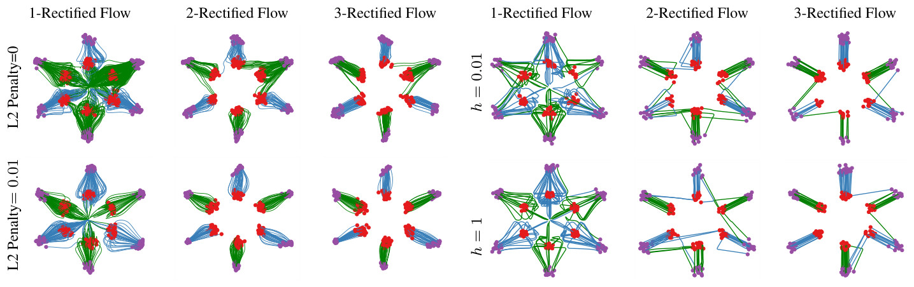<figcaption class="ltx_caption ltx_centering"><span class="ltx_tag ltx_tag_figure">Figure 7: </span>
Rectified flows
fitted with
neural networks trained with different L2 penalty (left), and kernel estimator with different bandwidth <math id="S5.F7.m7" class="ltx_Math" alttext="h" display="inline" intent=":literal"><semantics><mi>h</mi></semantics></math> (right).
<math id="S5.F7.m8" class="ltx_Math" alttext="{\pi}_{0}" display="inline" intent=":literal"><semantics><msub><mi>π</mi><mn>0</mn></msub></semantics></math>: red dots; <math id="S5.F7.m9" class="ltx_Math" alttext="{\pi}_{1}" display="inline" intent=":literal"><semantics><msub><mi>π</mi><mn>1</mn></msub></semantics></math>: purple dots.
</figcaption><div class="fzh"><b>图 7：</b>用不同 L2 惩罚训练的神经网络（左）和不同带宽 <math class="ltx_Math" alttext="h" display="inline" intent=":literal"><semantics><mi>h</mi></semantics></math> 的核估计（右）拟合的 Rectified Flow。<math class="ltx_Math" alttext="{\pi}_{0}" display="inline" intent=":literal"><semantics><msub><mi>π</mi><mn>0</mn></msub></semantics></math>：红色点；<math class="ltx_Math" alttext="{\pi}_{1}" display="inline" intent=":literal"><semantics><msub><mi>π</mi><mn>1</mn></msub></semantics></math>：紫色点。</div></figure></div>
<div class="blk">
    
    <p class="pp">In Figure <a href="#S2.F3" title="Figure 3 ‣ Reflow, straightening, fast simulation ‣ 2.2 Main Results and Properties ‣ 2 Method ‣ Flow Straight and Fast: Learning to Generate and Transfer Data with Rectified Flow" class="ltx_ref"><span class="ltx_text ltx_ref_tag">3</span></a> of Section <a href="#S2.SS2" title="2.2 Main Results and Properties ‣ 2 Method ‣ Flow Straight and Fast: Learning to Generate and Transfer Data with Rectified Flow" class="ltx_ref"><span class="ltx_text ltx_ref_tag">2.2</span></a>,
the straightness is calculated as the empirical estimation of (<a href="#S2.E3" title="In Reflow, straightening, fast simulation ‣ 2.2 Main Results and Properties ‣ 2 Method ‣ Flow Straight and Fast: Learning to Generate and Transfer Data with Rectified Flow" class="ltx_ref"><span class="ltx_text ltx_ref_tag">3</span></a>) based on the simulated trajectories.
The relative transport cost is calculated based on <math id="S5.SS1.p3.m1" class="ltx_Math" alttext="\{z_{0}^{(i)},z_{1}^{(i)}\}_{i=1}^{n}" display="inline" intent=":literal"><semantics><msubsup><mrow><mo stretchy="false">{</mo><msubsup><mi>z</mi><mn>0</mn><mrow><mo stretchy="false">(</mo><mi>i</mi><mo stretchy="false">)</mo></mrow></msubsup><mo>,</mo><msubsup><mi>z</mi><mn>1</mn><mrow><mo stretchy="false">(</mo><mi>i</mi><mo stretchy="false">)</mo></mrow></msubsup><mo stretchy="false">}</mo></mrow><mrow><mi>i</mi><mo>=</mo><mn>1</mn></mrow><mi>n</mi></msubsup></semantics></math> drawn from <math id="S5.SS1.p3.m2" class="ltx_Math" alttext="(Z_{0},Z_{1})" display="inline" intent=":literal"><semantics><mrow><mo stretchy="false">(</mo><msub><mi>Z</mi><mn>0</mn></msub><mo>,</mo><msub><mi>Z</mi><mn>1</mn></msub><mo stretchy="false">)</mo></mrow></semantics></math> by simulating the flow, as <math id="S5.SS1.p3.m3" class="ltx_Math" alttext="\frac{1}{n}\sum_{i=1}^{n}\left\lVert z_{1}^{(i)}-z_{0}^{(i)}\right\rVert^{2}-\left\lVert z_{1}^{(i^{*})}-z_{0}^{(i)}\right\rVert^{2}" display="inline" intent=":literal"><semantics><mrow><mrow><mfrac><mn>1</mn><mi>n</mi></mfrac><mo lspace="0em" rspace="0em">​</mo><mrow><msubsup><mo rspace="0em">∑</mo><mrow><mi>i</mi><mo>=</mo><mn>1</mn></mrow><mi>n</mi></msubsup><msup><mrow><mo>‖</mo><mrow><msubsup><mi>z</mi><mn>1</mn><mrow><mo stretchy="false">(</mo><mi>i</mi><mo stretchy="false">)</mo></mrow></msubsup><mo>−</mo><msubsup><mi>z</mi><mn>0</mn><mrow><mo stretchy="false">(</mo><mi>i</mi><mo stretchy="false">)</mo></mrow></msubsup></mrow><mo>‖</mo></mrow><mn>2</mn></msup></mrow></mrow><mo>−</mo><msup><mrow><mo>‖</mo><mrow><msubsup><mi>z</mi><mn>1</mn><mrow><mo stretchy="false">(</mo><msup><mi>i</mi><mo>∗</mo></msup><mo stretchy="false">)</mo></mrow></msubsup><mo>−</mo><msubsup><mi>z</mi><mn>0</mn><mrow><mo stretchy="false">(</mo><mi>i</mi><mo stretchy="false">)</mo></mrow></msubsup></mrow><mo>‖</mo></mrow><mn>2</mn></msup></mrow></semantics></math>, where <math id="S5.SS1.p3.m4" class="ltx_Math" alttext="z_{1}^{(i^{*})}" display="inline" intent=":literal"><semantics><msubsup><mi>z</mi><mn>1</mn><mrow><mo stretchy="false">(</mo><msup><mi>i</mi><mo>∗</mo></msup><mo stretchy="false">)</mo></mrow></msubsup></semantics></math> is the optimal L2 assignment of <math id="S5.SS1.p3.m5" class="ltx_Math" alttext="z_{0}^{(i)}" display="inline" intent=":literal"><semantics><msubsup><mi>z</mi><mn>0</mn><mrow><mo stretchy="false">(</mo><mi>i</mi><mo stretchy="false">)</mo></mrow></msubsup></semantics></math> obtained by solving the discrete L2 optimal transport problem between <math id="S5.SS1.p3.m6" class="ltx_Math" alttext="\{z_{0}^{(i)}\}" display="inline" intent=":literal"><semantics><mrow><mo stretchy="false">{</mo><msubsup><mi>z</mi><mn>0</mn><mrow><mo stretchy="false">(</mo><mi>i</mi><mo stretchy="false">)</mo></mrow></msubsup><mo stretchy="false">}</mo></mrow></semantics></math> and <math id="S5.SS1.p3.m7" class="ltx_Math" alttext="\{z_{1}^{(i)}\}" display="inline" intent=":literal"><semantics><mrow><mo stretchy="false">{</mo><msubsup><mi>z</mi><mn>1</mn><mrow><mo stretchy="false">(</mo><mi>i</mi><mo stretchy="false">)</mo></mrow></msubsup><mo stretchy="false">}</mo></mrow></semantics></math>.
We should
note that this metric is only useful in low dimensions, as it tends to be identically zero in high dimensional cases
even <math id="S5.SS1.p3.m8" class="ltx_Math" alttext="v^{X}" display="inline" intent=":literal"><semantics><msup><mi>v</mi><mi>X</mi></msup></semantics></math> is set to be a random neural network.
This misleading phenomenon is what causes <cite class="ltx_cite ltx_citemacro_cite">[<a href="#bib.bib30" title="" class="ltx_ref">30</a>]</cite> to make the false hypothesis that DDIM yields L2 optimal transport.</p>
    <p class="pp zh" lang="zh-Hans">第 <a href="#S2.SS2" title="2.2 Main Results and Properties ‣ 2 Method ‣ Flow Straight and Fast: Learning to Generate and Transfer Data with Rectified Flow" class="ltx_ref"><span class="ltx_text ltx_ref_tag">2.2</span></a> 节图 <a href="#S2.F3" title="Figure 3 ‣ Reflow, straightening, fast simulation ‣ 2.2 Main Results and Properties ‣ 2 Method ‣ Flow Straight and Fast: Learning to Generate and Transfer Data with Rectified Flow" class="ltx_ref"><span class="ltx_text ltx_ref_tag">3</span></a> 中的直度，是基于模拟轨迹对 (<a href="#S2.E3" title="In Reflow, straightening, fast simulation ‣ 2.2 Main Results and Properties ‣ 2 Method ‣ Flow Straight and Fast: Learning to Generate and Transfer Data with Rectified Flow" class="ltx_ref"><span class="ltx_text ltx_ref_tag">3</span></a>) 做的经验估计。相对传输代价基于模拟流得到的、来自 <math class="ltx_Math" alttext="(Z_{0},Z_{1})" display="inline" intent=":literal"><semantics><mrow><mo stretchy="false">(</mo><msub><mi>Z</mi><mn>0</mn></msub><mo>,</mo><msub><mi>Z</mi><mn>1</mn></msub><mo stretchy="false">)</mo></mrow></semantics></math> 的样本 <math class="ltx_Math" alttext="\{z_{0}^{(i)},z_{1}^{(i)}\}_{i=1}^{n}" display="inline" intent=":literal"><semantics><msubsup><mrow><mo stretchy="false">{</mo><msubsup><mi>z</mi><mn>0</mn><mrow><mo stretchy="false">(</mo><mi>i</mi><mo stretchy="false">)</mo></mrow></msubsup><mo>,</mo><msubsup><mi>z</mi><mn>1</mn><mrow><mo stretchy="false">(</mo><mi>i</mi><mo stretchy="false">)</mo></mrow></msubsup><mo stretchy="false">}</mo></mrow><mrow><mi>i</mi><mo>=</mo><mn>1</mn></mrow><mi>n</mi></msubsup></semantics></math> 计算，即 <math class="ltx_Math" alttext="\frac{1}{n}\sum_{i=1}^{n}\left\lVert z_{1}^{(i)}-z_{0}^{(i)}\right\rVert^{2}-\left\lVert z_{1}^{(i^{*})}-z_{0}^{(i)}\right\rVert^{2}" display="inline" intent=":literal"><semantics><mrow><mrow><mfrac><mn>1</mn><mi>n</mi></mfrac><mo lspace="0em" rspace="0em">​</mo><mrow><msubsup><mo rspace="0em">∑</mo><mrow><mi>i</mi><mo>=</mo><mn>1</mn></mrow><mi>n</mi></msubsup><msup><mrow><mo>‖</mo><mrow><msubsup><mi>z</mi><mn>1</mn><mrow><mo stretchy="false">(</mo><mi>i</mi><mo stretchy="false">)</mo></mrow></msubsup><mo>−</mo><msubsup><mi>z</mi><mn>0</mn><mrow><mo stretchy="false">(</mo><mi>i</mi><mo stretchy="false">)</mo></mrow></msubsup></mrow><mo>‖</mo></mrow><mn>2</mn></msup></mrow></mrow><mo>−</mo><msup><mrow><mo>‖</mo><mrow><msubsup><mi>z</mi><mn>1</mn><mrow><mo stretchy="false">(</mo><msup><mi>i</mi><mo>∗</mo></msup><mo stretchy="false">)</mo></mrow></msubsup><mo>−</mo><msubsup><mi>z</mi><mn>0</mn><mrow><mo stretchy="false">(</mo><mi>i</mi><mo stretchy="false">)</mo></mrow></msubsup></mrow><mo>‖</mo></mrow><mn>2</mn></msup></mrow></semantics></math>，其中 <math class="ltx_Math" alttext="z_{1}^{(i^{*})}" display="inline" intent=":literal"><semantics><msubsup><mi>z</mi><mn>1</mn><mrow><mo stretchy="false">(</mo><msup><mi>i</mi><mo>∗</mo></msup><mo stretchy="false">)</mo></mrow></msubsup></semantics></math> 是求解 <math class="ltx_Math" alttext="\{z_{0}^{(i)}\}" display="inline" intent=":literal"><semantics><mrow><mo stretchy="false">{</mo><msubsup><mi>z</mi><mn>0</mn><mrow><mo stretchy="false">(</mo><mi>i</mi><mo stretchy="false">)</mo></mrow></msubsup><mo stretchy="false">}</mo></mrow></semantics></math> 与 <math class="ltx_Math" alttext="\{z_{1}^{(i)}\}" display="inline" intent=":literal"><semantics><mrow><mo stretchy="false">{</mo><msubsup><mi>z</mi><mn>1</mn><mrow><mo stretchy="false">(</mo><mi>i</mi><mo stretchy="false">)</mo></mrow></msubsup><mo stretchy="false">}</mo></mrow></semantics></math> 之间离散 L2 最优传输问题得到的 <math class="ltx_Math" alttext="z_{0}^{(i)}" display="inline" intent=":literal"><semantics><msubsup><mi>z</mi><mn>0</mn><mrow><mo stretchy="false">(</mo><mi>i</mi><mo stretchy="false">)</mo></mrow></msubsup></semantics></math> 的最优 L2 分配。需要指出，这个指标只在低维时有用，因为在高维情形下，即使把 <math class="ltx_Math" alttext="v^{X}" display="inline" intent=":literal"><semantics><msup><mi>v</mi><mi>X</mi></msup></semantics></math> 设为随机神经网络，它也往往恒为零。正是这一误导性的现象，使 <cite class="ltx_cite ltx_citemacro_cite">[<a href="#bib.bib30" title="" class="ltx_ref">30</a>]</cite> 错误地假设 DDIM 给出 L2 最优传输。</p>
    
  </div>
<span class="lxa" id="S5.SS2"></span><h3 class="ph" id="s5-2"><span class="hn">5.2</span>Unconditioned Image Generation<span class="hzh">无条件图像生成</span></h3>
<div class="blk">
    
    <p class="pp">We test rectified flow for unconditioned image generation on CIAFR-10 and a number of high resolution datasets.
The methods are evaluated by the quality of generated images by Fréchet inception distance (FID) and inception score (IS),
and the diversity of the generated images by the recall score following <cite class="ltx_cite ltx_citemacro_citep">[<a href="#bib.bib38" title="" class="ltx_ref">38</a>]</cite>.</p>
    <p class="pp zh" lang="zh-Hans">我们在 CIFAR-10 和若干高分辨率数据集上测试 Rectified Flow 的无条件图像生成。生成图像的质量用 Fréchet Inception Distance (FID) 和 Inception Score (IS) 评估，多样性按 <cite class="ltx_cite ltx_citemacro_citep">[<a href="#bib.bib38" title="" class="ltx_ref">38</a>]</cite> 用召回率评估。</p>
    
  </div>
<span class="lxa" id="S5.SS2.SSS0.Px1"></span><h4 class="ph" id="sexperiment-settings">Experiment settings<span class="hzh">实验设置</span></h4>
<div class="blk">
    
    <p class="pp">For the purpose of generative modeling, we set <math id="S5.SS2.SSS0.Px1.p1.m1" class="ltx_Math" alttext="{\pi}_{0}" display="inline" intent=":literal"><semantics><msub><mi>π</mi><mn>0</mn></msub></semantics></math> to be the standard Gaussian distribution and <math id="S5.SS2.SSS0.Px1.p1.m2" class="ltx_Math" alttext="{\pi}_{1}" display="inline" intent=":literal"><semantics><msub><mi>π</mi><mn>1</mn></msub></semantics></math> the data distribution.
Our implementation of rectified flow is modified upon the open-source code of  <cite class="ltx_cite ltx_citemacro_citep">[<a href="#bib.bib73" title="" class="ltx_ref">73</a>]</cite>. We adopt the U-Net architecture of DDPM++ <cite class="ltx_cite ltx_citemacro_cite">[<a href="#bib.bib73" title="" class="ltx_ref">73</a>]</cite> for representing the drift <math id="S5.SS2.SSS0.Px1.p1.m3" class="ltx_Math" alttext="v^{X}" display="inline" intent=":literal"><semantics><msup><mi>v</mi><mi>X</mi></msup></semantics></math>,
and report in Table <a href="#S5.T1" title="Table 1 ‣ Experiment settings ‣ 5.2 Unconditioned Image Generation ‣ 5 Experiments ‣ Flow Straight and Fast: Learning to Generate and Transfer Data with Rectified Flow" class="ltx_ref"><span class="ltx_text ltx_ref_tag">1</span></a> (a) and Figure <a href="#S5.F8" title="Figure 8 ‣ Experiment settings ‣ 5.2 Unconditioned Image Generation ‣ 5 Experiments ‣ Flow Straight and Fast: Learning to Generate and Transfer Data with Rectified Flow" class="ltx_ref"><span class="ltx_text ltx_ref_tag">8</span></a> the results of our method and the (sub)-VP ODE from <cite class="ltx_cite ltx_citemacro_cite">[<a href="#bib.bib73" title="" class="ltx_ref">73</a>]</cite> using the same architecture.
Other recent results using different network architectures are shown in Table <a href="#S5.T1" title="Table 1 ‣ Experiment settings ‣ 5.2 Unconditioned Image Generation ‣ 5 Experiments ‣ Flow Straight and Fast: Learning to Generate and Transfer Data with Rectified Flow" class="ltx_ref"><span class="ltx_text ltx_ref_tag">1</span></a> (b) for reference.
More detailed settings can be found in the Appendix.</p>
    <p class="pp zh" lang="zh-Hans">对生成建模，我们令 <math class="ltx_Math" alttext="{\pi}_{0}" display="inline" intent=":literal"><semantics><msub><mi>π</mi><mn>0</mn></msub></semantics></math> 为标准高斯分布，<math class="ltx_Math" alttext="{\pi}_{1}" display="inline" intent=":literal"><semantics><msub><mi>π</mi><mn>1</mn></msub></semantics></math> 为数据分布。我们的 Rectified Flow 实现在 <cite class="ltx_cite ltx_citemacro_citep">[<a href="#bib.bib73" title="" class="ltx_ref">73</a>]</cite> 的开源代码基础上修改。漂移 <math class="ltx_Math" alttext="v^{X}" display="inline" intent=":literal"><semantics><msup><mi>v</mi><mi>X</mi></msup></semantics></math> 用 DDPM++ <cite class="ltx_cite ltx_citemacro_cite">[<a href="#bib.bib73" title="" class="ltx_ref">73</a>]</cite> 的 U-Net 结构表示，表 <a href="#S5.T1" title="Table 1 ‣ Experiment settings ‣ 5.2 Unconditioned Image Generation ‣ 5 Experiments ‣ Flow Straight and Fast: Learning to Generate and Transfer Data with Rectified Flow" class="ltx_ref"><span class="ltx_text ltx_ref_tag">1</span></a>(a) 和图 <a href="#S5.F8" title="Figure 8 ‣ Experiment settings ‣ 5.2 Unconditioned Image Generation ‣ 5 Experiments ‣ Flow Straight and Fast: Learning to Generate and Transfer Data with Rectified Flow" class="ltx_ref"><span class="ltx_text ltx_ref_tag">8</span></a> 报告了我们的方法和 <cite class="ltx_cite ltx_citemacro_cite">[<a href="#bib.bib73" title="" class="ltx_ref">73</a>]</cite> 的 (sub)-VP ODE 在相同结构下的结果。其他使用不同网络结构的近期结果列在表 <a href="#S5.T1" title="Table 1 ‣ Experiment settings ‣ 5.2 Unconditioned Image Generation ‣ 5 Experiments ‣ Flow Straight and Fast: Learning to Generate and Transfer Data with Rectified Flow" class="ltx_ref"><span class="ltx_text ltx_ref_tag">1</span></a>(b) 中供参考。更详细的设置见附录。</p>
    
  </div>
<div class="floatbox"><figure id="S5.T1" class="ltx_table">
<table id="S5.T1.2" class="ltx_tabular ltx_centering ltx_align_middle">
<tbody class="ltx_tbody">
<tr id="S5.T1.2.1" class="ltx_tr">
<td id="S5.T1.2.1.1" class="ltx_td ltx_align_center">
<div id="S5.T1.2.1.1.1" class="ltx_inline-block ltx_transformed_outer" style=""><span class="ltx_transformed_inner" style="zoom:0.351338328726294">
<table id="S5.T1.2.1.1.1.1" class="ltx_tabular ltx_align_middle">
<tr id="S5.T1.2.1.1.1.1.1" class="ltx_tr">
<td id="S5.T1.2.1.1.1.1.1.1" class="ltx_td ltx_align_left ltx_border_tt">Method</td>
<td id="S5.T1.2.1.1.1.1.1.2" class="ltx_td ltx_align_center ltx_border_tt">NFE(<math id="S5.T1.m1" class="ltx_Math" alttext="\downarrow" display="inline" intent=":literal"><semantics><mo stretchy="false">↓</mo></semantics></math>)</td>
<td id="S5.T1.2.1.1.1.1.1.3" class="ltx_td ltx_align_center ltx_border_tt">IS (<math id="S5.T1.m2" class="ltx_Math" alttext="\uparrow" display="inline" intent=":literal"><semantics><mo stretchy="false">↑</mo></semantics></math>)</td>
<td id="S5.T1.2.1.1.1.1.1.4" class="ltx_td ltx_align_center ltx_border_tt">FID (<math id="S5.T1.m3" class="ltx_Math" alttext="\downarrow" display="inline" intent=":literal"><semantics><mo stretchy="false">↓</mo></semantics></math>)</td>
<td id="S5.T1.2.1.1.1.1.1.5" class="ltx_td ltx_align_center ltx_border_tt">Recall (<math id="S5.T1.m4" class="ltx_Math" alttext="\uparrow" display="inline" intent=":literal"><semantics><mo stretchy="false">↑</mo></semantics></math>)</td></tr>
<tr id="S5.T1.2.1.1.1.1.2" class="ltx_tr">
<td id="S5.T1.2.1.1.1.1.2.1" class="ltx_td ltx_align_left ltx_border_tt"><em id="S5.T1.2.1.1.1.1.2.1.1" class="ltx_emph ltx_font_italic">ODE</em></td>
<td id="S5.T1.2.1.1.1.1.2.2" class="ltx_td ltx_align_left ltx_border_tt" colspan="4"><em id="S5.T1.2.1.1.1.1.2.2.1" class="ltx_emph ltx_font_italic">One-Step Generation (Euler solver, N=1)</em></td></tr>
<tr id="S5.T1.2.1.1.1.1.3" class="ltx_tr">
<td id="S5.T1.2.1.1.1.1.3.1" class="ltx_td ltx_align_left ltx_border_t"><span id="S5.T1.2.1.1.1.1.3.1.1" class="ltx_text ltx_font_bold">1-Rectified Flow (<em id="S5.T1.2.1.1.1.1.3.1.1.1" class="ltx_emph ltx_font_italic">+Distill</em>)</span></td>
<td id="S5.T1.2.1.1.1.1.3.2" class="ltx_td ltx_align_center ltx_border_t">1</td>
<td id="S5.T1.2.1.1.1.1.3.3" class="ltx_td ltx_align_center ltx_border_t">1.13 (<em id="S5.T1.2.1.1.1.1.3.3.1" class="ltx_emph ltx_font_bold ltx_font_italic">9.08</em>)</td>
<td id="S5.T1.2.1.1.1.1.3.4" class="ltx_td ltx_align_center ltx_border_t">378 (<em id="S5.T1.2.1.1.1.1.3.4.1" class="ltx_emph ltx_font_italic">6.18</em>)</td>
<td id="S5.T1.2.1.1.1.1.3.5" class="ltx_td ltx_align_center ltx_border_t">0.0 (<em id="S5.T1.2.1.1.1.1.3.5.1" class="ltx_emph ltx_font_italic">0.45</em>)</td></tr>
<tr id="S5.T1.2.1.1.1.1.4" class="ltx_tr">
<td id="S5.T1.2.1.1.1.1.4.1" class="ltx_td ltx_align_left"><span id="S5.T1.2.1.1.1.1.4.1.1" class="ltx_text ltx_font_bold">2-Rectified Flow (<em id="S5.T1.2.1.1.1.1.4.1.1.1" class="ltx_emph ltx_font_italic">+Distill</em>)</span></td>
<td id="S5.T1.2.1.1.1.1.4.2" class="ltx_td ltx_align_center">1</td>
<td id="S5.T1.2.1.1.1.1.4.3" class="ltx_td ltx_align_center">8.08 (<em id="S5.T1.2.1.1.1.1.4.3.1" class="ltx_emph ltx_font_italic">9.01</em>)</td>
<td id="S5.T1.2.1.1.1.1.4.4" class="ltx_td ltx_align_center">12.21 (<em id="S5.T1.2.1.1.1.1.4.4.1" class="ltx_emph ltx_font_bold ltx_font_italic">4.85</em>)</td>
<td id="S5.T1.2.1.1.1.1.4.5" class="ltx_td ltx_align_center">0.34 (<em id="S5.T1.2.1.1.1.1.4.5.1" class="ltx_emph ltx_font_italic">0.50</em>)</td></tr>
<tr id="S5.T1.2.1.1.1.1.5" class="ltx_tr">
<td id="S5.T1.2.1.1.1.1.5.1" class="ltx_td ltx_align_left"><span id="S5.T1.2.1.1.1.1.5.1.1" class="ltx_text ltx_font_bold">3-Rectified Flow (<em id="S5.T1.2.1.1.1.1.5.1.1.1" class="ltx_emph ltx_font_italic">+Distill</em>)</span></td>
<td id="S5.T1.2.1.1.1.1.5.2" class="ltx_td ltx_align_center">1</td>
<td id="S5.T1.2.1.1.1.1.5.3" class="ltx_td ltx_align_center">8.47 (<em id="S5.T1.2.1.1.1.1.5.3.1" class="ltx_emph ltx_font_italic">8.79</em>)</td>
<td id="S5.T1.2.1.1.1.1.5.4" class="ltx_td ltx_align_center">8.15 (<em id="S5.T1.2.1.1.1.1.5.4.1" class="ltx_emph ltx_font_italic">5.21</em>)</td>
<td id="S5.T1.2.1.1.1.1.5.5" class="ltx_td ltx_align_center">0.41 (<em id="S5.T1.2.1.1.1.1.5.5.1" class="ltx_emph ltx_font_bold ltx_font_italic">0.51</em>)</td></tr>
<tr id="S5.T1.2.1.1.1.1.6" class="ltx_tr">
<td id="S5.T1.2.1.1.1.1.6.1" class="ltx_td ltx_align_left">VP ODE <cite class="ltx_cite ltx_citemacro_citep">[<a href="#bib.bib73" title="" class="ltx_ref">73</a>]</cite> (<em id="S5.T1.2.1.1.1.1.6.1.1" class="ltx_emph ltx_font_italic">+Distill</em>)</td>
<td id="S5.T1.2.1.1.1.1.6.2" class="ltx_td ltx_align_center">1</td>
<td id="S5.T1.2.1.1.1.1.6.3" class="ltx_td ltx_align_center">1.20 (<em id="S5.T1.2.1.1.1.1.6.3.1" class="ltx_emph ltx_font_italic">8.73</em>)</td>
<td id="S5.T1.2.1.1.1.1.6.4" class="ltx_td ltx_align_center">451 (<em id="S5.T1.2.1.1.1.1.6.4.1" class="ltx_emph ltx_font_italic">16.23</em>)</td>
<td id="S5.T1.2.1.1.1.1.6.5" class="ltx_td ltx_align_center">0.0 (<em id="S5.T1.2.1.1.1.1.6.5.1" class="ltx_emph ltx_font_italic">0.29</em>)</td></tr>
<tr id="S5.T1.2.1.1.1.1.7" class="ltx_tr">
<td id="S5.T1.2.1.1.1.1.7.1" class="ltx_td ltx_align_left">sub-VP ODE <cite class="ltx_cite ltx_citemacro_citep">[<a href="#bib.bib73" title="" class="ltx_ref">73</a>]</cite> (<em id="S5.T1.2.1.1.1.1.7.1.1" class="ltx_emph ltx_font_italic">+Distill</em>)</td>
<td id="S5.T1.2.1.1.1.1.7.2" class="ltx_td ltx_align_center">1</td>
<td id="S5.T1.2.1.1.1.1.7.3" class="ltx_td ltx_align_center">1.21 (<em id="S5.T1.2.1.1.1.1.7.3.1" class="ltx_emph ltx_font_italic">8.80</em>)</td>
<td id="S5.T1.2.1.1.1.1.7.4" class="ltx_td ltx_align_center">451 (<em id="S5.T1.2.1.1.1.1.7.4.1" class="ltx_emph ltx_font_italic">14.32</em>)</td>
<td id="S5.T1.2.1.1.1.1.7.5" class="ltx_td ltx_align_center">0.0 (<em id="S5.T1.2.1.1.1.1.7.5.1" class="ltx_emph ltx_font_italic">0.35</em>)</td></tr>
<tr id="S5.T1.2.1.1.1.1.8" class="ltx_tr">
<td id="S5.T1.2.1.1.1.1.8.1" class="ltx_td ltx_align_left ltx_border_tt"><em id="S5.T1.2.1.1.1.1.8.1.1" class="ltx_emph ltx_font_italic">ODE</em></td>
<td id="S5.T1.2.1.1.1.1.8.2" class="ltx_td ltx_align_left ltx_border_tt" colspan="4"><em id="S5.T1.2.1.1.1.1.8.2.1" class="ltx_emph ltx_font_italic">Full Simulation (Runge–Kutta (RK45), Adaptive <math id="S5.T1.m5" class="ltx_Math" alttext="N" display="inline" intent=":literal"><semantics><mi>N</mi></semantics></math>)</em></td></tr>
<tr id="S5.T1.2.1.1.1.1.9" class="ltx_tr">
<td id="S5.T1.2.1.1.1.1.9.1" class="ltx_td ltx_align_left ltx_border_t"><span id="S5.T1.2.1.1.1.1.9.1.1" class="ltx_text ltx_font_bold">1-Rectified Flow</span></td>
<td id="S5.T1.2.1.1.1.1.9.2" class="ltx_td ltx_align_center ltx_border_t">127</td>
<td id="S5.T1.2.1.1.1.1.9.3" class="ltx_td ltx_align_center ltx_border_t"><span id="S5.T1.2.1.1.1.1.9.3.1" class="ltx_text ltx_font_bold">9.60</span></td>
<td id="S5.T1.2.1.1.1.1.9.4" class="ltx_td ltx_align_center ltx_border_t"><span id="S5.T1.2.1.1.1.1.9.4.1" class="ltx_text ltx_font_bold">2.58</span></td>
<td id="S5.T1.2.1.1.1.1.9.5" class="ltx_td ltx_align_center ltx_border_t"><span id="S5.T1.2.1.1.1.1.9.5.1" class="ltx_text ltx_font_bold">0.57</span></td></tr>
<tr id="S5.T1.2.1.1.1.1.10" class="ltx_tr">
<td id="S5.T1.2.1.1.1.1.10.1" class="ltx_td ltx_align_left"><span id="S5.T1.2.1.1.1.1.10.1.1" class="ltx_text ltx_font_bold">2-Rectified Flow</span></td>
<td id="S5.T1.2.1.1.1.1.10.2" class="ltx_td ltx_align_center">110</td>
<td id="S5.T1.2.1.1.1.1.10.3" class="ltx_td ltx_align_center">9.24</td>
<td id="S5.T1.2.1.1.1.1.10.4" class="ltx_td ltx_align_center">3.36</td>
<td id="S5.T1.2.1.1.1.1.10.5" class="ltx_td ltx_align_center">0.54</td></tr>
<tr id="S5.T1.2.1.1.1.1.11" class="ltx_tr">
<td id="S5.T1.2.1.1.1.1.11.1" class="ltx_td ltx_align_left"><span id="S5.T1.2.1.1.1.1.11.1.1" class="ltx_text ltx_font_bold">3-Rectified Flow</span></td>
<td id="S5.T1.2.1.1.1.1.11.2" class="ltx_td ltx_align_center">104</td>
<td id="S5.T1.2.1.1.1.1.11.3" class="ltx_td ltx_align_center">9.01</td>
<td id="S5.T1.2.1.1.1.1.11.4" class="ltx_td ltx_align_center">3.96</td>
<td id="S5.T1.2.1.1.1.1.11.5" class="ltx_td ltx_align_center">0.53</td></tr>
<tr id="S5.T1.2.1.1.1.1.12" class="ltx_tr">
<td id="S5.T1.2.1.1.1.1.12.1" class="ltx_td ltx_align_left">VP ODE <cite class="ltx_cite ltx_citemacro_citep">[<a href="#bib.bib73" title="" class="ltx_ref">73</a>]</cite></td>
<td id="S5.T1.2.1.1.1.1.12.2" class="ltx_td ltx_align_center">140</td>
<td id="S5.T1.2.1.1.1.1.12.3" class="ltx_td ltx_align_center">9.37</td>
<td id="S5.T1.2.1.1.1.1.12.4" class="ltx_td ltx_align_center">3.93</td>
<td id="S5.T1.2.1.1.1.1.12.5" class="ltx_td ltx_align_center">0.51</td></tr>
<tr id="S5.T1.2.1.1.1.1.13" class="ltx_tr">
<td id="S5.T1.2.1.1.1.1.13.1" class="ltx_td ltx_align_left">sub-VP ODE <cite class="ltx_cite ltx_citemacro_citep">[<a href="#bib.bib73" title="" class="ltx_ref">73</a>]</cite></td>
<td id="S5.T1.2.1.1.1.1.13.2" class="ltx_td ltx_align_center">146</td>
<td id="S5.T1.2.1.1.1.1.13.3" class="ltx_td ltx_align_center">9.46</td>
<td id="S5.T1.2.1.1.1.1.13.4" class="ltx_td ltx_align_center">3.16</td>
<td id="S5.T1.2.1.1.1.1.13.5" class="ltx_td ltx_align_center">0.55</td></tr>
<tr id="S5.T1.2.1.1.1.1.14" class="ltx_tr">
<td id="S5.T1.2.1.1.1.1.14.1" class="ltx_td ltx_align_left ltx_border_tt"><em id="S5.T1.2.1.1.1.1.14.1.1" class="ltx_emph ltx_font_italic">SDE</em></td>
<td id="S5.T1.2.1.1.1.1.14.2" class="ltx_td ltx_align_left ltx_border_tt" colspan="4"><em id="S5.T1.2.1.1.1.1.14.2.1" class="ltx_emph ltx_font_italic">Full Simulation (Euler solver, N=2000)</em></td></tr>
<tr id="S5.T1.2.1.1.1.1.15" class="ltx_tr">
<td id="S5.T1.2.1.1.1.1.15.1" class="ltx_td ltx_align_left ltx_border_t">VP SDE <cite class="ltx_cite ltx_citemacro_citep">[<a href="#bib.bib73" title="" class="ltx_ref">73</a>]</cite></td>
<td id="S5.T1.2.1.1.1.1.15.2" class="ltx_td ltx_align_center ltx_border_t">2000</td>
<td id="S5.T1.2.1.1.1.1.15.3" class="ltx_td ltx_align_center ltx_border_t">9.58</td>
<td id="S5.T1.2.1.1.1.1.15.4" class="ltx_td ltx_align_center ltx_border_t">2.55</td>
<td id="S5.T1.2.1.1.1.1.15.5" class="ltx_td ltx_align_center ltx_border_t">0.58</td></tr>
<tr id="S5.T1.2.1.1.1.1.16" class="ltx_tr">
<td id="S5.T1.2.1.1.1.1.16.1" class="ltx_td ltx_align_left ltx_border_bb">sub-VP SDE <cite class="ltx_cite ltx_citemacro_citep">[<a href="#bib.bib73" title="" class="ltx_ref">73</a>]</cite></td>
<td id="S5.T1.2.1.1.1.1.16.2" class="ltx_td ltx_align_center ltx_border_bb">2000</td>
<td id="S5.T1.2.1.1.1.1.16.3" class="ltx_td ltx_align_center ltx_border_bb">9.56</td>
<td id="S5.T1.2.1.1.1.1.16.4" class="ltx_td ltx_align_center ltx_border_bb">2.61</td>
<td id="S5.T1.2.1.1.1.1.16.5" class="ltx_td ltx_align_center ltx_border_bb">0.58</td></tr>
</table>
</span></div></td>
<td id="S5.T1.2.1.2" class="ltx_td ltx_align_center">
<div id="S5.T1.2.1.2.1" class="ltx_inline-block ltx_transformed_outer" style=""><span class="ltx_transformed_inner" style="zoom:0.296965074254296">
<table id="S5.T1.2.1.2.1.1" class="ltx_tabular ltx_align_middle">
<tr id="S5.T1.2.1.2.1.1.1" class="ltx_tr">
<td id="S5.T1.2.1.2.1.1.1.1" class="ltx_td ltx_align_left ltx_border_tt">Method</td>
<td id="S5.T1.2.1.2.1.1.1.2" class="ltx_td ltx_align_center ltx_border_tt">NFE(<math id="S5.T1.m6" class="ltx_Math" alttext="\downarrow" display="inline" intent=":literal"><semantics><mo stretchy="false">↓</mo></semantics></math>)</td>
<td id="S5.T1.2.1.2.1.1.1.3" class="ltx_td ltx_align_center ltx_border_tt">IS (<math id="S5.T1.m7" class="ltx_Math" alttext="\uparrow" display="inline" intent=":literal"><semantics><mo stretchy="false">↑</mo></semantics></math>)</td>
<td id="S5.T1.2.1.2.1.1.1.4" class="ltx_td ltx_align_center ltx_border_tt">FID (<math id="S5.T1.m8" class="ltx_Math" alttext="\downarrow" display="inline" intent=":literal"><semantics><mo stretchy="false">↓</mo></semantics></math>)</td>
<td id="S5.T1.2.1.2.1.1.1.5" class="ltx_td ltx_align_center ltx_border_tt">Recall (<math id="S5.T1.m9" class="ltx_Math" alttext="\uparrow" display="inline" intent=":literal"><semantics><mo stretchy="false">↑</mo></semantics></math>)</td></tr>
<tr id="S5.T1.2.1.2.1.1.2" class="ltx_tr">
<td id="S5.T1.2.1.2.1.1.2.1" class="ltx_td ltx_align_left ltx_border_tt"><em id="S5.T1.2.1.2.1.1.2.1.1" class="ltx_emph ltx_font_italic">GAN</em></td>
<td id="S5.T1.2.1.2.1.1.2.2" class="ltx_td ltx_align_left ltx_border_tt" colspan="4"><em id="S5.T1.2.1.2.1.1.2.2.1" class="ltx_emph ltx_font_italic">One-Step Generation</em></td></tr>
<tr id="S5.T1.2.1.2.1.1.3" class="ltx_tr">
<td id="S5.T1.2.1.2.1.1.3.1" class="ltx_td ltx_align_left ltx_border_t">SNGAN <cite class="ltx_cite ltx_citemacro_citep">[<a href="#bib.bib52" title="" class="ltx_ref">52</a>]</cite></td>
<td id="S5.T1.2.1.2.1.1.3.2" class="ltx_td ltx_align_center ltx_border_t">1</td>
<td id="S5.T1.2.1.2.1.1.3.3" class="ltx_td ltx_align_center ltx_border_t">8.22</td>
<td id="S5.T1.2.1.2.1.1.3.4" class="ltx_td ltx_align_center ltx_border_t">21.7</td>
<td id="S5.T1.2.1.2.1.1.3.5" class="ltx_td ltx_align_center ltx_border_t">0.44</td></tr>
<tr id="S5.T1.2.1.2.1.1.4" class="ltx_tr">
<td id="S5.T1.2.1.2.1.1.4.1" class="ltx_td ltx_align_left">StyleGAN2 <cite class="ltx_cite ltx_citemacro_citep">[<a href="#bib.bib28" title="" class="ltx_ref">28</a>]</cite></td>
<td id="S5.T1.2.1.2.1.1.4.2" class="ltx_td ltx_align_center">1</td>
<td id="S5.T1.2.1.2.1.1.4.3" class="ltx_td ltx_align_center">9.18</td>
<td id="S5.T1.2.1.2.1.1.4.4" class="ltx_td ltx_align_center">8.32</td>
<td id="S5.T1.2.1.2.1.1.4.5" class="ltx_td ltx_align_center">0.41</td></tr>
<tr id="S5.T1.2.1.2.1.1.5" class="ltx_tr">
<td id="S5.T1.2.1.2.1.1.5.1" class="ltx_td ltx_align_left">StyleGAN-XL <cite class="ltx_cite ltx_citemacro_citep">[<a href="#bib.bib66" title="" class="ltx_ref">66</a>]</cite></td>
<td id="S5.T1.2.1.2.1.1.5.2" class="ltx_td ltx_align_center">1</td>
<td id="S5.T1.2.1.2.1.1.5.3" class="ltx_td ltx_align_center">-</td>
<td id="S5.T1.2.1.2.1.1.5.4" class="ltx_td ltx_align_center">1.85</td>
<td id="S5.T1.2.1.2.1.1.5.5" class="ltx_td ltx_align_center">0.47</td></tr>
<tr id="S5.T1.2.1.2.1.1.6" class="ltx_tr">
<td id="S5.T1.2.1.2.1.1.6.1" class="ltx_td ltx_align_left">StyleGAN2 + ADA <cite class="ltx_cite ltx_citemacro_citep">[<a href="#bib.bib28" title="" class="ltx_ref">28</a>]</cite></td>
<td id="S5.T1.2.1.2.1.1.6.2" class="ltx_td ltx_align_center">1</td>
<td id="S5.T1.2.1.2.1.1.6.3" class="ltx_td ltx_align_center">9.40</td>
<td id="S5.T1.2.1.2.1.1.6.4" class="ltx_td ltx_align_center">2.92</td>
<td id="S5.T1.2.1.2.1.1.6.5" class="ltx_td ltx_align_center">0.49</td></tr>
<tr id="S5.T1.2.1.2.1.1.7" class="ltx_tr">
<td id="S5.T1.2.1.2.1.1.7.1" class="ltx_td ltx_align_left">StyleGAN2 + DiffAug <cite class="ltx_cite ltx_citemacro_citep">[<a href="#bib.bib98" title="" class="ltx_ref">98</a>]</cite></td>
<td id="S5.T1.2.1.2.1.1.7.2" class="ltx_td ltx_align_center">1</td>
<td id="S5.T1.2.1.2.1.1.7.3" class="ltx_td ltx_align_center">9.40</td>
<td id="S5.T1.2.1.2.1.1.7.4" class="ltx_td ltx_align_center">5.79</td>
<td id="S5.T1.2.1.2.1.1.7.5" class="ltx_td ltx_align_center">0.42</td></tr>
<tr id="S5.T1.2.1.2.1.1.8" class="ltx_tr">
<td id="S5.T1.2.1.2.1.1.8.1" class="ltx_td ltx_align_left">TransGAN + DiffAug <cite class="ltx_cite ltx_citemacro_citep">[<a href="#bib.bib26" title="" class="ltx_ref">26</a>]</cite></td>
<td id="S5.T1.2.1.2.1.1.8.2" class="ltx_td ltx_align_center">1</td>
<td id="S5.T1.2.1.2.1.1.8.3" class="ltx_td ltx_align_center">9.02</td>
<td id="S5.T1.2.1.2.1.1.8.4" class="ltx_td ltx_align_center">9.26</td>
<td id="S5.T1.2.1.2.1.1.8.5" class="ltx_td ltx_align_center">0.41</td></tr>
<tr id="S5.T1.2.1.2.1.1.9" class="ltx_tr">
<td id="S5.T1.2.1.2.1.1.9.1" class="ltx_td ltx_align_left ltx_border_tt"><em id="S5.T1.2.1.2.1.1.9.1.1" class="ltx_emph ltx_font_italic">GAN with U-Net</em></td>
<td id="S5.T1.2.1.2.1.1.9.2" class="ltx_td ltx_align_left ltx_border_tt" colspan="4"><em id="S5.T1.2.1.2.1.1.9.2.1" class="ltx_emph ltx_font_italic">One-step Generation</em></td></tr>
<tr id="S5.T1.2.1.2.1.1.10" class="ltx_tr">
<td id="S5.T1.2.1.2.1.1.10.1" class="ltx_td ltx_align_left ltx_border_t">TDPM (T=1) <cite class="ltx_cite ltx_citemacro_citep">[<a href="#bib.bib99" title="" class="ltx_ref">99</a>]</cite></td>
<td id="S5.T1.2.1.2.1.1.10.2" class="ltx_td ltx_align_center ltx_border_t">1</td>
<td id="S5.T1.2.1.2.1.1.10.3" class="ltx_td ltx_align_center ltx_border_t">8.65</td>
<td id="S5.T1.2.1.2.1.1.10.4" class="ltx_td ltx_align_center ltx_border_t">8.91</td>
<td id="S5.T1.2.1.2.1.1.10.5" class="ltx_td ltx_align_center ltx_border_t">0.46</td></tr>
<tr id="S5.T1.2.1.2.1.1.11" class="ltx_tr">
<td id="S5.T1.2.1.2.1.1.11.1" class="ltx_td ltx_align_left">Denoising Diffusion GAN (T=1) <cite class="ltx_cite ltx_citemacro_citep">[<a href="#bib.bib91" title="" class="ltx_ref">91</a>]</cite></td>
<td id="S5.T1.2.1.2.1.1.11.2" class="ltx_td ltx_align_center">1</td>
<td id="S5.T1.2.1.2.1.1.11.3" class="ltx_td ltx_align_center">8.93</td>
<td id="S5.T1.2.1.2.1.1.11.4" class="ltx_td ltx_align_center">14.6</td>
<td id="S5.T1.2.1.2.1.1.11.5" class="ltx_td ltx_align_center">0.19</td></tr>
<tr id="S5.T1.2.1.2.1.1.12" class="ltx_tr">
<td id="S5.T1.2.1.2.1.1.12.1" class="ltx_td ltx_align_left ltx_border_tt"><em id="S5.T1.2.1.2.1.1.12.1.1" class="ltx_emph ltx_font_italic">ODE</em></td>
<td id="S5.T1.2.1.2.1.1.12.2" class="ltx_td ltx_align_left ltx_border_tt" colspan="4"><em id="S5.T1.2.1.2.1.1.12.2.1" class="ltx_emph ltx_font_italic">One Step Generation (Euler solver, N=1)</em></td></tr>
<tr id="S5.T1.2.1.2.1.1.13" class="ltx_tr">
<td id="S5.T1.2.1.2.1.1.13.1" class="ltx_td ltx_align_left ltx_border_t">DDIM Distillation <cite class="ltx_cite ltx_citemacro_citep">[<a href="#bib.bib47" title="" class="ltx_ref">47</a>]</cite></td>
<td id="S5.T1.2.1.2.1.1.13.2" class="ltx_td ltx_align_center ltx_border_t">1</td>
<td id="S5.T1.2.1.2.1.1.13.3" class="ltx_td ltx_align_center ltx_border_t">8.36</td>
<td id="S5.T1.2.1.2.1.1.13.4" class="ltx_td ltx_align_center ltx_border_t">9.36</td>
<td id="S5.T1.2.1.2.1.1.13.5" class="ltx_td ltx_align_center ltx_border_t">0.51</td></tr>
<tr id="S5.T1.2.1.2.1.1.14" class="ltx_tr">
<td id="S5.T1.2.1.2.1.1.14.1" class="ltx_td ltx_align_left">NCSN++ (VE ODE) <cite class="ltx_cite ltx_citemacro_citep">[<a href="#bib.bib73" title="" class="ltx_ref">73</a>]</cite> (<em id="S5.T1.2.1.2.1.1.14.1.1" class="ltx_emph ltx_font_italic">+Distill</em>)</td>
<td id="S5.T1.2.1.2.1.1.14.2" class="ltx_td ltx_align_center">1</td>
<td id="S5.T1.2.1.2.1.1.14.3" class="ltx_td ltx_align_center">1.18 (<em id="S5.T1.2.1.2.1.1.14.3.1" class="ltx_emph ltx_font_italic">2.57</em>)</td>
<td id="S5.T1.2.1.2.1.1.14.4" class="ltx_td ltx_align_center">461 (<em id="S5.T1.2.1.2.1.1.14.4.1" class="ltx_emph ltx_font_italic">254</em>)</td>
<td id="S5.T1.2.1.2.1.1.14.5" class="ltx_td ltx_align_center">0.0 (<em id="S5.T1.2.1.2.1.1.14.5.1" class="ltx_emph ltx_font_italic">0.0</em>)</td></tr>
<tr id="S5.T1.2.1.2.1.1.15" class="ltx_tr">
<td id="S5.T1.2.1.2.1.1.15.1" class="ltx_td ltx_align_left ltx_border_tt"><em id="S5.T1.2.1.2.1.1.15.1.1" class="ltx_emph ltx_font_italic">ODE</em></td>
<td id="S5.T1.2.1.2.1.1.15.2" class="ltx_td ltx_align_left ltx_border_tt" colspan="4"><em id="S5.T1.2.1.2.1.1.15.2.1" class="ltx_emph ltx_font_italic">Full Simulation (Runge–Kutta (RK45), Adaptive <math id="S5.T1.m10" class="ltx_Math" alttext="N" display="inline" intent=":literal"><semantics><mi>N</mi></semantics></math>)</em></td></tr>
<tr id="S5.T1.2.1.2.1.1.16" class="ltx_tr">
<td id="S5.T1.2.1.2.1.1.16.1" class="ltx_td ltx_align_left ltx_border_t">NCSN++ (VE ODE) <cite class="ltx_cite ltx_citemacro_citep">[<a href="#bib.bib73" title="" class="ltx_ref">73</a>]</cite></td>
<td id="S5.T1.2.1.2.1.1.16.2" class="ltx_td ltx_align_center ltx_border_t">176</td>
<td id="S5.T1.2.1.2.1.1.16.3" class="ltx_td ltx_align_center ltx_border_t">9.35</td>
<td id="S5.T1.2.1.2.1.1.16.4" class="ltx_td ltx_align_center ltx_border_t">5.38</td>
<td id="S5.T1.2.1.2.1.1.16.5" class="ltx_td ltx_align_center ltx_border_t">0.56</td></tr>
<tr id="S5.T1.2.1.2.1.1.17" class="ltx_tr">
<td id="S5.T1.2.1.2.1.1.17.1" class="ltx_td ltx_align_left ltx_border_tt"><em id="S5.T1.2.1.2.1.1.17.1.1" class="ltx_emph ltx_font_italic">SDE</em></td>
<td id="S5.T1.2.1.2.1.1.17.2" class="ltx_td ltx_align_left ltx_border_tt" colspan="4"><em id="S5.T1.2.1.2.1.1.17.2.1" class="ltx_emph ltx_font_italic">Full Simulation (Euler solver)</em></td></tr>
<tr id="S5.T1.2.1.2.1.1.18" class="ltx_tr">
<td id="S5.T1.2.1.2.1.1.18.1" class="ltx_td ltx_align_left ltx_border_t">DDPM <cite class="ltx_cite ltx_citemacro_citep">[<a href="#bib.bib23" title="" class="ltx_ref">23</a>]</cite></td>
<td id="S5.T1.2.1.2.1.1.18.2" class="ltx_td ltx_align_center ltx_border_t">1000</td>
<td id="S5.T1.2.1.2.1.1.18.3" class="ltx_td ltx_align_center ltx_border_t">9.46</td>
<td id="S5.T1.2.1.2.1.1.18.4" class="ltx_td ltx_align_center ltx_border_t">3.21</td>
<td id="S5.T1.2.1.2.1.1.18.5" class="ltx_td ltx_align_center ltx_border_t">0.57</td></tr>
<tr id="S5.T1.2.1.2.1.1.19" class="ltx_tr">
<td id="S5.T1.2.1.2.1.1.19.1" class="ltx_td ltx_align_left ltx_border_bb">NCSN++ (VE SDE) <cite class="ltx_cite ltx_citemacro_citep">[<a href="#bib.bib73" title="" class="ltx_ref">73</a>]</cite></td>
<td id="S5.T1.2.1.2.1.1.19.2" class="ltx_td ltx_align_center ltx_border_bb">2000</td>
<td id="S5.T1.2.1.2.1.1.19.3" class="ltx_td ltx_align_center ltx_border_bb">9.83</td>
<td id="S5.T1.2.1.2.1.1.19.4" class="ltx_td ltx_align_center ltx_border_bb">2.38</td>
<td id="S5.T1.2.1.2.1.1.19.5" class="ltx_td ltx_align_center ltx_border_bb">0.59</td></tr>
</table>
</span></div></td></tr>
<tr id="S5.T1.2.2" class="ltx_tr">
<td id="S5.T1.2.2.1" class="ltx_td ltx_align_center"><span id="S5.T1.2.2.1.1" class="ltx_text" style="font-size:70%;">(a) Results using the DDPM++ architecture.</span></td>
<td id="S5.T1.2.2.2" class="ltx_td ltx_align_center"><span id="S5.T1.2.2.2.1" class="ltx_text" style="font-size:70%;">(b) Recent results with different architectures reported in literature.</span></td></tr>
</tbody>
</table>
<figcaption class="ltx_caption ltx_centering"><span class="ltx_tag ltx_tag_table">Table 1: </span>Results on CIFAR10 unconditioned image generation.
Fréchet Inception Distance (FID) and Inception Score (IS) measure the quality of the generated images,
and recall score <cite class="ltx_cite ltx_citemacro_citep">[<a href="#bib.bib38" title="" class="ltx_ref">38</a>]</cite> measures diversity.
The number of function evaluation (NFE) denotes the number of times we need to call the main neural network during inference.
It coincides with the number of discretization steps <math id="S5.T1.m12" class="ltx_Math" alttext="N" display="inline" intent=":literal"><semantics><mi>N</mi></semantics></math> for ODE and SDE models.
</figcaption><div class="fzh"><b>表 1：</b>CIFAR10 无条件图像生成的结果。Fréchet Inception Distance (FID) 和 Inception Score (IS) 衡量生成图像的质量，召回率 <cite class="ltx_cite ltx_citemacro_citep">[<a href="#bib.bib38" title="" class="ltx_ref">38</a>]</cite> 衡量多样性。函数求值次数 (NFE) 表示推理时调用主神经网络的次数，对 ODE 和 SDE 模型它与离散化步数 <math class="ltx_Math" alttext="N" display="inline" intent=":literal"><semantics><mi>N</mi></semantics></math> 相同。</div>
</figure></div>
<div class="floatbox"><figure id="S5.F8" class="ltx_figure">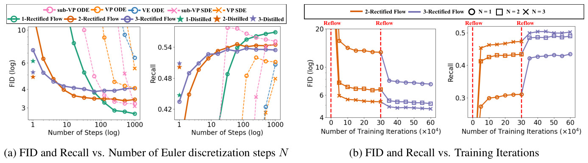<figcaption class="ltx_caption ltx_centering"><span class="ltx_tag ltx_tag_figure">Figure 8: </span>
(a) Results of rectified flows and (sub-)VP ODE on CIFAR10
with different number <math id="S5.F8.m6" class="ltx_Math" alttext="N" display="inline" intent=":literal"><semantics><mi>N</mi></semantics></math> of Euler discretization steps.
(b) The FID and recall during different reflow and training steps.
In (a), <em id="S5.F8.5" class="ltx_emph ltx_font_italic"><math id="S5.F8.m7" class="ltx_Math" alttext="k" display="inline" intent=":literal"><semantics><mi>k</mi></semantics></math>-Distilled</em> refers to the one-step model distilled from <em id="S5.F8.6" class="ltx_emph ltx_font_italic"><math id="S5.F8.m8" class="ltx_Math" alttext="k" display="inline" intent=":literal"><semantics><mi>k</mi></semantics></math>-Rectified Flow</em> for <math id="S5.F8.m9" class="ltx_Math" alttext="k=1,2,3" display="inline" intent=":literal"><semantics><mrow><mrow><mi>k</mi><mo>=</mo><mn>1</mn></mrow><mo>,</mo><mn>2</mn><mo>,</mo><mn>3</mn></mrow></semantics></math>.
</figcaption><div class="fzh"><b>图 8：</b>(a) Rectified Flow 与 (sub-)VP ODE 在 CIFAR10 上使用不同 Euler 离散化步数 <math class="ltx_Math" alttext="N" display="inline" intent=":literal"><semantics><mi>N</mi></semantics></math> 的结果。(b) 不同 reflow 步数和训练步数下的 FID 与召回率。(a) 中 <math class="ltx_Math" alttext="k" display="inline" intent=":literal"><semantics><mi>k</mi></semantics></math>-Distilled 指从 <math class="ltx_Math" alttext="k" display="inline" intent=":literal"><semantics><mi>k</mi></semantics></math>-Rectified Flow 蒸馏出的一步模型，<math class="ltx_Math" alttext="k=1,2,3" display="inline" intent=":literal"><semantics><mrow><mrow><mi>k</mi><mo>=</mo><mn>1</mn></mrow><mo>,</mo><mn>2</mn><mo>,</mo><mn>3</mn></mrow></semantics></math>。</div></figure></div>
<span class="lxa" id="S5.SS2.SSS0.Px2"></span><h4 class="ph" id="sresults">Results<span class="hzh">结果</span></h4>
<div class="blk">
    
    <p class="pp"><em id="S5.SS2.SSS0.Px2.p1.1.1" class="ltx_emph ltx_font_italic"><math id="S5.SS2.SSS0.Px2.p1.m1" class="ltx_Math" alttext="\bullet" display="inline" intent=":literal"><semantics><mo>∙</mo></semantics></math> Results of fully solved ODEs.</em>
As shown in Table <a href="#S5.T1" title="Table 1 ‣ Experiment settings ‣ 5.2 Unconditioned Image Generation ‣ 5 Experiments ‣ Flow Straight and Fast: Learning to Generate and Transfer Data with Rectified Flow" class="ltx_ref"><span class="ltx_text ltx_ref_tag">1</span></a> (a),
the 1-rectified flow
trained on the DDPM++ architecture, solved with RK45,
yields the lowest FID (<math id="S5.SS2.SSS0.Px2.p1.m2" class="ltx_Math" alttext="2.58" display="inline" intent=":literal"><semantics><mn>2.58</mn></semantics></math>) and highest recall (<math id="S5.SS2.SSS0.Px2.p1.m3" class="ltx_Math" alttext="0.57" display="inline" intent=":literal"><semantics><mn>0.57</mn></semantics></math>) among all the ODE-based methods.
In particular, the recall of 0.57 yields a substantial improvement over existing ODE and GAN methods.
Using the same RK45 ODE solver, rectified flows require fewer steps to generate the images compared with VE, VP, sub-VP ODEs.
The results are comparable to the fully simulated (sub-)VP SDE, which yields simulation cost.</p>
    <p class="pp zh" lang="zh-Hans"><math class="ltx_Math" alttext="\bullet" display="inline" intent=":literal"><semantics><mo>∙</mo></semantics></math> <b>完全求解 ODE 的结果。</b>如表 <a href="#S5.T1" title="Table 1 ‣ Experiment settings ‣ 5.2 Unconditioned Image Generation ‣ 5 Experiments ‣ Flow Straight and Fast: Learning to Generate and Transfer Data with Rectified Flow" class="ltx_ref"><span class="ltx_text ltx_ref_tag">1</span></a>(a) 所示，在 DDPM++ 结构上训练、用 RK45 求解的 1-Rectified Flow，在所有基于 ODE 的方法中 FID 最低（<math class="ltx_Math" alttext="2.58" display="inline" intent=":literal"><semantics><mn>2.58</mn></semantics></math>）、召回率最高（<math class="ltx_Math" alttext="0.57" display="inline" intent=":literal"><semantics><mn>0.57</mn></semantics></math>）。特别是 0.57 的召回率比现有的 ODE 和 GAN 方法有显著提升。使用同样的 RK45 ODE 求解器，Rectified Flow 生成图像所需的步数比 VE、VP、sub-VP ODE 更少。结果与完全模拟的 (sub-)VP SDE 相当，而后者需要很高的模拟开销。</p>
    
  </div>
<div class="floatbox"><figure id="S5.F9" class="ltx_figure ltx_align_floatright" style="width:44%;">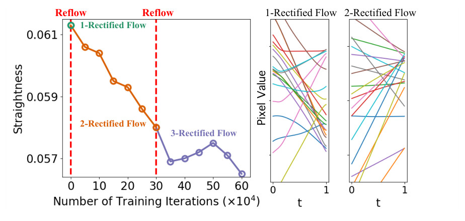<figcaption class="ltx_caption"><span class="ltx_tag ltx_tag_figure">Figure 9: </span>
The straightening effect on CIFAR10.
Left: the straightness measure on different reflow steps and training iterations.
Right: trajectories of randomly sampled pixels following 1- and 2-rectified flow.
</figcaption><div class="fzh"><b>图 9：</b>CIFAR10 上的拉直效应。左：不同 reflow 步数和训练迭代次数下的直度。右：随机抽取的像素沿 1-Rectified Flow 和 2-Rectified Flow 的轨迹。</div></figure></div>
<div class="blk">
    
    <p class="pp"><em id="S5.SS2.SSS0.Px2.p2.1.1" class="ltx_emph ltx_font_italic"><math id="S5.SS2.SSS0.Px2.p2.m1" class="ltx_Math" alttext="\bullet" display="inline" intent=":literal"><semantics><mo>∙</mo></semantics></math> Results on few and single step generation.</em>
As shown in Figure <a href="#S5.F8" title="Figure 8 ‣ Experiment settings ‣ 5.2 Unconditioned Image Generation ‣ 5 Experiments ‣ Flow Straight and Fast: Learning to Generate and Transfer Data with Rectified Flow" class="ltx_ref"><span class="ltx_text ltx_ref_tag">8</span></a>,
the reflow procedure substantially improves both FID and recall in the small step regime (e.g., <math id="S5.SS2.SSS0.Px2.p2.m2" class="ltx_Math" alttext="N{\scriptsize\lessapprox}80" display="inline" intent=":literal"><semantics><mrow><mi>N</mi><mo mathsize="0.700em">⪅</mo><mn>80</mn></mrow></semantics></math>), even though it worsens the results
in the large step regime due to the accumulation of error on estimating <math id="S5.SS2.SSS0.Px2.p2.m3" class="ltx_Math" alttext="v^{x}" display="inline" intent=":literal"><semantics><msup><mi>v</mi><mi>x</mi></msup></semantics></math>.
Figure <a href="#S5.F8" title="Figure 8 ‣ Experiment settings ‣ 5.2 Unconditioned Image Generation ‣ 5 Experiments ‣ Flow Straight and Fast: Learning to Generate and Transfer Data with Rectified Flow" class="ltx_ref"><span class="ltx_text ltx_ref_tag">8</span></a> (b) show that each reflow leads to a noticeable improvement in FID and recall.
For one-step generation <math id="S5.SS2.SSS0.Px2.p2.m4" class="ltx_Math" alttext="(N=1)" display="inline" intent=":literal"><semantics><mrow><mo stretchy="false">(</mo><mrow><mi>N</mi><mo>=</mo><mn>1</mn></mrow><mo stretchy="false">)</mo></mrow></semantics></math>,
the results are further boosted by distillation (see the stars in Figure <a href="#S5.F8" title="Figure 8 ‣ Experiment settings ‣ 5.2 Unconditioned Image Generation ‣ 5 Experiments ‣ Flow Straight and Fast: Learning to Generate and Transfer Data with Rectified Flow" class="ltx_ref"><span class="ltx_text ltx_ref_tag">8</span></a> (a)).
Overall, the distilled <math id="S5.SS2.SSS0.Px2.p2.m5" class="ltx_Math" alttext="k" display="inline" intent=":literal"><semantics><mi>k</mi></semantics></math>-Rectified Flow with <math id="S5.SS2.SSS0.Px2.p2.m6" class="ltx_Math" alttext="k=1,2,3" display="inline" intent=":literal"><semantics><mrow><mrow><mi>k</mi><mo>=</mo><mn>1</mn></mrow><mo>,</mo><mn>2</mn><mo>,</mo><mn>3</mn></mrow></semantics></math>
yield one-step generative models
beating all previous ODEs with distillation;
they also beat the reported results of one-step models with similar U-net type architectures
trained using GANs (see the <em id="S5.SS2.SSS0.Px2.p2.1.2" class="ltx_emph ltx_font_italic">GAN with U-Net</em> in Table <a href="#S5.T1" title="Table 1 ‣ Experiment settings ‣ 5.2 Unconditioned Image Generation ‣ 5 Experiments ‣ Flow Straight and Fast: Learning to Generate and Transfer Data with Rectified Flow" class="ltx_ref"><span class="ltx_text ltx_ref_tag">1</span></a> (b)).</p>
    <p class="pp zh" lang="zh-Hans"><math class="ltx_Math" alttext="\bullet" display="inline" intent=":literal"><semantics><mo>∙</mo></semantics></math> <b>少步和单步生成的结果。</b>如图 <a href="#S5.F8" title="Figure 8 ‣ Experiment settings ‣ 5.2 Unconditioned Image Generation ‣ 5 Experiments ‣ Flow Straight and Fast: Learning to Generate and Transfer Data with Rectified Flow" class="ltx_ref"><span class="ltx_text ltx_ref_tag">8</span></a> 所示，reflow 过程在小步数区间（例如 <math class="ltx_Math" alttext="N{\scriptsize\lessapprox}80" display="inline" intent=":literal"><semantics><mrow><mi>N</mi><mo mathsize="0.700em">⪅</mo><mn>80</mn></mrow></semantics></math>）显著改善了 FID 和召回率，尽管由于 <math class="ltx_Math" alttext="v^{x}" display="inline" intent=":literal"><semantics><msup><mi>v</mi><mi>x</mi></msup></semantics></math> 估计误差的累积，它在大步数区间使结果变差。图 <a href="#S5.F8" title="Figure 8 ‣ Experiment settings ‣ 5.2 Unconditioned Image Generation ‣ 5 Experiments ‣ Flow Straight and Fast: Learning to Generate and Transfer Data with Rectified Flow" class="ltx_ref"><span class="ltx_text ltx_ref_tag">8</span></a>(b) 显示每次 reflow 都带来 FID 和召回率的明显改善。对一步生成 <math class="ltx_Math" alttext="(N=1)" display="inline" intent=":literal"><semantics><mrow><mo stretchy="false">(</mo><mrow><mi>N</mi><mo>=</mo><mn>1</mn></mrow><mo stretchy="false">)</mo></mrow></semantics></math>，蒸馏进一步提升了结果（见图 <a href="#S5.F8" title="Figure 8 ‣ Experiment settings ‣ 5.2 Unconditioned Image Generation ‣ 5 Experiments ‣ Flow Straight and Fast: Learning to Generate and Transfer Data with Rectified Flow" class="ltx_ref"><span class="ltx_text ltx_ref_tag">8</span></a>(a) 中的星号）。总体而言，<math class="ltx_Math" alttext="k=1,2,3" display="inline" intent=":literal"><semantics><mrow><mrow><mi>k</mi><mo>=</mo><mn>1</mn></mrow><mo>,</mo><mn>2</mn><mo>,</mo><mn>3</mn></mrow></semantics></math> 的蒸馏 <math class="ltx_Math" alttext="k" display="inline" intent=":literal"><semantics><mi>k</mi></semantics></math>-Rectified Flow 得到的一步生成模型胜过此前所有经过蒸馏的 ODE；它们也胜过已报告的、用 GAN 训练的类似 U-Net 结构一步模型（见表 <a href="#S5.T1" title="Table 1 ‣ Experiment settings ‣ 5.2 Unconditioned Image Generation ‣ 5 Experiments ‣ Flow Straight and Fast: Learning to Generate and Transfer Data with Rectified Flow" class="ltx_ref"><span class="ltx_text ltx_ref_tag">1</span></a>(b) 中带 U-Net 的 GAN）。</p>
    
  </div>
<div class="blk">
    
    <p class="pp">In particular,
the distilled 2-rectified flow achieves an FID of <math id="S5.SS2.SSS0.Px2.p3.m1" class="ltx_Math" alttext="4.85" display="inline" intent=":literal"><semantics><mn>4.85</mn></semantics></math>, beating the best known one-step generative model with U-net architecture, <math id="S5.SS2.SSS0.Px2.p3.m2" class="ltx_Math" alttext="8.91" display="inline" intent=":literal"><semantics><mn>8.91</mn></semantics></math> (TDPM, Table <a href="#S5.T1" title="Table 1 ‣ Experiment settings ‣ 5.2 Unconditioned Image Generation ‣ 5 Experiments ‣ Flow Straight and Fast: Learning to Generate and Transfer Data with Rectified Flow" class="ltx_ref"><span class="ltx_text ltx_ref_tag">1</span></a> (b)).
The recalls of
both 2-rectified flow (<math id="S5.SS2.SSS0.Px2.p3.m3" class="ltx_Math" alttext="0.50" display="inline" intent=":literal"><semantics><mn>0.50</mn></semantics></math>) and 3-rectified flow (<math id="S5.SS2.SSS0.Px2.p3.m4" class="ltx_Math" alttext="0.51" display="inline" intent=":literal"><semantics><mn>0.51</mn></semantics></math>) outperform the best known results of GANs (<math id="S5.SS2.SSS0.Px2.p3.m5" class="ltx_Math" alttext="0.49" display="inline" intent=":literal"><semantics><mn>0.49</mn></semantics></math> from StyleGAN2+ADA)
showing an advantage in diversity.
We should note that the reported results of GANs have been carefully optimized
with special techniques such as adaptive discriminator augmentation (ADA) <cite class="ltx_cite ltx_citemacro_citep">[<a href="#bib.bib28" title="" class="ltx_ref">28</a>]</cite>, while our results are
based on the vanilla implementation of rectified flow.
It is likely to further improve rectified flow with proper data augmentation techniques, or the combination of GANs such as
those proposed by TDPM <cite class="ltx_cite ltx_citemacro_citep">[<a href="#bib.bib99" title="" class="ltx_ref">99</a>]</cite> and denoising diffusion GAN <cite class="ltx_cite ltx_citemacro_citep">[<a href="#bib.bib91" title="" class="ltx_ref">91</a>]</cite>.</p>
    <p class="pp zh" lang="zh-Hans">特别地，蒸馏的 2-Rectified Flow 取得了 <math class="ltx_Math" alttext="4.85" display="inline" intent=":literal"><semantics><mn>4.85</mn></semantics></math> 的 FID，胜过此前已知最好的 U-Net 结构一步生成模型的 <math class="ltx_Math" alttext="8.91" display="inline" intent=":literal"><semantics><mn>8.91</mn></semantics></math>（TDPM，表 <a href="#S5.T1" title="Table 1 ‣ Experiment settings ‣ 5.2 Unconditioned Image Generation ‣ 5 Experiments ‣ Flow Straight and Fast: Learning to Generate and Transfer Data with Rectified Flow" class="ltx_ref"><span class="ltx_text ltx_ref_tag">1</span></a>(b)）。2-Rectified Flow（<math class="ltx_Math" alttext="0.50" display="inline" intent=":literal"><semantics><mn>0.50</mn></semantics></math>）和 3-Rectified Flow（<math class="ltx_Math" alttext="0.51" display="inline" intent=":literal"><semantics><mn>0.51</mn></semantics></math>）的召回率都超过了 GAN 已知的最好结果（StyleGAN2+ADA 的 <math class="ltx_Math" alttext="0.49" display="inline" intent=":literal"><semantics><mn>0.49</mn></semantics></math>），显示出多样性上的优势。需要指出，GAN 的报告结果用自适应判别器增强 (Adaptive Discriminator Augmentation, ADA) <cite class="ltx_cite ltx_citemacro_citep">[<a href="#bib.bib28" title="" class="ltx_ref">28</a>]</cite> 等专门技术仔细优化过，而我们的结果基于 Rectified Flow 的原始实现。借助合适的数据增强技术，或者与 GAN 结合（例如 TDPM <cite class="ltx_cite ltx_citemacro_citep">[<a href="#bib.bib99" title="" class="ltx_ref">99</a>]</cite> 和去噪扩散 GAN <cite class="ltx_cite ltx_citemacro_citep">[<a href="#bib.bib91" title="" class="ltx_ref">91</a>]</cite> 提出的方法），Rectified Flow 很可能还能进一步改进。</p>
    
  </div>
<div class="blk">
    
    <p class="pp"><em id="S5.SS2.SSS0.Px2.p4.1.1" class="ltx_emph ltx_font_italic"><math id="S5.SS2.SSS0.Px2.p4.m1" class="ltx_Math" alttext="\bullet" display="inline" intent=":literal"><semantics><mo>∙</mo></semantics></math> Reflow straightens the flow.</em>
Figure <a href="#S5.F9" title="Figure 9 ‣ Results ‣ 5.2 Unconditioned Image Generation ‣ 5 Experiments ‣ Flow Straight and Fast: Learning to Generate and Transfer Data with Rectified Flow" class="ltx_ref"><span class="ltx_text ltx_ref_tag">9</span></a> shows the reflow procedure decreases improves the straightness of the flow on CIFAR10.
In Figure <a href="#S5.F10" title="Figure 10 ‣ High-resolution image generation ‣ 5.2 Unconditioned Image Generation ‣ 5 Experiments ‣ Flow Straight and Fast: Learning to Generate and Transfer Data with Rectified Flow" class="ltx_ref"><span class="ltx_text ltx_ref_tag">10</span></a> visualizes the trajectories of 1-rectified flow and 2-rectified flow on the AFHQ cat dataset:
at each point <math id="S5.SS2.SSS0.Px2.p4.m2" class="ltx_Math" alttext="z_{t}" display="inline" intent=":literal"><semantics><msub><mi>z</mi><mi>t</mi></msub></semantics></math>, we extrapolate the terminal value at <math id="S5.SS2.SSS0.Px2.p4.m3" class="ltx_Math" alttext="t=1" display="inline" intent=":literal"><semantics><mrow><mi>t</mi><mo>=</mo><mn>1</mn></mrow></semantics></math> by
<math id="S5.SS2.SSS0.Px2.p4.m4" class="ltx_Math" alttext="\hat{z}_{1}^{t}=z_{t}+(1-t)v(z_{t},t)" display="inline" intent=":literal"><semantics><mrow><msubsup><mover accent="true"><mi>z</mi><mo>^</mo></mover><mn>1</mn><mi>t</mi></msubsup><mo>=</mo><mrow><msub><mi>z</mi><mi>t</mi></msub><mo>+</mo><mrow><mrow><mo stretchy="false">(</mo><mrow><mn>1</mn><mo>−</mo><mi>t</mi></mrow><mo stretchy="false">)</mo></mrow><mo lspace="0em" rspace="0em">​</mo><mi>v</mi><mo lspace="0em" rspace="0em">​</mo><mrow><mo stretchy="false">(</mo><msub><mi>z</mi><mi>t</mi></msub><mo>,</mo><mi>t</mi><mo stretchy="false">)</mo></mrow></mrow></mrow></mrow></semantics></math>;
if the trajectory of ODE follows a straight line,
<math id="S5.SS2.SSS0.Px2.p4.m5" class="ltx_Math" alttext="\hat{z}_{1}^{t}" display="inline" intent=":literal"><semantics><msubsup><mover accent="true"><mi>z</mi><mo>^</mo></mover><mn>1</mn><mi>t</mi></msubsup></semantics></math> should not change as we vary <math id="S5.SS2.SSS0.Px2.p4.m6" class="ltx_Math" alttext="t" display="inline" intent=":literal"><semantics><mi>t</mi></semantics></math> when following the same path.
We observe that <math id="S5.SS2.SSS0.Px2.p4.m7" class="ltx_Math" alttext="\hat{z}_{1}^{t}" display="inline" intent=":literal"><semantics><msubsup><mover accent="true"><mi>z</mi><mo>^</mo></mover><mn>1</mn><mi>t</mi></msubsup></semantics></math> is almost independent with <math id="S5.SS2.SSS0.Px2.p4.m8" class="ltx_Math" alttext="t" display="inline" intent=":literal"><semantics><mi>t</mi></semantics></math> for 2-rectified flow,
showing the path is almost straight.
Moreover, even though 1-rectified flow is not straight with <math id="S5.SS2.SSS0.Px2.p4.m9" class="ltx_Math" alttext="\hat{z}_{1}^{t}" display="inline" intent=":literal"><semantics><msubsup><mover accent="true"><mi>z</mi><mo>^</mo></mover><mn>1</mn><mi>t</mi></msubsup></semantics></math> over time,
it still yields recognizable and clear images very early (<math id="S5.SS2.SSS0.Px2.p4.m10" class="ltx_Math" alttext="t\approx 0.1" display="inline" intent=":literal"><semantics><mrow><mi>t</mi><mo>≈</mo><mn>0.1</mn></mrow></semantics></math>).
In comparison,
it is need <math id="S5.SS2.SSS0.Px2.p4.m11" class="ltx_Math" alttext="t\approx 0.6" display="inline" intent=":literal"><semantics><mrow><mi>t</mi><mo>≈</mo><mn>0.6</mn></mrow></semantics></math> to get a clear image
from the extrapolation of sub-VP ODE.</p>
    <p class="pp zh" lang="zh-Hans"><math class="ltx_Math" alttext="\bullet" display="inline" intent=":literal"><semantics><mo>∙</mo></semantics></math> <b>Reflow 拉直流。</b>图 <a href="#S5.F9" title="Figure 9 ‣ Results ‣ 5.2 Unconditioned Image Generation ‣ 5 Experiments ‣ Flow Straight and Fast: Learning to Generate and Transfer Data with Rectified Flow" class="ltx_ref"><span class="ltx_text ltx_ref_tag">9</span></a> 显示 reflow 过程提高了 CIFAR10 上流的直度。图 <a href="#S5.F10" title="Figure 10 ‣ High-resolution image generation ‣ 5.2 Unconditioned Image Generation ‣ 5 Experiments ‣ Flow Straight and Fast: Learning to Generate and Transfer Data with Rectified Flow" class="ltx_ref"><span class="ltx_text ltx_ref_tag">10</span></a> 可视化了 1-Rectified Flow 和 2-Rectified Flow 在 AFHQ 猫数据集上的轨迹：在每个点 <math class="ltx_Math" alttext="z_{t}" display="inline" intent=":literal"><semantics><msub><mi>z</mi><mi>t</mi></msub></semantics></math>，用 <math class="ltx_Math" alttext="\hat{z}_{1}^{t}=z_{t}+(1-t)v(z_{t},t)" display="inline" intent=":literal"><semantics><mrow><msubsup><mover accent="true"><mi>z</mi><mo>^</mo></mover><mn>1</mn><mi>t</mi></msubsup><mo>=</mo><mrow><msub><mi>z</mi><mi>t</mi></msub><mo>+</mo><mrow><mrow><mo stretchy="false">(</mo><mrow><mn>1</mn><mo>−</mo><mi>t</mi></mrow><mo stretchy="false">)</mo></mrow><mo lspace="0em" rspace="0em">​</mo><mi>v</mi><mo lspace="0em" rspace="0em">​</mo><mrow><mo stretchy="false">(</mo><msub><mi>z</mi><mi>t</mi></msub><mo>,</mo><mi>t</mi><mo stretchy="false">)</mo></mrow></mrow></mrow></mrow></semantics></math> 外推 <math class="ltx_Math" alttext="t=1" display="inline" intent=":literal"><semantics><mrow><mi>t</mi><mo>=</mo><mn>1</mn></mrow></semantics></math> 时的终值；如果 ODE 的轨迹是直线，沿同一条路径改变 <math class="ltx_Math" alttext="t" display="inline" intent=":literal"><semantics><mi>t</mi></semantics></math> 时 <math class="ltx_Math" alttext="\hat{z}_{1}^{t}" display="inline" intent=":literal"><semantics><msubsup><mover accent="true"><mi>z</mi><mo>^</mo></mover><mn>1</mn><mi>t</mi></msubsup></semantics></math> 应该不变。我们观察到，对 2-Rectified Flow，<math class="ltx_Math" alttext="\hat{z}_{1}^{t}" display="inline" intent=":literal"><semantics><msubsup><mover accent="true"><mi>z</mi><mo>^</mo></mover><mn>1</mn><mi>t</mi></msubsup></semantics></math> 几乎与 <math class="ltx_Math" alttext="t" display="inline" intent=":literal"><semantics><mi>t</mi></semantics></math> 无关，说明路径几乎是直的。此外，虽然 1-Rectified Flow 不直，<math class="ltx_Math" alttext="\hat{z}_{1}^{t}" display="inline" intent=":literal"><semantics><msubsup><mover accent="true"><mi>z</mi><mo>^</mo></mover><mn>1</mn><mi>t</mi></msubsup></semantics></math> 随时间变化，但它很早（<math class="ltx_Math" alttext="t\approx 0.1" display="inline" intent=":literal"><semantics><mrow><mi>t</mi><mo>≈</mo><mn>0.1</mn></mrow></semantics></math>）就能给出可辨认的清晰图像。相比之下，sub-VP ODE 的外推要到 <math class="ltx_Math" alttext="t\approx 0.6" display="inline" intent=":literal"><semantics><mrow><mi>t</mi><mo>≈</mo><mn>0.6</mn></mrow></semantics></math> 才能得到清晰图像。</p>
    
  </div>
<span class="lxa" id="S5.SS2.SSS0.Px3"></span><h4 class="ph" id="shigh-resolution-image-generation">High-resolution image generation<span class="hzh">高分辨率图像生成</span></h4>
<div class="blk">
    
    <p class="pp">Figure <a href="#S5.F11" title="Figure 11 ‣ High-resolution image generation ‣ 5.2 Unconditioned Image Generation ‣ 5 Experiments ‣ Flow Straight and Fast: Learning to Generate and Transfer Data with Rectified Flow" class="ltx_ref"><span class="ltx_text ltx_ref_tag">11</span></a> shows the result of 1-rectified flow on image generation
on high-resolution (<math id="S5.SS2.SSS0.Px3.p1.m1" class="ltx_Math" alttext="256\times 256" display="inline" intent=":literal"><semantics><mrow><mn>256</mn><mo lspace="0.222em" rspace="0.222em">×</mo><mn>256</mn></mrow></semantics></math>) datasets, including
LSUN Bedroom <cite class="ltx_cite ltx_citemacro_citep">[<a href="#bib.bib93" title="" class="ltx_ref">93</a>]</cite>, LSUN Church <cite class="ltx_cite ltx_citemacro_citep">[<a href="#bib.bib93" title="" class="ltx_ref">93</a>]</cite>, CelebA HQ <cite class="ltx_cite ltx_citemacro_citep">[<a href="#bib.bib27" title="" class="ltx_ref">27</a>]</cite> to AFHQ Cat <cite class="ltx_cite ltx_citemacro_citep">[<a href="#bib.bib9" title="" class="ltx_ref">9</a>]</cite>. We can see that it can generate high quality results across the different datasets.
Figure <a href="#S1.F1" title="Figure 1 ‣ 1 Introduction ‣ Flow Straight and Fast: Learning to Generate and Transfer Data with Rectified Flow" class="ltx_ref"><span class="ltx_text ltx_ref_tag">1</span></a> &amp; <a href="#S5.F10" title="Figure 10 ‣ High-resolution image generation ‣ 5.2 Unconditioned Image Generation ‣ 5 Experiments ‣ Flow Straight and Fast: Learning to Generate and Transfer Data with Rectified Flow" class="ltx_ref"><span class="ltx_text ltx_ref_tag">10</span></a> show that
1-(2-)rectified flow yields good results within one or few Euler steps.</p>
    <p class="pp zh" lang="zh-Hans">图 <a href="#S5.F11" title="Figure 11 ‣ High-resolution image generation ‣ 5.2 Unconditioned Image Generation ‣ 5 Experiments ‣ Flow Straight and Fast: Learning to Generate and Transfer Data with Rectified Flow" class="ltx_ref"><span class="ltx_text ltx_ref_tag">11</span></a> 给出 1-Rectified Flow 在高分辨率（<math class="ltx_Math" alttext="256\times 256" display="inline" intent=":literal"><semantics><mrow><mn>256</mn><mo lspace="0.222em" rspace="0.222em">×</mo><mn>256</mn></mrow></semantics></math>）数据集上的图像生成结果，包括 LSUN Bedroom <cite class="ltx_cite ltx_citemacro_citep">[<a href="#bib.bib93" title="" class="ltx_ref">93</a>]</cite>、LSUN Church <cite class="ltx_cite ltx_citemacro_citep">[<a href="#bib.bib93" title="" class="ltx_ref">93</a>]</cite>、CelebA HQ <cite class="ltx_cite ltx_citemacro_citep">[<a href="#bib.bib27" title="" class="ltx_ref">27</a>]</cite> 和 AFHQ Cat <cite class="ltx_cite ltx_citemacro_citep">[<a href="#bib.bib9" title="" class="ltx_ref">9</a>]</cite>。可以看到，它在不同数据集上都能生成高质量的结果。图 <a href="#S1.F1" title="Figure 1 ‣ 1 Introduction ‣ Flow Straight and Fast: Learning to Generate and Transfer Data with Rectified Flow" class="ltx_ref"><span class="ltx_text ltx_ref_tag">1</span></a> 和图 <a href="#S5.F10" title="Figure 10 ‣ High-resolution image generation ‣ 5.2 Unconditioned Image Generation ‣ 5 Experiments ‣ Flow Straight and Fast: Learning to Generate and Transfer Data with Rectified Flow" class="ltx_ref"><span class="ltx_text ltx_ref_tag">10</span></a> 显示 1-（2-）Rectified Flow 在一个或几个 Euler 步内就能给出好的结果。</p>
    
  </div>
<div class="blk">
    
    <p class="pp">Figure <a href="#S5.F12" title="Figure 12 ‣ High-resolution image generation ‣ 5.2 Unconditioned Image Generation ‣ 5 Experiments ‣ Flow Straight and Fast: Learning to Generate and Transfer Data with Rectified Flow" class="ltx_ref"><span class="ltx_text ltx_ref_tag">12</span></a> shows a simple example of image editing using 1-rectified flow:
We first obtain an unnatural image <math id="S5.SS2.SSS0.Px3.p2.m1" class="ltx_Math" alttext="z_{1}" display="inline" intent=":literal"><semantics><msub><mi>z</mi><mn>1</mn></msub></semantics></math> by stitching the upper and lower parts of two natural images,
and then run 1-rectified flow backwards to get a latent code <math id="S5.SS2.SSS0.Px3.p2.m2" class="ltx_Math" alttext="z_{0}" display="inline" intent=":literal"><semantics><msub><mi>z</mi><mn>0</mn></msub></semantics></math>.
We then modify <math id="S5.SS2.SSS0.Px3.p2.m3" class="ltx_Math" alttext="z_{0}" display="inline" intent=":literal"><semantics><msub><mi>z</mi><mn>0</mn></msub></semantics></math> to increase its likelihood under <math id="S5.SS2.SSS0.Px3.p2.m4" class="ltx_Math" alttext="{\pi}_{0}" display="inline" intent=":literal"><semantics><msub><mi>π</mi><mn>0</mn></msub></semantics></math> (which is <math id="S5.SS2.SSS0.Px3.p2.m5" class="ltx_Math" alttext="\mathcal{N}(0,I)" display="inline" intent=":literal"><semantics><mrow><mi class="ltx_font_mathcaligraphic">𝒩</mi><mo>⁡</mo><mrow><mo stretchy="false">(</mo><mn>0</mn><mo>,</mo><mi>I</mi><mo stretchy="false">)</mo></mrow></mrow></semantics></math>)
to get more naturally looking variants of the stitched image.</p>
    <p class="pp zh" lang="zh-Hans">图 <a href="#S5.F12" title="Figure 12 ‣ High-resolution image generation ‣ 5.2 Unconditioned Image Generation ‣ 5 Experiments ‣ Flow Straight and Fast: Learning to Generate and Transfer Data with Rectified Flow" class="ltx_ref"><span class="ltx_text ltx_ref_tag">12</span></a> 给出用 1-Rectified Flow 做图像编辑的一个简单例子：先把两张自然图像的上半部分和下半部分拼接成一张不自然的图像 <math class="ltx_Math" alttext="z_{1}" display="inline" intent=":literal"><semantics><msub><mi>z</mi><mn>1</mn></msub></semantics></math>，再反向运行 1-Rectified Flow 得到隐编码 <math class="ltx_Math" alttext="z_{0}" display="inline" intent=":literal"><semantics><msub><mi>z</mi><mn>0</mn></msub></semantics></math>。然后修改 <math class="ltx_Math" alttext="z_{0}" display="inline" intent=":literal"><semantics><msub><mi>z</mi><mn>0</mn></msub></semantics></math>，提高它在 <math class="ltx_Math" alttext="{\pi}_{0}" display="inline" intent=":literal"><semantics><msub><mi>π</mi><mn>0</mn></msub></semantics></math>（即 <math class="ltx_Math" alttext="\mathcal{N}(0,I)" display="inline" intent=":literal"><semantics><mrow><mi class="ltx_font_mathcaligraphic">𝒩</mi><mo>⁡</mo><mrow><mo stretchy="false">(</mo><mn>0</mn><mo>,</mo><mi>I</mi><mo stretchy="false">)</mo></mrow></mrow></semantics></math>）下的似然，得到拼接图像更自然的变体。</p>
    
  </div>
<div class="floatbox"><figure id="S5.F10" class="ltx_figure">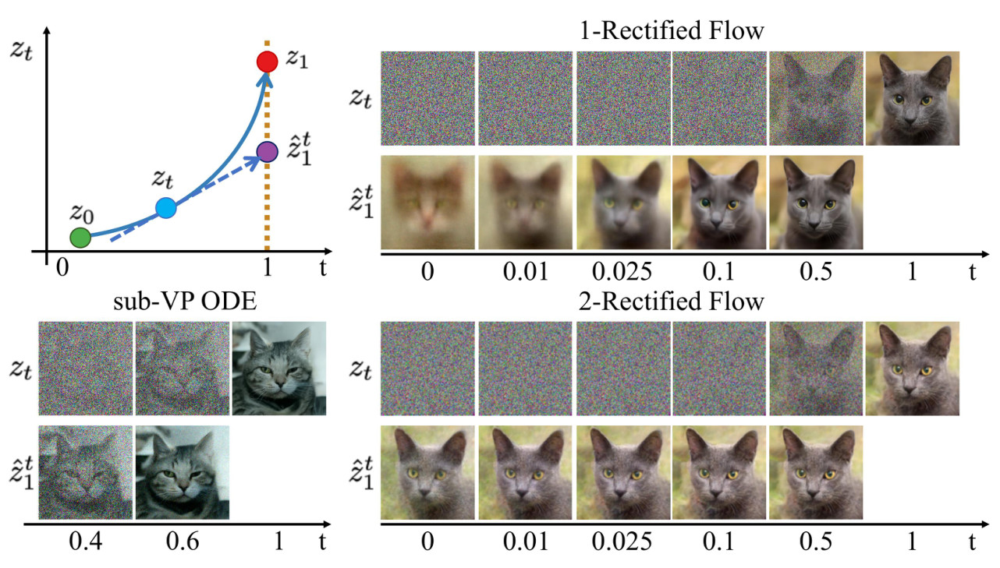<figcaption class="ltx_caption ltx_centering"><span class="ltx_tag ltx_tag_figure">Figure 10: </span>
Sample trajectories <math id="S5.F10.m6" class="ltx_Math" alttext="z_{t}" display="inline" intent=":literal"><semantics><msub><mi>z</mi><mi>t</mi></msub></semantics></math> of different flows on the AFHQ Cat dataset, and the extrapolation <math id="S5.F10.m7" class="ltx_Math" alttext="\hat{z}_{1}^{t}=z_{t}+(1-t)v(z_{t},t)" display="inline" intent=":literal"><semantics><mrow><msubsup><mover accent="true"><mi>z</mi><mo>^</mo></mover><mn>1</mn><mi>t</mi></msubsup><mo>=</mo><mrow><msub><mi>z</mi><mi>t</mi></msub><mo>+</mo><mrow><mrow><mo stretchy="false">(</mo><mrow><mn>1</mn><mo>−</mo><mi>t</mi></mrow><mo stretchy="false">)</mo></mrow><mo lspace="0em" rspace="0em">​</mo><mi>v</mi><mo lspace="0em" rspace="0em">​</mo><mrow><mo stretchy="false">(</mo><msub><mi>z</mi><mi>t</mi></msub><mo>,</mo><mi>t</mi><mo stretchy="false">)</mo></mrow></mrow></mrow></mrow></semantics></math> from different <math id="S5.F10.m8" class="ltx_Math" alttext="z_{t}" display="inline" intent=":literal"><semantics><msub><mi>z</mi><mi>t</mi></msub></semantics></math>. The same random seed is adopted for all three methods. The <math id="S5.F10.m9" class="ltx_Math" alttext="\hat{z}_{1}^{t}" display="inline" intent=":literal"><semantics><msubsup><mover accent="true"><mi>z</mi><mo>^</mo></mover><mn>1</mn><mi>t</mi></msubsup></semantics></math> of 2-rectified flow is almost independent with <math id="S5.F10.m10" class="ltx_Math" alttext="t" display="inline" intent=":literal"><semantics><mi>t</mi></semantics></math>, indicating that its trajectory is almost straight.
</figcaption><div class="fzh"><b>图 10：</b>不同流在 AFHQ 猫数据集上的轨迹样本 <math class="ltx_Math" alttext="z_{t}" display="inline" intent=":literal"><semantics><msub><mi>z</mi><mi>t</mi></msub></semantics></math>，以及从不同 <math class="ltx_Math" alttext="z_{t}" display="inline" intent=":literal"><semantics><msub><mi>z</mi><mi>t</mi></msub></semantics></math> 出发的外推 <math class="ltx_Math" alttext="\hat{z}_{1}^{t}=z_{t}+(1-t)v(z_{t},t)" display="inline" intent=":literal"><semantics><mrow><msubsup><mover accent="true"><mi>z</mi><mo>^</mo></mover><mn>1</mn><mi>t</mi></msubsup><mo>=</mo><mrow><msub><mi>z</mi><mi>t</mi></msub><mo>+</mo><mrow><mrow><mo stretchy="false">(</mo><mrow><mn>1</mn><mo>−</mo><mi>t</mi></mrow><mo stretchy="false">)</mo></mrow><mo lspace="0em" rspace="0em">​</mo><mi>v</mi><mo lspace="0em" rspace="0em">​</mo><mrow><mo stretchy="false">(</mo><msub><mi>z</mi><mi>t</mi></msub><mo>,</mo><mi>t</mi><mo stretchy="false">)</mo></mrow></mrow></mrow></mrow></semantics></math>。三种方法使用相同的随机种子。2-Rectified Flow 的 <math class="ltx_Math" alttext="\hat{z}_{1}^{t}" display="inline" intent=":literal"><semantics><msubsup><mover accent="true"><mi>z</mi><mo>^</mo></mover><mn>1</mn><mi>t</mi></msubsup></semantics></math> 几乎与 <math class="ltx_Math" alttext="t" display="inline" intent=":literal"><semantics><mi>t</mi></semantics></math> 无关，说明它的轨迹几乎是直的。</div></figure></div>
<div class="floatbox"><figure id="S5.F11" class="ltx_figure">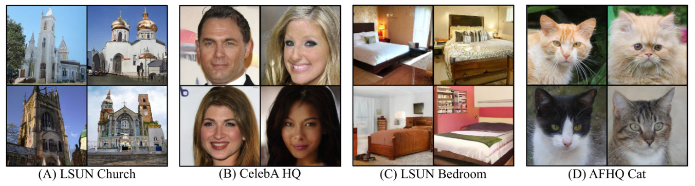<figcaption class="ltx_caption ltx_centering"><span class="ltx_tag ltx_tag_figure">Figure 11: </span>Examples of <math id="S5.F11.m2" class="ltx_Math" alttext="256\times 256" display="inline" intent=":literal"><semantics><mrow><mn>256</mn><mo lspace="0.222em" rspace="0.222em">×</mo><mn>256</mn></mrow></semantics></math> images generated by 1-rectified flow.</figcaption><div class="fzh"><b>图 11：</b>1-Rectified Flow 生成的 <math class="ltx_Math" alttext="256\times 256" display="inline" intent=":literal"><semantics><mrow><mn>256</mn><mo lspace="0.222em" rspace="0.222em">×</mo><mn>256</mn></mrow></semantics></math> 图像示例。</div></figure></div>
<div class="floatbox"><figure id="S5.F12" class="ltx_figure">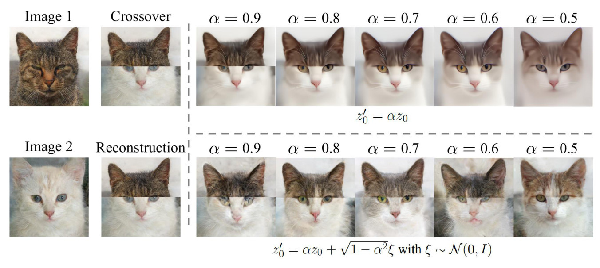<figcaption class="ltx_caption ltx_centering"><span class="ltx_tag ltx_tag_figure">Figure 12: </span>An example of image editing using 1-rectified flow.
Here, we stitch the images of a white cat and a black cat into an unnatural image (denoted as <math id="S5.F12.m16" class="ltx_Math" alttext="z_{1}" display="inline" intent=":literal"><semantics><msub><mi>z</mi><mn>1</mn></msub></semantics></math>).
We simulate the ODE reversely from <math id="S5.F12.m17" class="ltx_Math" alttext="z_{1}" display="inline" intent=":literal"><semantics><msub><mi>z</mi><mn>1</mn></msub></semantics></math> to get the latent code <math id="S5.F12.m18" class="ltx_Math" alttext="z_{0}" display="inline" intent=":literal"><semantics><msub><mi>z</mi><mn>0</mn></msub></semantics></math>. Because <math id="S5.F12.m19" class="ltx_Math" alttext="z_{1}" display="inline" intent=":literal"><semantics><msub><mi>z</mi><mn>1</mn></msub></semantics></math> is not a natural image, <math id="S5.F12.m20" class="ltx_Math" alttext="z_{0}" display="inline" intent=":literal"><semantics><msub><mi>z</mi><mn>0</mn></msub></semantics></math> should have low likelihood under <math id="S5.F12.m21" class="ltx_Math" alttext="{\pi}_{0}=\mathcal{N}(0,I)" display="inline" intent=":literal"><semantics><mrow><msub><mi>π</mi><mn>0</mn></msub><mo>=</mo><mrow><mi class="ltx_font_mathcaligraphic">𝒩</mi><mo>⁡</mo><mrow><mo stretchy="false">(</mo><mn>0</mn><mo>,</mo><mi>I</mi><mo stretchy="false">)</mo></mrow></mrow></mrow></semantics></math>.
Hence, we move <math id="S5.F12.m22" class="ltx_Math" alttext="z_{0}" display="inline" intent=":literal"><semantics><msub><mi>z</mi><mn>0</mn></msub></semantics></math> towards the high probability region of <math id="S5.F12.m23" class="ltx_Math" alttext="{\pi}_{0}" display="inline" intent=":literal"><semantics><msub><mi>π</mi><mn>0</mn></msub></semantics></math> to get <math id="S5.F12.m24" class="ltx_Math" alttext="z_{0}^{\prime}" display="inline" intent=":literal"><semantics><msubsup><mi>z</mi><mn>0</mn><mo>′</mo></msubsup></semantics></math> and solve the ODE forwardly to get a more realistically looking image <math id="S5.F12.m25" class="ltx_Math" alttext="z_{1}^{\prime}" display="inline" intent=":literal"><semantics><msubsup><mi>z</mi><mn>1</mn><mo>′</mo></msubsup></semantics></math>.
The modification can be done deterministically by improving the <math id="S5.F12.m26" class="ltx_Math" alttext="{\pi}_{0}" display="inline" intent=":literal"><semantics><msub><mi>π</mi><mn>0</mn></msub></semantics></math>-likelihood via <math id="S5.F12.m27" class="ltx_Math" alttext="z_{0}^{\prime}=\alpha z_{0}" display="inline" intent=":literal"><semantics><mrow><msubsup><mi>z</mi><mn>0</mn><mo>′</mo></msubsup><mo>=</mo><mrow><mi>α</mi><mo lspace="0em" rspace="0em">​</mo><msub><mi>z</mi><mn>0</mn></msub></mrow></mrow></semantics></math> with <math id="S5.F12.m28" class="ltx_Math" alttext="\alpha\in(0,1)" display="inline" intent=":literal"><semantics><mrow><mi>α</mi><mo>∈</mo><mrow><mo stretchy="false">(</mo><mn>0</mn><mo>,</mo><mn>1</mn><mo stretchy="false">)</mo></mrow></mrow></semantics></math>, or
stochastically by Langevin dynamics,
which yields a formula of
<math id="S5.F12.m29" class="ltx_Math" alttext="z^{\prime}_{0}=\alpha z_{0}+\sqrt{1-\alpha^{2}}\xi" display="inline" intent=":literal"><semantics><mrow><msubsup><mi>z</mi><mn>0</mn><mo>′</mo></msubsup><mo>=</mo><mrow><mrow><mi>α</mi><mo lspace="0em" rspace="0em">​</mo><msub><mi>z</mi><mn>0</mn></msub></mrow><mo>+</mo><mrow><msqrt><mrow><mn>1</mn><mo>−</mo><msup><mi>α</mi><mn>2</mn></msup></mrow></msqrt><mo lspace="0em" rspace="0em">​</mo><mi>ξ</mi></mrow></mrow></mrow></semantics></math> with <math id="S5.F12.m30" class="ltx_Math" alttext="\xi\sim\mathcal{N}(0,I)" display="inline" intent=":literal"><semantics><mrow><mi>ξ</mi><mo>∼</mo><mrow><mi class="ltx_font_mathcaligraphic">𝒩</mi><mo>⁡</mo><mrow><mo stretchy="false">(</mo><mn>0</mn><mo>,</mo><mi>I</mi><mo stretchy="false">)</mo></mrow></mrow></mrow></semantics></math>.
</figcaption><div class="fzh"><b>图 12：</b>用 1-Rectified Flow 做图像编辑的例子。这里把一只白猫和一只黑猫的图像拼成一张不自然的图像（记为 <math class="ltx_Math" alttext="z_{1}" display="inline" intent=":literal"><semantics><msub><mi>z</mi><mn>1</mn></msub></semantics></math>）。从 <math class="ltx_Math" alttext="z_{1}" display="inline" intent=":literal"><semantics><msub><mi>z</mi><mn>1</mn></msub></semantics></math> 反向模拟 ODE，得到隐编码 <math class="ltx_Math" alttext="z_{0}" display="inline" intent=":literal"><semantics><msub><mi>z</mi><mn>0</mn></msub></semantics></math>。由于 <math class="ltx_Math" alttext="z_{1}" display="inline" intent=":literal"><semantics><msub><mi>z</mi><mn>1</mn></msub></semantics></math> 不是自然图像，<math class="ltx_Math" alttext="z_{0}" display="inline" intent=":literal"><semantics><msub><mi>z</mi><mn>0</mn></msub></semantics></math> 在 <math class="ltx_Math" alttext="{\pi}_{0}=\mathcal{N}(0,I)" display="inline" intent=":literal"><semantics><mrow><msub><mi>π</mi><mn>0</mn></msub><mo>=</mo><mrow><mi class="ltx_font_mathcaligraphic">𝒩</mi><mo>⁡</mo><mrow><mo stretchy="false">(</mo><mn>0</mn><mo>,</mo><mi>I</mi><mo stretchy="false">)</mo></mrow></mrow></mrow></semantics></math> 下的似然应该很低。因此我们把 <math class="ltx_Math" alttext="z_{0}" display="inline" intent=":literal"><semantics><msub><mi>z</mi><mn>0</mn></msub></semantics></math> 移向 <math class="ltx_Math" alttext="{\pi}_{0}" display="inline" intent=":literal"><semantics><msub><mi>π</mi><mn>0</mn></msub></semantics></math> 的高概率区域得到 <math class="ltx_Math" alttext="z_{0}^{\prime}" display="inline" intent=":literal"><semantics><msubsup><mi>z</mi><mn>0</mn><mo>′</mo></msubsup></semantics></math>，再正向求解 ODE，得到看起来更真实的图像 <math class="ltx_Math" alttext="z_{1}^{\prime}" display="inline" intent=":literal"><semantics><msubsup><mi>z</mi><mn>1</mn><mo>′</mo></msubsup></semantics></math>。修改可以确定性地进行，即通过 <math class="ltx_Math" alttext="z_{0}^{\prime}=\alpha z_{0}" display="inline" intent=":literal"><semantics><mrow><msubsup><mi>z</mi><mn>0</mn><mo>′</mo></msubsup><mo>=</mo><mrow><mi>α</mi><mo lspace="0em" rspace="0em">​</mo><msub><mi>z</mi><mn>0</mn></msub></mrow></mrow></semantics></math>（<math class="ltx_Math" alttext="\alpha\in(0,1)" display="inline" intent=":literal"><semantics><mrow><mi>α</mi><mo>∈</mo><mrow><mo stretchy="false">(</mo><mn>0</mn><mo>,</mo><mn>1</mn><mo stretchy="false">)</mo></mrow></mrow></semantics></math>）提高 <math class="ltx_Math" alttext="{\pi}_{0}" display="inline" intent=":literal"><semantics><msub><mi>π</mi><mn>0</mn></msub></semantics></math> 下的似然；也可以随机地用 Langevin 动力学进行，得到公式 <math class="ltx_Math" alttext="z^{\prime}_{0}=\alpha z_{0}+\sqrt{1-\alpha^{2}}\xi" display="inline" intent=":literal"><semantics><mrow><msubsup><mi>z</mi><mn>0</mn><mo>′</mo></msubsup><mo>=</mo><mrow><mrow><mi>α</mi><mo lspace="0em" rspace="0em">​</mo><msub><mi>z</mi><mn>0</mn></msub></mrow><mo>+</mo><mrow><msqrt><mrow><mn>1</mn><mo>−</mo><msup><mi>α</mi><mn>2</mn></msup></mrow></msqrt><mo lspace="0em" rspace="0em">​</mo><mi>ξ</mi></mrow></mrow></mrow></semantics></math>，其中 <math class="ltx_Math" alttext="\xi\sim\mathcal{N}(0,I)" display="inline" intent=":literal"><semantics><mrow><mi>ξ</mi><mo>∼</mo><mrow><mi class="ltx_font_mathcaligraphic">𝒩</mi><mo>⁡</mo><mrow><mo stretchy="false">(</mo><mn>0</mn><mo>,</mo><mi>I</mi><mo stretchy="false">)</mo></mrow></mrow></mrow></semantics></math>。</div></figure></div>
<div class="floatbox"><figure id="S5.F13" class="ltx_figure">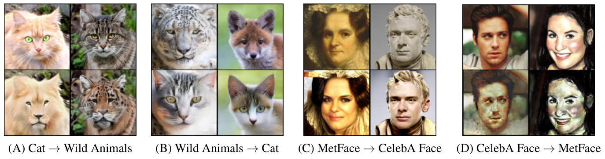<figcaption class="ltx_caption"><span class="ltx_tag ltx_tag_figure">Figure 13: </span>
Samples of 1-rectified flow simulated with <math id="S5.F13.m6" class="ltx_Math" alttext="N=100" display="inline" intent=":literal"><semantics><mrow><mi>N</mi><mo>=</mo><mn>100</mn></mrow></semantics></math> Euler steps between different domains.
</figcaption><div class="fzh"><b>图 13：</b>1-Rectified Flow 在不同域之间用 <math class="ltx_Math" alttext="N=100" display="inline" intent=":literal"><semantics><mrow><mi>N</mi><mo>=</mo><mn>100</mn></mrow></semantics></math> 个 Euler 步模拟的样本。</div></figure></div>
<div class="floatbox"><figure id="S5.F14" class="ltx_figure">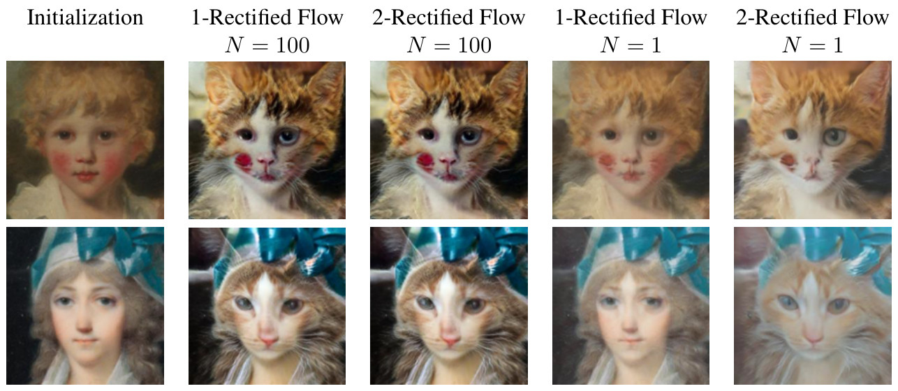<figcaption class="ltx_caption ltx_centering"><span class="ltx_tag ltx_tag_figure">Figure 14: </span>Samples of results of 1- and 2-rectified flow simulated with <math id="S5.F14.m7" class="ltx_Math" alttext="N=1" display="inline" intent=":literal"><semantics><mrow><mi>N</mi><mo>=</mo><mn>1</mn></mrow></semantics></math> and <math id="S5.F14.m8" class="ltx_Math" alttext="N=100" display="inline" intent=":literal"><semantics><mrow><mi>N</mi><mo>=</mo><mn>100</mn></mrow></semantics></math> Euler steps.
</figcaption><div class="fzh"><b>图 14：</b>1-Rectified Flow 和 2-Rectified Flow 分别用 <math class="ltx_Math" alttext="N=1" display="inline" intent=":literal"><semantics><mrow><mi>N</mi><mo>=</mo><mn>1</mn></mrow></semantics></math> 和 <math class="ltx_Math" alttext="N=100" display="inline" intent=":literal"><semantics><mrow><mi>N</mi><mo>=</mo><mn>100</mn></mrow></semantics></math> 个 Euler 步模拟的结果样本。</div></figure></div>
<span class="lxa" id="S5.SS3"></span><h3 class="ph" id="s5-3"><span class="hn">5.3</span>Image-to-Image Translation<span class="hzh">图像到图像翻译</span></h3>
<div class="blk">
    
    <p class="pp">Assume we are given two sets of images of different styles (a.k.a. domains),
whose distributions are denoted by <math id="S5.SS3.p1.m1" class="ltx_Math" alttext="{\pi}_{0},{\pi}_{1}" display="inline" intent=":literal"><semantics><mrow><msub><mi>π</mi><mn>0</mn></msub><mo>,</mo><msub><mi>π</mi><mn>1</mn></msub></mrow></semantics></math>, respectively.
We are interested in transferring the style (or other key characteristics) of the images in one domain to the other domain, in the absence of paired examples.
A classical approach to achieving this is
cycle-consistent adversarial networks (a.k.a. CycleGAN) <cite class="ltx_cite ltx_citemacro_citep">[<a href="#bib.bib100" title="" class="ltx_ref">100</a>, <a href="#bib.bib25" title="" class="ltx_ref">25</a>]</cite>,
which jointly learns a forward and backward mapping <math id="S5.SS3.p1.m2" class="ltx_Math" alttext="F,G" display="inline" intent=":literal"><semantics><mrow><mi>F</mi><mo>,</mo><mi>G</mi></mrow></semantics></math>
by minimizing the sum of adversarial losses on the two domains, regularized by a cycle consistency loss to enforce <math id="S5.SS3.p1.m3" class="ltx_Math" alttext="F(G(x))\approx x" display="inline" intent=":literal"><semantics><mrow><mrow><mi>F</mi><mo>⁡</mo><mrow><mo stretchy="false">(</mo><mrow><mi>G</mi><mo>⁡</mo><mrow><mo stretchy="false">(</mo><mi>x</mi><mo stretchy="false">)</mo></mrow></mrow><mo stretchy="false">)</mo></mrow></mrow><mo>≈</mo><mi>x</mi></mrow></semantics></math> for all image <math id="S5.SS3.p1.m4" class="ltx_Math" alttext="x" display="inline" intent=":literal"><semantics><mi>x</mi></semantics></math>.</p>
    <p class="pp zh" lang="zh-Hans">假设给定两组风格不同（又称不同域）的图像，分布分别记为 <math class="ltx_Math" alttext="{\pi}_{0},{\pi}_{1}" display="inline" intent=":literal"><semantics><mrow><msub><mi>π</mi><mn>0</mn></msub><mo>,</mo><msub><mi>π</mi><mn>1</mn></msub></mrow></semantics></math>。我们希望在没有成对样本的情况下，把一个域中图像的风格（或其他关键特征）迁移到另一个域。实现这一点的一个经典方法是循环一致对抗网络（又称 CycleGAN）<cite class="ltx_cite ltx_citemacro_citep">[<a href="#bib.bib100" title="" class="ltx_ref">100</a>, <a href="#bib.bib25" title="" class="ltx_ref">25</a>]</cite>，它联合学习正向和反向映射 <math class="ltx_Math" alttext="F,G" display="inline" intent=":literal"><semantics><mrow><mi>F</mi><mo>,</mo><mi>G</mi></mrow></semantics></math>，最小化两个域上对抗损失之和，并用循环一致损失加以正则，使对所有图像 <math class="ltx_Math" alttext="x" display="inline" intent=":literal"><semantics><mi>x</mi></semantics></math> 都有 <math class="ltx_Math" alttext="F(G(x))\approx x" display="inline" intent=":literal"><semantics><mrow><mrow><mi>F</mi><mo>⁡</mo><mrow><mo stretchy="false">(</mo><mrow><mi>G</mi><mo>⁡</mo><mrow><mo stretchy="false">(</mo><mi>x</mi><mo stretchy="false">)</mo></mrow></mrow><mo stretchy="false">)</mo></mrow></mrow><mo>≈</mo><mi>x</mi></mrow></semantics></math>。</p>
    
  </div>
<div class="blk">
    
    <p class="pp">By constructing the rectified flow of <math id="S5.SS3.p2.m1" class="ltx_Math" alttext="{\pi}_{0}" display="inline" intent=":literal"><semantics><msub><mi>π</mi><mn>0</mn></msub></semantics></math> and <math id="S5.SS3.p2.m2" class="ltx_Math" alttext="{\pi}_{1}" display="inline" intent=":literal"><semantics><msub><mi>π</mi><mn>1</mn></msub></semantics></math>,
we obtain a simple approach to image translation that requires no adversarial optimization and cycle-consistency regularization:
training the rectified flow requires a simple optimization procedure and the cycle consistency is automatically in flow models satisfied due to reversibility of ODEs.</p>
    <p class="pp zh" lang="zh-Hans">通过构造 <math class="ltx_Math" alttext="{\pi}_{0}" display="inline" intent=":literal"><semantics><msub><mi>π</mi><mn>0</mn></msub></semantics></math> 与 <math class="ltx_Math" alttext="{\pi}_{1}" display="inline" intent=":literal"><semantics><msub><mi>π</mi><mn>1</mn></msub></semantics></math> 之间的 Rectified Flow，我们得到一种简单的图像翻译方法，既不需要对抗优化，也不需要循环一致正则：训练 Rectified Flow 只需一个简单的优化过程，而由于 ODE 的可逆性，流模型自动满足循环一致性。</p>
    
  </div>
<div class="blk">
    
    <p class="pp">As the main goal here is to obtain good visual results,
we are not interested in faithfully transferring <math id="S5.SS3.p3.m1" class="ltx_Math" alttext="X_{0}\sim{\pi}_{0}" display="inline" intent=":literal"><semantics><mrow><msub><mi>X</mi><mn>0</mn></msub><mo>∼</mo><msub><mi>π</mi><mn>0</mn></msub></mrow></semantics></math>
to an <math id="S5.SS3.p3.m2" class="ltx_Math" alttext="X_{1}" display="inline" intent=":literal"><semantics><msub><mi>X</mi><mn>1</mn></msub></semantics></math> that exactly follows <math id="S5.SS3.p3.m3" class="ltx_Math" alttext="{\pi}_{1}" display="inline" intent=":literal"><semantics><msub><mi>π</mi><mn>1</mn></msub></semantics></math>.
Rather, we are interested in
transferring the image styles while preserving the identity of the main object in the image. For example,
when transferring a human face image to a cat face,
we are interested in getting a unrealistic face of human-cat hybrid that still “looks like” the original human face.</p>
    <p class="pp zh" lang="zh-Hans">由于这里的主要目标是得到好的视觉效果，我们并不追求把 <math class="ltx_Math" alttext="X_{0}\sim{\pi}_{0}" display="inline" intent=":literal"><semantics><mrow><msub><mi>X</mi><mn>0</mn></msub><mo>∼</mo><msub><mi>π</mi><mn>0</mn></msub></mrow></semantics></math> 忠实地传输成严格服从 <math class="ltx_Math" alttext="{\pi}_{1}" display="inline" intent=":literal"><semantics><msub><mi>π</mi><mn>1</mn></msub></semantics></math> 的 <math class="ltx_Math" alttext="X_{1}" display="inline" intent=":literal"><semantics><msub><mi>X</mi><mn>1</mn></msub></semantics></math>，而是希望在迁移图像风格的同时保留图像中主体的身份。例如，把人脸图像迁移成猫脸时，我们想得到的是一张不真实的人猫混合脸，它仍然「看起来像」原来的人脸。</p>
    
  </div>
<div class="blk">
    
    <p class="pp">To achieve this,
let <math id="S5.SS3.p4.m1" class="ltx_Math" alttext="h(x)" display="inline" intent=":literal"><semantics><mrow><mi>h</mi><mo>⁡</mo><mrow><mo stretchy="false">(</mo><mi>x</mi><mo stretchy="false">)</mo></mrow></mrow></semantics></math> be a feature mapping of image <math id="S5.SS3.p4.m2" class="ltx_Math" alttext="x" display="inline" intent=":literal"><semantics><mi>x</mi></semantics></math> representing the styles that we are interested in transferring.
Let <math id="S5.SS3.p4.m3" class="ltx_Math" alttext="X_{t}=tX_{1}+(1-t)X_{0}" display="inline" intent=":literal"><semantics><mrow><msub><mi>X</mi><mi>t</mi></msub><mo>=</mo><mrow><mrow><mi>t</mi><mo lspace="0em" rspace="0em">​</mo><msub><mi>X</mi><mn>1</mn></msub></mrow><mo>+</mo><mrow><mrow><mo stretchy="false">(</mo><mrow><mn>1</mn><mo>−</mo><mi>t</mi></mrow><mo stretchy="false">)</mo></mrow><mo lspace="0em" rspace="0em">​</mo><msub><mi>X</mi><mn>0</mn></msub></mrow></mrow></mrow></semantics></math>. Then <math id="S5.SS3.p4.m4" class="ltx_Math" alttext="H_{t}=h(X_{t})" display="inline" intent=":literal"><semantics><mrow><msub><mi>H</mi><mi>t</mi></msub><mo>=</mo><mrow><mi>h</mi><mo>⁡</mo><mrow><mo stretchy="false">(</mo><msub><mi>X</mi><mi>t</mi></msub><mo stretchy="false">)</mo></mrow></mrow></mrow></semantics></math> follows an ODE of <math id="S5.SS3.p4.m5" class="ltx_math_unparsed" alttext="\mathrm{d}H_{t}=\nabla h(X_{t})^{\top}(X_{1}-X_{0})\mathrm{d}t." display="inline" intent=":literal"><semantics><mrow><mi>d</mi><msub><mi>H</mi><mi>t</mi></msub><mo>=</mo><mo rspace="0.167em">∇</mo><mi>h</mi><msup><mrow><mo stretchy="false">(</mo><msub><mi>X</mi><mi>t</mi></msub><mo stretchy="false">)</mo></mrow><mo>⊤</mo></msup><mrow><mo stretchy="false">(</mo><msub><mi>X</mi><mn>1</mn></msub><mo>−</mo><msub><mi>X</mi><mn>0</mn></msub><mo stretchy="false">)</mo></mrow><mi>d</mi><mi>t</mi><mo lspace="0em">.</mo></mrow></semantics></math> Hence, to ensure that the style is transferred correctly,
we propose to learn <math id="S5.SS3.p4.m6" class="ltx_Math" alttext="v" display="inline" intent=":literal"><semantics><mi>v</mi></semantics></math> such that <math id="S5.SS3.p4.m7" class="ltx_Math" alttext="H_{t}^{\prime}=h(Z_{t})" display="inline" intent=":literal"><semantics><mrow><msubsup><mi>H</mi><mi>t</mi><mo>′</mo></msubsup><mo>=</mo><mrow><mi>h</mi><mo>⁡</mo><mrow><mo stretchy="false">(</mo><msub><mi>Z</mi><mi>t</mi></msub><mo stretchy="false">)</mo></mrow></mrow></mrow></semantics></math> with <math id="S5.SS3.p4.m8" class="ltx_Math" alttext="\mathrm{d}Z_{t}=v(Z_{t},t)\mathrm{d}t" display="inline" intent=":literal"><semantics><mrow><mrow><mi>d</mi><mo lspace="0em" rspace="0em">​</mo><msub><mi>Z</mi><mi>t</mi></msub></mrow><mo>=</mo><mrow><mrow><mi>v</mi><mo>⁡</mo><mrow><mo stretchy="false">(</mo><msub><mi>Z</mi><mi>t</mi></msub><mo>,</mo><mi>t</mi><mo stretchy="false">)</mo></mrow></mrow><mo lspace="0em" rspace="0em">​</mo><mi>d</mi><mo lspace="0em" rspace="0em">​</mo><mi>t</mi></mrow></mrow></semantics></math> approximates <math id="S5.SS3.p4.m9" class="ltx_Math" alttext="H_{t}" display="inline" intent=":literal"><semantics><msub><mi>H</mi><mi>t</mi></msub></semantics></math> as much as possible.
Because <math id="S5.SS3.p4.m10" class="ltx_math_unparsed" alttext="\mathrm{d}H_{t}^{\prime}=\nabla h(Z_{t})^{\top}v(Z_{t},t)\mathrm{d}t" display="inline" intent=":literal"><semantics><mrow><mi>d</mi><msubsup><mi>H</mi><mi>t</mi><mo>′</mo></msubsup><mo>=</mo><mo rspace="0.167em">∇</mo><mi>h</mi><msup><mrow><mo stretchy="false">(</mo><msub><mi>Z</mi><mi>t</mi></msub><mo stretchy="false">)</mo></mrow><mo>⊤</mo></msup><mi>v</mi><mrow><mo stretchy="false">(</mo><msub><mi>Z</mi><mi>t</mi></msub><mo>,</mo><mi>t</mi><mo stretchy="false">)</mo></mrow><mi>d</mi><mi>t</mi></mrow></semantics></math>, we propose to minimize the following loss:</p>
    <p class="pp zh" lang="zh-Hans">为此，令 <math class="ltx_Math" alttext="h(x)" display="inline" intent=":literal"><semantics><mrow><mi>h</mi><mo>⁡</mo><mrow><mo stretchy="false">(</mo><mi>x</mi><mo stretchy="false">)</mo></mrow></mrow></semantics></math> 为图像 <math class="ltx_Math" alttext="x" display="inline" intent=":literal"><semantics><mi>x</mi></semantics></math> 的一个特征映射，表示我们想迁移的风格。令 <math class="ltx_Math" alttext="X_{t}=tX_{1}+(1-t)X_{0}" display="inline" intent=":literal"><semantics><mrow><msub><mi>X</mi><mi>t</mi></msub><mo>=</mo><mrow><mrow><mi>t</mi><mo lspace="0em" rspace="0em">​</mo><msub><mi>X</mi><mn>1</mn></msub></mrow><mo>+</mo><mrow><mrow><mo stretchy="false">(</mo><mrow><mn>1</mn><mo>−</mo><mi>t</mi></mrow><mo stretchy="false">)</mo></mrow><mo lspace="0em" rspace="0em">​</mo><msub><mi>X</mi><mn>0</mn></msub></mrow></mrow></mrow></semantics></math>，则 <math class="ltx_Math" alttext="H_{t}=h(X_{t})" display="inline" intent=":literal"><semantics><mrow><msub><mi>H</mi><mi>t</mi></msub><mo>=</mo><mrow><mi>h</mi><mo>⁡</mo><mrow><mo stretchy="false">(</mo><msub><mi>X</mi><mi>t</mi></msub><mo stretchy="false">)</mo></mrow></mrow></mrow></semantics></math> 服从 ODE <math class="ltx_math_unparsed" alttext="\mathrm{d}H_{t}=\nabla h(X_{t})^{\top}(X_{1}-X_{0})\mathrm{d}t." display="inline" intent=":literal"><semantics><mrow><mi>d</mi><msub><mi>H</mi><mi>t</mi></msub><mo>=</mo><mo rspace="0.167em">∇</mo><mi>h</mi><msup><mrow><mo stretchy="false">(</mo><msub><mi>X</mi><mi>t</mi></msub><mo stretchy="false">)</mo></mrow><mo>⊤</mo></msup><mrow><mo stretchy="false">(</mo><msub><mi>X</mi><mn>1</mn></msub><mo>−</mo><msub><mi>X</mi><mn>0</mn></msub><mo stretchy="false">)</mo></mrow><mi>d</mi><mi>t</mi><mo lspace="0em">.</mo></mrow></semantics></math> 因此，为了保证风格被正确迁移，我们提出学习 <math class="ltx_Math" alttext="v" display="inline" intent=":literal"><semantics><mi>v</mi></semantics></math>，使得 <math class="ltx_Math" alttext="H_{t}^{\prime}=h(Z_{t})" display="inline" intent=":literal"><semantics><mrow><msubsup><mi>H</mi><mi>t</mi><mo>′</mo></msubsup><mo>=</mo><mrow><mi>h</mi><mo>⁡</mo><mrow><mo stretchy="false">(</mo><msub><mi>Z</mi><mi>t</mi></msub><mo stretchy="false">)</mo></mrow></mrow></mrow></semantics></math>（其中 <math class="ltx_Math" alttext="\mathrm{d}Z_{t}=v(Z_{t},t)\mathrm{d}t" display="inline" intent=":literal"><semantics><mrow><mrow><mi>d</mi><mo lspace="0em" rspace="0em">​</mo><msub><mi>Z</mi><mi>t</mi></msub></mrow><mo>=</mo><mrow><mrow><mi>v</mi><mo>⁡</mo><mrow><mo stretchy="false">(</mo><msub><mi>Z</mi><mi>t</mi></msub><mo>,</mo><mi>t</mi><mo stretchy="false">)</mo></mrow></mrow><mo lspace="0em" rspace="0em">​</mo><mi>d</mi><mo lspace="0em" rspace="0em">​</mo><mi>t</mi></mrow></mrow></semantics></math>）尽可能逼近 <math class="ltx_Math" alttext="H_{t}" display="inline" intent=":literal"><semantics><msub><mi>H</mi><mi>t</mi></msub></semantics></math>。由于 <math class="ltx_math_unparsed" alttext="\mathrm{d}H_{t}^{\prime}=\nabla h(Z_{t})^{\top}v(Z_{t},t)\mathrm{d}t" display="inline" intent=":literal"><semantics><mrow><mi>d</mi><msubsup><mi>H</mi><mi>t</mi><mo>′</mo></msubsup><mo>=</mo><mo rspace="0.167em">∇</mo><mi>h</mi><msup><mrow><mo stretchy="false">(</mo><msub><mi>Z</mi><mi>t</mi></msub><mo stretchy="false">)</mo></mrow><mo>⊤</mo></msup><mi>v</mi><mrow><mo stretchy="false">(</mo><msub><mi>Z</mi><mi>t</mi></msub><mo>,</mo><mi>t</mi><mo stretchy="false">)</mo></mrow><mi>d</mi><mi>t</mi></mrow></semantics></math>，我们提出最小化下面的损失：</p>
    
  </div>
<div class="eqbox"><table id="S5.EGx28" class="ltx_equationgroup ltx_eqn_align ltx_eqn_table">

<tbody id="S5.E20"><tr class="ltx_equation ltx_eqn_row ltx_align_baseline">
<td class="ltx_eqn_cell ltx_eqn_center_padleft"></td>
<td class="ltx_td ltx_align_right ltx_eqn_cell"><math id="S5.E20.m1" class="ltx_math_unparsed" alttext="\displaystyle\min_{v}\int_{0}^{1}\mathbb{E}\left[\left\lVert\nabla h(X_{t})^{\top}(X_{1}-X_{0}-v(X_{t},t))\right\rVert_{2}^{2}\right]\mathrm{d}t," display="inline" intent=":literal"><semantics><mrow><munder><mi>min</mi><mi>v</mi></munder><mstyle displaystyle="true"><msubsup><mo>∫</mo><mn>0</mn><mn>1</mn></msubsup></mstyle><mi>𝔼</mi><mrow><mo>[</mo><msubsup><mrow><mo>‖</mo><mo rspace="0.167em">∇</mo><mi>h</mi><msup><mrow><mo stretchy="false">(</mo><msub><mi>X</mi><mi>t</mi></msub><mo stretchy="false">)</mo></mrow><mo>⊤</mo></msup><mrow><mo stretchy="false">(</mo><msub><mi>X</mi><mn>1</mn></msub><mo>−</mo><msub><mi>X</mi><mn>0</mn></msub><mo>−</mo><mi>v</mi><mrow><mo stretchy="false">(</mo><msub><mi>X</mi><mi>t</mi></msub><mo>,</mo><mi>t</mi><mo stretchy="false">)</mo></mrow><mo stretchy="false">)</mo></mrow><mo>‖</mo></mrow><mn>2</mn><mn>2</mn></msubsup><mo>]</mo></mrow><mi>d</mi><mi>t</mi><mo>,</mo></mrow></semantics></math></td>
<td class="ltx_td ltx_eqn_cell"></td>
<td class="ltx_td ltx_align_right ltx_eqn_cell"><math id="S5.E20.m2" class="ltx_Math" alttext="\displaystyle X_{t}=tX_{1}+(1-t)X_{0}." display="inline" intent=":literal"><semantics><mrow><mrow><msub><mi>X</mi><mi>t</mi></msub><mo>=</mo><mrow><mrow><mi>t</mi><mo lspace="0em" rspace="0em">​</mo><msub><mi>X</mi><mn>1</mn></msub></mrow><mo>+</mo><mrow><mrow><mo stretchy="false">(</mo><mrow><mn>1</mn><mo>−</mo><mi>t</mi></mrow><mo stretchy="false">)</mo></mrow><mo lspace="0em" rspace="0em">​</mo><msub><mi>X</mi><mn>0</mn></msub></mrow></mrow></mrow><mo lspace="0em">.</mo></mrow></semantics></math></td>
<td class="ltx_eqn_cell ltx_eqn_center_padright"></td>
<td rowspan="1" class="ltx_eqn_cell ltx_eqn_eqno ltx_align_middle ltx_align_right"><span class="ltx_tag ltx_tag_equation ltx_align_right">(20)</span></td></tr></tbody>
</table></div>
<div class="blk">
    
    <p class="pp">In practice, we set <math id="S5.SS3.p4.m11" class="ltx_Math" alttext="h(x)" display="inline" intent=":literal"><semantics><mrow><mi>h</mi><mo>⁡</mo><mrow><mo stretchy="false">(</mo><mi>x</mi><mo stretchy="false">)</mo></mrow></mrow></semantics></math> to be latent representation of a classifier trained
to distinguish the images from the two domains <math id="S5.SS3.p4.m12" class="ltx_Math" alttext="{\pi}_{0},{\pi}_{1}" display="inline" intent=":literal"><semantics><mrow><msub><mi>π</mi><mn>0</mn></msub><mo>,</mo><msub><mi>π</mi><mn>1</mn></msub></mrow></semantics></math>, fine-tuned from a pre-trained ImageNet <cite class="ltx_cite ltx_citemacro_citep">[<a href="#bib.bib77" title="" class="ltx_ref">77</a>]</cite> model. Intuitively, <math id="S5.SS3.p4.m13" class="ltx_Math" alttext="\nabla_{x}h(x)" display="inline" intent=":literal"><semantics><mrow><mrow><msub><mo>∇</mo><mi>x</mi></msub><mi>h</mi></mrow><mo lspace="0em" rspace="0em">​</mo><mrow><mo stretchy="false">(</mo><mi>x</mi><mo stretchy="false">)</mo></mrow></mrow></semantics></math> serves as a saliency score and re-weights coordinates so that the loss in (<a href="#S5.E20" title="In 5.3 Image-to-Image Translation ‣ 5 Experiments ‣ Flow Straight and Fast: Learning to Generate and Transfer Data with Rectified Flow" class="ltx_ref"><span class="ltx_text ltx_ref_tag">20</span></a>) focuses on penalizing the error that causes significant changes on <math id="S5.SS3.p4.m14" class="ltx_Math" alttext="h" display="inline" intent=":literal"><semantics><mi>h</mi></semantics></math>.</p>
    <p class="pp zh" lang="zh-Hans">实践中，我们把 <math class="ltx_Math" alttext="h(x)" display="inline" intent=":literal"><semantics><mrow><mi>h</mi><mo>⁡</mo><mrow><mo stretchy="false">(</mo><mi>x</mi><mo stretchy="false">)</mo></mrow></mrow></semantics></math> 设为一个分类器的隐表示，该分类器从预训练的 ImageNet <cite class="ltx_cite ltx_citemacro_citep">[<a href="#bib.bib77" title="" class="ltx_ref">77</a>]</cite> 模型微调而来，用来区分两个域 <math class="ltx_Math" alttext="{\pi}_{0},{\pi}_{1}" display="inline" intent=":literal"><semantics><mrow><msub><mi>π</mi><mn>0</mn></msub><mo>,</mo><msub><mi>π</mi><mn>1</mn></msub></mrow></semantics></math> 的图像。直观上，<math class="ltx_Math" alttext="\nabla_{x}h(x)" display="inline" intent=":literal"><semantics><mrow><mrow><msub><mo>∇</mo><mi>x</mi></msub><mi>h</mi></mrow><mo lspace="0em" rspace="0em">​</mo><mrow><mo stretchy="false">(</mo><mi>x</mi><mo stretchy="false">)</mo></mrow></mrow></semantics></math> 起到显著性分数的作用，对各坐标重新加权，使 (<a href="#S5.E20" title="In 5.3 Image-to-Image Translation ‣ 5 Experiments ‣ Flow Straight and Fast: Learning to Generate and Transfer Data with Rectified Flow" class="ltx_ref"><span class="ltx_text ltx_ref_tag">20</span></a>) 中的损失着重惩罚那些会显著改变 <math class="ltx_Math" alttext="h" display="inline" intent=":literal"><semantics><mi>h</mi></semantics></math> 的误差。</p>
    
  </div>
<div class="floatbox"><figure id="S5.F15" class="ltx_figure">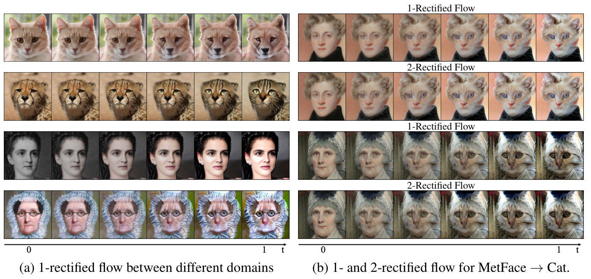<figcaption class="ltx_caption ltx_centering"><span class="ltx_tag ltx_tag_figure">Figure 15: </span>(a) Samples of trajectories <math id="S5.F15.m3" class="ltx_Math" alttext="z_{t}" display="inline" intent=":literal"><semantics><msub><mi>z</mi><mi>t</mi></msub></semantics></math> of 1- and 2-rectified flow for transferring between different domains. </figcaption><div class="fzh"><b>图 15：</b>(a) 1-Rectified Flow 和 2-Rectified Flow 在不同域之间迁移时的轨迹样本 <math class="ltx_Math" alttext="z_{t}" display="inline" intent=":literal"><semantics><msub><mi>z</mi><mi>t</mi></msub></semantics></math>。</div></figure></div>
<span class="lxa" id="S5.SS3.SSS0.Px1"></span><h4 class="ph" id="sexperiment-settings-2">Experiment settings<span class="hzh">实验设置</span></h4>
<div class="blk">
    
    <p class="pp">We set the domains <math id="S5.SS3.SSS0.Px1.p1.m1" class="ltx_Math" alttext="{\pi}_{0},{\pi}_{1}" display="inline" intent=":literal"><semantics><mrow><msub><mi>π</mi><mn>0</mn></msub><mo>,</mo><msub><mi>π</mi><mn>1</mn></msub></mrow></semantics></math> to be pairs of
the AFHQ <cite class="ltx_cite ltx_citemacro_citep">[<a href="#bib.bib9" title="" class="ltx_ref">9</a>]</cite>, MetFace <cite class="ltx_cite ltx_citemacro_citep">[<a href="#bib.bib28" title="" class="ltx_ref">28</a>]</cite> and CelebA-HQ <cite class="ltx_cite ltx_citemacro_citep">[<a href="#bib.bib27" title="" class="ltx_ref">27</a>]</cite> dataset.
For each dataset, we randomly select <math id="S5.SS3.SSS0.Px1.p1.m2" class="ltx_Math" alttext="80\%" display="inline" intent=":literal"><semantics><mrow><mn>80</mn><mo>%</mo></mrow></semantics></math> as the training data and regard the rest as the test data; and the results are shown by initializing the trained flows from the test data.
We resize the image to <math id="S5.SS3.SSS0.Px1.p1.m3" class="ltx_Math" alttext="512\times 512" display="inline" intent=":literal"><semantics><mrow><mn>512</mn><mo lspace="0.222em" rspace="0.222em">×</mo><mn>512</mn></mrow></semantics></math>.
The training and network configurations
generally follow the experiment settings in Section <a href="#S5.SS2" title="5.2 Unconditioned Image Generation ‣ 5 Experiments ‣ Flow Straight and Fast: Learning to Generate and Transfer Data with Rectified Flow" class="ltx_ref"><span class="ltx_text ltx_ref_tag">5.2</span></a>. See the appendix for detailed descriptions.</p>
    <p class="pp zh" lang="zh-Hans">我们把 <math class="ltx_Math" alttext="{\pi}_{0},{\pi}_{1}" display="inline" intent=":literal"><semantics><mrow><msub><mi>π</mi><mn>0</mn></msub><mo>,</mo><msub><mi>π</mi><mn>1</mn></msub></mrow></semantics></math> 设为 AFHQ <cite class="ltx_cite ltx_citemacro_citep">[<a href="#bib.bib9" title="" class="ltx_ref">9</a>]</cite>、MetFace <cite class="ltx_cite ltx_citemacro_citep">[<a href="#bib.bib28" title="" class="ltx_ref">28</a>]</cite> 和 CelebA-HQ <cite class="ltx_cite ltx_citemacro_citep">[<a href="#bib.bib27" title="" class="ltx_ref">27</a>]</cite> 数据集两两组成的域对。对每个数据集，随机选 <math class="ltx_Math" alttext="80\%" display="inline" intent=":literal"><semantics><mrow><mn>80</mn><mo>%</mo></mrow></semantics></math> 作为训练数据，其余作为测试数据；展示的结果是从测试数据初始化训练好的流得到的。图像缩放到 <math class="ltx_Math" alttext="512\times 512" display="inline" intent=":literal"><semantics><mrow><mn>512</mn><mo lspace="0.222em" rspace="0.222em">×</mo><mn>512</mn></mrow></semantics></math>。训练和网络配置大体沿用第 <a href="#S5.SS2" title="5.2 Unconditioned Image Generation ‣ 5 Experiments ‣ Flow Straight and Fast: Learning to Generate and Transfer Data with Rectified Flow" class="ltx_ref"><span class="ltx_text ltx_ref_tag">5.2</span></a> 节的实验设置。详细描述见附录。</p>
    
  </div>
<span class="lxa" id="S5.SS3.SSS0.Px2"></span><h4 class="ph" id="sresults-2">Results<span class="hzh">结果</span></h4>
<div class="blk">
    
    <p class="pp">Figure <a href="#S1.F1" title="Figure 1 ‣ 1 Introduction ‣ Flow Straight and Fast: Learning to Generate and Transfer Data with Rectified Flow" class="ltx_ref"><span class="ltx_text ltx_ref_tag">1</span></a>, <a href="#S5.F13" title="Figure 13 ‣ High-resolution image generation ‣ 5.2 Unconditioned Image Generation ‣ 5 Experiments ‣ Flow Straight and Fast: Learning to Generate and Transfer Data with Rectified Flow" class="ltx_ref"><span class="ltx_text ltx_ref_tag">13</span></a>, <a href="#S5.F14" title="Figure 14 ‣ High-resolution image generation ‣ 5.2 Unconditioned Image Generation ‣ 5 Experiments ‣ Flow Straight and Fast: Learning to Generate and Transfer Data with Rectified Flow" class="ltx_ref"><span class="ltx_text ltx_ref_tag">14</span></a>, <a href="#S5.F15" title="Figure 15 ‣ 5.3 Image-to-Image Translation ‣ 5 Experiments ‣ Flow Straight and Fast: Learning to Generate and Transfer Data with Rectified Flow" class="ltx_ref"><span class="ltx_text ltx_ref_tag">15</span></a>
show examples of results of 1- and 2-rectified flow simulated with Euler method with different number of steps <math id="S5.SS3.SSS0.Px2.p1.m1" class="ltx_Math" alttext="N" display="inline" intent=":literal"><semantics><mi>N</mi></semantics></math>.
We can see that rectified flows can successfully transfer the styles and generate high quality images.
For example, when transferring cats to wild animals,
we can generate diverse images with different animal faces, e.g., fox, lion, tiger and cheetah.
Moreover, with one step of reflow, 2-rectified flow returns good results with a single Euler step (<math id="S5.SS3.SSS0.Px2.p1.m2" class="ltx_Math" alttext="N=1" display="inline" intent=":literal"><semantics><mrow><mi>N</mi><mo>=</mo><mn>1</mn></mrow></semantics></math>).
See more examples in Appendix.</p>
    <p class="pp zh" lang="zh-Hans">图 <a href="#S1.F1" title="Figure 1 ‣ 1 Introduction ‣ Flow Straight and Fast: Learning to Generate and Transfer Data with Rectified Flow" class="ltx_ref"><span class="ltx_text ltx_ref_tag">1</span></a>、<a href="#S5.F13" title="Figure 13 ‣ High-resolution image generation ‣ 5.2 Unconditioned Image Generation ‣ 5 Experiments ‣ Flow Straight and Fast: Learning to Generate and Transfer Data with Rectified Flow" class="ltx_ref"><span class="ltx_text ltx_ref_tag">13</span></a>、<a href="#S5.F14" title="Figure 14 ‣ High-resolution image generation ‣ 5.2 Unconditioned Image Generation ‣ 5 Experiments ‣ Flow Straight and Fast: Learning to Generate and Transfer Data with Rectified Flow" class="ltx_ref"><span class="ltx_text ltx_ref_tag">14</span></a>、<a href="#S5.F15" title="Figure 15 ‣ 5.3 Image-to-Image Translation ‣ 5 Experiments ‣ Flow Straight and Fast: Learning to Generate and Transfer Data with Rectified Flow" class="ltx_ref"><span class="ltx_text ltx_ref_tag">15</span></a> 展示了用 Euler 法、以不同步数 <math class="ltx_Math" alttext="N" display="inline" intent=":literal"><semantics><mi>N</mi></semantics></math> 模拟 1-Rectified Flow 和 2-Rectified Flow 的结果示例。可以看到，Rectified Flow 能成功迁移风格并生成高质量图像。例如，把猫迁移到野生动物时，可以生成各种动物的脸，如狐狸、狮子、老虎和猎豹。此外，做一次 reflow 后，2-Rectified Flow 用单个 Euler 步（<math class="ltx_Math" alttext="N=1" display="inline" intent=":literal"><semantics><mrow><mi>N</mi><mo>=</mo><mn>1</mn></mrow></semantics></math>）就能给出好的结果。更多例子见附录。</p>
    
  </div>
<span class="lxa" id="S5.SS4"></span><h3 class="ph" id="s5-4"><span class="hn">5.4</span>Domain Adaptation<span class="hzh">域适应</span></h3>
<div class="blk">
    
    <p class="pp">A key challenge of applying machine learning to real-world problems is the domain shift between the training and test datasets: the performance of machine learning models may degrade significantly
when tested on a novel domain different from the training set.
Rectified flow can be applied to transfer the novel domain (<math id="S5.SS4.p1.m1" class="ltx_Math" alttext="{\pi}_{0}" display="inline" intent=":literal"><semantics><msub><mi>π</mi><mn>0</mn></msub></semantics></math>) to the training domain (<math id="S5.SS4.p1.m2" class="ltx_Math" alttext="{\pi}_{1}" display="inline" intent=":literal"><semantics><msub><mi>π</mi><mn>1</mn></msub></semantics></math>) to mitigate the impact of domain shift.</p>
    <p class="pp zh" lang="zh-Hans">把机器学习用于实际问题的一个关键挑战是训练集与测试集之间的域偏移 (Domain Shift)：在与训练集不同的新域上测试时，机器学习模型的性能可能显著下降。可以用 Rectified Flow 把新域（<math class="ltx_Math" alttext="{\pi}_{0}" display="inline" intent=":literal"><semantics><msub><mi>π</mi><mn>0</mn></msub></semantics></math>）传输到训练域（<math class="ltx_Math" alttext="{\pi}_{1}" display="inline" intent=":literal"><semantics><msub><mi>π</mi><mn>1</mn></msub></semantics></math>），减轻域偏移的影响。</p>
    
  </div>
<span class="lxa" id="S5.SS4.SSS0.Px1"></span><h4 class="ph" id="sexperiment-settings-3">Experiment settings<span class="hzh">实验设置</span></h4>
<div class="blk">
    
    <p class="pp">We test the rectified flow for domain adaptation on
a number of datasets.
DomainNet <cite class="ltx_cite ltx_citemacro_citep">[<a href="#bib.bib58" title="" class="ltx_ref">58</a>]</cite> is a dataset of common objects in six different domain taken from DomainBed <cite class="ltx_cite ltx_citemacro_citep">[<a href="#bib.bib20" title="" class="ltx_ref">20</a>]</cite>. All domains from DomainNet include 345 categories (classes) of objects such as Bracelet, plane, bird and cello.
Office-Home <cite class="ltx_cite ltx_citemacro_citep">[<a href="#bib.bib83" title="" class="ltx_ref">83</a>]</cite> is a benchmark dataset for domain adaptation which contains 4 domains where each domain consists of 65 categories.
To apply our method,
first we map both the training and testing data
to the latent representation from final hidden layer of the pre-trained model, and construct the rectified flow on the latent representation.
We use the same DDPM++ model architecture for training. For inference, we set the number of steps of our flow model as <math id="S5.SS4.SSS0.Px1.p1.m1" class="ltx_Math" alttext="100" display="inline" intent=":literal"><semantics><mn>100</mn></semantics></math> using uniform discretization.
The methods are evaluated by the prediction accuracy of the transferred testing data
on the classification model trained on the training data.</p>
    <p class="pp zh" lang="zh-Hans">我们在若干数据集上测试 Rectified Flow 做域适应的效果。DomainNet <cite class="ltx_cite ltx_citemacro_citep">[<a href="#bib.bib58" title="" class="ltx_ref">58</a>]</cite> 是取自 DomainBed <cite class="ltx_cite ltx_citemacro_citep">[<a href="#bib.bib20" title="" class="ltx_ref">20</a>]</cite> 的常见物体数据集，包含六个不同的域。DomainNet 的所有域都包含 345 个物体类别，如手镯、飞机、鸟和大提琴。Office-Home <cite class="ltx_cite ltx_citemacro_citep">[<a href="#bib.bib83" title="" class="ltx_ref">83</a>]</cite> 是域适应的基准数据集，包含 4 个域，每个域有 65 个类别。应用我们的方法时，先把训练数据和测试数据都映射为预训练模型最后一个隐藏层的隐表示，在隐表示上构造 Rectified Flow。训练使用同样的 DDPM++ 模型结构。推理时，流模型使用均匀离散化，步数设为 <math class="ltx_Math" alttext="100" display="inline" intent=":literal"><semantics><mn>100</mn></semantics></math>。方法的评估指标是迁移后的测试数据在用训练数据训练的分类模型上的预测准确率。</p>
    
  </div>
<span class="lxa" id="S5.SS4.SSS0.Px2"></span><h4 class="ph" id="sresults-3">Results<span class="hzh">结果</span></h4>
<div class="blk">
    
    <p class="pp">As demonstrated in Table <a href="#S5.T2" title="Table 2 ‣ Results ‣ 5.4 Domain Adaptation ‣ 5 Experiments ‣ Flow Straight and Fast: Learning to Generate and Transfer Data with Rectified Flow" class="ltx_ref"><span class="ltx_text ltx_ref_tag">2</span></a>,
the 1-rectified flow shows
state-of-the-art performance
on both DomainNet and OfficeHome.
It is better or on par with
the previous best approach (Deep CORAL <cite class="ltx_cite ltx_citemacro_citep">[<a href="#bib.bib76" title="" class="ltx_ref">76</a>]</cite>),
while sustainably improve over all other methods.</p>
    <p class="pp zh" lang="zh-Hans">如表 <a href="#S5.T2" title="Table 2 ‣ Results ‣ 5.4 Domain Adaptation ‣ 5 Experiments ‣ Flow Straight and Fast: Learning to Generate and Transfer Data with Rectified Flow" class="ltx_ref"><span class="ltx_text ltx_ref_tag">2</span></a> 所示，1-Rectified Flow 在 DomainNet 和 OfficeHome 上都达到了当前最好的性能。它优于或持平此前最好的方法（Deep CORAL <cite class="ltx_cite ltx_citemacro_citep">[<a href="#bib.bib76" title="" class="ltx_ref">76</a>]</cite>），并且大幅超过其他所有方法。</p>
    
  </div>
<div class="floatbox"><figure id="S5.T2" class="ltx_table">
<div id="S5.T2.2" class="ltx_inline-block ltx_align_center ltx_transformed_outer" style=""><span class="ltx_transformed_inner" style="zoom:0.9">
<table id="S5.T2.2.1" class="ltx_tabular ltx_guessed_headers ltx_align_middle">
<thead class="ltx_thead">
<tr id="S5.T2.2.1.1" class="ltx_tr">
<th id="S5.T2.2.1.1.1" class="ltx_td ltx_align_left ltx_th ltx_th_column ltx_th_row ltx_border_r ltx_border_t">Method</th>
<th id="S5.T2.2.1.1.2" class="ltx_td ltx_align_center ltx_th ltx_th_column ltx_border_t">ERM</th>
<th id="S5.T2.2.1.1.3" class="ltx_td ltx_align_center ltx_th ltx_th_column ltx_border_t">IRM</th>
<th id="S5.T2.2.1.1.4" class="ltx_td ltx_align_center ltx_th ltx_th_column ltx_border_t">ARM</th>
<th id="S5.T2.2.1.1.5" class="ltx_td ltx_align_center ltx_th ltx_th_column ltx_border_t">Mixup</th>
<th id="S5.T2.2.1.1.6" class="ltx_td ltx_align_center ltx_th ltx_th_column ltx_border_t">MLDG</th>
<th id="S5.T2.2.1.1.7" class="ltx_td ltx_align_center ltx_th ltx_th_column ltx_border_r ltx_border_t">CORAL</th>
<th id="S5.T2.2.1.1.8" class="ltx_td ltx_align_center ltx_th ltx_th_column ltx_border_t">Ours</th></tr>
</thead>
<tbody class="ltx_tbody">
<tr id="S5.T2.2.1.2" class="ltx_tr">
<th id="S5.T2.2.1.2.1" class="ltx_td ltx_align_left ltx_th ltx_th_row ltx_border_r ltx_border_t">OfficeHome</th>
<td id="S5.T2.2.1.2.2" class="ltx_td ltx_align_center ltx_border_t"><math id="S5.T2.m1" class="ltx_Math" alttext="66.5\pm 0.3" display="inline" intent=":literal"><semantics><mrow><mn>66.5</mn><mo>±</mo><mn>0.3</mn></mrow></semantics></math></td>
<td id="S5.T2.2.1.2.3" class="ltx_td ltx_align_center ltx_border_t"><math id="S5.T2.m2" class="ltx_Math" alttext="64.3\pm 2.2" display="inline" intent=":literal"><semantics><mrow><mn>64.3</mn><mo>±</mo><mn>2.2</mn></mrow></semantics></math></td>
<td id="S5.T2.2.1.2.4" class="ltx_td ltx_align_center ltx_border_t"><math id="S5.T2.m3" class="ltx_Math" alttext="64.8\pm 0.3" display="inline" intent=":literal"><semantics><mrow><mn>64.8</mn><mo>±</mo><mn>0.3</mn></mrow></semantics></math></td>
<td id="S5.T2.2.1.2.5" class="ltx_td ltx_align_center ltx_border_t"><math id="S5.T2.m4" class="ltx_Math" alttext="68.1\pm 0.3" display="inline" intent=":literal"><semantics><mrow><mn>68.1</mn><mo>±</mo><mn>0.3</mn></mrow></semantics></math></td>
<td id="S5.T2.2.1.2.6" class="ltx_td ltx_align_center ltx_border_t"><math id="S5.T2.m5" class="ltx_Math" alttext="66.8\pm 0.6" display="inline" intent=":literal"><semantics><mrow><mn>66.8</mn><mo>±</mo><mn>0.6</mn></mrow></semantics></math></td>
<td id="S5.T2.2.1.2.7" class="ltx_td ltx_align_center ltx_border_r ltx_border_t"><math id="S5.T2.m6" class="ltx_Math" alttext="68.7\pm 0.3" display="inline" intent=":literal"><semantics><mrow><mn>68.7</mn><mo>±</mo><mn>0.3</mn></mrow></semantics></math></td>
<td id="S5.T2.2.1.2.8" class="ltx_td ltx_align_center ltx_border_t"><math id="S5.T2.m7" class="ltx_Math" alttext="\bf 69.2\pm 0.5" display="inline" intent=":literal"><semantics><mrow><mn class="ltx_mathvariant_bold" mathvariant="bold">69.2</mn><mo>±</mo><mn class="ltx_mathvariant_bold" mathvariant="bold">0.5</mn></mrow></semantics></math></td></tr>
<tr id="S5.T2.2.1.3" class="ltx_tr">
<th id="S5.T2.2.1.3.1" class="ltx_td ltx_align_left ltx_th ltx_th_row ltx_border_b ltx_border_r">DomainNet</th>
<td id="S5.T2.2.1.3.2" class="ltx_td ltx_align_center ltx_border_b"><math id="S5.T2.m8" class="ltx_Math" alttext="40.9\pm 0.1" display="inline" intent=":literal"><semantics><mrow><mn>40.9</mn><mo>±</mo><mn>0.1</mn></mrow></semantics></math></td>
<td id="S5.T2.2.1.3.3" class="ltx_td ltx_align_center ltx_border_b"><math id="S5.T2.m9" class="ltx_Math" alttext="33.9\pm 2.8" display="inline" intent=":literal"><semantics><mrow><mn>33.9</mn><mo>±</mo><mn>2.8</mn></mrow></semantics></math></td>
<td id="S5.T2.2.1.3.4" class="ltx_td ltx_align_center ltx_border_b"><math id="S5.T2.m10" class="ltx_Math" alttext="35.5\pm 0.2" display="inline" intent=":literal"><semantics><mrow><mn>35.5</mn><mo>±</mo><mn>0.2</mn></mrow></semantics></math></td>
<td id="S5.T2.2.1.3.5" class="ltx_td ltx_align_center ltx_border_b"><math id="S5.T2.m11" class="ltx_Math" alttext="39.2\pm 0.1" display="inline" intent=":literal"><semantics><mrow><mn>39.2</mn><mo>±</mo><mn>0.1</mn></mrow></semantics></math></td>
<td id="S5.T2.2.1.3.6" class="ltx_td ltx_align_center ltx_border_b"><math id="S5.T2.m12" class="ltx_Math" alttext="41.2\pm 0.1" display="inline" intent=":literal"><semantics><mrow><mn>41.2</mn><mo>±</mo><mn>0.1</mn></mrow></semantics></math></td>
<td id="S5.T2.2.1.3.7" class="ltx_td ltx_align_center ltx_border_b ltx_border_r"><math id="S5.T2.m13" class="ltx_Math" alttext="\bf 41.5\pm 0.2" display="inline" intent=":literal"><semantics><mrow><mn class="ltx_mathvariant_bold" mathvariant="bold">41.5</mn><mo>±</mo><mn class="ltx_mathvariant_bold" mathvariant="bold">0.2</mn></mrow></semantics></math></td>
<td id="S5.T2.2.1.3.8" class="ltx_td ltx_align_center ltx_border_b"><math id="S5.T2.m14" class="ltx_Math" alttext="\bf 41.4\pm 0.1" display="inline" intent=":literal"><semantics><mrow><mn class="ltx_mathvariant_bold" mathvariant="bold">41.4</mn><mo>±</mo><mn class="ltx_mathvariant_bold" mathvariant="bold">0.1</mn></mrow></semantics></math></td></tr>
</tbody>
</table>
</span></div>
<figcaption class="ltx_caption ltx_centering"><span class="ltx_tag ltx_tag_table">Table 2: </span>The accuracy of the transferred testing data using different methods, on the OfficeHome and DomainNet dataset.
Higher accuracy means the better performance. </figcaption><div class="fzh"><b>表 2：</b>不同方法下迁移后测试数据的准确率，数据集为 OfficeHome 和 DomainNet。准确率越高表示性能越好。</div>
</figure></div>
<div class="floatbox"><figure id="alg2" class="ltx_float ltx_float_algorithm ltx_framed ltx_framed_top">
<figcaption class="ltx_caption"><span class="ltx_tag ltx_tag_float"><span id="alg2.4" class="ltx_text ltx_font_bold">Algorithm 2</span> </span> <span id="alg2.5" class="ltx_text ltx_font_typewriter" style="--ltx-fg-color:#000000;">Train(Data)</span></figcaption><div class="fzh"><b>算法 2</b> Train(Data)</div>
<p id="alg2.6" class="ltx_p ltx_align_left ltx_framed ltx_framed_topbottom"><span id="alg2.6.1" class="ltx_text ltx_font_typewriter" style="--ltx-fg-color:#FF69B4;"># Input: Data={x0, x1}<span id="alg2.6.1.1" class="ltx_text" style="--ltx-fg-color:#000000;"> 
<br class="ltx_break"></span># Output: Model <math id="alg2.m1" class="ltx_Math" alttext="v(x,t)" display="inline" intent=":literal"><semantics><mrow><mi style="--ltx-fg-color:#FF69B4;" mathcolor="#FF69B4">v</mi><mo>⁡</mo><mrow><mo style="--ltx-fg-color:#FF69B4;" mathcolor="#FF69B4" stretchy="false">(</mo><mi style="--ltx-fg-color:#FF69B4;" mathcolor="#FF69B4">x</mi><mo style="--ltx-fg-color:#FF69B4;" mathcolor="#FF69B4">,</mo><mi style="--ltx-fg-color:#FF69B4;" mathcolor="#FF69B4">t</mi><mo style="--ltx-fg-color:#FF69B4;" mathcolor="#FF69B4" stretchy="false">)</mo></mrow></mrow></semantics></math> for the rectified flow<span id="alg2.6.1.2" class="ltx_text" style="--ltx-fg-color:#000000;"> 
<br class="ltx_break"><span id="alg2.6.1.2.1" class="ltx_text" style="--ltx-fg-color:#000000;">initialize Model</span> 
<br class="ltx_break"><span id="alg2.6.1.2.2" class="ltx_text" style="--ltx-fg-color:#000000;">for x0, x1 in Data:</span>
<span id="alg2.6.1.2.3" class="ltx_text" style="--ltx-fg-color:#6E9A9B;"># x0, x1: samples from <math id="alg2.m2" class="ltx_Math" alttext="{\pi}_{0}" display="inline" intent=":literal"><semantics><msub><mi style="--ltx-fg-color:#6E9A9B;" mathcolor="#6E9A9B">π</mi><mn style="--ltx-fg-color:#6E9A9B;" mathcolor="#6E9A9B">0</mn></msub></semantics></math>, <math id="alg2.m3" class="ltx_Math" alttext="{\pi}_{1}" display="inline" intent=":literal"><semantics><msub><mi style="--ltx-fg-color:#6E9A9B;" mathcolor="#6E9A9B">π</mi><mn style="--ltx-fg-color:#6E9A9B;" mathcolor="#6E9A9B">1</mn></msub></semantics></math></span> 
<br class="ltx_break"><span id="alg2.6.1.2.4" class="ltx_text" style="--ltx-fg-color:#000000;">    Optimizer.zero_grad()</span> 
<br class="ltx_break"><span id="alg2.6.1.2.5" class="ltx_text" style="--ltx-fg-color:#000000;">    t = torch.rand(batchsize)</span>  <span id="alg2.6.1.2.6" class="ltx_text" style="--ltx-fg-color:#6E9A9B;"># Randomly sample <math id="alg2.m4" class="ltx_Math" alttext="t\in" display="inline" intent=":literal"><semantics><mrow><mi style="--ltx-fg-color:#6E9A9B;" mathcolor="#6E9A9B">t</mi><mo style="--ltx-fg-color:#6E9A9B;" mathcolor="#6E9A9B">∈</mo><mphantom></mphantom></mrow></semantics></math> [0,1]</span> 
<br class="ltx_break"><span id="alg2.6.1.2.7" class="ltx_text" style="--ltx-fg-color:#000000;">    <span id="alg2.6.1.2.7.1" class="ltx_text" style="--ltx-fg-color:#0000FF;">Loss = ( Model(t*x1+(1-t)*x0, t) - (x1-x0) ).pow(2).mean()</span></span> 
<br class="ltx_break"><span id="alg2.6.1.2.8" class="ltx_text" style="--ltx-fg-color:#000000;">    Loss.backward()</span> 
<br class="ltx_break"><span id="alg2.6.1.2.9" class="ltx_text" style="--ltx-fg-color:#000000;">    Optimizer.step()</span> 
<br class="ltx_break"><span id="alg2.6.1.2.10" class="ltx_text" style="--ltx-fg-color:#000000;">return Model</span>
</span></span></p>
</figure></div>
<div class="floatbox"><figure id="alg3" class="ltx_float ltx_float_algorithm ltx_framed ltx_framed_top">
<figcaption class="ltx_caption"><span class="ltx_tag ltx_tag_float"><span id="alg3.4" class="ltx_text ltx_font_bold">Algorithm 3</span> </span> <span id="alg3.5" class="ltx_text ltx_font_typewriter" style="--ltx-fg-color:#000000;">Sample(Model, Data)</span></figcaption><div class="fzh"><b>算法 3</b> Sample(Model, Data)</div>
<p id="alg3.6" class="ltx_p ltx_align_left ltx_framed ltx_framed_topbottom"><span id="alg3.6.1" class="ltx_text ltx_font_typewriter" style="--ltx-fg-color:#FF69B4;"># Input: Model <math id="alg3.m1" class="ltx_Math" alttext="v(x,t)" display="inline" intent=":literal"><semantics><mrow><mi style="--ltx-fg-color:#FF69B4;" mathcolor="#FF69B4">v</mi><mo>⁡</mo><mrow><mo style="--ltx-fg-color:#FF69B4;" mathcolor="#FF69B4" stretchy="false">(</mo><mi style="--ltx-fg-color:#FF69B4;" mathcolor="#FF69B4">x</mi><mo style="--ltx-fg-color:#FF69B4;" mathcolor="#FF69B4">,</mo><mi style="--ltx-fg-color:#FF69B4;" mathcolor="#FF69B4">t</mi><mo style="--ltx-fg-color:#FF69B4;" mathcolor="#FF69B4" stretchy="false">)</mo></mrow></mrow></semantics></math> of the rectified flow<span id="alg3.6.1.1" class="ltx_text" style="--ltx-fg-color:#000000;"> 
<br class="ltx_break"></span># Output: draws of the rectified coupling <math id="alg3.m2" class="ltx_Math" alttext="(Z_{0},Z_{1})" display="inline" intent=":literal"><semantics><mrow><mo style="--ltx-fg-color:#FF69B4;" mathcolor="#FF69B4" stretchy="false">(</mo><msub><mi style="--ltx-fg-color:#FF69B4;" mathcolor="#FF69B4">Z</mi><mn style="--ltx-fg-color:#FF69B4;" mathcolor="#FF69B4">0</mn></msub><mo style="--ltx-fg-color:#FF69B4;" mathcolor="#FF69B4">,</mo><msub><mi style="--ltx-fg-color:#FF69B4;" mathcolor="#FF69B4">Z</mi><mn style="--ltx-fg-color:#FF69B4;" mathcolor="#FF69B4">1</mn></msub><mo style="--ltx-fg-color:#FF69B4;" mathcolor="#FF69B4" stretchy="false">)</mo></mrow></semantics></math><span id="alg3.6.1.2" class="ltx_text" style="--ltx-fg-color:#000000;"> 
<br class="ltx_break"><span id="alg3.6.1.2.1" class="ltx_text" style="--ltx-fg-color:#000000;">coupling = []</span> 
<br class="ltx_break"><span id="alg3.6.1.2.2" class="ltx_text" style="--ltx-fg-color:#000000;">for x0, _ in Data:</span>
<span id="alg3.6.1.2.3" class="ltx_text" style="--ltx-fg-color:#6E9A9B;"># x0: samples from <math id="alg3.m3" class="ltx_Math" alttext="{\pi}_{0}" display="inline" intent=":literal"><semantics><msub><mi style="--ltx-fg-color:#6E9A9B;" mathcolor="#6E9A9B">π</mi><mn style="--ltx-fg-color:#6E9A9B;" mathcolor="#6E9A9B">0</mn></msub></semantics></math> (batchsize<math id="alg3.m4" class="ltx_Math" alttext="\times" display="inline" intent=":literal"><semantics><mo style="--ltx-fg-color:#6E9A9B;" mathcolor="#6E9A9B">×</mo></semantics></math>dim)</span> 
<br class="ltx_break"><span id="alg3.6.1.2.4" class="ltx_text" style="--ltx-fg-color:#000000;">    x1 = model.ODE_solver(x0)</span> 
<br class="ltx_break"><span id="alg3.6.1.2.5" class="ltx_text" style="--ltx-fg-color:#000000;">    coupling.append((x0, x1))</span> 
<br class="ltx_break"><span id="alg3.6.1.2.6" class="ltx_text" style="--ltx-fg-color:#000000;">return coupling</span>
</span></span></p>
</figure></div>
<div class="floatbox"><figure id="alg4" class="ltx_float ltx_float_algorithm ltx_framed ltx_framed_top">
<figcaption class="ltx_caption"><span class="ltx_tag ltx_tag_float"><span id="alg4.4" class="ltx_text ltx_font_bold">Algorithm 4</span> </span> <span id="alg4.5" class="ltx_text ltx_font_typewriter" style="--ltx-fg-color:#000000;">Reflow(Data)</span></figcaption><div class="fzh"><b>算法 4</b> Reflow(Data)</div>
<p id="alg4.6" class="ltx_p ltx_align_left ltx_framed ltx_framed_topbottom"><span id="alg4.6.1" class="ltx_text ltx_font_typewriter" style="--ltx-fg-color:#FF69B4;"># Input: Data={x0, x1}<span id="alg4.6.1.1" class="ltx_text" style="--ltx-fg-color:#000000;"> 
<br class="ltx_break"></span># Output: draws of the <math id="alg4.m1" class="ltx_Math" alttext="K" display="inline" intent=":literal"><semantics><mi style="--ltx-fg-color:#FF69B4;" mathcolor="#FF69B4">K</mi></semantics></math>-th rectified coupling<span id="alg4.6.1.2" class="ltx_text" style="--ltx-fg-color:#000000;"> 
<br class="ltx_break"><span id="alg4.6.1.2.1" class="ltx_text" style="--ltx-fg-color:#000000;">Coupling = Data</span> 
<br class="ltx_break"><span id="alg4.6.1.2.2" class="ltx_text" style="--ltx-fg-color:#000000;">for <math id="alg4.m2" class="ltx_Math" alttext="k=1,\ldots,K" display="inline" intent=":literal"><semantics><mrow><mrow><mi style="--ltx-fg-color:#000000;" mathcolor="#000000">k</mi><mo style="--ltx-fg-color:#000000;" mathcolor="#000000">=</mo><mn style="--ltx-fg-color:#000000;" mathcolor="#000000">1</mn></mrow><mo style="--ltx-fg-color:#000000;" mathcolor="#000000">,</mo><mi style="--ltx-fg-color:#000000;" mathcolor="#000000" mathvariant="normal">…</mi><mo style="--ltx-fg-color:#000000;" mathcolor="#000000">,</mo><mi style="--ltx-fg-color:#000000;" mathcolor="#000000">K</mi></mrow></semantics></math>:</span> 
<br class="ltx_break"><span id="alg4.6.1.2.3" class="ltx_text" style="--ltx-fg-color:#000000;">    Model = Train(Coupling)</span> 
<br class="ltx_break"><span id="alg4.6.1.2.4" class="ltx_text" style="--ltx-fg-color:#000000;">    Coupling = sample(Model, Data)</span> 
<br class="ltx_break"><span id="alg4.6.1.2.5" class="ltx_text" style="--ltx-fg-color:#000000;">return Coupling</span>
</span></span></p>
</figure></div>
<div class="floatbox"><figure id="A0.F16" class="ltx_figure">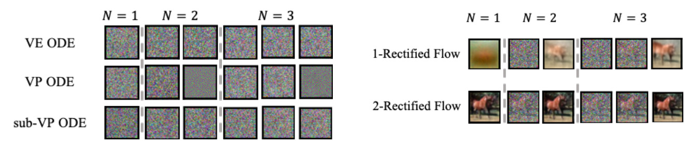<figcaption class="ltx_caption"><span class="ltx_tag ltx_tag_figure">Figure 16: </span>Few-step generation with different ODEs. Compared with VE,VP,sub-VP ODE, 1-rectified flow can generate blurry images using only 1,2,3 steps. After one time of rectification, 2-rectified flow can generate clear images with 1,2,3 steps.
</figcaption><div class="fzh"><b>图 16：</b>不同 ODE 的少步生成。与 VE、VP、sub-VP ODE 相比，1-Rectified Flow 只用 1、2、3 步就能生成模糊的图像。做一次 rectification 后，2-Rectified Flow 用 1、2、3 步就能生成清晰的图像。</div></figure></div>
<span class="lxa" id="A1"></span><h2 class="ph" id="sappendix-a"><span class="hn">Appendix A</span>Additional Experiment Details<span class="hzh">补充实验细节</span></h2>
<span class="lxa" id="A1.SS0.SSS0.Px1"></span><h4 class="ph" id="sexperiment-configuration-on-cifar10">Experiment Configuration on CIFAR10<span class="hzh">CIFAR10 实验配置</span></h4>
<div class="blk">
    
    <p class="pp">We conduct unconditional image generation with the CIFAR-10 dataset <cite class="ltx_cite ltx_citemacro_citep">[<a href="#bib.bib36" title="" class="ltx_ref">36</a>]</cite>. The resolution of the images are set to <math id="A1.SS0.SSS0.Px1.p1.m1" class="ltx_Math" alttext="32\times 32" display="inline" intent=":literal"><semantics><mrow><mn>32</mn><mo lspace="0.222em" rspace="0.222em">×</mo><mn>32</mn></mrow></semantics></math>. For rectified flow, we adopt the same network structure as DDPM++ in <cite class="ltx_cite ltx_citemacro_citep">[<a href="#bib.bib73" title="" class="ltx_ref">73</a>]</cite>. The training of the network is smoothed by exponential moving average as in <cite class="ltx_cite ltx_citemacro_citep">[<a href="#bib.bib73" title="" class="ltx_ref">73</a>]</cite>, with a ratio of <math id="A1.SS0.SSS0.Px1.p1.m2" class="ltx_Math" alttext="0.999999" display="inline" intent=":literal"><semantics><mn>0.999999</mn></semantics></math>. We adopt Adam <cite class="ltx_cite ltx_citemacro_citep">[<a href="#bib.bib31" title="" class="ltx_ref">31</a>]</cite> optimizer with a learning rate of <math id="A1.SS0.SSS0.Px1.p1.m3" class="ltx_Math" alttext="2e-4" display="inline" intent=":literal"><semantics><mrow><mrow><mn>2</mn><mo lspace="0em" rspace="0em">​</mo><mi>e</mi></mrow><mo>−</mo><mn>4</mn></mrow></semantics></math> and a dropout rate of <math id="A1.SS0.SSS0.Px1.p1.m4" class="ltx_Math" alttext="0.15" display="inline" intent=":literal"><semantics><mn>0.15</mn></semantics></math>.</p>
    <p class="pp zh" lang="zh-Hans">我们在 CIFAR-10 数据集 <cite class="ltx_cite ltx_citemacro_citep">[<a href="#bib.bib36" title="" class="ltx_ref">36</a>]</cite> 上做无条件图像生成，图像分辨率为 <math class="ltx_Math" alttext="32\times 32" display="inline" intent=":literal"><semantics><mrow><mn>32</mn><mo lspace="0.222em" rspace="0.222em">×</mo><mn>32</mn></mrow></semantics></math>。Rectified Flow 采用与 <cite class="ltx_cite ltx_citemacro_citep">[<a href="#bib.bib73" title="" class="ltx_ref">73</a>]</cite> 中 DDPM++ 相同的网络结构。网络训练按 <cite class="ltx_cite ltx_citemacro_citep">[<a href="#bib.bib73" title="" class="ltx_ref">73</a>]</cite> 的做法用指数滑动平均平滑，系数为 <math class="ltx_Math" alttext="0.999999" display="inline" intent=":literal"><semantics><mn>0.999999</mn></semantics></math>。我们使用 Adam <cite class="ltx_cite ltx_citemacro_citep">[<a href="#bib.bib31" title="" class="ltx_ref">31</a>]</cite> 优化器，学习率 <math class="ltx_Math" alttext="2e-4" display="inline" intent=":literal"><semantics><mrow><mrow><mn>2</mn><mo lspace="0em" rspace="0em">​</mo><mi>e</mi></mrow><mo>−</mo><mn>4</mn></mrow></semantics></math>，dropout 率 <math class="ltx_Math" alttext="0.15" display="inline" intent=":literal"><semantics><mn>0.15</mn></semantics></math>。</p>
    
  </div>
<div class="blk">
    
    <p class="pp">For reflow, we first generate 4 million pairs of <math id="A1.SS0.SSS0.Px1.p2.m1" class="ltx_Math" alttext="(z_{0},z_{1})" display="inline" intent=":literal"><semantics><mrow><mo stretchy="false">(</mo><msub><mi>z</mi><mn>0</mn></msub><mo>,</mo><msub><mi>z</mi><mn>1</mn></msub><mo stretchy="false">)</mo></mrow></semantics></math> to get a new dataset <math id="A1.SS0.SSS0.Px1.p2.m2" class="ltx_Math" alttext="D" display="inline" intent=":literal"><semantics><mi>D</mi></semantics></math>, then fine-tune the <math id="A1.SS0.SSS0.Px1.p2.m3" class="ltx_Math" alttext="i" display="inline" intent=":literal"><semantics><mi>i</mi></semantics></math>-rectified flow model for <math id="A1.SS0.SSS0.Px1.p2.m4" class="ltx_Math" alttext="300,000" display="inline" intent=":literal"><semantics><mn>300,000</mn></semantics></math> steps to get the <math id="A1.SS0.SSS0.Px1.p2.m5" class="ltx_Math" alttext="(i+1)" display="inline" intent=":literal"><semantics><mrow><mo stretchy="false">(</mo><mrow><mi>i</mi><mo>+</mo><mn>1</mn></mrow><mo stretchy="false">)</mo></mrow></semantics></math>-rectified flow model. We further distill these rectified flow models for few-step generation. To get a <math id="A1.SS0.SSS0.Px1.p2.m6" class="ltx_Math" alttext="k" display="inline" intent=":literal"><semantics><mi>k</mi></semantics></math>-step image generator from the <math id="A1.SS0.SSS0.Px1.p2.m7" class="ltx_Math" alttext="i" display="inline" intent=":literal"><semantics><mi>i</mi></semantics></math>-rectified flow, we randomly sample <math id="A1.SS0.SSS0.Px1.p2.m8" class="ltx_Math" alttext="t\in\{0,1/k,\cdots,(k-1)/k\}" display="inline" intent=":literal"><semantics><mrow><mi>t</mi><mo>∈</mo><mrow><mo stretchy="false">{</mo><mrow><mn>0</mn><mo>,</mo><mrow><mn>1</mn><mo>/</mo><mi>k</mi></mrow><mo>,</mo><mo lspace="0em" rspace="0em">⋯</mo><mo>,</mo><mrow><mrow><mo stretchy="false">(</mo><mrow><mi>k</mi><mo>−</mo><mn>1</mn></mrow><mo stretchy="false">)</mo></mrow><mo>/</mo><mi>k</mi></mrow></mrow><mo stretchy="false">}</mo></mrow></mrow></semantics></math> during fine-tuning, instead of randomly sampling <math id="A1.SS0.SSS0.Px1.p2.m9" class="ltx_Math" alttext="t\in[0,1]" display="inline" intent=":literal"><semantics><mrow><mi>t</mi><mo>∈</mo><mrow><mo stretchy="false">[</mo><mrow><mn>0</mn><mo>,</mo><mn>1</mn></mrow><mo stretchy="false">]</mo></mrow></mrow></semantics></math>. Specifically, for <math id="A1.SS0.SSS0.Px1.p2.m10" class="ltx_Math" alttext="k=1" display="inline" intent=":literal"><semantics><mrow><mi>k</mi><mo>=</mo><mn>1</mn></mrow></semantics></math>, we replace the L2 loss function with the LPIPS similarity <cite class="ltx_cite ltx_citemacro_citep">[<a href="#bib.bib96" title="" class="ltx_ref">96</a>]</cite> since it empirically brings better performance.</p>
    <p class="pp zh" lang="zh-Hans">做 reflow 时，先生成 400 万对 <math class="ltx_Math" alttext="(z_{0},z_{1})" display="inline" intent=":literal"><semantics><mrow><mo stretchy="false">(</mo><msub><mi>z</mi><mn>0</mn></msub><mo>,</mo><msub><mi>z</mi><mn>1</mn></msub><mo stretchy="false">)</mo></mrow></semantics></math>，得到新数据集 <math class="ltx_Math" alttext="D" display="inline" intent=":literal"><semantics><mi>D</mi></semantics></math>，再把 <math class="ltx_Math" alttext="i" display="inline" intent=":literal"><semantics><mi>i</mi></semantics></math>-Rectified Flow 模型微调 <math class="ltx_Math" alttext="300,000" display="inline" intent=":literal"><semantics><mn>300,000</mn></semantics></math> 步，得到 <math class="ltx_Math" alttext="(i+1)" display="inline" intent=":literal"><semantics><mrow><mo stretchy="false">(</mo><mrow><mi>i</mi><mo>+</mo><mn>1</mn></mrow><mo stretchy="false">)</mo></mrow></semantics></math>-Rectified Flow 模型。我们进一步把这些 Rectified Flow 模型蒸馏用于少步生成。要从 <math class="ltx_Math" alttext="i" display="inline" intent=":literal"><semantics><mi>i</mi></semantics></math>-Rectified Flow 得到 <math class="ltx_Math" alttext="k" display="inline" intent=":literal"><semantics><mi>k</mi></semantics></math> 步的图像生成器，微调时随机采样 <math class="ltx_Math" alttext="t\in\{0,1/k,\cdots,(k-1)/k\}" display="inline" intent=":literal"><semantics><mrow><mi>t</mi><mo>∈</mo><mrow><mo stretchy="false">{</mo><mrow><mn>0</mn><mo>,</mo><mrow><mn>1</mn><mo>/</mo><mi>k</mi></mrow><mo>,</mo><mo lspace="0em" rspace="0em">⋯</mo><mo>,</mo><mrow><mrow><mo stretchy="false">(</mo><mrow><mi>k</mi><mo>−</mo><mn>1</mn></mrow><mo stretchy="false">)</mo></mrow><mo>/</mo><mi>k</mi></mrow></mrow><mo stretchy="false">}</mo></mrow></mrow></semantics></math>，而不是随机采样 <math class="ltx_Math" alttext="t\in[0,1]" display="inline" intent=":literal"><semantics><mrow><mi>t</mi><mo>∈</mo><mrow><mo stretchy="false">[</mo><mrow><mn>0</mn><mo>,</mo><mn>1</mn></mrow><mo stretchy="false">]</mo></mrow></mrow></semantics></math>。特别地，对 <math class="ltx_Math" alttext="k=1" display="inline" intent=":literal"><semantics><mrow><mi>k</mi><mo>=</mo><mn>1</mn></mrow></semantics></math>，我们把 L2 损失函数换成 LPIPS 相似度 <cite class="ltx_cite ltx_citemacro_citep">[<a href="#bib.bib96" title="" class="ltx_ref">96</a>]</cite>，因为实验上它带来更好的性能。</p>
    
  </div>
<span class="lxa" id="A1.SS0.SSS0.Px2"></span><h4 class="ph" id="sexpreiment-configuration-on-image-to-image-translation">Expreiment Configuration on Image-to-Image Translation<span class="hzh">图像到图像翻译实验配置</span></h4>
<div class="blk">
    
    <p class="pp">In this experiment, we also adopt the same U-Net structure of DDPM++ <cite class="ltx_cite ltx_citemacro_cite">[<a href="#bib.bib73" title="" class="ltx_ref">73</a>]</cite> for representing the drift <math id="A1.SS0.SSS0.Px2.p1.m1" class="ltx_Math" alttext="v^{X}" display="inline" intent=":literal"><semantics><msup><mi>v</mi><mi>X</mi></msup></semantics></math>.
We follow the procedure in Algorithm <a href="#alg1" title="Algorithm 1 ‣ Straight line flows yield fast simulation ‣ 2.1 Overview ‣ 2 Method ‣ Flow Straight and Fast: Learning to Generate and Transfer Data with Rectified Flow" class="ltx_ref"><span class="ltx_text ltx_ref_tag">1</span></a>.
For the purpose of generative modeling, we set <math id="A1.SS0.SSS0.Px2.p1.m2" class="ltx_Math" alttext="{\pi}_{0}" display="inline" intent=":literal"><semantics><msub><mi>π</mi><mn>0</mn></msub></semantics></math> to be one domain dataset and <math id="A1.SS0.SSS0.Px2.p1.m3" class="ltx_Math" alttext="{\pi}_{1}" display="inline" intent=":literal"><semantics><msub><mi>π</mi><mn>1</mn></msub></semantics></math> the other domain dataset.
For optimization, we use AdamW <cite class="ltx_cite ltx_citemacro_citep">[<a href="#bib.bib45" title="" class="ltx_ref">45</a>]</cite> optimizer with <math id="A1.SS0.SSS0.Px2.p1.m4" class="ltx_Math" alttext="\beta" display="inline" intent=":literal"><semantics><mi>β</mi></semantics></math> <math id="A1.SS0.SSS0.Px2.p1.m5" class="ltx_Math" alttext="(0.9,0.999)" display="inline" intent=":literal"><semantics><mrow><mo stretchy="false">(</mo><mn>0.9</mn><mo>,</mo><mn>0.999</mn><mo stretchy="false">)</mo></mrow></semantics></math>, weight decay <math id="A1.SS0.SSS0.Px2.p1.m6" class="ltx_Math" alttext="0.1" display="inline" intent=":literal"><semantics><mn>0.1</mn></semantics></math> and dropout rate <math id="A1.SS0.SSS0.Px2.p1.m7" class="ltx_Math" alttext="0.1" display="inline" intent=":literal"><semantics><mn>0.1</mn></semantics></math>.
We train the model with a batch size of <math id="A1.SS0.SSS0.Px2.p1.m8" class="ltx_Math" alttext="4" display="inline" intent=":literal"><semantics><mn>4</mn></semantics></math> for <math id="A1.SS0.SSS0.Px2.p1.m9" class="ltx_Math" alttext="1,000" display="inline" intent=":literal"><semantics><mn>1,000</mn></semantics></math> epochs.
We further apply exponential moving average (EMA) optimizer with coefficient <math id="A1.SS0.SSS0.Px2.p1.m10" class="ltx_Math" alttext="0.9999" display="inline" intent=":literal"><semantics><mn>0.9999</mn></semantics></math>.
We perform grid-search on the learning rate from <math id="A1.SS0.SSS0.Px2.p1.m11" class="ltx_Math" alttext="\{5\times 10^{-4},2\times 10^{-4},5\times 10^{-5},2\times 10^{-5},5\times 10^{-6}\}" display="inline" intent=":literal"><semantics><mrow><mo stretchy="false">{</mo><mrow><mrow><mn>5</mn><mo lspace="0.222em" rspace="0.222em">×</mo><msup><mn>10</mn><mrow><mo>−</mo><mn>4</mn></mrow></msup></mrow><mo>,</mo><mrow><mn>2</mn><mo lspace="0.222em" rspace="0.222em">×</mo><msup><mn>10</mn><mrow><mo>−</mo><mn>4</mn></mrow></msup></mrow><mo>,</mo><mrow><mn>5</mn><mo lspace="0.222em" rspace="0.222em">×</mo><msup><mn>10</mn><mrow><mo>−</mo><mn>5</mn></mrow></msup></mrow><mo>,</mo><mrow><mn>2</mn><mo lspace="0.222em" rspace="0.222em">×</mo><msup><mn>10</mn><mrow><mo>−</mo><mn>5</mn></mrow></msup></mrow><mo>,</mo><mrow><mn>5</mn><mo lspace="0.222em" rspace="0.222em">×</mo><msup><mn>10</mn><mrow><mo>−</mo><mn>6</mn></mrow></msup></mrow></mrow><mo stretchy="false">}</mo></mrow></semantics></math> and pick the model with the lowest training loss.</p>
    <p class="pp zh" lang="zh-Hans">这个实验同样采用 DDPM++ <cite class="ltx_cite ltx_citemacro_cite">[<a href="#bib.bib73" title="" class="ltx_ref">73</a>]</cite> 的 U-Net 结构表示漂移 <math class="ltx_Math" alttext="v^{X}" display="inline" intent=":literal"><semantics><msup><mi>v</mi><mi>X</mi></msup></semantics></math>，并按算法 <a href="#alg1" title="Algorithm 1 ‣ Straight line flows yield fast simulation ‣ 2.1 Overview ‣ 2 Method ‣ Flow Straight and Fast: Learning to Generate and Transfer Data with Rectified Flow" class="ltx_ref"><span class="ltx_text ltx_ref_tag">1</span></a> 的流程进行。为了生成建模，我们令 <math class="ltx_Math" alttext="{\pi}_{0}" display="inline" intent=":literal"><semantics><msub><mi>π</mi><mn>0</mn></msub></semantics></math> 为一个域的数据集，<math class="ltx_Math" alttext="{\pi}_{1}" display="inline" intent=":literal"><semantics><msub><mi>π</mi><mn>1</mn></msub></semantics></math> 为另一个域的数据集。优化使用 AdamW <cite class="ltx_cite ltx_citemacro_citep">[<a href="#bib.bib45" title="" class="ltx_ref">45</a>]</cite> 优化器，<math class="ltx_Math" alttext="\beta" display="inline" intent=":literal"><semantics><mi>β</mi></semantics></math> 为 <math class="ltx_Math" alttext="(0.9,0.999)" display="inline" intent=":literal"><semantics><mrow><mo stretchy="false">(</mo><mn>0.9</mn><mo>,</mo><mn>0.999</mn><mo stretchy="false">)</mo></mrow></semantics></math>，权重衰减 <math class="ltx_Math" alttext="0.1" display="inline" intent=":literal"><semantics><mn>0.1</mn></semantics></math>，dropout 率 <math class="ltx_Math" alttext="0.1" display="inline" intent=":literal"><semantics><mn>0.1</mn></semantics></math>。批量大小为 <math class="ltx_Math" alttext="4" display="inline" intent=":literal"><semantics><mn>4</mn></semantics></math>，训练 <math class="ltx_Math" alttext="1,000" display="inline" intent=":literal"><semantics><mn>1,000</mn></semantics></math> 轮。我们还使用系数为 <math class="ltx_Math" alttext="0.9999" display="inline" intent=":literal"><semantics><mn>0.9999</mn></semantics></math> 的指数滑动平均 (EMA)。学习率在 <math class="ltx_Math" alttext="\{5\times 10^{-4},2\times 10^{-4},5\times 10^{-5},2\times 10^{-5},5\times 10^{-6}\}" display="inline" intent=":literal"><semantics><mrow><mo stretchy="false">{</mo><mrow><mrow><mn>5</mn><mo lspace="0.222em" rspace="0.222em">×</mo><msup><mn>10</mn><mrow><mo>−</mo><mn>4</mn></mrow></msup></mrow><mo>,</mo><mrow><mn>2</mn><mo lspace="0.222em" rspace="0.222em">×</mo><msup><mn>10</mn><mrow><mo>−</mo><mn>4</mn></mrow></msup></mrow><mo>,</mo><mrow><mn>5</mn><mo lspace="0.222em" rspace="0.222em">×</mo><msup><mn>10</mn><mrow><mo>−</mo><mn>5</mn></mrow></msup></mrow><mo>,</mo><mrow><mn>2</mn><mo lspace="0.222em" rspace="0.222em">×</mo><msup><mn>10</mn><mrow><mo>−</mo><mn>5</mn></mrow></msup></mrow><mo>,</mo><mrow><mn>5</mn><mo lspace="0.222em" rspace="0.222em">×</mo><msup><mn>10</mn><mrow><mo>−</mo><mn>6</mn></mrow></msup></mrow></mrow><mo stretchy="false">}</mo></mrow></semantics></math> 中做网格搜索，选训练损失最低的模型。</p>
    
  </div>
<div class="blk">
    
    <p class="pp">We use the AFHQ <cite class="ltx_cite ltx_citemacro_citep">[<a href="#bib.bib9" title="" class="ltx_ref">9</a>]</cite>, MetFace <cite class="ltx_cite ltx_citemacro_citep">[<a href="#bib.bib28" title="" class="ltx_ref">28</a>]</cite> and CelebA-HQ <cite class="ltx_cite ltx_citemacro_citep">[<a href="#bib.bib27" title="" class="ltx_ref">27</a>]</cite> dataset.
Animal Faces HQ (AFHQ) is an animal-face dataset consisting of 15,000 high-quality images at <math id="A1.SS0.SSS0.Px2.p2.m1" class="ltx_Math" alttext="512\times 512" display="inline" intent=":literal"><semantics><mrow><mn>512</mn><mo lspace="0.222em" rspace="0.222em">×</mo><mn>512</mn></mrow></semantics></math> resolution. The dataset includes three domains of cat, dog, and wild animals, each providing 5000 images.
MetFace consists of 1,336 high-quality PNG human-face images at <math id="A1.SS0.SSS0.Px2.p2.m2" class="ltx_Math" alttext="1024\times 1024" display="inline" intent=":literal"><semantics><mrow><mn>1024</mn><mo lspace="0.222em" rspace="0.222em">×</mo><mn>1024</mn></mrow></semantics></math> resolution, extracted from works of art.
CelebA-HQ is a human-face dataset which consists of 30,000 images at <math id="A1.SS0.SSS0.Px2.p2.m3" class="ltx_Math" alttext="1024\times 1024" display="inline" intent=":literal"><semantics><mrow><mn>1024</mn><mo lspace="0.222em" rspace="0.222em">×</mo><mn>1024</mn></mrow></semantics></math> resolution.
We randomly select <math id="A1.SS0.SSS0.Px2.p2.m4" class="ltx_Math" alttext="80\%" display="inline" intent=":literal"><semantics><mrow><mn>80</mn><mo>%</mo></mrow></semantics></math> as the training data and regard the rest as the test data, and resize the image to <math id="A1.SS0.SSS0.Px2.p2.m5" class="ltx_Math" alttext="512\times 512" display="inline" intent=":literal"><semantics><mrow><mn>512</mn><mo lspace="0.222em" rspace="0.222em">×</mo><mn>512</mn></mrow></semantics></math>.</p>
    <p class="pp zh" lang="zh-Hans">我们使用 AFHQ <cite class="ltx_cite ltx_citemacro_citep">[<a href="#bib.bib9" title="" class="ltx_ref">9</a>]</cite>、MetFace <cite class="ltx_cite ltx_citemacro_citep">[<a href="#bib.bib28" title="" class="ltx_ref">28</a>]</cite> 和 CelebA-HQ <cite class="ltx_cite ltx_citemacro_citep">[<a href="#bib.bib27" title="" class="ltx_ref">27</a>]</cite> 数据集。Animal Faces HQ (AFHQ) 是一个动物脸数据集，包含 15,000 张 <math class="ltx_Math" alttext="512\times 512" display="inline" intent=":literal"><semantics><mrow><mn>512</mn><mo lspace="0.222em" rspace="0.222em">×</mo><mn>512</mn></mrow></semantics></math> 分辨率的高质量图像，分为猫、狗和野生动物三个域，每个域 5000 张。MetFace 包含 1,336 张 <math class="ltx_Math" alttext="1024\times 1024" display="inline" intent=":literal"><semantics><mrow><mn>1024</mn><mo lspace="0.222em" rspace="0.222em">×</mo><mn>1024</mn></mrow></semantics></math> 分辨率的高质量 PNG 人脸图像，取自艺术作品。CelebA-HQ 是一个人脸数据集，包含 30,000 张 <math class="ltx_Math" alttext="1024\times 1024" display="inline" intent=":literal"><semantics><mrow><mn>1024</mn><mo lspace="0.222em" rspace="0.222em">×</mo><mn>1024</mn></mrow></semantics></math> 分辨率的图像。我们随机选 <math class="ltx_Math" alttext="80\%" display="inline" intent=":literal"><semantics><mrow><mn>80</mn><mo>%</mo></mrow></semantics></math> 作为训练数据，其余作为测试数据，并把图像缩放到 <math class="ltx_Math" alttext="512\times 512" display="inline" intent=":literal"><semantics><mrow><mn>512</mn><mo lspace="0.222em" rspace="0.222em">×</mo><mn>512</mn></mrow></semantics></math>。</p>
    
  </div>
<span class="lxa" id="A1.SS0.SSS0.Px3"></span><h4 class="ph" id="sexperiment-configuration-on-domain-adaptation">Experiment Configuration on Domain Adaptation<span class="hzh">域适应实验配置</span></h4>
<div class="blk">
    
    <p class="pp">For training the model, we apply AdamW <cite class="ltx_cite ltx_citemacro_citep">[<a href="#bib.bib45" title="" class="ltx_ref">45</a>]</cite> optimizer with batch size <math id="A1.SS0.SSS0.Px3.p1.m1" class="ltx_Math" alttext="16" display="inline" intent=":literal"><semantics><mn>16</mn></semantics></math>, number of iterations <math id="A1.SS0.SSS0.Px3.p1.m2" class="ltx_Math" alttext="50" display="inline" intent=":literal"><semantics><mn>50</mn></semantics></math>k, learning rate <math id="A1.SS0.SSS0.Px3.p1.m3" class="ltx_Math" alttext="10^{-4}" display="inline" intent=":literal"><semantics><msup><mn>10</mn><mrow><mo>−</mo><mn>4</mn></mrow></msup></semantics></math>, weight decay <math id="A1.SS0.SSS0.Px3.p1.m4" class="ltx_Math" alttext="0.1" display="inline" intent=":literal"><semantics><mn>0.1</mn></semantics></math> and OneCycle <cite class="ltx_cite ltx_citemacro_citep">[<a href="#bib.bib69" title="" class="ltx_ref">69</a>]</cite> learning rate schedule.</p>
    <p class="pp zh" lang="zh-Hans">训练模型时使用 AdamW <cite class="ltx_cite ltx_citemacro_citep">[<a href="#bib.bib45" title="" class="ltx_ref">45</a>]</cite> 优化器，批量大小 <math class="ltx_Math" alttext="16" display="inline" intent=":literal"><semantics><mn>16</mn></semantics></math>，迭代 <math class="ltx_Math" alttext="50" display="inline" intent=":literal"><semantics><mn>50</mn></semantics></math>k 次，学习率 <math class="ltx_Math" alttext="10^{-4}" display="inline" intent=":literal"><semantics><msup><mn>10</mn><mrow><mo>−</mo><mn>4</mn></mrow></msup></semantics></math>，权重衰减 <math class="ltx_Math" alttext="0.1" display="inline" intent=":literal"><semantics><mn>0.1</mn></semantics></math>，学习率调度用 OneCycle <cite class="ltx_cite ltx_citemacro_citep">[<a href="#bib.bib69" title="" class="ltx_ref">69</a>]</cite>。</p>
    
  </div>
<div class="floatbox"><figure id="A1.F17" class="ltx_figure">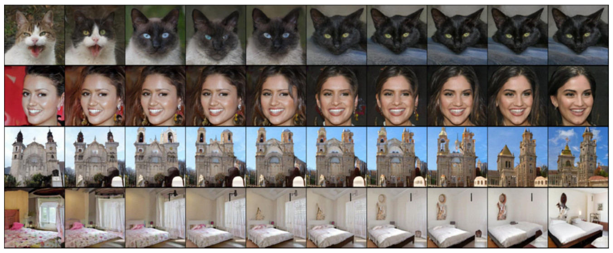<figcaption class="ltx_caption ltx_centering"><span class="ltx_tag ltx_tag_figure">Figure 17: </span>
To visualize the latent space, we randomly sample <math id="A1.F17.m6" class="ltx_Math" alttext="z_{0}" display="inline" intent=":literal"><semantics><msub><mi>z</mi><mn>0</mn></msub></semantics></math> and <math id="A1.F17.m7" class="ltx_Math" alttext="z_{1}" display="inline" intent=":literal"><semantics><msub><mi>z</mi><mn>1</mn></msub></semantics></math> from <math id="A1.F17.m8" class="ltx_Math" alttext="\mathcal{N}(0,I)" display="inline" intent=":literal"><semantics><mrow><mi class="ltx_font_mathcaligraphic">𝒩</mi><mo>⁡</mo><mrow><mo stretchy="false">(</mo><mn>0</mn><mo>,</mo><mi>I</mi><mo stretchy="false">)</mo></mrow></mrow></semantics></math>, and show the generated images of <math id="A1.F17.m9" class="ltx_Math" alttext="\sqrt{\alpha}z_{0}+\sqrt{1-\alpha}z_{1}" display="inline" intent=":literal"><semantics><mrow><mrow><msqrt><mi>α</mi></msqrt><mo lspace="0em" rspace="0em">​</mo><msub><mi>z</mi><mn>0</mn></msub></mrow><mo>+</mo><mrow><msqrt><mrow><mn>1</mn><mo>−</mo><mi>α</mi></mrow></msqrt><mo lspace="0em" rspace="0em">​</mo><msub><mi>z</mi><mn>1</mn></msub></mrow></mrow></semantics></math> for <math id="A1.F17.m10" class="ltx_Math" alttext="\alpha\in[0,1]" display="inline" intent=":literal"><semantics><mrow><mi>α</mi><mo>∈</mo><mrow><mo stretchy="false">[</mo><mrow><mn>0</mn><mo>,</mo><mn>1</mn></mrow><mo stretchy="false">]</mo></mrow></mrow></semantics></math>.
</figcaption><div class="fzh"><b>图 17：</b>为了可视化隐空间，我们从 <math class="ltx_Math" alttext="\mathcal{N}(0,I)" display="inline" intent=":literal"><semantics><mrow><mi class="ltx_font_mathcaligraphic">𝒩</mi><mo>⁡</mo><mrow><mo stretchy="false">(</mo><mn>0</mn><mo>,</mo><mi>I</mi><mo stretchy="false">)</mo></mrow></mrow></semantics></math> 随机采样 <math class="ltx_Math" alttext="z_{0}" display="inline" intent=":literal"><semantics><msub><mi>z</mi><mn>0</mn></msub></semantics></math> 和 <math class="ltx_Math" alttext="z_{1}" display="inline" intent=":literal"><semantics><msub><mi>z</mi><mn>1</mn></msub></semantics></math>，展示对 <math class="ltx_Math" alttext="\alpha\in[0,1]" display="inline" intent=":literal"><semantics><mrow><mi>α</mi><mo>∈</mo><mrow><mo stretchy="false">[</mo><mrow><mn>0</mn><mo>,</mo><mn>1</mn></mrow><mo stretchy="false">]</mo></mrow></mrow></semantics></math> 由 <math class="ltx_Math" alttext="\sqrt{\alpha}z_{0}+\sqrt{1-\alpha}z_{1}" display="inline" intent=":literal"><semantics><mrow><mrow><msqrt><mi>α</mi></msqrt><mo lspace="0em" rspace="0em">​</mo><msub><mi>z</mi><mn>0</mn></msub></mrow><mo>+</mo><mrow><msqrt><mrow><mn>1</mn><mo>−</mo><mi>α</mi></mrow></msqrt><mo lspace="0em" rspace="0em">​</mo><msub><mi>z</mi><mn>1</mn></msub></mrow></mrow></semantics></math> 生成的图像。</div></figure></div>
<div class="floatbox"><figure id="A1.F18" class="ltx_figure">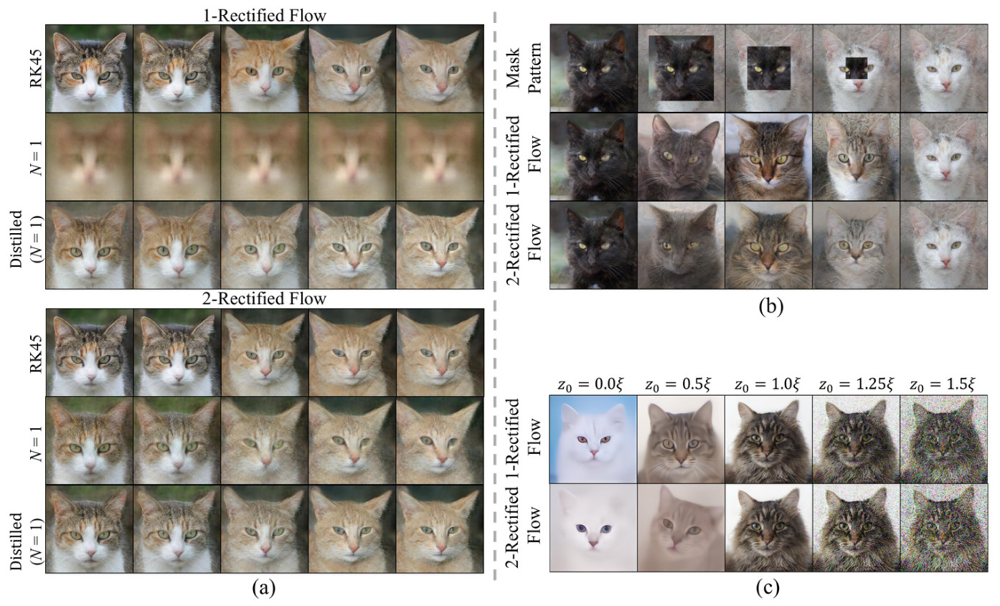<figcaption class="ltx_caption ltx_centering"><span class="ltx_tag ltx_tag_figure">Figure 18: </span>
(a) We compare the latent space between Rectified Flow (0) and (1) using different sampling strategies with the same random seeds. We observe that (i) both 1-Rectified Flow and 2-Rectified Flow can provide a smooth latent interpolation, and their latent spaces look similar; (ii) when using one-step sampling (<math id="A1.F18.m7" class="ltx_Math" alttext="N=1" display="inline" intent=":literal"><semantics><mrow><mi>N</mi><mo>=</mo><mn>1</mn></mrow></semantics></math>), 2-Rectified Flow can still provide visually recognizable interpolation, while 1-Rectified Flow cannot; (iii) Distilled one-step models can also continuously interpolate between the images, and their latent spaces have little difference with the original flow.
(b) We composite the latent codes of two images by replacing the boundary of a black cat with a white cat, then visualize the variation along the trajectory. The black cat turns into a grey cat at first, then a cat with mixing colors, and finally a white cat.
(c) We randomly sample <math id="A1.F18.m8" class="ltx_Math" alttext="\xi\sim\mathcal{N}(0,I)" display="inline" intent=":literal"><semantics><mrow><mi>ξ</mi><mo>∼</mo><mrow><mi class="ltx_font_mathcaligraphic">𝒩</mi><mo>⁡</mo><mrow><mo stretchy="false">(</mo><mn>0</mn><mo>,</mo><mi>I</mi><mo stretchy="false">)</mo></mrow></mrow></mrow></semantics></math>, then generate images with <math id="A1.F18.m9" class="ltx_Math" alttext="\alpha\xi" display="inline" intent=":literal"><semantics><mrow><mi>α</mi><mo lspace="0em" rspace="0em">​</mo><mi>ξ</mi></mrow></semantics></math> to examine the influence of <math id="A1.F18.m10" class="ltx_Math" alttext="\alpha" display="inline" intent=":literal"><semantics><mi>α</mi></semantics></math> on the generated images. We find <math id="A1.F18.m11" class="ltx_Math" alttext="\alpha&lt;1" display="inline" intent=":literal"><semantics><mrow><mi>α</mi><mo>&lt;</mo><mn>1</mn></mrow></semantics></math> results in overly smooth images, while <math id="A1.F18.m12" class="ltx_Math" alttext="\alpha&gt;1" display="inline" intent=":literal"><semantics><mrow><mi>α</mi><mo>&gt;</mo><mn>1</mn></mrow></semantics></math> leads to noisy images.
</figcaption><div class="fzh"><b>图 18：</b>(a) 用相同的随机种子、不同的采样策略比较 Rectified Flow (0) 和 (1) 的隐空间。我们观察到：(i) 1-Rectified Flow 和 2-Rectified Flow 都能给出平滑的隐空间插值，二者的隐空间看起来相似；(ii) 用一步采样（<math class="ltx_Math" alttext="N=1" display="inline" intent=":literal"><semantics><mrow><mi>N</mi><mo>=</mo><mn>1</mn></mrow></semantics></math>）时，2-Rectified Flow 仍能给出视觉上可辨认的插值，1-Rectified Flow 则不能；(iii) 蒸馏的一步模型也能在图像之间连续插值，它们的隐空间与原始的流差别很小。(b) 把黑猫的边界替换成白猫，合成两张图像的隐编码，再可视化沿轨迹的变化。黑猫先变成灰猫，再变成毛色混杂的猫，最后变成白猫。(c) 随机采样 <math class="ltx_Math" alttext="\xi\sim\mathcal{N}(0,I)" display="inline" intent=":literal"><semantics><mrow><mi>ξ</mi><mo>∼</mo><mrow><mi class="ltx_font_mathcaligraphic">𝒩</mi><mo>⁡</mo><mrow><mo stretchy="false">(</mo><mn>0</mn><mo>,</mo><mi>I</mi><mo stretchy="false">)</mo></mrow></mrow></mrow></semantics></math>，再用 <math class="ltx_Math" alttext="\alpha\xi" display="inline" intent=":literal"><semantics><mrow><mi>α</mi><mo lspace="0em" rspace="0em">​</mo><mi>ξ</mi></mrow></semantics></math> 生成图像，考察 <math class="ltx_Math" alttext="\alpha" display="inline" intent=":literal"><semantics><mi>α</mi></semantics></math> 对生成图像的影响。我们发现 <math class="ltx_Math" alttext="\alpha&lt;1" display="inline" intent=":literal"><semantics><mrow><mi>α</mi><mo>&lt;</mo><mn>1</mn></mrow></semantics></math> 导致图像过于平滑，而 <math class="ltx_Math" alttext="\alpha&gt;1" display="inline" intent=":literal"><semantics><mrow><mi>α</mi><mo>&gt;</mo><mn>1</mn></mrow></semantics></math> 导致图像有噪声。</div></figure></div>
<div class="floatbox"><figure id="A1.F19" class="ltx_figure">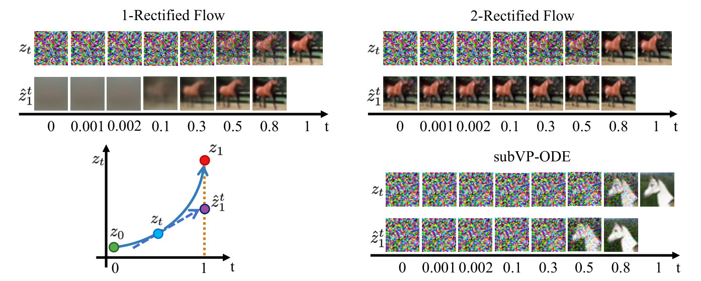<figcaption class="ltx_caption ltx_centering"><span class="ltx_tag ltx_tag_figure">Figure 19: </span>
Sample trajectories <math id="A1.F19.m6" class="ltx_Math" alttext="z_{t}" display="inline" intent=":literal"><semantics><msub><mi>z</mi><mi>t</mi></msub></semantics></math> of different flows on the CIFAR10 dataset, and the extrapolation <math id="A1.F19.m7" class="ltx_Math" alttext="\hat{z}_{1}^{t}=z_{t}+(1-t)v(z_{t},t)" display="inline" intent=":literal"><semantics><mrow><msubsup><mover accent="true"><mi>z</mi><mo>^</mo></mover><mn>1</mn><mi>t</mi></msubsup><mo>=</mo><mrow><msub><mi>z</mi><mi>t</mi></msub><mo>+</mo><mrow><mrow><mo stretchy="false">(</mo><mrow><mn>1</mn><mo>−</mo><mi>t</mi></mrow><mo stretchy="false">)</mo></mrow><mo lspace="0em" rspace="0em">​</mo><mi>v</mi><mo lspace="0em" rspace="0em">​</mo><mrow><mo stretchy="false">(</mo><msub><mi>z</mi><mi>t</mi></msub><mo>,</mo><mi>t</mi><mo stretchy="false">)</mo></mrow></mrow></mrow></mrow></semantics></math> from different <math id="A1.F19.m8" class="ltx_Math" alttext="z_{t}" display="inline" intent=":literal"><semantics><msub><mi>z</mi><mi>t</mi></msub></semantics></math>. The same random seed is adopted for all three methods. The <math id="A1.F19.m9" class="ltx_Math" alttext="\hat{z}_{1}^{t}" display="inline" intent=":literal"><semantics><msubsup><mover accent="true"><mi>z</mi><mo>^</mo></mover><mn>1</mn><mi>t</mi></msubsup></semantics></math> of 2-rectified flow is almost independent with <math id="A1.F19.m10" class="ltx_Math" alttext="t" display="inline" intent=":literal"><semantics><mi>t</mi></semantics></math>, indicating that its trajectory is almost straight.
</figcaption><div class="fzh"><b>图 19：</b>不同流在 CIFAR10 数据集上的轨迹样本 <math class="ltx_Math" alttext="z_{t}" display="inline" intent=":literal"><semantics><msub><mi>z</mi><mi>t</mi></msub></semantics></math>，以及从不同 <math class="ltx_Math" alttext="z_{t}" display="inline" intent=":literal"><semantics><msub><mi>z</mi><mi>t</mi></msub></semantics></math> 出发的外推 <math class="ltx_Math" alttext="\hat{z}_{1}^{t}=z_{t}+(1-t)v(z_{t},t)" display="inline" intent=":literal"><semantics><mrow><msubsup><mover accent="true"><mi>z</mi><mo>^</mo></mover><mn>1</mn><mi>t</mi></msubsup><mo>=</mo><mrow><msub><mi>z</mi><mi>t</mi></msub><mo>+</mo><mrow><mrow><mo stretchy="false">(</mo><mrow><mn>1</mn><mo>−</mo><mi>t</mi></mrow><mo stretchy="false">)</mo></mrow><mo lspace="0em" rspace="0em">​</mo><mi>v</mi><mo lspace="0em" rspace="0em">​</mo><mrow><mo stretchy="false">(</mo><msub><mi>z</mi><mi>t</mi></msub><mo>,</mo><mi>t</mi><mo stretchy="false">)</mo></mrow></mrow></mrow></mrow></semantics></math>。三种方法使用相同的随机种子。2-Rectified Flow 的 <math class="ltx_Math" alttext="\hat{z}_{1}^{t}" display="inline" intent=":literal"><semantics><msubsup><mover accent="true"><mi>z</mi><mo>^</mo></mover><mn>1</mn><mi>t</mi></msubsup></semantics></math> 几乎与 <math class="ltx_Math" alttext="t" display="inline" intent=":literal"><semantics><mi>t</mi></semantics></math> 无关，说明它的轨迹几乎是直的。</div></figure></div>
<div class="floatbox"><figure id="A1.F20" class="ltx_figure">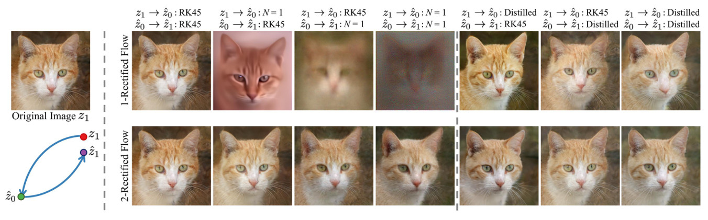<figcaption class="ltx_caption ltx_centering"><span class="ltx_tag ltx_tag_figure">Figure 20: </span>
We perform latent space embedding / image reconstruction here. Given an image <math id="A1.F20.m4" class="ltx_Math" alttext="z_{1}" display="inline" intent=":literal"><semantics><msub><mi>z</mi><mn>1</mn></msub></semantics></math>, we use an <em id="A1.F20.5" class="ltx_emph ltx_font_italic">reverse ODE solver</em> to get a latent code <math id="A1.F20.m5" class="ltx_Math" alttext="\hat{z}_{0}" display="inline" intent=":literal"><semantics><msub><mover accent="true"><mi>z</mi><mo>^</mo></mover><mn>0</mn></msub></semantics></math>, then use a <em id="A1.F20.6" class="ltx_emph ltx_font_italic">forward ODE solver</em> to get a reconstruction <math id="A1.F20.m6" class="ltx_Math" alttext="\hat{z}_{1}" display="inline" intent=":literal"><semantics><msub><mover accent="true"><mi>z</mi><mo>^</mo></mover><mn>1</mn></msub></semantics></math> of the image. The columns in the figure are <em id="A1.F20.7" class="ltx_emph ltx_font_italic">reverse ODE solver (forward ODE solver)</em>. (i) Thanks to the‘straightening’ effect, 2-rectified flow can get meaningful latent code with only one reverse step. It can also generate recognizable images using one forward step.
(ii) With the help of distilled models, one-step embedding and reconstruction is significantly improved.
</figcaption><div class="fzh"><b>图 20：</b>这里做隐空间嵌入和图像重建。给定图像 <math class="ltx_Math" alttext="z_{1}" display="inline" intent=":literal"><semantics><msub><mi>z</mi><mn>1</mn></msub></semantics></math>，用反向 ODE 求解器得到隐编码 <math class="ltx_Math" alttext="\hat{z}_{0}" display="inline" intent=":literal"><semantics><msub><mover accent="true"><mi>z</mi><mo>^</mo></mover><mn>0</mn></msub></semantics></math>，再用正向 ODE 求解器得到图像的重建 <math class="ltx_Math" alttext="\hat{z}_{1}" display="inline" intent=":literal"><semantics><msub><mover accent="true"><mi>z</mi><mo>^</mo></mover><mn>1</mn></msub></semantics></math>。图中的列是反向 ODE 求解器（正向 ODE 求解器）。(i) 得益于「拉直」效应，2-Rectified Flow 只用一步反向求解就能得到有意义的隐编码，用一步正向求解也能生成可辨认的图像。(ii) 借助蒸馏模型，一步嵌入和重建的效果显著改善。</div></figure></div>
<div class="floatbox"><figure id="A1.F21" class="ltx_figure">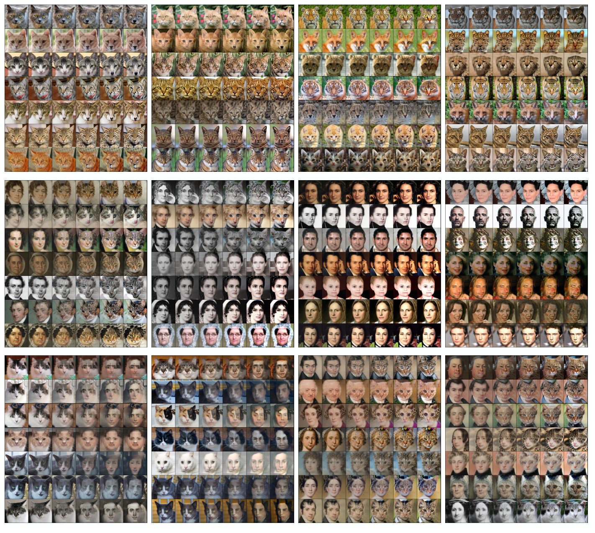<figcaption class="ltx_caption ltx_centering"><span class="ltx_tag ltx_tag_figure">Figure 21: </span>
More results for image-to-image translation between different domains.
The images in each row are time-uniformly sampled from the trajectory of 1-rectified flow solved <math id="A1.F21.m2" class="ltx_Math" alttext="N=100" display="inline" intent=":literal"><semantics><mrow><mi>N</mi><mo>=</mo><mn>100</mn></mrow></semantics></math> Euler steps with constant step size.
</figcaption><div class="fzh"><b>图 21：</b>不同域之间图像到图像翻译的更多结果。每行图像是从 1-Rectified Flow 的轨迹上按时间均匀取出的，轨迹以恒定步长求解 <math class="ltx_Math" alttext="N=100" display="inline" intent=":literal"><semantics><mrow><mi>N</mi><mo>=</mo><mn>100</mn></mrow></semantics></math> 个 Euler 步。</div></figure></div>
<details class="refs" id="sreferences"><summary>References<span>100 条</span></summary>
    <ol><li id="bib.bib1"><details><summary><span class="ltx_tag ltx_role_refnum ltx_tag_bibitem">[1]</span>
<span class="ltx_bibblock">
Luigi Ambrosio and Gianluca Crippa.

</span>
<span class="ltx_bibblock">Existence, uniqueness, stability and differentiability properties of
the flow associated to weakly differentiable vector fields.

</span>
<span class="ltx_bibblock">In <em id="bib.bib1.1" class="ltx_emph ltx_font_italic">Transport equations and multi-D hyperbolic conservation
laws</em>, pages 3–57. Springer, 2008.

</span><a class="rl" href="https://doi.org/10.1007/978-3-540-76781-7_1" target="_blank" rel="noreferrer">Springer ↗</a></summary><div class="rc"><b>本文在这些地方引用它</b><p><i>§2.1</i>Given empirical observations of X 0 ∼ π 0 , X 1 ∼ π 1 , the rectified flow induced from ( X 0 , X 1 ) is an ordinary differentiable model (ODE) on time t ∈ [0,1] ,</p><p><i>§2.1</i>列在 Algorithm 1 Rectified Flow 的对照行里</p><p><i>§2.2</i>In fact, the marginal law of Z t equals that of X t at every time t , that is, Law ⁡ ( Z t ) = Law ⁡ ( X t ) , ∀ t ∈ [0,1] .</p><p><i>§2.2</i>列在 Figure 3 的对照行里</p><p><i>§2.2</i>Specifically, we say that a flow d Z t = v ⁡ ( Z t , t ) d t is straight if we have almost surely that Z t = t Z 1 + ( 1 − t ) Z 0 for ∀ t ∈ [0,1] , or equivalently v ⁡ ( Z t , t ) = Z 1 − Z 0 = c o n s t following each path.</p><p><i>§2.3</i>Let 𝑿 = { X t : t ∈ [0,1] } be any time-differentiable random process that connects X 0 and X 1 .</p><p><i>§2.3</i>As we show in Theorem 3.3 , the flow 𝒁 given by this method still preserves the marginal laws of 𝑿 , that is, Law ⁡ ( Z t ) = Law ⁡ ( X t ) , ∀ t ∈ [0,1] , and hence ( Z 0 , Z 1 ) remains to be a coupling of π 0 , π 1 .</p><p><i>§3.1</i>For a path-wise continuously differentiable random process 𝐗 = { X t : t ∈ [0,1] } , its expected velocity v 𝐗 is defined as</p><p><i>§3.1</i>In this case, 𝐙 = { Z t : t ∈ [0,1] } is called the rectified flow induced from 𝐗 .</p><p><i>§3.1</i>Then Law ⁡ ( Z t ) = Law ⁡ ( X t ) for ∀ t ∈ [0,1] .</p><p><i>§3.1</i>Hence, the equivalence of Law ⁡ ( Z t ) and Law ⁡ ( X t ) follows if the solution of ( 11 ) is unique, which is equivalent to the uniqueness of the solution of d Z t = v 𝑿 ( Z t , t ) following Corollary 1.3 of 37Kurtz [37] (see also Theorem 4.1 of 1Ambrosio and Crippa [1] ). ∎</p><p><i>§3.1</i>Hence, the equivalence of Law ⁡ ( Z t ) and Law ⁡ ( X t ) follows if the solution of ( 11 ) is unique, which is equivalent to the uniqueness of the solution of d Z t = v 𝑿 ( Z t , t ) following Corollary 1.3 of Kurtz [37] (see also Theorem 4.1 of Ambrosio and Crippa [1] ). ∎</p><p><i>§3.2</i>A coupling ( X 0 , X 1 ) is called rectifiable if its linear interpolation process 𝐗 = { t X 1 + ( 1 − t ) X 0 : t ∈ [0,1] } is rectifiable.</p><p><i>§3.2</i>In this case, the 𝐙 = { Z t : t ∈ [0,1] } in ( 9 ) is called the rectified flow of coupling ( X 0 , X 1 ) , denoted as 𝐙 = 𝚁𝚎𝚌𝚝𝙵𝚕𝚘𝚠 ⁡ ( ( X 0 , X 1 ) ) , and ( Z 0 , Z 1 ) is called the rectified coupling of ( X 0 , X 1 ) , denoted as ( Z 0 , Z 1 ) = 𝚁𝚎𝚌𝚝𝚒𝚏𝚢 ⁡ ( ( X 0 , X 1 ) ) .</p><p><i>§3.3</i>where V ⁡ ( ( X 0 , X 1 ) ) = 0 indicates that X 1 − X 0 = 𝔼 ⁡ [ X 1 − X 0 | X t ] almost surely when t ∼ Uniform ( [0,1] ) , meaning that the lines passing through each X t is unique, and hence no linear interpolation paths intersect.</p><p><i>§3.3</i>X and t ∼ Uniform ( [0,1] ) , which implies that V ⁡ ( 𝑿 ) = 0 .</p><p><i>§3.5</i>where σ t : [0,1] → [ 0 , + ∞ ) is a (typically) fixed diffusion coefficient, b is a trainable neural network, and the initial distribution π 0 is restricted to a spherical Gaussian distribution determined by hyper-parameter setting of the algorithm.</p><p><i>§5.4</i>列在 Algorithm 2 Train(Data) 的对照行里</p><p><i>§Appendix A</i>To get a k -step image generator from the i -rectified flow, we randomly sample t ∈ { 0 , 1 / k , ⋯ , ( k − 1 ) / k } during fine-tuning, instead of randomly sampling t ∈ [0,1] .</p><p><i>§Appendix A</i>列在 Figure 17 的对照行里</p></div></details></li><li id="bib.bib2"><details><summary><span class="ltx_tag ltx_role_refnum ltx_tag_bibitem">[2]</span>
<span class="ltx_bibblock">
Luigi Ambrosio, Elia Brué, and Daniele Semola.

</span>
<span class="ltx_bibblock"><em id="bib.bib2.1" class="ltx_emph ltx_font_italic">Lectures on optimal transport</em>.

</span>
<span class="ltx_bibblock">Springer, 2021.

</span><a class="rl" href="https://doi.org/10.1007/978-3-030-72162-6" target="_blank" rel="noreferrer">Springer ↗</a></summary></details></li><li id="bib.bib3"><details><summary><span class="ltx_tag ltx_role_refnum ltx_tag_bibitem">[3]</span>
<span class="ltx_bibblock">
Brian DO Anderson.

</span>
<span class="ltx_bibblock">Reverse-time diffusion equation models.

</span>
<span class="ltx_bibblock"><em id="bib.bib3.1" class="ltx_emph ltx_font_italic">Stochastic Processes and their Applications</em>, 12(3):313–326, 1982.

</span><a class="rl" href="https://doi.org/10.1016/0304-4149(82)90051-5" target="_blank" rel="noreferrer">Stoch. Proc. Appl. ↗</a></summary></details></li><li id="bib.bib4"><details><summary><span class="ltx_tag ltx_role_refnum ltx_tag_bibitem">[4]</span>
<span class="ltx_bibblock">
Martin Arjovsky, Soumith Chintala, and Léon Bottou.

</span>
<span class="ltx_bibblock">Wasserstein generative adversarial networks.

</span>
<span class="ltx_bibblock">In <em id="bib.bib4.1" class="ltx_emph ltx_font_italic">International conference on machine learning</em>, pages
214–223. PMLR, 2017.

</span><a class="rl" href="https://arxiv.org/abs/1701.07875" target="_blank" rel="noreferrer">arXiv ↗</a></summary><div class="rc"><b>本文在这些地方引用它</b><p><i>§4</i>GANs [19,4,43] , VAEs [32] , and (discrete-time) normalizing flows [62,13,14] have been three classical approaches for learning deep generative models.</p></div></details></li><li id="bib.bib5"><details><summary><span class="ltx_tag ltx_role_refnum ltx_tag_bibitem">[5]</span>
<span class="ltx_bibblock">
Fan Bao, Chongxuan Li, Jun Zhu, and Bo Zhang.

</span>
<span class="ltx_bibblock">Analytic-DPM: an analytic estimate of the optimal reverse variance
in diffusion probabilistic models.

</span>
<span class="ltx_bibblock"><em id="bib.bib5.1" class="ltx_emph ltx_font_italic">arXiv preprint arXiv:2201.06503</em>, 2022.

</span><a class="rl" href="https://arxiv.org/abs/2201.06503" target="_blank" rel="noreferrer">arXiv ↗</a></summary><div class="rc"><b>本文在这些地方引用它</b><p><i>§1</i>Quantitatively, we claim a state-of-the-art result of FID (4.85) and recall (0.51) on CIFAR10 for one-step fast diffusion/flow models [5,48,91,99,47] .</p><p><i>§4</i>For example, [54] presents a few simple modifications of DDPM to improve the likelihood, sampling speed, and generation quality. [29] systematic exams the design space of diffusion generative models with empirical studies and identifies a number of training and inference recipes for better generative quality with fewer sampling steps. [94] proposes a diffusion exponential integrator sampler for fast sampling of diffusion models. [46] provides a customized high order solver for PF-ODEs. [5] provides an analytic estimate of the optimal diffusion coefficient.</p></div></details></li><li id="bib.bib6"><details><summary><span class="ltx_tag ltx_role_refnum ltx_tag_bibitem">[6]</span>
<span class="ltx_bibblock">
Ricky TQ Chen, Yulia Rubanova, Jesse Bettencourt, and David K Duvenaud.

</span>
<span class="ltx_bibblock">Neural ordinary differential equations.

</span>
<span class="ltx_bibblock"><em id="bib.bib6.1" class="ltx_emph ltx_font_italic">Advances in neural information processing systems</em>, 31, 2018.

</span><a class="rl" href="https://arxiv.org/abs/1806.07366" target="_blank" rel="noreferrer">arXiv ↗</a></summary><div class="rc"><b>本文在这些地方引用它</b><p><i>§4</i>There are two major approaches for learning neural ODEs: the PF-ODEs/DDIM approach discussed in Section 2.3 , and the more classical MLE based approach of [6] .</p><p><i>§4</i>In [6] , neural ODEs are trained for learning generative models by maximizing the likelihood of the distribution of the ODE outcome Z 1 at time t = 1 under the data distribution π 1 .</p><p><i>§4</i>By using an instantaneous change of variables formula, it was observed in [6] that the likelihood of neural ODEs are easier to compute than the discrete-time normalizing flow without constraints on the model structures.</p></div></details></li><li id="bib.bib7"><details><summary><span class="ltx_tag ltx_role_refnum ltx_tag_bibitem">[7]</span>
<span class="ltx_bibblock">
Tianrong Chen, Guan-Horng Liu, and Evangelos A Theodorou.

</span>
<span class="ltx_bibblock">Likelihood training of Schrödinger bridge using
forward-backward sdes theory.

</span>
<span class="ltx_bibblock"><em id="bib.bib7.1" class="ltx_emph ltx_font_italic">arXiv preprint arXiv:2110.11291</em>, 2021.

</span><a class="rl" href="https://arxiv.org/abs/2110.11291" target="_blank" rel="noreferrer">arXiv ↗</a></summary><div class="rc"><b>本文在这些地方引用它</b><p><i>§4</i>Another body of works [87,11,7,82] leverages Schrodinger bridges (SB) as an alternative approach to learning diffusion generative models.</p></div></details></li><li id="bib.bib8"><details><summary><span class="ltx_tag ltx_role_refnum ltx_tag_bibitem">[8]</span>
<span class="ltx_bibblock">
Jooyoung Choi, Sungwon Kim, Yonghyun Jeong, Youngjune Gwon, and Sungroh Yoon.

</span>
<span class="ltx_bibblock">Ilvr: Conditioning method for denoising diffusion probabilistic
models.

</span>
<span class="ltx_bibblock"><em id="bib.bib8.1" class="ltx_emph ltx_font_italic">arXiv preprint arXiv:2108.02938</em>, 2021.

</span><a class="rl" href="https://arxiv.org/abs/2108.02938" target="_blank" rel="noreferrer">arXiv ↗</a></summary><div class="rc"><b>本文在这些地方引用它</b><p><i>§4</i>For example, SDEdit [50] synthesizes realistic images guided by an input image by first adding noising to the input and then denoising the resulting image through a pre-trained SDE model. [8] proposes a method to guide the generative process of DDPM to generate realistic images based on a given reference image. [75] leverages two two PF-ODEs for image translation, one translating source images to a latent variable, and the other constructing the target images from the latent variable. [97] proposes an energy-guided approach that employs an energy function pre-trained on the source and target domains to guide the inference process of a pretrained SDE for better image translation.</p></div></details></li><li id="bib.bib9"><details><summary><span class="ltx_tag ltx_role_refnum ltx_tag_bibitem">[9]</span>
<span class="ltx_bibblock">
Yunjey Choi, Youngjung Uh, Jaejun Yoo, and Jung-Woo Ha.

</span>
<span class="ltx_bibblock">StarGAN v2: Diverse image synthesis for multiple domains.

</span>
<span class="ltx_bibblock">In <em id="bib.bib9.1" class="ltx_emph ltx_font_italic">Proceedings of the IEEE/CVF conference on computer vision
and pattern recognition</em>, pages 8188–8197, 2020.

</span><a class="rl" href="https://arxiv.org/abs/1912.01865" target="_blank" rel="noreferrer">arXiv ↗</a></summary><div class="rc"><b>本文在这些地方引用它</b><p><i>§5.2</i>Figure 11 shows the result of 1-rectified flow on image generation on high-resolution ( 256 × 256 ) datasets, including LSUN Bedroom [93] , LSUN Church [93] , CelebA HQ [27] to AFHQ Cat [9] .</p><p><i>§5.3</i>We set the domains π 0 , π 1 to be pairs of the AFHQ [9] , MetFace [28] and CelebA-HQ [27] dataset.</p><p><i>§Appendix A</i>We use the AFHQ [9] , MetFace [28] and CelebA-HQ [27] dataset.</p></div></details></li><li id="bib.bib10"><details><summary><span class="ltx_tag ltx_role_refnum ltx_tag_bibitem">[10]</span>
<span class="ltx_bibblock">
Max Daniels, Tyler Maunu, and Paul Hand.

</span>
<span class="ltx_bibblock">Score-based generative neural networks for large-scale optimal
transport.

</span>
<span class="ltx_bibblock"><em id="bib.bib10.1" class="ltx_emph ltx_font_italic">Advances in neural information processing systems</em>,
34:12955–12965, 2021.

</span><a class="rl" href="https://arxiv.org/abs/2110.03237" target="_blank" rel="noreferrer">arXiv ↗</a></summary><div class="rc"><b>本文在这些地方引用它</b><p><i>§4</i>However, finding the optimal couplings, especially for high dimensional continuous measures, is highly challenging computationally and is the subject of active research; see for example [67,34,35,49,63,10] .</p></div></details></li><li id="bib.bib11"><details><summary><span class="ltx_tag ltx_role_refnum ltx_tag_bibitem">[11]</span>
<span class="ltx_bibblock">
Valentin De Bortoli, James Thornton, Jeremy Heng, and Arnaud Doucet.

</span>
<span class="ltx_bibblock">Diffusion Schrödinger bridge with applications to score-based
generative modeling.

</span>
<span class="ltx_bibblock"><em id="bib.bib11.1" class="ltx_emph ltx_font_italic">Advances in Neural Information Processing Systems</em>, 34, 2021.

</span><a class="rl" href="https://arxiv.org/abs/2106.01357" target="_blank" rel="noreferrer">arXiv ↗</a></summary><div class="rc"><b>本文在这些地方引用它</b><p><i>§4</i>Another body of works [87,11,7,82] leverages Schrodinger bridges (SB) as an alternative approach to learning diffusion generative models.</p></div></details></li><li id="bib.bib12"><details><summary><span class="ltx_tag ltx_role_refnum ltx_tag_bibitem">[12]</span>
<span class="ltx_bibblock">
Prafulla Dhariwal and Alexander Nichol.

</span>
<span class="ltx_bibblock">Diffusion models beat GANs on image synthesis.

</span>
<span class="ltx_bibblock"><em id="bib.bib12.1" class="ltx_emph ltx_font_italic">Advances in Neural Information Processing Systems</em>, 34, 2021.

</span><a class="rl" href="https://arxiv.org/abs/2105.05233" target="_blank" rel="noreferrer">arXiv ↗</a></summary><div class="rc"><b>本文在这些地方引用它</b><p><i>§4</i>The diffusion/SDE models trained with these methods have been found outperforming GANs in image synthesis in both quality and diversity [12] .</p></div></details></li><li id="bib.bib13"><details><summary><span class="ltx_tag ltx_role_refnum ltx_tag_bibitem">[13]</span>
<span class="ltx_bibblock">
Laurent Dinh, David Krueger, and Yoshua Bengio.

</span>
<span class="ltx_bibblock">Nice: Non-linear independent components estimation.

</span>
<span class="ltx_bibblock"><em id="bib.bib13.1" class="ltx_emph ltx_font_italic">arXiv preprint arXiv:1410.8516</em>, 2014.

</span><a class="rl" href="https://arxiv.org/abs/1410.8516" target="_blank" rel="noreferrer">arXiv ↗</a></summary><div class="rc"><b>本文在这些地方引用它</b><p><i>§4</i>GANs [19,4,43] , VAEs [32] , and (discrete-time) normalizing flows [62,13,14] have been three classical approaches for learning deep generative models.</p></div></details></li><li id="bib.bib14"><details><summary><span class="ltx_tag ltx_role_refnum ltx_tag_bibitem">[14]</span>
<span class="ltx_bibblock">
Laurent Dinh, Jascha Sohl-Dickstein, and Samy Bengio.

</span>
<span class="ltx_bibblock">Density estimation using real nvp.

</span>
<span class="ltx_bibblock"><em id="bib.bib14.1" class="ltx_emph ltx_font_italic">arXiv preprint arXiv:1605.08803</em>, 2016.

</span><a class="rl" href="https://arxiv.org/abs/1605.08803" target="_blank" rel="noreferrer">arXiv ↗</a></summary><div class="rc"><b>本文在这些地方引用它</b><p><i>§4</i>GANs [19,4,43] , VAEs [32] , and (discrete-time) normalizing flows [62,13,14] have been three classical approaches for learning deep generative models.</p></div></details></li><li id="bib.bib15"><details><summary><span class="ltx_tag ltx_role_refnum ltx_tag_bibitem">[15]</span>
<span class="ltx_bibblock">
Alessio Figalli and Federico Glaudo.

</span>
<span class="ltx_bibblock"><em id="bib.bib15.1" class="ltx_emph ltx_font_italic">An Invitation to Optimal Transport, Wasserstein Distances, and
Gradient Flows</em>.

</span>
<span class="ltx_bibblock">2021.

</span><a class="rl" href="https://doi.org/10.4171/ETB/22" target="_blank" rel="noreferrer">EMS ↗</a></summary></details></li><li id="bib.bib16"><details><summary><span class="ltx_tag ltx_role_refnum ltx_tag_bibitem">[16]</span>
<span class="ltx_bibblock">
R Flamary, N Courty, D Tuia, and A Rakotomamonjy.

</span>
<span class="ltx_bibblock">Optimal transport for domain adaptation.

</span>
<span class="ltx_bibblock"><em id="bib.bib16.1" class="ltx_emph ltx_font_italic">IEEE Trans. Pattern Anal. Mach. Intell</em>, 1, 2016.

</span><a class="rl" href="https://arxiv.org/abs/1507.00504" target="_blank" rel="noreferrer">arXiv ↗</a></summary></details></li><li id="bib.bib17"><details><summary><span class="ltx_tag ltx_role_refnum ltx_tag_bibitem">[17]</span>
<span class="ltx_bibblock">
Hans Föllmer.

</span>
<span class="ltx_bibblock">An entropy approach to the time reversal of diffusion processes.

</span>
<span class="ltx_bibblock">In <em id="bib.bib17.1" class="ltx_emph ltx_font_italic">Stochastic Differential Systems Filtering and Control</em>,
pages 156–163. Springer, 1985.

</span><a class="rl" href="https://doi.org/10.1007/BFb0007334" target="_blank" rel="noreferrer">Springer ↗</a></summary></details></li><li id="bib.bib18"><details><summary><span class="ltx_tag ltx_role_refnum ltx_tag_bibitem">[18]</span>
<span class="ltx_bibblock">
Giulio Franzese, Simone Rossi, Lixuan Yang, Alessandro Finamore, Dario Rossi,
Maurizio Filippone, and Pietro Michiardi.

</span>
<span class="ltx_bibblock">How much is enough? a study on diffusion times in score-based
generative models.

</span>
<span class="ltx_bibblock"><em id="bib.bib18.1" class="ltx_emph ltx_font_italic">arXiv preprint arXiv:2206.05173</em>, 2022.

</span><a class="rl" href="https://arxiv.org/abs/2206.05173" target="_blank" rel="noreferrer">arXiv ↗</a></summary><div class="rc"><b>本文在这些地方引用它</b><p><i>§4</i>The truncated diffusion probabilistic model (TDPM) of [99] trains a GAN model as π 0 so that the diffusion process can be truncated to improve the speed; the similar idea was explored in [48,18] , and [18] provides an analysis on the optimal truncation time. [68,89,81] learns a denoising diffusion model in the latent spaces and combines it with variational auto-encoders.</p></div></details></li><li id="bib.bib19"><details><summary><span class="ltx_tag ltx_role_refnum ltx_tag_bibitem">[19]</span>
<span class="ltx_bibblock">
Ian Goodfellow, Jean Pouget-Abadie, Mehdi Mirza, Bing Xu, David Warde-Farley,
Sherjil Ozair, Aaron Courville, and Yoshua Bengio.

</span>
<span class="ltx_bibblock">Generative adversarial nets.

</span>
<span class="ltx_bibblock"><em id="bib.bib19.1" class="ltx_emph ltx_font_italic">Advances in neural information processing systems</em>, 27, 2014.

</span><a class="rl" href="https://arxiv.org/abs/1406.2661" target="_blank" rel="noreferrer">arXiv ↗</a></summary><div class="rc"><b>本文在这些地方引用它</b><p><i>§4</i>GANs [19,4,43] , VAEs [32] , and (discrete-time) normalizing flows [62,13,14] have been three classical approaches for learning deep generative models.</p></div></details></li><li id="bib.bib20"><details><summary><span class="ltx_tag ltx_role_refnum ltx_tag_bibitem">[20]</span>
<span class="ltx_bibblock">
Ishaan Gulrajani and David Lopez-Paz.

</span>
<span class="ltx_bibblock">In search of lost domain generalization.

</span>
<span class="ltx_bibblock"><em id="bib.bib20.1" class="ltx_emph ltx_font_italic">arXiv preprint arXiv:2007.01434</em>, 2020.

</span><a class="rl" href="https://arxiv.org/abs/2007.01434" target="_blank" rel="noreferrer">arXiv ↗</a></summary><div class="rc"><b>本文在这些地方引用它</b><p><i>§5.4</i>DomainNet [58] is a dataset of common objects in six different domain taken from DomainBed [20] .</p></div></details></li><li id="bib.bib21"><details><summary><span class="ltx_tag ltx_role_refnum ltx_tag_bibitem">[21]</span>
<span class="ltx_bibblock">
William Harvey, Saeid Naderiparizi, Vaden Masrani, Christian Weilbach, and
Frank Wood.

</span>
<span class="ltx_bibblock">Flexible diffusion modeling of long videos.

</span>
<span class="ltx_bibblock"><em id="bib.bib21.1" class="ltx_emph ltx_font_italic">arXiv preprint arXiv:2205.11495</em>, 2022.

</span><a class="rl" href="https://arxiv.org/abs/2205.11495" target="_blank" rel="noreferrer">arXiv ↗</a></summary></details></li><li id="bib.bib22"><details><summary><span class="ltx_tag ltx_role_refnum ltx_tag_bibitem">[22]</span>
<span class="ltx_bibblock">
Ulrich G Haussmann and Etienne Pardoux.

</span>
<span class="ltx_bibblock">Time reversal of diffusions.

</span>
<span class="ltx_bibblock"><em id="bib.bib22.1" class="ltx_emph ltx_font_italic">The Annals of Probability</em>, pages 1188–1205, 1986.

</span><a class="rl" href="https://doi.org/10.1214/aop/1176992362" target="_blank" rel="noreferrer">Ann. Probab. ↗</a></summary></details></li><li id="bib.bib23"><details><summary><span class="ltx_tag ltx_role_refnum ltx_tag_bibitem">[23]</span>
<span class="ltx_bibblock">
Jonathan Ho, Ajay Jain, and Pieter Abbeel.

</span>
<span class="ltx_bibblock">Denoising diffusion probabilistic models.

</span>
<span class="ltx_bibblock"><em id="bib.bib23.1" class="ltx_emph ltx_font_italic">Advances in Neural Information Processing Systems</em>,
33:6840–6851, 2020.

</span><a class="rl" href="https://arxiv.org/abs/2006.11239" target="_blank" rel="noreferrer">arXiv ↗</a></summary><div class="rc"><b>本文在这些地方引用它</b><p><i>§1</i>The most notable examples are the recent score-based generative models [71,72,73] and denoising diffusion probabilistic models (DDPM) [23] , which we call denoising diffusion methods collectively.</p><p><i>§1</i>Our method is purely ODE-based, and is both conceptually simpler and practically faster in inference time than the SDE-based approaches of [23,73,70] .</p><p><i>§2.3</i>VP ODE is equivalent to the continuous time limit of DDIM, which is derived from the denoising diffusion probability model (DDPM) [23] .</p><p><i>§2.3</i>As the derivations of PF-ODEs and DDIM require advanced tools in stochastic calculus, we limit our discussion on the final algorithmic procedures suggested in [73,23] , which we summarize in Section 3.5 .</p><p><i>§2.3</i>Here we need to use introduce ξ to replace X 0 because the choices of α t and β t suggested in [73,70,23] do not satisfy the boundary condition of α 0 = 0 and β 0 = 1 at t = 0 , and hence X 0 ≠ ξ .</p><p><i>§2.3</i>∙ Non-uniform speed: The exponential form of α t in ( 7 ) is a consequence of using Ornstein–Uhlenbeck processes in the derivation of SDE models [73,23] .</p><p><i>§2.3</i>Following [73,23] , a line of works have been proposed to improve the choices of α t , β t , but remain to be constrained by the basic design space from the SDE-to-ODE derivation; see for example [54,29,95] .</p><p><i>§3.5</i>We start with introducing the algorithmic procedures of the denoising diffusion models and PF-ODEs, and refer the readers to the original works [73,23,70] for the theoretical derivations.</p><p><i>§3.5</i>VP SDE (which is equivalent to DDPM [23] ) takes η t = − 1 2 σ t 2 which yields that α t 2 + β t 2 = 1 as shown in ( 8 ).</p><p><i>§4</i>Although the scope of this work is limited to learning ODEs, the score-based generative models [71,72,73,74] and denoising diffusion probability models (DDPM) [23] are of high relevance as the basis of PF-ODEs and DDIM.</p><p><i>§4</i>The introduction of diffusion noise was consider essential due to the key role it plays in the derivations of the successful methods [73,23] .</p><p><i>§4</i>In fact, the ( Z 0 , Z 1 ) given by DDPM [23] and the SDEs of [73] and hence useless for latent presentation.</p><p><i>§5.2</i>列在 Table 1 的对照行里</p></div></details></li><li id="bib.bib24"><details><summary><span class="ltx_tag ltx_role_refnum ltx_tag_bibitem">[24]</span>
<span class="ltx_bibblock">
Jonathan Ho, Tim Salimans, Alexey Gritsenko, William Chan, Mohammad Norouzi,
and David J Fleet.

</span>
<span class="ltx_bibblock">Video diffusion models.

</span>
<span class="ltx_bibblock"><em id="bib.bib24.1" class="ltx_emph ltx_font_italic">arXiv preprint arXiv:2204.03458</em>, 2022.

</span><a class="rl" href="https://arxiv.org/abs/2204.03458" target="_blank" rel="noreferrer">arXiv ↗</a></summary></details></li><li id="bib.bib25"><details><summary><span class="ltx_tag ltx_role_refnum ltx_tag_bibitem">[25]</span>
<span class="ltx_bibblock">
Phillip Isola, Jun-Yan Zhu, Tinghui Zhou, and Alexei A Efros.

</span>
<span class="ltx_bibblock">Image-to-image translation with conditional adversarial networks.

</span>
<span class="ltx_bibblock">In <em id="bib.bib25.1" class="ltx_emph ltx_font_italic">Proceedings of the IEEE conference on computer vision and
pattern recognition</em>, pages 1125–1134, 2017.

</span><a class="rl" href="https://arxiv.org/abs/1611.07004" target="_blank" rel="noreferrer">arXiv ↗</a></summary><div class="rc"><b>本文在这些地方引用它</b><p><i>§5.3</i>CycleGAN) [100,25] , which jointly learns a forward and backward mapping F , G by minimizing the sum of adversarial losses on the two domains, regularized by a cycle consistency loss to enforce F ⁡ ( G ⁡ ( x ) ) ≈ x for all image x .</p></div></details></li><li id="bib.bib26"><details><summary><span class="ltx_tag ltx_role_refnum ltx_tag_bibitem">[26]</span>
<span class="ltx_bibblock">
Yifan Jiang, Shiyu Chang, and Zhangyang Wang.

</span>
<span class="ltx_bibblock">TransGAN: Two pure transformers can make one strong GAN, and that
can scale up.

</span>
<span class="ltx_bibblock"><em id="bib.bib26.1" class="ltx_emph ltx_font_italic">Advances in Neural Information Processing Systems</em>, 34, 2021.

</span><a class="rl" href="https://arxiv.org/abs/2102.07074" target="_blank" rel="noreferrer">arXiv ↗</a></summary><div class="rc"><b>本文在这些地方引用它</b><p><i>§5.2</i>列在 Table 1 的对照行里</p></div></details></li><li id="bib.bib27"><details><summary><span class="ltx_tag ltx_role_refnum ltx_tag_bibitem">[27]</span>
<span class="ltx_bibblock">
Tero Karras, Timo Aila, Samuli Laine, and Jaakko Lehtinen.

</span>
<span class="ltx_bibblock">Progressive growing of GANs for improved quality, stability, and
variation.

</span>
<span class="ltx_bibblock">In <em id="bib.bib27.1" class="ltx_emph ltx_font_italic">International Conference on Learning Representations</em>, 2018.

</span><a class="rl" href="https://arxiv.org/abs/1710.10196" target="_blank" rel="noreferrer">arXiv ↗</a></summary><div class="rc"><b>本文在这些地方引用它</b><p><i>§5.2</i>Figure 11 shows the result of 1-rectified flow on image generation on high-resolution ( 256 × 256 ) datasets, including LSUN Bedroom [93] , LSUN Church [93] , CelebA HQ [27] to AFHQ Cat [9] .</p><p><i>§5.3</i>We set the domains π 0 , π 1 to be pairs of the AFHQ [9] , MetFace [28] and CelebA-HQ [27] dataset.</p><p><i>§Appendix A</i>We use the AFHQ [9] , MetFace [28] and CelebA-HQ [27] dataset.</p></div></details></li><li id="bib.bib28"><details><summary><span class="ltx_tag ltx_role_refnum ltx_tag_bibitem">[28]</span>
<span class="ltx_bibblock">
Tero Karras, Miika Aittala, Janne Hellsten, Samuli Laine, Jaakko Lehtinen, and
Timo Aila.

</span>
<span class="ltx_bibblock">Training generative adversarial networks with limited data.

</span>
<span class="ltx_bibblock"><em id="bib.bib28.1" class="ltx_emph ltx_font_italic">Advances in Neural Information Processing Systems</em>,
33:12104–12114, 2020.

</span><a class="rl" href="https://arxiv.org/abs/2006.06676" target="_blank" rel="noreferrer">arXiv ↗</a></summary><div class="rc"><b>本文在这些地方引用它</b><p><i>§5.2</i>列在 Table 1 的对照行里</p><p><i>§5.2</i>We should note that the reported results of GANs have been carefully optimized with special techniques such as adaptive discriminator augmentation (ADA) [28] , while our results are based on the vanilla implementation of rectified flow.</p><p><i>§5.3</i>We set the domains π 0 , π 1 to be pairs of the AFHQ [9] , MetFace [28] and CelebA-HQ [27] dataset.</p><p><i>§Appendix A</i>We use the AFHQ [9] , MetFace [28] and CelebA-HQ [27] dataset.</p></div></details></li><li id="bib.bib29"><details><summary><span class="ltx_tag ltx_role_refnum ltx_tag_bibitem">[29]</span>
<span class="ltx_bibblock">
Tero Karras, Miika Aittala, Timo Aila, and Samuli Laine.

</span>
<span class="ltx_bibblock">Elucidating the design space of diffusion-based generative models.

</span>
<span class="ltx_bibblock"><em id="bib.bib29.1" class="ltx_emph ltx_font_italic">arXiv preprint arXiv:2206.00364</em>, 2022.

</span><a class="rl" href="https://arxiv.org/abs/2206.00364" target="_blank" rel="noreferrer">arXiv ↗</a></summary><div class="rc"><b>本文在这些地方引用它</b><p><i>§1</i>In addition, the existing denoising diffusion techniques require substantial hyper-parameter search in an involved design space and are still poorly understood both empirically and theoretically [29] .</p><p><i>§2.3</i>Following [73,23] , a line of works have been proposed to improve the choices of α t , β t , but remain to be constrained by the basic design space from the SDE-to-ODE derivation; see for example [54,29,95] .</p><p><i>§4</i>For example, [54] presents a few simple modifications of DDPM to improve the likelihood, sampling speed, and generation quality. [29] systematic exams the design space of diffusion generative models with empirical studies and identifies a number of training and inference recipes for better generative quality with fewer sampling steps. [94] proposes a diffusion exponential integrator sampler for fast sampling of diffusion models. [46] provides a customized high order solver for PF-ODEs. [5] provides an analytic estimate of the optimal diffusion coefficient.</p><p><i>§4</i>As already argued by a number of works [73,70,29] , ODEs should be preferred over SDEs in general.</p></div></details></li><li id="bib.bib30"><details><summary><span class="ltx_tag ltx_role_refnum ltx_tag_bibitem">[30]</span>
<span class="ltx_bibblock">
Valentin Khrulkov and Ivan Oseledets.

</span>
<span class="ltx_bibblock">Understanding DDPM latent codes through optimal transport.

</span>
<span class="ltx_bibblock"><em id="bib.bib30.1" class="ltx_emph ltx_font_italic">arXiv preprint arXiv:2202.07477</em>, 2022.

</span><a class="rl" href="https://arxiv.org/abs/2202.07477" target="_blank" rel="noreferrer">arXiv ↗</a></summary><div class="rc"><b>本文在这些地方引用它</b><p><i>§3.4</i>In a recent work [30] , it was conjectured that the couplings ( Z 0 , Z 1 ) induced from VP ODE (equivalently DDIM) yields an optimal coupling w.r.t. the quadratic loss, which was proved to be false in [39,78] .</p><p><i>§5.1</i>This misleading phenomenon is what causes [30] to make the false hypothesis that DDIM yields L2 optimal transport.</p></div></details></li><li id="bib.bib31"><details><summary><span class="ltx_tag ltx_role_refnum ltx_tag_bibitem">[31]</span>
<span class="ltx_bibblock">
Diederik P Kingma and Jimmy Ba.

</span>
<span class="ltx_bibblock">Adam: A method for stochastic optimization.

</span>
<span class="ltx_bibblock"><em id="bib.bib31.1" class="ltx_emph ltx_font_italic">arXiv preprint arXiv:1412.6980</em>, 2014.

</span><a class="rl" href="https://arxiv.org/abs/1412.6980" target="_blank" rel="noreferrer">arXiv ↗</a></summary><div class="rc"><b>本文在这些地方引用它</b><p><i>§Appendix A</i>We adopt Adam [31] optimizer with a learning rate of 2 e − 4 and a dropout rate of 0.15 .</p></div></details></li><li id="bib.bib32"><details><summary><span class="ltx_tag ltx_role_refnum ltx_tag_bibitem">[32]</span>
<span class="ltx_bibblock">
Diederik P Kingma and Max Welling.

</span>
<span class="ltx_bibblock">Auto-encoding variational bayes.

</span>
<span class="ltx_bibblock"><em id="bib.bib32.1" class="ltx_emph ltx_font_italic">arXiv preprint arXiv:1312.6114</em>, 2013.

</span><a class="rl" href="https://arxiv.org/abs/1312.6114" target="_blank" rel="noreferrer">arXiv ↗</a></summary><div class="rc"><b>本文在这些地方引用它</b><p><i>§4</i>GANs [19,4,43] , VAEs [32] , and (discrete-time) normalizing flows [62,13,14] have been three classical approaches for learning deep generative models.</p></div></details></li><li id="bib.bib33"><details><summary><span class="ltx_tag ltx_role_refnum ltx_tag_bibitem">[33]</span>
<span class="ltx_bibblock">
Zhifeng Kong, Wei Ping, Jiaji Huang, Kexin Zhao, and Bryan Catanzaro.

</span>
<span class="ltx_bibblock">Diffwave: A versatile diffusion model for audio synthesis.

</span>
<span class="ltx_bibblock">In <em id="bib.bib33.1" class="ltx_emph ltx_font_italic">International Conference on Learning Representations</em>, 2020.

</span><a class="rl" href="https://arxiv.org/abs/2009.09761" target="_blank" rel="noreferrer">arXiv ↗</a></summary></details></li><li id="bib.bib34"><details><summary><span class="ltx_tag ltx_role_refnum ltx_tag_bibitem">[34]</span>
<span class="ltx_bibblock">
Alexander Korotin, Lingxiao Li, Aude Genevay, Justin M Solomon, Alexander
Filippov, and Evgeny Burnaev.

</span>
<span class="ltx_bibblock">Do neural optimal transport solvers work? a continuous wasserstein-2
benchmark.

</span>
<span class="ltx_bibblock"><em id="bib.bib34.1" class="ltx_emph ltx_font_italic">Advances in Neural Information Processing Systems</em>,
34:14593–14605, 2021.

</span><a class="rl" href="https://arxiv.org/abs/2106.01954" target="_blank" rel="noreferrer">arXiv ↗</a></summary><div class="rc"><b>本文在这些地方引用它</b><p><i>§1</i>Furthermore, as the transport costs do not perfectly align with the actual learning performance, methods that faithfully find the optimal transport maps do not necessarily have better learning performance [34] .</p><p><i>§4</i>However, finding the optimal couplings, especially for high dimensional continuous measures, is highly challenging computationally and is the subject of active research; see for example [67,34,35,49,63,10] .</p><p><i>§4</i>In addition, although the optimal couplings are known to have nice smoothness and other regularity properties, it is not necessary to accurately find the optimal coupling because the transport cost do not exactly align with the learning performance of individual problems; see e.g., [34] .</p></div></details></li><li id="bib.bib35"><details><summary><span class="ltx_tag ltx_role_refnum ltx_tag_bibitem">[35]</span>
<span class="ltx_bibblock">
Alexander Korotin, Daniil Selikhanovych, and Evgeny Burnaev.

</span>
<span class="ltx_bibblock">Neural optimal transport.

</span>
<span class="ltx_bibblock"><em id="bib.bib35.1" class="ltx_emph ltx_font_italic">arXiv preprint arXiv:2201.12220</em>, 2022.

</span><a class="rl" href="https://arxiv.org/abs/2201.12220" target="_blank" rel="noreferrer">arXiv ↗</a></summary><div class="rc"><b>本文在这些地方引用它</b><p><i>§4</i>However, finding the optimal couplings, especially for high dimensional continuous measures, is highly challenging computationally and is the subject of active research; see for example [67,34,35,49,63,10] .</p></div></details></li><li id="bib.bib36"><details><summary><span class="ltx_tag ltx_role_refnum ltx_tag_bibitem">[36]</span>
<span class="ltx_bibblock">
Alex Krizhevsky, Geoffrey Hinton, et al.

</span>
<span class="ltx_bibblock">Learning multiple layers of features from tiny images.

</span>
<span class="ltx_bibblock">2009.

</span><a class="rl" href="https://www.cs.toronto.edu/~kriz/learning-features-2009-TR.pdf" target="_blank" rel="noreferrer">技术报告 ↗</a></summary><div class="rc"><b>本文在这些地方引用它</b><p><i>§Appendix A</i>We conduct unconditional image generation with the CIFAR-10 dataset [36] .</p></div></details></li><li id="bib.bib37"><details><summary><span class="ltx_tag ltx_role_refnum ltx_tag_bibitem">[37]</span>
<span class="ltx_bibblock">
Thomas G Kurtz.

</span>
<span class="ltx_bibblock">Equivalence of stochastic equations and martingale problems.

</span>
<span class="ltx_bibblock">In <em id="bib.bib37.1" class="ltx_emph ltx_font_italic">Stochastic analysis 2010</em>, pages 113–130. Springer, 2011.

</span><a class="rl" href="https://doi.org/10.1007/978-3-642-15358-7_6" target="_blank" rel="noreferrer">Springer ↗</a></summary><div class="rc"><b>本文在这些地方引用它</b><p><i>§3.1</i>Hence, the equivalence of Law ⁡ ( Z t ) and Law ⁡ ( X t ) follows if the solution of ( 11 ) is unique, which is equivalent to the uniqueness of the solution of d Z t = v 𝑿 ( Z t , t ) following Corollary 1.3 of 37Kurtz [37] (see also Theorem 4.1 of 1Ambrosio and Crippa [1] ). ∎</p><p><i>§3.1</i>Hence, the equivalence of Law ⁡ ( Z t ) and Law ⁡ ( X t ) follows if the solution of ( 11 ) is unique, which is equivalent to the uniqueness of the solution of d Z t = v 𝑿 ( Z t , t ) following Corollary 1.3 of Kurtz [37] (see also Theorem 4.1 of Ambrosio and Crippa [1] ). ∎</p></div></details></li><li id="bib.bib38"><details><summary><span class="ltx_tag ltx_role_refnum ltx_tag_bibitem">[38]</span>
<span class="ltx_bibblock">
Tuomas Kynkäänniemi, Tero Karras, Samuli Laine, Jaakko Lehtinen, and
Timo Aila.

</span>
<span class="ltx_bibblock">Improved precision and recall metric for assessing generative models.

</span>
<span class="ltx_bibblock"><em id="bib.bib38.1" class="ltx_emph ltx_font_italic">Advances in Neural Information Processing Systems</em>, 32, 2019.

</span><a class="rl" href="https://arxiv.org/abs/1904.06991" target="_blank" rel="noreferrer">arXiv ↗</a></summary><div class="rc"><b>本文在这些地方引用它</b><p><i>§5.2</i>The methods are evaluated by the quality of generated images by Fréchet inception distance (FID) and inception score (IS), and the diversity of the generated images by the recall score following [38] .</p><p><i>§5.2</i>列在 Table 1 的对照行里</p></div></details></li><li id="bib.bib39"><details><summary><span class="ltx_tag ltx_role_refnum ltx_tag_bibitem">[39]</span>
<span class="ltx_bibblock">
Hugo Lavenant and Filippo Santambrogio.

</span>
<span class="ltx_bibblock">The flow map of the fokker–planck equation does not provide optimal
transport.

</span>
<span class="ltx_bibblock"><em id="bib.bib39.1" class="ltx_emph ltx_font_italic">Applied Mathematics Letters</em>, page 108225, 2022.

</span></summary><div class="rc"><b>本文在这些地方引用它</b><p><i>§3.4</i>In a recent work [30] , it was conjectured that the couplings ( Z 0 , Z 1 ) induced from VP ODE (equivalently DDIM) yields an optimal coupling w.r.t. the quadratic loss, which was proved to be false in [39,78] .</p></div></details></li><li id="bib.bib40"><details><summary><span class="ltx_tag ltx_role_refnum ltx_tag_bibitem">[40]</span>
<span class="ltx_bibblock">
Junhyeok Lee and Seungu Han.

</span>
<span class="ltx_bibblock">Nu-wave: A diffusion probabilistic model for neural audio upsampling.

</span>
<span class="ltx_bibblock"><em id="bib.bib40.1" class="ltx_emph ltx_font_italic">arXiv preprint arXiv:2104.02321</em>, 2021.

</span><a class="rl" href="https://arxiv.org/abs/2104.02321" target="_blank" rel="noreferrer">arXiv ↗</a></summary></details></li><li id="bib.bib41"><details><summary><span class="ltx_tag ltx_role_refnum ltx_tag_bibitem">[41]</span>
<span class="ltx_bibblock">
Xiang Lisa Li, John Thickstun, Ishaan Gulrajani, Percy Liang, and Tatsunori B
Hashimoto.

</span>
<span class="ltx_bibblock">Diffusion-lm improves controllable text generation.

</span>
<span class="ltx_bibblock"><em id="bib.bib41.1" class="ltx_emph ltx_font_italic">arXiv preprint arXiv:2205.14217</em>, 2022.

</span><a class="rl" href="https://arxiv.org/abs/2205.14217" target="_blank" rel="noreferrer">arXiv ↗</a></summary><div class="rc"><b>本文在这些地方引用它</b><p><i>§4</i>It has been quickly popularized in other domains, such as video [ 24 , 92 , 21 , e.g.,] , music [51] , audio [ 33 , 40 , 60 , e.g.,] , and text [41,88] , and more tasks such as image editing [97,50] .</p></div></details></li><li id="bib.bib42"><details><summary><span class="ltx_tag ltx_role_refnum ltx_tag_bibitem">[42]</span>
<span class="ltx_bibblock">
Qiang Liu.

</span>
<span class="ltx_bibblock">On rectified flow and optimal coupling.

</span>
<span class="ltx_bibblock"><em id="bib.bib42.1" class="ltx_emph ltx_font_italic">preprint</em>, 2022.

</span><a class="rl" href="https://arxiv.org/abs/2209.14577" target="_blank" rel="noreferrer">arXiv ↗</a></summary><div class="rc"><b>本文在这些地方引用它</b><p><i>§3.4</i>We explore this in a separate work [42] that is devoted to modifying rectified flow to find c -optimal couplings; a result from [42] that can be easily stated is that the optimal coupling w.r.t. the quadratic cost c ⁡ ( ⋅ ) = ‖ ⋅ ‖ 2 can be achieved as the fixed point of 𝚁𝚎𝚌𝚝𝚒𝚏𝚢 ⁡ ( ⋅ ) if v is restricted to be a gradient field of form v ( x , t ) = ∇ f ( x , t ) when solving ( 1 ).</p></div></details></li><li id="bib.bib43"><details><summary><span class="ltx_tag ltx_role_refnum ltx_tag_bibitem">[43]</span>
<span class="ltx_bibblock">
Xingchao Liu, Chengyue Gong, Lemeng Wu, Shujian Zhang, Hao Su, and Qiang Liu.

</span>
<span class="ltx_bibblock">Fusedream: Training-free text-to-image generation with improved clip+
gan space optimization.

</span>
<span class="ltx_bibblock"><em id="bib.bib43.1" class="ltx_emph ltx_font_italic">arXiv preprint arXiv:2112.01573</em>, 2021.

</span><a class="rl" href="https://arxiv.org/abs/2112.01573" target="_blank" rel="noreferrer">arXiv ↗</a></summary><div class="rc"><b>本文在这些地方引用它</b><p><i>§4</i>GANs [19,4,43] , VAEs [32] , and (discrete-time) normalizing flows [62,13,14] have been three classical approaches for learning deep generative models.</p></div></details></li><li id="bib.bib44"><details><summary><span class="ltx_tag ltx_role_refnum ltx_tag_bibitem">[44]</span>
<span class="ltx_bibblock">
Xingchao Liu, Lemeng Wu, Mao Ye, and Qiang Liu.

</span>
<span class="ltx_bibblock">Let us build bridges: Understanding and extending diffusion
generative models.

</span>
<span class="ltx_bibblock"><em id="bib.bib44.1" class="ltx_emph ltx_font_italic">arXiv preprint arXiv:2208.14699</em>, 2022.

</span><a class="rl" href="https://arxiv.org/abs/2208.14699" target="_blank" rel="noreferrer">arXiv ↗</a></summary><div class="rc"><b>本文在这些地方引用它</b><p><i>§4</i>Some recent works [57,44] show that the design space of denoising diffusion models can be made highly flexible with the assistant of diffusion bridge processes that are pinned to a fixed data point at the end time.</p><p><i>§4</i>The bridges in 73Song et al [73] are constructed by a time-reversal technique, which can be equivalently achieved by Doob’s h -transform as shown in [57,44] , and more general construction techniques are discussed in [44,90] .</p></div></details></li><li id="bib.bib45"><details><summary><span class="ltx_tag ltx_role_refnum ltx_tag_bibitem">[45]</span>
<span class="ltx_bibblock">
Ilya Loshchilov and Frank Hutter.

</span>
<span class="ltx_bibblock">Decoupled weight decay regularization.

</span>
<span class="ltx_bibblock"><em id="bib.bib45.1" class="ltx_emph ltx_font_italic">arXiv preprint arXiv:1711.05101</em>, 2017.

</span><a class="rl" href="https://arxiv.org/abs/1711.05101" target="_blank" rel="noreferrer">arXiv ↗</a></summary><div class="rc"><b>本文在这些地方引用它</b><p><i>§Appendix A</i>For optimization, we use AdamW [45] optimizer with β ( 0.9 , 0.999 ) , weight decay 0.1 and dropout rate 0.1 .</p><p><i>§Appendix A</i>For training the model, we apply AdamW [45] optimizer with batch size 16 , number of iterations 50 k, learning rate 10 − 4 , weight decay 0.1 and OneCycle [69] learning rate schedule.</p></div></details></li><li id="bib.bib46"><details><summary><span class="ltx_tag ltx_role_refnum ltx_tag_bibitem">[46]</span>
<span class="ltx_bibblock">
Cheng Lu, Yuhao Zhou, Fan Bao, Jianfei Chen, Chongxuan Li, and Jun Zhu.

</span>
<span class="ltx_bibblock">DPM-solver: A fast ODE solver for diffusion probabilistic model
sampling in around 10 steps.

</span>
<span class="ltx_bibblock"><em id="bib.bib46.1" class="ltx_emph ltx_font_italic">arXiv preprint arXiv:2206.00927</em>, 2022.

</span><a class="rl" href="https://arxiv.org/abs/2206.00927" target="_blank" rel="noreferrer">arXiv ↗</a></summary><div class="rc"><b>本文在这些地方引用它</b><p><i>§4</i>For example, [54] presents a few simple modifications of DDPM to improve the likelihood, sampling speed, and generation quality. [29] systematic exams the design space of diffusion generative models with empirical studies and identifies a number of training and inference recipes for better generative quality with fewer sampling steps. [94] proposes a diffusion exponential integrator sampler for fast sampling of diffusion models. [46] provides a customized high order solver for PF-ODEs. [5] provides an analytic estimate of the optimal diffusion coefficient.</p></div></details></li><li id="bib.bib47"><details><summary><span class="ltx_tag ltx_role_refnum ltx_tag_bibitem">[47]</span>
<span class="ltx_bibblock">
Eric Luhman and Troy Luhman.

</span>
<span class="ltx_bibblock">Knowledge distillation in iterative generative models for improved
sampling speed.

</span>
<span class="ltx_bibblock"><em id="bib.bib47.1" class="ltx_emph ltx_font_italic">arXiv preprint arXiv:2101.02388</em>, 2021.

</span><a class="rl" href="https://arxiv.org/abs/2101.02388" target="_blank" rel="noreferrer">arXiv ↗</a></summary><div class="rc"><b>本文在这些地方引用它</b><p><i>§1</i>Quantitatively, we claim a state-of-the-art result of FID (4.85) and recall (0.51) on CIFAR10 for one-step fast diffusion/flow models [5,48,91,99,47] .</p><p><i>§4</i>DDPM Distillation [47] accelerates the inference speed by distilling the trajectories of a diffusion model into a series of conditional GANs.</p><p><i>§5.2</i>列在 Table 1 的对照行里</p></div></details></li><li id="bib.bib48"><details><summary><span class="ltx_tag ltx_role_refnum ltx_tag_bibitem">[48]</span>
<span class="ltx_bibblock">
Zhaoyang Lyu, Xudong Xu, Ceyuan Yang, Dahua Lin, and Bo Dai.

</span>
<span class="ltx_bibblock">Accelerating diffusion models via early stop of the diffusion
process.

</span>
<span class="ltx_bibblock"><em id="bib.bib48.1" class="ltx_emph ltx_font_italic">arXiv preprint arXiv:2205.12524</em>, 2022.

</span><a class="rl" href="https://arxiv.org/abs/2205.12524" target="_blank" rel="noreferrer">arXiv ↗</a></summary><div class="rc"><b>本文在这些地方引用它</b><p><i>§1</i>Quantitatively, we claim a state-of-the-art result of FID (4.85) and recall (0.51) on CIFAR10 for one-step fast diffusion/flow models [5,48,91,99,47] .</p><p><i>§4</i>The truncated diffusion probabilistic model (TDPM) of [99] trains a GAN model as π 0 so that the diffusion process can be truncated to improve the speed; the similar idea was explored in [48,18] , and [18] provides an analysis on the optimal truncation time. [68,89,81] learns a denoising diffusion model in the latent spaces and combines it with variational auto-encoders.</p></div></details></li><li id="bib.bib49"><details><summary><span class="ltx_tag ltx_role_refnum ltx_tag_bibitem">[49]</span>
<span class="ltx_bibblock">
Ashok Makkuva, Amirhossein Taghvaei, Sewoong Oh, and Jason Lee.

</span>
<span class="ltx_bibblock">Optimal transport mapping via input convex neural networks.

</span>
<span class="ltx_bibblock">In <em id="bib.bib49.1" class="ltx_emph ltx_font_italic">International Conference on Machine Learning</em>, pages
6672–6681. PMLR, 2020.

</span><a class="rl" href="https://arxiv.org/abs/1908.10962" target="_blank" rel="noreferrer">arXiv ↗</a></summary><div class="rc"><b>本文在这些地方引用它</b><p><i>§4</i>However, finding the optimal couplings, especially for high dimensional continuous measures, is highly challenging computationally and is the subject of active research; see for example [67,34,35,49,63,10] .</p></div></details></li><li id="bib.bib50"><details><summary><span class="ltx_tag ltx_role_refnum ltx_tag_bibitem">[50]</span>
<span class="ltx_bibblock">
Chenlin Meng, Yang Song, Jiaming Song, Jiajun Wu, Jun-Yan Zhu, and Stefano
Ermon.

</span>
<span class="ltx_bibblock">Sdedit: Image synthesis and editing with stochastic differential
equations.

</span>
<span class="ltx_bibblock"><em id="bib.bib50.1" class="ltx_emph ltx_font_italic">arXiv preprint arXiv:2108.01073</em>, 2021.

</span><a class="rl" href="https://arxiv.org/abs/2108.01073" target="_blank" rel="noreferrer">arXiv ↗</a></summary><div class="rc"><b>本文在这些地方引用它</b><p><i>§4</i>It has been quickly popularized in other domains, such as video [ 24 , 92 , 21 , e.g.,] , music [51] , audio [ 33 , 40 , 60 , e.g.,] , and text [41,88] , and more tasks such as image editing [97,50] .</p><p><i>§4</i>For example, SDEdit [50] synthesizes realistic images guided by an input image by first adding noising to the input and then denoising the resulting image through a pre-trained SDE model. [8] proposes a method to guide the generative process of DDPM to generate realistic images based on a given reference image. [75] leverages two two PF-ODEs for image translation, one translating source images to a latent variable, and the other constructing the target images from the latent variable. [97] proposes an energy-guided approach that employs an energy function pre-trained on the source and target domains to guide the inference process of a pretrained SDE for better image translation.</p></div></details></li><li id="bib.bib51"><details><summary><span class="ltx_tag ltx_role_refnum ltx_tag_bibitem">[51]</span>
<span class="ltx_bibblock">
Gautam Mittal, Jesse Engel, Curtis Hawthorne, and Ian Simon.

</span>
<span class="ltx_bibblock">Symbolic music generation with diffusion models.

</span>
<span class="ltx_bibblock"><em id="bib.bib51.1" class="ltx_emph ltx_font_italic">arXiv preprint arXiv:2103.16091</em>, 2021.

</span><a class="rl" href="https://arxiv.org/abs/2103.16091" target="_blank" rel="noreferrer">arXiv ↗</a></summary><div class="rc"><b>本文在这些地方引用它</b><p><i>§4</i>It has been quickly popularized in other domains, such as video [ 24 , 92 , 21 , e.g.,] , music [51] , audio [ 33 , 40 , 60 , e.g.,] , and text [41,88] , and more tasks such as image editing [97,50] .</p></div></details></li><li id="bib.bib52"><details><summary><span class="ltx_tag ltx_role_refnum ltx_tag_bibitem">[52]</span>
<span class="ltx_bibblock">
Takeru Miyato, Toshiki Kataoka, Masanori Koyama, and Yuichi Yoshida.

</span>
<span class="ltx_bibblock">Spectral normalization for generative adversarial networks.

</span>
<span class="ltx_bibblock">In <em id="bib.bib52.1" class="ltx_emph ltx_font_italic">International Conference on Learning Representations</em>, 2018.

</span><a class="rl" href="https://arxiv.org/abs/1802.05957" target="_blank" rel="noreferrer">arXiv ↗</a></summary><div class="rc"><b>本文在这些地方引用它</b><p><i>§5.2</i>列在 Table 1 的对照行里</p></div></details></li><li id="bib.bib53"><details><summary><span class="ltx_tag ltx_role_refnum ltx_tag_bibitem">[53]</span>
<span class="ltx_bibblock">
Alex Nichol, Prafulla Dhariwal, Aditya Ramesh, Pranav Shyam, Pamela Mishkin,
Bob McGrew, Ilya Sutskever, and Mark Chen.

</span>
<span class="ltx_bibblock">Glide: Towards photorealistic image generation and editing with
text-guided diffusion models.

</span>
<span class="ltx_bibblock"><em id="bib.bib53.1" class="ltx_emph ltx_font_italic">arXiv preprint arXiv:2112.10741</em>, 2021.

</span><a class="rl" href="https://arxiv.org/abs/2112.10741" target="_blank" rel="noreferrer">arXiv ↗</a></summary></details></li><li id="bib.bib54"><details><summary><span class="ltx_tag ltx_role_refnum ltx_tag_bibitem">[54]</span>
<span class="ltx_bibblock">
Alexander Quinn Nichol and Prafulla Dhariwal.

</span>
<span class="ltx_bibblock">Improved denoising diffusion probabilistic models.

</span>
<span class="ltx_bibblock">In <em id="bib.bib54.1" class="ltx_emph ltx_font_italic">International Conference on Machine Learning</em>, pages
8162–8171. PMLR, 2021.

</span><a class="rl" href="https://arxiv.org/abs/2102.09672" target="_blank" rel="noreferrer">arXiv ↗</a></summary><div class="rc"><b>本文在这些地方引用它</b><p><i>§2.3</i>Following [73,23] , a line of works have been proposed to improve the choices of α t , β t , but remain to be constrained by the basic design space from the SDE-to-ODE derivation; see for example [54,29,95] .</p><p><i>§4</i>A number of works have been proposed to remedy this by adding regularization terms, such as these based on transport costs, to favor shorter paths; see [54,55] .</p><p><i>§4</i>For example, [54] presents a few simple modifications of DDPM to improve the likelihood, sampling speed, and generation quality. [29] systematic exams the design space of diffusion generative models with empirical studies and identifies a number of training and inference recipes for better generative quality with fewer sampling steps. [94] proposes a diffusion exponential integrator sampler for fast sampling of diffusion models. [46] provides a customized high order solver for PF-ODEs. [5] provides an analytic estimate of the optimal diffusion coefficient.</p></div></details></li><li id="bib.bib55"><details><summary><span class="ltx_tag ltx_role_refnum ltx_tag_bibitem">[55]</span>
<span class="ltx_bibblock">
Derek Onken, Samy Wu Fung, Xingjian Li, and Lars Ruthotto.

</span>
<span class="ltx_bibblock">Ot-flow: Fast and accurate continuous normalizing flows via optimal
transport.

</span>
<span class="ltx_bibblock">In <em id="bib.bib55.1" class="ltx_emph ltx_font_italic">Proceedings of the AAAI Conference on Artificial
Intelligence</em>, volume 35, pages 9223–9232, 2021.

</span><a class="rl" href="https://arxiv.org/abs/2006.00104" target="_blank" rel="noreferrer">arXiv ↗</a></summary><div class="rc"><b>本文在这些地方引用它</b><p><i>§4</i>A number of works have been proposed to remedy this by adding regularization terms, such as these based on transport costs, to favor shorter paths; see [54,55] .</p></div></details></li><li id="bib.bib56"><details><summary><span class="ltx_tag ltx_role_refnum ltx_tag_bibitem">[56]</span>
<span class="ltx_bibblock">
George Papamakarios, Eric T Nalisnick, Danilo Jimenez Rezende, Shakir Mohamed,
and Balaji Lakshminarayanan.

</span>
<span class="ltx_bibblock">Normalizing flows for probabilistic modeling and inference.

</span>
<span class="ltx_bibblock"><em id="bib.bib56.1" class="ltx_emph ltx_font_italic">J. Mach. Learn. Res.</em>, 22(57):1–64, 2021.

</span><a class="rl" href="https://arxiv.org/abs/1912.02762" target="_blank" rel="noreferrer">arXiv ↗</a></summary></details></li><li id="bib.bib57"><details><summary><span class="ltx_tag ltx_role_refnum ltx_tag_bibitem">[57]</span>
<span class="ltx_bibblock">
Stefano Peluchetti.

</span>
<span class="ltx_bibblock">Non-denoising forward-time diffusions.

</span>
<span class="ltx_bibblock">2021.

</span><a class="rl" href="https://arxiv.org/abs/2312.14589" target="_blank" rel="noreferrer">arXiv ↗</a></summary><div class="rc"><b>本文在这些地方引用它</b><p><i>§4</i>Some recent works [57,44] show that the design space of denoising diffusion models can be made highly flexible with the assistant of diffusion bridge processes that are pinned to a fixed data point at the end time.</p><p><i>§4</i>The bridges in 73Song et al [73] are constructed by a time-reversal technique, which can be equivalently achieved by Doob’s h -transform as shown in [57,44] , and more general construction techniques are discussed in [44,90] .</p></div></details></li><li id="bib.bib58"><details><summary><span class="ltx_tag ltx_role_refnum ltx_tag_bibitem">[58]</span>
<span class="ltx_bibblock">
Xingchao Peng, Qinxun Bai, Xide Xia, Zijun Huang, Kate Saenko, and Bo Wang.

</span>
<span class="ltx_bibblock">Moment matching for multi-source domain adaptation.

</span>
<span class="ltx_bibblock">In <em id="bib.bib58.1" class="ltx_emph ltx_font_italic">Proceedings of the IEEE/CVF international conference on
computer vision</em>, pages 1406–1415, 2019.

</span><a class="rl" href="https://arxiv.org/abs/1812.01754" target="_blank" rel="noreferrer">arXiv ↗</a></summary><div class="rc"><b>本文在这些地方引用它</b><p><i>§5.4</i>DomainNet [58] is a dataset of common objects in six different domain taken from DomainBed [20] .</p></div></details></li><li id="bib.bib59"><details><summary><span class="ltx_tag ltx_role_refnum ltx_tag_bibitem">[59]</span>
<span class="ltx_bibblock">
Gabriel Peyré, Marco Cuturi, et al.

</span>
<span class="ltx_bibblock">Computational optimal transport: With applications to data science.

</span>
<span class="ltx_bibblock"><em id="bib.bib59.1" class="ltx_emph ltx_font_italic">Foundations and Trends® in Machine Learning</em>,
11(5-6):355–607, 2019.

</span><a class="rl" href="https://arxiv.org/abs/1803.00567" target="_blank" rel="noreferrer">arXiv ↗</a></summary><div class="rc"><b>本文在这些地方引用它</b><p><i>§1</i>However, the existing OT techniques are slow for problems with high dimensional and large volumes of data [59] .</p></div></details></li><li id="bib.bib60"><details><summary><span class="ltx_tag ltx_role_refnum ltx_tag_bibitem">[60]</span>
<span class="ltx_bibblock">
Vadim Popov, Ivan Vovk, Vladimir Gogoryan, Tasnima Sadekova, and Mikhail
Kudinov.

</span>
<span class="ltx_bibblock">Grad-tts: A diffusion probabilistic model for text-to-speech.

</span>
<span class="ltx_bibblock">In <em id="bib.bib60.1" class="ltx_emph ltx_font_italic">International Conference on Machine Learning</em>, pages
8599–8608. PMLR, 2021.

</span><a class="rl" href="https://arxiv.org/abs/2105.06337" target="_blank" rel="noreferrer">arXiv ↗</a></summary></details></li><li id="bib.bib61"><details><summary><span class="ltx_tag ltx_role_refnum ltx_tag_bibitem">[61]</span>
<span class="ltx_bibblock">
Aditya Ramesh, Prafulla Dhariwal, Alex Nichol, Casey Chu, and Mark Chen.

</span>
<span class="ltx_bibblock">Hierarchical text-conditional image generation with clip latents.

</span>
<span class="ltx_bibblock"><em id="bib.bib61.1" class="ltx_emph ltx_font_italic">arXiv preprint arXiv:2204.06125</em>, 2022.

</span><a class="rl" href="https://arxiv.org/abs/2204.06125" target="_blank" rel="noreferrer">arXiv ↗</a></summary></details></li><li id="bib.bib62"><details><summary><span class="ltx_tag ltx_role_refnum ltx_tag_bibitem">[62]</span>
<span class="ltx_bibblock">
Danilo Rezende and Shakir Mohamed.

</span>
<span class="ltx_bibblock">Variational inference with normalizing flows.

</span>
<span class="ltx_bibblock">In <em id="bib.bib62.1" class="ltx_emph ltx_font_italic">International conference on machine learning</em>, pages
1530–1538. PMLR, 2015.

</span><a class="rl" href="https://arxiv.org/abs/1505.05770" target="_blank" rel="noreferrer">arXiv ↗</a></summary><div class="rc"><b>本文在这些地方引用它</b><p><i>§4</i>GANs [19,4,43] , VAEs [32] , and (discrete-time) normalizing flows [62,13,14] have been three classical approaches for learning deep generative models.</p></div></details></li><li id="bib.bib63"><details><summary><span class="ltx_tag ltx_role_refnum ltx_tag_bibitem">[63]</span>
<span class="ltx_bibblock">
Litu Rout, Alexander Korotin, and Evgeny Burnaev.

</span>
<span class="ltx_bibblock">Generative modeling with optimal transport maps.

</span>
<span class="ltx_bibblock"><em id="bib.bib63.1" class="ltx_emph ltx_font_italic">arXiv preprint arXiv:2110.02999</em>, 2021.

</span><a class="rl" href="https://arxiv.org/abs/2110.02999" target="_blank" rel="noreferrer">arXiv ↗</a></summary><div class="rc"><b>本文在这些地方引用它</b><p><i>§4</i>However, finding the optimal couplings, especially for high dimensional continuous measures, is highly challenging computationally and is the subject of active research; see for example [67,34,35,49,63,10] .</p></div></details></li><li id="bib.bib64"><details><summary><span class="ltx_tag ltx_role_refnum ltx_tag_bibitem">[64]</span>
<span class="ltx_bibblock">
Chitwan Saharia, William Chan, Saurabh Saxena, Lala Li, Jay Whang, Emily
Denton, Seyed Kamyar Seyed Ghasemipour, Burcu Karagol Ayan, S Sara Mahdavi,
Rapha Gontijo Lopes, et al.

</span>
<span class="ltx_bibblock">Photorealistic text-to-image diffusion models with deep language
understanding.

</span>
<span class="ltx_bibblock"><em id="bib.bib64.1" class="ltx_emph ltx_font_italic">arXiv preprint arXiv:2205.11487</em>, 2022.

</span><a class="rl" href="https://arxiv.org/abs/2205.11487" target="_blank" rel="noreferrer">arXiv ↗</a></summary></details></li><li id="bib.bib65"><details><summary><span class="ltx_tag ltx_role_refnum ltx_tag_bibitem">[65]</span>
<span class="ltx_bibblock">
Filippo Santambrogio.

</span>
<span class="ltx_bibblock">Optimal transport for applied mathematicians.

</span>
<span class="ltx_bibblock"><em id="bib.bib65.1" class="ltx_emph ltx_font_italic">Birkäuser, NY</em>, 55(58-63):94, 2015.

</span><a class="rl" href="https://doi.org/10.1007/978-3-319-20828-2" target="_blank" rel="noreferrer">Springer ↗</a></summary><div class="rc"><b>本文在这些地方引用它</b><p><i>§3.4</i>See [65] .</p><p><i>§3.4</i>This is the result of Lemma 3.9 combined with the fact that the monotonic coupling is unique and jointly optimal for all convex c for which the optimal coupling exists, following Lemma 2.8 and Theorem 2.9 of [65] . ∎</p></div></details></li><li id="bib.bib66"><details><summary><span class="ltx_tag ltx_role_refnum ltx_tag_bibitem">[66]</span>
<span class="ltx_bibblock">
Axel Sauer, Katja Schwarz, and Andreas Geiger.

</span>
<span class="ltx_bibblock">StyleGAN-XL: Scaling StyleGAN to large diverse datasets.

</span>
<span class="ltx_bibblock">In <em id="bib.bib66.1" class="ltx_emph ltx_font_italic">Special Interest Group on Computer Graphics and Interactive
Techniques Conference Proceedings</em>, pages 1–10, 2022.

</span><a class="rl" href="https://arxiv.org/abs/2202.00273" target="_blank" rel="noreferrer">arXiv ↗</a></summary><div class="rc"><b>本文在这些地方引用它</b><p><i>§5.2</i>列在 Table 1 的对照行里</p></div></details></li><li id="bib.bib67"><details><summary><span class="ltx_tag ltx_role_refnum ltx_tag_bibitem">[67]</span>
<span class="ltx_bibblock">
Vivien Seguy, Bharath Bhushan Damodaran, Rémi Flamary, Nicolas Courty,
Antoine Rolet, and Mathieu Blondel.

</span>
<span class="ltx_bibblock">Large-scale optimal transport and mapping estimation.

</span>
<span class="ltx_bibblock"><em id="bib.bib67.1" class="ltx_emph ltx_font_italic">arXiv preprint arXiv:1711.02283</em>, 2017.

</span><a class="rl" href="https://arxiv.org/abs/1711.02283" target="_blank" rel="noreferrer">arXiv ↗</a></summary><div class="rc"><b>本文在这些地方引用它</b><p><i>§4</i>However, finding the optimal couplings, especially for high dimensional continuous measures, is highly challenging computationally and is the subject of active research; see for example [67,34,35,49,63,10] .</p></div></details></li><li id="bib.bib68"><details><summary><span class="ltx_tag ltx_role_refnum ltx_tag_bibitem">[68]</span>
<span class="ltx_bibblock">
Abhishek Sinha, Jiaming Song, Chenlin Meng, and Stefano Ermon.

</span>
<span class="ltx_bibblock">D2C: Diffusion-decoding models for few-shot conditional generation.

</span>
<span class="ltx_bibblock"><em id="bib.bib68.1" class="ltx_emph ltx_font_italic">Advances in Neural Information Processing Systems</em>,
34:12533–12548, 2021.

</span><a class="rl" href="https://arxiv.org/abs/2106.06819" target="_blank" rel="noreferrer">arXiv ↗</a></summary><div class="rc"><b>本文在这些地方引用它</b><p><i>§4</i>The truncated diffusion probabilistic model (TDPM) of [99] trains a GAN model as π 0 so that the diffusion process can be truncated to improve the speed; the similar idea was explored in [48,18] , and [18] provides an analysis on the optimal truncation time. [68,89,81] learns a denoising diffusion model in the latent spaces and combines it with variational auto-encoders.</p></div></details></li><li id="bib.bib69"><details><summary><span class="ltx_tag ltx_role_refnum ltx_tag_bibitem">[69]</span>
<span class="ltx_bibblock">
Leslie N Smith and Nicholay Topin.

</span>
<span class="ltx_bibblock">Super-convergence: Very fast training of neural networks using large
learning rates.

</span>
<span class="ltx_bibblock">In <em id="bib.bib69.1" class="ltx_emph ltx_font_italic">Artificial intelligence and machine learning for
multi-domain operations applications</em>, volume 11006, pages 369–386. SPIE,
2019.

</span><a class="rl" href="https://arxiv.org/abs/1708.07120" target="_blank" rel="noreferrer">arXiv ↗</a></summary><div class="rc"><b>本文在这些地方引用它</b><p><i>§Appendix A</i>For training the model, we apply AdamW [45] optimizer with batch size 16 , number of iterations 50 k, learning rate 10 − 4 , weight decay 0.1 and OneCycle [69] learning rate schedule.</p></div></details></li><li id="bib.bib70"><details><summary><span class="ltx_tag ltx_role_refnum ltx_tag_bibitem">[70]</span>
<span class="ltx_bibblock">
Jiaming Song, Chenlin Meng, and Stefano Ermon.

</span>
<span class="ltx_bibblock">Denoising diffusion implicit models.

</span>
<span class="ltx_bibblock">In <em id="bib.bib70.1" class="ltx_emph ltx_font_italic">International Conference on Learning Representations</em>,
2020a.

</span><a class="rl" href="https://arxiv.org/abs/2010.02502" target="_blank" rel="noreferrer">arXiv ↗</a></summary><div class="rc"><b>本文在这些地方引用它</b><p><i>§1</i>The learned SDEs can be converted into deterministic ODE models for faster inference with the method of probability flow ODEs [73] and DDIM [70] .</p><p><i>§1</i>Our method is purely ODE-based, and is both conceptually simpler and practically faster in inference time than the SDE-based approaches of [23,73,70] .</p><p><i>§2</i>We introduce a nonlinear extension of our method in Section 2.3 , with which we clarify the connection and advantages of our method with the method of probability flow ODEs [73] and DDIM [70] .</p><p><i>§2.3</i>Importantly, the method of probability flows [73] and DDIM [70] can be viewed (approximately) as special cases of this framework, allows us to clarify the connection with and the advantages over these methods.</p><p><i>§2.3</i>The probability flow ODEs (PF-ODEs) [73] and denoising diffusion implicit models (DDIM) [70] are methods for learning ODE-based generative models of π 1 from a spherical Gaussian initial distribution π 0 , derived by converting a SDE learned by denoising diffusion methods to an ODE with equivalent marginal laws.</p><p><i>§2.3</i>The readers are referred to [73,70] for the details.</p><p><i>§2.3</i>Here we need to use introduce ξ to replace X 0 because the choices of α t and β t suggested in [73,70,23] do not satisfy the boundary condition of α 0 = 0 and β 0 = 1 at t = 0 , and hence X 0 ≠ ξ .</p><p><i>§3.5</i>We start with introducing the algorithmic procedures of the denoising diffusion models and PF-ODEs, and refer the readers to the original works [73,23,70] for the theoretical derivations.</p><p><i>§3.5</i>By using the properties of Fokker-Planck equations, it was observed in [73,70] that the SDE in ( 14 ) with b trained in ( 15 ) can be converted into an ODE that share the same marginal laws:</p><p><i>§4</i>The method of PF-ODEs [73] and DDIM [70] provides a different approach to learning ODEs that avoids the main disadvantages of the MLE approach, including the expensive likelihood calculation, training-time simulation of the ODE models, and the need of backpropagation through time.</p><p><i>§4</i>As already argued by a number of works [73,70,29] , ODEs should be preferred over SDEs in general.</p><p><i>§4</i>As every SDE can be converted into an ODE that has the same marginal distribution using the techniques in [70,73] (see also [84] ), ODEs are as powerful as SDEs for representing marginal distributions, which is what needed for the transport mapping problems considered in this work.</p></div></details></li><li id="bib.bib71"><details><summary><span class="ltx_tag ltx_role_refnum ltx_tag_bibitem">[71]</span>
<span class="ltx_bibblock">
Yang Song and Stefano Ermon.

</span>
<span class="ltx_bibblock">Generative modeling by estimating gradients of the data distribution.

</span>
<span class="ltx_bibblock"><em id="bib.bib71.1" class="ltx_emph ltx_font_italic">Advances in Neural Information Processing Systems</em>, 32, 2019.

</span><a class="rl" href="https://arxiv.org/abs/1907.05600" target="_blank" rel="noreferrer">arXiv ↗</a></summary><div class="rc"><b>本文在这些地方引用它</b><p><i>§1</i>The most notable examples are the recent score-based generative models [71,72,73] and denoising diffusion probabilistic models (DDPM) [23] , which we call denoising diffusion methods collectively.</p><p><i>§3.5</i>VE SDE, which is equivalent to SMLD in [71,72] , takes η t = 0 and hence has α t = 1 .</p><p><i>§4</i>Although the scope of this work is limited to learning ODEs, the score-based generative models [71,72,73,74] and denoising diffusion probability models (DDPM) [23] are of high relevance as the basis of PF-ODEs and DDIM.</p></div></details></li><li id="bib.bib72"><details><summary><span class="ltx_tag ltx_role_refnum ltx_tag_bibitem">[72]</span>
<span class="ltx_bibblock">
Yang Song and Stefano Ermon.

</span>
<span class="ltx_bibblock">Improved techniques for training score-based generative models.

</span>
<span class="ltx_bibblock"><em id="bib.bib72.1" class="ltx_emph ltx_font_italic">Advances in neural information processing systems</em>,
33:12438–12448, 2020.

</span><a class="rl" href="https://arxiv.org/abs/2006.09011" target="_blank" rel="noreferrer">arXiv ↗</a></summary><div class="rc"><b>本文在这些地方引用它</b><p><i>§1</i>The most notable examples are the recent score-based generative models [71,72,73] and denoising diffusion probabilistic models (DDPM) [23] , which we call denoising diffusion methods collectively.</p><p><i>§2.3</i>The VE ODE of [73] uses α t = 1 and β t = σ min r 2 ( 1 − t ) − 1 where σ min = 0.01 by default r is set such that σ max ≔ r σ min is as large as the maximum Euclidean distance between all pairs of training data points from π 1 (Technique 1 of [72] ).</p><p><i>§3.5</i>VE SDE, which is equivalent to SMLD in [71,72] , takes η t = 0 and hence has α t = 1 .</p><p><i>§4</i>Although the scope of this work is limited to learning ODEs, the score-based generative models [71,72,73,74] and denoising diffusion probability models (DDPM) [23] are of high relevance as the basis of PF-ODEs and DDIM.</p></div></details></li><li id="bib.bib73"><details><summary><span class="ltx_tag ltx_role_refnum ltx_tag_bibitem">[73]</span>
<span class="ltx_bibblock">
Yang Song, Jascha Sohl-Dickstein, Diederik P Kingma, Abhishek Kumar, Stefano
Ermon, and Ben Poole.

</span>
<span class="ltx_bibblock">Score-based generative modeling through stochastic differential
equations.

</span>
<span class="ltx_bibblock">In <em id="bib.bib73.1" class="ltx_emph ltx_font_italic">International Conference on Learning Representations</em>,
2020b.

</span><a class="rl" href="https://arxiv.org/abs/2011.13456" target="_blank" rel="noreferrer">arXiv ↗</a></summary><div class="rc"><b>本文在这些地方引用它</b><p><i>§1</i>The most notable examples are the recent score-based generative models [71,72,73] and denoising diffusion probabilistic models (DDPM) [23] , which we call denoising diffusion methods collectively.</p><p><i>§1</i>The learned SDEs can be converted into deterministic ODE models for faster inference with the method of probability flow ODEs [73] and DDIM [70] .</p><p><i>§1</i>Our method is purely ODE-based, and is both conceptually simpler and practically faster in inference time than the SDE-based approaches of [23,73,70] .</p><p><i>§2</i>We introduce a nonlinear extension of our method in Section 2.3 , with which we clarify the connection and advantages of our method with the method of probability flow ODEs [73] and DDIM [70] .</p><p><i>§2.3</i>Importantly, the method of probability flows [73] and DDIM [70] can be viewed (approximately) as special cases of this framework, allows us to clarify the connection with and the advantages over these methods.</p><p><i>§2.3</i>The probability flow ODEs (PF-ODEs) [73] and denoising diffusion implicit models (DDIM) [70] are methods for learning ODE-based generative models of π 1 from a spherical Gaussian initial distribution π 0 , derived by converting a SDE learned by denoising diffusion methods to an ODE with equivalent marginal laws.</p><p><i>§2.3</i>In [73] , three types of PF-ODEs are derived from three types of SDEs learned as score-based generative models, including variance-exploding (VE) SDE, variance-preserving (VP) SDE, and sub-VP SDE, which we denote by VE ODE, VP ODE, and sub-VP ODE, respectively.</p><p><i>§2.3</i>As the derivations of PF-ODEs and DDIM require advanced tools in stochastic calculus, we limit our discussion on the final algorithmic procedures suggested in [73,23] , which we summarize in Section 3.5 .</p><p><i>§2.3</i>The readers are referred to [73,70] for the details.</p><p><i>§2.3</i>Here we need to use introduce ξ to replace X 0 because the choices of α t and β t suggested in [73,70,23] do not satisfy the boundary condition of α 0 = 0 and β 0 = 1 at t = 0 , and hence X 0 ≠ ξ .</p><p><i>§2.3</i>The VP ODE and sub-VP ODE of [73] use the following shared α t :</p><p><i>§2.3</i>The choices of α t , β t above are the consequence of the SDE-based derivation in [73] .</p><p><i>§2.3</i>∙ Non-uniform speed: The exponential form of α t in ( 7 ) is a consequence of using Ornstein–Uhlenbeck processes in the derivation of SDE models [73,23] .</p><p><i>§2.3</i>The VE ODE of [73] uses α t = 1 and β t = σ min r 2 ( 1 − t ) − 1 where σ min = 0.01 by default r is set such that σ max ≔ r σ min is as large as the maximum Euclidean distance between all pairs of training data points from π 1 (Technique 1 of [72] ).</p><p><i>§2.3</i>Following [73,23] , a line of works have been proposed to improve the choices of α t , β t , but remain to be constrained by the basic design space from the SDE-to-ODE derivation; see for example [54,29,95] .</p><p><i>§3.5</i>We prove that the probability flow ODEs (PF-ODEs) of [73] can be viewed as nonlinear rectified flows in ( 6 ) with X t = α t X 1 + β t ξ .</p><p><i>§3.5</i>We start with introducing the algorithmic procedures of the denoising diffusion models and PF-ODEs, and refer the readers to the original works [73,23,70] for the theoretical derivations.</p><p><i>§3.5</i>Without diving into the derivations, the training loss of the VE, VP, sub-VP SDEs for b in [73] can be summarized as follows:</p><p><i>§3.5</i>By using the properties of Fokker-Planck equations, it was observed in [73,70] that the SDE in ( 14 ) with b trained in ( 15 ) can be converted into an ODE that share the same marginal laws:</p><p><i>§4</i>The method of PF-ODEs [73] and DDIM [70] provides a different approach to learning ODEs that avoids the main disadvantages of the MLE approach, including the expensive likelihood calculation, training-time simulation of the ODE models, and the need of backpropagation through time.</p><p><i>§4</i>Although the scope of this work is limited to learning ODEs, the score-based generative models [71,72,73,74] and denoising diffusion probability models (DDPM) [23] are of high relevance as the basis of PF-ODEs and DDIM.</p><p><i>§4</i>The bridges in 73Song et al [73] are constructed by a time-reversal technique, which can be equivalently achieved by Doob’s h -transform as shown in [57,44] , and more general construction techniques are discussed in [44,90] .</p><p><i>§4</i>The bridges in Song et al. [73] are constructed by a time-reversal technique, which can be equivalently achieved by Doob’s h -transform as shown in [ 57 , 44 ] , and more general construction techniques are discussed in [ 44 , 90 ] .</p><p><i>§4</i>The introduction of diffusion noise was consider essential due to the key role it plays in the derivations of the successful methods [73,23] .</p><p><i>§4</i>As already argued by a number of works [73,70,29] , ODEs should be preferred over SDEs in general.</p><p><i>§4</i>In fact, the ( Z 0 , Z 1 ) given by DDPM [23] and the SDEs of [73] and hence useless for latent presentation.</p><p><i>§4</i>In the setting of [73] , the two loss functions ( 15 ) and ( 18 ) are equivalent upto a linear reparameterization.</p><p><i>§4</i>As every SDE can be converted into an ODE that has the same marginal distribution using the techniques in [70,73] (see also [84] ), ODEs are as powerful as SDEs for representing marginal distributions, which is what needed for the transport mapping problems considered in this work.</p><p><i>§5</i>In our experiments, we stick to the same parameters as [73] .</p><p><i>§5.2</i>Our implementation of rectified flow is modified upon the open-source code of [73] .</p><p><i>§5.2</i>We adopt the U-Net architecture of DDPM++ [73] for representing the drift v X , and report in Table 1 (a) and Figure 8 the results of our method and the (sub)-VP ODE from [73] using the same architecture.</p><p><i>§5.2</i>列在 Table 1 的对照行里</p><p><i>§Appendix A</i>For rectified flow, we adopt the same network structure as DDPM++ in [73] .</p><p><i>§Appendix A</i>The training of the network is smoothed by exponential moving average as in [73] , with a ratio of 0.999999 .</p><p><i>§Appendix A</i>In this experiment, we also adopt the same U-Net structure of DDPM++ [73] for representing the drift v X .</p></div></details></li><li id="bib.bib74"><details><summary><span class="ltx_tag ltx_role_refnum ltx_tag_bibitem">[74]</span>
<span class="ltx_bibblock">
Yang Song, Conor Durkan, Iain Murray, and Stefano Ermon.

</span>
<span class="ltx_bibblock">Maximum likelihood training of score-based diffusion models.

</span>
<span class="ltx_bibblock"><em id="bib.bib74.1" class="ltx_emph ltx_font_italic">Advances in Neural Information Processing Systems</em>, 34, 2021.

</span><a class="rl" href="https://arxiv.org/abs/2101.09258" target="_blank" rel="noreferrer">arXiv ↗</a></summary><div class="rc"><b>本文在这些地方引用它</b><p><i>§4</i>Although the scope of this work is limited to learning ODEs, the score-based generative models [71,72,73,74] and denoising diffusion probability models (DDPM) [23] are of high relevance as the basis of PF-ODEs and DDIM.</p></div></details></li><li id="bib.bib75"><details><summary><span class="ltx_tag ltx_role_refnum ltx_tag_bibitem">[75]</span>
<span class="ltx_bibblock">
Xuan Su, Jiaming Song, Chenlin Meng, and Stefano Ermon.

</span>
<span class="ltx_bibblock">Dual diffusion implicit bridges for image-to-image translation.

</span>
<span class="ltx_bibblock"><em id="bib.bib75.1" class="ltx_emph ltx_font_italic">arXiv preprint arXiv:2203.08382</em>, 2022.

</span><a class="rl" href="https://arxiv.org/abs/2203.08382" target="_blank" rel="noreferrer">arXiv ↗</a></summary><div class="rc"><b>本文在这些地方引用它</b><p><i>§4</i>For example, SDEdit [50] synthesizes realistic images guided by an input image by first adding noising to the input and then denoising the resulting image through a pre-trained SDE model. [8] proposes a method to guide the generative process of DDPM to generate realistic images based on a given reference image. [75] leverages two two PF-ODEs for image translation, one translating source images to a latent variable, and the other constructing the target images from the latent variable. [97] proposes an energy-guided approach that employs an energy function pre-trained on the source and target domains to guide the inference process of a pretrained SDE for better image translation.</p></div></details></li><li id="bib.bib76"><details><summary><span class="ltx_tag ltx_role_refnum ltx_tag_bibitem">[76]</span>
<span class="ltx_bibblock">
Baochen Sun and Kate Saenko.

</span>
<span class="ltx_bibblock">Deep coral: Correlation alignment for deep domain adaptation.

</span>
<span class="ltx_bibblock">In <em id="bib.bib76.1" class="ltx_emph ltx_font_italic">European conference on computer vision</em>, pages 443–450.
Springer, 2016.

</span><a class="rl" href="https://arxiv.org/abs/1607.01719" target="_blank" rel="noreferrer">arXiv ↗</a></summary><div class="rc"><b>本文在这些地方引用它</b><p><i>§5.4</i>It is better or on par with the previous best approach (Deep CORAL [76] ), while sustainably improve over all other methods.</p></div></details></li><li id="bib.bib77"><details><summary><span class="ltx_tag ltx_role_refnum ltx_tag_bibitem">[77]</span>
<span class="ltx_bibblock">
Mingxing Tan and Quoc Le.

</span>
<span class="ltx_bibblock">Efficientnet: Rethinking model scaling for convolutional neural
networks.

</span>
<span class="ltx_bibblock">In <em id="bib.bib77.1" class="ltx_emph ltx_font_italic">International conference on machine learning</em>, pages
6105–6114. PMLR, 2019.

</span><a class="rl" href="https://arxiv.org/abs/1905.11946" target="_blank" rel="noreferrer">arXiv ↗</a></summary><div class="rc"><b>本文在这些地方引用它</b><p><i>§5.3</i>In practice, we set h ⁡ ( x ) to be latent representation of a classifier trained to distinguish the images from the two domains π 0 , π 1 , fine-tuned from a pre-trained ImageNet [77] model.</p></div></details></li><li id="bib.bib78"><details><summary><span class="ltx_tag ltx_role_refnum ltx_tag_bibitem">[78]</span>
<span class="ltx_bibblock">
Anastasiya Tanana.

</span>
<span class="ltx_bibblock">Comparison of transport map generated by heat flow interpolation and
the optimal transport brenier map.

</span>
<span class="ltx_bibblock"><em id="bib.bib78.1" class="ltx_emph ltx_font_italic">Communications in Contemporary Mathematics</em>, 23(06):2050025, 2021.

</span><a class="rl" href="https://arxiv.org/abs/1709.06464" target="_blank" rel="noreferrer">arXiv ↗</a></summary><div class="rc"><b>本文在这些地方引用它</b><p><i>§3.4</i>In a recent work [30] , it was conjectured that the couplings ( Z 0 , Z 1 ) induced from VP ODE (equivalently DDIM) yields an optimal coupling w.r.t. the quadratic loss, which was proved to be false in [39,78] .</p></div></details></li><li id="bib.bib79"><details><summary><span class="ltx_tag ltx_role_refnum ltx_tag_bibitem">[79]</span>
<span class="ltx_bibblock">
Giulio Trigila and Esteban G Tabak.

</span>
<span class="ltx_bibblock">Data-driven optimal transport.

</span>
<span class="ltx_bibblock"><em id="bib.bib79.1" class="ltx_emph ltx_font_italic">Communications on Pure and Applied Mathematics</em>, 69(4):613–648, 2016.

</span><a class="rl" href="https://doi.org/10.1002/cpa.21588" target="_blank" rel="noreferrer">CPAM ↗</a></summary></details></li><li id="bib.bib80"><details><summary><span class="ltx_tag ltx_role_refnum ltx_tag_bibitem">[80]</span>
<span class="ltx_bibblock">
Belinda Tzen and Maxim Raginsky.

</span>
<span class="ltx_bibblock">Theoretical guarantees for sampling and inference in generative
models with latent diffusions.

</span>
<span class="ltx_bibblock">In <em id="bib.bib80.1" class="ltx_emph ltx_font_italic">Conference on Learning Theory</em>, pages 3084–3114. PMLR,
2019.

</span><a class="rl" href="https://arxiv.org/abs/1903.01608" target="_blank" rel="noreferrer">arXiv ↗</a></summary></details></li><li id="bib.bib81"><details><summary><span class="ltx_tag ltx_role_refnum ltx_tag_bibitem">[81]</span>
<span class="ltx_bibblock">
Arash Vahdat, Karsten Kreis, and Jan Kautz.

</span>
<span class="ltx_bibblock">Score-based generative modeling in latent space.

</span>
<span class="ltx_bibblock"><em id="bib.bib81.1" class="ltx_emph ltx_font_italic">Advances in Neural Information Processing Systems</em>,
34:11287–11302, 2021.

</span><a class="rl" href="https://arxiv.org/abs/2106.05931" target="_blank" rel="noreferrer">arXiv ↗</a></summary><div class="rc"><b>本文在这些地方引用它</b><p><i>§4</i>The truncated diffusion probabilistic model (TDPM) of [99] trains a GAN model as π 0 so that the diffusion process can be truncated to improve the speed; the similar idea was explored in [48,18] , and [18] provides an analysis on the optimal truncation time. [68,89,81] learns a denoising diffusion model in the latent spaces and combines it with variational auto-encoders.</p></div></details></li><li id="bib.bib82"><details><summary><span class="ltx_tag ltx_role_refnum ltx_tag_bibitem">[82]</span>
<span class="ltx_bibblock">
Francisco Vargas, Pierre Thodoroff, Austen Lamacraft, and Neil Lawrence.

</span>
<span class="ltx_bibblock">Solving Schrödinger bridges via maximum likelihood.

</span>
<span class="ltx_bibblock"><em id="bib.bib82.1" class="ltx_emph ltx_font_italic">Entropy</em>, 23(9):1134, 2021.

</span><a class="rl" href="https://arxiv.org/abs/2106.02081" target="_blank" rel="noreferrer">arXiv ↗</a></summary><div class="rc"><b>本文在这些地方引用它</b><p><i>§4</i>Another body of works [87,11,7,82] leverages Schrodinger bridges (SB) as an alternative approach to learning diffusion generative models.</p></div></details></li><li id="bib.bib83"><details><summary><span class="ltx_tag ltx_role_refnum ltx_tag_bibitem">[83]</span>
<span class="ltx_bibblock">
Hemanth Venkateswara, Jose Eusebio, Shayok Chakraborty, and Sethuraman
Panchanathan.

</span>
<span class="ltx_bibblock">Deep hashing network for unsupervised domain adaptation.

</span>
<span class="ltx_bibblock">In <em id="bib.bib83.1" class="ltx_emph ltx_font_italic">Proceedings of the IEEE conference on computer vision and
pattern recognition</em>, pages 5018–5027, 2017.

</span><a class="rl" href="https://doi.org/10.1109/CVPR.2017.572" target="_blank" rel="noreferrer">CVPR ↗</a></summary><div class="rc"><b>本文在这些地方引用它</b><p><i>§5.4</i>Office-Home [83] is a benchmark dataset for domain adaptation which contains 4 domains where each domain consists of 65 categories.</p></div></details></li><li id="bib.bib84"><details><summary><span class="ltx_tag ltx_role_refnum ltx_tag_bibitem">[84]</span>
<span class="ltx_bibblock">
Cédric Villani.

</span>
<span class="ltx_bibblock"><em id="bib.bib84.1" class="ltx_emph ltx_font_italic">Optimal transport: old and new</em>, volume 338.

</span>
<span class="ltx_bibblock">Springer, 2009.

</span><a class="rl" href="https://doi.org/10.1007/978-3-540-71050-9" target="_blank" rel="noreferrer">Springer ↗</a></summary><div class="rc"><b>本文在这些地方引用它</b><p><i>§4</i>As every SDE can be converted into an ODE that has the same marginal distribution using the techniques in [70,73] (see also [84] ), ODEs are as powerful as SDEs for representing marginal distributions, which is what needed for the transport mapping problems considered in this work.</p></div></details></li><li id="bib.bib85"><details><summary><span class="ltx_tag ltx_role_refnum ltx_tag_bibitem">[85]</span>
<span class="ltx_bibblock">
Cédric Villani.

</span>
<span class="ltx_bibblock"><em id="bib.bib85.1" class="ltx_emph ltx_font_italic">Topics in optimal transportation</em>, volume 58.

</span>
<span class="ltx_bibblock">American Mathematical Soc., 2021.

</span><a class="rl" href="https://doi.org/10.1090/gsm/058" target="_blank" rel="noreferrer">AMS ↗</a></summary></details></li><li id="bib.bib86"><details><summary><span class="ltx_tag ltx_role_refnum ltx_tag_bibitem">[86]</span>
<span class="ltx_bibblock">
Pauli Virtanen, Ralf Gommers, Travis E. Oliphant, Matt Haberland, Tyler Reddy,
David Cournapeau, Evgeni Burovski, Pearu Peterson, Warren Weckesser, Jonathan
Bright, Stéfan J. van der Walt, Matthew Brett, Joshua Wilson, K. Jarrod
Millman, Nikolay Mayorov, Andrew R. J. Nelson, Eric Jones, Robert Kern, Eric
Larson, C J Carey, İlhan Polat, Yu Feng, Eric W. Moore, Jake
VanderPlas, Denis Laxalde, Josef Perktold, Robert Cimrman, Ian Henriksen,
E. A. Quintero, Charles R. Harris, Anne M. Archibald, Antônio H. Ribeiro,
Fabian Pedregosa, Paul van Mulbregt, and SciPy 1.0 Contributors.

</span>
<span class="ltx_bibblock">SciPy 1.0: Fundamental Algorithms for Scientific Computing in
Python.

</span>
<span class="ltx_bibblock"><em id="bib.bib86.1" class="ltx_emph ltx_font_italic">Nature Methods</em>, 17:261–272, 2020.

</span>
<span class="ltx_bibblock">doi: <span class="ltx_ref ltx_nolink ltx_Url ltx_ref_self">10.1038/s41592-019-0686-2</span>.

</span><a class="rl" href="https://arxiv.org/abs/1907.10121" target="_blank" rel="noreferrer">arXiv ↗</a></summary><div class="rc"><b>本文在这些地方引用它</b><p><i>§5</i>We use the Runge-Kutta method of order 5(4) from Scipy [86] , denoted as RK45, which adaptively decide the step size and number of steps N based on user-specified relative and absolute tolerances.</p></div></details></li><li id="bib.bib87"><details><summary><span class="ltx_tag ltx_role_refnum ltx_tag_bibitem">[87]</span>
<span class="ltx_bibblock">
Gefei Wang, Yuling Jiao, Qian Xu, Yang Wang, and Can Yang.

</span>
<span class="ltx_bibblock">Deep generative learning via Schrödinger bridge.

</span>
<span class="ltx_bibblock">In <em id="bib.bib87.1" class="ltx_emph ltx_font_italic">International Conference on Machine Learning</em>, pages
10794–10804. PMLR, 2021.

</span><a class="rl" href="https://arxiv.org/abs/2106.10410" target="_blank" rel="noreferrer">arXiv ↗</a></summary><div class="rc"><b>本文在这些地方引用它</b><p><i>§4</i>Another body of works [87,11,7,82] leverages Schrodinger bridges (SB) as an alternative approach to learning diffusion generative models.</p></div></details></li><li id="bib.bib88"><details><summary><span class="ltx_tag ltx_role_refnum ltx_tag_bibitem">[88]</span>
<span class="ltx_bibblock">
Rose E Wang, Esin Durmus, Noah Goodman, and Tatsunori Hashimoto.

</span>
<span class="ltx_bibblock">Language modeling via stochastic processes.

</span>
<span class="ltx_bibblock"><em id="bib.bib88.1" class="ltx_emph ltx_font_italic">arXiv preprint arXiv:2203.11370</em>, 2022.

</span><a class="rl" href="https://arxiv.org/abs/2203.11370" target="_blank" rel="noreferrer">arXiv ↗</a></summary><div class="rc"><b>本文在这些地方引用它</b><p><i>§4</i>It has been quickly popularized in other domains, such as video [ 24 , 92 , 21 , e.g.,] , music [51] , audio [ 33 , 40 , 60 , e.g.,] , and text [41,88] , and more tasks such as image editing [97,50] .</p></div></details></li><li id="bib.bib89"><details><summary><span class="ltx_tag ltx_role_refnum ltx_tag_bibitem">[89]</span>
<span class="ltx_bibblock">
Antoine Wehenkel and Gilles Louppe.

</span>
<span class="ltx_bibblock">Diffusion priors in variational autoencoders.

</span>
<span class="ltx_bibblock"><em id="bib.bib89.1" class="ltx_emph ltx_font_italic">arXiv preprint arXiv:2106.15671</em>, 2021.

</span><a class="rl" href="https://arxiv.org/abs/2106.15671" target="_blank" rel="noreferrer">arXiv ↗</a></summary><div class="rc"><b>本文在这些地方引用它</b><p><i>§4</i>The truncated diffusion probabilistic model (TDPM) of [99] trains a GAN model as π 0 so that the diffusion process can be truncated to improve the speed; the similar idea was explored in [48,18] , and [18] provides an analysis on the optimal truncation time. [68,89,81] learns a denoising diffusion model in the latent spaces and combines it with variational auto-encoders.</p></div></details></li><li id="bib.bib90"><details><summary><span class="ltx_tag ltx_role_refnum ltx_tag_bibitem">[90]</span>
<span class="ltx_bibblock">
Lemeng Wu, Chengyue Gong, Xingchao Liu, Mao Ye, and Qiang Liu.

</span>
<span class="ltx_bibblock">Diffusion-based molecule generation with informative prior bridges.

</span>
<span class="ltx_bibblock"><em id="bib.bib90.1" class="ltx_emph ltx_font_italic">arXiv preprint</em>, 2022.

</span><a class="rl" href="https://arxiv.org/abs/2209.00865" target="_blank" rel="noreferrer">arXiv ↗</a></summary><div class="rc"><b>本文在这些地方引用它</b><p><i>§4</i>The bridges in 73Song et al [73] are constructed by a time-reversal technique, which can be equivalently achieved by Doob’s h -transform as shown in [57,44] , and more general construction techniques are discussed in [44,90] .</p></div></details></li><li id="bib.bib91"><details><summary><span class="ltx_tag ltx_role_refnum ltx_tag_bibitem">[91]</span>
<span class="ltx_bibblock">
Zhisheng Xiao, Karsten Kreis, and Arash Vahdat.

</span>
<span class="ltx_bibblock">Tackling the generative learning trilemma with denoising diffusion
GANs.

</span>
<span class="ltx_bibblock"><em id="bib.bib91.1" class="ltx_emph ltx_font_italic">arXiv preprint arXiv:2112.07804</em>, 2021.

</span><a class="rl" href="https://arxiv.org/abs/2112.07804" target="_blank" rel="noreferrer">arXiv ↗</a></summary><div class="rc"><b>本文在这些地方引用它</b><p><i>§1</i>Quantitatively, we claim a state-of-the-art result of FID (4.85) and recall (0.51) on CIFAR10 for one-step fast diffusion/flow models [5,48,91,99,47] .</p><p><i>§5.2</i>列在 Table 1 的对照行里</p><p><i>§5.2</i>It is likely to further improve rectified flow with proper data augmentation techniques, or the combination of GANs such as those proposed by TDPM [99] and denoising diffusion GAN [91] .</p></div></details></li><li id="bib.bib92"><details><summary><span class="ltx_tag ltx_role_refnum ltx_tag_bibitem">[92]</span>
<span class="ltx_bibblock">
Ruihan Yang, Prakhar Srivastava, and Stephan Mandt.

</span>
<span class="ltx_bibblock">Diffusion probabilistic modeling for video generation.

</span>
<span class="ltx_bibblock"><em id="bib.bib92.1" class="ltx_emph ltx_font_italic">arXiv preprint arXiv:2203.09481</em>, 2022.

</span><a class="rl" href="https://arxiv.org/abs/2203.09481" target="_blank" rel="noreferrer">arXiv ↗</a></summary></details></li><li id="bib.bib93"><details><summary><span class="ltx_tag ltx_role_refnum ltx_tag_bibitem">[93]</span>
<span class="ltx_bibblock">
Fisher Yu, Ari Seff, Yinda Zhang, Shuran Song, Thomas Funkhouser, and Jianxiong
Xiao.

</span>
<span class="ltx_bibblock">Lsun: Construction of a large-scale image dataset using deep learning
with humans in the loop.

</span>
<span class="ltx_bibblock"><em id="bib.bib93.1" class="ltx_emph ltx_font_italic">arXiv preprint arXiv:1506.03365</em>, 2015.

</span><a class="rl" href="https://arxiv.org/abs/1506.03365" target="_blank" rel="noreferrer">arXiv ↗</a></summary><div class="rc"><b>本文在这些地方引用它</b><p><i>§5.2</i>Figure 11 shows the result of 1-rectified flow on image generation on high-resolution ( 256 × 256 ) datasets, including LSUN Bedroom [93] , LSUN Church [93] , CelebA HQ [27] to AFHQ Cat [9] .</p></div></details></li><li id="bib.bib94"><details><summary><span class="ltx_tag ltx_role_refnum ltx_tag_bibitem">[94]</span>
<span class="ltx_bibblock">
Qinsheng Zhang and Yongxin Chen.

</span>
<span class="ltx_bibblock">Fast sampling of diffusion models with exponential integrator.

</span>
<span class="ltx_bibblock"><em id="bib.bib94.1" class="ltx_emph ltx_font_italic">arXiv preprint arXiv:2204.13902</em>, 2022.

</span><a class="rl" href="https://arxiv.org/abs/2204.13902" target="_blank" rel="noreferrer">arXiv ↗</a></summary><div class="rc"><b>本文在这些地方引用它</b><p><i>§4</i>For example, [54] presents a few simple modifications of DDPM to improve the likelihood, sampling speed, and generation quality. [29] systematic exams the design space of diffusion generative models with empirical studies and identifies a number of training and inference recipes for better generative quality with fewer sampling steps. [94] proposes a diffusion exponential integrator sampler for fast sampling of diffusion models. [46] provides a customized high order solver for PF-ODEs. [5] provides an analytic estimate of the optimal diffusion coefficient.</p></div></details></li><li id="bib.bib95"><details><summary><span class="ltx_tag ltx_role_refnum ltx_tag_bibitem">[95]</span>
<span class="ltx_bibblock">
Qinsheng Zhang, Molei Tao, and Yongxin Chen.

</span>
<span class="ltx_bibblock">gDDIM: Generalized denoising diffusion implicit models.

</span>
<span class="ltx_bibblock"><em id="bib.bib95.1" class="ltx_emph ltx_font_italic">arXiv preprint arXiv:2206.05564</em>, 2022.

</span><a class="rl" href="https://arxiv.org/abs/2206.05564" target="_blank" rel="noreferrer">arXiv ↗</a></summary><div class="rc"><b>本文在这些地方引用它</b><p><i>§2.3</i>Following [73,23] , a line of works have been proposed to improve the choices of α t , β t , but remain to be constrained by the basic design space from the SDE-to-ODE derivation; see for example [54,29,95] .</p></div></details></li><li id="bib.bib96"><details><summary><span class="ltx_tag ltx_role_refnum ltx_tag_bibitem">[96]</span>
<span class="ltx_bibblock">
Richard Zhang, Phillip Isola, Alexei A Efros, Eli Shechtman, and Oliver Wang.

</span>
<span class="ltx_bibblock">The unreasonable effectiveness of deep features as a perceptual
metric.

</span>
<span class="ltx_bibblock">In <em id="bib.bib96.1" class="ltx_emph ltx_font_italic">Proceedings of the IEEE conference on computer vision and
pattern recognition</em>, pages 586–595, 2018.

</span><a class="rl" href="https://arxiv.org/abs/1801.03924" target="_blank" rel="noreferrer">arXiv ↗</a></summary><div class="rc"><b>本文在这些地方引用它</b><p><i>§Appendix A</i>Specifically, for k = 1 , we replace the L2 loss function with the LPIPS similarity [96] since it empirically brings better performance.</p></div></details></li><li id="bib.bib97"><details><summary><span class="ltx_tag ltx_role_refnum ltx_tag_bibitem">[97]</span>
<span class="ltx_bibblock">
Min Zhao, Fan Bao, Chongxuan Li, and Jun Zhu.

</span>
<span class="ltx_bibblock">EGSDE: Unpaired image-to-image translation via energy-guided
stochastic differential equations.

</span>
<span class="ltx_bibblock"><em id="bib.bib97.1" class="ltx_emph ltx_font_italic">arXiv preprint arXiv:2207.06635</em>, 2022.

</span><a class="rl" href="https://arxiv.org/abs/2207.06635" target="_blank" rel="noreferrer">arXiv ↗</a></summary><div class="rc"><b>本文在这些地方引用它</b><p><i>§4</i>It has been quickly popularized in other domains, such as video [ 24 , 92 , 21 , e.g.,] , music [51] , audio [ 33 , 40 , 60 , e.g.,] , and text [41,88] , and more tasks such as image editing [97,50] .</p><p><i>§4</i>For example, SDEdit [50] synthesizes realistic images guided by an input image by first adding noising to the input and then denoising the resulting image through a pre-trained SDE model. [8] proposes a method to guide the generative process of DDPM to generate realistic images based on a given reference image. [75] leverages two two PF-ODEs for image translation, one translating source images to a latent variable, and the other constructing the target images from the latent variable. [97] proposes an energy-guided approach that employs an energy function pre-trained on the source and target domains to guide the inference process of a pretrained SDE for better image translation.</p></div></details></li><li id="bib.bib98"><details><summary><span class="ltx_tag ltx_role_refnum ltx_tag_bibitem">[98]</span>
<span class="ltx_bibblock">
Shengyu Zhao, Zhijian Liu, Ji Lin, Jun-Yan Zhu, and Song Han.

</span>
<span class="ltx_bibblock">Differentiable augmentation for data-efficient GAN training.

</span>
<span class="ltx_bibblock"><em id="bib.bib98.1" class="ltx_emph ltx_font_italic">Advances in Neural Information Processing Systems</em>,
33:7559–7570, 2020.

</span><a class="rl" href="https://arxiv.org/abs/2006.10738" target="_blank" rel="noreferrer">arXiv ↗</a></summary><div class="rc"><b>本文在这些地方引用它</b><p><i>§5.2</i>列在 Table 1 的对照行里</p></div></details></li><li id="bib.bib99"><details><summary><span class="ltx_tag ltx_role_refnum ltx_tag_bibitem">[99]</span>
<span class="ltx_bibblock">
Huangjie Zheng, Pengcheng He, Weizhu Chen, and Mingyuan Zhou.

</span>
<span class="ltx_bibblock">Truncated diffusion probabilistic models.

</span>
<span class="ltx_bibblock"><em id="bib.bib99.1" class="ltx_emph ltx_font_italic">arXiv preprint arXiv:2202.09671</em>, 2022.

</span><a class="rl" href="https://arxiv.org/abs/2202.09671" target="_blank" rel="noreferrer">arXiv ↗</a></summary><div class="rc"><b>本文在这些地方引用它</b><p><i>§1</i>Quantitatively, we claim a state-of-the-art result of FID (4.85) and recall (0.51) on CIFAR10 for one-step fast diffusion/flow models [5,48,91,99,47] .</p><p><i>§4</i>The truncated diffusion probabilistic model (TDPM) of [99] trains a GAN model as π 0 so that the diffusion process can be truncated to improve the speed; the similar idea was explored in [48,18] , and [18] provides an analysis on the optimal truncation time. [68,89,81] learns a denoising diffusion model in the latent spaces and combines it with variational auto-encoders.</p><p><i>§5.2</i>列在 Table 1 的对照行里</p><p><i>§5.2</i>It is likely to further improve rectified flow with proper data augmentation techniques, or the combination of GANs such as those proposed by TDPM [99] and denoising diffusion GAN [91] .</p></div></details></li><li id="bib.bib100"><details><summary><span class="ltx_tag ltx_role_refnum ltx_tag_bibitem">[100]</span>
<span class="ltx_bibblock">
Jun-Yan Zhu, Taesung Park, Phillip Isola, and Alexei A Efros.

</span>
<span class="ltx_bibblock">Unpaired image-to-image translation using cycle-consistent
adversarial networks.

</span>
<span class="ltx_bibblock">In <em id="bib.bib100.1" class="ltx_emph ltx_font_italic">Proceedings of the IEEE international conference on computer
vision</em>, pages 2223–2232, 2017.

</span><a class="rl" href="https://arxiv.org/abs/1703.10593" target="_blank" rel="noreferrer">arXiv ↗</a></summary><div class="rc"><b>本文在这些地方引用它</b><p><i>§1</i>It often requires to extend or customize a generative learning techniques to solve domain transfer problems; see e.g., Cycle GAN [100] and diffusion-based image-to-image translation [ 75 , 97 , e.g.,] .</p><p><i>§5.3</i>CycleGAN) [100,25] , which jointly learns a forward and backward mapping F , G by minimizing the sum of adversarial losses on the two domains, regularized by a cycle consistency loss to enforce F ⁡ ( G ⁡ ( x ) ) ≈ x for all image x .</p></div></details></li></ol></details></div>
  
</div>

<div class="lb" id="lightbox"><button class="lb-nav lb-prev" type="button" aria-label="上一张">‹</button><figure><figcaption></figcaption></figure><button class="lb-nav lb-next" type="button" aria-label="下一张">›</button></div>

<div class="scrim" id="scrim"></div>
<div class="sheet" id="sheet" role="dialog" aria-modal="true" aria-labelledby="sheet-t">
  <div class="sheet-grab"></div>
  <div class="sheet-hd"><span class="num"></span><span class="qt" id="sheet-t"></span>
    <span class="tag"></span><button class="sheet-x" type="button" aria-label="关闭">×</button></div>
  <div class="sheet-bd"></div>
</div>

<script>
(function(){
  /* 埋点 —— 跟站点其它页打同一个 /analytics（产品 learn_ai），
     visitor_id 复用同一个 localStorage 键 la-vid，不然 UV 会把同一个人数两遍。
     这一页是自包含的、不引 assets/app.js，所以这段是照着它抄过来的一份。
     不引第三方脚本、不放 cookie。 */
  var TRACK_URL='/analytics/api/events';
  var VID=(function(){
    try{
      var v=localStorage.getItem('la-vid');
      if(!v){ v=(crypto.randomUUID?crypto.randomUUID():String(Math.random()).slice(2)+Date.now().toString(36));
              localStorage.setItem('la-vid',v); }
      return v;
    }catch(e){ return ''; }        // 隐私模式下取不到就退回服务端的 hash(ip|ua)
  })();
  function track(event,extra){
    try{
      var d={product:'learn_ai',event:event,visitor_id:VID,
             path:location.pathname,referrer:document.referrer};
      for(var k in extra)d[k]=extra[k];
      var body=JSON.stringify(d);
      if(navigator.sendBeacon)navigator.sendBeacon(TRACK_URL,new Blob([body],{type:'application/json'}));
      else fetch(TRACK_URL,{method:'POST',headers:{'Content-Type':'application/json'},body:body,keepalive:true});
    }catch(e){ /* 统计失败不能影响页面 */ }
  }
  track('page_view');

  /* 阅读进度：25/50/75/100 各打一次 —— 一篇论文全文摊在这儿，
     光看 PV 分不出「点进来就走」和「真读完了」。 */
  (function(){
    var doc=document.querySelector('.paper'), hit={};
    if(!doc)return;
    addEventListener('scroll',function(){
      var r=doc.getBoundingClientRect();
      var seen=Math.min(1,Math.max(0,(innerHeight-r.top)/r.height))*100;
      [25,50,75,100].forEach(function(m){ if(seen>=m&&!hit[m]){ hit[m]=1; track('read_progress',{detail:m+'%'}); } });
    },{passive:true});
  })();

  // 刷新后的落点交给浏览器（现在布局稳定了，恢复得准）。
  // 只处理带 #锚点 的情况：图片解码完布局会再变一次，所以 load 之后补一帧。
  function place(){
    var id = decodeURIComponent(location.hash.slice(1));
    var el = id && document.getElementById(id);
    if (el) el.scrollIntoView();
  }
  if (location.hash) addEventListener('load', function(){ place(); requestAnimationFrame(place); });

  // 目录高亮
  var links=[].slice.call(document.querySelectorAll('[data-ol]'));
  var io=new IntersectionObserver(function(es){es.forEach(function(en){
    if(!en.isIntersecting)return;
    links.forEach(function(a){a.classList.toggle('on',a.dataset.ol===en.target.id);});
  });},{rootMargin:'-130px 0px -70% 0px'});
  document.querySelectorAll('.ph').forEach(function(h){io.observe(h);});

  /* ---- 顶部三个视图：论文 / 两张全景图 ---- */
  var view='paper', scrollAt={}, VKEY='aiayn-view';
  var mem={ get:function(){try{return sessionStorage.getItem(VKEY)}catch(e){return null}},
            set:function(v){try{sessionStorage.setItem(VKEY,v)}catch(e){}} };
  function showView(v){
    if(v===view)return;
    // 抽屉开着时 body 是 fixed 的，scrollY 恒为 0 —— 先关掉，记下来的位置才是真的
    if(typeof sheet!=='undefined'&&sheet&&sheetOn())closeSheet();
    scrollAt[view]=scrollY;                      // 切走前记住位置，切回来还在原处
    view=v; document.body.dataset.view=v; mem.set(v); track('tab_view',{detail:v});
    document.querySelectorAll('.mapview,.resview,.docview').forEach(function(el){
      el.classList.toggle('on', el.id==='view-'+v);
    });
    document.querySelectorAll('.tb').forEach(function(b){
      var on=b.dataset.v===v; b.classList.toggle('on',on); b.setAttribute('aria-selected',String(on));
    });
    void document.documentElement.scrollHeight;   // 先让新视图排完版，否则位置会被旧高度截掉
    scrollTo(0,scrollAt[v]||0);
  }
  document.body.dataset.view='paper';
  // 刷新之后停在原来那个 tab —— 只记在本次会话里，重新打开还是从论文开始
  var saved=mem.get();
  if(saved&&saved!=='paper'&&document.getElementById('view-'+saved))showView(saved);
  document.addEventListener('click',function(e){
    var b=e.target.closest('.tb'); if(b){showView(b.dataset.v);return;}
    var a=e.target.closest('a[href^="#map-"]'); if(a){showView(a.getAttribute('href').slice(1));}
  });
  if(/^#map-d/.test(location.hash))showView(location.hash.slice(1));

  /* ---- 资源 tab：iframe 点了才建，章节按钮直接跳到那一秒 ---- */
  document.querySelectorAll('.vcard').forEach(function(card){
    var bv=card.dataset.bv, id=card.dataset.yt, wrap=card.querySelector('.vwrap');
    function play(t){
      var f=wrap.querySelector('iframe');
      if(!f){
        f=document.createElement('iframe');
        f.allow='accelerometer;autoplay;clipboard-write;encrypted-media;gyroscope;picture-in-picture';
        f.setAttribute('allowfullscreen',''); f.setAttribute('title',bv?'哔哩哔哩':'YouTube');
        f.setAttribute('referrerpolicy','strict-origin-when-cross-origin');
        f.setAttribute('scrolling','no'); f.setAttribute('frameborder','0');
        wrap.innerHTML=''; wrap.appendChild(f);
      }
      f.src = bv
        ? 'https://player.bilibili.com/player.html?bvid='+bv+'&p=1&autoplay=1&high_quality=1&danmaku=0&t='+(t||0)
        : 'https://www.youtube-nocookie.com/embed/'+id+'?rel=0&autoplay=1&start='+(t||0);
      track('res_play',{detail:(bv||id)+'@'+(t||0)});
    }
    var btn=card.querySelector('.vplay');
    if(btn)btn.addEventListener('click',function(){play(0);});
    card.querySelectorAll('.vch').forEach(function(b){
      b.addEventListener('click',function(){
        play(+b.dataset.t);
        card.querySelectorAll('.vch').forEach(function(x){x.classList.toggle('on',x===b);});
      });
    });
  });

  /* ---- 截图灯箱：左右可切，切的范围是同一个视频下面那一组 ---- */
  var lb=document.getElementById('lightbox');
  if(lb){
    var lbList=[], lbAt=-1;
    function lbShow(i){
      if(!lbList.length)return;
      lbAt=(i+lbList.length)%lbList.length;
      var im=lbList[lbAt], big=lb.querySelector('img');
      big.src=im.dataset.full; big.alt=im.alt;
      lb.querySelector('figcaption').textContent=
        im.alt+(lbList.length>1?'　·　'+(lbAt+1)+' / '+lbList.length:'');
      lb.querySelectorAll('.lb-nav').forEach(function(b){ b.hidden=lbList.length<2; });
      track('res_shot',{detail:im.dataset.full.split('/').pop()});
    }
    document.addEventListener('click',function(e){
      var im=e.target.closest('.shot img');
      if(im){
        lbList=[].slice.call(im.closest('.shots').querySelectorAll('img'));
        lb.classList.add('on'); lbShow(lbList.indexOf(im)); return;
      }
      if(!lb.classList.contains('on'))return;
      var nav=e.target.closest('.lb-nav');
      if(nav){ lbShow(lbAt+(nav.classList.contains('lb-next')?1:-1)); return; }
      lb.classList.remove('on');                       // 点图外任何地方都关
    });
    addEventListener('keydown',function(e){
      if(!lb.classList.contains('on'))return;
      if(e.key==='Escape'){ lb.classList.remove('on'); }
      else if(e.key==='ArrowRight'){ e.preventDefault(); lbShow(lbAt+1); }
      else if(e.key==='ArrowLeft'){ e.preventDefault(); lbShow(lbAt-1); }
    });
  }

  /* ---- 手机：批注从底部推上来 ---- */
  var sheet=document.getElementById('sheet'), scrim=document.getElementById('scrim');
  var phone=matchMedia('(max-width:859px)');
  function sheetOn(){ return sheet.classList.contains('on'); }
  /* 背景不动，靠的是「什么都不改」：正文始终在文档流里，一个像素都不重排。
     滚动只是被拦住 —— 遮罩上 touch-action:none 挡手势，这里再挡一次滚轮
     （窄窗口用鼠标的情况），抽屉内部由 overscroll-behavior:contain 兜住。
     之前那版给 body 加 position:fixed + top:-scrollY，位置是对的，但 body
     进出文档流各触发一次整页重排，开一下关一下就闪两下。 */
  function eatWheel(e){ e.preventDefault(); }
  function closeSheet(){
    sheet.classList.remove('on'); scrim.classList.remove('on');
    scrim.removeEventListener('wheel',eatWheel);
    document.querySelectorAll('mark.on').forEach(function(m){m.classList.remove('on');});
  }
  function openSheet(nt){
    var q=nt.querySelector('.nt-q');
    sheet.querySelector('.num').textContent=q.querySelector('.num').textContent;
    sheet.querySelector('.num').style.background=getComputedStyle(q.querySelector('.num')).backgroundColor;
    sheet.querySelector('.num').style.color=getComputedStyle(q.querySelector('.num')).color;
    sheet.querySelector('.qt').textContent=q.querySelector('.qt').textContent;
    sheet.querySelector('.tag').textContent=q.querySelector('.tag').textContent;
    // 图是按卡片宽度画的，这里整段克隆过来，尺寸交给 CSS
    sheet.querySelector('.sheet-bd').innerHTML=nt.querySelector('.nt-a').innerHTML;
    sheet.querySelector('.sheet-bd').scrollTop=0;
    sheet.classList.add('on'); scrim.classList.add('on');
    scrim.addEventListener('wheel',eatWheel,{passive:false});
  }
  scrim.addEventListener('click',closeSheet);
  sheet.querySelector('.sheet-x').addEventListener('click',closeSheet);
  addEventListener('keydown',function(e){ if(e.key==='Escape'&&sheetOn())closeSheet(); });
  // 往下一拖就关
  var y0=null;
  sheet.addEventListener('touchstart',function(e){ y0=e.touches[0].clientY; },{passive:true});
  sheet.addEventListener('touchend',function(e){
    if(y0!==null&&e.changedTouches[0].clientY-y0>70&&sheet.querySelector('.sheet-bd').scrollTop<=0)closeSheet();
    y0=null;
  },{passive:true});

  function openNote(nt,on){
    nt.classList.toggle('open',on); nt.classList.toggle('on',on);
    var mk=document.querySelector('mark[data-n="'+nt.dataset.n+'"]');
    if(mk)mk.classList.toggle('on',on);
  }

  document.addEventListener('click',function(e){
    var mk=e.target.closest('mark[data-n]');
    if(mk){
      var nt=document.querySelector('.nt[data-n="'+mk.dataset.n+'"]');
      if(nt&&phone.matches&&!document.body.classList.contains('notes-inline')){
        document.querySelectorAll('mark.on').forEach(function(m){m.classList.remove('on');});
        mk.classList.add('on'); openSheet(nt); track('note_open',{detail:nt.dataset.n});
        e.preventDefault(); return;
      }
      if(nt){
        var was=nt.classList.contains('open');
        document.querySelectorAll('.nt.open').forEach(function(n){if(n!==nt)openNote(n,false);});
        openNote(nt,!was);
        // 只记从正文点开的那一次；「展开全部批注」会一口气调 66 次 openNote，不能算
        if(!was)track('note_open',{detail:nt.dataset.n});
        if(!was)nt.scrollIntoView({block:'nearest'});
      }
      e.preventDefault(); return;
    }
    var q=e.target.closest('.nt-q');
    if(q){ openNote(q.parentElement,!q.parentElement.classList.contains('open')); return; }
    // 点引用编号先把折叠的参考文献打开
    var cite=e.target.closest('a[href^="#bib.bib"]');
    if(cite){ var d=document.querySelector('.refs'); if(d)d.open=true; }
  });

  function sw(el,cls,fn){ el.addEventListener('click',function(){
    var on=el.getAttribute('aria-pressed')==='false';
    el.setAttribute('aria-pressed',String(on));
    if(cls)document.body.classList.toggle(cls,on);
    if(fn)fn(on);
  });}
  sw(document.getElementById('sw-all'),null,function(on){
    // 手机上默认不在正文里插卡片，展开全部就等于把它们摊回来
    document.body.classList.toggle('notes-inline',on);
    if(on&&sheetOn())closeSheet();
    document.querySelectorAll('.nt').forEach(function(n){openNote(n,on);});
  });
  // 隐藏批注：连高亮和段落底色一起收掉，页面回到一份干净的论文
  sw(document.getElementById('sw-off'),'no-notes',function(on){
    var all=document.getElementById('sw-all');
    all.disabled=on; all.style.opacity=on?.4:1;
    if(on){document.querySelectorAll('.nt').forEach(function(n){openNote(n,false);});
      document.body.classList.remove('notes-inline');
      if(sheetOn())closeSheet();
      all.setAttribute('aria-pressed','false');}
  });
  sw(document.getElementById('sw-zh'),'no-zh');
})();
</script>
</body></html>